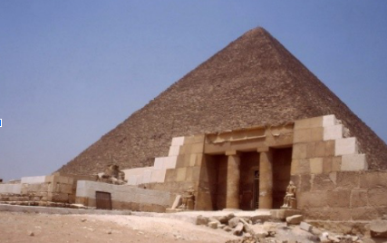

Home


Welcome to CCA Guide
This is a collection of notes and resources for some courses at California Crosspoint Academy.
Disclaimer
This guide is not updated, endorsed, or approved by the California Crosspoint Academy. Content may be outdated or incorrect. Please refer to the teachers for the most up-to-date information.
This is not meant to replace taking notes and creating your own resources, but rather to supplement it.
If you found this guide helpful, please consider starring the GitHub repository and sharing it with others.
View the standalone page here.
Contributing
If you notice that any information is incorrect, missing, or would like content removed, open an issue.
If you would like to make changes or add your content to the guide, fork the repository and open a pull request.
AP Calculus AB ↵
Assignments
Classwork
Extra Credit
Free Response Questions
- FRQ1
- FRQ12
- FRQ13
- FRQ14-15
- FRQ16
- FRQ17-18-19
- FRQ2
- FRQ20-21
- FRQ22
- FRQ23
- FRQ24-25
- FRQ26-30
- FRQ27-28
- FRQ29
- FRQ3
- FRQ31
- FRQ32
- FRQ33
- FRQ34-35
- FRQ37
- FRQ38
- FRQ39
- FRQ40
- FRQ41
- FRQ42
- FRQ43
- FRQ7-8
- FRQ9-10-11
Homework
- HW-Derivatives
- HW1.4
- HW1.5A
- HW1.5B
- HW1.5C
- HW1.6A
- HW1.6B
- HW1.7A
- HW1.7B
- HW1.8A
- HW1.8B
- HW2.1A
- HW2.1B
- HW2.2A
- HW2.2B
- HW2.3A
- HW2.3B
- HW2.4A
- HW2.4B
- HW2.5A
- HW2.5B
- HW2.6A
- HW2.6B
- HW2.7
- HW2.8A
- HW2.8B
- HW2.9
- HW3.1
- HW3.2
- HW3.3A
- HW3.3B
- HW3.4
- HW3.5
- HW3.7
- HW3.8
- HW3.9
- HW4.1A
- HW4.1B
- HW4.1C
- HW4.2A
- HW4.2B
- HW4.2C
- HW4.3
- HW4.4A
- HW4.4B
- HW4.5A
- HW4.5B
- HW5.1
- HW5.2A
- HW5.2B
- HW5.2C
- HW5.2D
- HW6.4
- HW6.6
- HW6.8
Practice
Math N1A Summer 2022
Homework
Ended: AP Calculus AB
AP Calculus BC ↵
Assignments ↵
Parametric Equations
-
A bug moves linearly with constant speed across my graph paper. I first notice the bug when it is at \((3,4)\). It reaches \((9, 8)\) after two seconds and \((15, 12)\) after four seconds.
- Predict the position of the bug after 6 seconds, after 9 seconds; after \(t\) seconds.
- Is there a time when the bug is equidistant from the x and y-axes? If so, where is it?
-
The x and y-coordinates of points that depend on \(t\) are given by the equations shown. Use your graph paper to plot points corresponding to \(t=-1\), \(0\), and \(2\). These points should appear to be collinear. Convince yourself that this is the case and calculate the slope of this line. How is the slope of a line determined from its parametric equations?
-
Find parametric equations to describe the line that goes through the points \(A = (5, -3)\) and \(B = (7, 1)\). Find at least two parametric equations that work. What is the difference between them?
-
Caught in a nightmare, Blair is moving along the line \(y = 3x + 2\). At midnight, Blair's position is \((1, 5)\) and the x-coordinate increasing by 4 units every hour. Write parametric equations that describe Blair's position \(t\) hours after midnight. What was Blair's position at 10:15 pm when the nightmare started? Find Blair's speed, in units per hour.
-
The parametric equations \(x=-2-3t\) and \(y=6+4t\) describe the position of a particle, in meters and seconds. How does the particle's position change each second? Each minute? What is the speed of the particle, in meters per second? Write parametric equations that describe the particle's position, using meters and minutes as units.
-
Find parametric equations that describe the following lines:
- Through \((3, 1)\) and \((7, 3)\)
- Through \((7,-1)\) and \((7, 3)\)
-
A bug is moving along the line \(3x + 4y = 12\) with constant speed 5 units per second. The bug crosses the x-axis when \(t = 0\) seconds. It crosses the y-axis later. When? Where is the bug when \(t = 2\)? when \(t=-1\)? When \(t = 1.5\)? What does a negative t-value mean?
-
Find the coordinates for the point that is three fifths of the way from \((4, 0)\) to \((0, 3)\). Start by writing parametric equations to describe the line joining those two points.
-
The position of a bug is described by the parametric equation \((x, y) = (2-12t, 1+5t)\). Explain why the speed of the bug is \(13\) cm/sec. Change the equation to obtain the description of a bug moving along the same line with speed \(26\) cm/second.
Parametric Work 2
-
A very fast bug walks counterclockwise around the edge of a circular table. At time \(t = 0\), the bug starts at the point \((3,0)\) and walks 3 feet/second. After one second, what is the bug's angle from the bug's starting point from the center of the circle to the current position (i.e. the central angle)? 2 seconds? \(t\) seconds?
\[ C = 2\pi r = 2\pi(3) = 6\pi \\ \]Therefore, it takes \(2 \pi\) seconds to walk around the edge of the table. Since \(2 \pi\) radians is 360 degrees, the bug walks at a rate of 1 radian per second.
- After 1 second, the bug is at \(\theta = 1\) radian
- After 2 seconds, the bug is at \(\theta = 2\) radians
- After \(t\) seconds, the bug is at \(\theta = t\) radians.
-
(continued) What's the bug's x and y coordinates after t seconds?
\[ \begin{align*} x(t) &= 3\cos(t) \\ y(t) &= 3\sin(t) \end{align*} \] -
Consider the curves \(x(t) = 3\cos(t)\) and \(y(t) = 3\sin(t)\). Change some values to see what happens and try to explain why those things might occur
\[ \begin{align*} x(t) &= r_x\cos(a_xt) \\ y(t) &= r_y\sin(a_yt) \end{align*} \]Observations Noted from \(t \in [0, 2\pi]\):
- \(r_x\) and \(r_y\) determine the width and height of the parametric curve
- If you double \(a_x\) and \(a_y\), you get the number of times the curve crosses the x and y-axes
-
Consider two parametric equations: \(x(t) = t^2\), \(y(t) = t^4\) and \(x(t) = t^3\), \(y(t) = t^6\), both from \(-5 \leq t \leq 5\). What is the same or different?
\[x(t) = t^2 \quad y(t) = t^4\]\[ x(t) = t^3 \quad y(t) = t^6 \]The same line is traced out by both parametric equations, but the second one is much faster, as the curve is goes to greater values with the same values bounds of \(t\). \(x(t) = t^3\), \(y(t) = t^6\) also has a negative x-axis, while \(x(t) = t^2\), \(y(t) = t^4\) does not.
-
Consider \(x(t)=tcos(t)\), \(y(t)=tsin(t)\) for \(0 \le t \le 4 \pi\). What graph do you make here? Why does that happen?
-
\(f(x)=cos^{-1}(t)\), \(y=sin^{-1}(t)\), then what is y(x) without any trigonometric functions sin^{-1}(cos~x)? [i.e.not~y=
-
Finn the Human is riding his bike and runs aver a piece of gum on one of his 30-inch wheels. Assume that he's riding such that the wheel makes one revolution per second. Also assume that at t=0 is when the gum is on the very bottom of the wheel. Draw a graph of the path that the gum would take as the wheel rolls along a flat surface. (This graph is very special, called a cycloid).
-
(continued) To help find the parametric equation for the cycloid, first assume the wheel is just spinning without any translation (or "transcription"...] Use the diagram to help you (note the spin is clockwise since we eventually want to move to the right):
a. What are the x and y coordinates at t=0,.25,0.5,0.75, and 17
b. Can you find an equation for the y-coordinate as a function of
time? X-coordinate? c. After one second, there's been one revolution. How far does the center move? 2 seconds? t seconds?
d. What is the parametric equation for the cycloid? Make a nice graph (on Desmos probably)
Ended: Assignments
Notes ↵
Series ↵
Power Series
Series Methods and Tests
Direct Comparison
Can be used to determine if a series converges or diverges by comparing it to a known series.
A function smaller than a convergent series will always converge, likewise, a function larger than a divergent series will always diverge.
Direct Comparison Test
Conditions
- \(a_n\) and \(b_n\) are both positive for all \(n\).
Limit Comparison
When a series is too difficult to compare directly, it can be compared to a similar known series that is easier to compare.
Limit Comparison Test
Conditions
- \(a_n\) and \(b_n\) are both positive for all \(n\).
\(p\)-series
If a series follows the general form of a \(p\)-series, it can be determined if it converges or diverges.
\(p\)-series
Geometric Series
Conditions
\(f(x)\) is a geometric series if it follows the form \(f(x) = ar^x\)
Telescopic Series
Integral Test
Test for Divergence
The series is divergent if
Ratio Test
Root Test
Alternating Series Test
Conditions
\(f(x)\) is an alternating series if it follows the form \(f(x) = (-1)^n a_n\)
Taylor and MacLaurin Series
Taylor Series
The Taylor Series is a representation of a function as an infinite sum of terms calculated from the values of its derivatives at a single point.
If we have a function \(f(x)\), we can write the Taylor Series for \(f(x)\) as:
This series expands a function into a series of terms, where each term is a derivative of the function evaluated at a certain point \(a\), multiplied by \((x-a)\) raised to the power of the term's position in the series (starting from 0), and divided by the factorial of the term's position.
More simply written, the Taylor Series for \(f(x)\) is:
How many terms should I write on the AP Exam?
The AP Exam will in general ask you to write the first four terms of a Taylor Series.
MacLaurin Series
The MacLaurin Series is a special case of the Taylor Series, where the center of the series is at \(x=0\). The MacLaurin Series is defined as:
Polynomial Definition of \(e^x\)
To find the derivative of \(e^x\) is always \(e^x\). Therefore, the derivative of \(e^x\) at \(x=0\) is always \(1\). Using the MacLaurin Series definition, we can write the MacLaurin Series for \(e^x\) as:
Polynomial Definition of \(\sin(x)\)
To find the derivative of \(\sin(x)\) is always \(\cos(x)\). Therefore, the derivative of \(\sin(x)\) at \(x=0\) alternates between \(0\) and \(1\). This leaves us with an alternating series of only terms where \(n\) is an odd number. Using the MacLaurin Series definition, we can write the MacLaurin Series for \(\sin(x)\) as:
Polynomial Definition of \(\cos(x)\)
To find the derivative of \(\cos(x)\) is always \(-\sin(x)\). Therefore, the derivative of \(\cos(x)\) at \(x=0\) alternates between \(1\) and \(0\). This leaves us with an alternating series of only terms where \(n\) is an even number. Using the MacLaurin Series definition, we can write the MacLaurin Series for \(\cos(x)\) as:
Practice Problems
Series of \(x\cos(2x)\)
Using the definition of \(\cos(x) = \sum_{n=0}^{\infty} \frac{(-1)^n x^{2n}}{(2n)!}\), we can write the series for \(x\cos(2x)\) as:
Series of \(x^2\ln(1+x^3)\)
Using the definition of \(\ln(1+x) = \sum_{n=0}^{\infty} \frac{(-1)^n x^{n+1}}{n+1}\), we can write the series for \(x^2\ln(1+x^3)\) as:
Ended: Series
Ended: Notes
Review ↵
FRQ ↵
2022 FRQ
Part B
Question 6
The function \(f\) is defined by the power series for all real numbers \(x\) for which the series converges:
- Using the ratio test, find the interval of convergence of the power series for \(f\). Justify your answer.
- Show that \(\left|f(\frac{1}{2})-\frac{1}{2}\right| \leq \frac{1}{10}\). Justify your answer.
- Write the first four nonzero terms and the general term for an infinite series that represents \(f'(x)\).
- Use the result from 3. to find the value of \(f'(\frac{1}{6})\).
2023 FRQ
Part B
Question 6
The function \(f\) has derivatives of all orders for all real numbers. It is known that \(f(0) = 2\), \(f'(0) = 3\), \(f''(x) = -f(x^2)\), and \(f'''(x) = -2x \cdot f'(x^2)\)
-
Find \(f^{(4)}(x)\), the forth derivative of \(f\) with respect to \(x\). Write the fourth-degree Taylor polynomial for \(f\) about \(x=0\). Show the work that leads to your answer.
Solution
Forth derivative of \(f\) with respect to \(x\):
\[ f^{(4)}(x) = -4x^2f''(x^2) - 2f'(x^2) \]Derivatives of \(f^n(x)\) at \(x=0\):
\[ f(0) = 2, f'(0) = 3, f''(0) = -2, f'''(0) = 0, f^{(4)}(0) = -6 \]Fourth degree Taylor polynomial for \(f\) about \(x=0\):
\[ T_4(x) = 2 + 3x -\frac{2}{2!}x^2 - \frac{6}{4!}x^4\\ \] -
The forth-degree Taylor polynomial for \(f\) about \(x=0\) is used to approximate \(f(0.1)\). Given that \(|f^{(5)}(x)| \leq 15\) for \(0 \leq x \leq 0.5\), use the Lagrange error bound to show that this approximation is within \(\frac{1}{10^5}\) of the exact value of \(f(0.1)\).
Solution
By the Lagrange error bound, the error \(|R_n| \leq \frac{f^{(n+1)}(z)|x-a|^{n+1}}{(n+1)!}\) must be less than \(\frac{1}{10^5}\):
\[ \begin{aligned} \left|\frac{1}{10^5}\right| &\leq \frac{15|0.1-0|^5}{5!}\\ &\leq \frac{1}{8} \cdot \frac{1}{10^5}\\ &\leq \frac{1}{10^5} \end{aligned} \] -
Let \(g\) be the function such that \(g(0)=4\) and \(g'(x) = e^xf(x)\). Write the second-degree Taylor polynomial for \(g\) about \(x=0\).
Solution
The second derivative of \(g\) with respect to \(x\):
\[ g''(x) = e^xf'(x) + f(x)e^x \]Derivatives of \(g^n(x)\) at \(x=0\):
\[ g(0) = 4, g'(0) = 2, g''(0) = 5 \]Second degree Taylor polynomial for \(g\) about \(x=0\):
\[ T_2(x) = 4 + 2x + \frac{5}{2!}x^2 \]
Ended: FRQ
Ended: Review
Take Home Quizzes ↵
Basketball Free-Throw Percentage
Prompt
In the sport of basketball, when a player is "fouled," they have the opportunity to take two "free-throws," where the player shoots the ball two times and can give his team one point for each basket made
An important statistic in basketball is a player's free-throw success percentage over the basketball season. For example, if a player has 10 free-throw attempts made 8 baskets, their percentage is 80%.
Interestingly, the percentage is always rounded to the nearest percent (for the ease of the viewing public, which probably does not know math). For example, if a player has made 7 out of 22 free-throws, then the reported percentage is 32%.
During a game, the announcer says that a player is making 78% of their free throws at the moment that the player is fouled. The player makes two free-throw attempts and makes the first one but misses the second attempt. After the statistics are updated, the player is now making 76% of their free-throws.
For this player, what are all possible numbers of free-throws made and attempted so far this season (including the ones that were just made)? (Hint: There are a finite number of solutions)
Solution
Click here to view the solution.
Verification
In Kotlin, the solution can be verified by running the following code:
fun calculatePercentages(
percentInitial: Int,
percentFinal: Int,
successes: Int,
rounds: Int,
iterations: Int,
): MutableList<Pair<Int, Int>> {
val solutions = mutableListOf<Pair<Int, Int>>();
assert(iterations > 1) { "iterations $iterations must be greater than 1" };
for (n in 1..iterations) {
for (s in 1..n) {
val rawPercent = s.toDouble() / n.toDouble();
val percentRounded = Math.round(rawPercent * 100).toInt();
val finalSuccesses = s + successes;
val finalRounds = n + rounds;
val rawFinalPercent = finalSuccesses.toDouble() / finalRounds.toDouble();
val finalPercentRounded = Math.round(rawFinalPercent * 100).toInt();
if (percentRounded == percentInitial && finalPercentRounded == percentFinal) {
solutions.add(Pair(s, n));
}
}
}
return solutions;
}
//sampleStart
fun main() {
val iterations = 1000;
calculatePercentages(78, 76, 1, 2, iterations).forEach {
println("s: ${it.first}, n: ${it.second}")
}
}
//sampleEnd
Derivatives from a Different Perspective
Typically, the derivative of a function is defined as:
This definition assumes the method of picking some horizontal distance, \(h\), and using the new x-coordinate (which is \(x + h\)) to find the new y-coordinate (which is \(f(x + h)\)), creating a secant line, and then computing the slope. When \(h \to 0\), then we can find the value/equation of the slope of the tangent line (i.e., the derivative)
-
Copy the image below (the equation of the graph does not matter, as long as it is "curvy"), and then label \(x\), \(x + h\), \(f(x)\), \(f(x + h)\), \(h\), and the secant line.
Now we are going to consider a different perspective, which is isntead of using a fixed horizontal distance of \(h\), we will use a fixed vertical distance of \(h\). The horizontal distance between points will be now called \(k\). Then we will still have \(h \to 0\), which we will then use a limit, along with a new equation for the derivative, to find derivatives.
-
Make another copy of the diagram above and now label \(x\), \(x + h\), \(f(x)\), \(h\), \(f(x) + h\), and the secant line.
- Using algebra show that \(k = f^{-1}(f(x) + h) - x\).
- Now that we know \(k\), use a limit to define a new equation for the derivative of a function in terms of \(h\), \(x\), and \(f(x)\).
- Use your new definition of the derivative to find the derivative of the following:
- \(f(x) = \sqrt{x}\)
- \(f(x) = \frac{1}{x}\)
- Now consider the function \(f(x) = x^2\). Using your new definition of the derivative get to a place of evaluating the derivative up to the point where you get a \(\sqrt{x^2}\).
- What is \(\sqrt{x^2}\) precisely equal to?
- What, then becomes a difficulty when considering the derivative of \(x^2\) if we consider when \(x\) is a negative value? What is a way to resolve this issue?
Solution
Click here to view the solution
Higher Order Derivatives Using Limits
In class, you have used the limit definition of a derivative to find the derivative of a function. In this quiz, you are going to be using the limit definition to do higher order derivatives instead of using the usual "shortcut" methods.
- Just as a review, use the limit definition to find the derivative of \(f(x) = 2x^2 - x\).
- Now that you remember the limit definition for \(f'(x)\), find a similiar limit definition for \(f''(x)\) that does NOT have \(f'\) in the answer. That is, your answer should be: \(\(f''(x) = \lim_{h \to 0} \frac{?}{?}\)\)
- Show that your limit definition for \(f''(x)\) works for \(f(x) = 2x^2 - x\). (Hint: Lots of algebra here)
- Show that your limit definition works for \(f(x) = a_0 + a_1x + a_2x^2 + a_3x^3\), where \(a_n\) is a constant.
- Now for even higher order derivatives!
- Determine the limit definition for \(f'''(x)\). (Remember that you should not have any derivatives in your limit definition.)
- Determine the limit defintion for \(f^{(4)}(x)\). (Hint: Look for patterns)
- Determine the limit definition for \(f^{(n)}(x)\).
Solution
Click here to view the solution
Interesting Derivative and Areas
This take-home quiz you will take a look at an interesting property in math that involves derivatives and areas.
Consider the function \(f(x) = \frac{1}{x}\). (For the duration of this quiz, just consider the function in the first quadrant only.)
- Find the equation of the tangent line to \(f(x)\) at the point \(x = a\). (where \(x > 0\)).
- Call the point of tangency \(A\), the point where the tangent line interesects the y-axis \(B\), and the point where the tangent line intersects the x-axis \(C\).
- What are the coordinates of point \(B\) and point \(C\)?
- Find the ratio of the length \(\overline{AC}\) to \(\overline{BC}\).
- How does the point \(x = a\) relate to what you found in 2.b?
- What is the area of the right triangle with vertices \(B\), \(C\), and the origin? How does the point of tangency relate to what you found?
- What is the area of the bottom-left vertex at the origin and a top-right vertex at \(A\)? What is the ratio of the area of the rectangle to the area of the triangle? As before, how does the point of tangency relate to what you found?
- A more interesting question is whether the properties that we saw in the previous question holds when the power changes. Consider the function \(f(x) = \frac{1}{x^2}\). Repeat #1-4 (call them 5a, 5b, etc.) for this function. What does the point of tangency do in 5b? What about the ratios of areas in 5d?
- Now generalize this by using \(f(x) = \frac{1}{x^n}\) and repeating #1-4 (call it 6a, 6b, etc.) What does the point of tangency do in 6b? What about the ratios of areas in 6d?
Solutions
Click here to view the solution
Supplemental AP Calculus BC Final Exam
-
Let \(f\) be the function that has derivatives of all orders (i.e. can be differentiated any number of times). Let \(3-6(x-1)^2 + 5(x-3)^3 - 2(x-1)^4\) be the fourth-degree Taylor polynomial for \(f\) about \(x=1\). Does \(f\) have a local minimum, local maximum, or neither at \(x=1\)? Explain how you know.
From the equation, the following can be determined with the Taylor Series:
\[ \frac{f(1)}{0!} = 3, \frac{f'(1)}{1!} = 0, \frac{f''(1)}{2!} = -6 \]The function has a critical point at \(x=1\) since \(f'(1) = 0\). Since \(f''(1) = -12 < 0\), the function has a local maximum at \(x=1\).
-
Evaluate the following integrals:
-
\(\int_{-1}^1 \frac{1}{x^2} dx\)
\[ \begin{aligned} &= \int_{-1}^0 \frac{1}{x^2} dx + \int_{0}^1 \frac{1}{x^2} dx\\ &= -\frac{1}{x} \Biggr|_{-1}^{0} + \frac{1}{x} \Biggr|_{0}^{1}\\ &= \text{Divergent} \end{aligned} \] -
\(\int_{-\infty}^{\infty} \frac{1}{1+x^2} dx\)
\[ \begin{aligned} &= \tan^{-1}(x) \Biggr|_{-\infty}^{\infty}\\ &= \lim_{x \to \infty} \tan^{-1}(x) - \lim_{x \to -\infty} \tan^{-1}(x)\\ &= \frac{\pi}{2} - \frac{-\pi}{2}\\ &= \pi \end{aligned} \] -
\(\int_{-3}^3 \frac{x}{1+|x|} dx\)
\[ \begin{aligned} f(x) &= \frac{x}{1+|x|}\\ f(-x) &= \frac{-x}{1+|-x|}\\ &= \frac{-x}{1+|x|}\\ f(x) &= f(-x) \text{ (Odd function)} \\ \therefore \int_{-3}^3 \frac{x}{1+|x|} dx &= 0 \end{aligned} \] -
\(\int \frac{dx}{e^x \sqrt{4-e^{-2x}}}\)
\[ \begin{aligned} u = e^{-x}&, du = -e^{-x} dx\\ \int \frac{dx}{e^x \sqrt{4-e^{-2x}}}dx &= \int \frac{-du}{\sqrt{4-u^2}}\\ &= -\sin^{-1}(\frac{u}{2}) + C\\ &= -\sin^{-1}(\frac{e^{-x}}{2}) + C \end{aligned} \]
-
-
Find the sum of the following series:
-
\(2 - \sqrt{2} + 1 - \frac{\sqrt{2}}{2} + \frac{1}{2} - \dots\)
\[ \begin{aligned} &= \sum_{n=0}^{\infty} 2(\frac{1}{2})^n - \sum_{n=0}^{\infty} \sqrt{2}(\frac{1}{2})^n\\ &= \frac{2}{1-\frac{1}{2}} - \frac{\sqrt{2}}{1-\frac{1}{2}}\\ &= 4 - 2\sqrt{2} \end{aligned} \] -
\(\sum_{n=0}^{\infty} \frac{2^{n-1}}{n!}\)
\[ \begin{aligned} &= \sum_{n=0}^{\infty} \frac{2^n}{2n!}\\ &= \frac{1}{2} \sum_{n=0}^{\infty} \frac{2^n}{n!}\\ \end{aligned} \]Using the Maclaurin Series for \(e^x\):
\[ \begin{aligned} e^x &= \sum_{n=0}^{\infty} \frac{x^n}{n!}\\ \frac{1}{2} \sum_{n=0}^{\infty} \frac{2^n}{n!} &= \frac{e^2}{2} \end{aligned} \] -
\(3 \sum_{n=0}^{\infty} \frac{(-1)^n (\sqrt{3})^{2n+1}}{2n+1}\)
Given the Maclaurin Series for \(\tan^-1(x)\):
\[ \begin{aligned} \sum_{n=0}^{\infty} \frac{(-1)^n x^{2n+1}}{2n+1} &= \tan^{-1}(x)\\ 3\sum_{n=0}^{\infty} \frac{(-1)^n (\sqrt{3})^{2n+1}}{2n+1} &= 3\tan^{-1}(\sqrt{3}) \end{aligned} \] -
\(\sum_{k=1}^{\infty} \ln(\frac{k}{k+1})\)
\[ \begin{aligned} &= \sum_{k=1}^{\infty} \ln(k) - \ln(k+1)\\ &= \ln(1) - \ln(2) + \ln(2) - \ln(3) + \ln(3) - \ln(4) + \dots\\ &= \lim_{k \to \infty} \ln(k) - \ln(k+1)\\ &= -ln(\infty)\\ &= -\infty \text{ (Divergent)}\\ \end{aligned} \] -
\(\sum_{n=1}^{\infty} \frac{\sqrt{n+1}-\sqrt{n}}{\sqrt{n(n+1)}}\)
\[ \begin{aligned} &= \sum_{n=1}^{\infty} \frac{\sqrt{n+1}}{\sqrt{n(n+1)}} - \frac{\sqrt{n}}{\sqrt{n(n+1)}}\\ &= \frac{\sqrt{2}}{\sqrt{1 \cdot 2}} - \frac{\sqrt{1}}{\sqrt{1 \cdot 2}} + \frac{\sqrt{3}}{\sqrt{2 \cdot 3}} - \frac{\sqrt{2}}{\sqrt{2 \cdot 3}} + \frac{\sqrt{4}}{\sqrt{3 \cdot 4}} - \frac{\sqrt{3}}{\sqrt{3 \cdot 4}} + \dots\\ &= 1 \text{ (Telescoping series)} \end{aligned} \]
-
-
For what values of \(r\) is the integral \(\int_{0}^{\infty} \frac{1}{x^r} dx\) convergent?
Between \(0\) and \(1\), the integral is convergent for \(r > 1\). For \(r \leq 1\), the integral is divergent.
Between \(1\) and \(\infty\), the integral is convergent for \(r < 1\). For \(r \geq 1\), the integral is divergent.
Therefore, no combination of \(r\) values will make the integral convergent. One section of the integral will always be divergent, so the entire integral is divergent since the integral \(\int_{0}^{\infty} \frac{1}{x^r} dx\) is made up from \(\int_{0}^{1} \frac{1}{x^r} dx + \int_{1}^{\infty} \frac{1}{x^r} dx\).
-
The sum of an infinite geometric series with common ratio \(r\) is 15, and the sum of the squares of the terms of this series 45. What is the first term of the series?
\[ \begin{aligned} \begin{cases} \frac{a}{1-r} = 15\\ \frac{a^2}{1-r^2} = 45 \end{cases}\\ a &= 15(1-r)\\ 45 &= \frac{(15(1-r))^2}{1-r^2}\\ 45(1-r^2) &= 15^2(1-r)^2\\ 270r^2 - 450r + 180 &= 0\\ 3r^2 - 5r + 2 &= 0\\ (3r - 2)(r - 1) &= 0\\ r &= \frac{2}{3}, 1 \text{ (Cannot have } r = 1 \text{)}\\ a &= 15(1-\frac{2}{3})\\ &= 5 \end{aligned} \] -
Determine if the following series are absolutely convergent, conditionally convergent, or divergent.
-
\(\sum_{n=2}^{\infty} \frac{(-1)^n}{n(\ln{n})^3}\)
Using the integral test:
\[ \begin{aligned} \int_{2}^{\infty} \frac{1}{x(\ln{x})^3} dx &= \frac{1}{2\ln(2)^2} \text{ (Convergent)}\\ \end{aligned} \]Passes the alternating series test, therefore it is absolutely convergent.
-
\(\sum_{n=1}^{\infty} \frac{(n!)^2}{(2n)!}\)
Using the ratio test:
\[ \begin{aligned} \lim_{n \to \infty} \frac{(n+1)!^2}{(2n+2)!} \cdot \frac{(2n)!}{(n!)^2} &= \lim_{n \to \infty} \frac{(n+1)^2}{(2n+2)(2n+1)}\\ &= \frac{1}{4} \text{ (Absolutely Convergent)}\\ \end{aligned} \] -
\(\sum_{n=1}^{\infty} a_n \text{ where } a_1=2, a_{n+1} = \frac{2n+1}{5n-4}\)
Using the ratio test:
\[ \begin{aligned} \lim_{n \to \infty} \frac{a_{n+1}}{a_n} &= \lim_{n \to \infty} \frac{2n+1}{5n-4} \cdot \frac{5n-9}{2n-1}\\ &= \frac{2}{5} \text{ (Absolutely Convergent)}\\ \end{aligned} \]
-
-
Let \(f(x) = 1 + \frac{x}{2} + \frac{x^2}{4} + \frac{x^3}{8} + \dots = \sum_{n=0}^{\infty} \frac{x^n}{2^n}\) for \(-1 \leq x \leq 1\). Determine \(\sqrt{e^{\int_{0}^{1} f(x) dx}}\).
\[ \begin{aligned} \int_{0}^{1} f(x) dx &= \sum_{n=0}^{\infty} \frac{x^n}{2^n} dx\\ &= \sum_{n=0}^{\infty} (\frac{x}{2})^n \\ &= \frac{2}{2-x}\\ &\int_{0}^{1} \frac{2}{2-x}\\ u = 2-x&, du = -dx\\ &= \int_{1}^{2} \frac{2}{u} du\\ &= 2\ln(u) \Biggr|_{1}^{2}\\ &= 2\ln(2) + 2\ln(1)\\ &= 2\ln(2)\\ \sqrt{e^{2\ln2}} &= e^{\ln2}\\ &= 2 \end{aligned} \] -
Consider the following series
\[\frac{1}{2} - \frac{1}{3} + \frac{1}{2^2} - \frac{1}{3^2} + \frac{1}{2^3} - \frac{1}{3^3} + \dots\]-
Explain why it is not possible to use the alternating series test on this series.
The series is not monotonically decreasing since the terms alternate between \(\frac{1}{2^n}\) and \(\frac{1}{3^n}\).
-
This series actually does converge! Find the sum of the series. (Hint: Split the series up)
\[ \begin{aligned} &= \sum_{n=1}^{\infty} \frac{1}{2^n} - \sum_{n=1}^{\infty} \frac{1}{3^n}\\ &= \frac{\frac{1}{2}}{1-\frac{1}{2}} - \frac{\frac{1}{3}}{1-\frac{1}{3}}\\ &= 1 - \frac{1}{2}\\ &= \frac{1}{2} \end{aligned} \]
-
-
Find the values of \(p\) which make the following series converge:
-
\(\sum_{n=1}^{\infty} (-1)^n \frac{1}{n + p}\)
For any value of \(p\), the series will converge since it is an alternating series.
-
\(\sum_{n=1}^{\infty} n(1+n^2)^p\)
The largest dominating term is \(n^{2p+1}\), therefore the series will converge for \(2p + 1 < -1\). Therefore, the series will converge for \(p < -1\).
-
\(\sum_{n=1}^{\infty} \frac{(n!)^2}{(pn)!}\)
The ratio test can be used to determine the values of \(p\) that make the series converge:
\[ \begin{aligned} \lim_{n \to \infty} \frac{(n+1)!^2}{(p(n+1))!} \cdot \frac{(pn)!}{(n!)^2} &= \lim_{n \to \infty} \frac{(n+1)^2}{(pn+1)(pn+2)(pn+3)\dots(pn+p)}\\ &= \frac{1}{p^p} \\ p &\geq 2\\ \end{aligned} \]
-
-
If \(f(x) = \sin(x^3)\), then find \(f^{(15)}(0)\). (Hint: This means 15th derivative) (Hint 2: Don't try to take 15 derivatives since it would get unbearably messy)
With the Maclaurin Series:
\[ \begin{aligned} \sin(x) &= \sum_{n=0}^{\infty} \frac{(-1)^n x^{2n+1}}{(2n+1)!}\\ &= x - \frac{x^3}{3!} + \frac{x^5}{5!} - \frac{x^7}{7!} + \cdots\\ \sin(x^3) &= x^3 - \frac{x^9}{3!} + \frac{x^{15}}{5!} - \frac{x^{21}}{7!} + \cdots\\ \end{aligned} \]By definition of the terms of the Maclaurin Series:
\[ \begin{aligned} \frac{f^{(15)}(0)}{15!}x^15 &= \frac{x^{15}}{5!}\\ \frac{f^{(15)}(0)}{15!} &= \frac{1}{5!}\\ f^{(15)}(0) &= \frac{15!}{5!}\\ &= 10,897,286,400 \end{aligned} \] -
Find \(F'(0)\) if \(F(x) = \begin{cases} \frac{g(x)\sin^2x}{x} & x \neq 0 \\ 0 & x = 0 \end{cases}\) (Hint: Your answer should be in terms of \(g\))
\[ \begin{aligned} F'(0) &= \lim_{x \to 0} \frac{F(x) - F(0)}{x - 0}\\ &= \lim_{x \to 0} \frac{\frac{g(x)\sin^2x}{x} - 0}{x}\\ &= \lim_{x \to 0} \frac{g(x)\sin^2x}{x^2} \Rightarrow \frac{0}{0}\\ &= \lim_{x \to 0} \frac{2g(x)\sin x\cos x + \sin^2xg'(x)}{2x} \text{ LH} \Rightarrow \frac{0}{0}\\ &= \lim_{x \to 0} \frac{2g(x)(\cos^2x - \sin^2x) + 4g'(x)\sin x\cos x + g''(x)\sin^2x}{2} \text{ LH}\\ &= \frac{2g(0)(1 - 0) + 4g'(0)(0)(1) + g''(0)(0)}{2}\\ &= \frac{2g(0)}{2}\\ &= g(0) \end{aligned} \]
Conditional Convergence
One of the topics we've discussed this school year was the concept of absolute vs. conditional convergence. But what does conditionally convergent really mean? This example will give a glimpse into what that is (because I don't fully understand what conditional convergence truly is...  )
)
-
Write the first eight non-zero terms and the general term for the function \(f(x) = \frac{1}{1-x}\) and determine its interval of convergence.
First Eight Non-Zero Terms and General Term:
\[ \begin{align} \frac{1}{1-x} &= 1 + x + x^2 + x^3 + x^4 + x^5 + x^6 + x^7 + \cdots \\ &= \sum_{n=0}^{\infty} x^n \end{align} \]Interval of Convergence:
\[ \begin{align} \lim_{n \to \infty} \left| \frac{x_{n+1}}{x_n} \right| &= x < 1\\\\ x = -1: \text{ Divergent} \\ x = 1: \text{ Divergent} \\ \therefore (-1, 1) \end{align} \] -
Find the first eight non-zero terms and the general term for the function \(g(x) = \ln(1+x)\) based on the previous question. Determine the interval of convergence. Is the interval of convergence different from the previous question?
First Eight Non-Zero Terms and General Term:
\[ \begin{align} \int \frac{1}{1+x} dx &= \int \sum_{n=0}^{\infty} x^n dx \\ &= \ln(1+x) + C \\\\ \ln(1+x) &= x - \frac{x^2}{2} + \frac{x^3}{3} - \frac{x^4}{4} + \frac{x^5}{5} - \frac{x^6}{6} + \frac{x^7}{7} - \cdots \\ &= \sum_{n=1}^{\infty} (-1)^{n+1} \frac{x^n}{n} \end{align} \]Interval of Convergence:
\[ \begin{align} \lim_{n \to \infty} \left| \frac{\frac{x^{n+1}}{n+1}}{\frac{x^n}{n}} \right| = \lim_{n \to \infty} \left| \frac{nx^{n+1}}{x^n (n+1)} \right| &< 1 \\ \lim_{n \to \infty} \left| \frac{xn}{n+1} \right| &< 1 \\ x \lim_{n \to \infty} \left| \frac{n}{n+1} \right| &< 1 \\ x &< 1 \\\\ x = -1: \text{ Divergent} \\ x = 1: \text{ Convergent} \\\\ \therefore (-1, 1] \end{align} \] -
Based on your series from #2, determine what \(\ln(2)\) is equal to in series form. (Again, write the first eight non-zero terms and the general term.) The series for \(\ln(2)\) should look familiar. What do we call that series?
Substitute \(x=1\):
\[ \begin{align} \ln(x+1) &= \sum_{n=1}^{\infty} (-1)^{n+1} \frac{x^n}{n} \\\\ \ln(2) &= 1 - \frac{1}{2} + \frac{1}{3} - \frac{1}{4} + \frac{1}{5} - \frac{1}{6} + \frac{1}{7} - \cdots \\ &= \sum_{n=1}^{\infty} (-1)^{n+1} \frac{1}{n} \text{ (Alternating Harmonic Series)} \end{align} \] -
Now consider manipulation of the series for \(\ln(2)\) from #3. For only the positive terms (which have the form of \(\frac{1}{n}\)), rewrite them in the manner of \(\frac{2}{n} - \frac{1}{n}\). Leave the negative terms alone. This will still be equal to \(\ln(2)\) of course. (You do not need to simplify.)
\[ \begin{align} \ln(2) &= \frac{2}{1} - \frac{1}{2} + \frac{2}{3} - \frac{1}{4} + \frac{2}{5} - \frac{1}{6} + \frac{2}{7} - \cdots \\ &= \ln(2) = \left(2 - 1\right) - \frac{1}{2} + \left(\frac{2}{3} - \frac{1}{3}\right) - \frac{1}{4} + \left(\frac{2}{5} - \frac{1}{5}\right) - \frac{1}{6} + \cdots \end{align} \] -
Now multiply both sides of the equation by \(\frac{1}{2}\). The left is, obviously, \(\frac{\ln(2)}{2}\). For the right side, distribute into the parenthesis first, then remove the parenthesis, without simplifying or reordering anything (but reduce the fractions.) What do you notice about this new series, compared to the one for \(\ln(2)\)? What's surprising about this result?
\[ \begin{align} \frac{\ln(2)}{2} &= \frac{1}{2}(2 - 1) - \frac{1}{2} \cdot \frac{1}{2} + \frac{1}{2}\left(\frac{2}{3} - \frac{1}{3}\right) - \frac{1}{2} \cdot \frac{1}{4} + \frac{1}{2}\left(\frac{2}{5} - \frac{1}{5}\right) + \cdots\\ &= \left(\frac{2}{2} - \frac{1}{2}\right) - \frac{1}{4} + \left(\frac{2}{6} - \frac{1}{6}\right) - \frac{1}{8} + \left(\frac{2}{10} - \frac{1}{10}\right) - \frac{1}{12} + \cdots\\ &= \left(1 - \frac{1}{2}\right) - \frac{1}{4} + \left(\frac{1}{3} - \frac{1}{6}\right) - \frac{1}{8} + \left(\frac{1}{5} - \frac{1}{10}\right) - \frac{1}{12} + \cdots\\ &= 1 - \frac{1}{2} - \frac{1}{4} + \frac{1}{3} - \frac{1}{6} - \frac{1}{8} + \frac{1}{5} - \frac{1}{10} - \frac{1}{12} + \cdots\\ \end{align} \]What is suprising is that \(\frac{\ln(2)}{2}\) seems to have the same terms as \(\ln(2)\) - just rearranged. But it's technically half of \(\ln(2)\).
-
Now consider another manipulation. Take the series for \(\ln(2)\) from #3, multiply both sides by \(\frac{1}{2}\), and add this new series to \(\ln(2)\). On the left side, you get \(\frac{3\ln(2)}{2}\). On the right, combine terms with the same denominators, with the denominators in increasing order. Simplify the terms with the same denominator, remove zeroes, but don't reorder anything. What do you get on the right side? (It should look like a variation of something familiar.)
\[ \begin{align} \ln(2) &= \frac{1}{1} - \frac{1}{2} + \frac{1}{3} - \frac{1}{4} + \frac{1}{5} - \frac{1}{6} + \frac{1}{7} - \cdots \\ \frac{\ln(2)}{2} &= \frac{1}{2} - \frac{1}{4} + \frac{1}{6} - \frac{1}{8} + \frac{1}{10} - \frac{1}{12} + \cdots \\\\ \ln(2) + \frac{\ln(2)}{2} &= \frac{3\ln(2)}{2} = 1 + \left(-\frac{1}{2} + \frac{1}{2}\right) + \frac{1}{3} + \left(-\frac{1}{4} - \frac{1}{4}\right) + \frac{1}{5} + \cdots \\ &= 1 + \frac{1}{3} - \frac{1}{2} + \frac{1}{5} - \frac{1}{4} + \frac{1}{7} + \cdots \\\\ &\text{ (Alternating Harmonic Series)} \end{align} \] -
Look at the series for \(\ln(2)\) and consider the positive terms. What are the first four non-zero terms and general term for these positive terms? Do the same for the negative terms. Do either of these individual series converge? (This should be a pseudo-surprising result
 )
)Positive Terms:
\[ \begin{align} 1 + \frac{1}{3} + \frac{1}{5} + \frac{1}{7} + \cdots= \sum_{n=0}^{\infty} \frac{1}{2n+1}\\ \left(\text{Divergent via Direct Comparison with } \frac{1}{n}\right) \end{align} \]Negative Terms:
\[ \begin{align} - \frac{1}{2} - \frac{1}{4} - \frac{1}{6} - \frac{1}{8} - \cdots= \sum_{n=0}^{\infty} \frac{1}{2n}\\ \left(\text{Divergent via Direct Comparison with } \frac{1}{n}\right) \end{align} \]What's interesting is that since both the positive and negative terms are divergent. However, the sum of the positive and negative terms make \(\ln(2)\) convergent. What makes it conditionally convergent is the fact the alternation of the positive and negative terms "cancels out" the divergence of each of the individual series. When you look at whether its absolute convergence though, you ignore the alternation, and thus the series is divergent (equivalent to a harmonic series).
Fourier Series (Part 1)
Introduction and Derivation of Fourier Series
In our calculus class, we've studied using Taylor series. A Taylor series approximates a function by using derivatives at a specific point to generate a polynomial.
However, there is a different way to approximate a function called Fourier series, pioneered by Joseph Fourier in the early 1800's. What a Fourier series does is approximate a function using sines and cosines over an interval. It is useful in approximating complex periodic phenomena, such as heat flows, oscillations, vibrations, sound, and anything else that exhibits wave behavior. In a modern sense, we use it in musical analysis, speech recognition, and filtering of sound.
A Fourier series is an infinite trigonometric series of the form:
This can be written using the summation notation as
To write a Fourier series, the goal is to find values of \(a_{k}\) and \(b_{k}\) to approximate a function \(f(x)\). Here is a picture of approximating the function \(f(x)=e^{-x^{2}}\) using a second-order Fourier approximation.
Fourier Series for Even Functions
We will begin by looking at only even functions, which have the property \(f(x)=f(-x)\), An even Fourier series, called \(F_{e}(x)\) only has cosine terms (you should understand why...) and can be used to approximate the even function. Therefore,
Assume we have some even function \(f(x)\) that we want to look at on the interval \([-\pi,\pi]\). We want to find \(F_{e}(x)\) such that \(F_{e}(x)=f(x)\), This implies that we want
If this is true, then we also want
-
Use the above equation to find \(a_{0}\) in terms of \(\int_{-\pi}^{\pi}f(x)\)
\[ \begin{align} \int_{-\pi}^{\pi}f(x)&=\int_{-\pi}^{\pi}a_{0}+a_{1}\cos(x)+a_{2}\cos(2x)+\cdots dx\\ &= 2\pi a_{0} + \sum_{n=1}^{\infty}a_{n}\int_{-\pi}^{\pi}\cos(nx) dx\\ \end{align} \]The area under the curve of \(\cos(nx)\) (given \(n\) is an integer where \(n \neq 0\)) over the interval \([-\pi,\pi]\) is zero, since \(n\) describes the number of complete waves within a period of \(2\pi\). In other words:
\[ \begin{align} \int_{-\pi}^{\pi}\cos(nx) dx = 0 \end{align} \]\[ \begin{align} \int_{-\pi}^{\pi}f(x) &= 2\pi a_{0} + \sum_{n=1}^{\infty}a_{n}\int_{-\pi}^{\pi}\cos(nx) dx\\ &= 2\pi a_{0}\\\\ a_0 &= \frac{1}{2\pi}\int_{-\pi}^{\pi}f(x)dx \end{align} \] -
Simplify \(\cos(nx+mx)+\cos(nx-mx)\) using trigonometric identities. Use those simplifications to evaluate \(\int_{-\pi}^{\pi}\cos(nx)\cos(mx)dx\) when \(m\ne n\). (Assume that \(m\), \(n\) are integers).
\[ \begin{align} &\cos(nx+mx)+\cos(nx-mx)\\ &= [\cos(nx)\cos(mx)-\sin(nx)\sin(mx)]+[\cos(nx)\cos(mx)+\sin(nx)\sin(mx)]\\ &= 2\cos(nx)\cos(mx)\\ \end{align} \]\[ \begin{align} \int_{-\pi}^{\pi}\cos(nx)\cos(mx)dx &= \int_{0}^{\pi}2\cos(nx)\cos(mx)dx\\ &= \int_{0}^{\pi}\cos(nx+mx)+\cos(nx-mx)dx\\ &= \int_{0}^{\pi}\cos(nx+mx)dx+\int_{0}^{\pi}\cos(nx-mx)dx\\ &= 0 \end{align} \]The area under the curve of \(\cos(nx)\) (given \(n\) is any integer where \(n \neq 0\)) over the interval \([0,\pi]\) is zero, since \(n\) describes half the number of complete waves within a period of \(\pi\). (Similar to #1)
-
Now consider the previous question, but now let \(m=n\) Evaluate \(\int_{-\pi}^{\pi}\cos(nx)\cos(mx)dx\) (Hint: It will be useful to simplify the integrand before integrating)
\[ \begin{align} \int_{-\pi}^{\pi}\cos(nx)\cos(mx)dx &= \int_{-\pi}^{\pi}\cos(nx)\cos(nx)dx\\ &= \int_{0}^{\pi}2\cos(nx)\cos(nx)dx\\ &= 2\int_{0}^{\pi}\cos^{2}(nx)dx\\ &= 2\int_{0}^{\pi}\frac{1+\cos(2nx)}{2}dx\\ &= \int_{0}^{\pi}1+\cos(2nx)dx\\ &= \pi \end{align} \] -
Use the result from the previous questions to find the value of \(a_{1}\) in terms of \(\int_{-\pi}^{\pi}\cos(x)f(x)dx\), knowing that \(\int_{-\pi}^{\pi}\cos(x)f(x)dx=\int_{-\pi}^{\pi}a_{0}\cos{x}+a_{1}\cos^{2}{x}+a_{2}\cos{x}\cos{2x}+\cdots dx\)
\[ \begin{align} \int_{-\pi}^{\pi}\cos(x)f(x)dx&=\int_{-\pi}^{\pi}a_{0}\cos{x}+a_{1}\cos^{2}{x}+a_{2}\cos{x}\cos{2x}+\cdots dx\\ &= \int_{-\pi}^{\pi}a_{0}\cos{x}+a_{1}\cos^{2}{x} dx\\ &= \frac{a_{1}}{2}\int_{-\pi}^{\pi}1+\cos(2x)dx\\ &= a_{1}\pi\\\\ a_{1}&=\frac{1}{\pi}\int_{-\pi}^{\pi}\cos(x)f(x)dx \end{align} \] -
Now use a similar procedure to the previous question to determine \(a_{2}\) in terms of \(\int_{-\pi}^{\pi}\cos{2x}f(x)dx.\)
\[ \begin{align} \int_{-\pi}^{\pi}\cos(2x)f(x)dx&=\int_{-\pi}^{\pi}a_{0}\cos{2x}+a_{1}\cos{x}\cos{2x}+a_{2}\cos^2{2x}+\cdots dx\\ &= \int_{-\pi}^{\pi}a_{2}\cos^2{2x}dx\\ &= \frac{a_{2}}{2}\int_{-\pi}^{\pi}1+\cos(4x)dx\\ &= a_{2}\pi\\\\ a_{2}&=\frac{1}{\pi}\int_{-\pi}^{\pi}\cos(2x)f(x)dx \end{align} \] -
Repeat to find \(a_{3}\) in terms of \(\int_{-\pi}^{\pi}\cos{3x}f(x)\).
\[ \begin{align} \int_{-\pi}^{\pi}\cos(3x)f(x)dx&=\int_{-\pi}^{\pi}a_{0}\cos{3x}+a_1\cos{x}\cos{3x}+\cdots+a_{3}\cos^2{3x}+\cdots dx\\ &= \int_{-\pi}^{\pi}a_{3}\cos^2{3x}dx\\ &= \frac{a_{3}}{2}\int_{-\pi}^{\pi}1+\cos(6x)dx\\ &= a_{3}\pi\\\\ a_{3}&=\frac{1}{\pi}\int_{-\pi}^{\pi}\cos(3x)f(x)dx \end{align} \] -
Now generalize to find \(a_{n}\) in terms of \(\int_{-\pi}^{\pi}\cos{nx}f(x)dx\). (For \(n\ge 1\))
\[ \begin{align} \int_{-\pi}^{\pi}\cos(nx)f(x)dx&=\int_{-\pi}^{\pi}\cdots + a_{n-1}\cos{x}\cos{nx}+a_{n}\cos^2{nx}+\cdots dx\\ &= \int_{-\pi}^{\pi}a_{n}\cos^2{nx}dx\\ &= \frac{a_{n}}{2}\int_{-\pi}^{\pi}1+\cos(2nx)dx\\ &= a_{n}\pi\\\\ a_{n}&=\frac{1}{\pi}\int_{-\pi}^{\pi}\cos(nx)f(x)dx \end{align} \] -
Now let \(f(x)=e^{-x^{2}}\), the interval \([-\pi,\pi]\). Use a calculator to determine the coefficients \(a_{0}\), \(a_{1}\), \(a_{2}\) , \(a_{3}\), \(a_{4}\) and \(a_{5}\) Graph \(e^{-x^{x}}\) on the interval \([-\pi,\pi]\) and compare it to the graph of your series, \(F_{e}(x)=a_{0}+a_{1}cos(x)+a_{2}cos(2x)+\cdot\cdot\cdot+a_{5}cos(5x)\) on the same interval.
On the next take-home quiz, you will be thinking about odd function Fourier series, and then generalizing to all functions!
Fourier Series (Part 2)
Introduction and Derivation of Fourier Series
Previously, you looked at Fourier series and derived what an even Fourier series would look like for a function. Now we are going to determine what the Fourier series would be like for an odd function and a general function.
Fourier Series for Odd Functions
Remember that an odd function is a function that has the property \(f(-x)=-f(x)\). The odd Fourier series will have the form
Similar to before, we want:
-
Using the definition of an odd function and looking at \(F_{0}(x)\), explain why there cannot be a constant term \(b_{0}\)
\[ \begin{align} F_{0}(x) &= b_0 + b_{1}\sin(x)+b_{2}\sin(2x)+b_{3}\sin(3x)+\cdots\\ F_{0}(-x) &= b_0 + b_{1}\sin(-x)+b_{2}\sin(-2x)+b_{3}\sin(-3x)+\cdots\\ &= b_0 - b_{1}\sin(x)-b_{2}\sin(2x)-b_{3}\sin(3x)-\cdots\\ &= b_0 - F_{0}(x)\\\\ \therefore b_0 &= 0 \text{ given that } F_{0}(x) = -F_{0}(-x) \quad \blacksquare \end{align} \] -
Simplify \(\cos(mx+nx)-\cos(mx-nx)\) and use that to simplify \(\int_{-\pi}^{\pi}\sin(nx)\sin(mx) dx\) when \(m \ne n\) and when \(m=n\). (Assume that \(m\), \(n\) are integers).
\[ \begin{align} &\cos(mx+nx)-\cos(mx-nx)\\ &= -2\sin\left(\frac{(mx+nx)+(mx-nx)}{2}\right)\sin\left(\frac{(mx+nx)-(mx-nx)}{2}\right)\\ &= -2\sin(mx)\sin(nx)\\\\ \end{align} \]When \(n=m\):
\[ \begin{align} &\int_{-\pi}^{\pi}\sin^2(nx) dx\\ &= \int_{-\pi}^{\pi}\frac{1-\cos(2nx)}{2} dx\\ &= \frac{1}{2}\left[x\right]_{-\pi}^{\pi} - \frac{1}{2}\int_{-\pi}^{\pi}\cos(2nx) dx\\ &= \frac{1}{2}\cdot 2\pi\ - \frac{1}{2}\left[\frac{\sin(2nx)}{2n}\right]_{-\pi}^{\pi}\\ &= \pi - \frac{1}{2}\left[\frac{\sin(0)}{2n}-\frac{\sin(0)}{2n}\right]\\ &= \pi \end{align} \]When \(n \ne m\):
\[ \begin{align} &\int_{-\pi}^{\pi}\sin(nx)\sin(mx)dx\\ &= \frac{1}{2}\int_{-\pi}^{\pi}[\cos((m-n)x) + \cos((m+n)x)]dx\\ &= \frac{1}{2}\left[\frac{\sin((m-n)x)}{m-n} + \frac{\sin((m+n)x)}{m+n}\right]_{-\pi}^{\pi}\\ &= \frac{1}{2}\left[\frac{\sin(0)}{m-n} + \frac{\sin(0)}{m+n} - \frac{\sin(0)}{m-n} - \frac{\sin(0)}{m+n}\right]\\ &= 0 \end{align} \] -
Use the previous result to find \(b_{1}\) in terms of \(\int_{-\pi}^{\pi}\sin(x)f(x)dx\).
\[ \begin{align} \int_{-\pi}^{\pi}\sin(x)f(x)dx &= \int_{-\pi}^{\pi}b_{1}\sin^2(x) + b_{2}\sin(x)\sin(2x) + \cdots dx\\ &= b_{1}\int_{-\pi}^{\pi}\sin^2(x)dx\\ &= b_{1}\pi\\\\ \therefore b_{1} &= \frac{1}{\pi}\int_{-\pi}^{\pi}\sin(x)f(x)dx \quad \blacksquare \end{align} \] -
Do the same for \(b_{2}\) and \(b_{3}\) and generalize for \(b_{k}\) over the interval \([-\pi,\pi]\)
\[ \begin{align} \int_{-\pi}^{\pi}\sin(2x)f(x)dx &= \int_{-\pi}^{\pi}b_{1}\sin(x)\sin(2x) + b_{2}\sin^2(2x) + \cdots dx\\ &= b_{2}\int_{-\pi}^{\pi}\sin^2(2x)dx\\ &= b_{2}\pi\\\\ \therefore b_{2} &= \frac{1}{\pi}\int_{-\pi}^{\pi}\sin(2x)f(x)dx \quad \blacksquare \end{align} \]\[ \begin{align} \int_{-\pi}^{\pi}\sin(3x)f(x)dx &= \int_{-\pi}^{\pi} \cdots + b_{2}\sin(2x)\sin(3x) + b_{3}\sin^2(3x) + \cdots dx\\ &= b_{3}\int_{-\pi}^{\pi}\sin^2(3x)dx\\ &= b_{3}\pi\\\\ \therefore b_{3} &= \frac{1}{\pi}\int_{-\pi}^{\pi}\sin(3x)f(x)dx \quad \blacksquare \end{align} \]\[ \begin{align} \int_{-\pi}^{\pi}\sin(kx)f(x)dx &= \int_{-\pi}^{\pi} \cdots + b_{k-1}\sin((k-1)x)\sin(kx) + b_{k}\sin^2(kx) + \cdots dx\\ &= b_{k}\int_{-\pi}^{\pi}\sin^2(kx)dx\\ &= b_{k}\pi\\\\ \therefore b_{k} &= \frac{1}{\pi}\int_{-\pi}^{\pi}\sin(kx)f(x)dx \quad \blacksquare \end{align} \] -
Now let \(f(x)=\sin^{3}x\). Find the coefficients for \(b_{1}\), \(b_{2}\), \(...\), \(b_{5}\) and graph both the Fourier series and the original function over the interval \([-\pi,\pi]\).
\[ \begin{aligned} b_1 &= \frac{1}{\pi}\int_{-\pi}^{\pi}\sin(x)\sin^{3}x dx &= 0.75\\ b_2 &= \frac{1}{\pi}\int_{-\pi}^{\pi}\sin(2x)\sin^{3}x dx &= 0\\ b_3 &= \frac{1}{\pi}\int_{-\pi}^{\pi}\sin(3x)\sin^{3}x dx &= -0.25\\ b_4 &= \frac{1}{\pi}\int_{-\pi}^{\pi}\sin(4x)\sin^{3}x dx &= 0\\ b_5 &= \frac{1}{\pi}\int_{-\pi}^{\pi}\sin(5x)\sin^{3}x dx &= 0\\ \end{aligned} \] -
Show, using identities, that the Fourier series that you generated is EXACTLY the same as \(f(x)\).
General Fourier Series
Now we are going to consider the Fourier series for a general function.
-
What is the value of \(\int_{-\pi}^{\pi}\sin(nx)\cos(mx)dx\) for all values of \(n=m\). and \(n\ne m\)? (Hint: Remember that one function is odd, one function is even. What kind of function must their product be? What does that mean about the integral?)
When \(n=m\):
\[ \begin{align} &\int_{-\pi}^{\pi}\sin(nx)\cos(nx)dx\\ &= \frac{1}{2}\int_{-\pi}^{\pi}\sin(nx + nx) + \sin(nx - nx)dx\\ &= \frac{1}{2}\int_{-\pi}^{\pi}\sin(2nx)dx\\ &= 0 \end{align} \]When \(n \ne m\):
\[ \begin{align} &\int_{-\pi}^{\pi}\sin(nx)\cos(mx)dx\\ &= \frac{1}{2}\int_{-\pi}^{\pi}[\sin(nx + mx) + \sin(nx - mx)]dx\\ &= \frac{1}{2}\int_{-\pi}^{\pi}[\sin((n+m)x) + \sin((n-m)x)]dx\\ &= 0 \end{align} \] -
Since we are doing general Fourier series, now we are considering the function
\[ F(x)=a_{0}+a_{1}\cos(x)+b_{1}\sin(x)+a_{2}\cos(2x)+b_{2}\sin(2x)+\cdots \]Use \(\int_{-\pi}^{\pi}f(x)=\int_{-\pi}^{\pi}F(x)\) to find \(a_0\). (Hint: This should look familiar)
\[ \begin{align} \int_{-\pi}^{\pi}f(x) &= \int_{-\pi}^{\pi}a_{0}+a_{1}\cos(x)+b_{1}\sin(x)+a_{2}\cos(2x)+b_{2}\sin(2x)+\cdots dx\\ &= 2\pi a_{0} + \int_{-\pi}^{\pi}a_{1}\cos(x)+b_{1}\sin(x)+\cdots dx\\ \end{align} \]The area under the curve of \(\cos(nx)\) and \(\sin(nx)\) (given \(n\) is an integer where \(n \neq 0\)) over the interval \([-\pi,\pi]\) is zero, since \(n\) describes the number of complete waves within a period of \(2\pi\). In other words:
\[ \int_{-\pi}^{\pi}\cos(nx) dx = 0 \text{ and } \int_{-\pi}^{\pi}\sin(nx) dx = 0 \]\[ \begin{align} \int_{-\pi}^{\pi}f(x) &= 2\pi a_{0} + \int_{-\pi}^{\pi}a_{1}\cos(x)+b_{1}\sin(x)+\cdots dx\\ &= 2\pi a_{0}\\\\ \therefore a_0 &= \frac{1}{2\pi}\int_{-\pi}^{\pi}f(x)dx \quad \blacksquare \end{align} \] -
So now think of finding \(a_{1}\) by multiplying \(f(x)\) and \(F(x)\) by \(\cos(x)\). What two integrals will be set equal? Use these integrals to find \(a_{1}\) in terms of \(\int_{-\pi}^{\pi}f(x)\). (Hint: This should look familiar)
\[ \begin{align} \int_{-\pi}^{\pi}f(x)\cos(x) &= \int_{-\pi}^{\pi}a_{0}\cos(x)+a_{1}\cos^2(x)+b_{1}\sin(x)\cos(x)+\cdots dx\\ &= a_{1}\int_{-\pi}^{\pi}\cos^2(x)dx\\ &= a_{1}\pi\\\\ \therefore a_{1} &= \frac{1}{\pi}\int_{-\pi}^{\pi}f(x)\cos(x)dx \quad \blacksquare \end{align} \] -
Now multiply \(f(x)\) and \(F(x)\) by \(\cos(nx)\) (\(n=\) integer). Use this to find the pattern for \(a_n\) (Hint: Again, should look familiar). (Hint 2: You should be using information from previous questions)
\[ \begin{align} \int_{-\pi}^{\pi}f(x)\cos(nx) &= \int_{-\pi}^{\pi}\cdots+a_{1}\cos(x)\cos(nx)+b_{1}\sin(x)\cos(nx)+\cdots dx\\ &= a_{n}\int_{-\pi}^{\pi}\cos^2(nx)dx\\ &= a_{n}\pi\\\\ \therefore a_{n} &= \frac{1}{\pi}\int_{-\pi}^{\pi}f(x)\cos(nx)dx \quad \blacksquare \end{align} \] -
Now do similar things as the previous question but multiplying by \(\sin(mx)\) to find the pattern for \(b_{n}\).
\[ \begin{align} \int_{-\pi}^{\pi}f(x)\sin(mx) &= \int_{-\pi}^{\pi}\cdots+a_{1}\cos(x)\sin(mx)+b_{1}\sin(x)\sin(mx)+\cdots dx\\ &= b_{n}\int_{-\pi}^{\pi}\sin^2(mx)dx\\ &= b_{n}\pi\\\\ \therefore b_{n} &= \frac{1}{\pi}\int_{-\pi}^{\pi}f(x)\sin(mx)dx \quad \blacksquare \end{align} \] -
Let \(f(x)=\frac{1}{1+e^{x}}\). Find the coefficients \(a_{0}\), \(a_{1}\), \(...\), \(a_{5}\) and \(b_{1}\), \(b_{2}\), \(...\), b_{5}.
\[ \begin{aligned} a_0 &= \frac{1}{2\pi}\int_{-\pi}^{\pi}\frac{1}{1+e^{x}}dx &= 0.5\\ a_1 &= \frac{1}{\pi}\int_{-\pi}^{\pi}\frac{1}{1+e^{x}}\cos(x)dx &= 0\\ b_1 &= \frac{1}{\pi}\int_{-\pi}^{\pi}\frac{1}{1+e^{x}}\sin(x)dx &\approx -.3913\\ a_2 &= \frac{1}{\pi}\int_{-\pi}^{\pi}\frac{1}{1+e^{x}}\cos(2x)dx &= 0\\ b_2 &= \frac{1}{\pi}\int_{-\pi}^{\pi}\frac{1}{1+e^{x}}\sin(2x)dx &\approx 0.1447\\ a_3 &= \frac{1}{\pi}\int_{-\pi}^{\pi}\frac{1}{1+e^{x}}\cos(3x)dx &= 0\\ b_3 &= \frac{1}{\pi}\int_{-\pi}^{\pi}\frac{1}{1+e^{x}}\sin(3x)dx &\approx -0.0982\\ a_4 &= \frac{1}{\pi}\int_{-\pi}^{\pi}\frac{1}{1+e^{x}}\cos(4x)dx &= 0\\ b_4 &= \frac{1}{\pi}\int_{-\pi}^{\pi}\frac{1}{1+e^{x}}\sin(4x)dx &\approx 0.0733\\ a_5 &= \frac{1}{\pi}\int_{-\pi}^{\pi}\frac{1}{1+e^{x}}\cos(5x)dx &= 0\\ b_5 &= \frac{1}{\pi}\int_{-\pi}^{\pi}\frac{1}{1+e^{x}}\sin(5x)dx &\approx -0.0585\\ \end{aligned} \] -
Graph \(f(x)\) and your 5th order Fourier approximation and compare on the interval \([-\pi,\pi]\)
Volume Ratios
This take home quiz will revolve around volumes and the cylinder that it is taken from (also, did you notice the pun?)
-
Let the function \(f(t) = at\) where \(a\) is a positive real number. If we revolve the area under the curve from \(0 \leq t \leq x\), where x is a positive real number, around the x-axis, it will create a familiar shape. Draw a sketch of this situation on a set of axes. What is the volume of this solid, in terms of \(x\)?
\[ \begin{align} V(x) &= \pi \int_0^x f^2(t) dt\\ &= \pi \int_0^x (at)^2 dt\\ &= \pi a^2 \int_0^x t^2 dt\\ &= \pi a^2 \left[\frac{t^3}{3}\right]_0^x\\ &= \frac{\pi}{3}a^2x^3 \end{align} \] -
Now consider the cylinder that is created when revolving the region under the constant function \(y=f(x)\) (where \(f\) is the function from before) in the first quadrant around the x-axis. Draw this cylinder on the same set of axes as before. What is the ratio of the volume of the familiar shape to the cylinder? (Hint: You should recognize that you just proved a formula from geometry).
\[ \begin{align} C(x) &= \pi x \int_0^x f^2(x)dt\\ &= \pi x \cdot (ax)^2\\ &= \pi a^2 x^3\\\\ \frac{V(x)}{C(x)} &= \frac{\frac{\pi}{3}a^2x^3}{\pi a^2 x^3}\\ &= \frac{1}{3} \end{align} \] -
Now let \(g(t)=at^3\). Find the ratio of the solid formed when revolving the region under \(g(t)\) from \(0 \leq t \leq x\) around the x-axis to the cylinder that it "sits" in.
\[ \begin{align} \pi \int_0^x g(t)^2 dt &= \pi \int_0^x (at^3)^2 dt\\ &= \pi a^2 \int_0^x t^6 dt\\ &= \pi a^2 \left[\frac{t^7}{7}\right]_0^x\\ &= \frac{\pi}{7}a^2x^7\\\\ C_2(x) &= \pi x \int_0^x g(x)^2 dt\\ &= \pi x \cdot (ax^3)^2\\ &= \pi a^2 x^7\\\\ \frac{V(x)}{C_2(x)} &= \frac{\frac{\pi}{7}a^2x^7}{\pi a^2 x^7}\\ &= \frac{1}{7} \end{align} \] -
Let \(h(t) = a \sqrt{t}\). Do the same thing as the previous question.
\[ \begin{align} \pi \int_0^x h(t)^2 dt &= \pi \int_0^x (a\sqrt{t})^2 dt\\ &= \pi a^2 \int_0^x t dt\\ &= \pi a^2 \left[\frac{t^2}{2}\right]_0^x\\ &= \frac{\pi}{2}a^2x^2\\\\ C_3(x) &= \pi x \int_0^x h(x)^2 dt\\ &= \pi x \cdot (a\sqrt{x})^2\\ &= \pi a^2 x^2\\\\ \frac{V(x)}{C_3(x)} &= \frac{\frac{\pi}{2}a^2x^2}{\pi a^2 x^2}\\ &= \frac{1}{2} \end{align} \] -
Show that for any power function of the form \(f(t) = at^k\), where \(a\) and \(k\) are positive real numbers, that the ratio of the volume and the cylinder that it "sits" in is always a constant.
\[ \begin{align} \pi \int_0^x f(t)^2 dt &= \pi \int_0^x (at^k)^2 dt\\ &= \pi a^2 \int_0^x t^{2k} dt\\ &= \pi a^2 \left[\frac{t^{2k+1}}{2k+1}\right]_0^x\\ &= \frac{\pi}{2k+1}a^2x^{2k+1}\\\\ C_4(x) &= \pi x \int_0^x f(x)^2 dt\\ &= \pi x \cdot (ax^k)^2\\ &= \pi a^2 x^{2k+1}\\\\ \frac{V(x)}{C_4(x)} &= \frac{\frac{\pi}{2k+1}a^2x^{2k+1}}{\pi a^2 x^{2k+1}}\\ &= \frac{1}{2k+1} \end{align} \]
{kind=link}
{kind=link}
Let \(V(x)\) be the volumes that you found before and \(C(x)\) be the cylinders that you used before. You've shown \(\frac{V(x)}{C(x)}\) should be constant for power functions. Now we're going to prove a more interesting result.
-
Let \(y = f\) be a positive, increasing, twice-differentiable function. Let \(\frac{V(x)}{C(x)} = Q\), which is a constant Q. Differentiate both sides to show that \(V = \frac{cv'}{c'}\)
\[ \begin{align} \frac{d}{dx}\left[\frac{V(x)}{C(x)}\right] &= \frac{d}{dx}Q\\ \frac{C(x)V'(x)-V(x)C'(x)}{C(x)^2} &= 0\\ C(x)V'(x)-V(x)C'(x) &= 0\\ C(x)V'(x) &= V(x)C'(x)\\\\ V(x) &= \frac{C(x)V'(x)}{C'(x)} \quad \blacksquare \end{align} \] -
Use \(C(x)=\pi x\cdot f^2(x)\) and \(V(x) = \int_0^x \pi f^2(t) dt\). What is \(V'\)?
\[ \begin{align} \frac{d}{dx}V(x) &= \frac{d}{dx}\int_0^x \pi f^2(t) dt\\ &= \pi f^2(x) \end{align} \] -
Let \(y=f(x)\). If \(V = \frac{cv'}{c'}\), show by implicit differentiation that
\[ \begin{align} y^2= \frac{(y+2xy')(3xy^2y'+y^3)-(xy^3)(3y'+2xy'')}{(y+2xy')^2}\\\\ \end{align} \]\[ \begin{align} V'(x) &= (\frac{cv'}{c'})'\\ &= \frac{c'[c'v' + cv''] - cv'c''}{(c')^2}\\\\ C'(x) &= (\pi y^2) + 2\pi xyy'\\ &= \pi y(y + 2xy')\\\\ C''(x) &= 2\pi yy' + 2\pi yy' + 2 \pi x (y')^2 + 2\pi x yy''\\ &= 2\pi (2 yy' + x(y')^2 + xy'')\\\\ V'(x) &= \pi y^2\\ V''(x) &= 2\pi yy'\\\\ \end{align} \]\[ \begin{align} \small y^2 = \frac{(y+2xy')[(y+2xy')(\pi y) + (\pi xy^2)(2\pi yy') - (\pi x y^2)(\pi y^2)(2\pi) (2 yy' + x(y')^2 + xy''))(y)]}{(y+2xy')^2} \end{align} \]\[ \begin{align} y^{2}&=\frac{y^{4}+2xy^{3}y^{\prime}+6x^{2}y^{2}(y)^{2}-2x^{2}y^{3}y^{\prime\prime}}{(y+2xy^{\prime})^{2}}\\\\ &= (y+2xy^{\prime})(3xy^{2}y^{\prime}+y^{3})-(xy^{3})(3y+2xy^{\prime\prime}) \\ &=3xy^{3}y^{\prime}+y^{4}+6x^{2}y^{2}(y^{\prime})^{2}+2xy^{3}y^{\prime} -3xy3y'-2x^2y^3y''\\ &=y^{4}+2xy^{3}y^{\prime}+6x^{2}y^{2}(y^{\prime})^{2}-2x^{2}y^{5}y^{\prime\prime}\\ &\text{ Expansion is equivalent to the original equation} \quad \blacksquare \end{align} \] -
Now show that the above simplifies to \(xyy'' - xy'^2=-yy'\)
\[ \begin{align} y^2 &= \frac{3xy^3y' + y^4 + 6x^2y^2(y')^2 + 2xy'y^3 - 2x^2y^3y''}{y^2 + 4xyy' + 4x^2(y')^2}\\ 1 &= \frac{y^2 + 6x^2(y')^2 + 2xy'y - 2x^2y''}{y^2 + 4xyy' + 4x^2(y')^2}\\\\ y^2 + 4xyy' + 4x^2(y')^2 &= y^2 + 6x^2(y')^2 + 2xy'y - 2x^2y''\\ 2yy' + 2x^2y'' &= 2x^2y''\\ xyy' -x(y')^2 &= -yy' \quad \blacksquare \end{align} \] -
Divide both sides by \(xyy'\) and then integrate. (Hint: If you're confused, use a u-sub)
\[ \begin{align} \frac{xyy''}{xyy'} - \frac{x(y')^2}{xyy'} &= -\frac{yy'}{xyy'}\\ \frac{y''}{y'} - \frac{y'}{y} &= -\frac{1}{x}\\ \int \frac{y''}{y'} - \frac{y'}{y} dx &= -\int \frac{1}{x} dx\\ \ln|y'| - \ln|y| + C &= -\ln|x|\\ \end{align} \] -
Solve the result for \(\frac{y'}{y}\) and then integrate again. You should have shown something interesting about power functions.
\[ \begin{align} \ln|y'| - \ln|y| &= -\ln|x| + C\\ \ln\left|\frac{y'}{y}\right| &= -\ln|x| + C\\ \frac{y'}{y} &= e^{-\ln|x| + C}\\ \frac{y'}{y} &= e^C \cdot e^{-\ln|x|}\\ \frac{y'}{y} &= e^C \cdot \frac{1}{x}\\ \int \frac{y'}{y} &= \int e^C \cdot \frac{1}{x} dx\\ \ln|y| &= e^C \cdot \ln|x| + D\\ \ln|y| &= \ln|x|^{e^C} + D\\ y &= x^D \cdot x^{e^C}\\ \end{align} \]The result gives us a power function.
Ended: Take Home Quizzes
Ended: AP Calculus BC
AP Computer Science ↵
Arrays
Definition of Array of n size
Definition of Array with elements
Commenting
Single Line Comments (Rems)
Whatever after the // operator will become a comment within the single line
Block Comments (Block Rems)
To have multi-line comments without using the // operator on each line, use the /* <comment> */ syntax
Introduction to Java
public class Main {
public static void main(String[] args) { // Main method
System.out.println("Hello World");
}
}
A snippet of the Hello World code
Classes
Classes are often referred to as blueprints in programming. Specifically, they represent data abstractions. Classes are used to create, or “instantiate” objects, which can be updated to represent behaviors and change.
Tip
Java is an object-oriented language, meaning that everything must be contained within a class
When thinking about classes, ask yourself, what does it represent? How does it behave?
About Java Execution
Source code becomes Java bytecode (has ending of .class). Bytecode can run on the Java Virtual Machine (JVM). JVM can run on a majority of platforms
Manually Running Java
Compile java files in the command line with javac, then execute the generated .class file with java
Tip
File names must be the same as the class name, otherwise there will be a compilation error
Differences between print() and println()
print() only appends to the standard output, but println() will print on a new line.
Tip
println(str); is equivalent to print(str + "\n");
Strings
Relevant String Methods
| Signature | Description | Return Type |
|---|---|---|
| substring(startIndex, endIndex?) | Returns a substring from startIndex (inclusive) to endIndex (exclusive). If endIndex is not specified, it returns everything after startIndex | String |
| toLowerCase() | Returns a String with all lowercase letters | String |
| toUpperCase() | Returns a String with all uppercase letters | String |
| replace(target, replacement) | Returns a String which replaces all instances of target with replacement | String |
Note
Methods that return a String will not change the original String, as String is immutable
Escape Sequences
Using the backslash character \, special characters can be formed
| Sequence | Meaning |
|---|---|
| \n | New line or line-break character |
| \t | Tab |
| \ | The backslash character \ |
String Concatenation
Using the + operator, different primitive variables can be “added together”
Tip
Concatenation in Java is not dependent on type, unlike Python. This means combining numbers with strings isn’t a problem.
Unique Cases
Logic
Logical Operators
| Name | Definition | Symbol | Short Circuiting |
|---|---|---|---|
| Equals | Whether two elements are equal | == | None |
| And | Whether both elements are true | && | If any elements are false, short-circuit to false |
| Or | Whether any of the elements are true | ||
| Negation | Changes to a different Boolean state | ! | None |
De Morgan Laws
Formal Definition
In Java
Logical Operators
The If-Else Statement
Tip
Curly braces are not required for one-line if-else statements
Switch Statements
Tip
Java will jump to the first matching case, and will execute blocks after matching case. To prevent execution of following cases, use break at the end of the block.
Equality
The == sign is the default way to check for equality. This is equivalent to the .equals(obj) method, which is built-in to all classes (all objects extend the Object superclass)
For Loop
Evaluation Procedure
<init>is run once, only at the beginning<predicate>is evaluated, iffalse, the for loop execution stops<body>is executed<update-expr>is executed- Repeat from Step 2
Tip
When the break keyword is evaluated, the loop exists immediately
Scope
A new frame is created during execution of the <body>
Tip
Uninitialized variables outside the scope of body can be initialized within the child frame (local scope), but do not effect the parent frame (global scope)
While Loops
Evaluation Procedure
<condition>is evaluated, iftrue,<body>is executed- Repeat step 1
Do/While Loops
Evaluation Procedure
<body>is executed, and<condition>is checked- If
<condition>istrue, then repeat step 1
Methods
Definition
// Create a function that prints "Hi" and returns 0
public int hello() { // Creates a function with the function signature hello()
System.out.println("Hi!");
return 0; // Function signature enforces the specified return value.
}
Function definition follows the following syntax:
<visibility> <return_type> <name>(<args>) { <body> }
Number Systems
Base 10: Decimal
Only 10 digits exist in the system: 0, 1, 2, 3, 4, 5, 6, 7, 8, 9
Used commonly in math, is the default representation of numbers in Java
Base 2: Binary
Only uses two digits, 0 and 1
Storing Binary in Java
To store binary in Java, the 0b header is used to indicate binary
Recursively Converting Decimal to Binary
int decimalToBinary(int decimal) {
if (decimal == 0) return 0;
return decimalToBinary(decimal / 2) * 10 + decimal % 2;
}
Base 2 Storage Units
Bit
The state of a single bit of memory, whether its 0 or 1.
Byte
8 bits
Kilobyte (KB)
1,024 Bytes
Megabyte (MB)
1,024 KB
Gigabyte (GB)
1,024 MB
Base 8: Octal
Only 8 digits within the system: 0, 1, 2, 3, 4, 5, 6, 7
Storing Octal in Java
To store octal in Java, the 0 header is used
Converting Decimal to Octal
Similar to Recursively Converting Decimal to Binary, we use the 8 digits instead of 2
int decimalToOctal(int decimal) {
if (decimal == 0) return 0;
return decimalToOctal(decimal / 8) * 10 + decimal % 8;
}
Base 16: Hexadecimal
Only 16 digits in the system: 0, 1, 2, 3, 4, 5, 6, 7, 8, 9, A, B, C, D, E, F
Tip
Hexadecimal uses characters A-F to represents 10-15, respectively
Storing Hexadecimal in Java
To store hexadecimal in Java, the 0x header is used
Converting Decimal to Hexadecimal
String getHexString(int decimal) { // Map hex string to
switch (decimal) {
case 10: return "A";
case 11: return "B";
case 12: return "C";
case 13: return "D";
case 14: return "E";
case 15: return "F";
}
return Integer.toString(decimal);
}
String decimalToHex(int decimal) {
if (decimal == 0) return ""; // Will result in empty string if decimal = 0
return decimalToHex(decimal / 16) + getHexString(decimal % 16);
}
Object Oriented Programming
Classes
Defines a type of object and represents a abstract set of information and behaviors
Instantiation
When an object is created from a class
Overloading
Same function name, different function signature (parameters can be named differently)
Random
Math.random()
Returns a pseudorandom double generated from java.util.Random , from the values 0.0 (inclusive) to 1.0 (exclusive)
Generating a random int between the [a, b)
Recursion
When a function calls itself to derive a solution to a problem
Solving a Recursive Problem
- Find your base cases
- Think about the simplest and smallest possible inputs to your function, such that you know the answer immediately
- Take the recursive leap of faith
- Identify the behavior of a recursive problem, and implement a solution
- Typically involves calling your function on a smaller input
- Trust that your implementation is correct
- Recombination: Build up the answer to the original problem using the previous result
Scanner
A class from java.util, and typically used to interact with user input
Initialization
Common Scanner Methods
| Signature | Description | Return Type |
|---|---|---|
| nextInt() | Returns a integer scanned from the Scanner object | int |
| next() | Returns what the first scanned String` from the Scanner object | String |
| nextLine() | Returns the whole line scanned from the Scanner object | String |
Tip
nextInt() does not take scan the new-line character from the InputStream. This will result with the next call of nextLine() to be the new-line character. A fix for this is to call nextLine() again, before the actual nextLine() is required
Strings and Characters
Interoperability
String and char
Converting String to char and char to String simply by variable definition will result in an error
Instead, use the method .charAt(<index>) to convert a String to char
Converting Characters to Strings
int and char
Converting int to char and back is allowed, and Unicode values will be used
String Constant Pool
All string literals are stored as String constants in a separate memory area called the String constant pool.
When a new String is defined, a variable is placed into the String constant pool, with the variable pointing to the value. However, if another variable with the same name as the original variable is declared, then the new variable points towards the original String object
The new Keyword with relation to the String Constant Pool
When a String is defined with the new keyword, a separate place in memory is allocated for the new string, thus String Constant Pool relations do not apply.
Time Complexity
Big O-notation is the use of the function \(O\) to decscibe the behavior of steps a function will take as input grows
Constant
\(O(1)\)
Linear
\(O(n)\)
Logarithmic
\(O(\log n)\)
Binary Search
To find the amount of steps required for the worst case can be described with this equation
\(\log_2 n\), where n is the number of elements in a sorted list
Quadratic
\(O(n^2)\)
Exponential
\(O(2^n)\)
Type Casting
Widening Casting
Java will automatically cast smaller types to larger types.
The order for casting is as follows: byte → short → char → int → long → float → double
Narrowing Casting
When converting from a larger type to a smaller type, it must be explicitly stated in Java
Syntax
Casting Mechanics and Tricks
To round a double to a int, add 0.5 to the double, then convert to int
Variables
Assignment
Variable definition follows the following syntax: <type> <name> = <binding>;
Multiple Declarations
Java supports multi-line definitions
Initializing and Binding Variables
Primitive Types
In Java, 8 primitive types are supported, and String (total 9). Each of these is immutable
Tip
char is defined with a single quote
Tip
For precise calculations involving decimals, use BigDecimal instead of float or double, as floating points will result in rounding inaccuracies
Arithmetic
Integer - Integer division will result in a integer, but floored
Other mixed arithmetic operations will covert all the operands into doubles before dividing
Evaluation Rule
Java follows PEMDAS: Parenthesis, Exponents, Multiply, Divide, Add, and Subtract
Automatic Flooring
When defining an int, Java will automatically floor the calculation
Increments
int a = 0;
int b = a++;
System.out.println(a + " " + b); // 1 0
int c = ++a;
System.out.println(a + " " + b + " " + c); // 2 0 2
Tip
Java’s order of evaluation of a++ will bind b to a, then perform the ++ operation on a, incrementing the value of a. Likewise, ++a will increment, then bind.
The operation -- has the same behavior as ++, other than the fact that it subtracts
Arithmetic Assignments (same behavior as in Python)
+=, -=, *=, /=, %=
Doubles
Double Legalities
When assigning a integer value to a decimal, no error is produced, as Java will automatically covert it to a Double. The same goes for float
Double Base 10 Tips
When defining a variable that is equal to \(a\times10^b\), one may follow the form <a>E<b>
Booleans
A primitive type that only has two states: true and false
Negation
To negate, or invert, a boolean, use the ! operator
Truth Table
Ended: AP Computer Science
AP English Language and Composition ↵
Irony Timed Write
Introduction:
"Weird Al" Yankovic's "Amish Paradise" parodies the renowned "Gangsta's Paradise" by Coolio, a song that delves into the complexities of gangster life. While "Gangsta's Paradise" portrays the grit and grime of urban struggles, Yankovic’s rendition throws listeners into a contrasting world: the life of the Amish. This satirical take utilizes literary devices such as parody, juxtaposition, and precise diction to provide humor and commentary on Amish stereotypes.
Parodic Comparisons:
At the heart of Yankovic’s humor lies the skillful use of parody. Phrases like "Got a Bible in my hand and a beard on my chin" and "We're just technologically impaired" satirize the conservative image of the Amish. This parallels the original "Gangsta's Paradise," where firearms might symbolize strength and status. Yankovic’s depiction of the Amish eschewing modern conveniences, such as electricity and cars, humorously contrasts with the urban aesthetics of Coolio’s music video.
Skillful Juxtaposition:
Yankovic employs juxtaposition to highlight the vast divide between Amish traditions and contemporary culture. Lines like "There's no phone, no lights, no motorcar" and "Then tonight we're gonna party like it's 1699" are comical reminders of the Amish's deliberate choice to live in simplicity. The latter lyric cleverly alludes to Prince's "1999," a song synonymous with modern partying, thereby exaggerating the time gap between Amish practices and the contemporary world.
Diction and Tone:
Yankovic's diction emphasizes the Amish's old-fashioned ways. Descriptive terms like "quaint" evoke images of simplicity and timelessness, while "please don't point and stare" portrays the Amish as objects of fascination. By employing archaic language such as "thou art" (which means "you are," not "this art"), Yankovic underscores the idea that the Amish are, figuratively and literally, living in a bygone era.
Conclusion:
Through "Amish Paradise," Yankovic does more than merely generate laughs. By utilizing parody, juxtaposition, and deliberate diction, he invites listeners to reflect on the contrasts and similarities between the Amish way of life and modern society. The song's success is a testament to Yankovic’s mastery of rhetorical strategies, proving that even humor can be a powerful tool for commentary.
AP Language Semester 1 Final
In our modern world, cell phones have seamlessly woven themselves into the fabric of our daily lives, from our morning alarms to late-night texts with friends. For many, it's challenging to envision existence without them. Given their ubiquitous presence in today's society, it's crucial to ponder whether allowing personal cell phones in the classroom serves as an asset or a hindrance to students' education. Therefore, it is imperative to explore the potential advantages and disadvantages of permitting cell phone usage in educational settings before reaching a definitive decision.
Within a classroom environment, students frequently employ cell phones to take notes, engage in interactive activities such as Kahoot quizzes, and foster social connections with peers. While these devices offer students convenient tools to enhance their learning experience, their unrestricted use in the classroom must be curtailed due to the potential for distractions, the lack of cybersecurity awareness and resources for students, and the escalating issues related to academic integrity.
Cell phones often serve as the primary source of distractions in educational settings, providing students with easy access to social media, games, and entertainment. This diversion can lead to decreased attention spans, potentially impairing not only their academic performance but also that of their fellow classmates. Excessive phone usage can also erode students' interpersonal skills, resulting in less meaningful interactions with both peers and teachers. Moreover, these devices can inadvertently foster unhealthy habits, with today's youth spending hours mindlessly scrolling through notifications and social media, far exceeding recommended screen time limits.
In our digitally interconnected world, individuals must assume responsibility for their personal data security, keep abreast of evolving cybersecurity measures, and possess the knowledge necessary to protect themselves online. Regrettably, many educational institutions, including our own, often overlook the importance of imparting cybersecurity knowledge to students. As a dedicated Computer Science enthusiast of seven years, I've observed a concerning lack of cybersecurity education at our school. This disparity stands in stark contrast to the rigorous training and awareness programs provided by technology-driven companies to their employees. Familiarizing students with fundamental concepts like End-to-End Encryption (E2EE), HTTPS, cookies, and the architecture of websites and apps can empower them to exercise greater control over their online data.
Furthermore, the prevalence of cell phones has complicated efforts to enforce academic integrity. The accessibility of platforms like Chegg, Quizlet, and Brainly has made cheating on tests and assignments more tempting and harder to detect. The transition to online assessment platforms, such as Schoology, has exacerbated academic dishonesty, with students openly collaborating and seeking answers during exams. Such practices ultimately undermine the educational process and erode trust within the school community.
Admittedly, the convenience and versatility of cell phones appeal to students, teachers, and parents alike. Students can access productivity-enhancing tools and resources quickly, while teachers appreciate the ease of communication and information retrieval for their students. Parents find comfort in being able to monitor and manage their child's activities. However, it's worth noting that the design of cell phones, though convenient, limits their capacity for complex and sophisticated tasks, making tablets and laptops more suitable for educational purposes.
In conclusion, strict restrictions on cell phone usage in the classroom are warranted. These devices, while offering numerous benefits, also pose considerable distractions and challenges to maintaining a focused learning environment. Moreover, schools must prioritize educating students about cybersecurity to ensure their online safety and preparedness for an increasingly digital future. Lastly, addressing the issue of academic dishonesty requires vigilant monitoring and innovative alternatives, such as the integration of tablets or laptops into the educational ecosystem. Balancing the advantages and drawbacks of cell phone usage in the classroom is essential for fostering a conducive and secure learning environment.
Synthesis
What
Read and research various sources and develop an informed opinion or measured response that considers multiple perspectives and possibilities
Anytime you take two or more ideas or concepts and combine them using your own ingenuity to create something new
Critical to consult sources to gain a deeper appreciation of the complexity of the topic or issue in question
Be aware of bias in an author - look for a range of viewpoints in conversation with one another
Approaching Sources
- Maintain an open mind
- Always ask questions of the text, look for flaws in logic (logical fallacies), and assess the evidence
- Must be willing to both play the “doubting game” and the “believing game”
Classwork ↵
Analyzing Visual Texts
RPG
- Claim of Fact: The film tech is made to resemble an RPG made to represent media during times of conflict (The media is a weapon)
- Claim of Value: Journalism is important
- Claim of Policy: Free press must be defended Journalism should be used to uphold ideas to help others rather than standing by or instigating other issues
Deforestation
- Claim of Fact: Deforestation has led to a loss of life, habits, and livelihood for animals
- Claim of Value: Deforestation is an important issue because it has destroyed the ecosystem
- Claim of Policy: Limiting the gathering of resources would prevent the destruction deforestation has had. We must reclaim our call to invest and preserve nature
Andrew Toles Washington Post
Explicit
- “And for my next trick assuming there is one”
- Lion Roar with mouth open
- Lion with mouth open with guy inside
- Lion is labeled as crazed rhetoric
Implicit
- Uncle Sam
- Consumed with crazed rhetoric
- Vulnerable to rhetoric
Analysis Questions
- What is Toles communicating in this political cartoon? Toles is trying to communicate how American political figures are just using crazed rhetoric for anything. Politicians will try to use crazed rhetoric for almost any reason.
- Explore what you think the context is for the cartoon
- How might this cartoon and its message speak to our rhetorical situation today? Be specific
Barbie is Past Saving
Main Points
- Barbie should be changed, as she is a reminder of societies unrealistic beauty standards
- Barbie should come in many different bodies
Rhetorical Strategies
- Ethos would probably come from the fact that she’s female, her childhood consisted of a wide range
- Pathos may be overutilized in this text
- Should be more Logos to convince people, rather than her own opinion, which isn’t cold hard evidence
- Rhetorical Questions
- Emphasis (with caps)
- Conversational tone
- Triplets/Tricolon
Humor
- Humor conceals the lack of evidence and logic
- Should use humor more sparingly
Bauerlein: The Dumbest Generation
Positives
More accessibility
More tech creativity
Energetic Ambitious
Relational driven
Connected
Absorb digital tools and implement
Negatives
Don’t read
Knowledge does not stick
Changed world views
More self-affirmation knowledge
Plateaus at 18
Wasting time/opportunity
BLK History Month
In Nikki Giovanni's poem for BLK History Month, she uses vivid imagery to convey the power of Black history and how it has endured throughout the ages. She paints a picture of how we can learn from the past to create a better future, and how our actions today will shape the world tomorrow.
Hillary Clinton Concession Speech Reflection
- How did it feel reading through someone else’s and scoring according to the rubric? It felt pretty good reading through someone else’s essay. They brought up rhetorical elements that in which I felt were harder to write about, but they managed to convey their idea successfully. As for scoring according to the rubric, it allowed me to understand what is expected within in piece.
- How do you feel about your own? What do you know you did well? What do you need to improve upon for your next RA? I have mixed feelings about my own assignment. I think I did pretty good with the RAPS, but I don’t think I did the best with defending and providing evidence, and connecting it with my argument.
College - Claims of Value
- Major ranking (40%)
- Academic course load (10%)
- Cost (10%)
- Student life/culture (8%)
- Safety/Campus/Location (8%)
- Friends (8%)
- Faculty (5%)
- Size (Private or public) (5%)
- Diversity (3%)
- Organizations/club (2%)
Conceding Arguments: Turkle
Prompt
Play the “yes game” but with Turkle’s argument. Identify three main statements she makes to which you can concede in some way but also refute in some way. You might set up each of your responses in on of the two following ways
In this excerpt, Turkle asserts . While I can see that , Turkle fails to consider/understand/account for ___.
Yes, I agree with Turkle that ___ because . But that belief/assumption/claim neglects to take into account that .
Response
In this article, Turkle argues how we should “push back against the world as one giant app” to reclaim conversation. However, this does not account for those who don’t think that the world is basically on giant app - people tend to have a much deeper understanding of the world around them as they spend time alone.
Turkle claims in his article how “technology asks us to confront human values” and argues that this is a good thing.
Exploring the Concept of Love - Synthesis Timed Write
What is love? Is love simply just desire, is it companionship, or is it just chemical process within our minds? The idea and concept of love has been around for hundreds of decades and has maintained its backbone and importance within society, but to this day, the precise definition still varies from person to person. In conclusion, love is a complex phenomenon that arises from a combination of biological and social factors, including hormones and neurons, cultural and social influences, and personal choice and commitment, which are all crucial to understanding and sustaining loving relationships that society has formed.
The biological breakdown on love indicates that love is simply more than a social construct, but a neurological activity that occurs within the brain. From a biological perspective, love all originates from the the brain. When the hypothalamus releases dopamine, our bodies release nerve growth factor (NGF), and hormones are regulated to different levels, such as an increase in oxytocin and decrease in serotonin. (Source D - Infographic) This leads to humans feeling like they are in the ‘midst’ of love, such as ecstasy and excitement, emotions of connection and commitment. In reality however, it’s just a balance of all of the chemicals within our body. Additionally, love has been described as an addiction, according to Helen Fisher:
“Scientists have now shown that food, sex, and gambling compulsions employ many of the same brain pathways activated by substance abuse… love addiction is just as real as any other addiction, it terms of its behavior patterns and brain mechanisms. Moreover, it’s often a positive addiction.” - Source E
If love has shown to make similar and proven biological processes as addictions, then love can definitely be ruled as a biological process in which humans carry out, in terms of the chemistry and how hormones are regulated.
According to Source H, a survey conducted by Pew Research found that political preferences, long-distance relationships, and debts are one of the most common deal breakers for people when it comes to love. These findings show that societal and economic factors play a major role in determining the success of a romantic relationship. In Source G, Atwood writes a poem showing the cultural and emotional aspects of love, how how it’s not made of simple ideas and pointless commodities. Rather, love is an concept that brings up complex emotions. It is through this perspective of love that shows how culture and society can have an influence on one’s romantical preferences. Sources H and G both show that love is not a simple emotion, but a social construct influences by many different factors.
Finally, love is a personal choice and commitment which people have to make. In Source C, de Botton emphasizes the importance of hard work and dedication in maintaining a romantic relationship. De Botton points out how society can present the unachievable ideals, such as the example of ancient Greek’s idea of love being centered around education. Rather, he suggests how love should be centered around “incredible sweetness, tenderness, and patience” as well as forgiveness. With all these qualities in which de Botton describes, it shows how love can be a difficult personal choice and commitment for many people.
In conclusion, love is simply more as one of the emotions that we are taught when we were young. From biological processes such as the effects of dopamine, serotonin, and oxytocin and the impact they have on our feelings, to the social constructs and influences that determine whether a relationship may thrive - love is more than just *liking a person*. Rather, love is a complex combination of biological processes, social constructs and influences, and personal choice and commitments.
Cost of College Synthesis Timed Write
Society can all collectively agree that education can be one of the most crucial foundations towards a successful society. This begs the question, how much should one be spending for education. Specifically, are the higher costs of college justified? With some private colleges charging close to $80,000 per year as of today, this leaves Americans with about 1.3 trillion dollars in student loans. Is the education that college provides valuable and worth it? The higher costs of college are justified: the education and environment which college provide and offer can often be priceless to individuals and students.
In the United States, public schools began to become free of charge (paid by our American tax dollars) with the progressive movement beginning in the 1890s. This led to radical change of education levels across America. In fact, by 1940, half of the young people were graduating from high school (Source D). Now, that 50% of the population has become 81%. As time has progress, society has shown that people value education within one’s lives. Because college is the next line after high school, the college degree is often described as “the new high school diploma”, emphasizing the importance of a college degree within one’s life. According to a survey conducted in 2015 (Source C), 49% strongly agree that the college education is valued, with a total of 78% strongly agreeing or agreeing. College education has defined itself as a critical and foundational role within society.
So, why have college degrees become so valued by society? A response which Source G provides is that “education makes individuals richer.” This has been proven from time to time with more statistics - the idea that a college educated individual will lead a more financially successful life compared to an individual with just a high school diploma is widely recognized to be correct. College education remains an investment for students - the end goal is to use the education gained to become bigger and more successful. Kamenetz describes college education not just “as a service or a good”, rather education is “the process… where the learner takes an active role in creating its value.” As a student interested in computer science, the nations top Computer Science programs offered at different universities, such as at UC Berkeley, Harvard, or Stanford will provide you with the same raw education. I can promise you that they will teach you the approximately same fundamentals. But what makes the price difference between the two schools so different though? Other than the simple answer (public vs. private institutions) the difference comes with the connections one would make during the school. The idea of networking is incredibly useful, powerful, and encouraged within STEM fields. Therefore students at “more prestigious schools” will have the opportunity to network with more “prestigious students”. Referring back to Kamenetz, “A college education may never be free, but for many people it will remain priceless.” You cannot simply slap a monetary value to connections with different people, relationships are something that has be to take time, requires investment, etc. The student has to bring their own value with the education that is given.
In conclusion, the higher costs of colleges can be justified. Society has shown the increase of the value of a college education - it leads to higher paying jobs, a more financially stable life, better socioeconomic status, etc. But most importantly, the student needs to take initiative and be apart of the active role, to get that return on investment - it be the student who will determine the value of their college education. It is this active role that the student partakes in that is priceless and justifies the higher costs of college.
After Answered Praters for Damar Hamlin, What’s Next?
Examine the sources Putz uses throughout his article. How do you see them being utilized to support his voice and opinions? What do you believe this use of sources tells us about his audience?
The New York Times, Associated Press, Twitter, the Bulletin podcast, Bible verses. Putz utilizes these sources to cite quotes and the sequence of events that took place. For example, he provides the specific story of players injuries as well as the contract terms. Social media, news outlets, Christian and NFL community.
How does Putz establish his ethos and build on it throughout the text?
Bible verses, “as a historian who studies sports and Christianity, I’ve written before about the ways the practice is enmeshed in the sport”
What observation do you have about his word choice and style that help support his purpose?
Provides the scientific diction of the injuries as well, also uses Christian and religious words and messages
Identify at least one claim of fact, value, and policy within the text
Fact: It’s true that Hamlin’s particular injury was a rare occurrence Value: Perhaps this means lobbying the NFL for guaranteed player contracts, more generous pension benefits and health care coverage, and other measures to protect players’ futures and care for their whole bodies Policy: Eliminating or drastically reducing tackling in football
On Dumpster Diving Notes
In "On Dumpster Diving," Lars Eighner makes several main points and arguments about the practice of scavenging for food and other necessities in dumpsters. Some of these include:
- Dumpster diving is a viable way of surviving for people who are homeless or on a limited budget.
- There is a difference between "scavenging" and "dumpster diving." Scavenging refers to searching for discarded items that still have some value, while dumpster diving specifically refers to looking for food and other items in trash containers.
- Dumpster diving can be a source of good quality food and other necessities, but it requires careful selection and inspection of items to avoid potential hazards.
- There are certain ethical guidelines that should be followed when dumpster diving, such as not taking more than what is needed and not leaving a mess behind.
- Society's attitude towards dumpster diving is often negative and based on stereotypes, but it is a practice that can be done with dignity and self-respect.
Overall, Eighner argues that dumpster diving is a practical and resourceful way of surviving for those in need, and that it can also challenge societal norms and prejudices about poverty and homelessness.
- Historical Context: The essay was published in 1992, at a time when homelessness and poverty were major social issues in America. Understanding the historical context helps us appreciate the relevance and impact of Eighner's personal account and arguments.
- Genre: "On Dumpster Diving" is a creative nonfiction essay, which means that it combines elements of storytelling, personal reflection, and factual information. Examining the essay as a literary genre can help us appreciate its style and structure.
- Tone: Eighner's tone throughout the essay is generally matter-of-fact and non-judgmental, which helps to convey his credibility as an expert on the subject of dumpster diving. However, there are moments of irony, humor, and sarcasm that add depth and complexity to his voice.
- Rhetorical Strategies: Eighner employs several rhetorical strategies to persuade his readers of the validity and value of dumpster diving. These include appeals to logos (logic), ethos (credibility), and pathos (emotion), as well as analogies, anecdotes, and descriptive details.
- Themes and Motifs: Some of the key themes and motifs in the essay include survival, resourcefulness, dignity, and social inequality. Paying attention to these recurring ideas can help us understand the deeper meanings and implications of Eighner's writing.
- Cultural Significance: "On Dumpster Diving" has become a widely read and studied text in American literature and culture, and it has influenced discussions and policies related to poverty, homelessness, and waste management. Examining the cultural significance of the essay can help us appreciate its broader impact and relevance.
Claim of value: Dumpster diving is a unvaluable and unethical practice that is commonly associated with poverty and waste.
Exercises in Specificity
| Pros | Cons |
|---|---|
| Build and cultivate STEM skills | Price, debt, sad wallet |
| Luscious sound and aesthetic of the keyboard | Over-obsession, addiction |
| Keyboard/setup customizability | Waiting for packages |
Felons and the Right to Vote Timed Write
In America, people are convicted of felony charges on a daily basis. With a conviction of a felony, many of their protected rights in the Constitution are stripped away, such as the right to bear arms and the right to vote. The reason for this is clear: denying the right to vote to felons is a fool-proof method of keeping our countries voting system safe and fair from ex-offenders. Each state prohibits people from voting in order to keep the voting system safe and secure. However, possessing a firearm remains a breach of federal law. Logically speaking, removing the right to vote for felons is on the same ground as the idea of why the right to bear arms is revoked upon being convicted of a felony. The very reason being that an individual has a history of being non law-abiding provides enough ground to strip a constitutional right. Additionally, removing the prohibitions on felon voting would not be safe nor just. The felonies committed should hold weight - and by putting voting rights at stake it would naturally discourage felonies. Felonies - such as murder, sexual assault, and kidnapping - are by far the most serious category of crime that can be charged to an individual, but by allowing felons to vote, it portrays the crime as something not as serious. By denying the right to vote to ex-offenders, it retains and encourages the values of integrity and equality within society. However, the article ****Felons and the Right to Vote**** does present valid points, such as “the quality of voting roll purges must be improved”, as Florida has proved that its felon purge was inaccurate. Though the current system definitely has its issues, allowing felons to vote would be irrational and irresponsible as righteous citizens of America.
Felons Voting Right Counterclaim
Fact
The grounds on which officials grant restoration of voting rights are based on clear and specific guidelines.
States prohibit people from voting in order to keep the voting system safe and secure
Value
Denying the vote to ex-offenders retains the integrity and equality of the voting system
Policy
Removing the prohibitions on felon voting would not be safe or fair because the felonies committed should hold weight in determining voting rights.
The process for ex-felons to restore their right to vote should be a more reinforced process compared to other voters taking into account the crimes committed.
FRQ 2013.2
ASPECT
Audience
Hypocritical parents & kids who lack curiosity/interest
Speaker
Richard Louv
Purpose
To convince, to question, to contrast, to convey
Exigence
Losing touch with nature, to warn
Context
iPhones, election, stock market crash
Thesis
Unit 3 FRQ
Apprenticeships: A Viable and Valuable Alternative to Traditional Higher Education
Apprenticeships are making a comeback, and for good reason. With bipartisan support among lawmakers, Washington has allocated $265 million in the last two years to spur programs. This has been driven in part by President Obama's Secretary of Labor, Thomas E. Perez, who attempted to rebrand apprenticeships to appeal to educators and parents with the message that apprenticeships are the “other college, except without the debt”. Apprenticeships have also expanded beyond the building trades to include other occupations such as pharmacy technicians, I.T. project managers, and insurance adjusters.
Governor John Hickenlooper of Colorado is taking the movement to the next level, with a plan to make apprenticeships ubiquitous in high schools around his state. His program, backed by $9.5 million from Bloomberg Philanthropies and JPMorgan Chase, will offer hands-on training in financial services, information technology and health care as well as manufacturing. This plan will provide opportunities to students of all academic and income levels. Colorado’s program was inspired by a visit to Switzerland in 2015, where compulsory education ends after ninth grade and students can choose either an academic or a vocational path. The vocational track includes programs for 230 occupations, and has resulted in Switzerland having the lowest unemployment rate for the young in Europe.
Apprenticeships provide an alternative to the college-for-all movement, allowing working-class voters to secure meaningful jobs without the burden of debt. Apprenticeships offer hands-on training and mentoring, as well as the opportunity to earn pay while learning. They expand and legitimize educational pathways, redefining and broadening what is meant by higher education. Apprenticeships are a viable and valuable alternative to traditional higher education.
Ground Zero Mosque Speech
Rogerian Argument
Taking into account the sensitivity of the situation the mosque will bring the city closer together by building an interfaith community to help disassociate 9/11 to Islamic religion while honoring the freedom of religion
Classical
Introduction
NYC is the greatest city in the world, greeting to listeners and introduces the settings
Narration
Background for culture of New York; context about 9/11
Confirmation
The government doesn’t have a right to deny religious freedom, no religion favoritism
Refutation
First responders showed no favoritism toward certain religions when rescuing others, general rights and freedom for all should be protected
Conclusion
Value & Traditions endure; no one off limits to religions freedom
Inductive
Specific
On that day, 300 people were killed because…
Generalization
Of all our precious freedoms, the most important may be the freedom to worship as we wish
Deductive
Major Premise
The government has no right whatsoever to deny the right of religious practice
Minor Premise
- Strike down as a violation
- Government denies private citizens the right to build a place of worship
Conclusion
- The nation was founded on the principle that government must never choose between religions or favor one over another
Toulmin Model
Because the constitution gives the freedom of religion in America, therefore the Muslims should absolutely have the right to the Mosque since New York values the diversity of religion on account of the many first responders that gave their lives to protect this freedom on 9/11, unless they abuse the rights of religion and confirm the stereotypes since 9/11…
Kristoff Response
In the article, *Do You Care More About a Dog Than a Refugee*, Kristoff argues about how society should empathize more with victims of genocides and violence, as it has become clear that people of dissociated from global issues. But is it realistic to empathize to every single person? What does empathy even mean, on a global scale? Does it mean to just send money, or use other deadly force? This utopian solution that Kristoff describes itself impossible, unrealistic, and most importantly unsustainable. When responding to a comment about his piece about greater international efforts to end Syria’s suffering and civil war, Kristoff says “I agree that we can’t solve all the world’s problems, but it doesn’t follow that we shouldn’t try to solve any.” This valid statement, can be turned inside out and presents the question: why we, Americans, should solve all global problems, especially when our country has more problems today? Listening to a aircraft safety briefly, why would they always say to place your own oxygen mask over your face before helping others? The reason is clear: in order to help, one must be in a state where they are capable to produce the assistance required. While it is important and encouraged to acknowledge the devastating effects of violence and genocide, Americans need to ensure that our country is in a state where we are capable to be able to help.
Legend
Orange Background - Claim of Fact
Yellow Background - Claim of Value
Green Background - Claim of Policy
Lou Gehrig’s Farewell Speech
- What do we know about who Gehrig was? He’s humble, has gratitude, optimistic, a husband, wealthy, polarizing, sick, and is a ALS advocate
- What can we deduce about his audience? Fans/hates/opponents in the stadium, teammates, family, radio, newspapers
- What is the focus of his speech? How he is the luckiest person alive, retirement, gratitude, optimism
Love Essay
Prompt
Direction
The following prompt is based on the accompanying eight sources. This question requires you to synthesize a variety of sources into a coherent, well-written essay. Refer to the sources to support your position; avoid mere paraphrase or summary. Your argument should be central; the sources should support this argument. Remember to attribute both direct and indirect citations
Introduction
In Buffy the Vampire Slayer Joss Whedon and Rebecca Band Kirshner present one definition of love when they write “When I say, ‘I love you,‘ it’s not because I want you or because I can’t have you. It has nothing to do with me. I love what you are, what you do, how you try. I’ve seen your kindness and your strength. I’ve seen the best and worst of you. And I understand with perfect clarity what you are.” But it’s probably that love is more compilated than what can be captured in one quote from one TV show. What is live? Is it desire? Is it companionship? Is love merely chemical? What makes one person fall in love with another? Why is love necessary or important in relationships?
Assignment
Read the following sources (including any introductory information) carefully. Then, in an essay that synthesizes at least four of the sources for support, define what love is and to what extent it should be a factor in our relationships
Sources
Source A: Johnson HitRecord
Source B: Elephant Love Medley - Moulin Rouge
Source C: dAlain e Bottom on the True Hard Work of Love and Relationships - “On Being”
Source D: The Science of Falling in Love - Infographic
Source E: In the Brain, Romantic Love is Basically an Addiction - Fisher
Source F: Kierkaard + Gospel of John 15:12-17
Source G: Variations on the Word Love - Margaret Atwood
Source H: Long distance relationships, debt and voting Donald Trump top list for relationship deal breakers - Pew Research
Outline
Thesis
Love is a complex phenomenon that arises from a combination of biological and social factors, including hormones and neurons, cultural and social influences, and personal choice and commitment, which are all crucial to understanding and sustaining loving relationships.
Body Paragraph 1
The biological breakdown on love indicates that love is more than a social construct, but a deep neurological activity that occurs within the brain. Love all originates from the the brain,the hypothalamus releases dopamine, our bodies release nerve growth factor, and hormoones are regulated to different levels, such as an increase in oxytocin and decrease in seratonin. This leads to humans feeling like they are in the ‘midst’ of love, such as ecstacy and excitement, emotions of connection and commitment. In reality however, it’s just a balance of all of the chemicals within our body.
Talk about addiction artcile
Body Paragraph 2
Love is a multifaceted concept, influenced by a variety of factors such as biology, culture, and social norms. According to Source H, a survey conducted by Pew Research found that political differences, long-distance relationships, and debt are among the top deal breakers for people in relationships. These findings suggest that societal and economic factors can play a significant role in the success of a romantic relationship. Source G, a poem by Margaret Atwood, shows the cultural and emotional dimensions of love. Margaret Atwood shows how love is not just a profession or pointless commodities, rather it is something that is brings up complex emotions. This portrayal of love shows the idea that cultural beliefs and societal expectations can shape how individuals view and experience love. Together, these Sources H and G demonstrate that love is not a one-dimensional emotion, but a social complex construct influenced by a variety of factors.
Body Paragarph 3
Love is not only influenced by biology, culture, and social norms, but also by individual choice and commitment. Source C, an interview with philosopher Alain de Botton, emphasizes the importance of hard work and dedication in maintaining a successful romantic relationship. De Botton argues that society often perpetuates unrealistic notions of love, which can lead to disappointment and disillusionment. He suggests that individuals must actively work to cultivate the qualities that sustain love, such as patience, kindness, and forgiveness. In Source F, a discussion of Kierkegaard and the Gospel of John, emphasizes the importance of personal commitment in relationships. The Gospel of John highlights the idea of selfless love, which requires individuals to put the needs of their partner before their own. This selflessness, along with the willingness to make personal sacrifices, can help build a strong and lasting relationship. Together, these sources suggest that personal choice and commitment are essential components of successful romantic relationships.
Conclsuion
In conclusion, the concept of love is complex and multifaceted, influenced by biological, cultural, social, and personal factors. While biology plays a role in the chemical processes that lead to attraction, cultural and social influences shape our expectations of romantic relationships. Additionally, personal choice and commitment are crucial to building and maintaining successful relationships. As demonstrated by the sources cited, it is important to recognize the importance of hard work and dedication in cultivating the qualities that sustain love, and to embrace selflessness and sacrifice in building strong and lasting relationships. Ultimately, the definition and experience of love is unique to each individual, and requires a combination of these factors to be understood and appreciated.
Malcolm X Rhetorical Situation
ASPECT
- Audience: Movie watchers, the press, the crowd, other black people
- Speaker: Malcolm X
- Purpose: To call out
- Exigence: Black people have to get everything through white people
- Context: 1960s
- Thesis: Politicians pacify black people
Next Level Barbie: Evaluation
Prompt
Evaluate the effectiveness of your own group’s performance. Did it fulfill the designated purpose? Did it communicate ideas/examples from the text in a away that creates a specific emotional effect? What would you change if you were given a second opportunity? Support your response with examples/evidence from the performance and text
I think that our group performed relatively well, we were able to convey our message that Barbie was something that shouldn’t represent societies unrealistic beauty standards. It was able to appeal to the audience in a comedic fashion - for our group, that was walking up with a sheet of paper with really big eyes, but at the end we wrapped it up by maintaining a form of seriousness. If I were given a second opportunity, I would have improved the props and be able to run through it beforehand.
Overrated FRQ
Response
In computer science, object oriented programming is one of the most popular types of programming paradigms, with programming languages such as Java, Kotlin, and Perl. But what is object oriented programming? Object oriented programming can be summarized as the use of objects, classes, and polymorphism to model data and real world objects. By giving each object or class attributes as well as attributes, relationships can be modeled and established between different elements data to solve complex problems. However, OOP has often been described as “Silicon Valley’s trillion dollar mistake.” Object oriented programming is overrated within the programming community, as it’s extremely difficult to understand because of it’s innate complexity, requires more time and code to achieve similar results in more traditional paradigms, and may become a pain for developers to maintain and debug.
What exactly is object oriented programming? The summary of OOP given: “the use of objects, classes, and polymorphism to model data and real world objects” would mean nothing to most people. An very common that’s used to introduce OOP is the student example. Imagine you are trying to store the data of different students. These students have different attributes, such as a a name, a unique identifier (ID number), age, gender, and a list of courses they may be taking. All of this data, can be modeled within a class. However, programmers don’t use the class to store specific sets of data. This is where objects come into play - objects are created (instantiated) after these classes, so that a there can be a student that fulfills this outline of data. For example, a student whose name is James, has an ID of 0, age of 16, male, and courses AP Language is an object, while the Student class acts as a blueprint to produce more students. This example is often still confusing for many, creating the infamous a steep learning curve that has caused many people to quit learning programming. By bringing more attention to other programming paradigms, it makes programming a much more approachable space to someone who is new or has less experience.
Another drawback of object oriented programming is its verbosity. In order to get achieve the same results as its counterparts, such a functional paradigm, developers need to spend more time and effort typing what’s commonly referred to as “boilerplate code.” Take the example of a classic Java vs. Python comparison
Java:
Python:
One of the common applications out there, Hello World (which simply outputs “Hello World” to your console) in Java has nearly 5 times more characters than the simple Python application. Now imagine trying to maintain a massive codebase and service with millions of customers - it would be one of the worst decisions that the Silicon Valley has ever made, described as the “trillion dollar mistake”, quite literally costing tech companies trillions of dollars in downtime and maintenance.
Object Oriented Programming (OOP) is a programming paradigm often used to model real world objects, but is often difficult to understand for those new to programming. It is also incredibly verbose, requiring more time and effort to achieve the same results as other paradigms, and can be costly for tech companies due to the amount of maintenance and downtime required. Therefore, object oriented programming can be one of the most overrated programming paradigms within computer science.
AP Language Practice Argumentative Essay
Prompt
In The Machine in the Garden: Technology and the Pastoral Ideal in America (1964), a book on the relationship between technology and culture in the United States, cultural historian Leo Marx describes a defining human conflict in the modern age. On the one hand, Marx argues, “the machine” attracts us because technology amplifies human power, increasing the efficiency of human labor and expanding human wealth; on the other hand, it threatens to destroy “the garden,” the spaces and activities where humans find comfort and rest.
Write an essay that argues your position on the extent to which it is possible to achieve a harmonious balance between the ideals represented by the machine and the garden.
In your response you should do the following:
- Respond to the prompt with a thesis that presents a defensible position.
- Provide evidence to support your line of reasoning.
- Explain how the evidence supports your line of reasoning.
- Use appropriate grammar and punctuation in communicating your argument.
Response
Within the past couple decades, technology has seen a tremendous explosion throughout the whole world. With the internet, information can be brought to the fingertips of any person as fast as they can hit the search button. But there has always been the argument that technology makes people lazier. Instead of needing to plant your own food, society is able to simply go out and purchase it. Additionally, with the recent release of LLMs (Large Language Models), which has been known to be implemented in services such as ChatGPT, GPT-4, AutoGPT, or LLAMA, it has wrecked havoc across the existing educational system, with students generating well written essays at a moments notice. Has technology made society lazier? Yes. But is being lazier necessarily a bad thing? No. The important thing is balance and recognizing that machines are simply to assist us - society cannot let technology control us. As technology revolutionizes and integrates itself within our lives, a harmonious balance between the ideals represented my a machine and garden become more critical to maintain the values upheld by society.
As a student who has a strong technical background in software, I’ve enjoyed the benefits of using LLMs to complete tasks I deem as boring and invaluable. I’ve had GPT-3.5 use it’s massive 1-billion parameter to write code, and summarize long articles and notes. Have I seen GPT-4’s 1-trillion parameter model respond to previous years AP Language FRQ prompts? Of course - and it’s really amazing to see what these LLMs can do. But as I’ve used this new technology, I’ve come to realize that there is a crucial balance to maintain between technology and me. My individual value, my ability to work - aspects that society values, need to be protected. If it’s simply replaceable by an AI - I wouldn’t have as much as a value in society. In FIRST Robotics, one of my mentors said that, “It’s really cool to have AI do your work for you so you can sit back and relax, but it’s also scary that AI can do your work for you.” If any job is replaceable - it will be replaced. The important aspect when it comes to using technology is to maintain this balance between technology and society.
This then begs the question, what would a proper balance between society and technology look like? For example, I personally have found a very unique way to balance technology and AP Language within my life. While it has been extremely tempting to simply generate responses based off given homework assignments, essays, I’ve found it more valuable for me to use LLMs more as a personal tutor. I’ve taken every assignment that I’ve done in AP Language, given it to ChatGPT along with the grade and comments received on it. With this information, I’ve been able to ask ChatGPT to predict a grade that I would receive on a current assignment, as well as comments on what I can improve on. This unique use of technology has lead me to grow and learn a lot in terms of my writing capacity during this year. Another example I would strongly agree with this is with Microsoft’s next line of products called Copilot. Copilot is built to assist you when Microsoft tools, which allows you to fill in Excel sheets easily, have context-based autocorrect within Word, and Teams plugins that would summarize meetings, while providing specific information on parts that pertain to you. Maintaining this balance between technology and society has been exemplified with these new tools which Microsoft is building. Technology is supposed to assist us - not control us. This fine balance of technology and society can exist, and most importantly - should be sought after.
In conclusion, the harmonious balance between technology and society must be maintained. Technology is simply supposed to assist us, not control us. If we become a slave to technology, a mini-version of *The Matrix* could definitely become a reality. Therefore, in order to retain what society deems valuable, a fine, harmonious balance, though more difficult, should be maintained.
AP Language Practice Rhetorical Analysis Essay
In the essay, “Walking”, Henry David Thoreau argues that the value of walking in nature has a way of maintaining mental and emotional balance. As technology has continuously evolved and increased it’s grip amongst the lives of individuals, Thoreau emphasizes in his essay about the calming and soothing aspects of separating our lives from the technology. Thoreau’s rhetorical choices of vivid diction, repetition, and stark juxtaposition are used to convey his message of the importance of reconnecting with the natural world that so many people ignore.
Throughout Thoreau’s whole essay, Thoreau uses specific language/diction to immerse the reader in the natural world which he describes to be so calm and relaxing, with examples of the names of specific plant species such as “subdiales ambulationes [sun walks]”, and “plantanes”. By giving his audience specific names of the plants, he not only builds rapport and ethos to have the audience deem his statements as credible, but it also displays Thoreau’s deep connection to the nature that he has been surrounded by. By mentioning these specific plant names in addition to the sensory language that Thoreau uses, he successfully immerses his audience within his vivid descriptions of the nature in which he claims should be sought after.
Thoreau also uses repetition to emphasize his points and create a sense of rhythm and momentum in his writing. He repeatedly returns to the idea that walking in nature is essential to his mental and emotional well-being, and that the modern world of houses, fences, and politics threatens to disconnect him nature. For example, he writes that "the building of houses, the cutting down of the forest and of all large trees…" and later emphasizes that "Politics is but a narrow field, and that still narrower highway yonder leads to it.” By continuously reemphasizing each of the modern issues that we have at hand, Thoreau allows for the readers to establish the connection to nature.
In "Walking," Thoreau employs juxtaposition to create a contrast between the natural world and human society. In the beginning he says, “When we walk, we naturally go to the fields and woods: what would become of us if we walked only in a garden or a mall?” By comparing walking in the woods to walking in a garden or mall, he highlights the importance of nature and underscores the unique benefits that it offers. He also says how “I can easily walk ten, fifteen, twenty, any number of miles, commencing at my own door, without going by any house, without crossing a road except where the fox and mink do…” Thoreau also contrasts the natural world with the world of human society, emphasizing the ways in which society can disconnect individuals from nature. Through his use of juxtaposition, Thoreau creates a compelling argument for the value of walking in nature and the importance of maintaining a connection to the natural world.
Overall, Thoreau successfully employs vivid diction, repetition, and stark juxtaposition in his essay “Walking.” By mentioning specific plant species with his unique choice of diction, he not only builds credibility, but also immerses his audience into the nature that he describes. By using repetition, he emphasizes the importance of how walking in nature is valuable for society. Finally, Thoreau uses juxtaposition to contrast the natural world and human society, which allows readers to draw the connection to the importance of reconnecting to the natural world.
AP Language Practice Synthesis Essay
Prompt
Write an essay that synthesizes material from at least three of the sources and develops your position on what role, if any, small talk should have in our every day lives.
Response
Although at some times, small talk may seem an awkward interaction, boring, and downright pointless, it has always held the potential to make new people or even friends and increase your network. While talent and pure skill is valued and recognized by modern society, it is often can from connections that can have more enduring long term benefits. Therefore, despite its often-dismissed nature, small talk is a crucial social skill that should be actively cultivated and honed to enhance our daily interactions and relationships with others.
Within most workplaces, having effective collaboration skills is an aspect recruiters may keep an eye out for. "People hire people they want to work with, not necessarily who's perfect for the job. Engaging in small talk with your interviewer helps make a positive impression." (Source A). Even if you have the an exceptional skills and talent, if you aren’t able to collaborate effectively, those skills may never be utilized to their maximum potential. Small talk between colleagues and supervisors builds rapport and trust and creates a better working environment for everyone. “Rapport is the feeling that allows you to extend a deadline, or overlook smaller mistakes, because it makes it easy for you to remember we're only human. Right or wrong, building rapport through interaction with colleagues could be the thing that gets you the promotion or keeps you in the role you're in.” (Source A). Without small talk, we wouldn’t be able to connect as well with others. We’ll be compartmentalized, isolated, and shut out - feelings which don’t belong in any working environment.
One aspect of small talk which is often overlooked is the deepness of small talk. Small talk is typically thought of as, “Hey, how’s your day going?” or “The weathers looking kind of gloomy today.” However, "Surface-level small talk does not build relationships." (Source B). While the examples provided can often be used to initiate conversations, having the ability to be able to guide the conversations often is easier said than done and certainly rarer. What small talk should do, is to “establish, maintain or renew social relationships." (Source D). By leveraging small talk into developing any type of social relationship, it naturally allows for deeper conversation to organically occur. Additionally, small talk has been prove to “warm people up socially, oil the interpersonal wheels and gets talk started on a positive note.” Therefore, if a person is able to properly maintain and execute small talk, they can often times seem more approachable, more collaborative, and maybe even a resource to consult. Small talk is a powerful tool, which if used correctly, will undoubtingly play a major role within our lives.
In conclusion, small talk is an excellent skill to add to a person’s skillset and should not simply be overlooked. Small talk is able to increase your social network, demonstrate effective collaboration skills, and build rapport. However, it’s also important to note that there are different types of small talk, from superficial small talk or deep small talk. If used and executed correctly, it can have significant effects within the long term. Small talk is a crucial social skill and should be actively maintained and utilized to enhance interactions with other people.
Pure Comedy - Line of Reasoning
Purpose
- To criticize
- To convey
- To question
- To challenge
Thesis
Humanities hypocrisy
The validity or necessity of faith
Line of Reasoning
- Humorous anecdote about childbirth
- Parenting roles and disagreement in how to raise the child
- Natural selfishness (center of attention)
- Religion
- Hierarchy and supremacy view of religion
- We selfishly will not only accept contradiction and hypocrisy but we will do whatever it takes to defend them
- This lunacy blinds us
- The fear of death and struggle to survive drives our lives (we don’t like pain so numb ourselves)
Make College Free for All - Bernie Sanders
It has only been in recent times where student loan debt has dragged down future Americans. Student loan debt is at an all time high of $1.3 trillion dollars - higher than credit-card debt or auto-loan debt within the US. In Make College Free for All, Bernie sanders develops his urgent tone and call to action, leverages juxtaposition to compare the U.S to other countries, and cleverly uses anaphora to emphasize how making college free for all is a wonderful investment for the people of the United States.
Bernie Sanders develops his urgent tone and call to action to provide free college for all with the repetition of phrases such as “we must…” and “we cannot wait…” These phrases inherently build a sense of urgency amongst the audience. This, along with evidence that many American’s aren’t able to send their kids to college because of their own financial situation, provide a bigger perspective of the problem to the audience in which Sanders is attempting to address.
In Bernie Sanders speech, “Make College Free for All”, Bernie leverages juxtaposition to compare a hypothetical environment which Germany has established with their free college system, providing statistics such as “4,600 students leave the United States and enroll in German universities. For a token fee for about $200 per year…” and how “governments in these countries [Germany, Finland, Denmark, etc.] understand what an important investment they are making.” By presenting evidence on how the free college system in other countries has allowed for them to reap rewards, such as having these students serve as “teachers, architects, scientists, entrepreneurs, and more”. Bernie hopes to have the audience draw a logical connection of more accessible education equating to a better society.
Furthermore, Bernie Sanders use of anaphora in his speech emphasizes why education is essential for individuals, stating evidence such as “We live in a highly competitive … and if if our economy is to be strong, we need the best-educated workforce in the world” and “We won’t achieve that if… hundreds of thousands of bright young people cannot afford to got to college while millions more leave school deeply in debt.” Bernie emphasizes the current inequality and inaccessibility to communities who may not have the resources to go to college. By pointing out such problems within society, he allows his audience to provide further reason to support his campaign for free college, as its marketed as a solution for this problem at hand.
In conclusion, Bernie effectively addresses the issues of rising student debt and economic situation within America, and presents a possible solution to address these problems. By developing an urgent tone, leveraging juxtaposition, and clever use of anaphora, Sanders effectively delivers a powerful speech on the effects that free college can bring the the young generation of American students.
Serving in Florida
El Patron
Artist Fernando Botero, whose 1968 painting El Patron is shown here, is known for work that defies viewer expectations of scale and perspective. Describe the tone and mood of the painting. What message does it convey, and how does it relate to that of “Serving in Florida”? What aspects of Ehrenreich’s experiences and reportage you see reflected here?
The waiter in the image is belittled with the exaggerated proportions of each person. This can be a reference to a person’s power. In this case, the waitress must serve every request that the large man make. Overall, the image has a satirical yet sad tone.
2011 Time Magazine Cover
Shown here is a 2011 cover of TIME magazine. How do the cover image and text relate to each other? What connection can you make between it and Ehrenreich’s argument
The magazine has the text “Can you still move up in America,” which links closely to what Ehrenreich is saying within his article. Because being a waiter is often described as a “dead-end” job, as it provides little to no room for future growth and development, the rhetorical question “can you still move up in America” brings awareness to the issue that many waiters may face
Luxembourg Income Study Database
The graphs shown here use data from the Luxembourg Income Study Database. What do the data in each of these graphs indicate about the economic realities underpinning Ehrenreich’s article? How might she use the graphs to emphasize the overall point that she argues?
Graph 1
The graph may highlight the fact that a significant portion of the population in the United States is struggling to meet basic needs, such as housing, food, and healthcare, due to low wages and a lack of access to economic opportunities.
Graph 2
The graph shows how the prices of basic goods and services, such as food, rent, and healthcare, have risen significantly over time, putting additional financial strain on low-wage workers.
Graph 3
Supports Ehrenreich's argument that low-wage workers are not seeing significant increases in pay, despite working long hours and facing difficult working conditions. The graph may demonstrate how wage growth has been uneven and insufficient to keep up with the rising costs of living.
FRQ 2 - Sonia Sotomayor
Sample 2A
1-2-0
Sample 2B
1-3-1
Sample 2C
1-1-0
Sample 2D
1-1-0
Sample 2F
0-1-0
Sample 2E
1-1-0
Space Exploration Counter Argument
Although the privatization of space exploration has lessened government pressure on space related innovation, outsourcing work can lead to increased cost, and lead to complications such as risk and safety.
Superheroes Killed the Movie Star - Analysis Questions
- Why do you believe Bastien chose to quote comedian Chris Rock in the opening of her essay? Do you agree with Rock’s observation that there are “only four real stars, and the rest are just popular people?” (paragraph 1) Bastien quotes comedian Chris Rock to develop a hook for her article - it’s a rather controversial quote, after all. Chris Rock’s quote would insight some curiosity within the audience, allowing to them to be captured within the piece. I wouldn’t completely agree with Rock’s observation, but the general message still exists.
- What are some of the consequences Bastien predicts as a result of the dearth of true movie stars? How effectively does she support these claims? Bastien predicts that without true movie stars, there will not be as much emotion that we attach to their early performances as well as their ups and downs. Bastien supports this claim by claiming the opposite - with true movie stars, the audience will bring baggage and emotions.
- What purpose do the “various marvel Chrises” (paragraph 3) serve? How effectively does Bastien use them to develop her argument? Marvel Chrises are popular, but have no value other than playing their own established characters. She does this with logos by letting the audience imagine her point on having their characters bring them into success elsewhere.
- Bastien divides her essay into three sections: “What is a star?”, “Why Stars Matter,” and “What Has been lost.” What progression do you see in these sections? How do they relate to one another? The initial setting of “What is a star” allows the audience to develop and understand a topic in which most people would not to specifically think about. Then, she presents her point within “Why Stars Matter”, and finally she addresses reasons and counter arguments to her point.
- How does Bastien use cause-effect relationships to appeal to logos? Letting the audience imagine (question to conclusion), stating generally accepted facts like actual stars within Hollywood and then analyzing how their actions (such as building their own image)
- How would you describe the tone in the essay? Consider the role of humor in your response - is she sardonic, buoyant, biter, playful, something else, a combination? I think she is slightly sardonic and bitter within her message, but also encouraging. Her use of humor is a little hard for me personally to see (I’m not to familiar with Hollywood), but I would assume her humor goes over general memes and rumors that circulate in Hollywood.
“Where Nothing Says Everything” - Suzanne Berne
- Rhetorical Triangle: Aristotelian Appeals
- Move to Style
- Word Choice (Diction) vs. Syntax (Word Arrangement)
- Ground Zero, Disaster
- Write down 3-4 words that jump out at you as we read this
- Write down 2-3 structural/arrangement observations
Technology and Education Quick Write
The use of technology in education presents itself as a double edged sword. On the one hand, it allows for repetitive and mundane tasks to be completed much faster. Additionally, it serves as another platform for communication, one that was proven to be critical during COVID-19. Without technology, it would have almost been impossible to be given the opportunity to learn from home. However, the downsides of technology within education is the fact that it is often taken advantage of. For example, during tests online, teachers would have to be concerned with the fact that the students would be less integral and therefore cheat. Additionally, with the increased use of social media and video games, the distractions that stem from technology lessen student productivity. As a result, it is ultimately important to realize and recognize that there must be a balance with the integration of technology in modern education.
Thesis Statement Practice
Closed
The mechanical keyboard hobby deserves more attention as it builds and cultivates STEM skills as well as allowing one to customize their setup to their liking
Open
The mechanical keyboard hobby presents itself as rather niche hobby which deserves more attention from our communities.
Counterargument
Although building a mechanical keyboard allows one to customize their keyboard to their own liking, it is the high price point that continuously discourages people from joining the niche hobby.
Toulmin Model
Because of the STEM-based nature of the mechanical keyboard hobby, therefore this hobby deserves more recognition and attention since it’s a rather niche hobby, on account of the small size of the community, unless it causes harm
Because we cannot rollback the four big forces coursing through modern societies, therefore we must widen our circles of attachment across income, social, and racial divides, since we crave belonging, on account of innate human desire, unless our desires are different
Here’s Why We Shouldn’t Pay College Athletes
Tone
- Informative
- Persuasive
- Statistical
RAPS
In the article **Heres Why We Shouldn’t Pay College Athetes**, ******Thelin employs a statistical tone, emphasizing the difference in money
Ended: Classwork
Homework ↵
Abdul Jabbar - Inductive & Deductive Reasoning
- What is Abdul-Jabbar’s major claim in this piece? What appeals does he make to support it? Abdul-Jabbar's major claim in this piece is that college athletes should have the right to be compensated for their name, image, and likeness, and that the NCAA's current rules regarding amateurism are exploitative and unjust. To support his claim, he makes appeals to the history of exploitation of college athletes, the economic impact of college sports, and the hypocrisy of the NCAA's argument for amateurism
- How does Abdul-Jabbar refute the counterargument? Is this the most effective counterargument he could choose to refute? Explain why or why not. Abdul-Jabbar refutes the counterargument that college athletes already receive compensation in the form of scholarships and that paying them would ruin the amateurism of college sports by arguing that scholarships do not cover the full cost of attendance and that the NCAA's definition of amateurism is arbitrary and unfair. He also points out that other college students are allowed to profit from their skills and that college sports are a multi-billion dollar industry. This is a fairly effective counterargument, as it directly addresses the opposing argument and provides evidence to support the author's position.
- Why is Abdul-Jabbar’s personal experience as a college athlete significant to the claims he makes? Abdul-Jabbar's personal experience as a college athlete is significant to the claims he makes because he was one of the most successful college basketball players of all time and has a first-hand understanding of the exploitation that college athletes can face. His personal experience adds credibility to his argument and allows him to speak from a position of authority on the subject.
- Use both Inductive & Deductive Reasoning to make claims about the state of college athletics.
- Inductive Reasoning: College sports are a multi-billion dollar industry that generates significant revenue for universities, athletic departments, and the NCAA. Despite this, college athletes are not compensated for their name, image, and likeness and are subject to strict rules regarding amateurism. This has led to a history of exploitation and injustice towards college athletes, as shown by numerous lawsuits and scandals in recent years.
- Deductive Reasoning: If college athletes were allowed to be compensated for their name, image, and likeness, it would lead to a more equitable and just system for college sports. This would allow college athletes to receive fair compensation for their skills and would help to address the exploitation and injustice that has been prevalent in college athletics for decades. Furthermore, allowing college athletes to organize and bargain collectively would provide them with more power and agency in the system, leading to a better overall experience for athletes and a more sustainable model for college sports.
Analyzing Sources - Choose Your Own Author
Samsung Galaxy S23 Expected to Launch at Feb. 1 Event
In this article, Lisa Eadicicco backs up her claim about Samsung’s 2023 Unpacked Event with sources such as Samsung, Korean JoongAng Daily, rumors from reputable leakers, as well has historical evidence of how Samsung has released its phones. To summarize, Samsung will be hosting it’s Unpacked event this year on February 1st, where the S23 series will be unveiled. Eadicicco then goes on to give a quick overview of it’s new and improved specs, such as using the Snapdragon 8 Gen 2 and a possible 200MP sensor for the S23 Ultra. These sources would most likely be the most effective for the tech savvy audience, who already have general knowledge about mobile phone hardware.
ChatGPT Will Be Everywhere in 2023
Eadicicco brings sources into her article about ChatGPT, citing OpenAI’s CEO Greg Brockman, Microsoft, MIT professor Yoon Kim, as well as screenshots from ChatGPT. Eadicco most likely will expect her audience to have a general knowledge about ChatGPT and internet tools. Compared to her previous article, this article would be much more approachable for someone who isn’t specifically familiar with everything about technology. In the beginning of the article, she begins by giving a historical rundown of chatbots. She then goes on to describe how this technology GPT-3 can be implemented into everyday tools we use to increase productivity.
Microsoft's Next Surface Duo May Get a Truly Foldable Screen
In the article about Microsoft’s Surface Duo, Eadicicco cites Microsoft, Windows Central, her own review, CES 2023, and statistics from the International Data Corporation. There becomes a pattern where she expects her audience to have existing knowledge about the technology she covers - for example she mentions competition such as the Samsung Galaxy Z Fold 4, or Vivo X Fold, while not thoroughly explain what sets them apart as devices. Therefore, she most likely expects her audience to be the tech savvy kind of people.
Apophasis RAPS
When the author brings up a subject by saying that they will not mention it or by explicitly that they will discuss it. It is also known as praeteritio or paralipsis. Apophasis can be used to draw attention to a sensitive or controversial topic indirectly, to make an insinuation, or to create a sense of mystery or intrigue. It can also be used to criticize someone or something while appearing to take the high road by claiming not to engage in negative behavior. For example, a politician might say, "I won't stoop to my opponent's level by discussing their personal life," while insinuating that their opponent has something to hide.
In her 2016 concession speech, Clinton strategically employs aphorism by acknowledging the issue of the glass ceiling for women in politics while simultaneously rejecting any intention of dwelling on it, as demonstrated by her statement: "I know we have still not shattered that highest and hardest glass ceiling, but someday someone will and hopefully sooner than we might think right now.”
Appositives Practice
- Several west African countries - Nigeria, Ghana, Benin, Cameroon, and Togo were at some time in their history under colonial rule
- No punctuation
- The surgeons reconstructed his hand - the most damaged part of his body
-
The rewards of hard work, both physical and mental, are often intangible
-
The Times, a world-renowned newspaper, is delivered to my house every day.
- The only baseball team, The Edwardsville Tigers, ever to lose a series that it had led three games to none will forever be remembered for this colossal choke
-
A major health problem for teenagers is bulimia: a potentially life-threatening eating disorder
-
the last time many students will find themselves in a roomful of people who have all read the same text and are, in theory, prepared to discuss it This explains how the love of reading was born and nurtured
- Books that teachers themselves have read in adolescence… Provides additional reasoning and information for why the loyalty between books exists
- the descriptively named Boo Radley Gives a name to who the shadow hero is
-
felicitous or accurate language, images, rhythm, wit, the satisfaction of recognizing something in fiction that seems fresh and true Provides more detail on the aesthetic beauty, however this sentence doesn’t make too much sense in general
-
The best public university in the U.S, U.C Berkeley, has a admissions rate of 17%
- Students should do their homework early - procrastination will typically lead to you pulling all-nighters
- Our lives as students have revolved around 3 core elements: academics, socializing, and extracurriculars.
Believing Game
Prompt
Find an opinion piece – such as an editorial, a movie review, an op-ed column or a blog – that represents an opinion different from your own. Respond to it by playing the "believing game" - that is, write a short paragraph (8-9 sentences) in which you find a way to "believe" at least some part of your chosen piece. What did you learn by trying to "believe"? Did it affect your initial viewpoint about the piece?
10 things iOS does better than Android
Response
In this article by Android Authority, I would say that there would be 3 main points this article makes that would be worth mentioning: performance, updates, and security. In terms of performance, Android authority argues that though today’s Android’s flagships are featured with faster processors and beefer batteries, their performance still often lacks due to how Android has been optimized. I would find this very believable from a software standpoint, there will oftentimes be performance tradeoffs for compatibility across different kinds of hardware, like the differences with ARM and x86 architecture. However, for iPhones, there’s only so many released every year, and this is where Apple’s silicon shines. The same logic goes with software updates - because there are so many different kinds of Androids, it is often impossible to release updates all at once, as they are often dependent to the manufacturer, but to Apple it is completely viable solution. However, I am still struggling to believe that Apple has better security than Android. While this idea holds true for an out of box iPhone, there are still many privacy enhancing features which Android offers in the long run that tend to provide a better idea of what security means to me. With apps such as Facebook, Instagram, YouTube, it is often impossible to get rid of tracking on the iPhone, but on Android this very easily achievable. This article didn’t really change too much about my initial viewpoint - as a consumer, purchase a phone that offers the most value to you.
Boxing Day - Song Analysis
Prompt
- Describe the day after Christmas in your home. How do you relate to the feelings that Thiessen sings about?
- How would you describe the overall tone of the song? What lines indicate support this? How does the music support or refute that tone?
- What is Thiessen saying about the world’s attitude on Christmas versus the other 364 days a year?
- How is this contrasted with the start of the Christmas season? Do you think that this is a pitfall in he amount of time we spend celebrating and leading up to December 25th? Why or why not?
- Which do you find harder to transition from - endings or beginnings? Explain. How does this impact the way you think about Christmas and New Year’s Day?
- Would this song hit differently if we didn’t live in California? Why or why not?
Response
- The day after Christmas was just another day during the break for me. This year, our family did not emphasize on decorating and building up the holiday spirit, so the transition was not too dramatic to what Thiessen describes.
- The overall tone of the song is rather downcast and depressing, but also has specs of optimism. Thiessen leverages the repetition of the lines “Oh, no more lights glistening, no more carols to sing”, emphasizes the sadness of Christmas going by. Thiessen then goes on to reminisce on the Days of Christmas with the lines, “But just for one day we all came together, We showed the whole world that we know how to love”. Finally, some specs of hope and optimism show in the lines where he says that “Christmas, it makes way for spring”, as if the days of spring will be better.
- Thiessen seems to build this idea by contrasting normal days with Christmas, giving the effect that every other day is rather uninteresting - that only during Christmas is the time for joy.
- This is contrasted to the days after Christmas day as there tends to be a lot of hype surrounding the days that build up to Christmas, but after Christmas all of the hype seems to have gone. I personally don’t think that this is necessarily a pitfall for everyone, but can certainly be for certain people, as the amount of work and time it takes to setup Christmas decorations may seem pointless if one’s Christmas wasn’t too good
- I find it harder to transition to beginnings. I personally embrace the idea that if what I have works, there isn’t too much need to move forward. However, it is important to recognize times where it is necessary to move on, and while the transition may at times be painful, it provides for many learning opportunities (which is demonstrated many times in programming). This idea doesn’t really stick too much with me for the holidays specifically though, as these holidays don’t really have too much purpose to me other than socializing and interacting with other people.
- I would say no, as I believe that the Christmas and holiday spirit has pretty much embedded itself into the American culture. As a result, wherever you go in America, people are probably experiencing things similar to what you would.
British Art Snots are Working in the Dark
Prompt
Identify the main idea and the purpose of the text.
3 Examples of Irony family rhetorical strategies used in the text
Write 2 RAPS sentences (on your running document of RAPS sentences) over the text. One should focus on one of the new Irony family rhetorical strategies and the other can be one previously covered in class
Response
The authors' main idea is to criticize modern art and how unartistic it is.
- Dave Barry’s quirky satire reveals his humorous appeals while implying the difficulty of old-fashioned art with examples such as “Mike L. Angelo” and “It always winds up with most of the paint in its hair. So the public considers the Sistine Chapel to be a major artistic achievement”
- Dave Barry’s use of epithet to juxtapose the views of modern artists and the public ultimately criticizes modern inartistic art in examples such as “Your professional art snots” and “stupid old moron public”
Brooker T. Washington Rhetorical Situation + RAPS
Prompt
Response
ASPECT
- Audience: White and African American leaders, president (Grover Cleveland)
- Speaker: Booker T. Washington
- Purpose: To promote racial inclusivity
- Exigence: Rise of Jim Crow laws and segregation, as well as lynching
- Context: 1895 in Atlanta, Georgia. The speech was delivered near the height of the Jim Crow segregation and racial violence in the South.
- Thesis: Washington's main message was that African Americans should focus on economic advancement and vocational education rather than political agitation and civil rights activism.
Thesis
In the Atlanta Exposition Speech, Brooker T. Washington employs rhetorical strategies such as repetition, anaphora, and appeal to authority to encourage African American to seek industrial progress and to stay united.
RAPS
Booker T. Washington employs the use of strategic repetition to encourage African Americans to seek industrial progress and befriend of all races, shown in multiple anecdotes where he urges African Americans to "cast down your bucket where you are”
Washington’s use of anaphora provides emphasis emphasizes the importance of unity among African Americans, with examples such as "in all things...we can be as separate as the fingers, yet one as the hand" and that "it is important and right...but it is vastly more important that we be prepared”
Booker T. Washington employs an appeal to authority to emphasize the importance of industrial progress for African Americans, stating that "it is in the South that the Negro is given a man's chance...and in nothing is this Exposition more eloquent than in emphasizing this chance.”
Cesar Chavez - The Mexican American & the Church
Prompt
Identify 3 rhetorical strategies Chavez uses with examples.
Identify with examples where Chavez uses Ethos, Logos, and Pathos.
Write down 3 claims that Chavez makes (1 Fact, 1 Value, 1 Policy).
Response
3 Rhetorical Strategies
- Anecdotes: Chavez shares personal experiences and stories to illustrate his points and make his argument more relatable. For example, he shares his experience of working with the California Migrant Ministry and how it made him question why the Catholic Church was not doing the same.
- Repetition: Chavez repeats certain phrases or words to emphasize his point and make them more memorable. For example, he repeats the word “powerful” as well as the phrase “we ask for”
- Appeals to authority: Chavez references the power and authority of the Church to support his argument. He acknowledges the Church's wealth and moral and spiritual force and calls on it to use its power effectively for the poor.
Ethos, Logos, and Pathos
- Ethos: Chavez establishes his credibility by sharing his personal experience and involvement in the strike in Delano. He also references the California Migrant Ministry, which he initially distrusted because of their religious differences, but later came to respect and work alongside.
- Logos: Chavez uses logical arguments to support his claims. For example, he argues that the Church should serve the poor because it is their duty, and that the Church's wealth should be channeled towards helping the poor. He also argues that spiritual guidance is necessary for those involved in long conflicts, such as a strike.
- Pathos: Chavez uses emotional appeals to evoke a response from his audience. For example, he describes the poor living in virtual enslavement, families crumbling, and workers growing tired without spiritual guidance. He also highlights the power and wealth of the Church and how it can be used to help the poor.
Claims of Fact, Value, and Policy
- Fact: The Catholic Charities agencies of the Catholic Church has millions of dollars earmarked for the poor, but often the money is spent on food baskets instead of effective action to eradicate the causes of poverty.
- Value: It is the duty of Mexican-American groups to appeal to the Church to use its power effectively for the poor and to stand with those in the Church who are committed to truth and justice.
- Policy: The Church should sacrifice with the people for social change, justice, and love of brother, and should be present with and serve the poor rather than just asking for donations or building bigger churches.
Class RAPS
Sarcasm
Petri's depreciating sarcasm is portrayed through her self-effacing humor with choices such as "I on the other hand, still don't know what accessories are, other than things that a lot of people seem to use in committing murders" and "Barbie never looked like me."
Epithet
Ralph's use of connotative epithets highlights the contrasting aspects of Cluster's core traits as a respected general such as "flamboyant leader" and "boyish pranks."
Irony
Father John Misty's light irony criticizes human hypocrisy to show how ironic people are in the decisions and choices thrown at them through lines like, "And how's this for irony, their idea of being free is a prison of beliefs that they never ever have to leave."
Antimetabole
Amonch Gourmand's profound antimetabole provokes feelings of revival in hopes of shouting the light past all the struggles through the statement "how could we possibly prevail over catastrophe? Now we assert." and "How could catastrophe prevail over us"?
Allusion
Baldwin's relentless use of allusions in "A Talk to Teachers" is evident in phrases such as "born in the shadow of the Stars and Stripes" and "if he sits down in the front of the bus, his father or mother slaps him and drags him to the back of the bus."
Antithesis
Bloomberg uses compelling antithesis to display the contrasting sides of how people have been honoring the last lives of 9/11 as opposed to how their lives should be honored, when saying, "we do not honor their lives by denying the very constitutional rights they died protecting" and "we honor their lives by defending those rights...".
Appeal to Authority
Chavez utilizes compelling appeal to authority to establish the Church's credibility among farmers and citizens with phrases like, "The Church is naturally powerful" and "The Church cannot be ignored at any moment."
Historical Allusion:
Ebert's illustrative allusion presents Star Wars as an imaginative narrative that explores the infiniteness of storytelling because, "We can't fall off the map like Columbus" and "we can't hope to find new continents of prehistoric monsters."
Apophasis:
In her 2016 concession speech, Clinton strategically employs apophasis by acknowledging the issue of the glass ceiling for women in politics while simultaneously rejecting any intention of dwelling on it, as demonstrated by her statement: "I know we have still not shattered that highest and hardest glass ceiling, but someday someone will and hopefully sooner than we might think right now."
Hyperbole:
Emily Dickinson's heartbroken use of hyperbole encapsulates her grief through phrases such as "but mother's dying almost stunned my spirit" and "beyond that all tis silence."
Mythological Allusion:
Hillary Clinton's mythological allusion repetitively calls on the myths of achieving the "American dream" represents the citizens' wish of making "America a better place," which serves to build the speaker's credibility among the audience.
Satire:
Baurlein portrays bitter satire to call for the new generation to rely less on the internet with phrases like, "...before you found one who said they compare better paragraphs and the minds of the young plateau at age 8."
Simile:
Chavez's demonstration of simile ignites in the hearts of his audience by saying "But we are willing to fight like hell for welfare aid for those who truly need it, who would starve without it."
Metaphor
In the essay "Love, Loss, and Kimchi," Zauner employs the use of metaphor to elevate her writing with vivid description with phrases such as, "A Korean woman uses kitchen scissors the way a warrior brandishes a weapon."
Colorblind Environmentalism, Non-Equal Citizens, Trump & Education - First Hand Evidence Texts
Prompt
Read the following texts and answer the question associated with each one regarding the use of first hand evidence.
- "Why Can't Environmentalism Be Colorblind?" - Jennifer Oladipo How does Oladipo use personal experience as an effective persuasive strategy?
- "In College, These American Citizens Are Not Created Equal" - Fabiola Santiago What role do anecdotes play in Santiago's argument for why the U.S. should not treat children born in the U.S. to immigrants as nonresidents when receiving state services?
- "Trump Won Because College-Educated Americans Are Out of Touch" - Charles Camosy How does Camosy use the results of the 2016 election to critique the media's explanation for Trump's success with American voters?
Response
- Oladipo uses her personal experience as the premise to her argument. Because of the fact that she has been volunteering and working at a urban nature preserve, she uses this personal experience to build ethos. She establishes herself as a person who is very informed and knowledgeable about this topic. I would also argue that she uses a personal experience as it can lead the reader to believe that she is truly passionate about this topic.
- Fabiola Santiago uses two primary anecdotes in her text to provide historical context as well as providing in her eyes, what is considered evidence for discrimination. Her use of the Statue of Liberty, a iconic and patriotic symbol demonstrating freedom, equality, and liberty as well as what Emma Lazarus would do both present an issue with the current state of immigration within the United States. Second, she uses Ruiz’s story to show that because her parents were undocumented, she is required to pay more because of the fact. She uses this example as evidence for discrimination towards immigrants.
- Camosy uses the results of the 2016 election to critique the media’s explanation of for Trump’s success with American voters by stating facts in the later parts of his article. For example, bringing up the fact that high education is more often described as liberal or far-left (the ratio is 5:1 compared to conservatives). Another piece of evidence that Charles uses is that “If anyone disagrees with these dogmatic positions they risk being marginalized as ignorant, bigoted, fanatical, or some other dismissive label.” This is especially true when it comes to left - this promotion and encouragement of this “cancel culture.” With these facts in mind, Charles presents a solution - to either consider using quotas to help faculties and administrations more accurately reflet the wide range of norms and values within Americans, or jut reducing the agreement to racism, bigotry, and ignorance.
Declaration of Independence: Inductive and Deductive
Inductive
- It is necessary for political bands to eventually be dissolved
- The truths: all men are created equal, that they have the unalienable rights such as Life, Liberty, and the pursuit of Happiness
- Governments are built to secure these unalienable rights
Generalization
When a government does not meet these unalienable rights, it becomes the right of the people to be able to disband and create a new government that will protect these rights
Deductive
Major Premise
The people have the right to alter, abolish, and rebel against a government
Minor Premise
The present King of Great Britain has a history of establishing his tyranny throughout his reign (refused assent to laws, dissolved representative houses, taxation without representation, etc.)
Conclusion
The people of the United States should be able to declare their independence from the tyrannical British
Direct, Precise, and Active vs. Passive Voice
Professional boxing is the only major American sport whose primary, and often murderous, energies are not coyly deflected by such artifacts as balls and pucks. Though highly ritualized, and as rigidly bound by rules, traditions, and taboos as any religious ceremony, it survives as the most primitive and terrifying of contests: two men, near-naked, fight each other in a brightly lit, elevated space roped in like an animal pen (though the ropes were originally to keep rowdy spectators out); two men climb into the ring from which only one, symbolically, will climb out. (Draws do occur in boxing, but are rare, and unpopular.)
Prompt
Analyze the verbs in the opening paragraph of “The Cruelest Sport.” How would you describe the verbs Joyce Carol Oates uses? How do they mirror the subject she is writing about? Do the verbs she uses tip you off that this piece is more complex and academic than usual for sports writing? Cite specific examples to support your view.
Response
The verbs that Oats uses are extremely descriptive and prompt vivid imagery from the audience. For example, the verbs Oats decides to use, such as “deflected,” “bound,” “survives”. By using these strong verbs, it allows Oats to build an construct her sentences with diction such as “murderous, energies”, “coyly”, and “primitive and terrifying.” By doing so, Oats sets a dramatic, action-packed, and tense tone - something one would expect from boxing. The verb choice she uses is complex and would be considered academic - there typically isn’t as much vivid imagery used in casual sports writing.
Dog Refugee Analysis
Prompt
- What is Kristof's main claim regarding our attitude toward violence and genocide?
- What language choices does Kristof make that exude a strong emotional appeal?
- Where do you see his logical claims? What authority does Kristof have to speak about the Syrian crisis?
- What do you see as the reason for our indifference between these two different losses? These two different kinds of suffering
Response
- Kristof’s main claim regarding our attitude is that we should give violence and genocide the attention it deserves - or at least the same as we give to our golden retriever
- Kristof choice of diction includes many instances of word that evoke emotion - this article mainly appeals to pathos
- Logical Claim: “I agree that we can’t solve all the world’s problems, but it doesn’t follow that we shouldn’t try to solve any” Kristof establishes ethos in the beginning by beginning with his published column, which led to a torrent of comments
- Typically, personal experiences will touch ones lives more than a simple statistic. For the average American (especially today), the military is simply one statistic - to most people it does not hold much personal value. However, it’s implied that Katie’s death was important or saddening to most people - primary because dogs hold emotional and personal connections between us. Therefore, it’s often easy to be indifferent to the United States military
Dumpster Diving Claims and Counterargument Thesis
Valid Means of Living
- "Dumpster diving can be a viable means of survival for people living on the streets or those who are struggling to make ends meet."
- "The items found in dumpsters can be perfectly good and usable, and are often thrown away simply because they are no longer needed or wanted."
- "Many people have found valuable items such as furniture, electronics, and clothing in dumpsters, which they can use or sell for a profit."
Dangerous Lifestyle
- "Dumpster diving can be physically dangerous, as divers may encounter sharp objects, hazardous materials, or even wild animals."
- "Dumpster diving can also be socially dangerous, as divers may be harassed or arrested by authorities who view the activity as illegal or unsanitary."
- "Dumpster diving can have negative health consequences, as divers may be exposed to germs, bacteria, or other harmful substances."
Proprietor and Bystander Perspective
- "Many businesses view dumpster diving as a nuisance and may take measures to prevent divers from accessing their dumpsters, such as installing locks or surveillance cameras."
- "Residents in the surrounding areas may also view dumpster diving as unsightly or unsanitary, and may complain to local authorities or the businesses themselves."
- "Some individuals may view dumpster diving as a form of theft or scavenging, and may not support it as a legitimate means of acquiring goods."
Counterargument
Although dumpster diving may offer a means of survival for those in need, it is ultimately a dangerous and unsustainable lifestyle that poses health and social risks to individuals and communities.
Dumpster Diving - Word Association
Prompt
Create a list of claims from the text that supports this as a valid means of living, a dangerous lifestyle, and the view of this lifestyle from a proprietor and bystander/resident
Response
Valid Means of Living
- I live from the refuse of others. I am a scavenger. I think it a sound and honorable niche, although if I could I would naturally prefer to live the comfortable consumer life, perhaps — and only perhaps — as a slightly less wasteful consumer owing to what I have learned as a scavenger.
- "The necessities of daily life I began to extract from Dumpsters. Yes, we ate from Dumpsters. Except for jeans, all my clothes came from Dumpsters."
- "I have learned much as a scavenger."
Einstein - Dear Phyllis Letter
In the letter that Einstein writes in 1936, the audience would be Phyllis, who is a sixth-grade student. The speaker would be Einstein himself, as he is the author of the letter. Einstein’s purpose of writing this letter is to respond to Phyllis Wright’s question of whether scientists pray, and what they would pray for. The exigence in this case would be the debate of whether or not science and religion are related. As for context, this was written on January 24, 1936, by Albert Einstein, one of the smartest and most prominent physicists to this day. Finally, his thesis is the fact that prayer is unlikely going to effect the outcome of events, but he admits that a supernatural probably exists, as we humans know only so much about the universe around us and why.
Einstein effectively uses Ethos, Pathos, and Logos to respond to Phyllis. Ethos automatically is built when Albert Einstein signs his name at the end of the letter, Even if one did not know who Einstein, one is able to conclude that Einstein is a academic researcher, which is shown by his choice of diction. He responds to Phyllis in a professional and organized manner, but he doesn’t use a lot of academic diction you would see in papers. Instead, he tunes the content so that the average person could understand what he’s talking about. As for Pathos, he chooses to use first-person pronouns, something that makes the letter feel more intimate and less like a paper. And finally, he uses Logos by conceding multiple claims, such as our actual knowledge of laws being imperfect and fragmentary.
If the response was to me or Wright’s parents, a more effective way would be to use more academic language and terms, as we are at the education level where we would understand these concepts. I also do believe that more logos could be incorporated, whether that be more in-depth responses or data (maybe even studies if that was a thing back in 1936)
Establishing Ethos - Differentiating Audiences
School Board:
When presenting to people on the board of the school or even parents, I would begin by introducing myself and my credentials. This audience in this case would have more knowledge about the academic field than middle schoolers, which is something you could take advantage of. This includes the fact that I was recently or am in the student’s shoes, and I would make it clear that I am representing the majority of opinions at the school. This would allow for the audience to view me as someone credible. Another way I could use Ethos (as well as Logos I guess) is to bring up statistical data or studies. This would further increase my credibility as it allows for the audience to see that I have done research on this topic, like how being creative when dressing may lead to better academic performance. Finally, I would also offer opinions of people who would have different views, reinforcing the fact that I have researched deeply about this topic.
Middle Schoolers:
When presenting to middle schoolers, I would tend to build ethos by using anecdotes. The reason for this is that anecdotes allow for the audience to be able to relate to the speaker (as they have experience), and when targeted towards a younger audience, this is something I would say is extremely effective. Using the idea of “I was once in your shoes”, I would say something along the lines like “When I was in middle school, I also wanted to be able to express my creativity with clothing, and not be confined to a strict uniform policy… etc.” Giving academic credentials in this case wouldn’t be super useful, as middle schoolers probably wouldn’t really care. However, social media could be used to further build ethos. Building ethos throughout will also act as a stepping stone towards pathos, as you can use this so called “experience” to gain trust among the audience.
Make the First Two Years of College Free
Prompt
- What do you think is the most compelling fact included in the first paragraph? What does that information suggest about higher education in America?
- Summarize why “growing amounts of financial aid leave college unaffordable,” as Sara Goldrick-Rab and Nancy Kendall put it in paragraph 3. What do you think is the most serious reason?
- How would the plan out forth by Goldrick-Rab and Kendall simplify economic cost and encourage college enrollment and completion?
- How do the authors define “qualified students” in paragraphs 6 and 7? Do you agree with their idea of what it means to be qualified? Explain.
- Which of the specifics of the plan, designated by bullet points, do you find most compelling? Why?
- The authors conclude with four reasons that their model would appeal to Americans. Rank them in order of importance. Why would you prioritize them in that order?
- Goldrick-Rab and Kendall assert their plan would be “cost effective for everyone - and above all for working families and U.S. taxpayers” (para. 9). Can you imagine any possible objects to such a plan? What are they, and who might voice those objections?
Response
- The most compelling fact included in the first paragraph is that student loan debt in the United States has exceeded $1.7 trillion. This suggests that higher education in America is becoming increasingly unaffordable for many students, resulting in more and more people taking on significant debt to finance their education.
- Sara Goldrick-Rab and Nancy Kendall argue that growing amounts of financial aid leave college unaffordable because the cost of college tuition and fees continues to rise faster than the rate of inflation. The most serious reason for this is that it leads to students taking on high levels of debt, which can have long-lasting negative effects on their financial well-being.
- The plan put forth by Goldrick-Rab and Kendall would simplify economic cost and encourage college enrollment and completion by making the first two years of college free for all qualified students. This would remove a significant financial barrier for many students, making college more accessible and affordable.
- In paragraphs 6 and 7, the authors define "qualified students" as those who have graduated from high school or obtained a high school equivalency degree, and who are enrolled at least half-time in an eligible program at a public community college. I agree with their idea of what it means to be qualified, as this criteria ensures that the students who benefit from the plan have met the minimum requirements for pursuing higher education.
- The specific of the plan that I find most compelling is the provision for covering the cost of books and supplies, as this is often an overlooked expense that can add significantly to the overall cost of attending college.
- The four reasons that the authors give for why their model would appeal to Americans are: 1) it would reduce student loan debt, 2) it would increase access to higher education, 3) it would strengthen the economy, and 4) it would promote social mobility. I would rank these reasons in the following order of importance: 1) it would increase access to higher education, 2) it would promote social mobility, 3) it would reduce student loan debt, and 4) it would strengthen the economy. I prioritize these reasons in this order because increasing access to higher education and promoting social mobility are fundamental goals of education, and reducing student loan debt and strengthening the economy are positive outcomes that would result from achieving these goals.
- Possible objections to such a plan could come from individuals or groups who are opposed to government spending on education or who believe that making college free would devalue the educational experience. Some might also argue that the plan would unfairly benefit certain groups of students, such as those who are already well-off, or that it would be too expensive to implement.
The Gospel of Wealth
- In his opening sentence, Andrew Carnegie speaks of “indiscriminate charity” as “one of the serious obstacles to the improvement of [the human] race.” What does Carnegie mean by this? Why was your first impression of this sentence - that is to what extent do you agree with Carnegie’s assertion? Did your position change by the time you reached the end of the excerpt? Explain Carnegie believes that giving charity without proper planning and strategy can do more harm than good, as it can create a cycle of dependence. While I initially disagreed with this assertion, I came to agree with Carnegie's point of view that philanthropy should be strategic and focused on creating opportunities for people to improve their own lives.
- How does Carnegie characterize the donor he discusses in the first paragraph? Why does he say that giving money to the beggar was “probably one of the most selfish and very worst actions of his life” Carnegie characterizes the donor as a wealthy man who gave money to a beggar on the street out of a desire to feel good about himself. He says that this act was "probably one of the most selfish and very worst actions of his life" because it did not address the root causes of poverty and perpetuated a cycle of dependence.
- If Carnegie believes that “in alms-giving more injury is probably done by rewarding vice than by relieving virtue” (para. 2), then what is his recommendation for “the best means of benefiting the community” (para. 3)? Do you agree or disagree with this analysis? Carnegie recommends providing education and opportunities for individuals to improve their own lives as the best means of benefiting the community. While direct aid may be necessary in certain situations, Carnegie believes that philanthropy should focus on sustainable solutions rather than simply providing temporary relief. I agree with his analysis.
- Carnegie claims that the best way to improve the situation of the poor “is to place within its reach the ladders upon which the aspiring can rise.” The “ladders” he mentions are “parks, and means of recreation, by which men are helped in body and mind” (para. 3). Do you think that this is an effective plan? Explain. What assumption(s) about Carnegie's plan assumes that providing access to parks and recreation can improve individuals' physical and mental well-being, and thus provide opportunities for personal and professional growth. While this plan alone may not be sufficient to address all causes of poverty, it can be effective in promoting community development and economic growth. However, addressing poverty requires a multifaceted approach that addresses systemic inequality and lack of access to education and job opportunities.
Ground Zero Mosque Speech
Thesis Statements
- In the speech, “Ground Zero Mosque” by Michael Bloomberg, Bloomberg falsely draws a connection between the denial of landmark status to honoring the freedom of religion. (Open Thesis)
- The owners of the mosque and community center should respect the decision by the City’s Landmark Preservation Commission because the owners were never denied the right to build a house of worship on private property based on their religion.
Evidence
- In the speech, Bloomberg says “The decision was based solely on the fact that there was little architectural significance to the building. But with our without designation, there is nothing in the law that would prevent the owners from opening a mosque with the existing building.” This piece of evidence would be valuable to include in an argument because it would allow the reader to see author conceding to a very valid point, which invokes logos and ultimately will make the argument more convincing.
- Whether or not a building is architecturally significant, it should not have a role on determining whether or not people can practice a religion. This is underlying idea behind America: that freedom, including religions freedom is protected by the government. The decision of denial of landmark status by the City’s Landmark Preservation Commission therefore does not violate any constitutional rights that the people of the United States have. This evidence uses the fundamental idea of what freedom means in America to convince the audience that religious freedom is not being violated. Additionally, by explicitly mentioning the names of the organizations and countries, it builds ethos and credibility as they are often looked up to.
Counter Claims
- Though it is ethical to provide assistance for people that are often oppressed because of their religious views or background, the law and the government should not be the ones instituting these means of assistance as their responsibility is to ensure that rules and laws are being met, and to ultimately show no favoritism towards a specific religion.
- What if it is strictly important within the religion to have architecturally significant landmarks? Though a religion may find it important and significant for a building to be recognized as architecturally significant, because of the generally accepted definition of what it means to hold architectural significance, it still would not be logical to change the definition simply because a religion says to do so.
RAPS Rhetorical Devices
- Bloomberg’s literary allusion towards the law and constitution backs his argument that “the government has no right whatsoever to deny that [freedom of religion]” and “we should never allow [denial of building of religious places] it to happen here”
- In the “Ground Zero Mosque” speech, Bloomberg appeals to his audience’s sense of unity, claiming “Whether your parents were born here, or you cam here yesterday, you are a New Yorker” and “The mosque will help to bring our City even closer together and help repudiate the false and repugnant idea that the attacks of 9/11”
- In “Ground Zero Mosque”, Bloomberg’s patriotic tone actively encourages his audience to move on from their past and to continue building a successful future acknowledging that, “On that day 3,000 people were killed because some murderous fanatics didn’t want us to enjoy the freedom to profess our own faith” and that “We honor their lives [lost] by defending those rights - and the freedoms that the terrorists attacked”
Have We Lost Sight of the Promise of Public Schools Analysis Q’s + Visual
Prompt
- What does Hannah Jones mean by the “social contract” (para. 12)? Why is this concept vital to her argument?
- Ultimately, how does Hannah-Jones answer the question she poses in her title? Explain why you agree or disagree with her. Refer to specifics in the essay, as well as your own experience and knowledge. (Your thesis statement + evidence/support)
- How is this cartoon reinforcing or challenging the beliefs about public education?
Response
- A social contract represents the obligations a citizen has to society, where people behave and make actions not off of selfish interests, but for the collective good of the community. While breaking the social contract is not illegal, it is often frowned upon.
- Hannah-Jones response to the question, “Have We Lost Sight of the Promise of Public Schools” is yes, claiming how the privatization and expansion of charter schools are employing selective admission policies that keep most kids out, citing and comparing these tactics to those before the civil rights movement in the 1950s and 1960s. I would disagree with this claim, as to me there is a lack of conclusive evidence with evidence of racist tactics used before the civil rights movement. If students would like to join top, competitive, charter schools funded by the government, it is reasonable to believe that most of the students would be rejected, similar to the admissions process of any other high-ranking, competitive college. This is how top, high ranking schools keep their rank - they accept only the cream of the crop, the best of the best. The claims of racism and discrimination are not backed by factual evidence, but rather speculation. Additionally, Hannah-Jones misrepresents the idea of democracy with the idea of the social contract. While breaking this idea of the social contract is frowned upon, democracy is founded off the idea that the people vote for what they believe will benefit them the most. Not every citizen would be happy to see their taxes being spent on services that they would never use, hence the reason that it is the collective response of the voters that is impactful and not the individual voters beliefs.
- The cartoon depicts how funding and attention that was going towards public schools is being reallocated towards charter schools. The cartoon consists of many construction workers taking and moving the bricks of the public school towards the constructing “another great Charter School.” The cartoon reinforces the idea that the public education system is often lacking of funding and has to deal the competitive nature of charter schools.
Henry Louis Gates Jr. - Restoring Black History
Prompt
Read the article "Restoring Black History". Write down 2-3 adjectives to describe the tone of the article and 2-3 examples/quotes from the text that illustrate that tone. Then write a sentence where you write describe how the author (Gates Jr.) is using diction/syntax to describe that tone.
Response
Adjectives
- Inspirational
- Celebratory
Examples and Quotes
“After decades of resistance, that effort took a giant leap forward in 2003, when Congress passed bipartisan legislation to build the museum that was signed by President George W. Bush”
The author uses the word “first” many times, such as “the first serious historian of his race”, “first black person to earn a Ph.D. (in history at Harvard”, and “first black president”
How Gates Jr. uses diction & syntax to describe tone
Henry Louis Gates Jr. encourages a inspirational tone in his article “Restoring Black History”, with his choice of diction, such as “giant leap” and “the first serious historian of his race”, “first black person to earn a Ph.D. (in history at Harvard”, and “first black president”
I Know Why the Caged Bird Cannot Read Fallacy Identification
Francine Prose uses several fallacies her argument to convince her audience that literature such as *I Know Why the Caged Bird Sings* and similar pieces are not pieces that should be used to teach the younger generations. The first logical Prose resorts to is ad hominem: she criticizes teachers by calling them “lazy or uninspired”, qualities of teachers in which give a negative connotation. Prose then goes on the criticize how Angelou’s work, citing her as the source of “terrible mysteries”, “stale, inaccurate similes”, “murky, turgid, convoluted language of this sort constitutes good writing”, and “parasitic moss.” Stating these insults towards Angelou only switches the argument towards Angelou. This would also coincide with the hasty generalization fallacy. By almost providing close to no context with Angelou's metaphors, the audience is guaranteed to generalize all of her metaphors as meaningless. Towards the end, she again hastily generalizes that all books similar to *I Know Why the Caged Bird Sings* and ***To Kill a Mockingbird** with other well known pieces including ***The Great Gatsby**, etc. Just because these novels are used to teach and educate people does not mean that they are similar literature, each novel has their own unique elements in which each author has spent time adding. Finally equivocating is used with the italicization of “never” when she states “…a chance to consider thorny issue of race and prejudice from a safe distance and with the comfortable certainty that the reader would *never* harbor the racist attitudes…” She provides a double meaning with the italicization: is it a genuine never or sarcastic? The use of these logical fallacies in Prose’s article does bring down the value of her argument of how these pieces of literature should not be used within education.
Investing in Fast Food
Prompt
- How does Domini establish her credibility in her opening paragraph?
- What does she do to invite her audience into her argument?
- Identify at least two points where she might have given way to accusation or blame or where she might have dismissed the Slow Food movement as being shortsighted or elitist.
- How does she find common ground and promote dialogue with her audience through civil discourse?
Response
- Domini establishes ethos by beginning by saying that she has been an advocate of the Slow Food movement (founded 20 years ago which celebrates harvest from small-scale farms).
- She invites her audience into her argument by questioning herself, “Why then do I find myself investing in fast-food companies?” She sets herself up by conceding to the benefits of healthy food and their effect on not only local economies but the planet as a whole.
- Correlates fast food for changing people’s habits and causing medical issue by providing the Greece as an example: Mediterranean diet Problems can be solved faster by directly tackling them rather than having things such as the Slow Food movement: McDonald’s trans fat helped the health of the community.
- When McDonald’s moved to non-trans fats for making French Fries, this is something that the community was very pleased to hear about. However, before, it was trans-fat and other unhealthy aspects that caused civil discourse
James Baldwin - Talk to Teachers
Prompt
Read James Baldwin’s “A Talk to Teachers”, then write a 1-page response to Baldwin’s essay
Questions
- What is Baldwin’s purpose in writing this essay?
- Where do I believe that Baldwin gets it right? Are there places where I disagree and why?
- What similarities do you see in the world to which Baldwin is writing and the one that we live in today?
- How does Baldwin’s assessment of education impact the way you think about your own education?
Response
In “A Talk to Teachers,” Baldwin emphasizes the importance of education and how it affects a persons perception and interpretation of their surroundings. He provides examples of racial discrimination during the time of publication and uses this as evidence to not only prove how important education is, but also ways to approach our duties to change society for the better.
In the second paragraph, Baldwins says the purpose of education is to “create in a person the ability to look at the world for himself”. He says the way we question the world around us will let us achieve our own identity, but society expects citizens to simply obey the rules of society. This is something I would completely agree with - we cannot simply take in and consume information blindly, but we should question and think about the information we are being told. I would disagree with Baldwin’s claims about America’s origin and how we claimed that it wasn’t found by a band of heroes, but rather the founders were comprised of the poor, hungry, and convicts.
As for similarities I see in the world in which Baldwin is writing and the one we live today, it would be the fundamental purpose of education. Within the context of Baldwin’s time of publication, people of color were facing extreme discrimination based off of their race, and the act of not questioning would have only reinforced that rule in society. Even today, that statement still applies. Social media has created a platform where people are simply fed information and are told to believe it, making it easy to remove the part where we question the world around us. If we do question the information society feeds to us, we are then subject to cancel culture and told to shut up.
Baldwin’s assessment of education has reinforced my understanding of education and educators. Educators are here to provide us with information and to create a healthy environment that allows people to question the information we learn. This way, people can really be informed and educated, and when change is necessary, people are able to make wise decisions.
Justice, Vengeance, and Tarantino
Prompt
Using information from Solomon's "Justice and the Passion for Vengeance" and our discussion in class, answering the following questions.
- What does the visual rhetoric of these posters suggest about the relationship between vengeance, popular entertainment, and catharsis?
- What role do you think vengeance plays in the public imagination Do you think this role is a healthy one? Explain.
- What details from Solomon's argument might explain the success and popularity of films such as Inglorious Basterds and Django Unchained?
Response
- The rhetoric within these posters suggests that the relationship between vengeance, popular entertainment, and catharsis are quite close. Both posters show violent and revengeful scenes, which is purely made to spark viewer interest. The audience (or whoever these posters would appeal to) would most likely would enjoy being able to “go through” revenge, compare it within their own life, and reflect upon it - all of this without actually having to do it.
- Vengeance plays a pretty important role within society, as encouraged by the TV industry. We have multiple movies that are literally based off the plot of a lead seeking revenge for something that occurred to them in the past. While the argument can be made that vengeance is the nature of justice - it often can have a hard time being communicated as a very hard task to accomplish. Vengeance can be incredibly useful if used right, but because it’s pretty difficult to get done right, it may have a harmful and violent effect on society.
- Solomon’s main claim is that revenge is justice. This explains why some of the films such as Inglorious Basterds and Django Unchained may be so popular, as the audience may enjoy seeing justice being served to those that are often oppressed or powerless, just in a very action-packed nature.
Letter to Gopnik
Prompt
Write a letter (\(\frac{1}{2}\) DS page minimum) to Alison Gopnik in the voice of Mark Bauerlein. Being careful to keep the tone respectful, explain specifically what aspects of her article you – as Bauerlein – disagree with, and why. Be sure to match Bauerlein's style, word choice, and voice as you write.
Response
Dear Mrs. Gopnik,
In your article, “Is ‘Screen Time’ Dangerous for Children?”, which I read on the *New Yorker* magazine, I enjoyed reading about your grandson and his curiosity towards bees. I understand and respect your stance on screen time for children, but I would like to share my thoughts on some of the conclusions that were drawn from that anecdote. While the internet has massive amounts of knowledge that can be gained - it becomes especially simple for anyone, especially children, to become victim gravitate towards content that offers little to no value and is purely for entertainment purposes. Take the rise of short-scrollable videos: YouTube Shorts, Instagram Reels, TikTok - often times these videos offer minimal value to put towards cultivating one’s knowledge. Additionally, when comparing your own childhood’s obsession with reading books, there is a fundamental difference with how these books are recommended to you. With the rise of machine learning, artificial intelligence, and data science, it becomes much easier for our future generations minds to become consumed by these services - these sites only seek keep their audience retention as high as possible. Therefore, it becomes clear that there should be more caution when introducing content towards children.
Best Regards,
Mark Bauerlein
Lincoln’s Inaugural Address - Parallelism, Anaphora, and Allusion
Prompt
Write a paragraph where you analyze (pick one) the rhetorical strategies President Lincoln used to achieve his purpose. Support your analysis with specific references to the text.
Response
Abraham Lincoln uses quiet a bit of anaphora in his second Inaugural Address. For example, he says “All dreaded it, all sought to avert it.” (18-19). He repeats the word “all” to place emphasis about how a majority, if not all, wanted to avoid the civil war. Another example of anaphora would be when he says “Neither party expected for the war the magnitude or the duration which it was already attained. Neither anticipated that the cause of the conflict might cease with, or even before the conflict itself should cease” (37-41). His emphasis on the word “neither” reinforces his idea of how no one expected the civil war to be as bad as what actually happened.
My First Lifeline - Maya Angelou
Prompt
Read "My First Lifeline" by Maya Angelou and answer the following questions using direct evidence from the text.
- Select phrases that depict the physical appearance of Mrs. Flowers.
- How does the author depict the personality of Mrs. Flowers, especially in relationship with Maya’s grandmother? (Select phrases)
- In recalling the past, how does the author focus on one particular time?
- Provide examples of the author’s use of dialogue.
- Cite examples of sensory appeal.
- Identify uses of figurative language.
Response
- “She was thin, without the taut look of wiry people” (2) ”Her printed voile dresses and flowered hats were as right for her as denim overalls for a farmer” (2) ”Her skin was a rich black” (3) ”Thin black lips” (4) ”Small white teeth” (4)
- “She spoke to Momma in that soft yet carrying voice” (5) ”They were alike as sisters, separated only by formal education” (6) ”I heard the soft-voiced Mrs. Flowers and the textured voice of my grandmother merging and melting.”
- The author directs the focus of the audience to the particular memory in paragraph 10, “One summer afternoon, sweet-milk fresh in my memory, she stopped at the Story to buy provisions” This is where the author begins and sets the setting of the memory.
- “’Good day. Mrs. Henderson.’ Momma responded with ‘How you, Sister Flowers?’” (5) The author also uses a good amount of dialogic between paragraphs 14-24
- ”Her printed voile dresses and flowered hats were as right for her as denim overalls for a farmer” (2) appeals to sight ”The sweet scent of vanilla had met us as we opened the door” (37) appeals to smell ”I had buttoned up the collar and tied the belt, apron-like, in back. Momma told me to turn around. With one hand she pulled the strings and the belt fell free at both sides of my waist. Then her large hands were at my neck, opening the bottom loops” (21) appeals to touch
- “I wanted to gobble up the room entire and take it to Bailey” (40) is hyperbolic ”Browned photographs leered or threatened from the walls and the white” (40) is a form of personification ”The sweet scent of vanilla had met us as we opened the door” (37) is another form of personification
The Argument for Tuition Free College / No Way College can or Should Be free
Prompt
Read "The Argument for Tuition-Free College" by Keith Ellison and "No Way That Going to College Can, or Should Be, Free" by Thomas Sowell. For the Ellison text, outline and explain his line of reasoning for why college should be tuition free. (Can be bullet points or a short paragraph highlighting the LOR.)
For the Sowell text, answer questions #2 - the one about tone and diction in paragraphs 1-6 and #5 - Use the Toulmin Model to analyze his main position. How effective and how persuasive is his argument?
Response
Ellison's Argument for Tuition-Free College:
Keith Ellison's argument for tuition-free college can be outlined as follows:
- College education is essential for economic success and upward mobility.
- The rising cost of college education has made it inaccessible for many students, particularly those from low-income families.
- The burden of student debt is a major obstacle to financial stability and hinders students' ability to pursue their goals after graduation.
- The government has a responsibility to ensure that everyone has equal access to higher education, regardless of their financial circumstances.
- Providing tuition-free college education would benefit both individuals and society as a whole by increasing social mobility, reducing income inequality, and improving the overall economy.
- This can be achieved through policies such as increasing federal funding for higher education, expanding financial aid programs, and making public colleges and universities tuition-free.
Overall, Ellison's argument is based on the premise that access to higher education is a fundamental right that should not be restricted by financial barriers.
Sowell's Argument Against Tuition-Free College:
- In paragraphs 1-6, what is Sowell's tone and diction?
In paragraphs 1-6, Sowell's tone is critical and disapproving of the idea of tuition-free college. He uses negative diction and phrases such as "fairy tale," "fantasy world," and "delusion" to convey his disbelief in the feasibility and desirability of such a policy. He also employs rhetorical questions to challenge the logic behind the proposal and to emphasize the potential negative consequences.
- Use the Toulmin Model to analyze Sowell's main position. How effective and how persuasive is his argument?
Sowell's main position can be analyzed using the Toulmin Model as follows:
Claim: Tuition-free college education is not feasible or desirable.
Evidence: Sowell argues that tuition-free college would be prohibitively expensive and that the costs would ultimately be borne by taxpayers. He also contends that making college free would not necessarily increase the number of students who attend college or improve the quality of education.
Warrant: Sowell assumes that tuition-free college education would have negative consequences and that the potential benefits are outweighed by the costs. He also suggests that there are better ways to improve access to higher education, such as expanding existing financial aid programs.
Backing: Sowell cites statistics and examples to support his argument, such as the high costs of existing federal student loan programs and the limited impact of free college programs in other countries.
Overall, Sowell's argument is persuasive in its use of evidence and logical reasoning to support his position. However, some may question the underlying assumptions and warrants that he makes, such as the assumption that the costs of tuition-free college would outweigh the benefits. Additionally, his negative tone and dismissive diction may turn off some readers who are sympathetic to the idea of making higher education more accessible.
Oklahoma Bombing Memorial Prayer Service Address
Rhetorical Situation - ASPECT
Audience
Governor Keating, Mrs. Keating, Reverend Graham, families of those who have been lost and wounded, the people of Oklahoma, and Americans
Speaker
William Jefferson Clinton, President of the United States
Purpose
To comfort, to heal, to move on and grow
Exigence
The Oklahoma Bombing, which killed 168 people and injuring 800 people, was the deadliest act of homegrown terrorism in the US. This prompted for Clinton to write this piece.
Context
This speech was given in response to the Oklahoma bombing incident to address the victims and their families as well as provide reassurance to all Americans
Thesis
Clinton’s sympathizes with victims of the Oklahoma bombing, and in response to the public, he provides comfort and reassurance victims and their families, as well as addressing America as a whole.
Ethos, Logos, and Pathos
Ethos
- Clinton is the president of the United States, giving him authority to speak and address America as a whole
- Talks about how he has received letters about the recent terrible days, explicitly referring to Pan Am 103
- Religious references, stating that “the God of comfort is also the God of righteousness” as well as quoting St. Paul “Let us not be overcome by evil, but overcome evil with good”
- The quote from the women and words of the Governor
Pathos
- Acknowledging the audience’s grief and pain
- Mentions justice and righteousness, by doing so it associates these strong feelings to back his claim of moving on and getting the justice that the people of America deserve
- Mentions how we teach our children to be fearless and courageous, ultimately going off that fact to back his claims
Logos
- Acknowledges the fact that a terrible sin took the lives of many people, and we should be grateful for those who provided assistance
- Acknowledges the audience’s personal connections, and mentions the amount of pain they must be going through, but reminds that there is no “undo”
- Compares this situation to a tree which takes a long time to grow, and wounds taking long time to heal
RAPS
- In the Oklahoma Bombing Memorial Prayer Service Address, Clinton’s patriotic diction actively reassures victims, families, and American, acknowledging “forces that threaten our common peace, our freedom, and way of life” and to “stand against the forces of fear”
- Clinton employs anaphora in his speech addressing the Oklahoma bombings to promote a sense of unity among the audience, how “You say them at church… You know them in ways… your pain is unimaginable” and “Let us let our own children know that we will stand against forces of fear… let us stand up and talk against it… let us honor life…”
- As a public response to the Oklahoma Bombing, Clinton’s religious allusion of God being in control provides reassurance to the victims and families affected, claiming how “We cannot undo it [the feelings of grief and pain]. That is God’s work” and how “Those who are lost now belong to God”
Onion: Girl Moved to Tears by “Of Mice and Men” Cliff Notes
Prompt
Read the following article from The Onion, and write a paragraph (1/2 page) response where you respond to the following questions:
- As a student, do you find this piece hilarious? Sort of funny? Or does it verge on disrespectful?
- What is the purpose of the satirical piece? To what extent does the author achieve its purpose? Does it appeal or invoke a specific emotional response? If so, how?
Be sure to use evidence, examples, or ideas from the text to support your response.
Response
- As a student who may or may not have used Cliff Notes or SparkNotes, it’s hilarious to read this - in a good way. This is because using services like Cliff Notes, SparkNotes, etc. is such a big loophole when it comes to having to “actually” read books, that it becomes kind of funny. However, I could see how people find it disrespectful, especially to the authors of the actual book, but I think it’s safe to assume that it was not the authors original intent. Plus, The Onion has a reputation for publishing very satirical pieces.
- On the surface, this article is supposed to appeal to our humor, but it does highlight issues in English classes - specifically the use of Cliff Notes, SparkNotes, or other similar services to get around “actually” needing to read the book. The fact that you can literally get really good summaries of books/chapters does remove the value from English classes. I think the author really highlights this at the end, when they conclude by quoting Weaver, “I loved this book so much, I’m going to read of Steinbeck’s Cliff Notes… But first I’m going to the library to checkout the original version of Of Mice And Men starring John Malkovich and Gary Sinise.” It’s close enough to say that most people would get that she was referencing the movie, rather than the actual original book. This paints Weaver rather as a stupid person…? but that’s another reason why we find stuff funny - because it’s stupid. It becomes very clear that the author utilizes humors to present the idea, but lets us process and sit on the information ourselves, without explicitly telling us how to think, etc. In my opinion, this is another very effective use of rhetoric.
Paying College Athletes Text #3 & #4
Prompt
Read Why NCAA Athletes Shouldn't Be Paid & A Way to Start Paying College Athletes and complete the following tasks.
For Text #3
Construct the Line of Reasoning for Yankah's argument.
Use the Toulmin Model to justify Yankah's main claim.
For Text #4
Rank Nocera's Claims of Policy - 1(most realistic) - X (least realistic)
Then write at least 2 claims of policy for each major concern that Nocera discusses. (Title IX violations + Smaller Schools - DII, DIII, NAIA, JuCo.)
Response
For Text #3
Line of Reasoning
- College sports have an educational value that is more than simply the profession
- Paying athletes would erodes the association between athletes and university values
- College sports should not be simply seen as something monetary
- Solutions would include investing in minor league programs, have Congress promote a more just a landscape in college and professional sports, and adjusting the current age restrictions
Toulmin Model
Claim: NCAA athletes should not be paid
Grounds: College sports have educational value and foster connections throughout the university, from athletes to the community.
Warrant: Keeping the educational aspect of college sports ensures that individuals are able to experience the personal growth and development that colleges are able to all students
Qualifier: The argument does not address the exploitation of college athletes who generate revenue for the schools
Reservation: Argument does not address why education value outweigh exploitation. Additionally, case-to-case situations aren’t really considered
For Text #4
Claims of Policy Rank
- Implementing a salary cap and minimum salary for college athletes
- Using the rest of the salary cap as a recruiting tool
- Allowing college athletes to earn money through endorsements, autographs, and image rights (Olympic model)
- Providing lifetime health insurance for college football and men's basketball players
- Giving athletes eight years to complete their degree
Title IX Claims of Policy
- Expand the salary cap and minimum salary system to include women's basketball and other high-revenue women's sports to ensure equal opportunities for both male and female athletes.
- Establish a separate fund to support women's sports and provide motivation to female athletes, ensuring that the revenue generated by men's sports is distributed evenly across all athletic programs.
Smaller Schools Claims of Policy
- Create a tiered salary cap system for different levels of collegiate sports to make it financially viable for smaller schools, ensuring that athletes at all levels have the opportunity to be fairly compensated.
- Develop a grant or financial assistance program for smaller schools to help them fund athlete salaries and maintain competitive athletic programs, ensuring that these institutions are not left behind in the push for fair compensation for college athletes.
Pure Comedy Response
Prompt
What do you think about Tillman's view of Christianity?
Where do you see the value in this perspective (and others like it)?
How can Christians benefit from it?
Response
I think Tillman’s view of Christianity has multiple interpretations. To some, it seems as if his view of Christianity is almost disrespectful and troll. For example, the article begins with a quote from Tillman saying “If Pure Comedy was available in Christian bookstores, Christians would f***ing love me.” Additionally, it is said that Tillman also has a profane approach to asking hard questions about religion. To my understanding, the use of profanity is discouraged in a Christian environment, but Tillerman does not bat an eye. As a result, certain people may not label him as a Christian and be receptive of his astonishing approaches to religion, even though Tillerman deems himself as a Christian. Another interpretation of Tillman’s view of Christianity could be curious and genuine, shown through his line of asking hard questions. According to Strang, “He [Tillerman] likes to ask questions with no easy answers. But those questions, he insists, ‘still have value.’” When asking hard and difficult questions, it typically shows a receptive audience who is genuinely curious. If all of the questions were easy to answer - there would not be any value in exploring and growing spiritually. Tillman also says “This is intimate. If this is truly my maker, and I have an audience with this guy in the way that Christianity claims I do, am I limited to a certain conversation? Are there talking points I have to run through or can I have an intimate conversation with my God?” This brings up the ultimate questions to Christianity: should it represent a relationship with God being something intimate and personal? Or should religious belief simply have a set dialogue and agenda?
Personally I believe that Tillman’s perspective is valuable. I think being able to be curious and ask hard and difficult questions provides growth spiritually and even academically. This topic actually goes close to the topic of teacher-student interaction. For example, an ideal history teacher can go over facts, and have the students question, analyze, and develop opinions on events. Consider this to a teacher who feeds students facts and gives their own analysis - the student does not develop their own opinions. A student who questions, analyzes, and develops opinions would definitely have a better understanding of the topic and can even collaborate with others and share their thoughts. In the same way, asking questions and analysis are crucial elements in developing a strong religious stance/connection, not to mention the social aspect. For example, small groups - they prompt discussion, which allow for people as a group to learn from one another. Though Tillman’s approach and delivery is unique, especially with his choice of diction, the general view of Christianity Tillman is valuable when developing any religious stance.
As an atheist, I myself may not be able to properly represent how Christians could benefit from this. However, I do think being open to discuss and ask hard questions will tend to bring people either closer or further away from any religious stance. No matter the result, there would be growth within each person after addressing hard questions.
Rhetorical Risks - Controversial Image
Prompt
Find a recent image – a magazine cover, a photograph, a political cartoon, an advertisement, or something else – that has generated controversy. What message do you believe this image conveys? What rhetorical risks does it take? To what extent do those risks pay off – that is, how effectively does this image achieve its purpose?
Response
The message that is conveyed in the cartoon above is how Joe Biden uses his student loan forgiveness to gain votes for the next election. In the cartoon above, the artist brings up the topic of Joe Biden’s plan to forgive $10,000 in student loans per person who qualifies (less than $125k individual or $250k joint). The artist doesn’t take a lot of rhetorical risk, the artist approaches this by symbolizing this plan as a vending machine, you vote for Democrats, you get loan forgiveness. The artist informs people that there is a very strong connection between these two. I would say that the artist subtly pokes at the ethicality of this plan by Joe Biden with this form of symbolism. Personally, this seems like a very effective way to communicate the message. It’s not very upfront - it doesn’t tell the audience explicitly what to believe, but rather allows the audience to think, and draw their own conclusions. In my opinion, allowing the audience to think, then draw their own conclusion will allow for a more knowledgeable and understanding about a controversial topic.
Rhetorical Strategies
- Sarcasm: A form of irony where the speaker uses a mocking tone or language to express the opposite of what they mean in order to ridicule or criticize.
- Epithet: A descriptive word or phrase used to characterize or describe a person, place, or thing that emphasizes a particular quality or trait.
- Irony: A literary device that uses contradictory or opposite words or situations to convey a message or meaning that is often different from what is expected.
- Antimetabole: A rhetorical device where words or phrases are repeated in reverse order to create emphasis or to express a contrast or opposition.
- Allusion: A reference to a person, place, event, or literary work that the speaker assumes the audience is familiar with in order to convey a message or meaning.
- Antithesis: A rhetorical device where two opposite ideas or concepts are put together in a sentence to create a contrasting effect.
- Appeal to Authority: A rhetorical device where the speaker cites a credible source or authority figure to support their argument or point of view.
- Historical Allusion: A reference to a historical event, person, or period to illustrate a point or create an analogy in a contemporary context.
- Apophasis: A rhetorical device where the speaker brings up a subject by saying they will not mention it or by pretending to deny or ignore it.
- Hyperbole: A figure of speech that uses exaggeration to emphasize or make a point, often for dramatic effect.
- Mythological Allusion: A reference to a myth or legend to make a comparison or illustrate a point in a contemporary context.
- Satire: A literary work that uses humor, irony, or exaggeration to criticize or ridicule human behavior or society.
- Simile: A figure of speech that uses "like" or "as" to make a comparison between two different things.
- Metaphor: A figure of speech that uses implied or direct comparison between two different things to convey a message or meaning.
Adjectives
- Sarcasm: biting, satirical, scathing, ironic, humorous, cynical
- Epithet: descriptive, evocative, memorable, powerful, contrasting, vivid
- Irony: unexpected, paradoxical, humorous, poignant, satirical, thought-provoking
- Antimetabole: powerful, memorable, rhythmic, rhetorical, impactful, emphatic
- Allusion: evocative, cultural, symbolic, familiar, illustrative, contextual
- Antithesis: contrasting, powerful, dramatic, rhetorical, thought-provoking, memorable
- Appeal to Authority: credible, expert, reliable, trustworthy, influential, convincing
- Historical Allusion: contextual, illustrative, symbolic, cultural, evocative, powerful
- Apophasis: indirect, rhetorical, strategic, implicit, paradoxical, self-referential
- Hyperbole: exaggerated, dramatic, emotional, impactful, evocative, vivid
- Mythological Allusion: symbolic, evocative, cultural, mythical, powerful, illustrative
- Satire: biting, scathing, critical, ironic, humorous, cynical
- Simile: vivid, evocative, memorable, powerful, contrasting, illustrative
- Metaphor: powerful, memorable, imaginative, impactful, evocative, illustrative
Serving in Florida
Prompt
Read p. 761 and examine the cartoon from the 1997 New Yorker and answer the following questions.
- What details has the artist chosen to include?
- To what extent does this image embody Ehrenreich's description as a food service worker?
Response
- Though the picture is rather simple with little to no contrast, some details the artist has chosen to include would be empty tables, aside from the one the one customer would be sitting at. Additionally, it depicts the customer handing a bill to the server.
- Because the image is very simple and lacks contrast, Ehrenreich’s description of a food service worker could depict the struggles and mundaneness of their lives. Along with the low pay, as well as demotivating environment that the cartoon shows, this could show that the workers in a similar situation may need more awareness and support.
Superheroes Movie Stars Written Response
Prompt
Evaluate the validity of Bastien's argument regarding superheroes and movie stars. Where do you agree with her and where you disagree with her? (5-7 sentence paragraph)
Then write a second paragraph (8-10 sentences), where you argue for either the supercessionism of superheroes over movie stars, the neutral and profiting co-existence between the two, or about the continued prominence of movie stars in Hollywood.
Response
Bastien has many valid points within her argument of Hollywood needing to expand on what stardom specifically entails. She provides many examples of the current situation of Hollywood, such as mentioning how the Marvel Chrises are popular but “are unable to translate their visibility their characters bring them into success elsewhere.” Bastien emphasizes the role of a star throughout the piece: the fact that stars bring something more to the film and can shape their own image. She supports with juxtaposition and analysis between Ryan Reynold’s role in Deadpool and Margot Robbie in Suicide with true stars such as Will Smith and Ben Affleck, which do sound pretty reasonable. However, some things I did notice in Bastien’s argument and disagree with is her use of incorrect generalizations. Bastien claims that “An actress can’t become a star if she has no meaty leading roles, a truth that Hollywood seems to have forgotten.” I disagree as I have seen television shows where the side roles played by actors/actresses where they become stars - however, most of the shows I do watch are Chinese dramas, so my opinion on this may not be accurate when it comes to Hollywood. Additionally, I would not agree with her opinion,
“I’m not worried about the white male actors — like the Marvel Chrises — when it comes to the changing and charged landscape of modern Hollywood. They will get chance after chance to prove their worth as stars even if they can barely inhabit the superhero roles they play, let alone figure out and craft their own public images.”
Personally, I do not think that it brings any valuable to her argument with her pointed generalization towards white male actors, as her argument does not apply exclusively to white male actors to my knowledge. Racial generalizations do not serve a purpose to convince her audience of why Hollywood needs to expand on what stardom means.
I would argue for the neutral and profiting co-existence between the two. My opinion is that whatever method that brings Hollywood the most money and attention should be used, whether that be the superheroes over movie stars or movie stars in Hollywood. The two sides of the argument do both have their valid points: superheroes over movie stars brings in what some of the audience are looking for - it’s the formula of success for Hollywood. But, true movie stars in Hollywood bring advice and direction, ultimately affecting and shaping the nature of the film, the very reason of why the audience love these stars. Thus, I don’t think it’s too unreasonable to decide to have both of the described models in Hollywood. It should be our choice, as the audience, to see fit what we want to watch and what we like. As Bastien mentions, the audiences today having changing tastes, from true movie stars having qualities such as “sex appeal, mystery and relatability: to the stars themselves being unimportant. An industry that depends on the audience should attempt to appeal to all of it, and thus the neutral and profiting co-existence between the two would be the most suitable method.
Syntax RAPS
Hazlitt's repetitive series of infinitives creates an overwhelming feeling seeking empathy and understanding from the audience, emphasizing the frustrations and hardships that individuals face.
Hillary Clinton’s patriotic series of clauses inspires an emotional feeling of unity and determination among her audience, highlighting how the fight will always continue for all Americans.
AP Language Synthesis Essay Notes
Source A
Points:
- Small talk between colleagues and supervisors builds rapport and trust, which could be the thing that gets you the promotion or keeps you in the role you're in.
- Engaging in small talk during interviews helps make a positive impression.
- The absence of small talk can make people feel bad about themselves, like they're true failures at life for not being able to connect with a fellow member of the herd.
Quotes:
- "Rapport is the feeling that allows you to extend a deadline, or overlook smaller mistakes, because it makes it easy for you to remember we're only human. Right or wrong, building rapport through interaction with colleagues could be the thing that gets you the promotion or keeps you in the role you're in." (Jamie Terran)
- "People hire people they want to work with, not necessarily who's perfect for the job. Engaging in small talk with your interviewer helps make a positive impression." (The New York Times)
- "The absence of [small talk] can also make us feel bad about ourselves, like we're true failures at life for not being able to connect with a fellow member of the herd, worried deep down that we will be kicked out of society and left to rot alone on the plains, to pay for our own streaming services instead of sharing a login." (The New York Times)
Source B
Points:
- Superficial small talk does not build relationships and is not beneficial for personal or professional growth.
- Genuine and deep talks lead to happiness and better relationships.
- Banning small talk and encouraging meaningful conversations can lead to increased happiness and freedom to talk about what people really want to talk about.
- Jeffersonian dinners, where people engage with captivating questions, provide an opportunity for meaningful conversations.
- Setting parameters for good conversations can actually increase freedom to talk about important topics.
Quotes:
- "Surface-level small talk does not build relationships." (Marcel Schwantes)
- "As published in Psychological Science, researchers found that the happiest participants in a study involving more than 20,000 recorded conversations had twice as many genuine and deep talks as the unhappiest participants." (Marcel Schwantes)
- "Instead of decreasing freedom, 'people appeared freer to talk about the things they really wanted to talk about,' state the authors. In turn, 'everyone was happier.'" (Marcel Schwantes)
- "Such events, whether attracting big wigs or neighbors, open up all kinds of possibilities for introverts." (Marcel Schwantes)
- "If you disagree with something, attack ideas, not people." (Barry Breaux)
Source C
Points:
- The graph shows that a majority of teenagers text to "just say hello and chat."
- Many teenagers also use texting to report where they are or check where someone else is, and to coordinate where they are physically meeting someone.
- A significant percentage of teenagers also use texting to do things related to school work, to have long conversations to discuss important personal matters, and to exchange information privately.
Source D
Points:
- Small talk is a crucial component of "doing collegiality" in the workplace.
- Small talk serves a positive politeness function, indicating that the addressee's wants and actions are appreciated and shared by the speaker.
- Small talk can serve as a means of transition to the main business of a workplace interaction, warming people up socially and getting talk started on a positive note.
Quotes:
- "Doing collegiality' involves, in particular, paying attention to the positive face needs of participants, and small talk is an obvious example of discourse which is oriented to the addressee's positive face needs." (Coupland, Small Talk)
- "Small talk typically serves to establish, maintain or renew social relationships." (Coupland, Small Talk)
- "Small talk enables these workmates to 'do collegiality'. They indicate mutual good intentions as they construct, maintain, repair or extend their collegial relationships." (Coupland, Small Talk)
- "Small talk warms people up socially, oils the interpersonal wheels and gets talk started on a positive note." (Coupland, Small Talk)
Source E
Points:
- The author hates small talk and experiences a physical aversion to it.
- The author is not generally averse to talking to people, but specifically dislikes one-on-one small talk.
- Small talk is important because it precedes big talk and helps establish comfortable relationships.
- Research shows that even introverts benefit from more frequent small talk.
- Small talk has not been extensively studied academically.
Quotes:
- "I hate small talk. Hate it."
- "The minute the interaction begins, something inside me...wants to get out of it."
- "It's not people in general, or social situations in general, but specifically one-on-one small talk that is the issue."
- "Which means if you hate and avoid small talk, you are also, as a practical matter, cutting yourself off from lots of meaningful social interaction."
- "Research shows that more frequent small talk even among those who identify as introverts, makes people happier."
- "For all its ubiquity, small talk hasn't come in for a ton of academic study."
Line of Reasoning
- Building rapport and trust through small talk is crucial in the workplace and can lead to promotions or job security. (Source A)
- Engaging in small talk during interviews can make a positive impression and help candidates get hired. (Source A)
- The absence of small talk can make people feel bad about themselves and cut them off from meaningful social interaction. (Source A, E)
- Genuine and deep talks lead to happiness and better relationships, but surface-level small talk does not build relationships. (Source B)
- However, small talk can serve as a means of transition to the main business of an interaction, warming people up socially and getting talk started on a positive note. (Source D)
- Small talk is a core example of positively polite talk and serves to establish, maintain, or renew social relationships. (Source D)
- Even introverts benefit from more frequent small talk, which can make people happier. (Source E)
- Small talk can help coordinate social interactions and check up on someone's whereabouts, which is important for teenagers. (Source C)
- While small talk has not been extensively studied academically, it remains an unavoidable part of many basic life tasks. (Source E)
The Hill We Climb Rhetorical Strategies
Prompt
Read "The Hill We Climb" by Amanda Gorman. Then identify 5 rhetorical strategies that she uses in her poem (can only use one of authority/credibility, logic, and emotion).
Then write a short paragraph explaining which two you think are the most effective in helping her achieve her purpose. Be sure to evidence from the text to support your claim.
Response
5 rhetorical strategies used: Anaphora, Alliteration, Parallelism, Repetition, and Allusion
In “The Hill We Climb” by Amanda Gorman, the two most effective strategies used would be anaphora and allusion. Anaphora is commonly used throughout the piece mainly to provide emphasis, but it also creates this poetic rhythm. For example, in the second paragraph “We close the divide because we know, to put our future first, we must put our differences aside … We lay down our arms… “, Gorman uses the word “we” to place emphasis on unity. Gorman also uses anaphora, “That even as we grieved, we grew. That even as we hurt, he hoped. That even as we tired, we tried” to emphasize negative emotion. As for allusion, I found the reference “vine and fig tree” very interesting, and after doing some research, it appears to be a reference to George Washington’s favorite verse: Micah 4:4. Gorman probably uses this to to provide a symbolic meaning while also building credibility/authority.
Toulmin Model Rewrites
- Grades should be abolished because they add stress to they learning experience
- **Assumption: Stress causes a worsened learning experience****
- Because grades add stress to the learning experience, therefore grades should be abolished since stress causes a worsened learning experience on account of the unanimous agreement among students, unless everyone is scores they are satisfied with.
- Until you buy me a diamond, I won’t know that you love me!
- *********Assumption: You aren’t committed to me yet*********
- Because you haven’t bought me a diamond, therefore I wouldn’t know that you love me since you haven’t showed your commitment to me, on account of the the diamond symbolizing commitment and love, unless you are going to break up with me.
- Everyone should read more novels because they make us more understanding of human foibles and frailties
- ******Assumption: Novels contain valuable lessons********
- Because novels make us more understanding of human foibles and frailties, everyone should read more since novels contain valuable lessons, on account of how novels are more than just a story and prompt for deeper analysis, unless the story is unstructured and inconclusive.
- If we want to decrease gang violence, we should legalize drugs
- *******Assumption: Legalizing drugs causes lower gang violence*******
- Because gang violence typically spawns from illegal distribution of drugs, therefore drugs should be legalized s since it would lead to lower gang violence on account of the root of most conflicts stemming from territorial competition, unless the increased usage of drugs becomes an issue to the safety and wellbeing of society.
- Don’t get married if you believe that familiarity breeds contempt
- Assumption: Familiarity causes conflicts, which negatively affects a long term relationship
- Because you believe that familiarity breeds contempt, therefore don’t get married since familiarity causes conflicts, which negatively affects a long term relationship, on account that marriage will usually result in many conflicts, unless one enjoys conflicts
- Wi-Fi should be available to everyone without cost since the Internet has become a vital part of our lives
- ****Assumption: To maintain a universal Wi-Fi infrastructure does costs are low or free****
- Because the Internet has become a vital part of our lives, Wi-Fi should be available to everyone without cost, since maintaining a universal Wi-Fi infrastructure does not have costs, on account of the fact that it only requires electricity which can be cheaply supplied, unless upfront cost is too expensive
- You must obey her because she is your mother
- ****Assumption: Your mother has authority****
- Because she is your mother, you must obey her, since your mother has authority over you, on account of the fact that she has given birth to you, unless you were adopted
- Because improving the educational system in this country is essential to competing with other industrialized nations, we need to equip all classrooms with the latest computer technology
- ***********Assumption: Students will be able to take full advantage of the latest computer technology***********
- Because improving the education system in this country is essential to competing with other industrialized nations, we need to equip all classrooms with the latest computer technology, since students will be able to take full advantage of the latest computer technology, on account of technology being integrated ever so closely with our daily lives, unless there isn’t enough funding from the Department of Education
Ended: Homework
Index Cards ↵
Diction
Word choice (single word)
- Simile
- Metaphor
- Hyperbola
- Personification
Irony
A contradiction or incongruity between appearance or expectation and reality
- Dramatic Irony: The audience know before characters know
- Situational Irony: A situation is the opposite of what you would expect
Example
The firehouse is on fire
- Verbal: Saying the opposite of what you actually mean
Satire
Corrective ridicule or fine raillery (teasing), provides the impetus for change
Parody
Mockery or even flattery by imitation; criticize/comment by amusement
Sarcasm
A cutting, often ironic remark meant to wound a person/subject
Epithet
Name calling or harsh, abusive language
Sardonic Voice
A scornful, cynical, contemptuous voice without hope
Parallelism
Antithesis
Completely opposite words placed in parallel position to each other in the same sentence
Rhetorical
- Parallelism: Repetition of exact grammatical structure
- Tricolon Triplets: Use of three examples, etc.
- Antithesis
- Anaphora: Repetition of the initial word or phrase in a series of clauses of phrases for emphasis and rhythm
- Intention for literacy or rhetorical effect, used for emotional effect
- Call to action; reinforce a specific idea
- Allusion: Reference to something outside the text
Syntax
RAPS Sentence Formulas
Series
(This/Author) (adjective) series (verbs, clauses, phrases, etc. - syntactical form) creates an (adjective - e.g. overwhelming) feeling of (feeling)
- Does not contain examples within the sentence specifically (which is ok)
Examples
Hazlitt’s ongoing series of clauses detailing the woeful consequences of a lack of money creates an overwhelming feeling of despair
Dickens monotonous anaphora in the opening paragraph of ***Tale of Two Cities*** repeating “It was the…,” creates an overwhelming feeling of conformity
Piles
The author piles up (syntax - e.g. phrases) of (examples) to create a feeling of (feeling)
Examples
Jack London piles up phrases of destruction, “reddening the sun, darkening the day, and filling the land with smoke”, to create a feeling of doom
Text Arrangement
- Classical Model: Introduction, Narration (series of events to support thesis)
- Description: Specific details, establish mood and atmosphere
- Process Analysis: How something works, how it was done (clarity is key)
- Exemplification: Providing examples
- Compare and Contrast: Juxtaposing two things to highlight similarities and differences
- Classification and Division: Sorting material
- Definition: Definition of terms, laying a foundation, and establishing common ground
- Cause and Effect: Analyzing causes and effects is powerful in a argument (requires crystal clear logic)
Tone
Author’s attitude toward the topic and the audience
Common Types of Tone
- Playful
- Ironic
- Cynical Witty
- Solemn
- Sarcastic
- Informative
- Educated
- Sincere
- Satiric
- Humorous
- Scientific
Common Tools Used to Achieve Tone
- Imagery
- Syntax
- Diction
- Comic details
- Facts
- Symbols Irony
- Foreshadowing
- Narration
- Description
Ended: Index Cards
Rhetoric ↵
Ethos, Logos, Pathos
Ethos
Character, authority, credibility, trustworthiness
What automatically gives Ethos?
- Academic Credentials/Experts
- Powerful People
- Institutions and Organizations
- Leaders
Building & Establishing
- Explaining credentials or background to readers and emphasizing
Logos
Clear reasoning, specific detail, examples, facts, statistical data, etc
Conceding & Refuting
Concede: Acknowledging some validity to the argument
Refute: Minimize or disprove the overall weight of the argument
Pathos
Using emotion to invoke a specific response (especially with Diction)
Methods of Pathos
- Diction and connotations
- Images and visuals
- Vivid descriptions
Problems with Pathos
- Very cliche
- Propagandistic
- Polemical
Rhetorical Triangle
Writer & Speaker
- Real life vs. Text and Speech
- Persona or Mask
Audience
- Knowledge
- Belief
- Values
Subject & Topic
- Focus of the text
- Not the purpose of it
Rhetorical Situation
Comprised of the Rhetoric Triangle, Purpose, Context, and Motivation
SOAPS
Subject, Occasion, Audience, Purpose, Speaker
ASPECT
- Audience
- Speaker
- Purpose (”to”)
- Exigence (issue/problem/situation prompts writer to create text - motivation)
- Can be irrelevant if the writer is writing for monetary gain
- Context (when + where text was created; historical social political contexts important)
- Thesis (Message)
What is Rhetoric
Rhetoric Simplified:
The use of language to persuade
Examples of Rhetoric
- Similes, Metaphors, Hyperbola, Personification, Alliteration, Diction, Parallelism
Diction
Word choice (single words)
Ended: Rhetoric
Writing ↵
Argument
Personal Ranking
- Process of reasoned inquiry and rational discourse seeking common ground
- Conflict
- Battle with words
- Crazed Rhetoric
- Contest between two opposing forces to prove the other side is wrong
Class Ranking
- Process of reasoned inquiry and rational discourse seeking common ground
- Contest between two opposing forces to prove the other side is wrong
- Conflict
- Battle with words
- Crazed Rhetoric
Rogerian Argument
- Having a full understanding of an opposition position is essential to responding
- Persuasively and accommodating rather than alienating or antagonizing
- Seeks conclusion that is satisfying for all, not destroying others
Classical Argument
Introduction: Draws the reader in; challenges them; establishes ethos
Narration: Provides factual information, background material, established why subject is a problem; level of detail depends on the audience, appeals to logos and pathos
Confirmation: Major part of the text, development or proof needed to make writer’s case; strongest appeal to logos
Refutation: Addresses the counterargument; largely appeals to logos
Conclusion: Appeals to paths, reminds audience of early ethos, final words, ideas, actions should be memorable
Induction
Arranging an argument so that it leads from particulars to universals using specific examples to draw a conclusion
Particulars → Universals to draw conclusions
Deduction
Reach a conclusion by starting with a general principle or universal truth (major premise) and applying it to a specific case (minor premise)
Syllogism
A logical structure that uses the major + minor premises to reach a necessary conclusion
Toulmin
Claim
A conclusion whose merits we are seeking to establish
Support and Evidence
Assumption and Warrant
Links the claim to the evidence; like the minor premise in a syllogism
Backing
Further assurances or data without which the assumption lacks authority
Qualifier
Tempers the claim, makes it less absolute (usually, probably, in most cases, etc.)
Reservation
Explains the terms and conditions necessitated by the qualifier. Will usually gift voice to objections/rebuttals
Template
Because (SUPPORT), therefore (CLAIM), since (ASSUMPTION), on account of (QUALIFIER), unless RESERVATION
Staking a Claim
- Every argument has a claim (assertion or proposition) that states the arguments main idea or position
- Differs form a optic or subject because it must be arguable
- It must state a position that people might agree or disagree with
- Evaluate whether it is arguable or too easily verifiable to develop into an effective argument
Types of Claims
Claims of Fact
Assert that is something true or not true
- Are arguable when they are questioned, raise controversy, or challenge a person’s beliefs
Claims of Value
Argue that something is good or bad, right or wrong, desirable or undesirable
- Judgements based on taste or more object evaluations based on external criteria
- Claim based on taste. What is the criteria for “best”? What defines subjective terms used?
Claims of Policy
Any claim that argues and proposed a claim
- Usually calls for direct action to take place, but it could be recommendation for a change in attitude or viewpoint
Begin with a definition of the problem (claim of fact), explain why it is a problem (claim of value) and then explain the change that needs to happen (claim of policy)
Evidence
Relevance
Makes sense to support argument
Accurate
Using quotes correctly, not taking ideas out of context or misrepresenting information
Sufficient
Enough to be persuasive; no magic
Logical Fallacies
Vulnerabilities or weaknesses in one’s argument
- Red Herring: A speaker skips to a new topic to avoid the topic of discussion
- Ad Hominem: Switching the argument from the issue at hand to the character of the other speaker
- Faulty Analogy: Comparing two things that are not comparable
- Straw Man: When a speaker chooses a deliberately poor or oversimplified example to ridicule and refute an opponents viewport
- Either/Or False Dilemma: Presents two extreme options as the only options
- Equivocation: Uses a word with a double or ambiguous meaning to mislead the audience
First-Hand Experiences
Personal Experience
Human element; appeals to emotion - Good for introducing/concluding arguments
Second-Hand Evidence
Grammar
Appositives
Noun or noun phrase that tells you more about a nearby noun or pronoun
Punctuation Rules
- If the appositive is not essential to the meaning of the sentence but is an aside or parenthetical remark, then the writer should use punctuation to set off the appositive
-
If the appositive occurs before the noun it describes, set it off with a comma
-
If the appositive occurs in the middle of the sentence, set it off on both sides with the same punctuation - either dashes or commas
- Dashes: more striking form of punctuation - tend to add emphasis to the appositive
- If the apposite occurs at the end of the sentence, you can set it off with a comma, a dash (for extra emphasis), or a colon
- The colon is necessary if the appositive following the sentence consists of a list of items
Stylistic Strategy
- Clarity
- Proper Noun
- Synonym
- Longer Definition
- Explanation
- Specificity
Thesis Statements
Closed Thesis Statements
Statement of the main idea of the argument that also previews the major points the writer intends to make.
- Limits the number of points the writer will make
- Includes or implies the word “because”
- Focuses a short essay - a timed core restraint
Open Thesis Statements
Does not list al the points the writer is trying to cover in an essay - more effective for longer piece of writing
- Summarizing the main point behind these concepts with one open thesis statement
Counter Argument Thesis Statement
A summary of the counterargument, usually qualified with “although” or “but”, precedes the writers opinion
Advantages
- Immediately address counterargument: Strengthens and making the argument appear more reasonable
- Helps with smoother transition into more thorough concession and refutation of the counterargument
Can lead to a position that is a modification or qualification rather than an absolute statement of support or rejection
Responding to Yes or No
Provide the qualification, “In some regard, case, etc.”
Direct, Precise, and Active Verbs
To energize writing
Direct Verbs
Linking Verbs
Verbs that do not show action, but describe the subject
Precise Verbs
Communicate a clear and accurate picture of the action
Ended: Writing
Ended: AP English Language and Composition
AP English Literature and Composition ↵
Assignments ↵
Analyzing Plot Structure
Prompt
Choose a story – novel, myth, film, short story, etc. That does not tell its story chronologically and analyze its plot. (5 elements)
Then write a paragraph (5-7 sentences) where you answer the following questions.
- What effect does this plot choice have on the story as a whole?
- How do these structural choices impact the way we understand the characters and the surrounding setting?
Response
Plot Chart Analysis
Exposition
The film introduces three timelines. There is the land timeline, where shows soldiers stranded on the beach of Dunkirk, waiting for evacuation. The "sea" timeline is about a civilian boat heading towards Dunkirk to assist in the evacuation. The "air" timeline is about a British pilot providing air cover. The different timelines set up the various arenas of conflict and create the backdrop for the drama.
Rising Action
Each timeline has its own set of challenges - I guess you can technically say there are three mini plot structures - which all build towards on overarching structure. On the land timeline, soldiers struggle with enemy attacks and waiting for rescue. On the sea, the civilian boat faces the dangerous journey and rescues a shell-shocked soldier. In the air, the pilot engages in multiple dogfights.
Climax
The timelines start converging. The civilian boat arrives at Dunkirk, some get destroyed, the air cover intensifies, and the soldiers get a glimmer of hope for evacuation. The stakes are at their highest as each timeline reaches its most critical moment.
Falling Action
Rescues are made. However there sacrifices/consequences. The pilot is running out of fuel, the civilian boat manages to take on several soldiers, and some soldiers are finally evacuated.
Resolution
The film ends with a sense of bittersweet victory. The civilian boat returns home and are hailed as heroes; the pilot lands his plane but is captured; and the evacuated soldiers, while safe, ponder the larger war ahead.
Questions
I’ve chosen Dunkirk, directed by Christopher Nolan, and is known for its unique 3 consecutive timelines.
This structure disrupts a linear, chronological sequence, which keeps the audience engaged and maintains an elevated level of suspense. Sometimes, the transitions between timelines was jarring, going from a relatively quiet scene to the middle of a dogfight. However, the broken form of narrative/plot structure created a sense of urgency and suspense - you could say that while watching the movie, I was sort of on the edge of my seat the entire time. You wouldn't necessarily be able “predict” what would be the next scene and this also led to some confusion for me while watching for the first time. I guess this method of story telling could mimic some of the emotions felt by the actual soldiers that were in the movie.
This structure of having 3 different timelines sort of lets the audience appreciate the scale of the effort at Dunkirk. Most of the time, stories will focus on one or a few specific characters (oftentimes the protagonists) throughout the plot, but by using 3 different timelines, which all are scaled differently, it allows the audience to understand the teamwork, cooperation, and luck that was on the Allies side. The movie doesn't also seem to have a specific set of protagonists either, which allows the audience to be able to make form generalized viewpoints about what went down at Dunkirk. This choice deepens the audience’s understanding of the scale of human effort involved in the Dunkirk evacuation - showing that the event was not just a single mission, but a collective effort that required coordination, sacrifice, and courage from all fronts.
Analyzing Symbol in Longer Fiction or Drama
Prompt
Choose an object, setting, or event, and discuss different ways that it can function as a symbol. Think of at least three novels or films where it is used symbolically and discuss the different interpretations the symbols carry in each narrative.
Examples or ideas could include but are not limited to: fog, a gun, religious icon, American Flag, a cave, an apple, or an open window.
Provide the name of the text/film, author and the symbol. Then list the different interpretations that symbol holds in each text.
Response
Symbol: The cave
Allegory of the Cave
- The cave represents the state of ignorance and the shadows on the walls are the false realities that people believe in. The journey out of the cave symbolizes the philosopher's ascent to knowledge and enlightenment.
- The cave also represents illusions, while the outside world represents the reality. Plato demonstrates the importance of questioning and examining our beliefs and perceptions to reach a true understanding of reality.
The Odyssey
- The cave of Polyphemus, the Cyclops, symbolizes the theme of temptation and the dangers that come with it. Odysseus and his men are tempted by the prospect of hospitality and resources, but they soon find themselves in grave danger.
- The way Odysseus devises a plan to escape the cave highlights his cleverness and resourcefulness, important traits for a hero in Greek literature.
- After blinding Polyphemus, Odysseus reveals his true identity, which leads to the Cyclops praying to his father Poseidon to curse Odysseus. This event in the cave symbolizes the theme of divine punishment and the wrath of the gods in Ancient Greek culture.
Lord of the Flies
- As the boys spend more time on the island and away from the structures of society, they descend into savagery. The cave could be seen as a symbol of this loss of civilization, as it represents a return to a more primitive, primal state of being.
Chapter 1-5 Reflection Questions
Prompt
Submit your Classroom Reflection Questions (The Tree & The Depiction of the Monster)
Response
-
Why did this event leave such a profound impact on Frankenstein's life? How does it influence his work or foreshadow the power of his creation?
The demise of the tree in "Frankenstein" profoundly impacts Victor because it demonstrates the immense power of natural forces, sparking his desire to harness this power himself. This event foreshadows the destructive potential of his scientific endeavors, mirroring the way the tree was obliterated by the lightning strike. It signifies the moment when Victor's fascination with life and death begins, setting him on the path to creating his monster. The tree's destruction is symbolic of the chaos and ruin that Victor's own creation will bring into the world, showcasing the novel's theme of the dangers of usurping nature's role. Furthermore, it symbolically represents the Enlightenment's promise and peril—the pursuit of knowledge can lead to progress but also to unforeseen consequences. This pivotal moment thus encapsulates the dual nature of scientific discovery that is central to the novel's narrative.
-
How is Shelly's description of the novel different from how we see Frankenstein's monster depicted in film, tv, etc.?
Shelley's allusions in "Frankenstein" paint the monster as a complex, almost poetic figure, carrying a divine yet destructive aura and a haunting, persistent presence. This literary portrayal imbues the creature with a tragic grandeur and a philosophical depth. In stark contrast, the creature’s depiction in many films and TV adaptations is often simplified to a monstrous brute or a pitiable outcast. These portrayals tend to emphasize the visual horror and the physicality of the monster rather than his intellectual and emotional struggles. The nuanced themes of creator’s guilt, existential loneliness, and the desperate search for identity and companionship are frequently overshadowed by the demands of visual storytelling, which tends to favor clear-cut villains and sensationalism over the subtleties found in Shelley’s text.
Characterization of the First Day
-
Who is the protagonist? Antagonist? How do the minor characters function in the story?
Protagonists (mother, girl). Antagonist (people who rejected at first school). The minor characters are the core contributors to the plot of the story - they incite the conflict and resolve them.
-
What do specific details reveal about characters’ values, beliefs, assumptions, biases, and cultural norms?
The mother does not know how to read, but is still strong-minded and decisive when it comes to sending her daughter to school.
The daughter seems a bit lost - which is understandable as she’s just in kindergarten following her mom around
-
Are the descriptions and characterizations direct or indirect?
Both, towards the beginning of the essay there are a lot of direct characterizations and descriptions, but as the plot grows I think it becomes more indirect.
-
How would you describe the relationship between mother and daughter?
The daughter at the time trusts her mom, but as of now she seems to be ashamed of her.
-
How do the characters change throughout the story?
The girl seems to mature throughout the story. Originally, she seems to just follow her mom around, kind of like in an blind, aimless sense. Towards the end, she accepts that she’s on her own.
-
Do you see some characters differently form the way they see themselves?
I think so. The girl views her mom as someone she’s ashamed as, which I wouldn’t totally agree with judging from the given context. Her mom seems to strive to ensure that her daughter is educated, even if there are many challenges in the way. Not all parents would be willing to go through so many hoops to ensure that their kids get good and high quality education.
Children Khalil Gibran
Prompt
- Write a claim that analyzes how the metaphor of the archer reinforces the poem's central theme.
- Write a claim that analyzes the significance of returning to one's homeland in both "Children" and The Kite Runner.
Response
- The metaphor of the archer in Kahlil Gibran's poem symbolizes the guiding force behind children's lives, reinforcing the theme that parents should nurture their independence and direction without trying to control or predetermine their paths.
- The return to one's homeland in "The Kite Runner" and the metaphorical journey in Kahlil Gibran's "On Children" both signify the crucial act of confronting past choices and cultural roots, serving as pivotal moments for personal redemption.
Cliffton Running Into a New Year
Prompt
Write down 5 observations (form, structure, poetic elements, etc. and how they help us interpret the poem as a whole).
- "It will be hard to let go of what I said to myself about myself" What things have you said about yourself do you need to let go of in 2024?
- "And I beg what I love and I leave to forgive me" What does this final line mean? Why does Cliffton end with this idea?
Response
- Train of thought: Random structure, glimpses in time
- Repetition: "I am running into a new year" - emphasis into the fact of moving on
- Aging: 16, 26, and 36 are used as milestones to show how time passes quickly
- Personification: "that I catch in my hair like strong fingers like" Tangible past
- Reflective tone: Asks for forgiveness and continues to move on
Reflection
- Not being good enough. There's some things that you get better by doing, so I'm able to get better and just trying new things.
- I believe Cliffton utilizes these lines to show how she's acknowledged moving on - to continue doing what she loves and to forgive her for moving beyond them.
Creature Tale Reflection Questions
Prompt
-
Describe the education of the creation to life and its surroundings, as well as to human life through his observation of his neighbors and the village
Think of specific examples, both in acclimation to existence (outside a laboratory) and to interaction with others
How does the creation's absorption of knowledge backfire on him? How does it do the same for Frankenstein?
-
How does the Creation's recounting of the events with the DeLacy's with the young girl at the creek (and subsequent man), William & Justine influence how we understand and empathize with it? Do these experiences justify his actions (William & Justine) or what he desires from Frankenstein? Explain in thorough detail
Response
-
The Creature's education is rooted in sensory and physical experiences but then becomes more or less observation based. He learns by watching the De Lacey family, acquiring language and understanding social norms. This knowledge, however, backfires as it intensifies his sense of isolation and otherness, leading to bitterness towards humanity and his creator, Frankenstein. For Victor Frankenstein, the Creature's education and subsequent actions become a painful consequence of his own unbridled pursuit of knowledge, highlighting the ethical responsibilities and moral ramifications of scientific exploration.
-
The Creature’s recounting of his interactions, such as his observation of the De Lacey family and the incident at the creek, evokes empathy by showing his initial desire for social connection and his consistent rejection by society. These experiences, especially the harsh rejection after saving the girl, reinforce his sense of alienation and shape his perception of humanity as cruel and judgmental. However, while these experiences provide context for his actions towards William and Justine, they do not justify his turn to violence and revenge. This narrative arc in "Frankenstein" underscores the complexity of the Creature's character, caught between his longing for acceptance and his deep-seated resentment.
Ethical Criticism Socratic Seminar
Prompt
Consider:
- What are the complex moral dilemmas?
- What lessons are being taught either explicitly or implicitly?
- Do these dilemmas have any resonance in our own lives?
- What themes might you pull based on these ideas?
- How does the quote you selected and/or the ethical concern connect back to the big idea of relationship of hatred/enemies?
Response
Quote
"Life and death appeared to me ideal bounds, which I should first break through, and pour a torrent of light into our dark world." - Victor Frankenstein
- Victor's ambition represents the classic human hubris in the face of nature’s laws.
- The quote warns of the dangers of unchecked ambition.
- It suggests that seeking enlightenment can sometimes lead to unintended consequences.
- The pursuit of forbidden knowledge can corrupt relationships, turning creators into adversaries with their creations.
Analysis
Victor's ambition to transcend the natural limits of human existence encapsulates the quintessential hubris that often accompanies the pursuit of forbidden knowledge. His desire to "break through" the barriers of life and death mirrors the overreaching tendencies of humanity when harnessing the power of science. The implicit lesson here is a warning against the consequences of such hubris – that in the quest for enlightenment, one might instead bring about darkness or unintended harm. The theme drawn from this is the peril of unchecked ambition and its potential to transform relationships into those of adversaries, as Victor’s creation becomes his nemesis.
"A new species would bless me as its creator and source; many happy and excellent natures would owe their being to me." - Victor Frankenstein
- Victor fantasizes about being worshipped as the creator of a new species.
- Raises questions about the creator's responsibility towards their creation.
- Suggests that neglect of this responsibility can lead to enmity.
- It implies that creation without foresight can transform benevolence into resentment
Analysis
Here, Victor imagines himself as a paternal figure to a new race, highlighting the god-like complex that drives his scientific endeavors. This quote raises the ethical dilemma of creation and the responsibilities of a creator to their creation. The lesson implied is the weight of responsibility and the potential for neglect to turn a would-be benevolent relationship into one of enmity and resentment, as is the case with Frankenstein and his creation.
Quote
"I had worked hard for nearly two years, for the sole purpose of infusing life into an inanimate body." - Victor Frankenstein
- Highlights the ethical dilemma of bestowing life.
- Warns against obsessive pursuits without ethical consideration.
- Suggests that such obsessions can lead to destructive relationships.
- Implies a cautionary tale of the creator’s duty to their creation
Analysis
Victor's obsession with animating the lifeless reflects the moral conundrum of what it means to give life and who has the right to do so. The lesson here can be interpreted as a caution against obsessive pursuits and the neglect of the ethical considerations and potential ramifications of such actions. This neglect directly contributes to the adversarial relationship that develops between Victor and his creation.
Quote
"I began the creation of a human being." - Victor Frankenstein
- Victor encroaches upon the realm of the natural or divine.
- The quote speaks to the dangers of acquiring forbidden knowledge.
- It highlights the risk of such knowledge breeding conflict and hatred.
- The statement underlines the moral complexities of usurping the role of nature or god.
Analysis
The simplicity of this statement belies the complex moral territory Victor enters. By creating life, he assumes a role that traditionally belongs to the natural world or the divine, depending on one's beliefs. This speaks to the theme of unnatural or forbidden knowledge and the inherent dangers of its pursuit, which can result in the creation of hatred or enmity as a backlash against such hubristic actions.
Quote
"I am malicious because I am miserable." - The Creature
- The Creature's malevolence is a direct response to its misery caused by Victor’s abandonment.
- Reflects on the theme of a creator's ethical responsibility.
- Suggests that hatred and enemies can be created from neglect and maltreatment.
- The Creature’s condition connects to the broader implications of the creator-creation relationship.
Analysis
This quote from the Creature provides insight into the motivations behind its malevolence, highlighting the consequence of Victor’s actions. The Creature’s misery, a direct result of its creator's abandonment, underlines the theme of responsibility and the ethical duty of a creator to their creation. It also reflects the idea that hatred and enmity can be born of neglect and maltreatment, connecting back to the big idea of the relationships formed through creation and destruction.
Quote
"You are my creator, but I am your master; obey!" - The Creature
- The Creature asserts dominance over Victor, challenging their initial roles.
- The quote reflects on the power struggle and control issues between creator and creation.
- It demonstrates the potential for the creation to overpower the creator.
- This dynamic relates to the broader theme of the repercussions of playing God and the resulting enmity.
Analysis
The Creature's command to Victor inverts their creator-creation relationship, reflecting the theme of control and the struggle for power between creator and creation. It illustrates the complex dynamics of their relationship and the way in which the roles of master and subordinate can become blurred. This inversion also ties back to the broader theme of the consequences of playing God and the creation of hatred between two beings bound by such a relationship.
Everyday Use
Prompt
Shakespeare's Juliet wonders, perhaps naively, "What's in a name?" In many works of literature, the answer is "much." Characters' names denote or simply suggest personal qualities. They may also reflect larger thematic considerations. Reflect on the characters in Alice Walker's "Everday Use." Write one paragraph (8-10 sentences) where you analyze the ways in which characters' names illustrate the meaning of the story as a whole.
Response
While reading the text, it jumped out to me how the narrator was referring to each person. For example, right after the Dee tells her (the narrator) her new-found name, she immediately refers to her in the narration by her new name, which is just interesting as the narrator has probably called her Dee since she was born. The same can also be seen when she learns the pronunciation of Dee’s boyfriend’s name, she immediately refers to him as Hakim-a-barber. Eventually, she even refers to him just as “barber.”
On a much deeper note, Dee’s name change seems to have little to no value/no effect on who she was originally. Maggie on the other hand, retains her name - as there was no “reason” to change it to begin with. After the whole incident with the quilt/who gets to keep it, you could say that Maggie and the narrator know the “true value” of the quilt, the rich family history and legacy. Dee however, is rather hypocritical. On one hand, she claims that the quilt is her legacy, yet she changes her name - even though she was named after her relative, “Big Dee”. The narrator in this story uses names to display a rather stark contrast between the characters who understand the meaning of “legacy” versus ones who only have a surface level appreciation.
Fall of the House of Usher Theme Analysis
Prompt
You may submit the sheet you received in class or write it on a document and submit here if it is easier.
Background
In his definition of the short story, Poe stated that "truth is often, and in very great degree, the aim of the short story." In other words, in addition to being constructed to achieve a single effect, short stories are often written to make a point, or express a general truth about life. The general truth a story expresses is the story's theme. There have been many different interpretations of the theme of "The Fall of the House of Usher." Read the themes below, choose one, and find evidence and a key passage to support the theme you have chosen.
Complete this work on the attached handout.
Theme Choices
- In the absence of contact with the real world, the human imagination can produce a distorted perception of reality.
- When isolated from the real world, a person can be infected by another person's fears and false perceptions of reality.
- If artists (many critics believe that Roderick Usher represents a typical creative artist) completely turn away from the external world and become drawn into the internal world of their imaginations, they ultimately destroy their capacity to create and may eventually destroy themselves.
- The landscape and the minds of the characters are mirror images reflecting the theme of nothingness-the house and family are lifeless, barren.
- The Ushers betray their individuality: as a result, they love, merge (hence this is called the "incest theme") and become one being, and eventually drag each other to death.
- The apocalypse, the ending of the world and the collapse of all constructions at the moment of final judgment, befalls the Ushers (hence this is called the "apocalyptic theme.)
Finding Evidence
- Explain how the theme can be seen as a valid interpretation of the meaning of the story. A Valid Critical Analysis is one that applies to the entire text. Show how the theme is valid by giving 3 examples: one from the beginning, one from the middle, and one from the end of the short story (see handout).
- Find a key passage which illustrates the theme. A key passage is defined as shorter section, about 8-30 lines, of a longer work of fiction which sharply illuminates theme or character, captures an important element of the whole story, and is more richly composed than other sections. "Richness" can be seen in philosophical content, detail, or word choice. Find ONE key passage to support the theme (see handout).
Response
Theme Choice
In the absence of contact with the real world, the human imagination can produce a distorted perception of reality.
Finding Evidence: Examples From Story
View PDF
| Page Number | Specific Textual Examples | What happens |
|---|---|---|
| 22 | Beginning Example | At the beginning of the story, the narrator arrives at the House of Usher and immediately feels an overwhelming sense of dread that seems disproportionate to the actual scene. The house’s appearance and atmosphere inexplicably affect his mood, indicating the start of his distorted perception. |
| 27 | Middle Example | The narrator becomes increasingly enmeshed in Usher's gloomy and distorted world, engaging in activities that seem disconnected from reality. Their avoidance of speaking about Madeline and the dream-like state induced by Roderick's music contribute to a shared hallucinatory experience. |
| 33 | End Example | In the climax, as the house physically splits and collapses, which may or may not be real. This apocalyptic event reflects the ultimate distortion of reality where the house's fall is mirrored in the mind's complete break from reality. |
Finding Evidence: Key Passage
Page Number: 33
Write out passage:
I rushed from the room; I rushed from the house. I ran. The storm was around me in all its strength as I crossed the bridge. Suddenly a wild light moved along the ground at my feet, and I turned to see where it could have come from, for only the great house and its darkness were behind me. The light was that of the full moon, of a bloodred moon, which was now shining through that break in the front wall, that crack which I thought I had seen when I first saw the palace. Then only a little crack, it now widened as I watched. A strong wind came rushing over me — the whole face of the moon appeared. I saw the great walls falling apart. There was a long and stormy shouting sound — and the deep black lake closed darkly over all that remained of the house of usher.
Why this passage is important to the theme:
The specific passage shows how being cut off can make people see reality in a twisted way. As the narrator runs away, the crashing down of the house and the storm around him mix up what's real and what's imagined. The blood-red moon and the growing crack in the wall are like pictures of his fear growing out of control. When the house finally collapses, it's as if the imagined fears have come to life. Poe's intense descriptions make the ending a clear picture of how deep isolation can trick the mind into seeing things that aren't there.
Frankenstein (1931) Film Review Assignment
Prompt
- Write a brief (4-5) sentence summary of the film.
- Evaluate 4-5 changes made in the film. Why do you think those changes were made? How effective were they to the story? To the film experience?
- How did the film experience help you better understand the novel? The Romantic Period?
- Give it a star, rating, thumbs up/down, or fresh/rotten score (100%) and justify your reasoning.
Response
- "Frankenstein," a 1931 horror film, tells the story of Dr. Henry Frankenstein, an ambitious scientist who creates a living being from dead body parts. The creature, monstrous in appearance, is misunderstood and mistreated by society. This mistreatment leads to a series of tragic events, highlighting the consequences of man's tampering with the natural order.
-
- The film changes the name of the scientist from Victor Frankenstein in the novel to Henry Frankenstein.
- Unlike in the novel, the creature in the film does not speak.
- The film's creation scene, where the creature is brought to life amidst dramatic lightning and electric machinery, is iconic but not present in the novel.
- The film omits the creature's self-education and emotional development shown in the novel. This makes the creature seem more monstrous and less sympathetic.
- The film experience, with its focus on the horror and ethical implications of unchecked scientific ambition, helps underscore themes prevalent in the Romantic Period, such as the awe and terror of the unknown and the dangers of overreaching human ambition. The creature's portrayal, though less nuanced than in the novel, still reflects Romanticism's fascination with the sublime and the grotesque.
- I would give "Frankenstein" (1931) a rating of 85%. While the film makes significant changes from the novel, these alterations are largely effective in creating a standalone cinematic experience. The cinematography was pretty good (considering its time), but the character of Frankenstein feels oversimplified and the plot is too predictable.
Frankenstein Feminist Quotes
Quote
"Great fatigue she appeared the most fragile creature in the world. While I admired her understanding and fancy I loved to tend on her as I should on a favourite animal; and I never saw so much grace both of person and mind united to so little pretension."
This quote reflects the traditional gender roles and perceptions of women during the early 19th century. Elizabeth is admired for her grace and understanding, qualities that are traditionally feminine. However, the comparison to a "favourite animal" suggests a certain level of objectification and infantilization, indicative of the prevailing patriarchal attitudes of the time.
Quote
"Every one adored Elizabeth. If the servants had any request to make it was always through her intercession... she busied herself in following the aërial creations of the poets."
This quote highlights the influential yet indirect role women often played in households and society. Elizabeth's role as an intermediary for requests signifies her nurturing and diplomatic nature, roles often relegated to women. The emphasis on her engagement with poetry also reflects the limited scope of acceptable intellectual pursuits for women at the time.
Quote
"I need not describe the feelings of those whose dearest ties are rent by that most irreparable evil the void that presents itself to the soul and the despair that is exhibited on the countenance."
The mother's death symbolizes the fragility of life and the central role of maternal figures in 19th-century family life. Her absence creates a void, emphasizing the critical role women played as emotional anchors in their families, even though they were often relegated to the background in broader societal narratives.
Quote
"I attended the lectures and cultivated the acquaintance of the men of science of the university."
This quote underscores the gender dynamics in scientific pursuits during Shelley's time. The reference to "men of science" highlights the exclusion of women from scientific education and professional circles, reinforcing the gendered divide in intellectual endeavors.
Quote
"Life and death appeared to me ideal bounds which I should first break through and pour a torrent of light into our dark world. A new species would bless me as its creator and source."
Victor’s ambition to create life challenges traditional gender roles, as the act of creation and giving life has typically been associated with femininity and motherhood. His quest to usurp this role can be seen as a critique of the male-dominated scientific community's attempts to control and dominate natural processes traditionally associated with women. The pursuit of such power reflects a patriarchal desire to surpass the limits of nature, including those boundaries traditionally governed by women.
Frankenstein Group Explorations
Prompt
Was Victor Frankenstein a victim? Explain. Find evidence to support both sides of the argument.
Response
Yes. Frankenstein's original intention with creating the monster did not consider the fact that the monster would go out to kill his family. So Frankenstein is a victim, even though he was one who originally created of the monster. You can also say that Frankenstein is a victim to his own pride - since Frankenstein does not inform his family members or anyone else of his creation, and most importantly take responsibility of the monster due to fear of being judged, or facing repercussions.
Frankenstein Chapters 17-24
Prompt
- Frankenstein has many opportunities to tell people of his "mistake" and warn those whom he loves, yet he chooses not to. Why do you think he doesn't warn any of them?
- What does Frankenstein make Walton promise him before he dies? Do you think this was his intention the whole time? Why or why not? Why doesn't Walton fulfill this request?
Response
- Frankenstein feels deep shame and guilt for having created the creature. This emotional burden likely prevents him from sharing his secret, as doing so would mean confronting his own failures and the horror of what he has done. Additionally, Frankenstein might fear that others would not believe his story or, worse, think him mad. He may also feel that it is his sole responsibility to deal with the creature or that involving others would unnecessarily endanger them or that it is his duty alone to rectify his mistake.
- Though Frankenstein makes Walton promise him to destroy the creature, I don't think this could have been his intention the whole time. I think that as he is telling the story, he probably realizes he's able to use Walton to fulfill his goal, but he probably didn't have this in mind to begin with. Walton doesn't fulfill the request as he might be scared himself after hearing the story from Frankenstein, given the fact that everyone who has been on the wrong side of the monster has died.
Frankenstein Reflection
Prompt
- How is nature serving as a character in Shelley's novel thus far? How is nature, as a setting illuminating our characters - Walton, Frankenstein, and the Creation.
- What does Frankenstein owe his creation? Is this a confession about William? Do you think Frankenstein believes him? What would you have done if given this ultimatum?
- How trustworthy is Frankenstein as a narrator? Explain your answer with evidence from the text.
Response
- For Victor Frankenstein, nature alternates between a source of isolation and stark juxtaposition to the grotesque artificiality of his creation, highlighting his inner turmoil. The Creature, on the other hand, finds in nature an educator and comforter, demonstrating his innocence and desire for belonging. Nature's dual role as both healer and mirror in the novel accentuates the Romantic emphasis on the emotional resonance of the natural world with human experiences. Ultimately, nature in "Frankenstein" acts as a pivotal force that both shapes and reflects the journeys of Walton, Frankenstein, and the Creature.
- Frankenstein owes his creation the attention that he should have gave him from the start. In a sense, because this is Frankenstein's creation, it's very much similar to a parent-child relationship, in this case since the parent has thrown away their creation, it's ultimately up to what the creation should do. If taking responsibility means obliging with the creations demands, then go for it. If given this ultimatum, I would have agreed this ultimatum. The minimum in which Frankenstein should do is respect and acknowledgement of his decision.
- Frankenstein would be a relatively trustworthy narrator, as he already has been through the story, there does not seem much to lose for him. By lying or covering any of the details up, it wouldn't strictly give him any immediate benefits. The story he gives is filled with both the highs and lows, which make the story feel real and genuine. However, I still do see the possibility of Frankenstein lying to himself, as he is still may be in denial of his creation. This is supported as he initially refuses to acknowledge the existence of his creation, and even after he does, he still refuses to take responsibility for his creation. Therefore, I think it's likely that Frankenstein is being truthful, but he may be providing less emphasis on certain details that he wishes to forget/deny.
Frankenstein Revenge and Justice
Prompt
Complete the handout for Revenge (Ch.17-24)
Questions to Consider:
- At the end of the novel Victor and the creature are playing a game of cat and mouse how does that influence our understanding of revenge?
- What are the motives of each?
- What are their feelings and state of mind?
- What themes might we pull based on these ideas? How does the quote you selected connect back to the big idea relationship of hatred/enemies?
Response
Quote
I continued for the remainder of the day in my hovel in a state of utter and stupid despair. My protectors had departed and had broken the only link that held me to the world. For the first time, the feelings of revenge and hatred filled my bosom, and I did not strive to control them, but allowing myself to be borne away by the stream, I bent my mind towards injury and death... (Shelley 101)
- Creature's Emotions and Motives: This quote reflects the Creature's transition from despair to hatred and revenge. Initially seeking connection and acceptance, the rejection and abandonment by his protectors (the De Lacey family) trigger a profound transformation in his psyche.
- Themes: This moment marks a pivotal shift where the Creature embraces destructive emotions, signifying themes of alienation and the psychological impact of rejection. It illustrates how deep-seated hurt can evolve into a vengeful mindset, impacting one's actions and decisions.
Quote
You are in the wrong,” replied the fiend; “and instead of threatening, I am content to reason with you. I am malicious because I am miserable. Am I not shunned and hated by all mankind? You, my creator, would tear me to pieces and triumph; remember that, and tell me why I should pity man more than he pities me? ... Yet mine shall not be the submission of abject slavery. I will revenge my injuries; if I cannot inspire love, I will cause fear, and chiefly towards you my arch-enemy, because my creator, do I swear inextinguishable hatred...
- Creature's Rationalization: Here, the Creature articulates his rationale for his malevolence, linking it directly to his misery and societal rejection. He challenges Victor, pointing out the hypocrisy in how humans treat him.
- Themes: This quote underlines themes of justice, morality, and the consequences of playing God. The Creature's argument about receiving kindness versus injury reflects on the nature of human relationships and the concept of reciprocal behavior. It also highlights the theme of creation turning against its creator, underscoring the dangers of unchecked scientific ambition.
Quote
You must create a female for me with whom I can live in the interchange of those sympathies necessary for my being. This you alone can do, and I demand it of you as a right which you must not refuse to concede
- Creature's Desire for Companionship: The Creature's request for a female companion stems from his profound loneliness and desire for empathy and understanding, which he has been denied by humans.
- Victor's Reaction and Ethical Dilemma: Victor's refusal, driven by his fear of creating another being capable of destruction, reflects his moral and ethical concerns. He fears the potential consequences of his actions, particularly the possibility of bringing more harm to the world.
- Themes of Responsibility and Consequences: This scene underscores themes of creator's responsibility and the consequences of one's actions. Victor grapples with the ramifications of his scientific pursuits and the moral implications of his decisions.
Happiness Claims Writing
Prompt
In the following poem, "Happiness" by Paisley Rekdal, the speaker uses the experience of cultivating a garden to understand hardships she has weathered.
Write three defensible claims about how Rekdal uses literary elements to express the speaker's complex attitude toward her experiences. Be sure to incorporate at least. one piece of evidence from the text to support your claim. Your evidence can be a bullet point.
Response
Metaphor of the Garden
In Happiness by Paisley Rekdal, the garden serves as a metaphor for the Rekdal's own emotional environment, portraying the duality of resilience and vulnerability.
- "the living and the dead both snap off in my hands?" This line shows how the garden can be very fragile. The speaker is able to very easily break something, if not handled with appropriate care.
- "I keep a beautiful garden, all abundance, indiscriminate, pulling itself from the stubborn earth." This line shows how the garden can represent her emotions of resilience, as the garden is "deeply rooted"
Irony
In Happiness by Paisley Rekdal, Rekdal uses irony through the neighbors to demonstrate the garden's ability to provide consolation to herself and her emotions. - The speaker believes that her garden can show them "Here is consolation. Here is your pity," but this message is lost on the neighbors, who have a different perspective for what consolation should look like.
Tone and Diction
In Happiness by Paisley Rekdal, the colorful diction and imagery of the poem widens the range of emotions the speaker feels, from the joy of "abundance" to the sorrow of "the dead."
Hills Like White Elephants POV Questions
Prompt
-
The main topic of discussion between the man and the girl is never named. What is the "awfully simple operation"? Why is it not named? What different attitudes are taken toward it by the man and the girl? Why?
-
Though the story consists mostly of dialogue, and though it contains strong emotional conflict, it is entirely without adverbs, indicating tone of remarks. How does Hemingway indicate tone? Where do you see the characters being insincere? Ironic or sarcastic?
-
Much of the conversation seems to be about trivial things (ordering drinks, the weather, etc.). What purposes does this conversation serve? What relevance does the girl's remark about Absinthe have?
-
What is the point of the comparison of the hills to white elephants? Why does the author use it as a title?
-
Which character seems more reasonable? Who "wins" the conflict?
-
According to the definitions presented in the book, what is the point of view used in this story?
Response
-
The operation being discussed is strongly implied to be an abortion, although the term is never explicitly used. The absence of the term may serve to heighten the tension and uncertainty between the characters, reflecting societal taboos or the couple's own discomfort in facing the issue directly. The man seems to trivialize the operation, calling it "awfully simple," likely in an attempt to persuade Jig to go through with it. Jig appears to be more ambivalent and possibly more aware of the emotional and moral complexity of the decision.
-
Hemingway uses other techniques to indicate tone, including the characters' actions and what they choose to say or not say. The lack of adverbs forces the reader to infer tone from context, making the dialogue more open to interpretation. Insincerity is evident when the man insists he wants Jig to do what she wants, while his continued pressure indicates he has a preferred outcome. Moments of irony or sarcasm occur when Jig makes remarks like, "Then I'll do it. Because I don't care about me."
-
The conversation about drinks and the weather serves as a diversion and a way to manage the tension and emotional gravity of the real issue at hand. It also serves to contrast the mundane aspects of life with the life-changing decision they are facing. Jig's remark about Absinthe—another strong alcohol—may indicate a desire for escape or numbness, given the weight of the decision she's facing.
-
The comparison of the hills to white elephants serves as a metaphor for the situation the couple finds themselves in—facing an issue that is large, hard to ignore, but also hard to talk about directly. The term "white elephant" generally refers to something that is more of a burden than a blessing, which could apply to how the characters are viewing the potential child or even their relationship. The title serves to encapsulate the emotional and symbolic weight of the story.
-
Reasonableness is subjective and depends on one's viewpoint on the issue. The man seems to be logical but emotionally detached, while Jig appears more emotionally tuned into the complexity of the situation. Neither clearly "wins" the conflict; the story ends ambiguously, and the power dynamics are left unresolved.
-
The point of view used in "Hills Like White Elephants" is third-person limited objective. The narrator reports the events and dialogue without providing direct insight into the characters' thoughts or feelings, leaving it to the reader to interpret the emotional nuances.
Introduction to Poetry
Prompt
Read Billy Collins' "An Introduction to Poetry" and answer the following questions.
What is the basic situation of the poem? Who are "I" and "them"?
Explain the simile in line 3. From that point onward through line 11, the speaker invents a series of metaphors. For each of them, define what a poem is compared to and how the metaphor expresses some characteristic of poetry. For example, how is a poem like a "hive" of buzzing bees?
The last five lines present a single extended metaphor to express what "they want to do" when they encounter a poem. What are "they" and "the poem" compared to, and how do these comparisons reflect a different attitude toward poetry from the ones expressed in the first eleven lines? What ultimately, does this poem express about poetry and its readers?
Response
The speaker of the poem "I" seems to be someone who appreciates the aspects of a poem, likely a teacher or someone guiding others in the interpretation/appreciation of poetry. The "them" seems to refer to people who are either students of poetry or general readers who are trying to understand what a poem "means" in a very literal or simplistic way.
"like a color slide": It shows how a poem should be held up to the light like a "color slide" to reveal its intricate layers and depths. It kinds of reminds me of how when you look at a slide in biology through a microscope, you examine it's details - what's it's really made of. Color slides reveal their full images when held up to light, much like how a poem reveals its meanings through analysis.
"press an ear against its hive" Just as a hive of bees has complexity, life, and interconnectedness, a poem also contains these elements.
"drop a mouse into a poem and watch him probe his way out" A poem is like a maze that needs to be navigated. This represents the intellectual challenge and "exploration" involved in understanding a poem.
"walk inside the poem's room and feel the walls for a light switch" A poem is compared to a room that one needs to explore in the dark initially. The act of "feeling the walls for a light switch" probably shows that understanding comes through interaction and exploration.
"waterski across the surface of a poem waving at the author’s name on the shore" The poem is like a body of water that one can skim across while still acknowledging the author. The meaning is the poem can be enjoyed at the surface level, but there's depth beneath if one chooses dive into it.
In these lines, "they" and "the poem" are compared to a torturer and a captive. This metaphor portrays a very different attitude towards poetry, one that is aggressive. It feels rather targeted and focused. This contrasts to the earlier metaphors that focus on exploration, nuance, and multiple layers of meaning.
Labor Day
Prompt
Read "Labor Day" by Louise Gluck and have an answer for the following questions tomorrow in class. (p.736-737 Perrine's)
What is the significance of the weather in the first two stanzas? Why is the weather the focus of these stanzas? In the third stanza, the speaker imagines that her sister's daughter by riding her bicycle wants "to make time pass". Is this true or merely a fantasy of the speaker's?
Response
What is the meaning of caesura? It's usually used to describe poetic technique, but why does it work here?
-
Significance of the Weather in the First Two Stanzas:
The weather in the first two stanzas serves as a symbolic representation of the emotional climate of the speaker and her family. Last year was hot, and the weather became a topic of conversation at the funeral, perhaps as a way to divert from the emotional weight of the occasion. This year, it's cold, and the change in temperature parallels the family's internal emotional landscape—now colder, emptier, more desolate following the father's death. The weather offers a way to talk about something that is difficult to articulate: the emptiness or void left behind. -
The Speaker's Fantasy About Her Niece:
The line "What she wants is to make time pass" might be a projection of the speaker's feelings onto her sister's daughter. The niece is doing the same thing she did last year—riding her bike—but the speaker's perception of this action has changed. The niece may not consciously want to "make time pass," but this interpretation could represent the speaker’s own desire to move forward in time, to get away from the aching sense of loss and emptitude. It's a moment that underlines the different perceptions of time across generations. -
Meaning and Use of Caesura:
In poetry, a caesura is a pause in the middle of a line of verse, often indicated by punctuation. In this context, the word "caesura" refers metaphorically to the pause, or stop, that comes with the father's death. Just as a caesura breaks the flow in a line of poetry, death breaks the continuity of life. It's a momentary pause in the grand scheme of things—a brief halt that is significant to those who experience it, yet inconsequential in the vast span of time ("a whole lifetime is nothing"). In the poem, the use of the term "caesura" magnifies the transient nature of human life and experiences, even those that feel deeply impactful.
Lent Devotional
Ash Wednesday
-
Why is it so easy to get caught up in earthly validation? What are the finite treasures that you often store in search of that validation?
It's easy to seek earthly validation because it's immediate and visible, like likes on social media or getting good grades. These are finite treasures I chase for validation.
-
What does authentic faith look like to you? In what ways are we like the hypocrites that Christ rebukes in Matthew 6? How can we take steps toward contentment and authenticity during Lent as we wait for the Easter event?
Authentic faith to me looks like genuinely caring and helping others, not just showing off at church or youth group. We're like the hypocrites when we do things just to be seen as "good" without truly believing or understanding why. During Lent, I guess we can try to be more real with ourselves about why we do what we do, maybe spend a little time thinking about our actions and their reasons beyond just looking good to others.
Friday, February 16, 2024
-
Have you ever tried meditation and thinking about the presence of God on your own and in what ways is he guiding you?
I've tried meditation a couple of times, mostly because my friends said it was cool. I guess thinking about God's presence is kind of calming, but it's hard to see how He's guiding me when I'm so busy with school and everything.
-
How has seeking God's guidance and meditating on His Word brought clarity and peace to our life during challenging times?
When I actually take a moment to seek God's guidance or think about what I've heard in church, it does make things feel less chaotic. It's like having a moment of quiet in the middle of a storm, even if I don't do it as often as I probably should.
Tuesday, February 20, 2024
-
How can reflecting on God's attributes help you get through moments of doubt or despair in your life?
Reflecting on God's attributes, like His kindness, strength, and understanding, reminds me that I'm not alone in my struggles. It helps me trust that there's someone bigger than my doubts and despair, guiding and supporting me, even when I don't always see it or make time to acknowledge it.
-
How has God been faithful in your life?
Even though I don't always notice it at the moment, looking back, I can see times when things just worked out when they shouldn't have, like doing well on a test I didn't think I was prepared for or getting through tough times with friends and family. It makes me think maybe that's God being faithful, making sure I'm okay even when I'm too busy to pay attention.
Wednesday, February 21, 2024
-
When was the last time you were tempted?
The last time I was tempted was probably just yesterday, scrolling through my phone instead of studying for a big test coming up. It's like every time I know I have a lot to do, my phone becomes the most interesting thing in the world.
-
How did you respond to this temptation? If you were tempted, do you regret giving in?
I ended up giving in to the temptation and wasted a bit of time watching videos and checking social media. Yeah, I do regret it because it made me even more stressed about the test. It's a constant battle to not let distractions take over when I really need to focus.
Friday, February 23, 2024
-
How has God's responsiveness in times of trouble help to shape your relationship with God?
It's hard to see sometimes, but when I'm really stressed or upset and I remember to ask for help, things often start to feel a bit better. It makes me think maybe God is listening, which is kind of comforting and makes me curious about getting to know Him a bit more, when I can find the time.
-
What ways are you able to participate in worshipping God with other believers in your community?
I don't get to participate in worship as much as I'd like because of my schedule, but sometimes I join online services or listen to worship music while studying. It's not much, but it helps me feel a bit connected to my faith and community.
Monday, February 26, 2024
-
How do we continue to make sure that there is less evil and antagonism in this fallen world and continue to strive for a world promised by God?
As a high schooler with limited time, I think small acts of kindness and understanding can go a long way. We can't fix everything, but being nicer to people around us, standing up against bullying, and helping out where we can might make our little corner of the world better. It's about doing our part, no matter how small it seems, to spread more good and less evil.
-
How do we continue to have faith in God in times of hardship fear and turmoil?
Keeping faith in God during tough times is really hard, especially when you're overwhelmed with school, friends, and everything else. For me, it's about trying to remember the times things turned out okay in the end and believing there's a bigger plan. Sometimes, just talking to someone who understands or praying in my own way helps me feel a bit more hopeful, even if it doesn't solve everything right away.
Tuesday, February 27, 2024
-
Is there ever a moment where you think Go dwas not providing? If so, when?
There have definitely been times when I've felt unsupported, not necessarily looking to a higher power for provision but more so in terms of not seeing the outcomes I've hoped for in life's challenges, like academic or personal setbacks.
-
How are you able to overcome feelings of doubt in your faith?
Dealing with doubt, for me, isn't so much about faith in a religious sense but more about finding inner strength and resilience. I overcome these feelings by focusing on what I can control, like my effort and attitude, and by seeking support and advice from people I trust, who understand my viewpoint and struggles.
Wednesday, February 28, 2024
-
In what ways do you see yourself improving, whether it is mentally or spiritually, so that you can proudly embrace Jesus Lent? What obstacles do you think you will encounter?
I'm working on being more patient and understanding, but finding the time and staying motivated are big challenges for me.
-
Do you think that peer pressure or friends of other faiths will dishearten you to behave or actin a away that is unlike what Jesus teachers you? How will you overcome them? Are you personally more likely to concede to their side or will you stand your ground?
Peer pressure is tough, but I try to stick to my values while respecting others'. It's all about balancing my beliefs with the surrounding influences.
Friday, March 1, 2024
-
How did contemplating the vastness of creation deepen your appreciation for God's creation in your life?
Even though I don't spend much time on religion, thinking about the vastness of the universe does make me appreciate the complexity and beauty of the world around us. It's pretty awe-inspiring and makes me wonder about the bigger picture.
-
How can you actively align your choices with God's commandments to experience the joy mentioned in Psalm 19:8?
By trying to make choices that are kind and fair to others, I guess I'm aligning with the spirit of many teachings, which could bring a sense of joy and peace, similar to what's mentioned in Psalm 19:8, even if I'm not actively practicing religion.
Monday, March 4, 2024
-
Everyone is busy nowadays, but do you think we truly don't have enough time to connect with God, or are we merely distracted by other aspects of our daily lives that take away the time we could've spent with Him?
It might be more about priorities and distractions than not having enough time. There's a lot competing for our attention every day, and it's easy to lose sight of what we could be making time for, including connecting with God for those who believe.
-
What could you start doing to show God that you're willing to give up a part of your day to worship Him?
Even with my tight schedule, I could probably find moments for quiet reflection or gratitude, which could be a form of worship. It doesn't have to be a big chunk of time; just consistent, small moments could show a willingness to connect.
Tuesday, March 5, 2024
-
What is an injustice in our world that you feel particularly called to serve in/have a heart for?
Climate change and environmental injustice stand out to me. Seeing how pollution and climate issues disproportionately affect the poorest communities globally makes me want to contribute to solutions, even in small ways.
-
How can we grasp the complexity of God's compassionate and understanding character in tandem with his hatred towards sin and strong desire for justice? Is this a difficult concept for us to understand at times? Why?
Balancing the idea of a compassionate God with His disdain for sin and yearning for justice can be complex, especially from a perspective that doesn't deeply engage with religious texts. It might be difficult because human emotions and morality are nuanced, and we often see compassion and anger or justice as opposite ends of a spectrum, not traits that can coexist harmoniously within a single entity.
Wednesday, March 6, 2024
-
How can we enact righteous anger?
Righteous anger can be enacted by channeling feelings of anger into positive actions, like advocating for change or helping those who are wronged, instead of resorting to harm or negativity. It's about standing up for what's right in a constructive way.
-
How and when can we repent the sins we commit in our anger?
Repentance for sins committed in anger can happen as soon as we recognize our wrongdoing. It involves taking responsibility for our actions, apologizing to those affected, and making a sincere effort to change our behavior to prevent similar incidents in the future.
Friday, March 8, 2024
-
For Christians, what are some of the ways we can show others the love of God?
Christians can show the love of God to others by practicing kindness, compassion, and forgiveness in their daily interactions. Acts of service, such as volunteering to help those in need or simply being a supportive friend, can also reflect God's love.
-
How do we show love to all people?
Showing love to all people involves treating everyone with respect and dignity, regardless of their background, beliefs, or circumstances. Listening, offering help without judgment, and striving to understand others' perspectives are ways to demonstrate love universally.
Monday, March 11, 2024
-
Have you ever faced a time when you felt hopeless and were in desperate need of something you didn’t have? If so, describe the situation.
I felt hopeless last year when I couldn't see any improvement in my grades despite studying hard. It felt like no matter what I did, I couldn't achieve the results I wanted.
-
Did you ask God to provide for you, or did you try to solve the issue by yourself?
I didn't ask God for help; instead, I tried to solve it myself by changing my study habits and seeking help from teachers and friends.
Tuesday, March 12, 2024
-
Where in your life are you most vulnerable to temptation?
I'm most vulnerable to temptation when I'm stressed or bored, especially with procrastination.
-
How do you refrain from giving in to temptation? What role does God have in this escape?
I try to set limits for myself and find healthier ways to deal with stress, like exercising. I haven't really thought about God's role in helping me avoid temptation.
Wednesday, March 13, 2024
-
How can you distinguish what is the "light" to your "darkness" in troubling situations?
The "light" in troubling situations for me is usually the support from friends and family, reminding me I'm not alone.
-
In what ways can you continue to seek God when you are in the darkness?
Seeking God isn't something I typically consider, but in tough times, finding quiet moments for reflection can be a form of seeking peace or guidance, even if not directly attributed to God.
Friday, March 15, 2024
-
In what parts of your life do you feel that you need forgiveness, not by others, but from God?
I feel I need forgiveness for times when I've been selfish or hurt others, even if unintentionally.
-
What part of forgiveness do you fear? Why?
I fear the part of forgiveness that requires admitting I was wrong because it makes me feel vulnerable and exposed.
Monday, March 18, 2024
-
How does recognizing your dependence on God's grace affect your confidence in navigating life's challenges?
Recognizing a need for grace (even more generally, for support and kindness from others) helps me feel less alone in facing challenges.
-
In what ways can you actively embrace the life-giving nature of the Spirit and the freedom of the new covenant?
Embracing life's positives and finding joy in small things can be my way of accepting and spreading positive energy, akin to embracing the spirit.
Tuesday, March 19, 2024
-
Can you pinpoint a time when you felt spiritually parched, and how did God's grace unexpectedly brought renewal?
I felt spiritually parched during a family crisis, and unexpected support from friends felt like a renewal of hope and strength.
-
How can you be a source of God's refreshing streams for someone in your life during this Lenten season?
Being there for someone else, offering a listening ear or practical help, could be a way to bring them a sense of renewal and support.
Wednesday, March 20, 2024
-
In what aspect of your life do you think you need to incorporate God in more?
Incorporating more mindfulness and gratitude into my daily life could help me appreciate the present more and possibly open up a space for spiritual growth.
-
What values do you need to instill in yourself so that you can be godlier in your life?
Instilling values like patience, empathy, and open-mindedness would help me be a kinder and more understanding person.
Friday, March 22, 2024
-
For Christians, in what ways do you feel this "peace and security" from God around you?
My sense of peace and security comes from knowing I have a supportive family and friends, along with a clear plan for my future.
-
If not religious, what gives you your sense of peace and security?
This sense of security is reinforced by routines, healthy habits, and pursuing passions that make me feel fulfilled and grounded.
I Tasted a Liquor Never Brewed and Divorce
Prompt
I Tasted a Liquor Never Brewed
In this extended metaphor, what is being compared to alcoholic intoxication? The clues are given in the variety of "liquors" named or implied - "Air, Dew, and the nectar upon which bees and butterflies feed.
What figurative meanings have the following details: "Tankards scooped in Pearl" "inns of the Molten Blue" "snowy Hats"?
Divorce
Why is the domestic metaphor of cutlery appropriate here? Discuss the double meaning of "spoons". What is the significance of the table at which they are sitting being made of granite?
Who are what are "the knives they have hired"?
Response
I Tasted a Liquor Never Brewed
I don't think there's as much of a comparison to alcoholic intoxication. Instead, I think the author somewhat uses alcoholic intoxication as a way to describe the beauty of nature, which can come from the intoxication of alcohol. This is supported by the author's use of "inebriate of air" and "debauchee of dew", all phrases that can be used to show the beauty of nature.
"Tankards scooped in Pearl"
The tankards which are described sound very luxurious, which could show that drinking alcohol is a luxury. Or, alcohol is something which is treasured.
"inns of the Molten Blue"
This may be referencing the sky. The word "molten" could be used to describe the sky, as it is a liquid, constantly changing (perhaps like the taste of alcohol).
"snowy Hats"
The snow that collects on hats could signify the coldness of alcohol, or just the total amount of alcohol that is consumed.
Divorce
Cutlery could be appropriate here because it is something that is commonly used, it's something a part of everyday life, something we get used to. The use of cutlery can help build that emotions of communal life and intimacy.
The double meaning of "spoons" could be that they are literally everyday spoons, but also the action of spooning, in which two people are close together.
The granite table could be a metaphor for the hardness of the situation they are facing. Granite is known to be a very hard, durable material, and divorce often involves hearts which are very hard and unwilling to change/conform.
The knives that they have hired could refer to divorce attorneys, who often have a reputation for being "cutthroat" and ruthless. They are hired to cut the marriage apart, and by doing so they are legally cutting the hearts of the two people involved.
Monkey Bridge Figurative Language
-
Simile: "collecting words like a beggar gathering rain with an earthen pan."
- This suggests the narrator's desperation and eagerness to collect and understand every word she hears, similar to a beggar's desperation to collect rainwater.
-
Metaphor: "Each word she uttered was a round stone, with the smoothness of something that had been rubbed and polished by the waves of a warm summer beach."
- This portrays words as tactile, smooth objects that have been refined over time, indicating the beauty and richness of the language.
-
Hyperbole: "the ease with which continents shift and planets change course"
- The drastic shift and adaptability in learning the new language are compared to moving continents and changing planetary courses, emphasizing how surprising and immense the change feels to the narrator.
-
Personification: "the casual way in which the earth goes about shedding the laborious folds of its memories."
- This suggests that letting go of one's native language and embracing a new one feels like the earth discarding its old memories. It conveys a sense of loss and transformation.
-
Metaphor: "English revealed itself to me with the ease of thread unspooled."
- The process of understanding and unraveling the complexities of English is compared to unspooling a thread, suggesting a gradual, unfolding understanding.
-
Metaphor: "First base, second base, home run."
- Referring to the stages of mastering the language, the narrator uses the terms from baseball, an iconic American sport, to show her progression and integration into American culture.
-
Rhetorical question: "How did those numerous Chinatowns and Little Italys sustain the will to maintain a distance, the desire to inhabit the edge and margin of American life?"
- This question highlights the narrator's reflection on the balance between assimilation and preserving one's cultural identity.
-
Personification: "the American Dream was exerting a sly but seductive pull."
- The American Dream is personified as having the power to influence and attract, suggesting its allure and the narrator's growing attraction to it.
From the use of these figurative expressions, it's evident that the narrator has a deeply ambivalent attitude towards her new language skills. On one hand, she is fascinated, eager, and marvels at the beauty and intricacy of the English language. On the other hand, there's a sense of loss, transformation, and the challenge of balancing between new cultural assimilation and preserving one's roots. The narrator feels the pull of the American Dream and the complexities of integrating into a new society while still reflecting on the communities that choose to maintain their distinct identities.
Claim
Lan Cao in Monkey Bridge utilizes simile, personfication, and metaphors to demonstrate the contrast of the beauty of the English Language to one's historical roots.
My Heart and I Analysis
Prompt
Read Browning's poem. Summarize each stanza in one sentence.
What is the speaker's situation in this poem? How does her repeated reference to "my heart and I," as thought her heart were separate from her, reveal her attitude toward her experiences? Consider how the poem's tone and mood reflect the speaker's perspective?
Response
Stanza Summaries
- The speaker and her heart are weary of life and sit beside a headstone, wishing it bore their names.
- They feel exhausted because they invested deeply in books and people but were left disappointed and unfulfilled.
- They feel useless and irrelevant, as if the world is indifferent to them.
- The speaker reminisces about a happier past with a lover named Ralph, contrasting it with her current emotional exhaustion.
- She laments the loss of love and the warmth it provided, leaving her and her heart cold and alone.
- They are so tired that even the temptations of power, pleasure, or simple joys like a child's smile or the sky don't interest them anymore.
- Despite their weariness and feelings of being used, they do not complain and accept their situation, feeling they have fared as well as they could have expected.
Speaker's Situation and Analysis
The speaker is in a state of emotional and spiritual exhaustion, possibly at a graveyard contemplating life's challenges and disappointments. She is tired of failed expectations, broken friendships, and lost love. Her repeated reference to "my heart and I" gives the impression that she's dissociating her emotional self from her physical being. It's as though she's acknowledging that both her intellectual and emotional selves are equally exhausted and disenfranchised by their experiences.
Tone and Mood
The tone is one of melancholy and resignation, suggesting a deep emotional fatigue. The mood is somber, fitting the grave setting and the internal despair she's feeling. This reflects her perspective that despite giving her all to life—to relationships, to work, to love—she and her heart find themselves drained and unreciprocated, with little left to give or receive.
My Yellow Coat
Prompt
Read the poem carefully and analyze how the diction and contrasts convey the speaker's attitude toward her coat.
Write a claim that analyzes how the diction and contrasts convey the speaker's attitude toward her coat.
Response
Lucile Clifton utilizes diction and contrasts to convey the speaker's complex, almost familial relationship with her coat.
The phrases "my old potato" and "my yellow mother", and "my horse with buttons" give a sense of closeness and intimacy - which all are ideas that are typically associated when "you know someone for a long time." In a nutshell, the speaker shows her emotional attachment to the coat.
However, this is contrasted with the phrases such as "my terrible teacher", and the coat's "refusing to excuse my back for being big, for being old", which all convey a sense of resentment, negativity, and maybe even hatred.
Together, the stark contrast between the two ideas can relate to familial relationships, where society generally labels them as them love-hate relationships.
Nathaniel Hawthorn Comparison
Compare and contrast the following elements of Nathaniel Hawthorne's "The Minister's Black Veil" and "Young Goodman Brown":
Setting
- "The Minister's Black Veil": The setting in a small Puritan village emphasizes the communal nature of the society and the central role of the church. This setting also underscores the impact of Mr. Hooper’s black veil on the community, as the close-knit nature of the village makes the minister’s actions highly visible and the subject of much discussion.
- "Young Goodman Brown": The journey from the village to the forest represents a transition from the known to the unknown, from civilization to wilderness, and from light to darkness. The forest serves as a place where the societal norms and moral codes of the Puritan village do not apply, allowing for the revelation of the characters' true natures.
Characters
- Mr. Hooper: His character is complex, and his motives for wearing the veil are never fully explained, adding to the story’s ambiguity. His commitment to wearing the veil, even in the face of isolation and misunderstanding, highlights his moral resolve and serves as a commentary on the struggle to live a life of integrity.
- Goodman Brown: His character undergoes a significant transformation throughout the story. Initially naïve and trusting, he becomes cynical and distrusting after his experience in the forest. His journey reflects a loss of innocence and a confrontation with the reality of human nature.
Themes
- Hidden Sins and Hypocrisy: Both stories suggest that beneath the surface of respectability and piety, there lies a darker side to human nature. This theme challenges the Puritan belief in the inherent goodness of humanity and suggests that sin and corruption are universal.
- Isolation and Alienation: The characters’ experiences lead them to a state of isolation, either self-imposed or as a result of their altered perceptions. This isolation reflects the alienating effects of carrying the burden of knowledge about the sins of oneself and others.
- The Struggle with Faith: Both stories depict characters grappling with their faith and the challenge of maintaining integrity in a world filled with hypocrisy and hidden sins.
Symbols
- The Black Veil: More than just a piece of cloth, the veil in "The Minister's Black Veil" becomes a powerful symbol of hidden sins, the barriers between individuals, and the isolation that can result from confronting the dark aspects of human nature.
- The Forest: In "Young Goodman Brown," the forest symbolizes the untamed and unknown aspects of human nature. It serves as a space where the characters' true selves are revealed, free from the societal norms of the village.
Historical Context
- The stories reflect the strict moral codes and religious beliefs of Puritan New England, exploring the tension between societal expectations and individual morality. Hawthorne’s own ancestry included figures involved in the Salem witch trials, and this personal history may have influenced his exploration of hypocrisy and hidden sin in Puritan society.
Ambiguity and Unresolved Endings
- Hawthorne leaves key questions unanswered in both stories, creating a sense of ambiguity and prompting readers to reflect on the themes and symbols presented. The unresolved nature of the stories highlights the complexity of the themes and the lack of easy answers when confronting the dark side of human nature.
By delving into these aspects, Hawthorne's "The Minister's Black Veil" and "Young Goodman Brown" provide a rich commentary on human nature, morality, and the complexities of living in a society bound by strict moral codes.
Never Let Me Go Chapter 1-5 Claims
Prompt
Write two claims:
- One which explores Kathy H's perspective and POV impacts the meaning of the text
- One that explores the relationship between Kathy H and Tommy.
Response
- Kathy H's first-person narrative imbues "Never Let Me Go" with a deeply personal and reflective dimension, highlighting the novel's exploration of memory, identity, and the human condition.
- The relationship between Kathy H and Tommy encapsulates the novel's core themes of love, loss, and the quest for autonomy, serving as a poignant testament to the enduring human spirit amidst existential despair.
Never Let Me Go Motives and Perspective
Orientation - Daniel Orozco Reading Questions
Prompt
- What is the source of humor in "Orientation"? Write a claim that identifies Orozco's use of humor in the text. Find specific passages to support your claim.
- Who is the narrator? How would you describe the narrator's tone?
- To whom is the narrator speaking?
- How does Orozco characterize the office workers?
Response
-
In "Orientation" by Daniel Orozco, the humor primarily stems from the exaggerated and absurd depictions of office life and its inhabitants, highlighting the ridiculousness of bureaucratic procedures and employee behaviors.
- "John LaFountaine who sits over there uses the women's room occasionally. He says it is accidental. We know better but we let it pass. John LeFountaine is harmless, his forays into the forbidden territory of the women's room simply a benign thrill, a faint blip on the dull flat line of his life."
- "Russell Nash has put on forty pounds and grows fatter with each passing month, nibbling on chips and cookies while peeking glumly over the partitions at Amanda Pierce, and gorging himself at home on cold pizza and ice cream while watching adult videos on TV."
-
The narrator is an unnamed office supervisor or senior employee, guiding a new hire through the intricacies of office life and protocols. Their tone is strikingly deadpan and matter-of-fact, presenting bizarre and eccentric office details with an air of normalcy that adds to the story's dark humor.
- The narrator is speaking to a new employee who is being oriented to the office.
- Orozco characterizes the office workers as individuals engulfed in their peculiarities and personal dramas, vividly illustrating their quirks and obsessions. This portrayal highlights a sense of isolation and eccentricity within the mundane office setting, where each character's unique traits and behaviors stand out starkly against the backdrop of routine office life.
Personal "Running into a New Year" Poem
Prompt
- You will write your own "new year" poem.
- It must follow the form and structure of Cliffton's poem (1 stanza, 15 lines, no capitalization or punctuation - so essentially one continuous thought)
- You must use at least 4 poetic elements (consecutive similes = 1, Line 3 & 5)
- You can be more explicit than Cliffton or you can keep them more ambiguous. Keep in mind – what are your thoughts/feelings as you enter 2024?
- Please list your additional 3 poetic elements (not simile) beneath your poem
Response
i am stepping into a new year
where college decisions flutter around
like leaves in a whirlwind
each a fragment of a future untold
whispering promises like
coded messages in lines of possibility
and it feels like standing
at the edge of a vast sea
the horizon dotted with what ifs and maybes
when i think of robotics my heart races
like a machine its gears turning
fast and relentless each challenge
a puzzle a joy a test of spirit
but as team captain i am the compass
guiding through storms and still waters alike
- Personification: "college decisions flutter around like leaves in a whirlwind" and "whispering promises"
- Metaphor: Comparing the uncertainty and potential of the future to "standing at the edge of a vast sea"
- Imagery: Descriptions like "the horizon dotted with what ifs and maybes" and "guiding through storms and still waters"
Poetic Elements - Irony (Under & Overstatement) Texts
Prompt
- Mid-Term Break – Answer Q's 2-4 on p.848
- In the Inner City – Answer Q's 1-3 on 849-850
- Make 5 observations about structure, rhyme scheme & meter (if applicable), word choice, and figurative language for each text.
Response
Mid-Term Break
-
Describe in your own words the “story” being told in this narrative poem. Who is the speaker and what is his attitude toward this event of his distant past?
"Mid-Term Break" by Seamus Heaney narrates the speaker's return home from school to attend his younger brother's funeral after a tragic accident. The speaker, likely Heaney himself, observes his family's grief and the community's response with a detached demeanor, indicating his struggle to process the sudden loss. This detachment suggests a protective mechanism against overwhelming emotions.
-
How would you describe the general tone of the poem?” Is the speaker making use of understatement or overstatement in conveying his emotion?
The poem's tone is somber and understated, reflecting the speaker's internalization of grief. Heaney's use of understatement enhances the emotional depth, drawing readers into a quiet, reflective space to empathize with the speaker's loss. The calm narration contrasts sharply with the pain of losing a sibling, making the grief more palpable.
-
Discuss the impact of the final line. What is the line set off in a separate stanza by itself?
The final line, "A four-foot box, a foot for every year," delivers a powerful emotional impact, emphasizing the young age of the speaker's brother at his death. Isolating this line in a separate stanza highlights the tragic brevity of the child's life and the enormity of the family's loss. It serves as a poignant conclusion, leaving a lasting impression of the poem's deep sadness.
Structure, Rhyme Scheme & Meter, Word Choice, and Figurative Language
- The poem is structured into seven stanzas of varying lengths, creating a narrative flow that mirrors the unfolding of the speaker's emotional journey.
- The rhyme scheme is subtle and unobtrusive, contributing to the poem's reflective and somber tone without drawing attention away from the narrative.
- Heaney's choice of simple, direct language emphasizes the stark reality of death and the profundity of the family's grief.
- Figurative language, such as "wearing a poppy bruise" and "a four-foot box," conveys the innocence of the deceased and the magnitude of the loss with powerful imagery.
- The use of meter is not rigid, allowing the natural cadence of the speaker's voice to emerge, reflecting the personal and intimate nature of the poem's subject matter.
In the Inner City
-
In what contexts is the term “inner city” most often used, and what is it usually meant to imply?
The term "inner city" is most often used to refer to the central areas of large cities, which may be characterized by higher population density, older infrastructure, and sometimes socio-economic challenges such as poverty, crime, and lack of access to quality education and healthcare. It is meant to imply not just a geographical area but also a set of complex social and economic issues. The term can carry negative connotations, highlighting the struggles faced by communities within these urban cores, but it can also reflect a sense of community and cultural richness among the residents who identify with and navigate these challenges daily.
-
What are the connotations of “silent nights” (6), “straight as/ dead men” (7-8), and “pastel lights” (9)? By implication, what contrasting qualities might be found i the life of the inner city?
The connotations of "silent nights" suggest a tranquility and quietness that may be absent in the bustling life of the inner city, hinting at a serene environment. The phrase "straight as dead men" evokes a sense of rigidity and lifelessness, contrasting with the vibrant, chaotic, and dynamic nature of inner-city life. "Pastel lights" could imply a soft, artificial beauty, perhaps suggesting suburban or commercial areas in contrast to the more raw and genuine experiences of inner-city existence. These phrases collectively suggest a life outside the inner city that is quiet, orderly, and aesthetically pleasing but possibly lacking in the vitality and authenticity found in the inner-city life.
-
Is the irony in the poem verbal or dramatic?
The irony in the poem appears to be primarily verbal, where the speaker acknowledges the conventional, negative perceptions of the "inner city" (such as it being a place of hardship or lesser value) but then subverts these by expressing pride and contentment in calling it "home." The irony lies in the juxtaposition of expected dissatisfaction with their circumstances against the expressed happiness and appreciation for life in the inner city, highlighting a deep sense of community, resilience, and belonging that challenges external judgments and stereotypes.
Structure, Rhyme Scheme & Meter, Word Choice, and Figurative Language
- The poem is structured as a single stanza, creating a stream of consciousness effect that mirrors the continuous and interconnected experience of life in the inner city.
- There is no consistent rhyme scheme or meter, reflecting the unpredictable, varied, and often chaotic nature of inner-city life, emphasizing the poem's free-form and conversational style.
- Word choice such as "silent nights," "straight as dead men," and "pastel lights" juxtaposes the vibrancy and challenges of inner-city life against the perceived tranquility and artificiality of life outside it, effectively using vivid imagery to draw contrasts.
- Figurative language, like comparing houses to "dead men" and describing the lights as "pastel," employs metaphor and imagery to evoke a sense of lifelessness and artificial beauty, contrasting with the implied vibrancy and authenticity of the inner city.
- The repetition of "inner city" and "home" underscores a central theme of the poem, emphasizing the speaker's reclamation and affection for their environment, despite its external perceptions, using diction to redefine and embrace the concept of home.
Pygmalion Act 2 Lesson Plan
Prompt
Suppose you're cleaning out Higgins's desk and you come upon his lesson plan for Eliza. Write what you think Higgins's lesson plan would say.
Essential Question – what question is the unit/transformation trying to answer?
Objectives – write two objectives for the individual lesson. What are you trying to achieve? How will you know if you achieve it?
Instructional Model – How will you teach/model the information you are communicating to Eliza?
Guided Practice – How will you walk through examples with her? What examples will you complete together?
Individual Practice - What will Eliza need to complete outside the "classroom"?
Mirror both Tone & Language choices of Higgins in your Lesson Plan.
Be sure to identify and label each section. You can do them in bullet points, but again make sure you are using the language and tone of Higgins and are directly engaging with Eliza.
Response
Essential Question
Why is proper English pronunciation crucial for societal acceptance?
Objectives
- To transform Eliza's rough and unrefined accent into one befitting high society.
- To demonstrate the power and opportunity that comes with speaking the English correctly and properly.
- Use examples from history and current times to show times when individuals have raised their social status by communicating in a more refined manner.
- Once Eliza can speak properly, take her to places where she can use her refined English to her advantage. By doing so, she may be able to witness the reactions of others when she speaks with her new accent.
Instructional Model
- Begin with a no-nonsense lecture on the importance of speaking proper English in London's elite circles.
- In London's elite circles, speech is more than just communication; it's a badge of one's upbringing and education. A single mispronounced word can close doors, while the proper accent can open pathways to unimaginable opportunities.
- Use a phonograph to play examples of various accents, emphasizing the superiority of the received pronunciation.
- The phonograph will showcase the diverse tapestry of English accents, each telling its own story. The received pronunciation stands out, not just for its clarity but for the prestige it commands. Listening and contrasting will help Eliza discern the nuances. Additionally, This is where Higgins is able to show off his own mastery of the English language, providing a model for Eliza to emulate.
- Introduce the technicalities of phonetics, emphasizing the precision and importance of each sound.
Guided Practice
- Ask Eliza to repeat certain phrases, correcting her harshly and immediately when mistakes are made.
- To Higgins, Eliza is more of a project, a challenge, than a person. Driven by his bet and the prospect of showcasing his prowess in phonetics, he'd choose phrases designed to test and stretch her capabilities. As she struggles with them, his corrections would be un-empathetic, more concerned with proving his point than her feelings. Each mistake she makes is a mark against his expertise, prompting him to correct with an almost impersonal detachment, seeing her less as a student and more as an experiment in progress.
- Constantly compare and contrast her current speech patterns with the desired ones, ensuring she recognizes her errors.
- Higgins, ever the perfectionist and driven by his wager, would regularly juxtapose Eliza's current articulations against the ideal pronunciation. Using recordings or perhaps even mocking her original accent, he'd highlight the vast chasm between where she started and where she needs to be.
Individual Practice
- Hand Eliza a list of challenging sentences and phrases she must practice. No excuses.
- Instruct her to listen to recordings of proper English speakers and emulate their pronunciation.
- Task her with engaging in conversations outside, not to gauge reactions, but to ensure she's using the proper accent consistently.
Higgins's Tone & Language Choices
"Eliza, your current way of speaking won't get you anywhere in life. If you want to be someone, you need to sound like someone. The importance of speaking the King's English in high society cannot be overstated. It's not just about the words, but how you say them. So let's not waste any more time and get straight to work. And remember, I won't tolerate laziness or half-hearted attempts."
Rose For Emily MCQs
Prompt
Read "A Rose for Emily" by William Faulkner. (Perine's 563-570). Then answer the MCQs for the text., #29-40 in packet.
Response
- C. Righteous Indignation
- C. The young Alderman
- E. Conflict between practical matters and traditional values and manners
- C. Members of the board of Alderman
- B. Smugly pitying
- C. Dirty and unhealthy
- E. Characterizes them with a visual cliché
- B. Her father was responsible for Emily's failure to marry
- D. Would soon appreciate the values of small sums
- A. People were concerned about the smell of decomposition
- C. Refusing to admin her father was dead
- B. Domineering father
Solitude & Noiseless Patient Spider
Prompt
Read "Solitude" by Lord Byron and answer the following questions.
- What are the dominant ideas of stanzas #1 & #2
- What thought is concluded in the first stanza?
- Did the break cause me to hesitate or accelerate?
Read" Noiseless Patient Spider" by Walt Whitman and answer the following questions.
- Why did Whitman decide to break up the stanza into two stanzas?
- Look at the lines. What do you notice about their form?
Response
Solitude
- The dominant ideas of stanzas #1 seem to be contradicting the definition of solitude. Specifically, the author argues how being in nature isn't necessarily true solitude - the author in a sense is able to interact and converse with nature, which is shown with his emphasis on the descriptions of nature.
The following stanza seems to continue the idea of solitude. It's more or less defined as being a loner, even when in the presence of others - "the crowd, the hurry, the shock of men."
- That being physically alone in nature is not true solitude. The speaker argues that when one is alone in nature, one is still engaged in a form of dialogue or "converse" with Nature's beauty and wonders. Therefore, this does not qualify as solitude in the speaker's eyes.
- The break didn't necessarily cause me to hesitate or accelerate. I think the break in a sense left a physical and literary contrast between the two stanzas, which in a sense emphasizes the speaker's argument on the perceived definition of solitude.
Noiseless Patient Spider
- I think Whitman decided to break the stanza into two stanzas to emphasize the contrast between the two ideas. The first stanza is primarily focused on the spider which talks about building the web, etc., while the second stanza is focused on the speaker's soul, which is rather isolated and needs the "connections". This contrast creates a sort of parallel, where the spider is building its web, and the speaker is building his soul.
- There are both five lines within each stanza - which further adds to the parallel. Same "overall structure", yet different content, while having the same over arching meaning. There also is a bit of repetition/parallelism, with the words "filament, filament, filament" in the first stanza and "till the..." in the second stanza.
Trifles by Susan Glaspell
-
What individualizing characteristics do you find in the five people in the play? What contrasts are drawn between the men as a group, and the women? In what sense does the title contribute to these contrasts?
The individualizing characteristics of the five people in the play are distinct. The men, including the Sheriff, County Attorney, and Hale, are portrayed as practical, focused on facts and evidence, somewhat dismissive of women's concerns, and often oblivious to the emotional and domestic details of the home. In contrast, the women, Mrs. Peters and Mrs. Hale, are observant, sensitive to emotional cues and domestic details, empathetic, and more intuitive. The title "Trifles" reflects these contrasts, as what the men consider "trivial" (trifles) are actually significant clues and symbols of Mrs. Wright's life and state of mind.
-
What contrasts exist between the two women? Is one of them clearly the protagonist? Identify the antagonist.
Mrs. Hale and Mrs. Peters, the two women in the play, contrast in their initial attitudes towards the investigation and Mrs. Wright. Mrs. Hale is more assertive, empathetic, and critical of the men's dismissiveness. Mrs. Peters starts as more reserved and aligned with the law, due to her husband's role as the Sheriff, but gradually becomes more sympathetic to Mrs. Wright. Neither is a clear protagonist, but both undergo significant development. The antagonist is less a single character and more the societal and gender norms that led to Mrs. Wright's isolation and desperation.
-
Describe the life that Mrs. Wright must have lived. What is the importance of her having been a singer?
Mrs. Wright's life, as implied in the play, was one of isolation, unhappiness, and possibly emotional abuse. Her identity before marriage as Minnie Foster, a singer, symbolizes her lost vibrancy and youth. Her singing past contrasts with her silent, oppressed life with John Wright, underscoring the loss of her individuality and joy.
-
Was the murder in any way justified? Why do the women conceal the evidence?
The play doesn't justify the murder, but it provides context to understand Mrs. Wright's possible motive. The women conceal the evidence (the dead canary) because they empathize with Mrs. Wright's suffering and the failure of the law to recognize or address the emotional and psychological abuse she endured. They see the dead canary as a symbol of Mrs. Wright's stifled life, and their concealment is an act of solidarity and protection for her.
-
It is a common practice for plays to be made out of novels or stories, but unusual for the play to precede the story. Compare this play with the story “A Jury of Her Peers” (page 564). Which is clearer in its presentation of action and feelings? Which has a more direct emotional impact on the audience or reader? Discuss the differences between hearing the short story read aloud by an experienced performer and seeing the play acted by experienced actors.
"Trifles" and its story version "A Jury of Her Peers" differ in their mediums and thus in their presentation of action and feelings. The play, with its visual and live elements, may have a more immediate emotional impact, allowing audiences to witness the subtleties of characters and setting. The short story can delve deeper into characters' thoughts and backgrounds. The experience of hearing the story read aloud versus seeing the play can vary greatly depending on the skill of the performers and the personal preferences of the audience, with each medium offering unique interpretive possibilities.
Walker, Mansfield, Joyce Text
Walker - Everyday Use
- Does the mother's refusal to let Dee have the quilts indicate a permanent or temporary change of character? Why has she never done anything like it before? Why does she do it now? What details in the story prepare for and foreshadow the refusal?
I think that the mother’s refusal to let Dee have the quilts is rather a permanent shift in character. As one of the more climatic elements within the story, this is one of the first time the mom stands up against Dee. She is standing up for her own views and perception of family heritance and legacy. Dee, pictured as the “perfect sister”, as she’s educated and confident, when compared to her sister Maggie, “the ugly duckling”, has probably never had this moment before, which is what makes this moment so climatic and significant. The mom may have felt inferior to Dee, which is why she probably let Dee kind of roll over her in the past.
The mom recognizes the genuine connection Maggie has with the quilts and their shared heritage - compared with Dee’s surface level understanding. Understanding that the quilts hold more meaning than mere decorative artifacts is probably one of the core reasons. By giving the quilts to Maggie, the mom is actually honoring the tradition/legacy.
Some details that could foreshadow this is the name change that Dee goes through. The name change could symbolize her being disconnected from the true meaning of what the quilts meant.
- Locate examples of direct and indirect characterization. Why does the author use both methods in this story?
Direct characterization: "a large, big-boned woman with rough, man-working hands.”
Indirect characterization: “She has been like this, chin on chest, eyes on ground, feet in shuffle, ever since the fire that burned the other house to the ground.” It can be inferred that Maggie has mentally been scarred from this, which gives her a timid/shy personality.
- Which characters are fully developed, and which are "flat"? Is there a "developing" character here? 9) Where is the epiphany in the story? What makes this moment in the story effective?
I would say that Dee and the mom could be fully developed characters. Both of these characters have more to them than 2 traits. They both already know what they want, and their overall personality doesn’t gain/improve significantly after this plot. While you could argue that the mom’s personality is also developing (after rejecting Dee’s request), I think that her mindset regarding Dee has still been the same, she was never just able to voice it out/stand up to Dee about it. Her motives were probably the same.
Maggie may be considered a developing character, as when the mom stands up for her, she may gain confidence and understand the meaning of the heritage associated with the quilts.
Flat characters would be the boyfriend. All he does is just show that Dee has changed, doesn’t add to much to the plot and his personality is still relatively vague.
The epiphany is the moment of realization when the mom realizes that she should stand up for Maggie and have the quilts go to her rather than Dee. This is effective as this is the action that generates the overall theme of the story - it prompts us as the audience to question the true meaning of heritage.
Araby - James Joyce
- How is the boy characterized? Roughly how old is he and how would you describe his temperament and personality?
The boy is characterized as a youthful boy - he views the world sort of in an immature lens, that hopefully his dreams can become reality. I would say that he seems to be around our age or a bit younger. His personality is heavily affected by the fact that he is so young - he dreams about the ideal romantic relationship, which sort of embodies the innocence of youth. At some point, the girl is basically the center of his universe - which kind of shows his immaturity too I guess.
- Analyze the role of Mangan's sister. Why is she not given a name? How does her physical description relate to the boy's state of mind?
Mangan’s sister is who the boy is obsessed with and simping over, basically “his dreams.” I think by not having a specific name tied with the character, it allows us as readers to associate that character with one that we’ve had in our own lives - it provides a very general view to the audience. Her physical description is kind of vague, nothing specific, except for that she was basically the boy’s dream/ideal figure.
- Describe the role of the boy's uncle. Can he be called the antagonist? When the uncle returns home, he is talking to himself and moving awkwardly. What are these "signs" the boy says he is able to interpret?
The boy’s uncle kind of plays the role of like a reality check to the boy, especially with him being late which wouldn’t allow the boy to continue forward with his plans. I don’t think it’s necessarily fair to call him the antagonist, however his actions do prevent the protagonist from accomplishing his goals.
The uncle seems to be drunk, which seems to be a common occurrence.
- Analyze the boy's feelings as described in the last paragraph. Are his feelings justified? How will he be changed as a result of his experience at the bazaar?
He feels down, as his dreams are sort of crushed by his realization. All of the thoughts he had previously about the girl, his plans, all failed, and he is hit with a dose of reality.
I think his feelings are unrealistic - there was no way the bazaar would have allowed him to accomplish his goals. However, I think from the perspective of the boy, who doesn’t have much life experience, his feelings would make sense his feelings seemed to be very real and genuine.
Hopefully from this experience, the boy will mature and develop more realistic and attainable goals, rather than idolizing someone. While reality is sometimes difficult to accept, we all learn to accept it anyways.
Young Goodman Brown Discussion Questions
Prompt
Answer the question using a claim. Have your support and evidence ready to share. This will not be graded as an essay - but you will participate in debate discourse on this topic on Monday.
Answer the questions Hawthorne asks in lines 553-554: "Had Goodman Brown fallen asleep in the forest and only dreamed a wild dream of a witch-meeting?"
Response
Claim: In "Young Goodman Brown", Goodman Brown most likely falls asleep and dreams of wild events of the witch meeting, given the description of the setting, symbolic meanings of events/characters, and ambiguity which Hawthorn weaves into the story.
- The setting matches one of a nightmare - it's a dark forest, which gives off feelings of gloominess, mystery - all which are related to nightmares
- "A dreary road, darkened by all the gloomiest trees of the forest, which barely stood aside to let the narrow path creep through, and closed immediately behind."
- Unrealistic events such as the devil's staff turning into a serpent and witches meeting in the woods
- The symbolic nature of the characters could just be a result of Goodman's own imagination & subconscious thoughts and fears
- Transitions are abrupt, which is common in dreams as we jump from different scenes/phases during sleep
- "They continued to walk onward, while the elder traveller exhorted his companion to make good speed and persevere in the path, discoursing so aptly that his arguments seemed rather to spring up in the bosom of his auditor than to be suggested by himself."
- Hawthorn never makes it clear whether it's a dream or reality which Goodman is experimenting, which draws a fine line between reality and illusion - similar to dreams
- The question of which was cited in the prompt supports this idea
Young Goodman Brown Significance Passages
Explain the significance of the following passages in a well-developed, concise paragraph
-
"Poor little Faith!" thought he, for his heart smote him. "What a wretch am I to leave her on such an errand! She talks of dreams, too, Methought as she spoke there was trouble in her face, as if a dream had warned her what work is to be done tonight. But no, not would kill her to think it. Well, she's a blessed angel on earth; and after this one night I'll cling to her skirts and follow her to heaven."
In this passage from "Young Goodman Brown," Goodman Brown reveals his internal conflict and guilt about leaving his wife, Faith, for his mysterious journey into the forest. His words reflect his deep affection for Faith and his awareness of the potential harm his actions may cause her. He convinces himself that she will remain angelic and pure, resolving to remain by her side after completing his one-night errand. This passage highlights Goodman Brown's internal struggle between his obligations and desires, setting the stage for the themes of hypocrisy, the duality of human nature, and the impact of sin that are explored throughout the story.
-
I have been as well acquainted with your family as with ever a one among the Puritans; and that's no trifle to say. I helped your grandfather, the constable, when he lashed the Quaker woman so smartly through the streets of Salem; and it was I that brought your father a pitch-pine knot, kindled at my own hearth, to set fire to an Indian village, in King Philip's war. They were my good friends, both; and many a pleasant walk have we had along this path, and returned merrily after midnight. I would fain be friends with you for their sake.
-
"That old woman taught me my catechism," said the young man; and there was a world of meaning in this simple comment.
This short statement from Goodman Brown reflects a profound realization about the pervasive nature of sin and the disillusionment he experiences on his journey. The old woman, once a figure of religious education and moral guidance, is now revealed to be a companion of the devil. This inversion of Goodman Brown's expectations serves as a metaphor for his growing realization that sin is not confined to the wicked, but is present in all individuals, regardless of their outward appearance or reputation.
-
"My Faith is gone!" cried he, after one stupefied moment. "There is no good on earth; and sin is but a name. Come, devil; for to thee is this world given."
-
The fiend in his own shape is less hideous than when he rages in the breast of man.
This passage presents a profound commentary on the nature of evil, suggesting that the most destructive and terrifying form of evil is not the devil in his own form, but rather the evil that resides within humans. This idea aligns with the central themes of the story, highlighting the duality of human nature and the capacity for sin and evil in everyone, regardless of their outward appearance or societal standing.
-
It shall be yours to penetrate, in every bosom, the deep mystery of sin, the fountain of all wicked arts, and which inexhaustibly supplies more evil impulses than human power-than my power at its utmost-can make manifest in deeds.
The devil reveals to Goodman Brown the extent of his power and influence, emphasizing the omnipresence of sin and the inexhaustible supply of evil impulses within the human heart. This passage underscores the story's themes of the pervasive nature of sin and the inherent duality of human nature, suggesting that evil is an intrinsic part of the human experience and that individuals are constantly at war with their darker impulses.
-
And there they stood, the only pair, as it seemed, who were yet hesitating on the verge of wickedness in this dark world. A basin was hollowed, naturally, in the rock. Did it contain water, reddened by the lurid light? Or was it blood? Or, perchance, a liquid flame?
Allegory and Symbolism in "Young Goodman Brown" by Nathaniel Hawthorne
An ALLEGORY is a story in which everything is a SYMBOL. An Allegory has two meanings: a literal one and a symbolic one. The symbolic meaning contains moral, social, religious, or political significance, and characters are often personifications of abstract ideas, such as charity or greed.
Choose FIVE significant people or items from the story, identify what larger concept he/she/it stands for, and then provide textual evidence to support your interpretation
| Symbol | What it stands for | Evidence from the story |
|---|---|---|
| Goodman Brown | Goodman Brown symbolizes the everyman, representing the common individual confronting the moral and ethical challenges of life | His inner turmoil and doubt reflect the universal struggle with sin and temptation: "My father never went into the woods on such an errand, nor his father before him. We have been a race of honest men and good Christians since the days of the martyrs." |
| Faith (Goodman Brown's Wife) | As suggested by her name, Faith represents religious belief and innocence. She embodies the pure, untainted side of Goodman Brown's conscience and the moral values he holds dear. | "With Heaven above and Faith below, I will yet stand firm against the devil!" This statement underscores Goodman Brown's reliance on his faith to resist temptation. |
| The Forest | The forest is a manifestation of the unknown, the subconscious, and the inherent darkness within humanity. It's a place where Goodman Brown confronts his deepest fears and moral challenges | "He had taken a dreary road, darkened by all the gloomiest trees of the forest." The forest's description sets a sinister tone, indicating its allegorical nature as a place of moral testing. |
| The Dark Figure/Devil | This figure symbolizes the embodiment of temptation, evil, and the darker aspects of human nature | The staff he carries, "which bore the likeness of a great black snake," is reminiscent of the serpent in the Garden of Eden, emphasizing his malicious intentions and deceptive nature. |
| Goody Cloyse | Representing a revered, pious figure in the community, Goody Cloyse's presence in the forest and alliance with the devil underscores the theme of hidden sin and hypocrisy | "That old woman taught me my catechism!" Goodman Brown's exclamation at seeing Goody Cloyse in the forest emphasizes the shock and betrayal he feels upon witnessing the duality of human nature. |
Never Let Me Go Roundtables ↵
Roundtable #1 (Discussion Leader)
Figurative Language
- How does Ishiguro use imagery to describe the setting of Hailsham, and what effect does this have on the reader's perception of the school and its environment?
- Discuss the symbolism of the “collections” that students at Hailsham keep. What might these collections represent about the characters' identities and desires?
- Examine the use of metaphor in Kathy’s description of her role as a carer. How does this metaphor deepen the reader's understanding of her character and the themes of the novel?
Plot
- What role does the revelation about the true purpose of Hailsham students play in the development of the plot, and how does it change the reader's understanding of the story?
- How does the narrative structure, shifting between past and present, affect the unfolding of the story and the suspense surrounding the characters' fate?
- Discuss the significance of the “Gallery” and Madame's visits to Hailsham. How do these elements foreshadow later developments in the plot?
Character
- Analyze how Kathy H.'s character evolves from her childhood at Hailsham to her role as a carer. What key experiences contribute to her development?
- Discuss the relationship dynamics between Kathy, Ruth, and Tommy. How do these relationships illuminate each character's personality and growth throughout the chapters?
- Examine the portrayal of Miss Lucy and her interactions with the students. What does her character reveal about the themes of conformity and individuality within the novel?
Quotes
- "I now felt awful and I was confused. But as we stood there together staring at the fog and rain I could think of no way now to repair the damage I’d done. I think I said something pathetic like: 'It’s all right I didn’t see anything much' which hung stupidly in the air. Then after a few further seconds of silence Ruth walked off into the rain"
- "I went on watching Miss Lucy through all this and I could see just for a second a ghostly expression come over her face as she watched the class in front of her. Then—I kept watching carefully—she pulled herself together smiled and said: 'It’s just as well the fences at Hailsham aren’t electrified. You get terrible accidents sometimes.' ... 'You get terrible accidents sometimes.' What accidents? Where? But no one picked her up on it and we went back to discussing our poem"
Roundtable #2 (Culture Commenter)
Prompt
Directions while Reading
- Find three examples of textual details like actions/motivations/descriptions that are similar or different from your culture. Think about your family, their habits, how they treat others, etc.
- The choices should be understood as perspectives, values, or actions of characters/narrator.
Directions while Discussing
Wait to speak until you hear someone mention the ideas of parts of the story that connect to your selected passages. Use your preparation to make the conversation better!
Response
-
Respect for Elders and Authority Figures
- "Then she says we’ve got to have a talk, a good talk. I say fine, and so we go into the Orangery, into her study, put all the stuff down. And she tells me to sit down, and I end up exactly where I was the last time, you know, that time years ago. And I can tell she’s remembering that time as well, because she starts talking about it like it was only the day before. No explanations, nothing, she just starts off saying something like: ‘Tommy, I made a mistake, when I said what I did to you. And I should have put you right about it long before now.’ Then she’s saying I should forget everything she told me before." (Chapter 9)
- Connection: This moment between Tommy and Miss Lucy, where Tommy quietly acquiesces to her direction to sit and listen, mirrors the deep-seated respect for authority ingrained in Chinese culture. In my own family, this respect is paramount. During family gatherings, the youngest members are always the last to speak, and we listen intently to our elders' stories and advice, not unlike how Tommy listens to Miss Lucy. This deference is not just out of obligation but from a genuine reverence for the wisdom and life experience our elders possess. It's a respect that's subtly woven into our daily interactions, teaching us from a young age to value and uphold the hierarchy that keeps our family structure harmonious and strong.
-
Community and Collective Over Individual
- "On the one hand we had, say, Miss Emily’s talks, when she’d tell us how important it was not to be ashamed of our bodies, to “respect our physical needs,” how sex was “a very beautiful gift” as long as both people really wanted it. But when it came down to it, the guardians made it more or less impossible for any of us actually to do much without breaking rules." (Chapter 8)
- Connection: This quote from "Never Let Me Go" resonates with the complex attitude towards sex education and discussions within many traditional Chinese families, where such topics are often considered taboo. While sex is acknowledged as a natural part of life—mirroring Miss Emily's description of it as a "very beautiful gift"—open discussions about sexual health, desires, or relationships are rare or heavily coded. This contradiction creates an environment where understanding and knowledge about sexual health and consent are often learned through indirect means rather than open, honest conversation. The guardians' restrictions on student interactions at Hailsham reflect this cultural hesitancy to directly address and navigate the topic of sex among young people, emphasizing a protective but ultimately silencing approach to a natural aspect of human development.
-
Discipline and Self-Control
- "“Tommy, you look so stupid, laughing like that! If you want to pretend you’re happy, you don’t do it that way! Just take it from me, you don’t do it that way! You definitely don’t! Look, you’ve got to grow up. And you’ve got to get yourself back on track. Everything’s been falling apart for you just lately, and we both know why.” Tommy was looking puzzled. When he was sure I’d finished, he said: “You’re right. Things have been falling apart for me. But I don’t see what you mean, Kath. What do you mean, we both know? I don’t see how you could know. I haven’t told anyone.”" (Chapter 9)
- Connection: Tommy’s reaction to Kathy’s comments showcases a level of restraint and thoughtfulness that resonates with the values I was taught growing up in a Chinese household. The emphasis on self-control and maintaining harmony within any interaction is a key aspect of my culture. In my family, reacting impulsively to situations is discouraged. We are taught to take a moment, reflect, and then respond in a way that preserves harmony and respects all parties involved. This philosophy extends beyond family interactions to include academic and professional settings, where careful consideration and measured responses are valued over quick, possibly reckless, reactions. Tommy’s behavior in this moment mirrors the disciplined approach we embrace, highlighting the importance of patience and thoughtful consideration in all aspects of life.
Ended: Never Let Me Go Roundtables
The Kite Runner Dialectical Journal ↵
Chapter 1-3
Quotes
Record at least 5 quotes from your assigned reading. Include page numbers in the next column.
Respond, using a variety of reflection types. Use the codes above to label your responses and try to include a variety of different reflections.
- Question: Pose a question or record something that confuses you so far.
- Understand: Explain how a previous question or uncertainty has been answered for you.
- Evaluate: Make a judgment on the character's actions, the author's message, or another facet of the text.
- Reflect: Apply the quote to a broader theme or universal conflict. What does it tell you about the human condition?
- Your World: Make a connection between the text and your life or experiences.
| Quote | Response |
|---|---|
| "I became what I am today at the age of twelve on a frigid overcast day in the winter of 1975. I remember the precise moment crouching behind a crumbling mud wall peeking into the alley near the frozen creek. That was a long time ago but it's wrong what they say about the past I've learned about how you can bury it. Because the past claws its way out. Looking back now I realize I have been peeking into that deserted alley for the last twenty-six years" | Reflect: This quote suggests that certain events in our lives have a profound and lasting impact, shaping who we become. It reflects a universal truth about the enduring influence of past experiences. |
| "When we were children Hassan and I used to climb the poplar trees in the driveway of my father's house and annoy our neighbors by reflecting sunlight into their homes with a shard of mirror" | Your World: This quote reminds us of the simplicity and joy found in childhood. It's a universal recollection of a time when life was less complicated and more about living in the moment. |
| "It was there in that little shack that Hassan was born in the winter of 1964 just one year after my mother died giving birth to me" | Evaluate: This quote highlights the contrasts in life circumstances, pointing to broader themes of inequality and fate. It invites reflection on how our starting points in life can be so vastly different. |
| "Lore has it my father once wrestled a black bear in Baluchistan with his bare hands" | Question: This quote encourages us to question the stories and legends we hear, especially those that seem larger than life. It touches on the nature of storytelling and myth-making in human culture. |
| "But despite Baba's successes people were always doubting him. They told Baba that running a business wasn't in his blood and he should study law like his father" | Understand: This quote speaks to the theme of overcoming doubt and societal expectations. It's a reminder of the value of perseverance and self-belief in the face of skepticism. |
Contrasting Characters
Consider the four main characters living in Amir's house. Using quotes or just details from the book, record traits of each of the characters below. Then, identify the contrasts between each of them.
In the space at the bottom, write three different arguable claims that explain the importance of a character contrast. See the example for help.
Amir
- Privileged yet introspective, living in comfort but often overshadowed by his father and struggling with self-esteem.
- Aspiring writer, interested in storytelling, showing a creative and sensitive side.
- Exhibits complex emotions, with a mix of affection and jealousy towards Hassan, coupled with underlying guilt.
Hassan
- Loyal and pure-hearted, showing unwavering devotion to Amir and a kind, innocent nature.
- Skilled in kite running and living a modest life as a servant.
- Accepting of his role, content with his life, contrasting with Amir's internal struggles.
Baba
- Charismatic and assertive, commanding respect with a strong presence and traditional values.
- A successful businessman who is both admired and feared for his black-and-white worldview.
- Values strength and bravery, emphasizing the importance of self-reliance.
Ali
- Modest and nurturing, living a simple, unassuming life as a servant, showing kindness and care.
- Physically impaired but remains loyal and devoted to Baba's family.
- Content with his societal role, contrasting with Amir's struggle with identity.
Claims About Contrasting Characters
Example: Hassan's timid submission contrasts with Amir's brazen leadership to establish the power that Amir has over Hassan in virtually every aspect of life.
- Baba's assertive and commanding nature, in contrast to Ali's modest and unassuming demeanor, underscores the societal hierarchy and power dynamics within their household, highlighting the stark differences in social status and personal authority.
- Amir's privileged upbringing and introspective personality, juxtaposed with Hassan's humble origins and pure-hearted nature, illustrate the complexities of friendship across social divides, emphasizing how background and social class shape individual perspectives and relationships.
- The contrast between Hassan's innate loyalty and Amir's struggle with guilt and jealousy serves to highlight the moral complexities within human relationships, emphasizing the challenges of navigating friendship, loyalty, and moral integrity in a world shaped by social and personal conflicts.
Chapter 4-5
Quotes
Record at least 5 quotes from your assigned reading. Include page numbers in the next column.
Respond, using a variety of reflection types. Use the codes above to label your responses and try to include a variety of different reflections.
- Question: Pose a question or record something that confuses you so far.
- Understand: Explain how a previous question or uncertainty has been answered for you.
- Evaluate: Make a judgment on the character's actions, the author's message, or another facet of the text.
- Reflect: Apply the quote to a broader theme or universal conflict. What does it tell you about the human condition?
- Your World: Make a connection between the text and your life or experiences.
| Quote | Response |
|---|---|
| "But history isn't easy to overcome. Neither is religion. In the end, I was a Pashtun and he was a Hazara, I was Sunni and he was Shi'a, and nothing was ever going to change that. Nothing." | Reflect: This quote highlights the deep-seated ethnic and religious divisions in Afghan society. It reflects the universal conflict of identity and the struggle against societal norms and prejudices |
| "That’s the real Afghanistan, Agha sahib. That’s the Afghanistan I know. You? You’ve always been a tourist here, you just didn’t know it." | Evaluate: The character here is being criticized for being out of touch with the realities of their country. This statement challenges the perspective and understanding of one's own culture and place in it. |
| "I became what I am today at the age of twelve, on a frigid overcast day in the winter of 1975." | Your World: This quote resonates with the idea that certain events in our childhood significantly shape who we become. It connects to the universal experience of pivotal moments in life that leave a lasting impact. |
| "Afghanistan is the land of Pashtuns. It always has been, always will be." | Question: This quote raises questions about the perception of national identity and the exclusion of minority groups. How does this mindset contribute to the ongoing conflicts and struggles in Afghanistan? |
| "I laughed. A lot of things suddenly made sense to me. Like the reason I'd overheard Baba telling Rahim Khan that he feared for the future of Afghanistan under the rule of these 'uneducated, self-righteous monkeys.' Like why he had all those books about politics and history." | Understand: This quote provides insight into the political and social climate of Afghanistan and the protagonist's growing understanding of his father's concerns about the country's future. |
Diction, Syntax, and Perspective
By analyzing the diction and syntax of a character's speech, we learn more about that character's perspective.
Analyze the selected quotes below. In the space next to each, highlight some words or phrases that have an important significance in the quote. Then, explain what we learn about that character's perspective.
| Quote | Analysis |
|---|---|
| "That Hassan would grow up illiterate like Ali and most Hazaras had been decided the minute he had been born, perhaps even the moment he had been conceived in Sanaubar's unwelcoming womb-after all, what use did a servant have for the written word?" | Phrases like "illiterate like Ali and most Hazaras" and "what use did a servant have for the written word" highlight the entrenched class and ethnic prejudices in Afghan society. It shows the character's acceptance of societal norms that dictate the lives of certain groups based on their birth. |
| "Most days I worshiped Baba with an intensity approaching the religious. But right then, I wished I could open my veins and drain his cursed blood from my body." | The extreme language "worshiped... with an intensity approaching the religious" and "drain his cursed blood" reflects the character's internal conflict and intense emotions towards their father, oscillating between deep admiration and profound resentment. |
| "...the Plot Hole. Taught by Hassan, of all people. Hassan who couldn't read and had never written a single word in his entire life. A voice, cold and dark, suddenly whispered in my ear, What does he know, that illiterate Hazara? He'll never be anything but a cook. How dare he criticize you?' | The phrases "illiterate Hazara" and "He'll never be anything but a cook" show the character's internal struggle with societal prejudices and their own sense of superiority. It also highlights the conflict between personal feelings and ingrained societal beliefs. |
| "The generation of Afghan children whose ears would know nothing but the sounds of bombs and gunfire was not yet born." | This quote, especially the phrase "nothing but the sounds of bombs and gunfire," portrays a sense of impending doom and the inevitability of war. It reflects a perspective of despair and resignation towards the future of Afghanistan. |
| "I wished I too had some kind of scar that would beget Baba's sympathy. It wasn't fair. Hassan hadn't done anything to earn Baba's affections; he'd just been born with that stupid harelip." | Here, "scar that would beget Baba's sympathy" and "Hassan hadn't done anything to earn Baba's affections" illustrate the character's deep yearning for paternal love and recognition. It shows their struggle with feelings of jealousy and inadequacy. |
Respond: Analyzing Perspective
A narrator's or speaker's perspective may influence the details and amount of detail in a text and may reveal biases, motivations, or understandings. Select one quote from above and explain how analyzing Amir's syntax and diction reveals his personal biases, motivations, or understandings. Use details from The Kite Runner to support your answer.
In "The Kite Runner," Amir's use of contrasting diction in the quote about his relationship with Baba—ranging from reverence to disdain—reveals his internal conflict and desire for paternal approval. This language choice underscores the complex dynamics of familial expectations and Amir's struggle with his identity.
Chapter 6-7
Quotes
Record at least 5 quotes from your assigned reading. Include page numbers in the next column.
Respond, using a variety of reflection types. Use the codes above to label your responses and try to include a variety of different reflections.
- Question: Pose a question or record something that confuses you so far.
- Understand: Explain how a previous question or uncertainty has been answered for you.
- Evaluate: Make a judgment on the character's actions, the author's message, or another facet of the text.
- Reflect: Apply the quote to a broader theme or universal conflict. What does it tell you about the human condition?
- Your World: Make a connection between the text and your life or experiences.
| Quote | Response |
|---|---|
| "Winter was every kid's favorite season in Kabul, at least those whose fathers could afford to buy a good iron stove." | Reflect: This quote speaks to the disparities in living conditions and childhood experiences based on economic status. It highlights the reality that joy and comfort in one's environment are often dictated by financial means, a universal theme across cultures and times. |
| "Kites were the one paper-thin slice of intersection between those spheres." | Evaluate: This statement reflects on the emotional distance between the protagonist and his father. It's poignant to see that their connection hinges on something as fragile as kite flying, suggesting deeper issues in their relationship. |
| "Afghans cherish custom but abhor rules. And so it was with kite fighting." | Your World: This draws a parallel to how traditions are upheld in my community. Despite the existence of rules, there's often a deeper respect for unwritten customs that guide behavior more powerfully than any formal regulation. |
| "If you asked, I would," | Question: Why does Hassan exhibit such unwavering loyalty to Amir, despite the latter's often hurtful behavior? This dynamic raises questions about the nature of friendship and loyalty. |
| "I was going to win. There was no other viable option." | Evaluate: Amir's determination to win the kite tournament to gain his father's approval is an example of how parental expectations can profoundly impact a child's psyche and self-esteem. This reflects the universal theme of seeking parental approval and the lengths children will go to obtain it. |
Literary Argument
Throughout our reading of The Kite Runner, we'll be writing a "slow essay." A slow essay is a full length essay that is written in pieces over time, as the text is read and analyzed.
Analyze the prompt below. Then, use the space below to brainstorm a thesis and outline. Write 2-3 quotes (these can be phrases or full sentences) that you can use for evidence and commentary in the essay so far.
Keep in mind that your analysis will grow as you read the book. However, recording your thoughts and evidence at this stage will help you create a response that analyzes the work as a whole.
Prompt
Khaled Hosseini's The Kite Runner presents Amir's efforts to contend with the trauma of his past in order to escape the guilt of his future.
In a well-written essay, analyze how Amir's past in Afghanistan affects his current life and sense of identity. Explain how Amir's struggle contributes to an interpretation of the work as a whole. Do not merely summarize the plot.
Brainstorm
In Khaled Hosseini's "The Kite Runner," Amir's tumultuous past in Afghanistan profoundly influences his identity and life, where his continuous struggle with guilt and redemption encapsulates the novel's exploration of themes such as the lasting impact of childhood experiences and the quest for forgiveness.
Quote
"Kites were the one paper-thin slice of intersection between those spheres."
Highlights the fragility of Amir's relationship with his father and its impact on his actions.
Quote
"Afghans cherish custom but abhor rules. And so it was with kite fighting."
Reflects the societal context shaping Amir's identity.
Quote
"I was going to win. There was no other viable option."
Shows Amir's deep-seated need for approval and how his past shapes his present.
Chapter 8-9
Quotes
Record at least 5 quotes from your assigned reading. Include page numbers in the next column.
Respond, using a variety of reflection types. Use the codes above to label your responses and try to include a variety of different reflections.
- Question: Pose a question or record something that confuses you so far.
- Understand: Explain how a previous question or uncertainty has been answered for you.
- Evaluate: Make a judgment on the character's actions, the author's message, or another facet of the text.
- Reflect: Apply the quote to a broader theme or universal conflict. What does it tell you about the human condition?
- Your World: Make a connection between the text and your life or experiences.
| Quote | Response |
|---|---|
| "Where were you? I looked for you" I said. Speaking those words was like chewing on a rock. | Reflect: This quote captures the universal struggle of confronting someone we care about after a difficult or disappointing event. It speaks to the broader human experience of how challenging and uncomfortable it can be to address unresolved emotions or guilt. |
| "Agha sahib will worry" was all he said. He turned from me and limped away. | Evaluate: This reflects a common theme of selflessness and prioritizing the well-being of others, often at personal cost. It highlights a universal aspect of human character where loyalty and concern for others override personal suffering. |
| "I opened the door to the smoky study and stepped in. Baba and Rahim Khan were drinking tea and listening to the news crackling on the radio." | Your World: This scene is reminiscent of those moments in life where simplicity and familiarity bring comfort. It's a universal experience to find solace in ordinary, everyday activities that create a sense of belonging and peace. |
| "I watched Hassan get raped," I said to no one. Baba stirred in his sleep. | Question: This raises a universal question about human behavior in crisis situations. Why do people sometimes remain passive in the face of wrongdoing? It delves into the complexities of human psychology, particularly the aspects of fear and moral conflict. |
| "In his arms, I forgot what I'd done. And that was good." | Reflect: This quote speaks to a common human desire to seek escape from our own mistakes and guilt. It reflects a universal aspect of human nature, where comfort and solace from others is sought as a respite from personal remorse or regret. |
Complex Characters
Character complexity is not as difficult as it sounds. Complexity simply means more than one item is happening simultaneously, creating contrast between the two. Character complexity is when a character feels two contrasting emotions or does two contrasting actions.
To brainstorm complexity, fill in the bubbles around Amer. first with ull I of his emotions sa far and then with all actions. Work to fill each bubble. An example has been provided for you for Hassan
After you're done, use the space at the bottom to write a claim about Amir's complexity, Try one for both his emotions and his actions.
Example
graph
A[Hasaan's Emotions] --> Powerlessness
A --> Loyalty
A --> Shame
A --> Love
A --> Pride
A --> FearBy standing up to Assef, Hassan demonstrates his strength and pride in winning the final kite. However, this moment also instills feelings of great shame, overwhelming his feelings of pride and victory.
Amir's Emotions
graph
A[Amir's Emotions] --> Guilt
A --> Envy
A --> Fear
A --> Love
A --> Regret
A --> Anger
Amir's Actions
graph
B[Amir's Actions] --> Avoiding_Hassan[[Avoiding Hassan]]
B --> Seeking_Baba's_Approval[[Seeking Baba's Approval]]
B --> Writing_Stories[[Writing Stories]]
B --> Observing_Injustice[[Observing Injustice]]
B --> Hiding_Feelings[[Hiding Feelings]]Chapter 10-11
Quotes
Record at least 5 quotes from your assigned reading. Include page numbers in the next column.
Respond, using a variety of reflection types. Use the codes above to label your responses and try to include a variety of different reflections.
- Question: Pose a question or record something that confuses you so far.
- Understand: Explain how a previous question or uncertainty has been answered for you.
- Evaluate: Make a judgment on the character's actions, the author's message, or another facet of the text.
- Reflect: Apply the quote to a broader theme or universal conflict. What does it tell you about the human condition?
- Your World: Make a connection between the text and your life or experiences.
| Quote | Response |
|---|---|
| "War doesn't negate decency. It demands it, even more than in times of peace." | Evaluate: This quote highlights the moral complexity that arises in times of war. It challenges the notion that war justifies inhumane actions, instead suggesting that difficult times require an even greater commitment to decency and humanity. Reflect: This quote speaks to the universal conflict between morality and survival. It suggests that true character is revealed not in ease and comfort, but in times of challenge and adversity. |
| "Zendagi migzara," he said. Life goes on. | Your World: This phrase is a poignant reminder that, regardless of our hardships or joys, life moves forward. It resonates with my personal belief in resilience and the importance of moving forward, despite the challenges we face. Reflect: This quote encapsulates the inevitability of time and the relentless march of life. It speaks to the universal human experience of facing change and the necessity of adaptation. |
| "I wish Hassan had been with us today," he said. | Question: This quote raises questions about the depth of Baba's guilt and regret concerning Hassan. What is the full extent of Baba's feelings towards Hassan, and how do they affect his relationship with Amir? Reflect: This quote reveals the complexity of human emotions and relationships, highlighting how guilt and unspoken truths can linger and impact our connections with others. |
| "What happens in a few days, sometimes even a single day, can change the course of a whole lifetime." | Evaluate: This quote is a powerful commentary on the fragility of life and the profound impact of our actions and choices. It speaks to the idea that life can be unpredictable and that a single event can have far-reaching consequences. Reflect: This quote touches on the theme of fate versus free will. It suggests that while we may have control over our choices, we cannot always predict or control their outcomes. |
| "They pay for that, making up stories?" | Your World: This quote resonates with me as a writer. It reflects the skepticism often faced by creative professionals in justifying the practicality and value of their work in a world that frequently prioritizes more conventional careers. Reflect: This quote illustrates the universal conflict between pursuing one's passion and societal expectations. It highlights the struggle many face in balancing personal fulfillment with practicality. |
Function of Contrasts
Contrasts can exist in literature in a variety of different forms. Consider what kinds of contrasts you can think of so far in The Kite Runner. These can be, but are not limited to, contrasting:
- Characters
- Perspectives
- Settings
- Events
- Values
- Choices
To study the function of contrasts, we must ask why they matter. In the boxes below, identify three different contrasts that exist in The Kite Runner. Then, in the space below, explain their function, or why they matter. Connect these answers with conflicts, themes, and cultural or social contexts
| Type of Contrast | Textual Support | Significance |
|---|---|---|
| Amir and Hassan | Amir is a privileged Pashtun boy, whereas Hassan is a Hazara and Amir's servant. Despite their close friendship, Amir often struggles with the societal implications of their bond, leading to feelings of guilt and conflict, especially after failing to protect Hassan from abuse. | This contrast underscores the theme of class and ethnic divisions in Afghanistan. It highlights the deeply ingrained prejudices and injustices in Afghan society. The contrast also drives the novel's central conflict of Amir's journey towards redemption, as he grapples with the consequences of his childhood choices and the societal norms that influenced them. |
| Afghanistan and America | The novel contrasts life in Kabul, Afghanistan, with life in California, USA. Kabul is portrayed as a place of Amir's childhood memories, marked by both beauty and violence, while California represents a place of exile and new beginnings. | This contrast explores themes of identity and belonging. For Amir and Baba, America offers a chance to escape the turmoil of their home country, but it also brings the challenges of assimilation and nostalgia for a lost homeland. This setting contrast also highlights the cultural and social contexts of immigrant experiences, particularly the struggles of adapting to a new world while holding on to one's cultural heritage. |
| Traditional Values vs. Modern/Individualistic Values | Baba's traditional Afghan values, which emphasize honor, pride, and reputation, often clash with the more individualistic and less formal values prevalent in American society. Amir's pursuit of a writing career, for example, is met with skepticism by Baba, who values more practical professions. | This contrast serves to explore the conflicts between traditional and modern values, especially in the context of immigration and cultural assimilation. It speaks to the broader theme of the immigrant experience, the clash of cultures, and the generational divide in perceptions of success, duty, and personal fulfillment. This contrast also shapes Amir's character development as he navigates between these two value systems, seeking his father's approval while also trying to pursue his own aspirations. |
Chapter 12
Quotes
Record at least 5 quotes from your assigned reading. Include page numbers in the next column.
Respond, using a variety of reflection types. Use the codes above to label your responses and try to include a variety of different reflections.
- Question: Pose a question or record something that confuses you so far.
- Understand: Explain how a previous question or uncertainty has been answered for you.
- Evaluate: Make a judgment on the character's actions, the author's message, or another facet of the text.
- Reflect: Apply the quote to a broader theme or universal conflict. What does it tell you about the human condition?
- Your World: Make a connection between the text and your life or experiences.
| Quote | Response |
|---|---|
| "It may be unfair, but what happens in a few days, sometimes even a single day, can change the course of a whole lifetime, Amir," he said. | Reflect: This quote speaks to the profound impact of pivotal moments in our lives. It highlights how a single event can set the course of our future, serving as a reminder of the weight of our actions and decisions. |
| "Sad stories make good books," she said. | Evaluate: This quote suggests a deeper truth about human nature and our connection to stories of struggle. It indicates that through sadness, we find depth, empathy, and a greater understanding of the human experience, highlighting the value of storytelling in processing our emotions. |
| "No one finds out about this, you hear me? No one. I don't want anybody's sympathy." | Your World: This quote reflects a common pride and desire for privacy in times of suffering. It resonates with my observation of how people often choose to face their battles silently, valuing dignity over pity, which speaks to the complex nature of human pride and vulnerability. |
| "You're twenty-two years old, Amir! A grown man!" | Question: This quote prompts me to question the expectations placed on us by society and our families regarding age and maturity. What does it truly mean to be a grown man, and are these expectations realistic or fair? |
| "He chain-smoked the rest of that day in front of the TV. I didn't know what or whom he was defying. Me? Dr. Amani? Or maybe the God he had never believed in." | Reflect: This contemplation on defiance in the face of terminal illness speaks to a broader theme of human nature's struggle against inevitable outcomes. It's a reflection on the ways we seek control over our lives, even in the smallest acts of rebellion, showcasing the human spirit's resilience and stubbornness in the face of adversity. |
Chapter 13-14
Quotes
Record at least 5 quotes from your assigned reading. Include page numbers in the next column.
Respond, using a variety of reflection types. Use the codes above to label your responses and try to include a variety of different reflections.
- Question: Pose a question or record something that confuses you so far.
- Understand: Explain how a previous question or uncertainty has been answered for you.
- Evaluate: Make a judgment on the character's actions, the author's message, or another facet of the text.
- Reflect: Apply the quote to a broader theme or universal conflict. What does it tell you about the human condition?
- Your World: Make a connection between the text and your life or experiences.
| Quote | Response |
|---|---|
| "I envied her. Her secret was out. Spoken. Dealt with." | Reflect: This quote speaks to the human longing for confession and the freedom it brings. It mirrors the universal desire to be unburdened by our past, highlighting the cathartic power of sharing our deepest secrets. |
| "It's the happiest day of my life" | Your World: This quote, reflecting Baba's feelings about Amir's marriage, connects to the joy parents feel during their children's significant life events. It reminds me of the pride and happiness my parents showed at my graduation, a universal sentiment of parental love and pride. |
| "A bear had come that he couldn't best." | Evaluate: This metaphorical reference to Baba's cancer battle illustrates the inevitable human struggle against mortality. It judges the resilience and fighting spirit that characterizes human life, even in the face of insurmountable odds. |
| "Teaching may not pay much but it's what I want to do. It's what I love." | Question: Why does society often undervalue professions that are foundational to its development, like teaching? This quote raises concerns about societal values and priorities, questioning the recognition and support for educators. |
| "I actually said that to him, that I wished he were dead." | Understand: This quote, reflecting Soraya's guilt and regret over her harsh words to her father, underscores the complexity of family relationships. It helped me understand the depth of regret that can come from anger, and the importance of forgiveness and understanding in familial bonds. |
Character Details & Motives
These chapters introduce some new characters in Ami's life. Consider the details included about each character and write down what you can in the space below. Then, consider how each character contrasts or complements Amir's character, perspective, and motives.
Soraya
- Character Details: Soraya is depicted as compassionate, intelligent, and facing her own past mistakes with grace.
- Motives/Aspirations: She aspires to be a teacher, reflecting her love for education and desire to contribute positively to society.
- Contrast/Complement to Amir: Soraya's openness about her past and willingness to forgive herself contrasts with Amir's ongoing struggle with guilt and secrecy. Her strength complements Amir's need for redemption and understanding.
General Taheri
- Character Details: General Taheri is proud, traditional, and deeply concerned with social reputation.
- Motives/Aspirations: He aims to preserve his family's dignity and adhere to Afghan cultural norms.
- Contrast/Complement to Amir: His emphasis on honor and reputation contrasts with Amir's more personal journey of redemption. The General's rigid adherence to tradition highlights Amir's struggle between cultural expectations and personal desires.
Baba
- Character Details: Baba is a complex character, known for his strength, moral integrity, and difficulty in fully expressing love to Amir.
- Motives/Aspirations: Baba seeks to provide for Amir and live up to his own principles of right and wrong.
- Contrast/Complement to Amir: Baba's actions often contrast with Amir's in terms of bravery and moral fortitude. However, Baba's own secrets and regrets complement Amir's journey by reflecting the theme of redemption.
Khala Jamila
- Character Details: She is nurturing, musically talented, and deeply cares for her family's well-being.
- Motives/Aspirations: Khala Jamila wishes for her family's happiness and social acceptance.
- Contrast/Complement to Amir: Her nurturing nature and focus on family harmony complement Amir's longing for acceptance and love. Her traditional views on family and reputation contrast with Amir's more conflicted feelings about identity and belonging.
Chapter 15-17
Quotes
Record at least 5 quotes from your assigned reading. Include page numbers in the next column.
Respond, using a variety of reflection types. Use the codes above to label your responses and try to include a variety of different reflections.
- Question: Pose a question or record something that confuses you so far.
- Understand: Explain how a previous question or uncertainty has been answered for you.
- Evaluate: Make a judgment on the character's actions, the author's message, or another facet of the text.
- Reflect: Apply the quote to a broader theme or universal conflict. What does it tell you about the human condition?
- Your World: Make a connection between the text and your life or experiences.
| Quote | Response |
|---|---|
| "Hassan dropped his gaze. He told me that Ali and his cousin-who had owned the house-had been killed by a land mine two years before just outside of Bamiyan. A land mine. Is there a more Afghan way of dying, Amir jan?" | Reflect: This passage painfully underscores the pervasive and normalized violence in Afghanistan, reflecting a broader theme of war's insidiousness. It comments on how war infiltrates the most mundane aspects of life, turning landscapes of memories into fields of danger. This tragedy is not just a personal loss but a reflection on the countless, anonymous losses that war brings. |
| "Hassan and Farzana nursed her back to health. They fed her and washed her clothes...Sometimes I would look out the window into the yard and watch Hassan and his mother kneeling together picking tomatoes or trimming a rosebush talking." | Your World: This story of reconciliation and care within a family, despite years of separation and hardship, echoes the universal capacity for forgiveness and love. It reminds me of the importance of family bonds and the healing power of acceptance. Despite the past, the present can offer opportunities for healing and connection. |
| "In early 1990 Farzana became pregnant again...When I walked up to the gates she was swaying on her feet like she was too weak to even stand." | Question:How does the return of Sanaubar, despite her previous abandonment, affect Hassan and the dynamics within their family? This moment challenges our understanding of forgiveness and the complexities of human relationships, prompting us to consider if and how we can accept the return of those who have caused us pain. |
| "I told you how we all celebrated in 1996 when the Taliban rolled in and put an end to the daily fighting... 'God help the Hazaras now, Rahim Khan sahib,' he said." | Evaluate: Hassan's somber reaction to the Taliban's rise to power juxtaposed with the initial celebration highlights the complexity of political change. It's a poignant evaluation of how what seems like a solution can quickly become a new source of oppression, especially for marginalized groups. This moment serves as a critique of the cycles of violence and the often-overlooked consequences of regime changes on vulnerable populations. |
| "Amir agha, Rahim Khan sahib is quite ill...But he only takes a bite or two and even that I think is out of courtesy to Farzana jan." | Reflect: This quote emphasizes the theme of mortality and the inevitability of facing our own end. Rahim Khan's illness and his reflections on life and death invite us to consider our own mortality and the legacies we leave behind. It's a universal reflection on the importance of reconciliation, forgiveness, and the human desire to make amends before it's too late. |
Literary Argument
Time to return to our "slow essay." A slow essay is a full length essay that is written in pieces over time, as the text is read and analyzed.
Analyze the prompt below and refer back to your initial thesis and outline from chapters 6- 7. Use the space below to expand on your outline and revise your thesis, if necessary.
Keep in mind that your analysis will grow as you read the book. However, recording your thoughts and evidence at this stage will help you create a response that analyzes the work as a whole.
Writing Prompt
Khaled Hosseini's The Kite Runner presents Amir's efforts to contend with the trauma of his past in order to escape the guilt of his future.
In a well-written essay, analyze how Amir's past in Afghanistan affects his current life and sense of identity. Explain how Amir's struggle contributes to an interpretation of the work as a whole. Do not merely summarize the plot.
Use this space to revise your thesis, outline, and quotes for evidence and commentary.
Revised Thesis Statement
In "The Kite Runner," Khaled Hosseini intricately weaves Amir's journey of self-discovery and redemption to explore the profound impact of past traumas on personal identity and the possibility of atonement. Amir's efforts to confront and reconcile with his past in Afghanistan illuminate the indelible influence of childhood experiences on one's sense of self and the enduring quest for forgiveness, underscoring the narrative's exploration of redemption, guilt, and the complexities of human nature.
Expanded Outline
-
Introduction
- Brief context of Amir's life in Afghanistan and his migration to the United States.
- Thesis statement revision focusing on the impact of Amir's past on his identity and the novel's thematic exploration of redemption and guilt.
-
Amir's Past and its Initial Effects
- The incident with Hassan in the alley and Amir's subsequent guilt.
- Quote for Evidence: "I ran because I was a coward. I was afraid of Assef and what he would do to me. I was afraid of getting hurt."
- Commentary: This pivotal moment lays the foundation for Amir's lifelong struggle with guilt and his perception of himself as a coward, which haunts him into adulthood.
- The incident with Hassan in the alley and Amir's subsequent guilt.
-
Migration to America and the Illusion of Escape
- Amir and Baba's life in America; Amir's marriage and career as attempts to forge a new identity.
- Quote for Evidence: "America was supposed to be the place where I could start over. Yet, the memories of my past were like a weight attached to my feet."
- Commentary: Despite physical distance from Afghanistan, Amir's past lingers and influences his relationships and self-esteem, illustrating the inescapability of trauma.
- Amir and Baba's life in America; Amir's marriage and career as attempts to forge a new identity.
-
The Call to Redemption and Return to Afghanistan
- Rahim Khan's revelation about Hassan and Amir's decision to return.
- Quote for Evidence: "For you, a thousand times over."
- Commentary: This recurring motif symbolizes Amir's quest for redemption and the powerful pull of unresolved past events, driving him to confront his fears and guilt.
- Rahim Khan's revelation about Hassan and Amir's decision to return.
-
Confrontation with the Past and Personal Transformation
- Amir's return to Kabul, the encounter with Assef, and the rescue of Sohrab.
- Quote for Evidence: "I looked into the alley. It was the site of my greatest failure, but it could also be the site of my greatest triumph."
- Commentary: The physical and metaphorical return to the scene of his childhood trauma signifies Amir's full-circle moment, confronting his past to reshape his future and identity.
- Amir's return to Kabul, the encounter with Assef, and the rescue of Sohrab.
-
Amir's Identity and Sense of Self in the Novel's Conclusion
- The kite running scene with Sohrab and Amir's realization of self-forgiveness and identity reformation.
- Quote for Evidence: "And for the first time, I didn't run. I faced my past, my guilt, and I stood my ground."
- Commentary: This act not only symbolizes Amir's redemption but also represents a pivotal moment of identity reformation, where he reconciles with his past to forge a new sense of self.
- The kite running scene with Sohrab and Amir's realization of self-forgiveness and identity reformation.
-
Conclusion
- Recapitulation of how Amir's struggle with his past informs the novel's exploration of identity, redemption, and the human capacity for change.
- Final thoughts on the universality of Amir's experience and the novel's message regarding the possibility of redemption and the enduring impact of the past on personal identity.
Chapter 18-20
Quotes
Record at least 5 quotes from your assigned reading. Include page numbers in the next column.
Respond, using a variety of reflection types. Use the codes above to label your responses and try to include a variety of different reflections.
- Question: Pose a question or record something that confuses you so far.
- Understand: Explain how a previous question or uncertainty has been answered for you.
- Evaluate: Make a judgment on the character's actions, the author's message, or another facet of the text.
- Reflect: Apply the quote to a broader theme or universal conflict. What does it tell you about the human condition?
- Your World: Make a connection between the text and your life or experiences.
| Quote | Response |
|---|---|
| "How could I have been so blind? The signs had been there for me to see all along." | Reflect: This quote emphasizes the theme of realization and regret that permeates the novel. It speaks to the human tendency to overlook the truth when it's inconvenient or painful, showing how we often only see what we want to until reality forces our eyes open. |
| "There is only one sin. And that is theft... When you tell a lie, you steal someone's right to the truth." | Evaluate: This judgment on the nature of sin and the impact of lying underscores the moral backbone of the story. It criticizes deceit and highlights the deep, often overlooked consequences of seemingly simple actions. |
| "I can't go to Kabul... I have a wife in America, a home, a career, and a family." | Your World: This quote resonates with the struggle of balancing personal responsibility with the pull of unresolved past issues. It reflects the universal conflict between moving forward and making amends with the past. |
| "There is a way to be good again." | Reflect: This hopeful statement suggests the possibility of redemption, a central theme of the novel. It suggests that despite past mistakes, it's never too late to make things right, offering a universal message of hope and forgiveness. |
| "I felt like a tourist in my own country." | Your World: This quote captures the feeling of disconnection and alienation many experience when returning to a place that has changed or when they have changed themselves. It's a poignant reflection on identity and belonging, relevant to anyone who has ever felt out of place in a familiar setting. |
Narrator's Reliability
Consider the following quotes form various points in the novel. Knowing Baba's great secret, how do they have a different meaning to Amir as an adult? How does Amir's narration influence the significance of each quote?
-
"But in none of his stories did Baba ever refer to Ali as his friend. The curious thing was, I never thought of Amir and me as friends either."
As an adult, Amir understands this distinction not merely as social or economic, but as a reflection of Baba's guilt and complex feelings towards Ali and Hassan. Baba's failure to acknowledge Ali as a friend mirrors his inability to publicly recognize Hassan as his son, reflecting the societal pressures and personal shame he feels.
-
"It wasn't fair. Hassan hadn't done anything to earn Baba's affections; he'd just been born with that stupid harelip."
Knowing Baba's secret, this quote reveals Amir's jealousy and misunderstanding of the true nature of Baba's affection for Hassan. Baba's love for Hassan is paternal, not merely pity or favoritism, which Amir only fully comprehends later in life, recognizing his own failings and misinterpretations of his father's actions.
-
"A memory: Did you know Hassan and you fed from the same breast?... They say there is a brotherhood between people who've fed from the same breast. Did you know that?"
This takes on a deeper significance once Amir learns of their true relationship. It symbolizes the unacknowledged bond between them, not just as milk brothers but as half-brothers. Amir's adult perspective allows him to see the missed opportunities for brotherhood and connection, amplifying his feelings of guilt and longing for redemption.
Consider the quotes above and the book so far. Does Amir qualify as an unreliable narrator? Explain your answer with textual support.
Chapter 21-22
Quotes
Record at least 5 quotes from your assigned reading. Include page numbers in the next column.
Respond, using a variety of reflection types. Use the codes above to label your responses and try to include a variety of different reflections.
- Question: Pose a question or record something that confuses you so far.
- Understand: Explain how a previous question or uncertainty has been answered for you.
- Evaluate: Make a judgment on the character's actions, the author's message, or another facet of the text.
- Reflect: Apply the quote to a broader theme or universal conflict. What does it tell you about the human condition?
- Your World: Make a connection between the text and your life or experiences.
| Quote | Response |
|---|---|
| "There is a way to be good again." | Your World: This quote resonates with anyone who has ever sought redemption or a second chance. It's a reminder that it's never too late to make amends and correct our wrongs, reflecting the ongoing journey of self-improvement and forgiveness in our lives. |
| "A man who has no conscience, no goodness, does not suffer." | Question: Does this suggest that suffering is intrinsic to having a moral compass? It raises questions about the nature of guilt and conscience, and whether the ability to feel pain over our actions is what truly makes us human. |
| "War doesn't negate decency. It demands it, even more than in times of peace." | Evaluate: This quote challenges the notion that war justifies moral lapses. It asserts that in times of conflict, maintaining our humanity and decency is even more critical, serving as a critique of how individuals and societies justify their actions in war. |
| "When spring comes, it melts the snow one flake at a time." | Reflect: This metaphor for healing and change suggests that recovery from trauma or hardship is a gradual process. It's a hopeful reminder that time and patience are necessary for wounds to heal and for growth to occur. |
| "People say that eyes are windows to the soul." | Reflect: This quote delves into the belief that one's true emotions and essence can be seen through their eyes. It speaks to the depth of human connection and understanding, highlighting the power of empathy and the ability to see beyond the surface to the true nature of individuals. This idea is a reminder of the importance of looking deeper into people's hearts and minds to understand their experiences and emotions fully. |
Symbols
The Kite Runner contains several items that can be studied as symbols. Consider the following symbols and explain how at least three of them function as symbols in The Kite Runner. Support each answer with specific textual evidence.
When you finish, share your answers with a classmate. How did their answers differ from yours?
Potential Symbol
- The Pomegranate Tree
- Lambs
- Blood
- Kites
- Hassan's Harelip
- The Monster in the Lake
Evidence and Commentary
The Pomegranate Tree
The pomegranate tree represents Amir and Hassan's broken friendship. It goes from a symbol of their bond to a reminder of betrayal when Amir considers, and then acts upon, hurting Hassan with a pomegranate. This tree, once a symbol of their unity, becomes tainted with the act of violence, showing how their relationship has deteriorated, much like the overripe fruit on the ground.
Lambs
Lambs symbolize sacrifice and lost innocence, especially in relation to Hassan. Amir sees Hassan as a sacrifice he has to make to gain Baba's approval, likening him to a lamb that needs to be slaughtered. This idea ties to the concept of sacrificing something pure for personal gain, reflecting Amir's moral failure and the cost of his actions on their friendship.
Blood
Blood represents violence, guilt, and social division. In one scene, Amir's act of throwing pomegranates at Hassan, causing him to bleed, symbolizes not just physical violence but the deeper wounds of betrayal and societal prejudice. Blood is a recurring reminder of the pain and division caused by both personal betrayals and wider societal conflicts.
Chapter 23
Quotes
Record at least 5 quotes from your assigned reading. Include page numbers in the next column.
Respond, using a variety of reflection types. Use the codes above to label your responses and try to include a variety of different reflections.
- Question: Pose a question or record something that confuses you so far.
- Understand: Explain how a previous question or uncertainty has been answered for you.
- Evaluate: Make a judgment on the character's actions, the author's message, or another facet of the text.
- Reflect: Apply the quote to a broader theme or universal conflict. What does it tell you about the human condition?
- Your World: Make a connection between the text and your life or experiences.
| Quote | Response |
|---|---|
| "For some reason I can't think of, I want to thank the child." | Question: This quote prompts me to wonder about the depth of gratitude and unresolved emotions the narrator feels toward the child. It suggests a deep, perhaps subconscious, recognition of the child's significance in his life or a pivotal moment that has left a lasting impact, but the specifics elude him. What exactly has the child done to warrant such a profound yet vague sense of gratitude from the narrator? |
| "We are in the Sulaiman Mountains of Baluchistan and Baba is wrestling the black bear... I am wrestling the bear." | Reflect: This quote reflects on the theme of facing one's fears and challenges head-on, as symbolized by the wrestling match with the bear. It speaks to the human condition of confronting personal or external adversaries, often mirroring an internal struggle. The realization that the narrator is the one wrestling the bear suggests a personal confrontation with his fears or challenges, highlighting the journey towards self-discovery and overcoming personal obstacles. |
| "Let's just say we both got what we deserved." | Evaluate: This judgment by the narrator after an encounter with a Talib suggests a moral or ethical reckoning. It implies a complex situation where actions and consequences are intricately linked, possibly hinting at themes of justice, retribution, or karma. This evaluation forces us to consider the nature of accountability and the often ambiguous line between right and wrong in the face of severe moral dilemmas. |
| "But Baba had found a way to create good out of his remorse. What had I done, other than take my guilt out on the very same people I had betrayed, and then try to forget it all?" | Your World: This introspection connects deeply with the universal experience of dealing with guilt and seeking redemption. It's a reminder of how individuals cope differently with the mistakes of their past. In my life, I've seen people, including myself, struggle with the burden of past actions and the pursuit of forgiveness or self-forgiveness. It underscores the importance of actions in the journey toward redemption and how one's approach to dealing with guilt can significantly affect personal growth and relationships. |
| "A man who has no conscience, no goodness, does not suffer." | Understand: This quote clarifies an earlier confusion about the nature of suffering and its connection to conscience and morality. It suggests that true suffering stems from a sense of moral awareness and the capacity for remorse. This understanding sheds light on the narrator's own suffering, implying it is a result of his conscience and his recognition of his moral failings. It emphasizes the idea that the capacity to feel guilt or remorse, while a source of pain, is also inherently what makes us human and capable of redemption. |
Chapter 24
Quotes
Record at least 5 quotes from your assigned reading. Include page numbers in the next column.
Respond, using a variety of reflection types. Use the codes above to label your responses and try to include a variety of different reflections.
- Question: Pose a question or record something that confuses you so far.
- Understand: Explain how a previous question or uncertainty has been answered for you.
- Evaluate: Make a judgment on the character's actions, the author's message, or another facet of the text.
- Reflect: Apply the quote to a broader theme or universal conflict. What does it tell you about the human condition?
- Your World: Make a connection between the text and your life or experiences.
| Quote | Response |
|---|---|
| "But at this point in time, we strongly discourage U.S. citizens from attempting to adopt Afghan children." | Evaluate: This quote highlights a significant challenge faced by those trying to adopt children from war-torn countries. The bureaucratic hurdles reflect a broader issue of how global crises and political red tape can hinder humanitarian efforts, even when individuals are motivated by compassion and a genuine desire to help. |
| "Sour apples, remember? It's just like the sour apples," | Reflect: This quote captures the theme of patience and the idea that waiting for the right time can lead to better outcomes. It's a poignant reminder of the importance of enduring difficult times with the hope that things will improve, mirroring the larger human struggle for happiness and fulfillment despite adversity. |
| "It's a dangerous business, making promises to kids." | Understand: This quote helped me understand the weight of promises made to vulnerable individuals, especially children, who place their trust in adults. It underscores the responsibility that comes with giving hope to someone else and the potential heartbreak when those promises are not fulfilled. |
| "I was on my knees, screaming. Screaming through my clenched teeth. Screaming until I thought my throat would rip and my chest explode." | Your World: This quote reminded me of moments of profound despair and helplessness in my life. It captures the raw emotion of encountering a situation beyond one's control, where the pain is so acute that it consumes all senses. It's a universal experience of grief and loss that deeply resonates. |
| "We're going to America, you and I. Did you hear me? We're going to America!" | Reflect: This quote symbolizes hope and a new beginning, reflecting the universal desire for a better life and the pursuit of dreams. It speaks to the human condition of seeking refuge and happiness, especially in the context of escaping conflict and finding safety in a new land. |
Sequencing
As we approach the end of the novel, consider how various plot events and plot orders work in a sequence. What is the significance of each plot event and the order in which they occur?
In the space below, consider the different plot events, listed in the order they occur. Analyze each plot event's purpose and the significance of the plot order. Significance can be derived from studying character growth, conflict, and themes.
-
Assef threatens Hassan and Amir, but Hassan holds him off with the threat of his slingshot (Chap 5)
This event is pivotal as it establishes the complex relationships between the characters, the power dynamics, and the themes of loyalty and courage. Hassan's defense of Amir despite the threat he faces from Assef underscores his unwavering loyalty and bravery, characteristics that deeply impact Amir's character development and guilt throughout the novel.
-
Assef assaults Hassan (Chap 7)
This traumatic event is central to the novel’s exploration of betrayal, guilt, and the consequences of inaction. Amir's failure to intervene sets the course for his lifelong quest for redemption. It highlights the themes of friendship, loyalty, and the deep scars left by personal failures.
-
Sohrab blinds Assef and he and Amir escape (Chap 22)
This event is significant as it mirrors the earlier encounter with Assef but with a reversal of power. Sohrab's actions against Assef are symbolic of breaking the cycle of violence and abuse. It also serves as the catalyst for Amir's redemption, offering him a chance to make amends for his past mistakes through Sohrab, Hassan's son.
-
Rahim Khan reads Amir's short story and writes "Bravo" (Chap 4)
This event is crucial for Amir’s self-esteem and his pursuit of writing. Rahim Khan's encouragement provides Amir with the validation he desperately seeks from his father, setting the foundation for Amir's aspirations and his eventual career as a novelist.
-
Amir tells his father he wants to major in Creative Writing (Chap 11)
This moment represents Amir's attempt to assert his identity and pursue his passion despite his father's expectations. It’s a significant step in Amir's journey towards self-acceptance and independence.
-
Baba shows Soraya the stories Amir wrote as a child (Chap 13)
This event is significant for demonstrating Baba's eventual acceptance of Amir's talents and interests. It symbolizes the reconciliation and understanding between father and son, highlighting the theme of parental approval and support in shaping one’s identity.
-
Soraya discusses adoption with her parents (Chap 13)
This event introduces the theme of adoption and foreshadows Amir and Soraya's future attempts to form a family. It highlights the cultural and personal challenges associated with adoption, setting the stage for Sohrab's eventual adoption.
-
Amir learns that Hassan was his half-brother (Chap 17)
This revelation is a turning point for Amir, deepening his sense of guilt and responsibility towards Hassan. It redefines the concept of family in the novel and propels Amir towards seeking redemption by rescuing Sohrab.
-
Amir brings Sohrab home to live with them (Chap 25)
This event culminates Amir's journey of redemption and the novel's exploration of family, belonging, and healing. It signifies the formation of a new family unit that transcends blood relations and is built on love, acceptance, and a shared past.
Chapter 25
Quotes
Record at least 5 quotes from your assigned reading. Include page numbers in the next column.
Respond, using a variety of reflection types. Use the codes above to label your responses and try to include a variety of different reflections.
- Question: Pose a question or record something that confuses you so far.
- Understand: Explain how a previous question or uncertainty has been answered for you.
- Evaluate: Make a judgment on the character's actions, the author's message, or another facet of the text.
- Reflect: Apply the quote to a broader theme or universal conflict. What does it tell you about the human condition?
- Your World: Make a connection between the text and your life or experiences.
| Quote | Response |
|---|---|
| "Zendagi migzara, Afghans like to say: Life goes on, unmindful of beginning, end, kamyab, nah-ekam, crisis or catharsis, moving forward like a slow, dusty caravan of kochis." | Reflect: This quote encapsulates the enduring spirit of people who have faced adversity. It speaks to the universal human condition of resilience, the ability to continue moving forward despite life's challenges. It's a reminder that life doesn't pause for our struggles; it continues, and so must we. |
| "But I'll take it. With open arms. Because when spring comes, it melts the snow one flake at a time, and maybe I just witnessed the first flake melting." | Your World: This moment of hope amidst despair resonates deeply, especially in times of personal hardship. It reminds me of moments when a small sign of improvement in a difficult situation felt like a victory. It's about cherishing the small moments of progress and hope, recognizing that change often happens gradually. |
| "For you, a thousand times over," I heard myself say. | Reflect: This quote is a powerful expression of loyalty and love, echoing through the narrative as a symbol of the protagonist's devotion. It shows how deep bonds can prompt us to go great lengths for those we care about, illustrating the depth of human connection and sacrifice. |
| "It was only a smile, nothing more. It didn't make everything all right. It didn't make anything all right. Only a smile. A tiny thing. A leaf in the woods, shaking in the wake of a startled bird's flight." | Reflect: This quote beautifully captures the significance of small gestures in a sea of overwhelming challenges. It's a poignant reminder of how, even in our darkest moments, a simple act of kindness or a small sign of happiness can offer a glimmer of hope, highlighting the power of human connection. |
| "I looked down at Sohrab. One corner of his mouth had curled up just so. A smile. Lopsided. Hardly there. But there." | Your World: This moment of subtle joy reminds me of witnessing someone you care about finding a moment of happiness after a long period of sadness. It's a testament to the human spirit's resilience and the capacity for healing, emphasizing that sometimes, the smallest signs of improvement are the most significant. |
Ended: The Kite Runner Dialectical Journal
Ended: Assignments
Collegeboard ↵
Unit 3 Progress Check
Prompt
The following excerpt is from Jamaica Kincaid’s novel Lucy, published in 1990. In this passage, Lucy, a young woman from the Caribbean, is talking to Mariah, an American woman. Lucy has recently come to the United States to work for Mariah as the family’s au pair (an arrangement in which she assists the family with childcare and other household duties in exchange for room and board). Read the passage carefully. Then, write a thesis statement that you would use for an essay that analyzes how Kincaid uses literary elements and techniques to develop the conflict that arises from the complex interaction of Lucy and Mariah’s different values. Beneath your thesis statement, write a paragraph in support of your thesis that uses at least one piece of evidence from the text.
In your response you should do the following:
Respond to the prompt with a thesis that presents a defensible interpretation.
- Select and use evidence to support your interpretation.
- Explain how the evidence supports your interpretation.
- Use appropriate grammar and punctuation in communicating your argument.
Excerpt from Lucy by Jamaica Kincaid
One morning in early March, Mariah said to me, “You have never seen spring, have you?” And she did not have to await an answer, for she already knew. She said the word “spring” as if spring were a close friend, a friend who had dared to go away for a long time and soon would reappear for their passionate reunion. She said, “Have you ever seen daffodils pushing their way up out of the ground? And when they’re in bloom and all massed together, a breeze comes along and makes them do a curtsy to the lawn stretching out in front of them. Have you ever seen that? When I see that, I feel so glad to be alive.” And I thought, So Mariah is made to feel alive by some flowers bending in the breeze. How does a person get to be that way?
I remembered an old poem I had been made to memorize when I was ten years old and a pupil at Queen Victoria Girls’ School. I had been made to memorize it, verse after verse, and then had recited the whole poem to an auditorium full of parents, teachers, and my fellow pupils. After I was done, everybody stood up and applauded with an enthusiasm that surprised me, and later they told me how nicely I had pronounced every word, how I had placed just the right amount of special emphasis in places where that was needed, and how proud the poet, now long dead, would have been to hear his words ringing out of my mouth. I was then at the height of my two-facedness: that is, outside I seemed one way, inside I was another; outside false, inside true. And so I made pleasant little noises that showed both modesty and appreciation, but inside I was making a vow to erase from my mind, line by line, every word of that poem. The night after I had recited the poem, I dreamt, continuously it seemed, that I was being chased down a narrow cobbled street by bunches and bunches of those same daffodils that I had vowed to forget, and when finally I fell down from exhaustion they all piled on top of me, until I was buried deep underneath them and was never seen again. I had forgotten all of this until Mariah mentioned daffodils, and now I told it to her with such an amount of anger I surprised both of us. We were standing quite close to each other, but as soon as I had finished speaking, without a second of deliberation we both stepped back. It was only one step that was made, but to me it felt as if something that I had not been aware of had been checked.
Mariah reached out to me and, rubbing her hand against my cheek, said, “What a history you have.” I thought there was a little bit of envy in her voice, and so I said, “You are welcome to it if you like.”
After that, each day, Mariah began by saying, “As soon as spring comes,” and so many plans would follow that I could not see how one little spring could contain them. She said we would leave the city and go to the house on one of the Great Lakes, the house where she spent her summers when she was a girl. We would visit some great gardens. We would visit the zoo—a nice thing to do in springtime; the children would love that. We would have a picnic in the park as soon as the first unexpected and unusually warm day arrived. An early-evening walk in the spring air—that was something she really wanted to do with me, to show me the magic of a spring sky.
Write a thesis statement that you would use for an essay that analyzes how Kincaid uses literary elements and techniques to develop the conflict that arises from the complex interaction of Lucy and Mariah’s different values. Beneath your thesis statement, write a paragraph in support of your thesis that uses at least one piece of evidence from the text.
Response
In Jamaica Kincaid's "Lucy," through the use of imagery, contrast, and introspection, Kincaid crafts a vivid picture that juxtaposes Lucy's resilience against Mariah's idealistic naiveté, unraveling the intricate dance of conflict born from their clashing cultural vistas and personal philosophies.
In "Lucy," Kincaid uses vivid descriptions to highlight the different ways Lucy and Mariah see the world, revealing the core of their conflict. Mariah talks about spring and daffodils with excitement, showing her optimistic view of life. This contrasts sharply with Lucy's memory of feeling suffocated by daffodils in a dream, symbolizing her struggles and past pressures. When Mariah shares her joy about spring, Lucy doesn't share the same enthusiasm; instead, she wonders how someone can be so moved by simple flowers. This difference in their reactions to daffodils isn't just about liking or not liking flowers. It's deeper, showing how their backgrounds and experiences shape how they view the world. Mariah sees beauty and joy in nature, something Lucy, who has faced tougher times, can't easily do. The way they respond to the daffodils shows their deep differences in seeing life, making Kincaid's story not just about two people but about how our past and where we come from influence our present.
Ended: Collegeboard
Notes ↵
Argumentation
Claim
A arguable statement about your understanding or interpretation of a text
Use your understanding of character, setting, plot & structure, narration, point of view to reach your claim.
Supporting Claims
Use evidence to support your claim, rely on your observations by examining sections that are significant
Character and Plot
Commercial vs. Literary Fiction
Commercial fiction is solely used to entertain or make money
Literary Fiction has artistic intentions looking to yield and entertain but also understanding - broaden, deepen, and sharpen the reader’s awareness of life
Characters
Protagonist, Antagonist
Revealing Characters
Physical, emotional psychological, dialogue, behavior will all contribute to how a character is portrayed
Direct Characterization
When a narrator explicitly describes the background, motivation, temperament
Indirect Characterization
Author requires the audience to infer what a character is like through what the character says, thinks, or others say
Narrative Structure
Coming of age story (bildungsroman) - shows how the young character grows from innocence to experience
Epiphany
A pivotal realization about life
Commercial Fiction Characters
Main Character
- Less easily labeled and pigeonholed
- Could be wholly unsympathetic or even despicable
- Deals with characters who have both “good” and “evil” impulses; three -dimensional
- Allow the reader to observe human nature in complexity & multiplicity
- Good writers “show, not tell,” which allow the characters to be dramatized
Consistent with Behavior
- Attractive and sympathetic
- Not perfect, but fundamentally decent, honest good-hearted, and preferable good-looking
- May have larger-than-life qualities or defy laws of “ordinary “ people
- Vices must be willing to be accepted by the reader (e.g. James Bond)
Character Categories
Flat Characters
Only have one or two predominant traits; summed up in a sentence or two
Round Characters
Complex & many-sided
Tip
Most short stories will only have one or two round characters; minor characters must primarily remain flat
Stock Characters
- Stereotyped figures that appear in fiction, so we recognize them immediately
- The strong, silent sheriff, glamorous international spy, the cruel stepmother, mad scientist, brilliant, eccentric detective
Static Character
Remains the same person from beginning to end
Developing & Dynamic Character
Undergoes some distinct change of character, personality, or outlook
Setting
- Time and place, the when and where of a literary text
- “Bedrock” or “harmony” of a narrative on which the characters or soloists of the story are maneuvered
- Includes objective facts - community or nation, date and time, weather, and season
- Setting should illuminate character, not the other way around
- Author will often contrast character’s emotions with the setting
-
Consider how the setting takes place to the story as whole by examining details that might seem physical and objective
Example
Winter transitions into spring - new beginnings
-
Highlight the details - the sights and sounds, textures, and tones, colors, and shape - because they often depict more about the setting than a when and where
Plot and Structure
Authors arrange conflicts and resolutions to create logical patterns of cause-and-effect and to develop characters’ relationships with each other. Conflicts are then born from these relationships
Basic Narrative Structure
Exposition
Opening section that provide background information about characters, setting and basic situation
Rising Action
After an inciting incident or even, the conflict and complications the main character experiences begin to build
Climax
The emotional tension or suspense of the plot reaches its peak
Falling Action
Details the result (or fallout) of the climax or turning point
Denouement (Resolution)
“Untying the not” balance is restored to the world after conflict has been resolved - many authors leave this “unfinished” so readers can construct their own meaning at the end of the story
Strategies of Structure
Immediate Introduction
Conflict is introduced immediately, from the start
Flashbacks
Describe events that have already taken place
Foreshadowing
Hinting at events that will happen later in the story
Compression
Why is compression important in literature?
- Saying as much as possible as briefly as possible; Nothing is wasted; each word ad detail are carefully chosen by the author
- Requires exercising a careful selectivity - details and incidents those that do not contribute a unified effect of the story
- Some details serve multiple purposes at the same time - symbol, allegory, and fantasy
Symbol
Literary symbol - something that means more than what it suggests on the surface
- Object, person, situation, action or other element that has a literal meaning in the story but suggests or represents other meanings as well
- Name symbolism - Authors may choose names (not as labels - nationality, gender, etc.) but suggest something about them
Contrast
- After identifying the subject of the poem, we must identify the speaker, who provides the poem's "voice"
- We view the world through the speaker's perspective. Don't jump to the conclusion that the speaker and author are the same
- Usually the speaker is a persona, character created by the poet to communicate a particular mood, purpose, or attitude about particular story at a particular time
Juxtapositions
Placing two words or concepts side by side, often to emphasize their incongruity. Reveals the speaker's attitude toward a subject
Antithesis
Contradictory ideas/words in parallel grammatical structure
Paradox
Words that appear to contradict each other but offer a deeper meaning
Oxymoron
Two seemingly contradictory words that are right next to each other.
Digging
Prompt
What is happening in the poem?
How does Haney use visuals to invoke an emotional response in the reader?
Read again. What other story is being communicated here?
Response
The narrator's father is digging through potato beds. The narrator is watching him and describing the scene. There are 3 generations (son, father, grandfather) - but they may be "digging" for different reasons
Haney utilizes visuals to communicate the hard work of our ancestors. Since everyone's viewpoint on their ancestors is unique, by sharing his account, he is able to invoke an emotional response in the reader - as we'll most likely relate to him with our thoughts of our ancestor.
The narrator is digging through his memories of his father and grandfather. Though it's physically different, figuratively the intent is the same - he is also digging.
Fiction
Characters in Longer Works of Fiction
- Characters are either dynamic or static
- Character growth and character change does not equal the same thing
- Character development is often enriched by a character's inconsistent behavior
Stock and Foils
Stock Characters
Move the plot forward or illuminate major character's motivations and development
Foil
Contrasting character who shines a spotlight onto the protagonist through contrasting traits
Example
Mercutio is the foil to Romeo regarding love.
Harry Potter is the foil to Draco Malfoy
Analyzing Dialogue
Conversation between two or more characters—an essential way to reveal character
Three elements to identify when reading dialogue: - The content of what is being said - They way it is being said, including the language and the state directions for delivering the line - The reaction and response from other characters
Soliloquy and Monologues
A character, alone on state, reveals their thoughts or emotions, as if the character is thinking out loud
Long Fiction and Drama
Setting
Physical Set and Props
Question
What set pieces reveal about character, plot, etc.? Can they foreshadow later events?
Historical Context
A time and place that has its own political, economic, or social norms and upheavals. Will go unmentioned most times because author assumes reader has general knowledge of event
Social and Cultural Contexts
Manners, mores, customs, rituals, and codes of conduct. Science Fiction often creates its own
Question
How do the social and cultural contexts of the text reveal important information about the setting of the work?
Plot and Structure
Longer works of fiction leave more room for more than one major conflict—many of them continue to develop and eventually intersect
Question
What conflicts do we have already through the two acts (of Pygmalion)? What other conflicts do we see on the peripheral?
Diction
Formal
Sophisticated, academic
Informal
Slang or colloquial language
What is the difference between fake and artificial?
Fake has the "not-real" connotations, while artificial is more neutral
Concrete
Words that are generally perceived through your senses because they are a part of the physical world
Abstract
Lass tangible and refer more to concepts or ideas
Figurative Language
Language that cannot be taken literally (or should not be taken literally only)
Personification
Giving an object or idea human qualities
Similes
Comparisons using "like" or "as"
Example
"Cold as ice"
Metaphors
Directly state that one thing is another
Example
"Icy glare"
Extended Metaphor
A metaphor that spans several lines of work, expanding the comparison through additional details
Imagery
Relies on association the reader might have
It is usually developed through the entirety of the prose rather than single examples, like similes and metaphors
Creates a vivid mental picture or a physical sensation by appealing the one or more of the five senses - hwo it looks, feels, sounds, smells, or tastes
- Notice patterns of images or ones that are repeated
Humor and Irony
Not all serious texts must be solemn
Irony
A technique that all involves some sort of discrepancy or incongruity.
Verbal Irony
A figure of speech in which the speaker says the opposite of what he or she intends to say
Drama Irony
Contrast between what a character says and what the reader knows to be true
Situational Irony
Discrepancy between appearance and reality, or between expectation and fulfillment, or between what is and what would seem appropriate
Sentimental Writing
Sentimental writing is characterized by an excessive emotionality that often oversimplifies and exaggerates emotions in an attempt to evoke similar intense feelings in the reader. This style is generally considered dishonest about the complexities of real life. Key features include:
- Editorializing Language: Attempting to make words do what a faithfully presented situation cannot. This involves instructing readers on how to feel, overwriting, and poeticizing with heightened, disingenuous language to achieve a specific effect.
- Selective Use of Detail: Employing an excessively selective approach to detailing, including only those elements that guide the narrative in a single emotional direction. This results in a focus on evoking emotion rather than conveying a truthful depiction.
- Stock Materials for Stock Responses: Relying on universally recognized themes such as babies, mothers, young love, and worship due to their strong connotations. This approach avoids the need to realistically depict situations, instead banking on these elements to automatically generate the desired emotional response.
- Idealized Representation of Life: Presenting, almost invariably, a "sweet" or overly positive view of life. This involves the use of stock characters, situations, and themes, which contribute to an overly simplistic and often unrealistic portrayal of life's complexities.
Narrative Perspective & Point of View
All focuses on who tells the story, how they tell it, and how they and we, as readers, understand their roles in the narrative
Point of View
The position from which a narrator relates the events of a narrative
First Person
Uses first-person pronouns such as I and we. See the story through the lens of one character. Usually the main character, though, it could be a minor one too.
Second Person
Puts the reader directly into the story; rarely used, could be viewed as gimmicky because it makes the reading too literal. However, it can create intimacy
Third Person
Tells the story with third-person pronouns—he, she, and it. View all events from a distance.
Limited
Views all events from one person's perspective; good insight into how that character views the world
Omniscient
Views and knows events from the perspectives of multiple characters.
Objective
Most neutral and impartial. Does not follow a single character or enter one's perspective. Don't know what characters are thinking or feeling.
Stream of Consciousness
Narrative technique that takes readers inside the mind of a narrator, recounting thoughts, impressions, and feelings, from either a first person or a third-person limited omniscient perspective
- Get a sense of what the narrator is thinking without filters, causalty, or logic
- Often characterized by fragments, swift or absent transitions, and a free association of ideas
- Generally going to see this in longer fiction because there is more room for the story and this type of technique
Layerd Points of View
Not every story has a straightforward first, second, or third-person point of view. It's often old through multiple layered perspectives.
- Sometimes we have multiple narrators—different characters move plot forward, each picking up where the other left off.
- Different characters relate the same events from their own perspectives, giving a more complicated and nuanced understanding of their meaning.
Narrative Frames
Establishes who is telling the main story and under what circumstances
- Create a shift in perspective
- Usually, a thematic link between the frame and the main narrative
- If the frame story is told in first-person present tense, perhaps the main story will be told as a flashback or in third-person as something that happened to someone else
- When a frame is used to pass on a secondhand story, the reader is left to wonder if the narrator is getting everything right, or if they are misremembering or embellishing a tale
Unreliable Narrators
Sometimes authors will tell teh perspective through a character who is naive, biased, mentally ill, corrupt, or simply just immoral
- USe to create tension as readers try to determine what is true or fact and what is downright false or a matter of perspective
- Unreliable narrators are often interesting, complex characters who may have an inherited bias or some blindspots that create a subjective viewpoint
Poetry
Approaching Poetry
Consider how you might be asked to respond to a poem - interpreting what it says and how it says it.
- Examining how elements of poem connect to a larger meaning
- Analyze the relationship between two ideas in a single poem
Literal Level
Read the poem at its most literal level to form a basic understanding of it. This helps you discover the poem's main subject & provides the foundation for your analysis
Identification
Identify and characterize the speaker of the poem, relationship of idea that signal speaker's attitude toward the subject.
Style Details
How does the style contribute to the poem's meaning. Connect style to meaning by providing evidence for your interpretation of the poem.
Stanzas and Line Breaks
- Think of stanzas as paragraphs - they function to do three things
Stanza breaks
- Mark beginnings and endings
- Cause the reader to pause
- Accelerate the pace
Line Breaks
- Line turns are meaningful
Rhyme Scheme
Pattern of rhyme for the entire poem
Free Verse
Poem that does not rhyme
End Rhyme
Rhyme occurs at the end of the line
Internal Rhyme
Diction
Denotation
A word's explicit meaning
Connotation
Refers to the associated a word caries
Pygmalion
Origin of Name
Pygmalion is a sculptor, who falls in love with his own creation, Galatea, and wishes t o bring her to life
Depiction of Masculinity
Shows the masculine needs to rule over a certain type of woman and to inanimate his ideas into her
Modern
A man who shapes an "uncultivated" woman into an educated person.
Romantic Period
Inspired by the French Revolution (redefining of political power) and the Industrial Revolution changed everything)
6 Key Ideas
Folklore
Natural, Accessible, and comprised of simpler/more ordinary language (against the snobbish prose & art)
- Saw Shakespeare as a rebellious figure - an icon, example
- Comedy & Tragedy didn't belong mixed - one or the other
- Champion the individual
Shakespeare
Gothic & Medieval (not modern)
Dripping with blood, horror, emphasis on fear, supernatural inquiries
- Violence as a plot device
Romantic Love (not just marriage contracts)
Love was the driving force for everything (marriage was not about wealth or security)
- Passionate, explicit, erotic
- Love can be between anyone and should be openly explored
- Develop the idea of individuals (exploring identity)
- Lived recklessly, died young
Individualism (not fixed roles)
Nature & Countryside (not industrialization)
Celebrated awe & wonder of the natural world
- Used poetry to demonstrate the horrific conditions of the poor/city folk
Shifts
Analysis
- Indicate some kind of change, often in the speaker's perspective
- Watch for words like but, and yet or for punctuation - an unexpected question mark or change in verb tense or change in tone, or even in speaker or perspective
Tone
The speaker's attitude toward a subject; the emotional coloring of a work; diction is the primary contributor to a poem's tone, but all choices can affect it
Mood
The feeling the reader experiences as the result of tone
Syntax
Analysis
- Noticing variation in short and longer sentences
- Different lengths might be used for a change in pace or emphasize a specific idea
Cumulative Sentence
Independent clause that is followed by subordinate clauses or phrases that add detail, often convey detailed descriptions or qualifications
Periodic Sentence
Begins with subordinate clauses or phrases that build toward the main clause
Inverted Sentence
Sentence where the verb appears before the subject
Theme
Controlling idea or its central insight, generally a unifying generalization about life state or implied by the story
To derive the theme, we must determine its central purpose - what view o flife it supposrts or what insight into life it reveals.
Note
There is no prescribed method for discovering them.
Thematic Principles
Theme should be expressible in the form of a statement with a subject + predicate
Example
Loyalty to a country often inspires heroic self-sacrifice.
Theme should be stated as a generalization about life
No specific name sof people or place from the text
Must not make the generalization larger than is justified by the terms of the story
Avoid absolutes (every, all always, never; etc.) and instead use modifiers (som, sometimes, often, may, etc.)
There is no one way of stating the theme of a story It merely presents a view of life, if the previous criteria are met
Avoid using statements that reduce the theme to a familiar saying, latitude, or cliché
Example
You can't judge a book by its cover
A stitch in time saves nine.
Ended: Notes
Timed Writes ↵
Blind Date
Prompt
The following is Lydia Davis' short story "Blind Date." In this story, the speaking relates a friend's teenage experience with being set up on a date with a boy she did not know.
Write a paragraph in which you make a defensible claim regarding how Davis uses characterization to express the friends' complex attitude toward the experience. In your paragraph, you should incorporate at least one piece of evidence from the text to support your claim.
Response
Lydia Davis uses characterization to express the friends' complex attitude toward the experience of a blind date demonstrates the grapple between her emotions of self-doubt and her identity. Immediately after Davis receives the phone call from the boy, she begins to worry, "What had this other boy said about me? What had the two of them said about me? Maybe I had some kind of reputation." By doing so, Davis shows that she is worried about how she is perceived by others. This is further emphasized when she realizes that she was scared of the boy. She is not merely scared of a date with a stranger; she is also anxious about what this social interaction implies about her identity and reputation. This dual anxiety serves to portray a complex emotional state that goes beyond simple nervousness or excitement, encapsulating the emotions of self-doubt and vulnerability.
Frankenstein
Prompt
- In literary works, cruelty often functions as a crucial motivation or a major social or political factor. In Frankenstein, acts of cruelty are important to the theme. Then write a well-developed essay analyzing how cruelty functions in the work as a whole and what the cruelty reveals about the perpetrator and/or victim.
- Frankenstein features a character whose origins are unusual or mysterious. Then write an essay in which you analyze how these origins shape the character and that character's relationships, and how the origins contribute to the meaning of the work as a whole.
- Many works of literature feature characters who have been given a literal or figurative gift. The gift may be an object, a or it may be a quality such as uncommon beauty, significant social position, great mental or imaginative faculties, or extraordinary physical powers. Yet this gift is often also a burden or a handicap. Select a character from Frankenstein who has been given a gift that is both an advantage and a problem. Then write a well-developed essay analyzing the complex nature of the gift and how the gift contributes ot the meaning of the work as a whole.
Response
Selected Prompt: 3
In Mary Shelley's Frankenstein, the creature created by Frankenstein is given the gift of life, which serves as both an advantage and a burden. This duality Shelly portrays this gift plays opens discussion into themes of creation, isolation, and responsibility.
Arguably, the creature simply being able to live in the world is a gift itself. The creature is born into the world with physical strength, height, and almost immunity. These abilities enable it to survive in harsh environments and fend for itself, shown through events when the creature is alone in the forest and when the creature is shot while helping the girl. The creature also demonstrates mental capacity similar to humans, shown through its quick ability to learn language from De Lacey's. However, these features that the creature has come at a cost. Shelly deliberately makes the creature's appearance to be horrifying, which scares the people around it. This leads to the creature being rejected by society, including its creator. Again, this comes at another cost. Due to the creature's mental capacity, it experiences feelings of lowliness and isolation. These emotions are also heightened by the fact that the creature desires a companion. This combination of physical and mental features that the creature has makes it a complex character that is both a monster and a human, which is crucial for the plot of Frankenstein.
Finally, the gift of life is utilized to portray an ultimate form of responsibility. What humans do on earth with the limited time they have here, coincides with Shelly's portrayal of the theme to live life responsibly. While Victor Frankenstein himself falls victim to this through irresponsible use of his knowledge and failure to warn others, the creature is also the one to also deal with living their life responsibly. Death is a common occurrence throughout Frankenstein, all of which are caused by the creature. The creature is the reason for the deaths of William, Justine, and Henry, which are all caused by the creature's desire for revenge. However, if the creature considered a more responsible approach, revenge would not have necessarily been the answer. The createure does experience emotions such as mourning and regret, which shows that it is capable of being responsible. However, the creature's lack of responsibility (along with Victor Frankenstein's) is what ultimately leads to their own downfall.
In conclusion, the creature's gift of life in Frankenstein is a demonstrates the duality of advantages and disadvantages that gifts can have. Through the gift of life, Shelly portrays themes of creation, isolation, and responsibility, which adds a deeper and more enriching interpretation of the novel.
Glass Menagerie Timed Write
Prompt
Choose a novel or play that depicts a conflict between a parent (or a parental figure) and a son or daughter. Write an essay in which you analyze the sources of the conflict and explain how the conflict contributes to the meaning of the work.
Choose a distinguished novel or play in which some of the most significant events are mental or psychological; for example, awakenings, discoveries, changes in consciousness. In a well-organized essay, describe how the author manages to give these internal events the sense of excitement, suspense, and climax usually associated with external action.
Response
In "The Glass Menagerie", Tennessee William utilizes the conflict between the mother and daughter to highlight the generational gap and personal disappointments, and to provide emphasis upo the play’s central themes of disillusionment and social norms.
A primary source of conflict between Amanda and Laura lies in their contrasting worldviews. Amanda's past consisted of being a young, popular girl within the Southern community. She prides herself in her social status and beauty, and in several instances in the play she recalls being able to have many "gentleman callers". This past contrasts with the present - after a failed marriage and life as a single mother, she's basically abandoned by society. This is what sets up the play: Amanda is stuck within her past - she envisions a life for Laura that mirrors her own youthful past, all while being oblivious to the changing times and her daughter's distinct situation. Laura, conversely, is both an introvert and fragile, physically and emotionally – a stark contrast to Amanda's outgoing and forceful nature. William uses these differences within the characters to highlight the generational gap between the two, and to emphasize the fact that Amanda is completely delusional and unable to understand Laura's situation.
This mother-daughter conflict is fueled by the tension between maternal expectations and social norms. Amanda's desire for Laura to conform to traditional societal roles, particularly regarding marriage and social success – directly conflicts with Laura's lack of interest in such pursuits and her contentment in her small, safe world. To Amanda, marriage is the only other option for Laura - afterall she dropped out of business school and doesn't seem to capable of building her career. Amanda's fixation on marriage as the sole path to stability and fulfillment for Laura is a reflection of her own ingrained beliefs and societal conditioning. In her view, marriage is not just a personal milestone but a societal imperative, a means of securing a place within the social order. This perspective is deeply rooted in the values of her past, a time when a woman's worth and security were often measured by her marital status. Amanda's inability to envision alternative paths to happiness and success for Laura demonstrates a rigid adherence to these outdated norms, further highlighting the generational gap and disillusionment. Laura’s reluctance to pursue marriage and her withdrawal from societal expectations represent a silent yet powerful defiance. Her world of glass animals, a symbol of her fragile and introspective nature, stands in stark contrast to her mothers demands. This defiance from Laura is ultimately William's way of commenting on the suffocating nature of disillusioned societal expectations and the pressure to conform to traditional roles.
Hawthorne - Young Goodman Brown - Short Fiction Prose Timed Write
Prompt
- Even when the narrators do not appear as characters in the stories they relate, they often exhibit personalities, opinions, and viewpoints. In a well-written essay, analyze ways in which the narrator employs such resources as connotation, symbol, and foreshadowing to convey an attitude toward Goodman Brown and the community he lives in.
- As noted previously, a literary symbol is something that means more than what it suggests on the surface. Consider Reverend Hooper's veil in "The Minister's Black Veil," and in a well-written essay, analyze how the veil's literal and symbolic meaning combine to shape the meaning of the story as a whole.
Response
In Nathaniel Hawthorne's "Young Goodman Brown," the narrator plays a crucial role in shaping the reader’s understanding of the main character, Goodman, using aspects of connotation and symbolism to convey a critical and somewhat cynical attitude toward both the character and the society.
The narrator’s choice of words, specifically through the names of characters, carries strong connotations that contribute to the portrayal of Goodman Brown and his community. For example, the name "Goodman Brown" itself is significant, "Goodman" is a common term of address for a man of lower social status. Through the use of status, the narrator most likely conveys this notion since Goodman is ordinary, ideas of morality within his community should be relatively simple to uphold and maintain. Through Goodman's journey in the forest, the narrator demonstrates an example representative of the human experience: Goodman grapples with doubt, temptation, and ultimately, the loss of faith. This choice of name highlights the universality of Goodman Brown’s experience, suggesting a broader commentary on the human condition and the struggle with faith and morality.
The character of Faith is als an intended pun by the narrator, with the intent of communicating religious connotations. In a sense, she is a symbol of Goodman's personal faith as well as the broader religious faith of the community. The narrator’s depiction of Goodman's thoughts about Faith creates of this view of hypocrisy and even irony. By stating his intention to "cling ot her skirts and follow her to heaven" before heading in the forest, Goodman Brown reveals his dependence on his wife - not only own moral, but also spiritual guidance. This dependency raises questions about the stability of his faith and suggests a cynical view of religious conviction as something that is easily swayed and externally dependent - given the fact of what goes down in the story.
The narrator in "Young Goodman Brown" employs connotation, symbolism, and a critical tone to explore the themes of faith, morality, and the complexity of human nature, casting a critical and almost questioning view elements of Goodman's personality as well as society as a whole. Using their names and the literal associations of the words that are comprised within the name, the narrator sets the stage to juxtapose their connotations and symbolic meaning with the events that actually occur during the story. This ultimately leads the audience pondering the relationship between society, faith, and morals.
Plays and Novels
Prompt
Many plays and novels employ a character whose absence is especially significant. Such a character often serves as an important foil to the main character(s). Select a play from the list above (the one you were assigned), and in a well-written paragraph analyze the which in which an absent character illuminates the motives and actions of one or more focal characters, and how the absent character contributes to the meaning of the play as a whole.
Response
In Susan Glaspell's "Trifles," the absence of John Wright illuminates the oppressive conditions of Mrs. Wright's life, reflecting a broader societal commentary on gender roles. Wright's character is revealed through the dialogue and setting, highlighting the isolation and emotional abuse his wife endured. Glaspell uses the male characters' dismissal of household items as "trifles" to criticize societal undervaluing of women's experiences. This dismissal ironically leads them to overlook key evidence in the murder investigation. The women's discovery of the dead bird, with its neck wrung, symbolizes Mrs. Wright's suffocated spirit, suggesting her motive for murder. Glaspell's play thus critiques the gender dynamics of the early 20th century, using the absent character of John Wright to reveal the hidden depths of women's lives and struggles.
Prose Passage Kite Runner
Prompt
The following is an excerpt from Chapter 8 of The Kite Runner. In this passage, the conflict established in Chapter 7 between Hassan and Amir grows deeper. Read the passage carefully. Then, in a well-written essay, analyze how Hosseini uses literary elements and techniques to develop contrasts that indicate a conflict of values
Chapter 8 - The Kite Runner by Khaled Hosseini
We sat against the low cemetery wall under the shade thrown by the pomegranate tree. In another month or two, crops of scorched yellow weeds would blanket the hillside, but that year the spring showers had lasted longer than usual, nudging their way into early summer, and the grass was still green, peppered with tangles of wildflowers. Below us, Wazir Akbar Khan's white walled, flatEtopped houses gleamed in the sunshine, the laundry hanging on clotheslines in their yards stirred by the breeze to dance like butterflies.
We had picked a dozen pomegranates from the tree. I unfolded the story I'd brought along, turned to the first page, then put it down. I stood up and picked up an overripe pomegranate that had fallen to the ground.
"What would you do if I hit you with this?" I said, tossing the fruit up and down.
Hassan's smile wilted. He looked older than I'd remembered. No, not older, old. Was that possible? Lines had etched into his tanned face and creases framed his eyes, his mouth. I might as well have taken a knife and carved those lines myself.
"What would you do?" I repeated.
The color fell from his face. Next to him, the stapled pages of the story I'd promised to read him fluttered in the breeze. I hurled the pomegranate at him. It struck him in the chest, exploded in a spray of red pulp. Hassan's cry was pregnant with surprise and pain.
"Hit me back!" I snapped. Hassan looked from the stain on his chest to me.
"Get up! Hit me!" I said. Hassan did get up, but he just stood there, looking dazed like a man dragged into the ocean by a riptide when, just a moment ago, he was enjoying a nice stroll on the beach.
I hit him with another pomegranate, in the shoulder this time. The juice splattered his face. "Hit me back!" I spat. "Hit me back, goddamn you!" I wished he would. I wished he'd give me the punishment I craved, so maybe I'd finally sleep at night. Maybe then things could return to how they used to be between us. But Hassan did nothing as I pelted him again and again. "You're a coward!" I said. "Nothing but a goddamn coward!"
I don't know how many times I hit him. All I know is that, when I finally stopped, exhausted and panting, Hassan was smeared in red like he'd been shot by a firing squad. I fell to my knees, tired, spent, frustrated.
Then Hassan did pick up a pomegranate. He walked toward me. He opened it and crushed it against his own forehead. "There," he croaked, red dripping down his face like blood. "Are you satisfied? Do you feel better?" He turned around and started down the hill.
I let the tears break free, rocked back and forth on my knees.
"What am I going to do with you, Hassan? What am I going to do with you?" But by the time the tears dried up and I trudged down the hill, I knew the answer to that question.
Response
In Chapter 8 of The Kite Runner, Khaled Hosseini utilizes literary elements such as setting, juxtaposition, and train of thought to develop contrasts between innocence and guilt.
The narrative unfolds in a peaceful cemetery, Amir and Hassan were "under the shade thrown by a pomegranate tree", amidst lush green grass and vibrant wildflowers, overlooking the sunlit, white-walled houses of Wazir Akbar Khan. This serene and natural setting, starkly juxtaposes with the internal turmoil and guilt plaguing the protagonist, Amir. While the external world remains undisturbed and full of innocence, Amir is engulfed in a storm of moral corruption and remorse. This contrast is further highlighted when Amir uses the fruit of the pomegranate tree - a symbol of life and fertility - as a weapon against Hassan, transforming an element of the innocent setting into an instrument of aggression. Moreover, the setting of the cemetery, a place for reflection and the final rest, becomes the backdrop for a significant loss of innocence, mirroring Amir’s own transition from a carefree childhood to a reality tainted by guilt and betrayal. Through this setting, Hosseini not only establishes a physical space for the unfolding events but also symbolically accentuates the themes of innocence and guilt, making the setting an integral element in illustrating the emotional and moral landscape of the narrative.
Additionally, Hosseini uses Amir's train of thought to further explore the themes of innocence and guilt, particularly evident in the pomegranate scene. Amir's train of thought during this episode reveals his complex emotional state: a mix of guilt, anger, and a desperate craving for punishment. His repeated urging for Hassan to "Hit me back!" is less about seeking physical retaliation and more about his longing for forgiveness. This internal struggle signifies Amir's transition from innocence to a burdensome acknowledgment of his guilt. Initially, his reflections are nostalgic, recalling a time of unspoiled friendship, but they soon become overshadowed by his overwhelming sense of guilt and self-awareness of moral shortcomings. Through this passage, Hosseini not only deepens our understanding of Amir's character but also highlights how guilt can profoundly affect an individual's actions and perceptions, adding a crucial layer to the narrative's exploration of innocence and guilt.
In conclusion, Khaled Hosseini carefully literary elements such as setting, juxtaposition, and train of thought to develop contrasts between innocence and guilt. Through the use of what elements within the setting symbolize (such as the pomegranate tree or cemetery), Hosseini sets up the background for the conflict of values between Amir and Hassan. Additionally, Hosseini uses Amir's train of thought to further support the themes of innocence and guilt, particularly evident in the pomegranate scene. Hosseini successfully utilizes these literary elements to depict Amir's and Hassan's deepening conflict of innocence and guilt.
Pygmalion Timed Write
Prompt
Many works of literature feature characters who accept or reject a hierarchical structure. This hierarchy may be social, economic, political, or familial, or it may apply to some other kind of structure
From the play Pygmalion, choose a character that responds to a hierarchy in some significant way. Then in a well-written AP paragraph, analyze how that character's response to the hierarchy contributes to an interpretation of the work as a whole.
Response
In the play Pygmalion, Eliza Doolittle's navigation through the ranks of a rigid social hierarchy form the premise of her transformation as well as Bernard's commentary on such structures. Initially, Eliza Doolittle is near the bottom of this hierarchy, portrayed as a flower girl with nothing better to do than "bothering" others for money. This, in combination with visual descriptions of her appearance and auditory details of her accent, set the stage for her opportunity to grow. She then meets Higgins, who represents the upper ranks of this rigid social hierarchy through his physical possessions and his esteemed education background. As Higgins takes Eliza in, Eliza develops skills where she's able to blend in to the upper society - forming this mirage of her being a "duchess". However, when Higgins' experiment is finished, Eliza is thrown aside, which ultimately leads her grappling with her original identity and this superficial image Higgins invokes within herself. Shaw's and the superficial portrayal of Eliza's journey underscores the artificiality of social hierarchies while bringing light to qualities such as individualism and self-definition. Through Eliza, Pygmalion seeks to redefine the definitions of social structures, suggesting that self-worth and identity should not be confined by arbitrary societal hierarchies.
The Kite Runner Timed Write
Prompt
- In Haled Hosseini's The Kite Runner, the narrator provides details about Amir's sense of guilt to develop his perspective and motives. In a well-written essay, analyze how Amir's guilt contributes to an interpretation of the work as a whole. Do not merely summarize the plot.
- In The Kite Runner, Khaled Hossenini displays many conflicts and contrasts, helping us learn about each unique character. In a well-written essay, analyze how the contrast between two characters contributes to an interpretation of the work as a whole.
- Khaled Hosseini's The Kite Runner consists of a rich plot with many conflicts and plot events. In a well-written essay, select a plot even that acts as a pivotal moment for the rest of the sequence of events in the novel. Analyze how that pivotal moment contributes to an interpretation of the work as a whole.
Response
Responding to 2. In The Kite Runner, Khaled Hossenini displays many conflicts and contrasts, helping us learn about each unique character. In a well-written essay, analyze how the contrast between two characters contributes to an interpretation of the work as a whole.
In The Kite Runner, Khaled Hosseini crafts a narrative set against the tumultuous backdrop of Afghanistan's recent history, exploring the themes of friendship, redemption, as well as the social inequalities that define human relationships. We are introduced to two characters: Amir, the son of a wealthy and respected merchant, and Hassan, the son of Amir's father's servant, whose Hazara ethnicity subjects him to societal prejudice and discrimination. Khaled Hosseini masterfully uses the contrasting characters of Amir and Hassan in The Kite Runner to delve into the intricate dynamics of friendship and betrayal, illustrating how these fundamental human experiences and background shape our identities and moral beliefs.
From their early days, Hassan's loyalty to Amir is unwavering and pure, exemplified in moments where he declares, "For you, a thousand times over," a testament to his selfless devotion and the depth of his commitment. This genuine affection and steadfast loyalty starkly contrast with Amir's tumultuous feelings towards Hassan. Despite the love he harbors for Hassan, Amir is often ensnared in a web of jealousy, insecurity, and a profound longing for his father's affection and approval, feelings that are exacerbated by their societal positions—the privileged Pashtun and the marginalized Hazara.
The pinnacle of Amir's internal turmoil is reached during Hassan's assault, where Amir's fear of losing his father's newfound approval leads to his inaction, a moment that crystallizes his internal conflict between his moral compass and his deep-seated desires. This act of betrayal, stemming from a complex mix of jealousy, the pursuit of paternal approval, and societal pressures, marks a turning point, showcasing how Amir's internal struggles dictate his actions towards Hassan. Despite Hassan's constant support and loyalty, Amir's actions betray the purity of their friendship, illustrating the profound impact of societal divisions and personal insecurities on their bond. These internal conflicts within Amir are indicative of the complex layers that define their friendship. Amir's struggles are not just personal but are reflective of the societal norms and expectations that dictate his actions and thoughts. His desire for his father's approval often overshadows his moral judgment, leading to actions that betray Hassan's unwavering loyalty. This betrayal is not merely an act of personal weakness but a manifestation of the societal prejudices ingrained in Amir, highlighting how deeply societal and ethnic backgrounds influence perceptions of friendship and loyalty. Hassan's unconditional loyalty, in contrast, demonstrates a purity of character that transcends these societal divisions, offering a stark juxtaposition to Amir's conflicted nature.
This intricate relationship between Amir and Hassan, rooted in their contrasting backgrounds, sets a profound stage for the exploration of themes of identity and moral beliefs in The Kite Runner. Their friendship, with its complexities and challenges, not only reflects the personal growth and struggles of the characters but also serves as a microcosm for the broader societal and cultural divisions that permeate their world. Through the lens of their relationship, Khaled Hosseini illustrates how fundamental human experiences, shaped by the backdrop of socio-economic and ethnic differences, forge our identities and mold our moral compasses, just like the contrasting characters of Amir and Hassan.
Unit 2 FRQ
Relations
Prompt
In Mayli Vang’s poem “Relations,” published in 2000, the speaker describes her family. Read the poem carefully. Then, write a paragraph in which you make a defensible claim regarding how Vang uses contrasts to convey the complex relationships among the members of the speaker’s family. In your paragraph, you should incorporate at least one piece of evidence from the text to support your claim.
In your response you should do the following:
- Respond to the prompt with a claim that presents a defensible interpretation.
- Select and use evidence to support your interpretation.
- Explain how the evidence supports your interpretation.
- Use appropriate grammar and punctuation in communicating your argument.
Response
Vang uses contrasts to portray the complex relationships of members from the family which stem from the duality of life and death.
- The paragraph regarding the father being dead, is very short, which can show little attachment. This is supported by the speaker's line "he dwells among the dead, in a land foreign to my imagination."
- Though the speaker does not actually know his father too well, there may be significant reason to why he is mentioning him at the beginning of the poem.
- The mother also is described as "sewing her life into her cloth," which could be interpreted as she's spending a majority of her time, love, and effort into the action of sowing, which contrasts with the father
- The brother is "nowhere to be found", just like the father, but this contrasts with him still "roaming the world"
- The speaker is "locked in books and dreams", which contrasts with the death - once you enter, you are "locked" in there forever, unable to come back.
Double Dutch
Prompt
In Gregory Pardlo’s poem “Double Dutch,” published in 2007, the speaker describes watching children playing double Dutch—a version of jumping rope in which two ropes are turned in opposite directions. Read the poem carefully. Then, write a paragraph in which you make a defensible claim regarding how Pardlo uses simile and metaphor to convey a complex image of the girls. In your paragraph, you should incorporate at least one piece of evidence from the text to support your claim.
In your response you should do the following:
- Respond to the prompt with a claim that presents a defensible interpretation.
- Select and use evidence to support your interpretation.
- Explain how the evidence supports your interpretation.
- Use appropriate grammar and punctuation in communicating your argument.
Response
In Gregory Parlor's poem, "Double Dutch," the author employs simile and metaphor to convey the complexity of the girl's youth and innocence through the imagery of skill and grace. Pardlo compares the girls turning the ropes to "boxers pulling punches", which adds to the contrast between what's commonly considered as the innocence of childhood to the competitive environment boxing may have. One mistake made within the double Dutch game can have little to no consequences, but in boxing, one mistake could lead to the boxers being knocked out, or even permanently injured in some scenarios. Moreover, the jumper is depicted as a "bandleader," and the ropes whip "quick as an infant’s pulse," suggesting skills of leadership and rhythm, which are all motivated by youthfulness. Through these comparisons, Pardlo reveals a layered image of the girls; they are not just children at play but also artists, athletes, leaders, and "masters" in at their craft. They are both youthful and ageless, capturing a moment which the audience may relate to, a snapshot of innocence versus a more complex and deeper understanding of the world. Therefore, Pardlo's choice of similes and metaphors improves our understanding of these girls, turning a simple scene of playing into of life's complexities.
Ended: Timed Writes
Ended: AP English Literature and Composition
AP Statistics ↵
1: Collecting Data in Reasonable Ways
To begin statistics, you first must ask question about a population, then collect data
Collecting Data
Types of Studies
Experimental
Experimental studies comprise of experiments. Typical features of an experimental study will comprise of control of different conditions, and typically won’t give *freedom* to the participants
Observational
Examples of observational studies would be polling, surveying, research, or simulations. Typical features of an observational study will comprise of no control, just *observing*, and has a sense of freedom
Sampling
Census
Counts everything, take the U.S. Census for example, which gathers statistics (ideally) for every American. Some cons about this sampling method is that it is too resource intensive ******and not cost effective
Samples
Therefore, if a census cannot be done, you want to choose a smaller set, known as a sample. Note that it must be representative.
Parameter and Statistics
Population Characteristic (Parameter): The number that represents population (the value of the population).
Statistics: The number that represents the sample
Tip
Parameter requires census, while statistic requires the sample
Methods for Sampling
Simple Random Sample (SRS)
Example: Using a computer as a random number generator, names in a bucket, etc.
Cons: By randomness, you may get similar (homogeneous) people, repeats
Warning
Ensure whether you need to include “without replacement”
Stratified Random Sample
Group people/objects into “strata” that are homogeneous, then SRS each group.
Cluster Sampling
Group people/objects into clusters that are non-homogeneous (choose a group where people/objects may inherently be different, then SRS the cluster, census people within the cluster
Examples would include classroom or community
Convenience Sample
A very easy way to sample, but terrible. Consists of using whatever is the most accessible
Systematic Sample
Systematically select people (e.g every 10 people)
Isn’t the most ideal as you could possibility of over-represent people
Biases
Voluntary Response Bias
A type of bias which involves volunteering. The problem with this is is that it will often result with samples dominated by strongly opinionated people
Non-response Bias
People who aren’t responding might have an affect
Undercoverage Bias (Selection Bias)
The way of choosing people intentionally leaves out people
Response Bias (Question Wording)
Twisting the truth, framing the question in such manner so that it may result in bias towards specific response(s)
Experimental Studies
Experimental Design
Terms
Treatments: Experimental Conditions
Explanatory Variable: Variable that is manipulated
Response Variable: Variable which is affected
Experimental Unit: Person/object receiving treatment
Replication: Many experimental units
Confounding Variable: Things that might affect the result
Direct Control
Make variables as much as the same as possible (will consist of variables you can control)
Variables you cannot control would go to random assignment to treatments
Methods for Assigning Treatments
Completely Randomized Design: Everything is randomized
Randomized Block Design: Assign treatments to units (random within each block) in each block
Tip
Blocks are groups that or homogeneous, like strata
Placebo
Treatment that looks real, but should do nothing. This is often, but not always, a form of control group, and is typically used within medicine
Blinding
Single Blind: People do not know which treatment they received
Double Blind: People/person giving treatments do not know
Tip
Not all experiments are able to be blind
Study Conclusions
Experimental Study Conclusion: Cause and Effect relationship, otherwise known as causation
Observational Study Conclusion: Association (correlation)
2: Graphical Methods for Describing Data Distributions
After asking a question and collecting data, the next step would be display and analyze data
Data Types
Categorical Data
Data which is in words. Examples would include yes, no, favourite color, etc.
Numerical Data
Data in numbers
Discrete
Only \(n\) numbers (countable)
Continuous
Any numeric value
Displaying Data
Bar Chart
y-axis: frequency or relative frequency (otherwise known as percentage)
The bars are separated and can be in any order
Comparative Bar Chart
Features two or more bars stacked beside each other to compare. y-axis will typically be relative frequency as there may be size differences
Describing Bar Charts
Which categories are bigger or smaller, and if comparative, what are the difference and similarities between categories
Numerical Data
Dot Plot
Number line with dots (stack dots if more than one occurrence)
Histogram
Typically have ranges/relative frequency. Some features of histograms is that precise data is hidden, but it allows for quick summary. The rectangles on the histogram are touching, compared to a bar chart. Additionally, the x-axis is typically continuous numerical, with each bar ranging from \([a,b)\). For situations involving discrete numerical, the label is kept in the center
Stem and Leaf
Comprised of a table, with the stem defining each leaf. Typically will have a legend and example, and no commas are used unless there are multi-digits
| Stem | Leaf |
|---|---|
| 1 | 2 3 4 |
| 2 | 5 6 7 |
Comparative Stem and Leaf
Two stem and leaf charts, with a shared leaf column. The left group will ascend from right to left
| Group A | Stem | Group B |
|---|---|---|
| 6 5 4 | 2 | 1 2 3 |
| 3 2 1 | 3 | 4 5 6 |
Cumulative Relative Frequency Plot
Most noticeable features would include only positive slope, as well as the y-axis typically ending at 100% or at any equivalent
Time Series Plots
The x-axis is typically time, y-axis is observed value. Features connected line segments
Describing Distributions
Shapes
Unimodal
One center hump, can be referred as approximately symmetric or a bell curve
Left Skew
Most of the data lies on the right
Right Skew
Most of the data lies on the left
Bimodal
Two humps
Multi-modal
Multiple humps
SOCS
Shape: Examples would include bell curve, approximately symmetric, skew, bimodal, and multimodal (including outliers)
Outliers: Extreme values
Center: Where most of the data is (in most cases, this would either be median or mean)
Spread: High/Low Spread
Bivariable Numerical Data
Scatter Plots
Select one variable which causes y to change, typically with the \(y \text{ vs } x\) format
3: Numerical Methods for Describing Data Distributions
Terms Definitions
Sample mean \(\bar{x}\): Average from sample
Population mean \(\mu\): Average from population
Median: Middle number
Interquartile Range: (3rd quartile - 1st quartile). Otherwise known as the range of the middle 50% of data
Population Standard Deviation \(\sigma\): The average deviation from the mean
Population Variance is \(\sigma^2\)
Interpretations
The mean value of (# with unit) represents the typical value of (variable name)
The standard deviation (# with unit) is the amount on average, the values of (variable name with measurement) deviate from the mean. This indicates (high/low) variability
The median values of (# with unit) indicates that 50% of the data is above (# with unit) and 50% of the data is below (# with unit)
The IQR of (# with unit) is the range of the middle 50% of the data
Box Plots
In statistics there are two types of centers that one may choose to use: sample mean \(\bar{x}\), or median
A box plot must describe the minimum value, quartile 1, median, quartile 3, and max.
Guessing Median Values
When \(\int_a^bB(x)dx=\int_b^cB(x)dx\), the median exists at \(b\)
Outliers
An outlier \(x\) will exist under the following conditions
Warning
It is important to note that it is only greater or less than. Equal to does not constitute to an outlier
Normal Curves
Normal curves are unimodal, symmetrical distributions, oftentimes referred to as a bell curve. The area under the curve is typically used to represent distributions.
Empirical Rule
z-scores
Describes the number of standard deviations \(\sigma\) a value is above or below a mean data point
Percentiles
The \(n\)th percentile is defined as the number where \(n\%\) of the data is below. Keep in mind that high percentile isn’t always ideal
Standard Normal Curve
The standard normal curve is when \(\mu=0\) and \(\sigma = 1\)
Normalizing data is using the same index of the standard normal curve to find percentile
4: Describing Bivariate Numerical Data
Correlation Coefficient
Denoted with the variable \(r\) (only for linear)
- Must be between the interval \([-1,1]\)
Analysis
Linear Relationship
When \(r\ge0\), there is positive linear relationship
When \(r\le0\), there is negative linear relationship.
When \(r=0\), there is no linear relationship and is perfectly random
Perfect Positive and Negative Correlation
When \(r=1\), there is perfect correlation
When \(r=-1\), there is perfect negative correlation.
Interpretation
The correlation coefficient of (r-value) indicates a (strong/moderate/weak) (positive/negative) linear relationship between (y-var) and (x-var)
Best Line of Fit (Least Squares Regression Line)
When \(\Sigma\text{residual}^2\) is the least
Residuals
A residual is defined as the \(\text{actual}-\text{predicted}\)
Residual Plots
Occurs after a regression, which can be used to determine whether a regression is fit for a specific model
Regressions
Form
Interpretation
The slope of the least squares regression line is (slope). This means for an increase in 1 (unit) in (x-var), there is an (increase/decrease) of (# with unit) in the predicted (y-var)
Influential Points
High Leverage Points: Totally change and has a big effect on the regression line, typically a large x-value
Outlier: Extreme y-value (does not effect x-value)
Coefficient of Determination \(r^2\)
Answers how much a linear relationship can be explained by a variable, with \(r^2 \in [0,1]\)
Approximately (\(r^2\)) of the variability of (y-var) can be explained by the linear relationship between (y-var) and (x-var)
5: Probability
Probability describes the chance an event occurs over the long run
Law of large numbers: As the number of observations increases, the proportion of the occurrence approaches \(P(A)\)
Conditional Probability
Definitions
Or Condition
Probability of A or B occurring
If independent:
And Condition
Probability of A and B occurring
If independent:
Given Condition
Probably of A given B has occurred.
Testing Independence
6: Random Variables and Probability Distributions
Random Variables
Random variables are defined as a variable that depends on the outcomes of a chance experiment, which are numerical values
Types of Random Variables
Discrete
Variables which are measurable and countable
Continuous
Variables which can consist of any numeric value
Properties of Probability Distributions
Expected Values and Standard Deviations
Linear Combinations
Properties of Data Points
Let \(x\) be any data point, and \(c\) any constant
Addition and Subtraction
Represented by \(x+c\)
Multiplication and Subtraction
Represented with \(xc\)
Variances and Standard Deviations
Distributions
Binomial Distributions
Binomial distributions have two possibilities, most commonly true or false. \(P(\text{success})\) must be constant every round, trials must be independent, and there are a finite amount of trials
Geometric Distributions
Geometric distributions have two possibilities, most commonly true or false. \(P(\text{success})\) must be constant every round, trials must be independent, you keep going until first success. Geometric distributions must atleast have one trial
Normal Distributions
Combination of two normal distributions
8: Sampling Variability and Sampling Distributions
After asking a question, collecting data, analyzing, and probability, the next step would be inference
Inference
Typically consists of comparing populations (or different in proportions) and means (or difference in means).
Populations
Census will result in the true proportion, represented by \(p\). The estimate proportion, from a sample, is denoted with \(\hat{p}\)
Question
\(p\ne\hat{p}\), as the sampling procedure is not a census, the sample size is different, there could be response bias, and sampling variability
Sampling Distribution
A random sample of size \(n\), repeated every possibile combination of size \(n\), will typically result in a trillions of sample.
Warning
Sample distribution and sampling distributions are different. Sampling distributions are for multiple samples
Estimators
An estimator is a method or formula on some small data to determine the true value. It would be ideal to have it centered around the true value, which would be defined as an unbiased estimator.
Chi-Squared Tests
Chi Squared Tests
Goodness of Fit
Use when 1 variable, many categories, 1 sample
Hypothesis
\(h_0:p_1=p_2=p_n...\) or \(p_1=..., p_2=..., p_n=...\)
\(h_a:\) At least \(n\) proportions are wrong
Conditions
- Expected count \((E) \ge 5\)
- Random or representative
Equations
Independence
Use when 2 variables and 1 sample
Hypothesis
\(h_0:\) Variable 1 and variable two are independent
\(h_a:\) Variable 1 and variable two are dependent
Conditions
Random or representative, and expected count \((E) \ge 5\)
Equations
Homogeneity
Descriptors
Use when 1 variable, many categories, and multiple samples
Hypothesis
\(h_0:\) Category proportions are the same across each population
\(h_a:\) Category proportions are not the same across each population
Statistical Inference Methods
Proportional
Confidence Interval
One Sample z-interval
Conditions:
- Random/Representative Sample
- Independent Samples
- Normality: \(n\hat{p}\ge10\) and \(n(1-\hat{p})\ge10\)
$$ \hat{p} \pm z^\star\sqrt{\frac{\hat{p}(1-\hat{p})}{n}}
$$
Assuming the sample was selected in a reasonable manner, we are CLEVEL% confident that the actual proportion of VAR is between LOW and HIGH
Two Sample z-interval
- Both random/representative samples
- Both independent samples
- Normality on both samples: \(n\hat{p}\ge10\) and \(n(1-\hat{p})\ge10\)
Assuming the sample was selected in a reasonable manner, we are CLEVEL% confident that the difference of proportions of VAR is between LOW and HIGH
Hypothesis Tests
One Sample z-test
$$ h_0: p=p_0
\
h_a:p>, \ne, < p_0 $$
Conditions
- Random/representative samples
- Independent samples
- Normality: \(n \ge 30\)
Reject \(h_0\) when the p-value is less than \(\alpha\) (there is convincing evidence to support the alternative hypothesis), otherwise fail to reject (there lacks convincing evidence to support the alternative hypothesis).
Two Sample z-test
$$ h_0: p_1=p_2
\
h_a:p_1>, \ne, < p_2 $$
Conditions
- Random/representative samples
- Independent samples
- Normality: \(n \ge 30\)
$$ \Large \hat{p_c}=\frac{n_1\hat{p_1}+n_2\hat{p_2}}{n_1+n_2} \\ z = \frac{\hat{p}_1 - \hat{p}_2}{\sqrt{\frac{\hat{p}_c(1-\hat{p}_c)}{n_1} + \frac{\hat{p}_c(1-\hat{p}_c)}{n_2}}}
$$
Assuming the sample was selected in a reasonable manner, we are CLEVEL% confident that the difference of proportions of VAR is between LOW and HIGH
Mean
Confidence Interval
One Sample t-interval
Conditions:
- Random/representative sample
Two Sample t-interval (dependent & paired)
$$ (\bar{x}_1 - \bar{x}_2) \pm t^\star \frac{s_d}{\sqrt{n}}
$$
Two Sample t-interval (independent)
$$ (\bar{x}_1 - \bar{x}_2) \pm t^* \sqrt{\frac{s_1^2}{n_1} + \frac{s_2^2}{n_2}}
$$
Hypothesis Test
One Sample t-test
Two Sample t-test (dependent)
Two Sample t-test (independent)
Power of Tests
P-Hat: Sample Proportion
P-Naught: Hypothesized Proportion
P: Population Proportion
P-Vale: Probability that you would observe p-hat or something more extreme if p-naught were true
Power of a test: Probability of h0 rejection when it is false or should be rejected \(1-\beta\). Higher power indicates smaller beta. To increase power: Increase n (increases SE - curve gets skinner), or increase alpha (increases rejection zone)
Ended: AP Statistics
AP United States Government and Politics ↵
Testing Vocabulary
Define
To state of a word or political concept
Politics Definition
Politics is the process of making decisions that apply to members of a group.
Identify
To name a factor, person, or other term
Identify the tactics used by Bridget Mergens to assert her rights.
Bridget Mergens used the tactic of petitioning the school board to assert her rights.
Describe
To state meaning of a term or concept
Describe the Equal Access Act of 1984
The Equal Access Act of 1984 is a United States federal law passed in 1984 to compel federally funded secondary schools to provide equal access to extracurricular clubs.
Explain
To give cause or reason why or how.
Tip
Explanations usually include the word "because"
Explain how equal access of 1984 causes tensions between liberty and order
The Equal Access Act of 1984 causes tensions between liberty and order because it allows students to form clubs that may be controversial or offensive to other students.
Compare
To describe or explain similarities and differences
Compare the efforts of Bridget Mergens and the Boyd County School GSA to asser their claims under the EAA
Bridget Mergens and the Boyd County School GSA both used the tactic of petitioning the school board to assert their rights under the EAA. However, Bridget Mergens was successful in her efforts, while the Boyd County School GSA was not.
Draw a Conclusion
To make an accurate statement, based on evidence
Draw a conclusion about whether the EAA has been effective in protecting students who want to religious clubs
The EAA has been effective in protecting students who want to form religious clubs, as evidenced by the case of Bridget Mergens.
Assignments ↵
Articles of Confederation
Questions
-
Explain how the Article II guarantees that the states will retain most power in the Confederation.
Article II of the Articles of Confederation stated that each state retains its sovereignty, freedom, and independence. This meant that the national government had limited authority, with most powers residing with the individual states.
-
Describe the purpose of the Articles of Confederation according to Article III.
Article III described the Confederation as a "firm league of friendship" among the states. Its purpose was for mutual defense, security of liberties, and general welfare. The focus was on collaboration while maintaining state independence.
-
Describe 3 rules that regulated how states interacted with one another.
- States were required to give “full faith and credit” to the public acts, records, and judicial proceedings of other states.
- States could not discriminate against citizens of other states; they were entitled to the same rights and privileges.
- Extradition of criminals back to the state where they committed the crime was mandated.
-
Explain how representatives to Congress were chosen.
Representatives to Congress were appointed annually by state legislatures
-
Describe the number of representatives each state is allowed in Congress. Identify the number of votes each states received in Congress. Describe the length of each term
- Each state had between two and seven representatives, but regardless of the number of representatives, each state had only one vote in Congress.
- Representatives served one-year terms, with a three-year limit in any six-year period.
-
What restrictions did the Articles place on states regarding foreign relations.
States were prohibited from conducting foreign relations or entering into treaties independently. This was the purview of the national government.
-
Describe the military obligations of the states. Describe the role of the national government in directing the states in their military obligations.
- States were responsible for raising and maintaining their own militias.
- The national government had the authority to direct these state militias for national defense.
-
Explain how war was paid for under the Articles of Confederation. What was a weakness in this approach? Describe the war powers given to Congress by the Articles of Confederation.
- War expenses were paid by funds requested from states, based on the value of land within each state.
- This system was weak as it relied on voluntary compliance from states.
- Congress had the power to declare war, make peace, and enter into alliances and treaties.
-
How does the Congress resolve disputes between states? Describe the two circumstances in which Congress could mediate disputes between states. Explain why the mediation process laid out is so complicated.
- Congress acted as a mediator in disputes between states.
- Mediation was applicable in boundary disputes and disagreements over state laws and policies.
- The process was complicated due to the requirement of forming panels from Congress or other states, reflecting the decentralized nature of the government.
-
What is the purpose of Committee of States? Responsibilities?
- It served as a type of executive body when Congress was not in session.
- Responsibilities included overseeing the general affairs of the United States under the authority of Congress.
-
Why did the procedure to admit Canada, if it chose to join the U.S. differ from other possible additions?
- Canada could be admitted into the Confederation without any conditions.
- Other new states required the consent of nine of the thirteen existing states.
-
In Art. XII, the national government assumed the debt accrued to that point. Why was doing so an important step in legitimizing the new government.
By assuming the war debts, the national government aimed to strengthen the union and establish credibility with foreign nations and creditors.
-
How could the Articles of Confederation. be altered or revised?
Any changes required unanimous consent of all thirteen state legislatures, making amendments extremely difficult.
Check for Understanding
-
Define confederation
A confederation is an association of independent states or entities that come together for certain purposes, while retaining their individual sovereignty.
-
Explain how Article II creates circumstances that led to confusion and chaos under the Articles of Confederation.
Article II, by retaining significant powers for states, led to a lack of centralized authority, causing inefficiencies and difficulties in collective decision-making and enforcement of national policies.
-
Describe two powers specifically given to the national government. Explain why these powers were given to the national government.
- Power to declare war and make peace, reflecting the need for a unified defense strategy.
- Power to conduct foreign affairs, ensuring a cohesive international presence.
-
Other than Article II, describe other parts of the Articles of Confederation that made governing difficult.
- The requirement for unanimous consent for amendments made it nearly impossible to adapt or improve the government structure.
- The lack of power to enforce tax collection or regulate commerce between states led to economic disarray.
-
What impact, if any do you think the Articles of Confederation had on our relationship with other countries?
The weakness of the central government under the Articles likely hindered the United States' ability to negotiate effectively with foreign powers and to pay foreign debts, affecting international credibility and relations.
Purpose of Articles of Confederation
Structure
It created a loose union of sovereign states with a weak central government.
Key Points
Limited central authority, state sovereignty, mutual defense and welfare, and difficulties in amendment and enforcement.
Results
The Articles demonstrated the need for a stronger central government, leading to the drafting of the U.S. Constitution.
Brutus 1
-
Why does Brutus I concede that the country faces problems under the Articles of Confederation?
Brutus I concedes that the country faces problems under the Articles of Confederation, primarily due to the weak central government which lacked the power to enforce laws, regulate commerce, or effectively manage foreign relations. This weakness hindered the nation's ability to operate efficiently and cohesively.
-
Why does the author of Brutus I believe the decision to ratify the Constitution is "the most important question that was ever proposed..?"
The author believes the decision to ratify the Constitution is "the most important question ever proposed" because it involves establishing a new, strong central government, fundamentally changing the nature of American governance and potentially impacting the rights and liberties of the people.
-
According to Brutus I why should citizens think twice before they voluntarily increase the government's power?
Brutus I advises caution in increasing government power because history shows that people surrender their freedoms incrementally, often under the guise of temporary measures during crises, but these powers tend to become permanent, thus eroding civil liberties.
-
Why does Brutus I emphasize that the Constitution creates a federal government, abolishing the confederation?
Brutus I emphasizes that the Constitution creates a federal government, effectively abolishing the confederation, because he fears this new powerful central government will dominate the states, rendering them mere administrative units rather than sovereign entities.
-
How will the necessary and proper clause result in uncontrolled power in Congress? How does the supremacy clause nullify the power of the states?
The Necessary and Proper Clause could result in uncontrolled power in Congress by allowing it to pass laws it deems necessary, extending beyond enumerated powers. The Supremacy Clause nullifies state power by asserting that federal laws take precedence over state laws, potentially leading to federal overreach.
-
Do you agree that the power to lay and collect taxes is the most important power granted to the federal government? How does the federal government's power of taxation limit the state's ability to raise money to support their governments?
This power is considered the most important because it enables the federal government to secure resources independently, potentially at the expense of state governments' ability to raise revenue. States may find their fiscal capabilities diminished if federal taxation exhausts the citizens' capacity to pay.
-
What evidence dies Brutus I use to support the argument that the federal courts will "swallow up" all of the powers of the state courts?
Brutus I argues that the federal courts will "swallow up" state courts' powers because the Constitution allows federal courts to overrule state court decisions. He fears that the extensive jurisdiction of federal courts will diminish the role and authority of state courts.
-
Which enumerated powers of Congress are likely to lead to uncontrollable power? Under what circumstances is Congress likely to take power away from the states?
Powers like regulating commerce, raising and maintaining armies, and enacting laws necessary for executing various powers could lead to uncontrollable federal power. Congress might take power from states under circumstances involving national security, economic crises, or interstate issues.
-
On what point do both the Federalists and the Antifederalists agree? Do you agree that a large republic with many diverse views makes it difficult to make decisions for the public good? What historical examples does Brutus I use to support the argument that democracy cannot survive in large republics?
Both groups agree on the need for a union but differ on the nature and extent of central power. Brutus I suggests that a large republic with diverse views makes decision-making complex and potentially unrepresentative of the public good. He cites historical examples like the Greek city-states to argue that democracies thrive in smaller, more homogeneous societies.
-
Why does pure democracy function best in small territories? Why is it difficult for members for members of the legislature to represent their constituents wishes in a large territory?
Pure democracy is more effective in small territories because it allows for direct participation and better representation of citizens' interests. In large territories, legislators may become disconnected from their constituents, leading to misrepresentation.
-
In what ways was the large republic of the United States diverse, and how does this diversity hinder the operation of the government?
The diversity in the large U.S. republic includes varying economic interests, cultural backgrounds, and political beliefs, which can hinder cohesive governance and create conflicts of interest, making it challenging to enact laws that satisfy all parties.
-
What 3 reasons does Brutus I give to explain why it will be difficult to carry out laws in a large republic?
Brutus I cites three reasons: the diversity of the people making uniform laws impractical, the vast territory making enforcement challenging, and the potential for a disconnect between the rulers and the ruled, leading to misunderstanding and mistrust of laws.
-
Why does a standing army cause citizens to support the government out of fear, instead of confidence and respect? Brutus I argues that citizens will not be acquainted with their rules in a large republic. How might this lead to fear and suspicion of government, and even the possibility of military rule?
A standing army might cause citizens to fear their government, as it could be used to enforce laws with force rather than consent. In a large republic, citizens not acquainted with their leaders might fear and suspect them, potentially leading to authoritarian or military rule.
-
How does Brutus I conclude the argument that the Constitution should not be ratified?
Brutus I concludes that the Constitution should not be ratified because it establishes a powerful central government that threatens state sovereignty and individual liberties. He advocates for a confederation of small, autonomous republics that better preserve freedom and democracy.
Constitution
-
Why do you think the Framers set age requirements for offices?
The Framers likely set age requirements for offices to ensure that those holding high public office had sufficient maturity, life experience, and presumably wisdom. Older age was associated with more experience in governance and a better understanding of the needs and complexities of the nation.
-
Why did the Framers give the power of impeachment to House and the Senate the power to try the impeachment? Why do you think the Framers required a two-thirds vote to convict following impeachment?
The power of impeachment was given to the House, and the trial of impeachment to the Senate, to balance the responsibilities and powers between the two chambers of Congress. The two-thirds vote requirement for conviction in the Senate ensures that impeachment is a grave matter requiring broad consensus, thus preventing its use for purely partisan purposes.
-
Why was the House and not the Senate given the power to raise revenue?
The House was given the power to raise revenue as it is the chamber directly elected by the people, reflecting the principle that taxation should be levied only by representatives directly accountable to the taxed populace.
-
The president is given the power to veto. How hard is it politically for both houses of Congress to obtain the two-thirds vote to override a veto?
Obtaining a two-thirds vote in both houses of Congress to override a presidential veto is challenging politically. It requires a broad consensus across party lines, ensuring that only legislation with substantial support can override the President's objections.
-
Congress has the power to declare war, but the president acts as the commander in chief of the armed forces. Why do you think the Framers distributed power in this way?
Congress's power to declare war, with the President as commander in chief, creates a balance between the legislature's policy-making role and the executive's role in military command. This separation intends to prevent unilateral military action by the President and ensure democratic oversight of military engagements.
-
Why was the 25th amendment enacted? What problems could arise if the 12th amendment was not enacted? How does the electoral college work? How could the death of the president result in a constitutional crisis? How is this now avoided?
The 25th Amendment, enacted after the assassination of President Kennedy, addresses presidential succession and disability. Without it, there were ambiguities about the transfer of power in the event of a president's incapacitation. The 12th Amendment, which changed the electoral college process, was necessary to prevent electoral deadlocks or other crises. The electoral college works by having electors from each state cast votes for President and Vice President. Without these amendments, a president's death or incapacity could lead to a constitutional crisis, now mitigated by clear lines of succession and procedures.
-
Sect. 2 Par. 2- This paragraph identifies formal powers of the president, including the power to negotiate treaties and appoint Cabinet officials? Both require the consent of the Senate. Why do you think the Framers of the Constitution required consent of the Senate for these powers?
Requiring Senate consent for treaty negotiations and Cabinet appointments ensures checks and balances. The Framers intended to prevent the President from having unchecked power in foreign affairs and executive appointments.
-
Note call the standard for impeachment of a federal judge is good behavior and failure to adhere to the standard could result in impeachment this language is different from the impeachment of the president, which can occur for high crimes and misdemeanors. Why do you think the framers had standard differences for federal justices compared to the president?
The different standards for impeaching federal judges and the President reflect their distinct roles. Judges are expected to adhere to "good behavior," emphasizing the impartiality and integrity required in the judiciary. The President's broader responsibilities and powers necessitate a different standard, including "high crimes and misdemeanors," to address various forms of misconduct.
-
What is the amendment process for the constitution?
The Constitution can be amended through a proposal by two-thirds of both houses of Congress or by a convention called for by two-thirds of the state legislatures, followed by ratification by three-fourths of the states. This process ensures broad consensus for constitutional changes.
Bill of Rights and Amendments
-
How does the first amendment provide for the hallmark of American liberty? What is cruel and unusual punishment? How has the standard changed?
The First Amendment is pivotal in providing freedom of speech, religion, press, assembly, and petition, foundational elements of American democracy. "Cruel and unusual punishment" refers to punishment considered inhumane or disproportionate to the crime. The standard has evolved over time, influenced by societal norms and legal interpretations.
-
What are the concerns in 2020 with Amendment 14 sections 3 and 4?
In 2020, concerns regarding Amendment 14, Sections 3 and 4, might relate to issues of civil rights, equal protection under the law, or the public debt, especially in the context of political and social developments at the time.
-
How has voting expanded?
Voting in the U.S. has expanded through various amendments: the 15th Amendment (race), 19th Amendment (gender), 24th Amendment (abolishing poll taxes), and 26th Amendment (age), among others, reflecting an ongoing commitment to inclusive democracy.
Checking for Understanding
-
The US constitution is widely respected in the United States and abroad. Why do you think it carries such a high level of respect?
The U.S. Constitution is respected for its pioneering role in establishing a modern democratic government, its adaptability through amendments, and its checks and balances system, ensuring stable governance.
-
When the constitution was written, the anti-federalists were concerned that the language in the constitution would give the federal government too much power. What clauses of the constitution have allowed the federal government's power to expand?
Clauses like the Commerce Clause, Necessary and Proper Clause, and Supremacy Clause have enabled the expansion of federal power by allowing broad interpretation of federal authority over various aspects of governance and life.
-
A supermajority is defined as a vote requirement that exceeds A majority. What actions in the US constitution require a supermajority why did the framers of the constitution require a supermajority for these actions (and not just the majority)? what is a practical impact of requiring a supermajority?
Supermajority votes are required for actions like constitutional amendments, impeachment convictions, and overriding presidential vetoes. This ensures that such significant actions have widespread support, preventing misuse of power and ensuring stability and consensus.
-
Why do you think the federal judges were given life terms in the constitution?
Federal judges were given life terms to ensure independence and insulation from political pressures, allowing them to make decisions based solely on the law.
-
How does the constitution enable the expansion of power of the presidency are there significant checks on the presidential power?
The Constitution has enabled the expansion of presidential power through broad clauses like the Commander in Chief Clause and the Vesting Clause. However, significant checks exist, including Congressional control over funding, the power of impeachment, and judicial review.
Critical Thinking Question
Reconstitution created a democratic form of government that has survived more than 200 years the amendment process is one of the reasons the constitution has been able to change with the times period what amendment to the constitution would you like to see ratified? Explain how your proposal would strengthen democracy.
-
Purpose:
To integrate technology into democracy, increasing participation and transparency through secure online voting, digital public forums, and accessible legislative information.
-
Key/Main points
- Secure Online Voting: Establish a national system for safe, accessible online voting.
- Digital Town Halls: Require elected officials to host regular online forums for constituent engagement.
- Transparent Legislation: Ensure all proposed laws are available online with opportunities for public feedback.
-
Structure
The amendment would be structured into sections, each detailing the implementation and oversight of these digital initiatives, with a focus on security and privacy.
-
Results
Anticipated outcomes include higher voter turnout, better-informed citizens, greater government transparency, and a modernized, more responsive democratic process.
Declaration of Independence
Prompt
Read, and answer the questions it should be in paragraph form or bullets.
Response
Questions
-
What is a declaration?
A declaration is a formal statement, announcement, or proclamation. In the context of the Declaration of Independence, it was a document that officially announced the American colonies' separation from British rule and their intention to form an independent nation.
-
Why did Jefferson include a list of grievances?
Jefferson included a list of grievances in the Declaration to justify the colonies' decision to seek independence. These grievances detailed the ways in which King George III had violated the colonies' rights and failed to protect their interests. By listing these grievances, Jefferson aimed to make a compelling case for independence both to the colonists and to the international community.
-
Why does Jefferson conclude with a statement on separation of powers?
The conclusion of the Declaration of Independence doesn't explicitly discuss the separation of powers, which is more a feature of the U.S. Constitution. However, the Declaration does conclude with a statement affirming the colonies' status as free and independent states. This reflects the Enlightenment idea that a government's legitimacy comes from the consent of the governed, a principle that later influenced the structure of the U.S. government under the Constitution.
Check for Understanding
-
Explain why the writers of the Declaration of Independence Felt the need to declare their reasons for separating from the British?
The writers felt the need to declare their reasons for separation to explain and justify their actions. By outlining their grievances and principles, they sought to legitimize their rebellion and gain support both domestically and internationally.
-
Describe what Jefferson meant in his statement: "We hold these truths to be self-evident, that all men are created equal..."
Jefferson's statement reflects Enlightenment ideals emphasizing that every individual inherently possesses the same basic rights and freedoms, regardless of their status at birth. This was a radical notion at the time, contrasting with the class-based hierarchies prevalent in Europe.
-
Describe three complaints of the colonists against the king.
- Imposing taxes without consent: Colonists were frustrated with taxation without representation in the British Parliament.
- Dissolving representative houses: The king repeatedly dissolved colonial legislatures that opposed his policies.
- Maintaining standing armies in peacetime: The king kept armies in the colonies during peacetime without the consent of the legislatures.
-
Explain why The signers of the Declaration of Independence pledged "To each other our lives our fortunes and our sacred honor."
The signers understood the grave risks of declaring independence, including potential treason charges. Their pledge symbolized their deep commitment to the cause and their willingness to sacrifice everything for the birth of a new nation.
Critical Thinking
-
After winning independence The British, the founders created a new government under the Articles of Confederation And then the Constitution. Explain how the constitution reflects the declarations assertation that the government " derives it's power from the consent of the governed."
The U.S. Constitution establishes a government based on democratic principles, where power is vested in the people. It ensures representation through elected officials and incorporates checks and balances, allowing for a government that is responsive to the will of the citizens, thus reflecting the Declaration's assertion.
Identify the Following
-
Purpose of the Declaration of Independence
To officially declare the American colonies' separation from Britain and justify the reasons for this decision.
-
Structure of the Declaration of Independence
- Preamble: Explains why the declaration is being made.
- Body: Lists grievances against King George III.
- Conclusion: Declares the colonies' independence and their status as free states.
-
Key Points/Key Ideas/Concepts
Natural rights (life, liberty, pursuit of happiness), the idea of government deriving legitimacy from the consent of the governed, and the justification for revolution against tyrannical rule.
-
Results of the Declaration of Independence
Marked the formal break from British rule, inspired revolutionary movements worldwide, and laid the foundational principles for the future United States government and society.
Fed 10
-
Why does Madison argue for a new form of government?
Madison advocates for a new form of government to better control factions and prevent majority tyranny. He believes a large republic would be more effective than smaller ones or direct democracy in protecting individual rights.
-
How does Madison define faction so that all factions are groups, but not all groups are factions?
Madison defines a faction as a group driven by shared interests or passions that are adverse to the rights of others or the community's interests. Not all groups are factions; only those that work against the common good qualify.
-
How does this short paragraph preview the structure of Madison's argument? (factions) What are the methods for eliminating the causes of factions? Why is impossible to eliminate either cause?
Madison's argument outlines that while the causes of factions are inherent to human nature and thus ineradicable, their effects can be controlled. He suggests a large republic as the solution, previewing his later detailed explanation.
-
How does Madison describe human nature? How does the unequal distribution of wealth and property cause factions to form?
Madison views human nature as intrinsically diverse, leading to varying property ownership and interests, which in turn cause factions. The unequal distribution of wealth creates different classes, often resulting in conflicting group interests.
-
How does this paragraph relate to separation of powers and checks and balances?
Madison's discussion on factions underpins the necessity for a system of checks and balances and separation of powers. This framework prevents any single faction from gaining excessive power within the government.
-
Why dare legislators tempted to make laws that will benefit themselves? Why will the most powerful faction, or majority group probably win?
Legislators may be tempted to enact self-serving laws due to personal interests or factional pressures. Madison acknowledges that the majority faction's power often prevails, potentially shaping legislation in its favor.
-
How does Madison address the potential for bad leaders and the temptation for people to act in their immediate interests? How does (para. 10) this short paragraph serve as a transition in Madison's argument?
Madison proposes a representative government to mitigate the risk of poor leadership and short-term interests. Paragraph 10 transitions his argument towards the mechanisms to control factional effects, emphasizing the impracticality of eliminating their causes.
-
Why is a cation of the majority more dangerous than a smaller faction? What are the two ways of controlling a faction of the majority?
Majority factions pose a greater danger due to their capacity to enforce their will, potentially oppressing minority rights. Madison suggests controlling a majority faction either by preventing its common passion or limiting its ability to act cohesively.
-
How does direct democracy harm the rights of the minority?
In a direct democracy, the majority can directly impose its will, often neglecting minority rights and leading to a tyranny of the majority. Madison argues this form of government fails to protect diverse interests and viewpoints.
-
How does Madison define a republic? What are the two differences between direct democracy and a republic? How does a representative government guard against the passions of citizens?
Madison defines a republic as a representative form of government, differing from direct democracy in its representative structure and ability to manage a larger number of citizens and territory. This form tempers public passions and provides better governance.
-
How does Madison use compare and contrast?
Madison effectively uses compare and contrast to highlight the differences between various forms of government, showing how a large republic can better manage factions and diverse interests. This technique clarifies the advantages of the proposed government structure.
-
Why are large republics more likely to have representatives who are fit to serve? How does federalism lead to legislatures that are the right size to get things done? How does a large republic, with numerous factions, prevent a faction from taking control of the government?
Large republics are more likely to elect competent representatives due to a larger pool of candidates. The size and federal structure ensure efficient legislation and prevent any single faction from dominating the government.
-
How is Madison's argument in favor of a large country similar to his argument in favor of a large republic?
Madison's argument for a large country mirrors his support for a large republic, emphasizing that size and diversity dilute the influence of any single faction. This ensures a more balanced and representative governance.
-
How so Madison in (para. 22) refute an argument made in Brutus I? What is Madison's conclusion about the proper
In paragraph 22, Madison counters Brutus I's concern about a large republic's potential for tyranny, asserting that a larger republic better secures liberty and justice. He concludes that such a structure is essential for managing factions and protecting individual rights.
Purpose
The primary purpose of Federalist No. 10, written by James Madison, is to address and argue against the dangers of factions in a political system. Madison aims to demonstrate how the proposed Constitution and the establishment of a large federal republic would provide a solution to the problems caused by factions, which he saw as a major threat to the stability and effectiveness of a government. The paper is a key part of the broader effort to persuade the public to support the ratification of the U.S. Constitution.
Structure
- Introduction: Madison introduces the problem of factions and their negative impact on democratic government.
- Definition and Causes of Factions: He defines factions and explores the causes behind their formation, focusing on the diverse nature of human opinions and the unequal distribution of property.
- Impossibility of Eliminating Causes: Madison argues that the causes of factions cannot be removed without infringing on political liberty or ensuring uniformity of opinions and interests, which he deems impractical.
- Controlling Effects of Factions: The focus then shifts to controlling the effects of factions, rather than eliminating their causes.
- Comparison of Pure Democracy and Republic: Madison compares pure democracy and a republic to demonstrate how a large republic can better control the effects of factions.
- Conclusion: He concludes by reasserting that a large republic under the proposed Constitution is the best solution for controlling factions and protecting the rights and interests of all citizens.
Key Points
- Nature and Dangers of Factions: Factions, especially majority factions, pose a significant threat to the rights of individuals and the public interest. Madison emphasizes that the instability, injustice, and confusion introduced by factions are the mortal diseases under which popular governments have everywhere perished.
- Inevitability of Factions: Factions are an inherent part of human nature due to differing opinions and unequal distribution of property. Thus, removing their causes is impossible without infringing on fundamental freedoms.
- Importance of Controlling Effects: Since eliminating the causes of factions is impractical, the focus must be on controlling their effects. This is where the design of the government plays a crucial role.
- Advantages of a Large Republic: Madison argues that a large republic is more capable of controlling the effects of factions than a small one or a direct democracy. In a large republic, a greater variety of interests and opinions makes it less probable that a majority faction can form and oppress minority views.
- Representation and Federalism: The paper champions the idea of representative democracy and federalism. Representatives elected by the people would be more likely to focus on public good, while the federal structure would help in diluting factional influences.
- Protection of Minority Rights: A key point in Madison's argument is the protection of minority rights against majority tyranny. A large republic, with its diverse interests, makes it more challenging for any single faction to dominate, thus protecting minority interests.
Fed 51
-
What constitutional principle is described in this passage? (P1)
Madison describes the principle of separation of powers within the federal government. This principle is fundamental to the Constitution's design, ensuring that no single branch (legislative, executive, judicial) can gain too much power. Each branch is given distinct powers and responsibilities, with mechanisms in place to prevent overreach.
-
What second, related but district, constitutional principle is described?
The second principle is that of checks and balances, closely related to the separation of powers. While the separation of powers divides government roles across different branches, checks and balances allow each branch to limit or check the powers of the others, ensuring that no branch becomes dominant.
-
How does Madison make the argument that the judiciary's permanent tenure means that they cannot have any dependence on "authority-conferring them" -- those that nominated and/or confirmed them?
Madison argues that the judiciary's permanent tenure safeguards its independence, meaning that once judges are appointed, they are not dependent on the political powers that appointed them (neither the executive nor the legislative branches). This independence is critical for ensuring that judges can make decisions based on law and constitutionality, not political pressures or loyalties.
-
How is government a reflection on human nature? What is Madison's saying about human nature and goodness in this famous passage?
Government, according to Madison, is a reflection of the fact that humans are not angels. If humans were purely virtuous, government wouldn't be necessary. Madison's view on human nature is realistic, acknowledging that people are capable of both good and bad. This view underpins the need for a system of government that both empowers and limits, recognizing that those in power may be tempted to misuse it.
-
What is the main way that government is built on dependence on the people?
The primary way the government is built on dependence on the people is through elections. The House of Representatives, directly elected by the people, ensures that the government's authority is derived from the consent of the governed. This direct accountability to the electorate is a cornerstone of the democratic process.
-
Why would Madison assume that a legislature naturally dominates in a republican system of government? Does the legislature seem to dominate the three branches today? Why or why not?
Madison assumed the legislature would naturally dominate in a republican system due to its direct representation of the people's will. Historically, legislatures are powerful because they control the nation's finances and laws. Today, the balance among the branches can vary, with shifts in power dynamics influenced by political, social, and economic factors. The legislature remains powerful, but the executive branch has gained significant authority, particularly in areas of national security and administrative governance.
-
What are some ways the Constitution divides power between the House of Representatives and the Senate? Under the original Constitution, how did the election of Senator differ from the House?
The Constitution divides power between the House of Representatives and the Senate by giving them different roles, terms of office, and methods of election. Originally, the House was directly elected by the people, reflecting the population's will, while Senators were chosen by state legislatures, representing the states' interests. This difference was designed to balance popular will with the interests of state governments.
-
Why would Madison assume that the executive, on the other hand, would he weak and in need of strengthening within the system?
Madison assumed the executive would be weak because it was vested in a single individual, making it less representative and potentially less powerful than the legislative branch, which embodies the collective will of the people. The concern was that the executive needed enough power to effectively administer the government without becoming tyrannical.
-
What specific checks and balances does Madison describe in P7??
In Federalist No. 51, Madison describes several checks and balances, such as the presidential veto power over legislation, the Senate's role in confirming appointments and ratifying treaties, and the judiciary's power to interpret laws and their constitutionality. These mechanisms ensure that no single branch can dominate the government or make unilateral decisions without oversight from the others.
-
Summarize Madison's message in this paragraph about how checks and balances help prevent tyranny of the majority. How would a larger federal system aid the process of self-government?
Madison argues that checks and balances, along with a large federal system, help prevent tyranny of the majority by making it harder for factions to dominate. In a large republic, the diversity of interests and opinions makes it less likely that any single group can gain enough power to oppress others. This system encourages compromise and protects minority rights, aiding the process of self-government by ensuring that power is distributed and not concentrated.
Fed 70
-
What ingredients make a strong executive?
A strong executive, according to Hamilton in Fed 70, requires energy, unity, duration, adequate support, and competent powers. Energy ensures promptness and decisiveness, unity provides clear accountability, duration guarantees stability and experience, support prevents corruption, and competent powers enable effective governance. These elements combined facilitate a robust and efficient execution of laws and protection of national interests.
-
What two ingredients create a safe Republic?
Hamilton argues that a safe Republic is founded on a strong executive and a system of checks and balances. The executive must possess energy, unity, and adequate powers to act decisively, while checks and balances ensure that no single branch of government, including the executive, can become tyrannical. This dual structure promotes both effective governance and the protection of liberty.
-
Why is it dangerous to give two people equal power?
Giving two people equal power in the executive is dangerous because it can lead to indecision, diminished accountability, and factionalism. Hamilton believes that co-executives would struggle to agree, making timely decisions difficult, and they could each avoid responsibility by blaming the other. This arrangement could also foster internal conflict, undermining the government's unity and effectiveness.
-
What is Hamilton's strongest argument against multiple executives or an executive council?
Hamilton's strongest argument against multiple executives or an executive council is the lack of accountability and the potential for discord and indecision. With multiple people sharing power, it becomes easier to shift blame and avoid responsibility for failures, weakening public trust and governance. He emphasizes that a single executive ensures clearer accountability and more decisive, unified action, qualities essential for effective leadership and crisis management.
Fed 78
Questions
-
What must be included in the structure of the judiciary?
In Federalist No. 78, Alexander Hamilton emphasizes the need for judicial independence, primarily through life tenure for judges, to protect them from external pressures and ensure their impartiality. He argues for the judiciary's power of judicial review, which allows courts to nullify laws that conflict with the Constitution, upholding the rule of law and constitutional supremacy. Hamilton also insists on adequate compensation for judges, which cannot be decreased during their tenure, to further safeguard their independence from the legislative and executive branches. These elements are crucial for a judiciary that can act as an effective check on the other branches of government, ensuring a balanced and fair governance system.
-
How does Hamilton support his argument that the judicial branch would be the least powerful of the three branches?
Hamilton argues that the judiciary is the least powerful branch of government because it lacks the force and will to impose its rulings, possessing neither the power of the purse nor the sword. It relies on the executive branch to enforce its decisions and the legislative branch for its funding. The judiciary's main function is judgment, making it less prone to abuse its power since it can only interpret laws, not create or enforce them. This structure, Hamilton argues, ensures the judiciary acts as a guardian of the Constitution and the rights of individuals, rather than a threat to liberty.
Critical Thinking Question
-
The primary goal of life tenure is to insulate the office holder from external pressures and create an independent judiciary. Once appointed by the president and confirmed by the Senate, federal judges have a life tenure during good behavior. The life tenure of a federal judge is a unique feature of the federal judiciary other countries of state governments rely on term limits, mandatory retirement age, or both. Should the Supreme Court justices serve limited terms or would you agree with Hamilton explain the reason for your opinion.
The debate over life tenure for Supreme Court justices involves balancing judicial independence with concerns about accountability and adaptability. Hamilton's advocacy for life tenure emphasizes the need for a judiciary free from political pressures, ensuring decisions are based on legal principles rather than fleeting popular or political demands. However, the evolving nature of society and law might argue for the benefits of limited terms, such as refreshing the court with new perspectives and aligning its composition more closely with current societal values. Ultimately, preserving judicial independence is paramount, but incorporating mechanisms for greater accountability or periodic renewal without compromising this independence could address concerns associated with life tenure.
Ended: Assignments
Cases ↵
Engel vs. Vitale
Background
- Name of the Case: Engel v. Vitale
- Year Decided: 1962
- Facts: The case involved a New York State law that allowed schools to start the day with a non-denominational prayer. The prayer was intended to be voluntary. A group of parents sued on behalf of their children, arguing that the prayer violated the Establishment Clause of the First Amendment to the United States Constitution.
- Issue: The primary issue was whether the state's endorsement of a prayer at the start of the school day violated the Establishment Clause of the First Amendment.
- Decision: The Supreme Court ruled 6-1 in favor of Engel, finding that the law did indeed violate the Establishment Clause.
- Majority Decision Reasoning: The Court held that by providing the prayer, New York officially approved religion, which was a violation of the Establishment Clause. Justice Hugo Black, writing for the majority, emphasized that the constitutional prohibition against laws respecting an establishment of religion must at least mean that in this country, it is no part of the business of government to compose official prayers for any group of the American people to recite as part of a religious program carried on by government.
- Dissenting Opinion Reasoning: Justice Potter Stewart was the lone dissenter, arguing that the majority's decision was a misunderstanding of the Constitution's intent. He believed that the practice of reciting a prayer was a part of the nation's traditions and did not constitute an establishment of religion.
- Impact of the Case: Engel v. Vitale was a landmark decision that helped to establish the principle of separation of church and state, particularly within the public school system. It set a precedent for future cases regarding the Establishment Clause and the role of religion in public schools.
Questions
-
Why are schools and school and school officials synonymous with "government" in the case?
Schools and school officials are considered extensions of the government because public schools are funded and regulated by the government. As such, any action taken by a public school or its officials is treated as an action of the state itself.
-
Why does the majority refer to colonial history?
The majority referred to colonial history to understand the intentions of the framers of the Constitution regarding religion and government. They wanted to emphasize that a fundamental principle of the First Amendment was to prevent government intrusion into religious matters, reflecting concerns from colonial times about religious persecution and the establishment of a state religion.
-
How are the clauses of the first amendment related? How do they relate to the fourteenth?
The First Amendment includes both the Establishment Clause, which prohibits the government from establishing a religion, and the Free Exercise Clause, which protects citizens' rights to practice their religion freely. These clauses are interrelated, aiming to ensure religious freedom by preventing government interference in religious affairs. The Fourteenth Amendment makes these protections applicable to the states through its Equal Protection Clause, extending the First Amendment's restrictions to state governments.
-
Describe to comparison Justice Stewart is making between West Virginia v. Barnette in the case.
In West Virginia v. Barnette, the Supreme Court ruled that compelling public schoolchildren to salute the flag was unconstitutional. Justice Stewart, in his dissent in Engel, likely drew a comparison to argue that just as compelling a salute to the flag was a violation of individual rights, compelling a prayer could be seen similarly. However, the majority in Engel saw the prayer as an unconstitutional government endorsement of religion, not just a violation of individual rights.
-
Do you believe the examples cited here are a violation of the establishment clause? Or are they proof of a religious tradition in American Culture?
The Supreme Court, in Engel v. Vitale, found that the government's involvement in the prayer was a violation of the Establishment Clause. However, others, like Justice Stewart, might see such practices as benign or even supportive of a broader religious tradition in American culture. Whether these examples violate the Establishment Clause or are part of a religious tradition is at the heart of ongoing debates about the separation of church and state.
Baker vs. Carr
Background
- Name of the Case: Baker v. Carr
- Year Decided: 1962
- Facts: Charles W. Baker and other Tennessee citizens alleged that a 1901 law designed to apportion the seats for the state's General Assembly was virtually ignored. They argued that Tennessee's reapportionment efforts did not account for significant growth and population shifts, thus diluting their votes in violation of the Equal Protection Clause of the Fourteenth Amendment.
- Issue: The primary legal issue was whether the federal courts had the jurisdiction to rule on the constitutionality of state legislative apportionment.
- Decision: The Supreme Court held that federal courts have the authority to enforce the requirement of equal protection of the law against state officials who draw electoral districts.
- Majority Decision Reasoning: The Court found that legislative apportionment was a justiciable issue, meaning it was appropriate for judicial consideration. Chief Justice Earl Warren wrote that the Fourteenth Amendment's Equal Protection Clause provided a judicially enforceable right to vote free from grossly distorted legislative apportionment.
- Dissenting Opinion Reasoning: Justice Frankfurter and others dissented, arguing that the Court was overreaching into a "political thicket" of state legislative apportionment, which should be resolved through the political process, not the judiciary.
- Impact of the Case: Baker v. Carr was a landmark decision that opened the door for federal courts to adjudicate apportionment issues, leading to the principle of "one person, one vote." This principle required legislative districts to have roughly equal populations, ensuring more equitable representation.
Questions
-
Why did the district court make a mistake in dismissing this case?
The district court initially dismissed the case on the grounds that it represented a "political question" that was not within the judiciary's authority to resolve. The Supreme Court found this to be a mistake because the issue at hand involved a constitutional right—the Equal Protection Clause of the Fourteenth Amendment—which provided a clear judicial standard and thus was within the courts' purview to address.
-
Why was Baker entitled to bring the case under the 14th amendment?
Baker was entitled to bring the case under the Fourteenth Amendment because the issue involved the Equal Protection Clause, which guarantees individuals the right to equal protection under the law. The failure of Tennessee to reapportion legislative districts in light of population changes arguably diluted the electoral weight of Baker's and others' votes, thus denying them equal protection.
-
The holding of the Supreme Court did not require Shelby County's district to be redrawn. What happens after a case is remanded?
When a case is remanded, it is sent back to the lower court for further action consistent with the higher court's decision. In the case of Baker v. Carr, remanding meant that the lower court was tasked with reviewing the reapportionment issue in light of the Supreme Court's decision that such issues were justiciable. The lower court would then determine the specifics of how Tennessee's districts should be redrawn to comply with the principles of equal representation.
-
What is gerrymandering and how does it create districts that are "an atrocity of ingenuity?"
Gerrymandering is the practice of drawing electoral district boundaries in a way that gives one political party an unfair advantage by diluting the voting power of the opposition. This can create districts with bizarre shapes or compositions that do not reflect natural or community boundaries, often described as "an atrocity of ingenuity" because they can be cleverly designed to achieve partisan goals, undermining the principle of fair and equal representation.
-
Why are the dissenters wary of allowing federal courts to make decisions about legislative districts?
The dissenters were wary because they believed such decisions entangled the courts in inherently political questions that should be resolved through the political process, not judicial intervention. They feared that involving the judiciary in apportionment could undermine the separation of powers and the principle of federalism by allowing federal courts to make decisions that could be seen as legislative in nature.
-
What problem in carrying out this decision do the dissenting justices anticipate? How do these problems relate to the principle of federalism?
The dissenting justices anticipated difficulties in defining judicially manageable standards for fair apportionment and in enforcing such standards without entering into the political domain of state governance. These problems relate to the principle of federalism by highlighting concerns over federal courts intervening in matters traditionally within the state's purview, potentially upsetting the balance of power between state and federal governments.
Marbury vs. Madison
Background
- Name of the Case: Marbury v. Madison
- Year Decided: 1803
- Facts: The case originates from the end of President John Adams' term in 1801. In his final days in office, Adams appointed several Federalist Party members to serve as justices of the peace and judges in the District of Columbia. These last-minute appointments were part of what came to be known as the "Midnight Judges" incident. William Marbury was among those appointed as a justice of the peace in the District of Columbia. However, his commission was not delivered before President Thomas Jefferson took office. Jefferson, opposing the Federalist efforts to fill the judiciary with their supporters, instructed his Secretary of State, James Madison, not to deliver the commissions. Marbury then petitioned the Supreme Court to compel Madison to deliver his commission through a writ of mandamus.
- Issue: The primary legal question was whether Marbury had the right to his commission and, if so, whether the law provided him a remedy. Furthermore, it questioned whether the Supreme Court had the authority to issue a writ of mandamus to compel Madison to deliver the commission.
- Decision: The Supreme Court, led by Chief Justice John Marshall, decided unanimously that while Marbury was entitled to his commission, the Court did not have the authority to issue a writ of mandanus to enforce it. The Court held that the provision of the Judiciary Act of 1789 enabling Marbury to bring his claim to the Supreme Court was unconstitutional because it extended the Court's original jurisdiction beyond what was specified in Article III of the Constitution.
- Majority Decision Reasoning: Chief Justice John Marshall reasoned that Marbury had a right to his commission as it had been legally appointed and sealed. However, the Judiciary Act of 1789, which Marbury relied on to bring his claim directly to the Supreme Court, was found to be in conflict with the Constitution. The Constitution defines the scope of the Supreme Court's original jurisdiction, and Congress cannot expand it through legislation. Thus, the Court could not issue a writ of mandamus as Marbury requested.
- Dissenting Opinion Reasoning: In the case of Marbury v. Madison, there was no dissenting opinion as the decision was unanimous.
- Impact of the Case: Marbury v. Madison is one of the most significant cases in American legal history as it established the principle of judicial review. This principle gives the courts the power to declare laws and actions of the executive and legislative branches unconstitutional, thereby affirming the judiciary's role as a co-equal branch of government with the power to check and balance the other branches. This case solidified the judiciary's role in American government and has had a profound impact on the development of American constitutional law.
Questions
-
In what ways does this statement reflect Marshall's understanding of the goal and intent of separation of powers and checks and balances?
Marshall's decision in Marbury v. Madison reflects a deep understanding of the separation of powers and checks and balances as foundational principles of the United States government. By asserting the power of judicial review, Marshall underscores the judiciary's role as an independent and equal branch of government tasked with ensuring that the actions of the other branches comply with the Constitution. This interpretation underscores the intent of the Framers to create a system where no single branch could dominate or unilaterally expand its powers without checks from the others.
-
What does the statement tell us about Justice Marshall's judicial philosophy and his view of the role of the Court in our political system?
Justice Marshall's judicial philosophy, as evidenced by this case, places a strong emphasis on the supremacy of the Constitution and the judiciary's role in upholding it. He viewed the Court as the ultimate arbiter of constitutional interpretation, a guardian of the Constitution that ensures the other branches do not exceed their constitutional bounds. This reflects a belief in a robust role for the Court in our political system, not as a participant in politics but as a neutral arbiter of constitutional law.
-
What is Marshall's viewpoint about the power of an executive to order officials to carry out his wishes?
Marshall's decision suggests a view that executive power, while broad, is not absolute and must be exercised within the bounds of the Constitution. He implies that officials, including the President, cannot act in ways that contravene the Constitution or fail to fulfill legally mandated duties, highlighting a limitation on executive discretion.
-
What is Marshall asserting about the role of Congress?
Marshall asserts that Congress has significant but not unlimited powers. While it can legislate broadly within its constitutional authorities, it cannot enact laws that violate the Constitution. This emphasizes Congress's role in governing but within the limits set by the constitutional framework.
-
How does this passage describe the formal presidential role of chief executive?
The decision does not explicitly detail the presidential role of chief executive, but by implication, it suggests that the President's duty is to execute the laws within the framework of the Constitution, highlighting the president's role in ensuring the lawful functioning of the government.
-
What is Marshall's viewpoint about how language in the Constitution should be interpreted?
Marshall advocates for a textual and principled interpretation of the Constitution, suggesting that the document's language should be understood in its historical and practical context to preserve the rule of law and the intentions of the Framers.
-
Why does Marshall emphasize that the Constitution both defines and limits the powers of Congress?
By emphasizing that the Constitution both defines and limits the powers of Congress, Marshall highlights the document's role as the supreme law of the land, from which all government authority is derived and by which all government action must be constrained.
-
How does Marshall distinguish limited and unlimited powers—and their effects?
Marshall distinguishes between limited powers, which are explicitly granted and constrained by the Constitution, and unlimited powers, which the government does not possess. He argues that recognizing the government's powers as limited is essential to preserving liberty and preventing tyranny.
-
What are two alternative views of the role of the Constitution that Marshall addresses?
Marshall addresses the view that the Constitution is a broad, flexible guide versus the view that it is a legal document with specific, enforceable limits. He advocates for the latter, emphasizing the importance of adhering to the text and intent of the Constitution to preserve the rule of law.
-
Why is it important to establish that the Constitution is more important than ordinary federal law?
Establishing the Constitution's supremacy over ordinary federal law is crucial because it ensures that all laws and governmental actions are grounded in the highest legal authority, preventing arbitrary or unjust laws that could undermine democratic principles and individual rights.
-
To what extent are you convinced by Marshall's argument that courts must determine whether acts of the legislature are constitutional given that judicial review is never mentioned in the Constitution?
Even though judicial review is not explicitly mentioned in the Constitution, Marshall argues convincingly that it is implied through the document's structure and the judiciary's role as an interpreter of the law. This is essential for maintaining the Constitution's supremacy and ensuring that legislative and executive actions remain within constitutional bounds.
-
Why would it be contradictory to allow Congress to pass laws that go against the constitution?
Allowing Congress to pass laws that go against the Constitution would undermine the document's authority and the fundamental principles of the republic, leading to arbitrary governance and erosion of rights and liberties.
-
Why is a written constitution the greatest improvement on political institutions?
A written constitution is hailed as a significant improvement on political institutions because it provides a clear, authoritative text that governs the nation, ensuring stability, predictability, and protection against arbitrary rule.
-
In this part of the decision, Marshall emphasizes the constitution's importance in establishing the rule of law by mentioning unfair laws such as bills of attainder, insisting that the constitution requires rules of evidence.
Marshall emphasizes the importance of the Constitution in establishing the rule of law, particularly by protecting against unfair laws and practices, thereby underscoring the need for a legal framework that safeguards individual rights and limits governmental power.
-
Describe an alternative perspective to Marshall's view that the role of the judiciary is to interpret the constitution.
An alternative perspective to Marshall's might argue for a more restrained role for the judiciary in interpreting the Constitution, suggesting that the elected branches (legislative and executive) should have more leeway in determining the constitutionality of their actions, based on a principle of democratic governance or majoritarian rule. This view might emphasize the risks of judicial overreach and the importance of deference to the political decisions of elected officials, arguing for a more limited role for the courts in constitutional matters.
McCulloch vs. Maryland
Background
- Name of the Case: McCulloch v. Maryland
- Year Decided: 1819
- Facts: The case involved a dispute over whether the state of Maryland had the right to tax the Second Bank of the United States, a federal entity.
- Issue: Whether Congress had the constitutional authority to establish a national bank and whether a state had the power to tax that bank.
- Decision: The Supreme Court ruled in favor of McCulloch, holding that Congress had the power to create the bank and that Maryland could not tax it.
- Majority Decision Reasoning: Chief Justice John Marshall, writing for the majority, reasoned that Congress possessed unenumerated powers not explicitly outlined in the Constitution. He held that the Necessary and Proper Clause gave Congress the authority to establish the national bank to fulfill its enumerated fiscal responsibilities.
- Dissenting Opinion Reasoning: There was no formal dissenting opinion in this case as it was a unanimous decision.
- Impact of the Case: This landmark decision established two important principles in constitutional law: (1) the federal government had implied powers in addition to its enumerated powers, and (2) federal law is supreme over state law.
Questions
-
What argument does Maryland make about the creation of the Constitution?
Maryland argued that the creation of the Constitution was an agreement among states, and therefore, the federal government could not exercise powers not explicitly granted to it by the Constitution.
-
What argument did Chief Justice Marshall make against Maryland's assertion about the creation of the Constitution?
Marshall countered by asserting that the Constitution was ordained and established by the people, not just a compact among states. He emphasized that the government derived its powers from the people and was empowered to act for their benefit.
-
According to the Chief Justice Marshall what key provisions differentiates the Constitution and the Articles of Confederation when it comes to the idea of implied powers?
Marshall pointed out that the Constitution provided a strong central government with the ability to act directly on behalf of the people, unlike the Articles of Confederation, which relied on state cooperation. The Necessary and Proper Clause was a key provision that allowed the federal government to exercise implied powers to achieve its constitutional objectives.
-
Which enumerated powers imply Congress' right to charter a bank?
The powers to levy taxes, borrow money, regulate commerce, and manage fiscal operations implied the need for a national bank to efficiently handle these responsibilities.
-
Describe two definitions of the word necessary? How is Marshall's definition important to upholding the Constitution?
- Strict Definition: Something absolutely essential or indispensable.
- Broad Definition: Something convenient or useful.
- Marshall's Interpretation: He adopted a broader interpretation, arguing that "necessary" meant appropriate and legitimate, allowing for a range of actions that Congress might take to execute its powers.
-
How does the necessary and proper clause ensure that the Constitution will endure in the future?
This clause allows the Constitution to adapt over time, empowering Congress to pass laws essential for executing its enumerated powers, thus ensuring the Constitution remains a living, relevant document.
-
What is the difference between legal code and a constitution?
A legal code consists of specific, detailed laws governing behavior, while a constitution is a fundamental, overarching document outlining the structure, powers, and limits of a government.
-
How are the sources of power for a state and Congress different?
State power is derived from its people and is subject to the limitations of the Constitution. Congress's powers are granted by the Constitution and include both enumerated and implied powers necessary to govern effectively.
-
What does Marshall mean by "the power to destroy in relation to taxes?"
Marshall argued that if states had the power to tax federal entities, they could effectively destroy those entities, undermining federal authority. This would contravene the principle of federal supremacy.
-
What Constitutional clause does Marshall allude to?
Marshall referred to the Supremacy Clause, which establishes that the Constitution and federal laws take precedence over state laws.
McDonald v. Chicago
Background
- Name of the Case: McDonald v. City of Chicago
- Year Decided: 2010
- Facts: The case centered around Otis McDonald, a retired maintenance engineer living in Chicago, who wanted to keep a handgun in his home for self-defense. However, Chicago's handgun ban made it illegal for him to do so. McDonald and several other plaintiffs challenged the city's gun laws, arguing that they violated the Second Amendment's right to keep and bear arms.
- Issue: The main legal issue was whether the Second Amendment right to keep and bear arms is applicable to the states through the Fourteenth Amendment's Privileges or Immunities or Due Process Clauses.
- Decision: The Supreme Court ruled in a 5-4 decision that the Second Amendment right to keep and bear arms for self-defense in one's home is fully applicable to the states through the Fourteenth Amendment.
- Majority Decision Reasoning: The majority opinion, delivered by Justice Alito, reasoned that the right to self-defense is a fundamental right and that the Second Amendment applies to the states through the Fourteenth Amendment's Due Process Clause. This decision built upon the precedent set by District of Columbia v. Heller (2008), which recognized an individual's right to possess a firearm for lawful purposes such as self-defense within the home in federal enclaves.
- Dissenting Opinion Reasoning: The dissent, led by Justice Stevens, argued that states and localities should have the flexibility to tailor gun control laws to their specific circumstances and that the Court's decision unduly restricted this flexibility.
- Impact of the Case: The decision significantly expanded the protection of the Second Amendment, requiring states and local governments to respect the right to keep and bear arms. It has led to numerous challenges to state and local gun control measures across the country.
Questions
-
Why did the ruling in the District of Columbia v. Heller set a precedent that applies to the states?
The ruling in District of Columbia v. Heller established that the Second Amendment protects an individual's right to possess a firearm for traditionally lawful purposes, such as self-defense within the home. This was significant because it was the first time the Supreme Court explicitly interpreted the Second Amendment to protect an individual's right to own firearms, apart from any service in a militia. This interpretation set a precedent that was applied to the states through the McDonald v. Chicago case, incorporating the Second Amendment against state and local governments via the Fourteenth Amendment.
-
Why is it important to understand the intent and the impact of the handgun law when interpreting the second amendment and how it should be applied today?
Understanding the intent and impact of handgun laws is crucial for interpreting the Second Amendment because it helps ensure that the application of the law aligns with both the historical context in which the amendment was written and the current realities of gun ownership and violence. This balance seeks to protect individual rights while addressing public safety concerns.
-
What is the rationale of the lower court in favor of Chicago and against petitioners?
The lower court's rationale in favor of Chicago and against the petitioners was likely based on the precedent that the Second Amendment did not apply to state and local governments before McDonald v. Chicago. These courts might have argued that municipalities had the authority to regulate firearms under their police powers to promote public safety and welfare.
-
Why was the Bill of Rights not incorporated all at once?
The Bill of Rights was not incorporated all at once because the concept of incorporation, applying federal rights to the states through the Fourteenth Amendment, developed gradually through Supreme Court decisions. Initially, the Bill of Rights was seen only as a limitation on the federal government, and it took time for the Court to extend these protections to the state level through selective incorporation.
-
How did the passage of the 14th amendment fundamentally alter our country's court system?
The passage of the 14th Amendment fundamentally altered the country's court system by providing a basis for the protection of individual rights against infringement by state governments. It introduced the principles of equal protection and due process at the state level, leading to significant civil rights advancements and the incorporation of Bill of Rights protections against states.
-
Summarize the court's argument for using the doctrine of selective incorporation.
The court's argument for using the doctrine of selective incorporation is based on the principle that certain rights outlined in the Bill of Rights are so fundamental to the American scheme of justice that they must be protected against state infringement. This doctrine allows the Court to gradually apply specific protections to the states on a case-by-case basis, considering each right's fundamental nature and necessity for liberty.
-
What counterargument could be made to the claim that self-defense as a basic right?
A counterargument could be that while self-defense may be considered a basic right, the manner in which individuals can exercise this right, particularly regarding the ownership and use of firearms, can and should be regulated to ensure public safety. This perspective emphasizes the need to balance individual rights with the collective safety and well-being of the community.
-
Explain how this paragraph (12) demonstrates the judicial philosophy of original intent.
Paragraph 12 likely demonstrates the judicial philosophy of original intent by examining historical documents, writings, and the context surrounding the Second Amendment's adoption to infer the Framers' intentions regarding the right to bear arms. This approach seeks to apply the amendment in a manner consistent with these original intentions.
-
How has the 14th amendment been used to expand civil rights and liberties?
The 14th Amendment has been used to expand civil rights and liberties by serving as the foundation for landmark Supreme Court decisions that have protected individual rights against state infringement. This includes decisions on equal protection, due process, and the incorporation of Bill of Rights protections, thereby significantly advancing civil rights for minorities, women, and other groups.
-
To what extent should exemptions for public safety be made when applying the Bill of Rights? What other amendments could be an issue when weighing individual liberty against public safety?
Exemptions for public safety should be carefully considered to balance individual liberties with the collective well-being. Amendments such as the First (freedom of speech and assembly) and Fourth (protection against unreasonable searches and seizures) often come into play alongside the Second Amendment in discussions about balancing rights with public safety. The key is ensuring that any limitations are narrowly tailored to serve compelling public interests.
-
Does this decision help clarify state and federal control policymaking on gun regulation, or does this decision create further confusion?
The decision in McDonald v. Chicago helps clarify the extent to which state and federal control can influence policymaking on gun regulation by establishing that the Second Amendment applies to the states. However, it also leaves room for debate about the specifics of how states can regulate firearms without infringing on this right, potentially leading to further
New York vs. Lopez
Background
- Name of the Case: United States v. Lopez
- Year Decided: 1995
- Facts: Alfonzo Lopez, a 12th-grade student, carried a concealed weapon into his San Antonio, Texas, high school. He was charged under Texas law with firearm possession on school premises. The next day, the state charges were dismissed in favor of federal charges brought under the Gun-Free School Zones Act of 1990, which forbids individuals from knowingly carrying a gun in a school zone. Lopez was convicted, but he appealed, arguing that the Act exceeded Congress's power to legislate under the Commerce Clause.
- Issue: The central issue was whether the Gun-Free School Zones Act of 1990 exceeded Congress's power under the Commerce Clause.
- Decision: The Supreme Court ruled 5-4 that the Act exceeded Congress's constitutional authority under the Commerce Clause.
- Majority Decision Reasoning: The majority, led by Chief Justice William Rehnquist, held that the Act was unconstitutional as it had nothing to do with "commerce" or any sort of economic activity. This decision was grounded in the principle of federalism, emphasizing that the powers not delegated to the federal government are reserved to the states. The Court reasoned that allowing Congress to regulate activities such as carrying a gun in a school zone under the Commerce Clause would grant Congress a general police power over the nation, which the Constitution does not permit.
- Dissenting Opinion Reasoning: The dissenting opinions, notably by Justice Stephen Breyer, argued that there is a substantial connection between gun-related violence in schools and educational and economic outcomes. They utilized statistical evidence to argue that guns in schools negatively impact the educational environment, which in turn affects interstate commerce. Thus, Congress should be able to legislate against such activities under its Commerce Clause authority.
- Impact of the Case: United States v. Lopez marked the first time in over half a century that the Court imposed limits on Congress's Commerce Clause powers, beginning a new phase in federalism-based limits on congressional power. It significantly impacted the interpretation of the Commerce Clause and reasserted the principle that there are tangible limits to federal power, emphasizing the importance of state sovereignty and the federal government's decentralized structure.
Questions
-
Why does the majority opinion begin with a review of the principle of federalism?
The majority opinion begins with a review of the principle of federalism to emphasize the importance of the distribution of power between the federal government and the states. This review sets the stage for arguing that the Gun-Free School Zones Act represents an overreach of federal power into areas traditionally regulated by the states, like education and public safety, which are not directly related to commerce or economic activity.
-
How does the majority does the majority opinion use precedent to define limits of the commerce clause?
The majority opinion uses precedent to define limits of the commerce clause by distinguishing between economic activities that substantially affect interstate commerce, which Congress can regulate, and non-economic activities, which have a less clear impact on interstate commerce and thus fall outside Congress's regulatory authority. This distinction was used to argue that the Gun-Free School Zones Act did not fit within the scope of economic activities that Congress has the authority to regulate.
-
According to the majority opinion what was the main purpose of the Gun Free Zone Act?
The majority opinion acknowledged that the main purpose of the Gun-Free School Zones Act was to curb gun violence in schools. However, the Court found this purpose insufficient to establish the necessary connection between the regulation and interstate commerce to justify Congress's authority under the Commerce Clause.
-
How does the majority opinion use a "slippery slope" argument as part of its reasoning?
The majority opinion used a "slippery slope" argument, suggesting that if Congress could regulate activities such as carrying a gun on school premises as a form of economic regulation, then there would be virtually no limit to federal power. This could lead to Congress usurping states' powers to regulate non-economic activities within their borders.
-
How does the Court deal with previous precedents that expanded congressional power under the commerce clause?
The Court dealt with previous precedents that expanded congressional power under the commerce clause by distinguishing those cases on the grounds that they involved economic activities that had a clear and significant effect on interstate commerce. The Court indicated that the Gun-Free School Zones Act did not fit this criteria, as it regulated a non-economic activity without a substantial effect on interstate commerce.
-
How does the dissenting opinion use statistics to support the argument that guns in school undermine education in the nation?
The dissenting opinion used statistics to support the argument that guns in schools undermine education by creating an environment of fear and violence, which detracts from the learning experience and, by extension, negatively impacts educational outcomes and economic productivity.
-
How does the dissenting opinion use statistics to support its argument that education impacts commerce?
The dissenting opinion argued that education significantly impacts economic productivity and, therefore, interstate commerce. By linking educational outcomes to economic performance, the dissent attempted to establish a direct connection between regulating guns in schools and the Commerce Clause authority.
-
How does the dissenting opinion set a different standard for determining Congress' power under the commerce clause than the majority opinion?
The dissenting opinion set a different standard for determining Congress's power under the commerce clause by advocating for a more expansive interpretation that considers the broader economic impacts of activities, including non-economic ones, on interstate commerce. This approach contrasts with the majority's more limited view, which requires a direct and substantial effect on economic activity to justify federal regulation under the Commerce Clause.
New York Times Co. vs. United States
Background
- Name of the Case: New York Times Co. vs. United States
- Year Decided: 1971
- Facts: The Nixon Administration attempted to prevent the New York Times and Washington Post from publishing materials belonging to a classified Defense Department study regarding the history of United States activities in Vietnam, known as the Pentagon Papers. The government argued that the publication would jeopardize national security.
- Issue: The key legal question was whether the Nixon administration's efforts to prevent the publication constituted a violation of the First Amendment's freedom of the press.
- Decision: The Supreme Court ruled 6-3 in favor of the New York Times and Washington Post, allowing the papers to publish the classified information.
- Majority Decision Reasoning: The majority held that the government's attempt to prevent publication was an unconstitutional prior restraint on the press. They emphasized the paramount importance of a free press in a democratic society and that the government had not met the heavy burden of proof required for prior restraint.
- Dissenting Opinion Reasoning: The dissenting opinions argued for deference to the Executive Branch on matters of national security and expressed concern about the potential harm to diplomatic and military interests from the publication of the Pentagon Papers.
- Impact of the Case: This case solidified the principle that prior restraint on publication is unconstitutional, reinforcing a strong protection for freedom of the press. It highlighted the essential role of the media in checking governmental power and informing the public, especially in matters of significant public interest.
Questions
-
Why did the court hold that prior restraint was unconstitutional in this decision?
The court held that prior restraint was unconstitutional because it violated the First Amendment's freedom of the press. The government did not meet the extremely high burden of proof required to justify such a restraint, which is considered one of the most severe restrictions on speech.
-
What amendment did Justice Black cite as important in keeping an informed representative government?
Justice Black cited the First Amendment as crucial in maintaining an informed representative government. He emphasized the fundamental role of the free press in democracy and argued that the Amendment was designed to prevent government from restricting the press.
-
According to Justice Black, what is the essential role of the press in a democracy?
Justice Black argued that the essential role of the press in a democracy is to serve as a check on governmental power and to inform the public about matters of public interest. He believed that a free and uninhibited press is necessary for the functioning of a democratic society, allowing citizens to make informed decisions.
-
Why was the government prohibited from censoring the press?
The government was prohibited from censoring the press because such censorship would violate the First Amendment, which protects freedom of speech and the press. The Supreme Court has consistently ruled that any attempt to impose prior restraint on the media faces a high hurdle and is presumed unconstitutional unless justified by a direct, immediate, and irreparable damage to the nation or its people.
-
What concerns does Justice Harlan express in his dissent about constitutional relations of the branches of government?
Justice Harlan, in his dissent, expressed concerns about the balance of powers among the branches of government. He worried that the Court's decision undermined the Executive Branch's authority and discretion in matters of national security. Harlan argued for a more deferential approach to the Executive's judgments in such areas, fearing that the decision could constrain the government's ability to act effectively in international and security affairs.
Schenck vs. United States
Background
- Name of the Case: Schenck v. United States
- Year Decided: 1919
- Facts: Charles Schenck, a secretary of the Socialist Party in the United States, was charged with conspiracy to violate the Espionage Act of 1917 by attempting to cause insubordination in the military and to obstruct recruitment. Schenck and his co-defendants distributed leaflets to draftees during World War I, which declared the draft unconstitutional and urged draftees to assert their rights.
- Issue: The central legal issue was whether Schenck's actions, specifically his distribution of anti-draft leaflets, constituted a criminal offense under the Espionage Act of 1917, or whether they were protected speech under the First Amendment to the United States Constitution.
- Decision: The Supreme Court upheld Schenck's conviction, ruling that his actions were not protected by the First Amendment in the context of wartime, as they posed a "clear and present danger" to the United States' recruitment efforts during World War I.
- Majority Decision Reasoning: The majority, led by Justice Oliver Wendell Holmes Jr., argued that the context of war allowed for greater restrictions on speech. Holmes introduced the "clear and present danger" test, stating that speech could be restricted if it posed a clear and present danger to a government interest deemed important enough.
- Dissenting Opinion Reasoning: There was no formal dissent in the case; however, later cases and critiques have questioned the broad application of the "clear and present danger" test and its impact on free speech.
- Impact of the Case: Schenck v. United States established the "clear and present danger" test as a standard for determining when speech is not protected under the First Amendment due to national security concerns. This decision has had a lasting impact on First Amendment jurisprudence, although the strictness of its application has varied over time.
Questions
-
What crimes does the majority opinion accuse Schenck of committing?
The majority opinion accused Schenck of conspiracy to violate the Espionage Act of 1917 by attempting to cause insubordination in the military and to obstruct recruitment.
-
What did arguments did Schneck use to defend his actions?
Schenck argued that his actions were protected by the First Amendment as free speech and that he was simply exercising his rights to protest against the draft and war.
-
Why is Schneck held responsible for the incriminating documents?
Schenck is held responsible for the incriminating documents because he was directly involved in their creation and distribution, which were intended to obstruct military recruitment and encourage insubordination among draftees.
-
How does Justice Holmes refute the argument that Schenck is not responsible for the documents?
Justice Holmes refutes the argument by emphasizing the context in which the documents were distributed and the potential harm they could cause, applying the "clear and present danger" test to determine that in the context of wartime, such expressions were not protected by the First Amendment.
-
How did the majority opinion address Schenck's arguments regarding the search warrant?
The majority opinion likely did not directly address specifics about the search warrant, as the core legal issue was focused on the application of the Espionage Act and the First Amendment. The case primarily dealt with whether Schenck's distribution of leaflets constituted protected speech or a criminal act.
-
Why did Schenck use the 13th amendment to justify ignoring the draft?
Schenck may have argued that the draft constituted involuntary servitude, which is prohibited by the 13th Amendment, as a way to frame the draft as unconstitutional and to justify his opposition to it.
-
What does Holmes mean by "ordinary times"?
By "ordinary times," Holmes refers to periods without significant national emergencies or threats, implying that during such times, the standards for what constitutes protected speech might be more lenient compared to periods of war or crisis.
-
What does the majority mean by "clear and present danger?"
The majority, through Holmes' opinion, means that speech can be restricted if it poses a direct and immediate threat to an important governmental interest, such as national security, especially during times of war.
-
What does the Espionage Act punish?
The Espionage Act of 1917 punishes a range of activities considered detrimental to the United States' war effort, including espionage, sabotage, and interference with military operations, as well as acts intended to obstruct military recruitment and incite insubordination within the armed forces.
Shaw vs. Reno
Background
- Name of the Case: Shaw v. Reno
- Year Decided: 1993
- Facts: The U.S. Attorney General rejected a North Carolina congressional redistricting plan because it created only one black-majority district. North Carolina submitted a second plan creating two black-majority districts, but one of these districts was unusually shaped, stretching 160 miles across the state, connecting black populations in a narrow manner. This plan was challenged in court.
- Issue: The issue was whether the creation of such an oddly shaped, race-based congressional district violated the Equal Protection Clause of the Fourteenth Amendment.
- Decision The Supreme Court held that the district's bizarre shape, which was racially motivated, did raise a valid constitutional issue under the Equal Protection Clause.
- Majority Decision Reasoning: The Court reasoned that race-based redistricting, as evident in the peculiar shape of the district, must be held to a standard of strict scrutiny. This meant that the district had to be narrowly tailored to serve a compelling state interest. The majority believed that the district's shape was so irregular that it could only be understood as an effort to segregate voters based on race, which is inherently suspect.
- Dissenting Opinion Reasoning: The dissent argued that the district was an attempt to address historical political disenfranchisement and that the majority's decision undermined efforts to ensure minority groups could elect representatives of their choice.
- Impact of the Case: Shaw v. Reno had a significant impact on the way districts are drawn in the United States, especially regarding the consideration of race in redistricting. It established that race-based redistricting must meet strict scrutiny standards, thus affecting how states approach the creation of minority-majority districts to ensure compliance with both the Voting Rights Act and the Equal Protection Clause.
Questions
-
Why does the majority opinion describe the peculiar shape of the Twelfth District?
The majority opinion highlights the peculiar shape of the Twelfth District to illustrate how race was the predominant factor in its creation. The unusual, elongated shape of the district, which connected distant African American populations via narrow land corridors, was seen as evidence that the district was designed with the primary intent of segregating voters by race. This raised constitutional concerns under the Equal Protection Clause because it suggested that the state was valuing voters differently based on race, which required strict scrutiny to justify.
-
How did the Voting Rights Act protect African Americans in exercising the right to vote guaranteed by the 15th amendment?
The Voting Rights Act of 1965 aimed to overcome legal barriers at the state and local levels that prevented African Americans from exercising their right to vote as guaranteed by the 15th Amendment. It did so by prohibiting racial discrimination in voting, eliminating literacy tests and other discriminatory practices used to disenfranchise African American voters, and, in certain cases, requiring jurisdictions with a history of discrimination to obtain federal approval before changing voting laws or practices (preclearance). This ensured that African Americans could register to vote and participate fully in the electoral process.
-
How does Justice White use statistics to contrast voting rights of whites with those of African Americans under the redistricting plan?
Justice White, in his opinions related to cases like Shaw v. Reno, would often use statistical evidence to highlight disparities in voting power and representation between whites and African Americans under various redistricting plans. By presenting data on voter registration, turnout rates, and election results, he aimed to show how certain redistricting plans could dilute the voting strength of African American communities or enhance their ability to elect representatives of their choice, contrasting this with the impact on white voters. This method helped illustrate the tangible effects of redistricting on minority voting rights.
-
How did the facts in the Shaw case differ from those of the Wright decision? According to the dissent, why is it important to consider the intent of the legislature in creating minority-majority districts?
The Shaw case differed from the Wright decision (a previous case that might be referenced for comparison) primarily in its focus on the constitutionality of race-based redistricting that resulted in bizarrely shaped electoral districts. While the specifics of the Wright decision would need further detail for a direct comparison, Shaw v. Reno was distinct in its examination of an extreme example of gerrymandering for racial purposes. According to the dissent in Shaw, considering the intent of the legislature in creating minority-majority districts was crucial to understanding the context of redistricting efforts aimed at remedying historical discrimination and ensuring equitable representation. The dissent argued that without considering legislative intent, efforts to empower minority voters and correct past injustices could be unfairly hindered, emphasizing the need for a nuanced approach that recognizes the difference between discriminatory and remedial uses of race in redistricting.
Tinker vs. Des Moines Independent Community School District
Background
- Name of the Case: Tinker vs. Des Moines Independent Community School District
- Year Decided: 1969
- Facts: The case originated when three public school students, John Tinker, Mary Beth Tinker, and Christopher Eckhardt, wore black armbands to their Des Moines, Iowa schools in a planned protest against the Vietnam War. The school district had adopted a policy that forbade the wearing of armbands, leading to the suspension of the students. The students, through their parents, filed a lawsuit claiming that their First Amendment rights had been violated.
- Issue: The central issue was whether the school district's prohibition against the wearing of armbands as a form of symbolic protest violated the students' freedom of speech protected by the First Amendment.
- Decision: The Supreme Court ruled in favor of the Tinkers, holding that students do not "shed their constitutional rights to freedom of speech or expression at the schoolhouse gate."
- Majority Decision Reasoning: The majority reasoned that the students' wearing of armbands was a form of symbolic speech protected by the First Amendment. The Court stated that schools could only limit such speech if it would substantially interfere with the operation of the school or infringe on the rights of others.
- Dissenting Opinion Reasoning: The dissenting opinion argued that the school authorities should have the ability to decide what is disruptive to their educational mission, as long as their decisions are not based on the desire to suppress a particular message.
- Impact of the Case: This case set a significant precedent for the protection of student speech in public schools, limiting the ability of schools to restrict student expression unless it can be shown to materially and substantially disrupt the educational process.
Questions
-
Which clause of the first amendment protects wearing an armband?
The First Amendment's protection of freedom of speech includes symbolic speech, such as wearing an armband, under its guarantees.
-
Why is the 14th amendment applicable in this case?
The 14th Amendment is applicable because it extends the protections of the First Amendment to actions by state and local officials, including public school districts, through its Due Process Clause.
-
Why is wearing an armband a form of speech?
Wearing an armband is considered a form of symbolic speech because it is a way of expressing an opinion or conveying a message without spoken words, which the Supreme Court has recognized as protected under the First Amendment.
-
What did the school have to prove for the policy to be upheld?
The school needed to prove that the forbidden conduct—wearing armbands in this case—would "materially and substantially interfere" with the operation of the school or infringe on the rights of other students to be secure and to be let alone.
-
What reason does the majority cite for the school's policy about armbands?
The majority cited that the school's policy was aimed at preventing disturbance of school activities and ensuring the orderly conduct of educational processes within the school environment.
-
According to the majority, when can schools limit free speech of students?
Schools can limit the free speech of students when such speech materially and substantially disrupts the work and discipline of the school.
-
Why do students possess fundamental rights that all levels of the government must respect?
Students possess fundamental rights because they are individuals under the Constitution, and these rights are not forfeited at the school door. The recognition of these rights is essential to the establishment of a system of genuine constitutional liberties, promoting an environment of free and uninhibited discourse.
Wisconsin vs. Yoder
Background
- Name of the Case: Wisconsin v. Yoder
- Year Decided: 1972
- Facts: The case involved three Amish families in Wisconsin who were prosecuted under a state law that required all children to attend public schools until age 16. The families refused to send their children to school after the eighth grade, arguing that high school attendance was contrary to their religious beliefs.
- Issue: The key legal issue was whether the state's compulsory education law was unconstitutional when applied to the Amish, as it infringed upon their First and Fourteenth Amendment rights to freely practice their religion.
- Decision The Supreme Court ruled in favor of Yoder and the Amish families, finding that Wisconsin's compulsory school attendance law was unconstitutional when applied to them, as it infringed upon their First Amendment right to free exercise of religion.
- Majority Decision Reasoning: The majority, led by Chief Justice Warren E. Burger, held that the state's interests in universal education did not outweigh the Amish community's right to free exercise of religion. The Court recognized the sincerity of the Amish religious beliefs and their way of life, emphasizing the importance of respecting and protecting religious freedom. The decision was grounded on the principle that the Amish community's mode of simple living and their integrated approach to religious practice and daily life were essential to their faith. The Court also noted that the Amish provided their children with a viable alternative form of education that prepared them for life within their community.
- Dissenting Opinion Reasoning: Justice William O. Douglas was the sole dissenter. While he agreed with the majority that the Amish have a right to practice their religion, he argued that the case should be remanded for further evidence regarding the views of the Amish children themselves. Douglas emphasized the children's rights under the First Amendment, suggesting that their individual opinions on education should be considered.
- Impact of the Case: Wisconsin v. Yoder is a landmark case in the realm of religious freedom, setting a precedent for the accommodation of religious practices in U.S. law. It underscored the importance of considering the sincerity of religious beliefs in legal disputes and highlighted the need to balance state interests with individual rights to religious freedom.
Questions
-
Justice Burger in the majority opinion refers to the "sincerely held" religious beliefs of the Amish. Why do you think it was important to refer to these beliefs as "sincere?"
Justice Burger's emphasis on the "sincerely held" religious beliefs of the Amish was crucial because it underscored the authenticity and depth of the Amish's commitment to their way of life. In legal contexts, the sincerity of a religious belief is a key factor in determining whether the practice in question deserves protection under the First Amendment. This distinction helps to ensure that the protection offered by the Constitution is not exploited by individuals claiming religious exemptions for practices that are not genuinely motivated by religious conviction.
-
Why does the opinion describe the history of the Amish?
Describing the history of the Amish community served to illustrate the deep-rooted nature of their religious and cultural practices. By providing this context, the Court could better understand the essential role that these practices play in the Amish way of life, reinforcing the argument that forcing Amish children to attend school beyond the eighth grade would not only interfere with their religious practices but also with their cultural identity and community integrity.
-
What is Justice Douglas' main reason for dissenting? On what grounds does he agree with the majority?
Douglas' main reason for dissenting was his concern for the rights of the Amish children themselves, indicating a different angle of constitutional interpretation that focuses on individual rights within the context of religion and education. Although he agreed with the majority that the Amish community's right to religious freedom should be protected, he believed that the children's right to decide for themselves about their education and religious practices was also paramount, a perspective that introduces the concept of balancing individual rights within the framework of religious freedom.
Ended: Cases
Daily Videos ↵
Chapter 1 ↵
1: Ideals of Democracy
Key Concepts of U.S. Government
- Limited Government: Power restricted by laws or a written Constitution.
- Natural Rights: Rights to life, liberty, and property that cannot be infringed by the government.
- Republicanism: Governing through elected representatives.
- Social Contract: Citizens agree to be governed in exchange for protection of natural rights.
- Popular Sovereignty: The authority of a state and its government is created and sustained by the consent of its people.
Foundational Documents
- Declaration of Independence: Articulates reasons for independence from Great Britain; introduces concepts of popular sovereignty and social contract.
- U.S. Constitution: Establishes government structure and principles of limited government and republicanism.
Key Terms
- Constitutional Convention: 1787 meeting to replace the Articles of Confederation with the Constitution.
- Limited Government: Restriction of governmental power through laws or a Constitution.
- Natural Rights: Inalienable rights including life, liberty, and property.
- Republicanism: Principle of governance through elected representatives.
- Social Contract: Agreement between people and government on rights and governance.
Notable Figures
- John Adams: Aided in drafting the Declaration of Independence.
- Ben Franklin: Contributed to drafting the Declaration of Independence.
- Alexander Hamilton: Advocated for a stronger central government; coauthored the Federalist Papers.
- Thomas Jefferson: Principal author of the Declaration of Independence.
- James Madison: Major contributor to the Constitution; authored the Bill of Rights.
- George Washington: Presided over the Constitutional Convention.
2: Types of Democracy
Participatory Democracy
- Citizens have the power to influence policy decisions.
- Politicians are responsible for implementing policy decisions.
- Not a direct democracy, but citizens can influence policy.
Example
In participatory democracy, citizens have the power to influence policy decisions, though not directly making them. Politicians are responsible for implementing these policy decisions. Notable examples include:
-
Local and State Government: At these levels, citizens have multiple access points to influence policymakers, fostering a sense of participation.
-
Town Hall Meetings: Constituents have the opportunity to voice their opinions and discuss upcoming legislation with politicians, promoting active engagement.
-
Initiatives and Referendums: These mechanisms allow citizens to propose and vote on laws, such as the case of Nevada Background Checks for Gun Purchases in 2016, which required background checks for firearm purchases.
Pluralist Democracy
- No single group dominates politics.
- Organized groups compete to influence policy.
- Individuals work through common interest groups.
Example
Pluralist democracy thrives on competition among organized groups to influence policy, ensuring no single group dominates politics. Notable examples include:
-
Interest Groups: Prominent organizations like the National Rifle Association (NRA) and the National Organization for Women (NOW) wield significant influence by lobbying, donating, and testifying in Congressional hearings.
-
Common Interest Groups: Citizens join groups aligned with their concerns, creating a pluralistic landscape of influence.
Elite Democracy
- A small number of wealthy or well-educated individuals influence politics.
- Participation is limited to highly-informed individuals.
- Advocated by some Framers, like Alexander Hamilton.
Example
In elite democracy, a select group of wealthy or well-educated individuals holds sway over political decision-making. Examples include:
- The Electoral College: In U.S. presidential elections, the Electoral College can determine the outcome, often diverging from the popular vote. This structure places a small group in charge of making crucial political decisions, serving as a check on potential majority tyranny.
3: Government Power and Individual Rights
Federalist No. 10 Overview
- Author: James Madison
- Publication Date: 1787
- Main Focus: Addressing the problem of factions
- Key Arguments:
- Factions are groups with interests contrary to the community's good.
- A large republic guards against factions' dominance.
- Strong, diversified federal system is necessary.
Importance and Application
- Contemporary Relevance:
- Factions still present in diverse U.S. society.
- Example: Gun control debates, balancing gun owners' and advocates' interests.
- Federalist No. 10's Solution:
- Large republic ensures no single faction dominates.
- U.S. federal system balances different interests effectively.
Insights for Modern Issues
- Current Debates: Applying principles to ongoing issues like gun control.
- Balancing Act: Federal system as a mechanism to protect rights and promote common good.
Anti-Federalist Paper Overview
- Publication Date: 1787
- Main Focus: Criticism of the proposed Constitution
- Key Arguments:
- Constitution centralizes too much power, risking tyranny.
- Insufficient checks on national government's power.
- Lack of bill of rights to protect individual liberties.
Importance and Application
- Contemporary Relevance:
- Ongoing debate on government's role in individual rights vs. common good.
- Example: Privacy vs. national security.
Insights for Modern Issues
- Current Debates: Applying principles to privacy vs. security.
- Balancing Act: Finding solutions that protect rights and ensure national safety.
4: Challenges of the Articles of Confederation
The Articles of Confederation were the first constitution of the United States, written during the American Revolution and adopted in 1777. They established a federal government with limited powers and a loose confederation of independent states. The central government under the Articles faced significant limitations:
Key Weaknesses
- Limited Powers of the Central Government: Struggled to enforce laws and regulate commerce.
- No Taxation Powers: Could not raise revenue through taxation.
- No Control Over Commerce: Faced challenges in regulating trade and commerce between states.
- Absence of Executive or Judicial Branches: Lacked a strong executive or judicial branch to enforce laws and interpret the Constitution.
- Unanimity Requirement for Amendments: Changes to the Constitution required agreement from all states.
These issues led to the adoption of the United States Constitution in 1787, establishing a stronger central government.
Weak Central Government
A weak central government has limited powers and struggles to govern effectively. The government under the Articles was considered weak due to its limited ability to enforce laws, regulate commerce, and raise revenue, leading to economic instability and disputes between states.
No Taxation Powers
The federal government's lack of taxation powers under the Articles meant it couldn't collect taxes to support its activities or pay off national debts. This limitation was a key factor in the failure of the Articles.
No Control Over Commerce
The inability to regulate trade effectively under the Articles resulted in economic instability and disputes. States had their own trade policies, complicating interstate and international commerce.
No Executive or Judicial Branches
The absence of separate executive and judicial branches under the Articles led to difficulties in law enforcement and government accountability.
Requirement of Unanimity for Changes
The rule requiring unanimity among states to amend the Articles made it challenging to address new issues and adapt to changing circumstances.
Shays' Rebellion
Shays' Rebellion, occurring in Massachusetts in 1786-87, exemplified the weaknesses of the central government under the Articles. Led by Daniel Shays, it was a response to economic hardship and political instability. The rebellion highlighted the need for a stronger central government, contributing to the creation of the United States Constitution in 1787.
Example of Shays' Rebellion
The Massachusetts government's struggle to quell the rebellion due to the limitations of the central government under the Articles led to calls for a more effective government. The rebellion influenced the 1787 Constitutional Convention, where the United States Constitution was drafted to address the challenges of the Articles, establishing a stronger, more responsive government.
7: Relationship Between the States and Federal Government
Introduction
- Defined by Constitution.
- Based on federalism principles.
- Includes division of powers, supremacy of federal law, cooperative federalism, checks and balances, and potential for constitutional amendments.
Vocabulary
- Federalism: Power split between central government and states.
- Constitution: Framework for federal government and its relationship with states/citizens.
- Exclusive Powers: Only for federal government (e.g., declaring war).
- Concurrent Powers: Shared by federal government and states (e.g., taxing).
- Full Faith and Credit Clause: States respect other states' laws and judicial decisions.
- Extradition Clause: States return fugitives.
- Privileges and Immunities Clause: Equal rights across states.
- Republic: Power held by elected representatives, as defined in the Constitution.
Key Questions
- Federalism's definition and U.S. application?
- Division of powers as outlined in the Constitution?
- Importance of supremacy clause?
- What are exclusive vs. concurrent powers?
- Function of full faith and credit clause?
- Evolution of power distribution between states and federal government?
- Significance of the republic concept in the U.S.?
- Constitution's role in balancing powers?
Federalism
- Division of power between federal and state governments.
- Promotes balance, liberty, and diversity.
Article IV Highlights
- Full Faith and Credit: Mutual respect for laws/judicial decisions among states.
- Extradition: Fugitive return policy.
- Privileges and Immunities: Ensures equal rights for state citizens nationwide.
- New States/Territories: Federal power over new state admission and territories.
- Guarantee Clause: Federal guarantee of a republican government in states.
Powers
- Exclusive: Federal government only.
- Concurrent: Shared, with federal precedence in conflicts.
Power Distribution Changes
- Evolved through court decisions, amendments, and shifting priorities.
- Fundamental federalism principles and power balance remain constant.
8: Constitutional Interpretations of Federalism
Federalism Overview
- Definition: Division of power between central government and states.
- Constitutional Basis: Outlines national and state powers, leading to debates on power balance.
- Key Cases: Influential in interpreting federalism, affecting federal-state power dynamics.
Key Terms
- Commerce Clause: Allows regulation of interstate and international commerce by Congress.
- Federalism: Power division between national and state governments with separate responsibilities.
- Enumerated Powers: Specific powers given to national government by the Constitution.
- Fourteenth Amendment: Prevents states from denying due process and ensures equal protection.
- Implied Powers: Powers not explicitly listed but necessary for the government's functions.
- Cooperative Federalism: National and state governments cooperate on shared responsibilities.
Necessary and Proper Clause (Elastic Clause)
- Purpose: Grants Congress power to enact laws essential for executing its powers.
- Debate: Broad interpretation sparks discussion on federal vs. state power balance.
- Example: National park system regulation justified as "necessary and proper" for managing federal lands and regulating commerce.
Amendments Impacting Federalism
Tenth Amendment
- Principle: Reserves un-delegated powers to states or the people, emphasizing limited federal power.
- Example: State legalizes medicinal marijuana, claiming right under Tenth Amendment against federal drug laws.
Fourteenth Amendment
- Impact: Ensures equal protection under the law, expands federal power in protecting individual rights.
- Example: Challenge against city's law for Sunday business closures for religious reasons, citing equal protection clause.
Supreme Court Cases
McCulloch v. Maryland (1819)
- Issue: State tax on federal bank challenged.
- Outcome: Strengthened federal power, confirmed federal law supremacy, and acknowledged Congress's implied powers.
US v. Lopez (1995)
- Issue: Federal regulation of guns in school zones under Commerce Clause.
- Outcome: Limited Congress's power to regulate non-economic activities not substantially affecting interstate commerce, marking a shift in commerce clause interpretation.
9: Federalism in Action
Introduction
- Federalism: Divides power between national and state governments.
- Purpose: Balances power, promotes regional decision-making diversity.
- Constitutional Basis: US Constitution outlines federal powers; Tenth Amendment reserves powers for states.
- Outcome: Strong central government for national issues; state governments for community needs.
Key Vocabulary
- Checks and Balances: Prevents one government branch from dominating.
- Commerce Clause: Congress's power to regulate trade.
- Electoral College: Body electing President and Vice President.
- Enumerated Powers: Specific federal government powers.
- Faction: Group with shared self-interest, possibly against wider community interest.
- Federalism: Power division between central authority and states.
- Implied Powers: Powers inferred to allow federal government to perform its duties.
- Rule of Law: Limits government power, protects liberties.
- Natural Rights: Fundamental rights inherent to all individuals.
- Necessary and Proper Clause: Congress's power to enact laws to execute its powers.
- Separation of Powers: Government power division among branches.
- Social Contract: Agreement for protection in exchange for some freedoms.
- Articles of Confederation: First US constitution, replaced in 1787.
- Bill of Rights: First ten amendments, outline individual rights.
- Brutus No. 1: Essay against the Constitution, fearing tyranny.
- Constitution (1787): Supreme law, establishes federal government, protects rights.
- Federalist No. 10 & 51: Essays supporting Constitution, stress on checks and balances.
- Constitutional Convention: 1787 discussion on Constitution drafting and ratification.
- Balance of Power: Ensures no government level overpowers.
- Freedom vs. Order: Balancing individual freedoms with societal stability.
- Policy Making: Law and regulation creation process at all government levels.
Federalism in Practice
- Division of Powers: Federal (e.g., commerce regulation, war declaration) vs. state (e.g., education regulation, elections management).
- Concurrent Powers: Both levels can act, like taxation.
- Collaboration: Federal and state governments work together for national and state benefits.
- Efficiency & Responsiveness: Division prevents power concentration, promotes policy effectiveness.
Ended: Chapter 1
Chapter 2 ↵
1: Congress - The Senate and the House of Representatives
Composition of Congress
House of Representatives
- Members: 435
- Purpose: Represents the population of the country, with representation based on the population of each district.
- Elections: Every two years for all seats.
- Eligibility Requirements:
- At least 25 years old.
- Resident of the state they represent.
- U.S. citizen for at least 7 years.
Senate
- Members: 100 (2 senators per state)
- Purpose: Represents states equally to ensure smaller states have equal representation in the legislative process.
- Elections: Every six years, with one-third of the seats up for election every two years.
- Eligibility Requirements:
- At least 30 years old.
- U.S. citizen for at least 9 years.
- Resident of the state they wish to represent.
Legislative Process and Powers
Powers Granted to Congress
- Passing the federal budget: Outlines spending and revenue plans.
- Raising revenue and coining money: Essential for economic stability and funding government responsibilities.
- Declaring war and maintaining armed forces: Critical for national security.
- Enacting legislation: Addresses economic, environmental, and social issues.
Legislative Example: OBRA 1985
- Purpose: Aimed to reduce the federal deficit by adjusting spending and tax laws.
- Significance: Demonstrates Congress's power to shape public policy and manage national finances, highlighting the legislative branch's capacity to address economic challenges.
Balance of Representation
The dual structure of Congress ensures a balanced representation of both states and the population. This system prevents any single branch from becoming too powerful, maintaining the nation's democratic principles.
2: Structures, Powers, and Functions of Congress
The House of Representatives
- Purpose: Represents the population's changing needs and opinions with a larger membership based on population.
- Elections: Members face re-election every two years, encouraging responsiveness to public priorities.
- Powers: Initiates tax laws and spending bills, overseeing taxing and spending legislation.
The Senate
- Representation: Represents states equally, acting as a check on the House's more populist tendencies.
- Powers: Confirms presidential appointments, ratifies treaties, tries impeachment cases, and amends revenue bills.
Shared Powers of Congress
Congress holds powers essential for governance, including:
- Enforcing taxes and borrowing money.
- Regulating commerce and raising an army.
- Establishing naturalization laws, post offices, and federal courts.
- Providing for a militia and making laws deemed necessary and proper.
Additionally, Congress can influence executive actions through the power of the purse, promoting specific programs or limiting agency power.
Committees and Their Roles
Committees in both chambers play a critical role in refining legislation, conducting hearings, and facilitating debate. Their functions reflect the distinct constitutional responsibilities of each chamber:
- House Committees: Focus on reviewing legislation and setting chamber priorities.
- Senate Committees: Take a longer-term policy view and focus on consensus-building due to the chamber's unique roles in appointments, treaties, and impeachment trials.
Oversight and Transparency
Congressional oversight, conducted through committees, checks the executive branch, investigating corruption and inefficiencies. Public hearings and debates increase government transparency and inform society about pressing issues.
Legislative Process
The legislative process is deliberately slow, encouraging compromise and thorough consideration of bills. This process involves:
- Bill introduction by Congress members.
- Committee review and refinement.
- Debate and voting, differing between the House and Senate due to their sizes.
Rules and Structure
- House Rules: Governed by the Rules Committee, which decides on debate lengths and amendment rules.
- Senate Rules: Fewer due to its smaller size, allowing extended debates and practices like filibustering.
Important Roles
- House: The Speaker plays a key role in legislative proceedings, along with party leaders and whips.
- Senate: The Vice President, as President of the Senate, and the Majority Leader, guide the chamber's proceedings.
The President's Desk
Upon receiving a bill, the President can sign it into law, veto it, or allow it to become law without a signature. Congress can override a veto with a two-thirds vote in both houses.
3: Congressional Behavior
Understanding the Role and Models of Representation
Representatives play a crucial role in democracy by acting on behalf of their constituents. Their responsibilities include:
- Voting on legislation
- Assisting constituents in navigating government services
- Acting on complaints regarding federal services
- Sponsoring constituents for scholarships or government contracts
- Gathering suggestions on improving government operations
Models of Representation
Representatives adopt different approaches to reflect their constituents' needs and preferences:
Delegate Model
In this model, representatives act strictly according to the wishes of their constituents. For example, a representative might advocate for more financial resources for a rural hospital if that's a pressing concern among their constituents.
Trustee Model
Representatives use their judgment to make decisions, potentially even against a majority preference of their constituents, if they believe it serves the greater good. An instance of this could be opposing popular tax cuts due to the belief that they would harm the nation's economy.
Politico Model
This approach combines elements of both the Delegate and Trustee models. Legislators rely on their judgment but shift to prioritizing constituent preferences when public opinion is strong on a particular issue.
Divided Governments and Partisanship
Partisanship within Congress can lead to gridlocks, where legislative progress stalls due to ideological differences. Overcoming these requires negotiation and compromise. Elections may result in divided government, challenging the alignment between the presidency and Congress, leading to legislative standstills and opposition against presidential initiatives.
Gerrymandering and Its Impact
Gerrymandering, malapportionment, and unequal representation have caused imbalances in political power. Landmark cases like Baker v. Carr (1962) and Shaw v. Reno (1993) have addressed these issues:
- Baker v. Carr established the "one person, one vote" principle, ensuring equal population distribution across districts.
- Shaw v. Reno ruled against racial gerrymandering, stating race cannot be the predominant factor in redistricting, except to comply with the Voting Rights Act.
4: Roles and Power of the President
Introduction
The Constitution outlines the roles and powers of the President of the United States, although not as specifically as those for the legislative branch. The President holds significant authority across various domains, impacting national decisions and policies.
Presidential Powers
Veto Powers and Signing Statements
- Veto Power: The President can veto a bill, sending it back to Congress, which then requires a two-thirds majority in both houses to override.
- Bill Becoming Law Without Signature: If not signed within 10 days while Congress is in session, a bill automatically becomes law.
- Pocket Veto: If Congress adjourns within the 10-day period and the bill isn't signed, it does not become law.
- Signing Statements: Upon signing a bill, the President can express opinions and interpretations, influencing its enforcement.
Foreign Policy Powers
- Military Leadership: The President acts as the commander-in-chief, although Congress holds the power to declare war.
- War Powers Resolution: Requires the President to notify Congress within 48 hours of deploying troops, allowing for a 60-day deployment without formal Congressional declaration.
- Diplomatic Powers: The President appoints and receives ambassadors (with Senate confirmation) and recognizes nations, often engaging in state visits to enhance foreign relations.
Treaties and Executive Agreements
- Treaties: Formal agreements negotiated by the President and confirmed by a two-thirds Senate majority. Example: The Treaty of Versailles.
- Executive Agreements: Informal agreements not requiring Senate approval. They are not binding as formal law.
Executive Orders
- Implied Powers: Executive orders allow the President to manage federal government operations without Congressional approval, potentially leading to conflicts with Congress's agenda.
5: Checks on the Presidency
Executive Appointments and Senate Confirmation
- Role of the Senate: Provides "advice and consent" on presidential appointments, including Cabinet members, ambassadors, and White House staff.
- Cabinet Members: Serve as top advisors and manage departments/agencies. Their confirmations can be contentious due to ideological differences or controversial backgrounds.
- Ambassadors: Handle diplomatic relations and can face opposition if perceived as politically biased.
- White House Staff: Generally less controversial but can still face opposition based on qualifications or ideological differences.
- Conflict Potential: Varies based on nominee's background and the political climate. Aim is for effective and timely appointments.
President’s Legacy: The Judicial Department
- Senate Confirmation Process: Critical check on presidential power, ensuring nominees are qualified and align with Senate's views.
- Judicial Appointments: Presidents make lifetime appointments to the judiciary, significantly impacting the country's direction even after their term.
- Legacy Impact: Judicial appointments shape the federal judiciary's ideology and legal precedents for decades.
Illustrative Examples
- Conflicts Abroad: Vietnam, Iraq, Kosovo, Libya, Syria show challenges in aligning presidential and Senate views on military action.
- No Child Left Behind Act (2001): Demonstrates presidential power to push significant legislative initiatives despite Senate opposition.
- Significant Appointments:
- Sandra Day O’Connor and Thurgood Marshall's appointments to the Supreme Court by President Reagan highlighted the president's influence on the judiciary.
- Failed Appointments: Robert Bork, John Tower, and Abe Fortas are examples of nominations defeated by the Senate, illustrating the Senate's critical advisory role.
Observations
- The Senate plays a vital role in checking presidential powers through the appointment confirmation process.
- Presidential appointments, especially to the judiciary, have long-lasting impacts on the nation's legal landscape.
- Conflicts between the executive branch and the Senate can arise from ideological differences, nominee qualifications, and political agendas.
- Successful and failed nominations reflect the dynamic interplay between the Presidency and the Senate in shaping the government's direction.
6: Expansion of Presidential Power
Federalist No. 70: Executive on Top!
- Document: Federalist No. 70
- Summary: Advocates for a single executive to ensure effective, efficient governance.
- Justification: Argues a unified leader is better at executing duties, providing swift decision-making and accountability.
22nd Amendment: Two-Two Means Two Terms
- Amendment: Twenty-Second Amendment
- Impact: Limits the President to two terms.
- Reasoning: Reflects evolving views on presidential power and aims to prevent prolonged dominance.
Interpreting the President's Power
- Debate: Scope and authority of the presidential role.
- Perspectives:
- Some advocate for limited presidential powers.
- Others support a broader interpretation, allowing for significant discretionary power.
Key Events and Illustrative Examples
- Abraham Lincoln: Suspended habeas corpus during the Civil War.
- Franklin D. Roosevelt: Implemented transformative economic and welfare programs.
- FDR's Four Freedoms Speech: Advocated for expansive presidential powers to achieve freedom of speech, religion, from want, and from fear.
Contrasting Views on Presidential Power
- Taft's Perspective:
- Source: "Our Chief Magistrate and His Powers"
- View: Presidential powers are constitutionally limited; the role should be primarily ceremonial.
- Teddy Roosevelt's Approach:
- Source: Autobiography
- View: Advocates for proactive presidential action, even beyond explicit constitutional authorization, to serve national interests.
7: Presidential Communication
Modern Technology: A New Era of Presidential Communication
- Evolution: Transition from one-way to two-way communication.
- Tools: Social media platforms enable direct interaction with the public.
- Effects:
- Direct access to constituents.
- Real-time feedback and engagement.
- Ability to bypass traditional media channels.
Public Approval Dynamics
- Trends: Approval ratings fluctuate based on various factors, including economic conditions and political events.
- Influences: High during early administration, crises, and economic growth; low during scandals and economic downturns.
The Bully Pulpit: Shaping Public Opinion and Policy
- State of the Union Address:
- Annual speech to Congress and the nation.
- Sets the administration's tone and legislative agenda.
- Bully Pulpit:
- The president's platform to influence public opinion.
- Used to highlight issues and rally support for the agenda.
Impact on Policymaking
- Tools: State of the Union and bully pulpit as means to set national agenda.
- Outcome: Significant influence on legislative processes and policy outcomes.
Illustrative Example: Reagan's Tax Reduction Address
- Event: "Address to the Nation on Federal Tax Reduction" (1981).
- Objective: Advocated for tax reduction to stimulate economic growth.
- Method: Utilized national broadcast to communicate directly with the public.
- Result: Built widespread support for policy, leading to its eventual passage.
8: The Judicial Branch
Importance of an Independent Judiciary
- Ensures the protection of constitutional principles
- Prevents abuses of power by the legislative and executive branches
Judicial Review
- Concept giving the judiciary the power to review the constitutionality of laws and actions
- Established in the landmark case Marbury v. Madison in 1803
- Cornerstone of the U.S. legal system
Role of the Judicial Branch
- Maintains balance and separation of powers among government branches
- Protects rights and freedoms by operating within the Constitution's bounds
Judicial Review Explained
Definition
- The authority of courts, especially the Supreme Court, to invalidate unconstitutional laws and actions
Establishment
- Originated with Marbury v. Madison case in 1803
- Principle has become a cornerstone of the U.S. legal system
Significance
- Ensures protection of individual rights and freedoms
- Maintains balance and separation of powers
- Allows judiciary to review constitutionality and declare laws/actions void if they violate the Constitution
Example: Brown v. Board of Education (1954)
- Supreme Court ruled segregation in public schools unconstitutional
- Based on judicial review, ensuring laws/actions conform to the Constitution
Structure of the Judicial Branch
Supreme Court
- Highest court with final say in constitutional matters
- Comprises nine justices, serving for life or until retirement
Federal Court System
- Includes 13 federal appeals courts, 94 federal district courts, and special courts like Tax Court and Court of International Trade
State Court System
- Each state has its own system, including a highest court and lower courts
Purpose
- Ensures access to fair and impartial justice
- Interprets and applies laws consistently nationwide
Example: Federal Court System Hierarchy
- District courts (trial courts) -> Appeals courts -> Supreme Court
- Specialized courts for specific disputes (e.g., Tax Court, Court of International Trade)
Marbury v. Madison and Judicial Review
Case Background
- Dispute between William Marbury and James Madison over non-delivery of commission
- Marbury sought a writ of mandamus in the Supreme Court
Decision and Impact
- Established judicial review principle
- Declared a section of the Judiciary Act unconstitutional, emphasizing separation of powers
- Reinforced judiciary's role in ensuring government operates within constitutional bounds
9: Legitimacy of the Judicial Branch
The ideologies and personal beliefs of Supreme Court justices can influence their decision-making, particularly in their willingness to follow or reject precedents. Changes in the Court's composition, due to presidential appointments, can lead to shifts in legal interpretations and the precedents upheld. Nonetheless, the principle of stare decisis remains a pivotal factor in the Court's decisions, ensuring that changes to precedents generally occur gradually.
Key Terms
- Precedent: A legal decision or set of decisions in earlier, similar cases that serves as a guide for future cases.
- Stare Decisis: The legal principle advocating for the adherence to precedents to ensure consistency and predictability in law.
- Overrule: The act of a higher court overturning a decision made by a lower court.
- Ideology: A set of beliefs and principles influencing an individual's perspective and decision-making.
- Presidential Appointments: The process through which the President nominates individuals to fill federal court vacancies, subject to Senate confirmation.
- Consistency: The state of being uniform in application or effect.
- Predictability: The ability to be forecasted or expected with confidence.
The Principle of Stare Decisis
Stare decisis, meaning "to stand by decided matters," is fundamental in legal systems, advocating for courts to follow decisions from similar, earlier cases. This principle promotes legal stability, fairness, and the rule of law by offering guidance and preventing relitigation of resolved issues. Despite its importance, courts can depart from stare decisis when previous decisions are deemed unjust or when new legal challenges emerge.
Balancing Stare Decisis with Legal Evolution
Courts strive to maintain a balance between the consistency provided by stare decisis and the need to adapt to societal and legal changes. This involves a meticulous process of legal reasoning to decide on adhering to or departing from established precedents, considering various factors including societal values and the law's evolution.
Supreme Court's Authority to Set Precedents
The Supreme Court holds the authority to overrule previous decisions, thus establishing new precedents. While it generally upholds stare decisis to maintain legal consistency, it has made landmark rulings that reflect changes in law or societal values, exemplified by the overturning of Plessy v. Ferguson in Brown v. Board of Education.
Impact of Ideology on Decision-Making
A justice's ideology significantly influences their approach to precedents and stare decisis. Ideological perspectives can determine the weight given to stability versus the need for legal evolution, affecting decisions on whether to uphold or overrule existing precedents.
Effects of Presidential Appointments
Presidential appointments can alter the Supreme Court's ideological balance, influencing its decisions and the precedents it upholds. Changes in the Court's composition can shift its general approach towards either maintaining or revising established legal precedents.
Lower Courts and Conflicting Precedents
Lower courts facing conflicting precedents must prioritize decisions from higher courts within their jurisdiction. They navigate these conflicts by distinguishing case facts or relying on persuasive authority from other jurisdictions, sometimes deferring to higher courts for resolution.
Variations in Stare Decisis Across Jurisdictions
The emphasis on stare decisis varies globally, with common law jurisdictions prioritizing it as a legal cornerstone, while civil law jurisdictions may afford courts more flexibility in revisiting and adapting the law. Exceptions to stare decisis occur when legal or factual errors are identified in previous decisions or when laws have evolved.
10: The Court in Action
The Supreme Court's authority as the ultimate interpreter of the Constitution and federal law places it at the heart of many controversial and high-stakes decisions. Despite the inevitable debates and challenges that arise from its rulings, the Court's judgments are grounded in legal principles and constitutional interpretation rather than public sentiment or political pressures.
Key Terms in Supreme Court Proceedings
- Jurisdiction: The Court's authority to hear and decide cases.
- Oral Arguments: Public presentations by attorneys to the justices.
- Briefs: Written summaries of each side's arguments and evidence.
- Precedent: Past decisions that guide current case deliberations.
- Majority Opinion: The official verdict supported by most justices.
- Dissenting Opinion: A justice's disagreement with the majority's decision.
- Concurring Opinion: A justice's personal reasoning for agreeing with the outcome.
- Petition for Certiorari: A request for the Supreme Court to review a case.
- Writ of Habeas Corpus: An order to present a detained person before a court.
- Amicus Curiae Briefs: Contributions from non-parties interested in the case outcome.
Tenure and Independence of Justices
Justices serve for life, ensuring freedom from political influence and allowing for decisions based solely on legal interpretation. This design protects the Court's impartiality but can lead to controversy, especially when decisions clash with popular opinions or political agendas.
Examples of Long-Term Justices
- Justice Stephen Breyer: Served from 1994 to 2022.
- Justice Ruth Bader Ginsburg: Served for 27 years until her passing in 2020.
Court-Curbing Measures
Attempts to reduce the Supreme Court's power have included judicial appointment strategies, jurisdiction adjustments, and outright defiance of its rulings, although such measures are rare and contentious.
Historical Examples
- Response to Marbury v. Madison (1803): Congressional debates on limiting the Court's review powers.
- Court-Packing Debates: Proposals to alter the Court's composition to shift its ideological balance.
Enforcement of Supreme Court Rulings
The Supreme Court's decisions are binding, with enforcement typically led by the executive branch. However, enforcement can vary based on executive discretion and public or political support.
Enforcement Examples
- Brown v. Board of Education (1954): Federal actions to desegregate schools.
- Roe v. Wade (1973): Continued enforcement of abortion rights amidst legal and political challenges.
Partisanship Concerns
Despite expectations of impartiality, justices' decisions can sometimes appear influenced by personal or political beliefs, sparking debate over the Court's independence.
Controversial Confirmations
- Justice Brett Kavanaugh (2018): A highly politicized nomination process.
- Justice Amy Coney Barrett (2020): A nomination seen as politically motivated ahead of an election.
Ended: Chapter 2
Chapter 3 ↵
1: The Bill of Rights
The Bill of Rights in the US Constitution
- Adopted in 1787, the Constitution is the supreme law of the United States.
- The Bill of Rights, added in 1791, consists of the first ten amendments.
- These amendments were designed to protect individual liberties and rights.
- Key freedoms include freedom of speech, religion, press, assembly, and the right to bear arms.
Importance of the Bill of Rights
- Acts as a foundational element of the American legal system.
- Limits governmental power over citizens' rights.
- Emphasizes the importance of individual liberty in American society.
Fundamental Liberties
- Include freedoms such as speech, religion, press, assembly, and the right to petition the government.
- These liberties are crucial for a democratic society, allowing for government accountability.
- While fundamental, these liberties can be limited for reasons such as public safety or national security.
Judicial Interpretation
- The courts interpret the Bill of Rights, determining the extent and limits of these rights.
- Judicial interpretation adapts to social, political, and technological changes.
- This process allows for the evolution and relevance of liberties over time.
Key Provisions of the Bill of Rights
- Freedom of speech, religion, press, assembly, and petition.
- Right to keep and bear arms.
- Quartering of soldiers.
- Protection against unreasonable searches and seizures.
- Rights in criminal cases, including protection against self-incrimination and double jeopardy.
- Right to a fair trial, including the right to a speedy trial and the right to an attorney.
- Right to a jury trial in civil cases.
- Protection against excessive bail, fines, and cruel and unusual punishment.
- Rights not listed are still protected.
- Powers not delegated to the federal government are reserved to the states or the people.
2: First Amendment Freedom of Religion
Focus on Freedom of Religion
Protection under the First Amendment
- Ensures individuals can practice their religion freely or choose not to practice any religion, without government retribution.
- Not absolute; balanced against other societal interests.
Key Supreme Court Cases
- Wisconsin v. Yoder (1972): Compulsory high school attendance was ruled to violate the Amish community's free exercise of religion.
- Reynolds v. United States (1878): Upheld federal regulation of marriage, specifically against polygamy, but did not extend to regulating religious beliefs.
Establishment Clause
- Prohibits the government from establishing an official religion or preferring one religion over another.
- Supports the separation of church and state.
- Exceptions have included government subsidies for schools with general religious education.
Other Key Freedoms in the First Amendment
Freedom of Speech
- Protects the right to express opinions, fostering a functioning democracy.
Freedom of the Press
- Allows for free dissemination of information, enabling the press to report on issues and act as a watchdog.
Peaceful Assembly
- Enables individuals to gather and express opinions, essential for effecting change.
Petitioning the Government
- Allows for voicing complaints and seeking redress, holding the government accountable.
The Lemon Test
- A three-part test to determine if a government action violates the Establishment Clause:
- Must have a secular purpose.
- Should not advance or inhibit religion.
- Must avoid excessive government entanglement with religion.
Illustrative Supreme Court Cases
Engel v. Vitale (1962)
- Addressed school sponsorship of religious activities, ruling that school prayer violated the Establishment Clause.
Yoder Case Revisited
- Emphasizes the right to religious practice, reaffirming the balance between individual liberties and societal interests.
3: First Amendment: Freedom of Speech
Concept of Freedom of Speech
Freedom of speech is a comprehensive concept that includes written, spoken, artistic, and symbolic forms of expression. It is crucial for a democratic society's functioning, allowing free and open expression of opinions, ideas, and beliefs. However, this freedom is not without limits; restrictions apply to speech that incites violence or threatens national security.
Balance Between Order and Individual Freedoms
- The balance is highlighted in cases concerning speech that poses a threat to public safety or national security.
- Notable Supreme Court cases: Tinker v. Des Moines (1969) and Schenck v. United States (1919).
Illustrative Examples
Tinker v. Des Moines (1969)
- Context: Public school students, including John Tinker, protested the Vietnam War by wearing black armbands, leading to suspension.
- Outcome: The Supreme Court ruled that students' right to express themselves is protected under the First Amendment, establishing the principle that free speech encompasses symbols and gestures alongside words.
- Significance: This case affirmed that schools are limited public forums where students retain their constitutional rights, emphasizing the protection of symbolic speech under the First Amendment.
Schenck v. United States (1919)
- Context: Charles Schenck was arrested for distributing pamphlets opposing WWI conscription, challenging the Espionage Act's compatibility with the First Amendment.
- Outcome: The Supreme Court introduced the "clear and present danger" test, ruling Schenck's actions were not protected by the First Amendment due to the potential threat to national security.
- Significance: Established the precedent that freedom of speech can be restricted under circumstances that pose a significant threat to public safety or national interests.
4 - First Amendment: Freedom of the Press
Illustrative Example: New York Times Co. v. United States (1971)
Context
- Event: The Pentagon Papers scandal in 1971, involving a secret report on American involvement in Vietnam, leaked by a New York Times reporter.
- Outcome: The Supreme Court case New York Times Co. v. United States reinforced freedom of the press, especially regarding matters of national importance.
Significance
- Established Principle: Against prior restraint, the practice of preventing information from being published.
- Case Details: The government tried to stop the New York Times from publishing classified Vietnam War information, claiming national security risks.
- Supreme Court Ruling: Allowed publication, stating it did not pose an immediate danger to American forces.
Impact
- "Heavy Presumption Against Prior Restraint": A significant legal standard requiring the government to show a compelling interest to justify preventing publication.
- Landmark Decision: Reaffirmed the essential role of press freedom in democracy, especially in cases involving national issues.
5 - Second Amendment: Right to Bear Arms
Original Intent
- The amendment aimed to ensure states could maintain a militia, independent of federal government control, as a safeguard against potential government tyranny.
Interpretations of the Amendment
Self-Defense
- This viewpoint argues the amendment protects an individual's right to own arms for personal defense, citing "the right of the people" as evidence of its intent to protect individual rights.
Militias Only
- Another interpretation suggests the amendment is limited to the context of a militia, advocating for stricter gun control measures based on this stance.
Legal Precedents and Supreme Court Cases
McDonald v. Chicago (2010)
- Background: Otis McDonald challenged Chicago's handgun ownership regulations as an infringement of the Second Amendment.
- Outcome: The Supreme Court ruled that the Second Amendment protects an individual's right to own firearms, applicable to state and local governments, striking down Chicago's laws.
District of Columbia v. Heller (2008)
- Background: Dick Heller contested D.C.'s handgun regulations as a violation of the Second Amendment.
- Outcome: The Supreme Court held the amendment protects an individual's right to possess firearms for personal use, including keeping handguns at home for self-defense, declaring D.C.'s law unconstitutional.
Current Context
- The Second Amendment's relevance has escalated with the rise in mass shootings in the U.S., intensifying the debate between societal safety and individual rights, with various groups advocating for differing views on gun control.
6 - Amendments: Balancing Individual Freedom with Public Order and Safety
The Balancing Act
The Supreme Court plays a crucial role in mediating between claims of individual freedom and the enforcement of laws for public order and safety. This involves: - Utilization of legal tests and doctrines to assess restrictions and regulations. - Evaluation of how laws impact fundamental constitutional rights, like freedom of speech and religion.
Legal Tests Employed
- Strict Scrutiny: For laws limiting fundamental rights, requiring a compelling state interest and narrow tailoring.
- Intermediate Scrutiny: For laws affecting lesser important conduct, needing to serve an important government interest.
- Rational Basis Review: Balancing individual rights against government interests, with varying outcomes.
- Clear and Present Danger: For speech inciting imminent lawless action, permitting restriction if necessary for harm prevention.
The Eighth Amendment
- Focuses on prohibiting excessive bail, fines, and cruel and unusual punishments.
- Courts have debated the interpretation and application of this amendment, especially regarding the death penalty.
The Second and Fourth Amendments
- Second Amendment: Centers on the right to bear arms, sparking debates over government regulation of firearms for public safety versus individual rights.
- Fourth Amendment: Protects against unreasonable searches and seizures, emphasizing the need for probable cause for warrants and the exclusionary rule to prevent the use of illegally obtained evidence in trials.
Key Points
- The balance between public safety and individual freedoms is a persistent legal and societal challenge.
- Supreme Court tests and doctrines are critical tools in navigating these complex issues.
- Amendments like the Eighth, Second, and Fourth encapsulate the ongoing debate over individual rights and public order.
7 - Selective Incorporation & the 14th Amendment
What is Selective Incorporation?
Selective incorporation is a judicial doctrine enabling the Supreme Court to apply the Bill of Rights (first ten amendments) to state governments via the Due Process Clause of the 14th Amendment. Initially, the Bill of Rights constrained only the federal government, but through selective incorporation, these rights are extended to protect individuals from state actions as well, enhancing the protection of individual rights.
Mechanism of Selective Incorporation
Selective incorporation operates through judicial review, allowing the Supreme Court to assess if state laws or actions align with the Constitution under the 14th Amendment. This process involves: - Scrutinizing state laws or actions against incorporated Bill of Rights provisions. - Striking down laws or actions that contravene these provisions. - Evaluating historical significance, practical importance, and interests involved to decide on incorporation.
Key Cases and Examples
- McDonald v. Chicago (2010): Addressed the Second Amendment's application to states, affirming the individual's right to bear arms against state regulation.
- Mapp v. Ohio (1961): Enforced the exclusion of illegally seized evidence in court, incorporating the Fourth Amendment's search and seizure protections.
- Gitlow v. New York (1925): Marked the beginning of selective incorporation by applying free speech and press protections against states.
- Palko v. Connecticut (1937): Identified fundamental provisions of the Bill of Rights for incorporation, emphasizing the role of the Due Process Clause.
- Duncan v. Louisiana (1968): Extended the Sixth Amendment's right to a trial by jury to the states.
Impact of Selective Incorporation
Selective incorporation ensures uniform protection of fundamental rights across both federal and state levels, safeguarding individuals against state infringements and maintaining a consistent standard for rights and liberties across the United States.
8 - Amendments: Due Process and the Rights of the Accused
What is the Due Process Clause?
The Due Process Clause, found in both the Fifth and Fourteenth Amendments, is a fundamental principle in the U.S. Constitution that protects individuals from government overreach. It ensures fair procedures are followed before depriving anyone of life, liberty, or property. This clause is central to the rights of the accused, including Miranda rights and the right to a fair trial.
Key Terms
- Bill of Rights: First ten amendments, including key protections for the accused.
- Due Process Clause: Prohibits government from unfair deprivation of life, liberty, or property.
- Fourth Amendment: Safeguards against unreasonable searches and seizures.
- Fifth Amendment: Offers protections for criminal defendants, including protection against self-incrimination.
- Sixth Amendment: Guarantees the right to an attorney and a speedy trial.
- Miranda Rights: Ensure individuals are aware of their rights upon arrest.
- Warrant: Legal permission for a search or seizure.
Miranda Rights
Established by Miranda v. Arizona (1966), Miranda Rights are a cornerstone of due process, ensuring suspects are informed of their rights to silence and legal representation before police questioning.
Fourteenth and Sixth Amendments
These amendments extend the right to legal representation, highlighting the necessity for access to an attorney for defense in criminal cases and underlining the importance of a fair and impartial trial.
Right to an Attorney
Gideon v. Wainwright (1963) reinforced the necessity of legal counsel for all criminal defendants, mandating state-provided attorneys for those unable to afford one, emphasizing the Sixth Amendment's scope.
Right to a Speedy Trial
The Supreme Court has outlined a four-part test to assess violations of the right to a speedy trial, stressing the importance of a timely trial for maintaining justice system integrity.
Exceptions to the Fourteenth
Exceptions to the Fourteenth Amendment's protections and the exclusionary rule include: - Good Faith Exception: Allows evidence obtained in violation of the Fourth Amendment if officers acted under a reasonable belief that their actions were lawful. - Inevitable Discovery Rule: Admits evidence that would have eventually been discovered legally. - Exigent Circumstances: Permits searches without a warrant under urgent conditions.
These exceptions aim to balance individual rights with public safety and evidence preservation, highlighting the complex nature of legal protections and law enforcement duties.
9 - Amendments: Due Process and the Right to Privacy
Introduction to Due Process and Privacy
The Due Process Clause of the Fourteenth Amendment ensures protection against deprivation of life, liberty, or property without fair legal procedures. This concept has been extended to safeguard individual rights within the criminal justice system and against unwarranted government intrusions into personal privacy.
Procedural Due Process
Procedural Due Process, rooted in the Fifth and Fourteenth Amendments, mandates the government to follow fair procedures when affecting a person's life, liberty, or property. Key requirements include: - Notice of charges - Opportunity to be heard and defend oneself - Impartial and evidence-based government actions - Right to a fair hearing by an independent decision-maker
Incorporation of the Bill of Rights
"Incorporation" refers to applying the Bill of Rights to the states via the Fourteenth Amendment's Due Process Clause, ensuring federal and state governments equally respect individual rights. This process has significantly impacted the protection of freedoms at all government levels.
Substantive Due Process
Substantive Due Process protects fundamental rights not explicitly mentioned in the Constitution but deemed essential for liberty and happiness. It supports rights like privacy, marriage, procreation, and parental rights, allowing the Supreme Court to nullify laws infringing on these essential freedoms.
Key Terms
- Due Process Clause: Constitutional guarantee against arbitrary government actions.
- Right to Privacy: Implied right safeguarding personal life decisions from government intrusion.
- Equal Protection Clause: Mandates equal legal treatment for all citizens.
- Life, Liberty, Property: Core values protected by the Due Process Clause.
- Incorporation: Making Bill of Rights applicable to states through the Fourteenth Amendment.
- Substantive Due Process: Doctrine protecting fundamental rights beyond the Constitution's explicit guarantees.
Landmark Cases
- Griswold v. Connecticut (1965): Established the right to privacy in contraception use.
- Roe v. Wade (1973): Recognized the right to abortion under privacy rights.
- Palko v. Connecticut (1937): Introduced the concept of fundamental rights under Substantive Due Process.
- Mapp v. Ohio (1961): Applied the exclusionary rule to states, protecting against illegally obtained evidence.
- Gideon v. Wainwright (1963): Guaranteed the right to counsel for indigent defendants in criminal cases.
- Eisenstadt v. Baird (1972): Extended contraception rights to unmarried individuals.
Ended: Chapter 3
Ended: Daily Videos
FRQ Practice ↵
FRQ Practice 1.1 - 1.2
1.1 The Fight for Students’ Rights
-
Describe the purpose of the EAA.
The purpose of the Educational Accountability Act is to ensure accountability in educational institutions, typically focusing on the quality and effectiveness of teaching, learning outcomes, and the efficient use of resources.
-
In the context of the scenario, explain how students who believe their rights have been denied can assert their rights?
In the context of the scenario, students who believe their rights have been denied under the EAA can assert their rights by filing complaints with relevant educational authorities, seeking legal advice, or utilizing grievance procedures established by their educational institution.
-
Explain how efforts to enforce the EAA illustrates the tensions between protecting liberty and establishing order.
Efforts to enforce the EAA illustrate tensions between protecting liberty and establishing order by highlighting the balance between individual freedoms (like academic freedom or freedom of expression) and the need for structured, standardized educational systems to maintain quality and order in the educational process.
1.2 American Political Culture
{kind=link}
-
Identify the most common belief about the American dream shown in the bar chart.
The most common belief about the American dream is that in the United States, if you work hard, you can get ahead, regardless of where you are from. This belief is indicated by the higher blue values across all groups (Independent, Republican, and Democrat).
-
Describe the differences between Democrats and Republicans based on their views of the American Dream, using the chart.
The differences between Democrats and Republicans based on their views of the American Dream are relatively slight but notable. Democrats appear to place slightly more emphasis on the United States being a place of respect and dignity for people of all religions and ethnicities (42% for Democrats vs. 28% for Republicans), while Republicans, like Independents, more strongly believe in the idea of getting ahead through hard work.
-
Explain how the data in the chart could be used by a candidate running for office.
A candidate running for office could use the data in the chart to tailor their campaign messages to resonate with the beliefs of their target voter groups. For instance, they might emphasize themes of hard work and opportunity to appeal to Republicans and Independents, and focus more on messages of inclusivity and respect for diversity to appeal to Democrats.
-
Explain why it is difficult to measure beliefs about the American dream.
Measuring beliefs about the American dream is difficult because it encompasses a wide range of subjective and personal ideals that can vary greatly among individuals. Additionally, the American Dream is a culturally and emotionally charged concept, making it challenging to capture and quantify through simple survey questions.
FRQ Practice 1.3 - 1.4
1.3 Competing Theories of Democracy
Donald Trump, excerpts from campaign speech in Monessen, Pennsylvania, June 28, 2016.
Our politicians have aggressively pursued a policy of globalization—moving our jobs, our wealth, and our factories to Mexico and overseas. Globalization has made . . . politicians very wealthy. But it has left millions of our workers with nothing but poverty and heartache.
Three models of representative democracy—participatory, pluralist, and elite—have been used to describe American democracy. After reading the quotation, please respond to parts A, B, and C.
-
Describe the model of democracy that is best represented in the quotation.
The quotation aligns with the "elite model" of democracy, where a small group of elites, including politicians and corporate leaders, control political power and benefit from globalization policies while leaving the broader population, particularly workers, in poverty and heartache.
-
Describe a different model of democracy from the model you described in part 1.
In contrast to the elite model, the "pluralist model" of democracy emphasizes the role of various interest groups and civil society organizations in influencing government decisions through negotiation and compromise, rather than a small elite group dominating decision-making.
-
Explain one reason why civil society is a cornerstone of the participatory and pluralist models of democracy.
Civil society is a cornerstone of the participatory and pluralist models of democracy because it fosters citizen engagement and ensures diverse voices are represented in the political process, either through active citizen participation in the participatory model or by providing a channel for various interests and perspectives to influence government policies in the pluralist model.
1.4 Institutions, Systems, and Power
{kind=link}
Use the graphic and your knowledge of U.S. Government and Politics to answer parts A, B, and C.
-
Define constitutional republic.
A constitutional republic is a form of government where the constitution is the supreme law, providing a framework for governance and protecting individual rights, with elected representatives accountable to the people.
-
Describe how the Preamble of the Declaration of Independence illustrates the concept of natural rights.
The Preamble of the Declaration of Independence asserts that individuals have inherent, unalienable rights such as life, liberty, and the pursuit of happiness, emphasizing the concept of natural rights as the foundation of the United States.
-
Explain one way in which the national government’s role in establishing order creates tension with its role in protecting fundamental rights.
The tension arises when the national government's efforts to establish order, especially during crises, may encroach upon civil liberties, like increased surveillance or restrictions on freedom of speech, raising concerns about the balance between security and individual rights.
C4 FRQ Practice Argumentative Essay
Prompt
Develop an argument that explains which of the three models of representative democracy participatory, pluralist, or elite-best achieves the founders' intent for American democracy in terms of ensuring a stable government run by the people.
Use at least one piece of evidence from one of the following foundational documents:
- Brutus 1
- Federalist 10
- The United States Constitution
In your response, you should do the following:
- Responds to the prompt with a defensible claim or thesis that establishes a line of reasoning.
- Support your claim with at least TWO pieces of specific and relevant evidence.
- One piece of evidence must come from one of the foundational documents listed above.
- A second piece of evidence can come from any other foundational document not used as your first piece of evidence or it may be from your knowledge of course concepts.
- Use reasoning to explain why your evidence supports your claim or thesis.
- Respond to an opposing or alternate perspective using refutation or rebuttal.
Response
Claim or Thesis: The pluralist model aligns closely with the founders' vision for American democracy as outlined in foundational documents like Federalist No. 10 and Brutus 1. It offers a framework for a stable government by mitigating the effects of factions and ensuring that no single group can dominate the political process, thus safeguarding the public interest and promoting a government run by the people.
Evidence from Foundational Documents:
-
Federalist No. 10: In this essay, James Madison addresses the dangers of factions and argues for a large republic to dilute their effects. Madison suggests that a larger society encompassing a variety of interests and factions can prevent any single group from gaining too much power. This aligns with the pluralist view that a multiplicity of competing groups ensures stability and protects against tyranny. Madison writes, "The influence of factious leaders may kindle a flame within their particular States, but will be unable to spread a general conflagration through the other States." This indicates a belief in the power of a diverse society to counteract the dangers of factionalism, a core principle of the pluralist model.
-
Brutus 1: This document, written by an Anti-Federalist, expresses concern over the potential for a large republic to lead to a disconnected and unrepresentative government. However, it inadvertently supports the pluralist model by highlighting the need for broad representation and the dangers of centralized power. While Brutus 1 warns of the difficulties in ensuring true representation in a large republic, it underscores the importance of having various interests and voices within the government to prevent tyranny. This concern aligns with the pluralist emphasis on diversity and competition among groups as a mechanism for protecting liberty and ensuring a government that reflects the will of the people.
Reasoning:
The evidence from both Federalist No. 10 and Brutus 1 supports the pluralist model by emphasizing the importance of a diverse and competitive political landscape. Madison's argument in Federalist No. 10 that a large republic can control the effects of factions aligns with the pluralist belief that a diversity of interests can prevent any single group from dominating the political process. Meanwhile, the concerns raised in Brutus 1 about representation in a large republic highlight the need for a system that ensures diverse voices are heard, a key tenet of the pluralist model.
Responding to an Opposing Perspective:
An opposing perspective might argue that the elite or participatory models better reflect the founders' intent by either emphasizing the role of a knowledgeable elite in making informed decisions or by advocating for direct participation of citizens in the democratic process. However, these models have limitations in ensuring a stable government run by the people. The elite model risks concentrating power among a small group, potentially leading to oligarchy, while the participatory model may struggle with the impracticalities of direct involvement by all citizens in every decision, especially in a large and diverse society.
The pluralist model, by contrast, acknowledges the reality of factions as identified by Madison in Federalist No. 10 and seeks to manage their influence through a system where multiple groups compete and cooperate, ensuring no single interest dominates. This model offers a practical approach to achieving the founders' vision of a stable and representative government by leveraging the diversity of the republic.
In conclusion, the pluralist model best captures the founders' intent for American democracy by providing a framework for managing the inevitable differences within a diverse society. This approach ensures stability and prevents tyranny by encouraging a balance of power among various interest groups, in line with the principles outlined in foundational documents such as Federalist No. 10 and Brutus 1.
C5 FRQ Practice Argumentative Essay
Prompt
-
In 1994, President Clinton deployed troops to Haiti, without congressional approval, to fight against atrocities perpetrated by Haiti’s former leaders and to oversee a transition to democracy. Use the scenario and your knowledge of U.S. Government and Politics to respond to parts A, B, and C.
- Describe a power of the president used in the scenario.
- Explain one way in which the War Powers Resolution might affect the scenario.
- Explain one reason why it is difficult for Congress to check the power of the president to commit troops despite the War Powers Resolution.
-
Use the information in the graph and your knowledge of U.S. Government and Politics to respond to parts A, B, and C.
- Describe one trend shown in the graph.
- Describe two ways in which public approval ratings might impact the president’s success in getting his initiatives passed in Congress.
- Describe two factors, other than public approval ratings, that might impact the president’s legislative success.
Response
-
- In this scenario, President Clinton exercised the power of the commander-in-chief, a role designated to the president by the U.S. Constitution. As commander-in-chief, the president has the authority to deploy military forces abroad to protect U.S. interests, respond to emergencies, and engage in actions deemed necessary for national security. This power allows the president to act swiftly in international crises, but it is also subject to checks and balances, particularly the need for congressional approval for long-term military engagements.
- The War Powers Resolution of 1973 is designed to check the president's power to commit the United States to an armed conflict without the consent of Congress. It requires the president to notify Congress within 48 hours of deploying troops and limits the deployment to 60 days (with a possible 30-day extension) unless Congress authorizes a longer period, declares war, or is unable to meet due to an attack on the United States. In the scenario with Haiti, the War Powers Resolution would require President Clinton to inform Congress of the troop deployment within 48 hours. It would also set a timeline for how long the troops could remain without congressional approval, potentially affecting the duration and scope of the military operation in Haiti.
- One significant reason it is difficult for Congress to check the president's power to commit troops, even with the War Powers Resolution in place, is the political and logistical challenges of acting within the time constraints the resolution imposes. Congress may struggle to reach a consensus or act swiftly enough to either authorize a longer deployment or force a withdrawal within the 60-day timeframe, especially in complex international situations or during crises. Additionally, there is often reluctance among lawmakers to appear unsupportive of military actions that are framed as necessary for national security or humanitarian reasons. This reluctance is compounded by the broad interpretation of what constitutes an "emergency" or "national interest," allowing presidents to justify military deployments on a wide range of grounds. Furthermore, the executive branch often argues that certain operations do not fall under the scope of the War Powers Resolution, leading to debates over the resolution's applicability and further complicating congressional efforts to exert oversight.
-
- A common trend in presidential job approval ratings over time is a "honeymoon period" at the beginning of a presidency, where approval ratings are typically higher. This period reflects a phase of optimism and support as the new president takes office. Following this, approval ratings often fluctuate based on various factors such as economic conditions, foreign policy successes or failures, and domestic issues. For many presidents, approval ratings tend to decline over the course of their term, with potential spikes during moments of national unity or successful policy implementation.
-
- Bargaining Power: High public approval ratings can enhance a president's bargaining power with Congress. When a president is popular among the electorate, members of Congress, especially those from the president's party, may be more inclined to support the president's initiatives, fearing that opposing a popular president could have negative repercussions for their own re-election prospects. Conversely, low approval ratings may embolden opposition and even cause members of the president's party to distance themselves if they believe association with an unpopular president could harm their electoral chances.
- Political Capital: Public approval is a form of political capital for a president. High approval ratings can be leveraged to push through more ambitious or controversial legislation, as the president can argue that they have the mandate of the people. This can put pressure on Congress to act in alignment with the president's wishes. On the other hand, when approval ratings are low, the president's influence diminishes, and Congress may feel less compelled to prioritize or support the president's legislative agenda.
-
- Party Composition of Congress: The alignment or division of party control between the presidency and Congress significantly affects legislative success. A president is more likely to achieve legislative success when their own party controls one or both houses of Congress, as party loyalty can facilitate the passage of legislation. A divided government, where one party controls the presidency and another controls one or both houses of Congress, often leads to legislative gridlock, making it more challenging for the president to pass initiatives.
- Political Skill and Relationships: The president's political skill and ability to cultivate relationships with key lawmakers, including those from the opposing party, can greatly impact legislative success. Presidents who are effective communicators and negotiators, and who invest in building strong relationships with Congressional leaders and rank-and-file members, can often find ways to advance their legislative agendas even under challenging circumstances. This includes the ability to compromise and make concessions when necessary to achieve broader goals.
C6 AP Exam Practice
Multiple Choice Questions
- Which of the following is an example of judicial review by the Supreme Court?
- deciding a case of original jurisdiction between New Mexico and Nevada over the issue of water rights
- hearing a case of appellate jurisdiction involving different interpretations of a federal law by the Ninth and Tenth Circuit Courts
- overturning a president’s executive order about immigration because the order violates the Constitution
- hearing a case of appellate jurisdiction involving a contract dispute between a corporation and a labor union
-
Why is Marbury v. Madison significant?
- It established the power of judicial review, affirming that the Supreme Court is coequal with other branches.
- It established the power of the Supreme Court to overturn decisions by state supreme courts.
- It gives the Supreme Court more power than Congress because Congress has no way of overturning decisions by the court.
- It gives the Supreme Court the power to make decisions that serve as precedent for similar cases in the future.
-
Which of the following statements best describes the viewpoint in the cartoon?
- Republicans are more partisan than Democrats in nominating and confirming Supreme Court justices.
- Political parties attempt to nominate justices who share their political ideology.
- Supreme Court justices serve for life, and their appointment impacts decisions for a long time.
- Once justices are appointed to the Supreme Court, they pressure each other to adopt similar viewpoints.
-
The Constitution is “not a living document,” [Justice Scalia] told the Southern Methodist University crowd in 2014. “It’s dead, dead, dead... The judge who always likes the results he reaches is a bad judge.” The quote supports which philosophy?
- judicial restraint
- judicial activism
- judicial independence
- judicial review
Federalist No. 81
There never can be danger that the judges, by a series of deliberate usurpations on the authority of the legislature, would hazard the united resentment of the body entrusted with it, while this body was possessed of the means of punishing their presumption, by degrading them from their stations
- Alexander Hamilton, Federalist No. 81.
-
Which of the following statements summarizes the argument made in Federalist No. 81?
- The Supreme Court might deliberately take power away from Congress.
- Congress must trust the court system to uphold the Constitution.
- Congress may check the Supreme Court by publicly degrading its decisions.
- Congress may check the Supreme Court through impeachment.
-
A Supreme Court Justice who writes the following words, “Generations from now, lawyers and judges will look back at today’s ruling with utter contempt,” is probably writing a
- concurring opinion
- majority opinion
- dissenting opinion
- per curiam opinion
In Federalist No. 78, Alexander Hamilton wrote: Whoever attentively considers the different departments of power must perceive, that, in a government in which they are separated from each other, the judiciary, from the nature of its functions, will always be the least dangerous to the political rights of the Constitution; because it will be least in a capacity to annoy or injure them. The Executive not only dispenses the honors, but holds the sword of the community. The legislature not only commands the purse, but prescribes the rules by which the duties and rights of every citizen are to be regulated. The judiciary, on the contrary, has no influence over either the sword or the purse; no direction either of the strength or of the wealth of the society; and can take no active resolution whatever. It may truly be said to have neither FORCE nor WILL, but merely judgment; and must ultimately depend upon the aid of the executive arm even for the efficacy of its judgments.
-
Which of the following statements best describes Hamilton’s point of view?
- The executive is more powerful than the legislature or the judiciary because the president is commander in chief.
- The judiciary’s power depends on an ability to convince the other branches of the strength of its reasoning.
- Judicial review should not be used against Congress because it determines the duties and rights of Americans.
- Judges should examine cases involving only legal rights, and not cases addressing political rights such as voting and gerrymandering.
-
Which of the following examples best reflects the statement Hamilton made in the final sentence of the quote?
- In 1957, President Dwight Eisenhower sent the National Guard to Little Rock, Arkansas to integrate the schools as ordered in Brown v. Board of Education (1954).
- In his 2010 State of the Union address, President Barack Obama sharply criticized the Supreme Court’s decision in Citizens United v. Federal Election Commission (2010).
- In 2017, President Donald Trump nominated Neil Gorsuch to the Supreme Court, announcing he was “the very best judge in the country.”
- In 1983, President Ronald Reagan called for an amendment to overturn the Supreme Court’s decision in Roe v. Wade (1973).
Supreme Court of the United States: Method of Disposition, 1970–2010
October Term Petitions for certiorari granted Cases argued Cases disposed of by full opinion 1970 161 151 126 1980 162 144 144 1990 141 121 121 2000 99 86 83 2010 90 86 83 -
What is the most logical inference from the table, using data from the five years shown?
- The Supreme Court has been accepting fewer cases for review.
- The number of petitions for writ of certiorari has decreased.
- The Supreme Court has been issuing more opinions.
- The Supreme Court has heard more cases.
- Which of the following best describes an inference that can be
drawn from the table?
- Supreme Court Justices are more focused on writing books and in giving speeches than they are in making new law.
- As the Court resolves cases over time, fewer cases are being filed that address constitutional issues.
- The Justices have decided over time that they should devote more of their limited resources to resolving a smaller number of increasingly hard cases.
- Computerization has enabled the Justices to become more efficient over time.
{kind=link}
Free Response Questions
Prompt
In United States v. Nixon (1974), the Supreme Court analyzed the scope of the president’s claim of executive privilege. The president was broadly claiming that his executive privilege extended to every conversation he had, even those related to criminal conduct. For that reason, the president argued, the courts could not examine any transcript or hear any tape of his conversations. In addressing that argument, the Court noted:
Quote
[I]n Baker v. Carr ... the Court stated: “Deciding whether a matter has in any measure been committed by the Constitution to another branch of government, or whether the action of that branch exceeds whatever authority has been committed, is itself a delicate exercise in constitutional interpretation, and is a responsibility of this Court as ultimate interpreter of the Constitution.” Notwithstanding the deference each branch must accord the others, the “judicial Power of the United States” vested in the federal courts by Art. III, § 1, of the Constitution can no more be shared with the Executive Branch than the Chief Executive, for example, can share with the Judiciary the veto power, or the Congress share with the Judiciary the power to override a Presidential veto. Any other conclusion would be contrary to the basic concept of separation of powers and the checks and balances that flow from the scheme of a tripartite government ... We therefore reaffirm that it is the province and duty of this Court “to say what the law is” with respect to the claim of privilege presented in this case.
Use the quote and your understanding of U.S. Government and Politics to respond to parts 1, 2, and 3.
- Describe one similarity between the Supreme Court’s ruling in United States v. Nixon (1974) and the Supreme Court’s ruling in Marbury v. Madison (1803).
- Describe one difference between the Supreme Court’s ruling in United States v. Nixon (1974) and the Supreme Court’s ruling in Marbury v. Madison (1803).
- Explain one way in which your answers in parts A and B relate to the “basic concept of separation of powers and the checks and balances that flow from the scheme of a tripartite government,” as stated in the quote.
Response
- One significant similarity between these two landmark Supreme Court decisions is their reinforcement of the principle of judicial review. In Marbury v. Madison, the Supreme Court, under Chief Justice John Marshall, established the doctrine of judicial review, asserting the Court's authority to declare laws unconstitutional, thereby affirming its role as the ultimate interpreter of the Constitution. Similarly, in United States v. Nixon, the Supreme Court asserted its authority to review executive actions and claims of executive privilege, especially when those claims interfere with judicial processes. This case reaffirmed the Court's role as an interpreter of the Constitution and emphasized that the judiciary has the power to limit the executive branch, ensuring that no branch of government, including the President, is above the law.
- A key difference lies in the specific powers of the federal government being examined. Marbury v. Madison focused on the power of the Supreme Court to issue writs of mandamus and, more broadly, established the Court's power to review and nullify acts of Congress that it found to be in conflict with the Constitution. On the other hand, United States v. Nixon centered on the limits of the President's power, specifically the extent of executive privilege and whether the President could claim this privilege to withhold information in a criminal investigation. Thus, while both cases reinforced the judiciary's role in the system of checks and balances, Marbury v. Madison dealt with the judiciary's power over legislative acts, and United States v. Nixon addressed the judiciary's power to check the executive branch.
- The answers to parts 1 and 2 illustrate the core principles of separation of powers and checks and balances within the U.S. government. The doctrine of judicial review established in Marbury v. Madison and the limitation on executive privilege determined in United States v. Nixon both underscore the judiciary's essential role in preventing the concentration of power in one branch of government. By asserting its authority to review laws and executive actions, the Supreme Court acts as a check on both the legislative and executive branches, ensuring that neither branch exceeds its constitutional authority. This interplay reflects the framers' intention to create a government in which power is distributed among three co-equal branches, each with distinct powers and responsibilities, yet each capable of restraining the others to maintain a balance of power and protect individual liberties.
Concept FRQ Practice
Question 1
Prompt
The Food and Drug Administration (FDA) is the federal agency responsible for the approval, regulation, and control of prescription medications. All prescription medications must complete an extensive FDA approval process, which can take years. In an attempt to expedite this process, Congress passed the Biologics Price Competition and Innovation Act in 2009, which created a faster approval pathway for biologic products that are highly similar to existing FDA-approved medications. The law applies only to biologic products, those produced with living organisms, but not to chemically produced drugs. Insulin is a vital prescription medication used to treat diabetes. Over an eight-year period, beginning in 2009, the average price of insulin increased from $90 to $275 a vial. Since insulin was not regulated as a biologic, the time necessary to gain FDA approval prevented new companies from developing less expensive alternatives.
In 2017, public attention to the rising cost of insulin led the FDA to reclassify the drug as a biologic, thereby lessening the amount of time it took for new companies to get FDA approval. With more manufacturers competing in the marketplace, prices would likely drop.
After reading the scenario, respond to 1, 2, and 3 below.
- Referencing the scenario, describe the executive branch authority used by the FDA in reclassifying insulin as a biologic and explain how this use of the FDA’s authority might affect the success of the Biologics Price Competition and Innovation Act.
- Referencing the scenario, explain how Congress could have addressed the increasing cost of insulin prior to 2017.
- Describe an informal power the president could use to influence the FDA’s decision to reclassify insulin as a biologic. Explain how the use of that informal power relates to the principle of separation of powers.
Response
- The FDA utilized its regulatory authority by reclassifying insulin as a biologic, leveraging executive branch powers to enforce and interpret the Biologics Price Competition and Innovation Act of 2009. This decision broadened the scope of the Act, facilitating a quicker approval process for biosimilar products of insulin, which was previously categorized outside of this streamlined pathway. By doing so, the FDA aimed to increase market competition for insulin, likely leading to lower prices and improved access for patients. This action exemplifies how the FDA's use of authority can directly influence the healthcare market and potentially enhance the effectiveness of healthcare legislation.
- Prior to 2017, Congress could have taken legislative actions to mitigate the rising costs of insulin, such as enacting laws to regulate drug pricing directly or to promote generic and biosimilar competition. They could have also amended existing healthcare legislation to specifically include provisions for essential medications like insulin, ensuring faster approval processes or price controls. Another approach could have involved increasing funding or resources to the FDA to expedite the review and approval of affordable insulin alternatives. These steps would have demonstrated a proactive approach to healthcare policy, addressing the affordability and accessibility of crucial medications.
- The President could use the power of persuasion as an informal tool to influence the FDA's decision-making, by publicly addressing the issue of high insulin prices and advocating for the reclassification of insulin as a biologic. This strategy could involve speeches, social media campaigns, or engaging with stakeholders to raise awareness and build public support for the change. Such actions wouldn't directly alter FDA policies but could generate significant public and political pressure, leading to quicker regulatory adjustments. This use of informal presidential power highlights the interplay between public opinion, executive influence, and regulatory decision-making within the framework of the U.S. government's separation of powers.
Question 2
Prompt
In January 2005, the Senate Foreign Relations Committee held two public hearings to consider Condoleezza Rice for the position of U.S. Secretary of State. During the hearings, senators asked Ms. Rice a series of questions about her experience and record as National Security Advisor for President George W. Bush, and views on a variety of foreign affairs issues. Members of the Foreign Relations Committee had previously met with Condoleezza Rice in a series of one-on-one meetings.
On January 26, 2005, the Senate confirmed Condoleezza Rice as U.S. Secretary of State by an overwhelming and bipartisan vote. All 53 Republican senators and 32 Democratic senators voted in favor of confirmation, while 12 Democratic senators and one Independent senator opposed her confirmation.
Secretary Rice became the first African American woman to hold the position of Secretary of State. She succeeded General Colin Powell, who previously held the position from 2001 to 2005.'
After reading the scenario, please respond to 1, 2, and 3 below.
- Referencing the scenario, describe the constitutional step that would have occurred before Condoleezza Rice was considered by the Senate and explain why the Constitution requires Senate confirmation.
- In the context of the scenario, explain how the Senate confirmation process influenced the president’s choice of Condoleezza Rice.
- Describe how the qualifications of Condoleezza Rice mentioned in the scenario match the role for which she has been nominated, and explain how she could influence the executive branch in her role.
Response
- Before Condoleezza Rice was considered by the Senate for the position of U.S. Secretary of State, the constitutional step that occurred was her nomination by the President of the United States, George W. Bush. The Constitution requires Senate confirmation for positions like the Secretary of State to ensure a system of checks and balances between the executive and legislative branches. This process allows the Senate to scrutinize the qualifications and suitability of the president's nominees, thereby preventing the concentration of power in the executive branch and ensuring that appointees have the competence and integrity to serve in high offices.
- The Senate confirmation process influenced President George W. Bush's choice of Condoleezza Rice by necessitating a nominee who could gain bipartisan support and withstand the scrutiny of the Senate Foreign Relations Committee. Knowing that the nominee would face detailed questions about their record and views on foreign affairs, the president likely chose Rice based on her experience as National Security Advisor and her ability to articulate and defend the administration's foreign policy. The overwhelming and bipartisan vote in favor of Rice's confirmation suggests that the president accurately assessed her acceptability to a broad spectrum of senators.
- The qualifications of Condoleezza Rice mentioned in the scenario, including her experience as National Security Advisor and her extensive background in foreign affairs, closely match the role of Secretary of State, which involves advising the president on foreign policy and representing the U.S. in international matters. Her prior position provided her with a deep understanding of national security and foreign policy challenges, making her well-equipped to lead the Department of State. In her role, Rice could significantly influence the executive branch by shaping foreign policy decisions, negotiating with foreign leaders, and promoting American interests abroad, leveraging her experience and expertise to advance the administration's diplomatic goals.
Ended: FRQ Practice
Notes ↵
1 - American Government and Politics: The Stories of Our Nation
1.1 The Fight for Students’ Rights
Bridget Mergens Case (Omaha, Nebraska)
- Background: Bridget Mergens' request to start a Christian Bible study club at her high school was denied.
- Legal Action: Represented by the National Legal Foundation, she filed a lawsuit based on the Equal Access Act of 1984.
- Supreme Court Ruling: In 1990, the court ruled in her favor, affirming students' rights to form faith-based clubs.
Equal Access Act of 1984
- Purpose: To prevent public high schools from excluding religious extracurricular clubs.
- Scope: Extended rights already recognized for college students to high school students.
Concerns and Challenges
- Broader Implications: Fears about the Act allowing controversial groups in schools.
- Specific Concerns: For example, an Omaha principal worried about groups like Satanists or skinheads.
Boyd County Case (Kentucky)
- GSA Petition: Students' request to start a Gay-Straight Alliance was initially denied.
- Legal Support: With the ACLU's intervention, citing the Equal Access Act, the school board reversed its decision.
- Hostility and Response: The GSA faced hostility, leading to the suspension of all non-curricular clubs for a year.
- Settlement: In 2004, ACLU ensured equal treatment for all clubs and mandated anti-harassment training.
Impact and Legacy
- Utilizing Legal Rights: Both Mergens and Boyd County GSA used the Equal Access Act to assert their rights.
- Significance: These cases highlight the use of political and legal systems to secure rights.
- Broader Context: The book explores more stories of individuals and groups advocating for their rights, emphasizing their impact on the American conversation.
1.2 American Political Culture
Foundations of American Political Culture
- Historical Context: The ideas that Bridget Mergens and the Boyd County High School GSA acted upon are rooted in the foundational principles of the American Republic, as stated in the Declaration of Independence.
- Key Principles: These include the belief in equality, unalienable rights (like Life, Liberty, and the pursuit of Happiness), and the revolutionary ideas of democracy and self-government.
The Declaration of Independence
- Influence and Sources: Thomas Jefferson drew from ancient democracy, English Enlightenment (John Locke), and the French Enlightenment (Montesquieu, Hume) in drafting the Declaration.
- Key Concepts:
- Democracy: Government where power is held by the people.
- Natural Rights: Rights to life, liberty, and property, inherent and inalienable.
- Social Contract: The agreement where people allow governments to rule over them for an orderly society.
American Political Culture Defined
- Description: A set of beliefs, customs, traditions, and values shared by Americans.
- Diversity in Traditions: Includes multiple, often contradictory, political traditions like republicanism and hierarchical traditions.
- Key Elements: Liberty, equality, rights, and the concept of the American Dream.
Popular Sovereignty and Republicanism
- Popular Sovereignty: The idea that government’s right to rule comes from the people.
- Republicanism: A system where government authority comes from the people through representative government.
Inalienable Rights and Liberty
- Inalienable Rights: Rights that are inherent and cannot be taken away by the government.
- Two Visions of Liberty: Freedom from government interference and freedom to pursue one’s dreams.
Pursuit of Happiness and the American Dream
- Concept: The belief that individuals can achieve their goals through hard work and talent.
Religion and American Political Culture
- Role of Religion: Religion has significantly shaped American political culture, with a history of religious freedom and expression.
1.3 Competing Theories of Democracy
Participatory Democratic Theory
- Concept: This theory emphasizes widespread political participation as essential for democratic governance.
- Civil Society's Role: Involvement in civil society groups (independent associations outside government control) is crucial.
- Example: Robert Putnam's "Bowling Alone" discusses the decline of civil society in America and its impact on participatory democracy. It observes a shift from diverse community engagement to more homogeneous group activities.
- Critique: Critics argue that while traditional group participation (like bowling leagues) may be declining, people, especially youth, are finding new ways to engage and contribute to the common good.
Pluralist Theory
- Idea: Emphasizes the role of groups in the policymaking process.
- American Culture of Joining Groups: Originating from Alexis de Tocqueville's observation, the U.S. is seen as "a nation of joiners."
- Influence of Groups: Examples include the National Legal Foundation supporting Bridget Mergens and the ACLU supporting the GSA at Boyd County High School.
- Diverse Group Involvement: Advocates argue that numerous groups compete in politics, making it impossible for any single group to always dominate. They highlight the importance of bargaining and compromise in policymaking.
Elitist Theory
- Perspective: Suggests that a small minority, primarily the economically powerful, control the government and politics.
- Influence of Wealthy Interest Groups: Elite theorists argue that wealthy groups have more sway than public interest groups.
- Concerns: The growing income gap and the disproportionate influence of the top 1% of wealth holders are key concerns.
- Criticism of Elitist Theory: Critics argue that less wealthy groups can still be politically effective through methods like lawsuits and voting mobilization.
1.4 Institutions, Systems, and Power
Fundamental Questions of Government
- Power Allocation: Establishing how much power a government will have and how it will be distributed is crucial.
- Government Types:
- Totalitarian: No limitations on power, total control over citizens' lives.
- Authoritarian: Suppresses citizens' voices but may have some non-governmental social or economic institutions.
The United States Constitution
- Role: Forms the basis of the nation’s government, establishing the framework for political institutions (executive, legislative, judicial).
- Sovereignty: The preamble emphasizes that sovereignty comes from the citizens.
- Limitations on Power: Designed to protect fundamental rights and limit the power of the national government.
American Governmental Structure
- Constitutional Republic: The U.S. is a democratic system where representatives are elected to make laws, and the Constitution is the supreme law.
- Balance: The system aims to balance order and security with freedom and prosperity.
- Representation: Due to the large population, direct voting on all laws is impractical, so representative democracy is used.
Personal Engagement and Political Action
- Book's Purpose: To inform, not persuade, enabling readers to analyze governmental decisions and political challenges.
- Active Participation: Encourages informed participation in politics and understanding different viewpoints.
- Importance of Individual Stories: Emphasizes that every person's story and choices in the context of American politics are significant.
2 - The Constitution: A New Vision of Government
2.1 The Articles of Confederation
Background and Ratification
- Adopted in 1777 and ratified in 1781 by the Second Continental Congress.
- Established a union of sovereign states with predominant state authority.
Concept of "A Firm League of Friendship"
- Aimed to address mutual mistrust among states.
- Provided protections against unilateral territorial claims.
- Ensured equal state representation in Congress.
- Emphasized state sovereignty over national governance.
Key Provisions and Structure
- Unicameral Congress: Each state had one vote, regardless of size.
- No separate executive or independent judicial branch.
- Required unanimous consent for amendments.
- Limited national government's power: lacked authority in taxation, military funding, and foreign policy.
Limitations and Challenges
- Ineffective in enforcing policies due to lack of central authority.
- Financial limitations: Relied on states for funding, leading to economic instability.
- Difficulties in foreign policy and interstate commerce due to state control.
Economic and Political Context Post-Revolution
- Economic hardship and debt crisis.
- Shays's Rebellion: A grassroots uprising against Massachusetts government, highlighting weaknesses in national governance.
The Annapolis Convention (1786)
- Aimed to address trade disputes.
- Low participation but set the stage for the Philadelphia Convention (1787).
Impact and Legacy
- Exposed the inadequacy of a weak central government.
- Influenced the development of the U.S. Constitution and stronger federal system.
Comparisons with the U.S. Constitution
- Articles established a loose union with limited central power.
- U.S. Constitution introduced a stronger federal structure with defined executive, legislative, and judicial branches.
2.2: The Constitutional Convention
- Held in May 1787 in Philadelphia.
- Aimed to amend the Articles of Confederation.
- 55 delegates from 12 states; Rhode Island abstained.
- Led by notable figures like George Washington, James Madison, and Benjamin Franklin.
Key Participants
- James Madison: Pivotal role in shaping the Constitution.
- George Washington: Presided over the Convention.
- Benjamin Franklin: Contributed despite poor health.
- Alexander Hamilton: Advocated for a strong national government.
Delegate Demographics
- All male.
- Mostly educated and elite.
- About one-third were slave owners.
Major Issues Addressed
-
Representation in Congress
- Virginia Plan: Bicameral legislature, representation based on population.
- New Jersey Plan: Unicameral legislature, equal representation for all states.
- Great Compromise: Bicameral legislature with a House of Representatives (population-based representation) and a Senate (equal representation).
-
Individual Rights and Governance
- Limited government to protect freedoms.
- Distributed power to prevent tyranny.
- Few individual rights in the original Constitution.
- Specific protections for accused individuals (e.g., habeas corpus, no ex post facto laws).
-
Slavery
- Three-Fifths Compromise: Slaves counted as three-fifths of a person for representation.
- Compromise on Importation: No restriction on slave trade until 1808.
- Fugitive Slave Clause: Escaped slaves to be returned to owners.
Convention Secrecy and Decision-Making
- Proceedings were kept secret to facilitate open debate.
- Decisions driven by practical, political considerations.
Impact and Legacy
- Established the U.S. Constitution.
- Addressed failures of the Articles of Confederation.
- Created a stronger federal structure.
- Set the stage for future conflicts over slavery and states' rights.
2.3 The Structure of the U.S. Government
Separation of Powers
- Concept: Distributes powers across institutions to prevent one branch from becoming too powerful.
- Inspiration: Ideas of Baron de Montesquieu.
- Mechanism: Separated institutions sharing powers.
Checks and Balances
- Design: Prevents any single branch from dominating policy-making.
- Example: President negotiates treaties, Senate ratifies them.
Powers of Each Branch
Executive Branch
- Executes laws.
- Vetoes legislation.
- Nominates judges and key officials.
- Gives State of the Union Address.
Legislative Branch
- Writes nation's laws.
- Overrides presidential vetoes.
- Determines Supreme Court justices count.
- Creates lower courts.
Judicial Branch
- Interprets contested laws.
- Declares laws unconstitutional.
Federalism
- Definition: Sharing of power between national government and states.
- Role: Central to American government, source of conflict.
Legislative Branch
- Purpose: To make laws.
- Structure: Two houses (House of Representatives, Senate).
- Powers: Expressed or enumerated powers (e.g., borrowing money, regulating commerce).
The Executive Branch
- Leader: President, serving four-year terms.
- Roles: Executes laws, vetoes, commander in chief, foreign policy.
- Electoral College: Elects the president.
The Judiciary
- Constitution's Specification: Limited.
- Supreme Court: Highest court.
- Lower Courts: Structure determined by Congress.
- Powers: Judicial review (established later in Marbury v. Madison).
Making Changes to the Constitution
- Amendment Process: Two stages (proposal and ratification).
- Difficulty: Designed to be slow and challenging.
An Uncertain Future
- Constitutional Convention Strategy: Required ratification from nine out of thirteen states.
- Challenge: Adoption of the Constitution was uncertain.
2.4 Ratification: Federalists Versus Antifederalists
The Ratification Campaign
- Context: First national political campaign in America.
- Requirement: Nine of thirteen states needed to ratify the Constitution.
- Debate: Intense debates held in various public spaces and through the press.
Campaign Tactics
- Methods: Widespread use of printing presses for pamphlets and letters.
- Nature of Debate: Often personal and intense.
Federalists
- Definition: Supporters of the proposed Constitution.
- Focus: Advocated for a strong national government.
- Campaign Strategy: Used fear of anarchy and economic instability under the Articles of Confederation.
Antifederalists
- Definition: Opponents of the proposed Constitution.
- Focus: Favored stronger state governments and protection of individual rights.
- Campaign Strategy: Highlighted potential oppression by a strong national government.
Key Differences
- View on Constitution: Federalists supported, Antifederalists opposed.
- Support Base: Federalists had more wealthy merchants and plantation owners; Antifederalists had more rural support.
- Key Concerns: Tyranny of majority (Federalists), Tyranny of minority (Antifederalists).
The Federalist Papers
- Purpose: Advocate for ratification and explain the theory behind the Constitution.
- Authors: Alexander Hamilton, James Madison, John Jay.
- Notable Essays: Federalist No. 10 and No. 51.
Antifederalist Writings
- Brutus No. 1: Critique of the proposed Constitution’s power and size.
- Concerns: Feared a too powerful national government and lack of representation.
The Bill of Rights
- Argument for Inclusion: Protection against potential government overreach.
- Influence on Ratification: Essential in securing ratification in some states.
- Outcome: Adopted after the Constitution's ratification.
The Founders' Motives
- Economic Interests: Some argue the Constitution was created to protect the founders' financial interests.
- Antidemocratic Accusations: Framers were skeptical of pure democracy.
- Selection of Officials: Initially, only House Representatives were directly elected by the people.
- Mixed Motives: Framers likely had varied motivations behind their support for the Constitution.
The Constitution's Legacy
- Flexibility: Adapted over time with changing societal needs.
- Ongoing Debates: Role of national government, state powers, individual rights.
- Guiding Philosophies: Continue to influence American governance into the 21st century.
3 - Federalism: Dividing Power between the National Government adn the States
Conflict Over Medical Marijuana
Background
- Lawsuit Filed: Angel McClary Raich and Diane Monson filed lawsuits against the U.S. government in a California federal court in 2002.
- Central Argument: Their use of medical marijuana, legal under California law but illegal under federal law, was claimed to be protected by state law and the U.S. Constitution.
- Health Issues:
- Raich: Inoperable brain tumor, seizures, endometriosis, scoliosis, wasting disorder. Claimed marijuana was essential for survival.
- Monson: Chronic back pain and spasms. Grew her own marijuana plants.
Legal Context
- California Law: Compassionate Use Act of 1996, legalizing medical marijuana under physician supervision.
- Federal Law: Controlled Substances Act of 1970, classifying marijuana as a Schedule I drug, illegal for use and cultivation.
The Conflict
- State vs. Federal Law: Raich and Monson caught in a legal clash between California and federal laws.
- Federal Intervention: In 2002, DEA agents seized and destroyed Monson's marijuana plants despite compliance with state law.
- Allegations: Monson accused the DEA of violating her civil rights and California law.
Wider Implications
- State-Level Changes: Many states reducing penalties, legalizing medical/recreational marijuana, establishing dispensaries.
- Tension with Federal Power: State actions in contrast with Congress's power to regulate interstate commerce.
Legal Proceedings
- Appeals Court Ruling: Initially ruled in favor of Raich and Monson.
- Supreme Court Involvement:
- Appeal by U.S. Attorney General: Alberto Gonzales appealed the ruling.
- Central Issues: Whether the Controlled Substances Act overrides California's medical marijuana law; boundary between federal and state powers.
Federalism and the Constitution
Systems of Government
Types of Government Systems
- Unitary System: Central government holds primary power, can delegate to subnational governments.
- Confederal System: Subnational governments (states) hold more power than the national government.
- Federal System: Power divided between states and the national government, each having exclusive powers.
Examples
- Unitary: United Kingdom, China, Iran.
- Confederal: Historical U.S. under Articles of Confederation, Switzerland.
- Federal: Modern U.S., Mexico, Nigeria, Russia.
National and State Powers
Enumerated or Expressed Powers
- Powers explicitly granted to the national government by the Constitution.
Exclusive Powers
- Powers only the national government may exercise.
Implied Powers
- Powers not specifically granted but necessary to execute enumerated powers.
Powers Denied to the National Government
- Restrictions include prohibition of bills of attainder, ex post facto laws, and suspension of habeas corpus.
Key Constitutional Clauses
Commerce Clause
- Authorizes Congress to regulate interstate and international commerce.
Necessary and Proper Clause
- Grants federal government authority to pass laws essential for executing its powers.
Supremacy Clause
- Establishes the Constitution and federal laws as the supreme law of the land.
Powers of State Governments
Tenth Amendment
- Reserves powers not delegated to the national government for the states and the people.
Reserved Powers
- Powers retained by the states, including police powers and authority over local governance.
Concurrent Powers
- Powers shared by both national and state governments, like taxation and borrowing money.
Regional and Local Governments
- Local governments are subject to state authority and can be restructured by states.
Relationships between States
Article IV Provisions
- Full Faith and Credit Clause: States must recognize public acts, records, and civil court proceedings of other states.
- Extradition: States are required to return individuals accused of crimes to the state where the crime was committed.
- Privileges and Immunities Clause: Prevents states from discriminating against citizens of other states.
The Dynamic Nature of Federalism
Evolution of Federalism
- Dynamic Process: Federalism evolves through political processes, influencing the power balance between national and state governments.
- Influential Figures: John Marshall, Chief Justice from 1801-1835, significantly shaped American federalism.
Analyzing Supreme Court Cases
- Approach: Understanding the context, identifying constitutional issues, analyzing decisions, and considering implications.
The Marshall Court: Expanding National Power
- McCulloch v. Maryland (1819): Affirmed the national government's authority to establish a national bank and disallowed states from taxing it.
- Gibbons v. Ogden (1824): Strengthened Congress's power under the commerce clause, regulating interstate commerce.
Post-Civil War Amendments
- Thirteenth Amendment: Outlawed slavery.
- Fourteenth Amendment: Provided citizenship, equal protection, and due process, limiting state power.
- Fifteenth Amendment: Gave African American males the right to vote.
Plessy v. Ferguson (1896)
- Upheld racial segregation under the “separate but equal” doctrine, asserting states’ rights.
Transition from Dual to Cooperative Federalism
- Dual Federalism: Distinct, separate operation of state and national governments.
- Cooperative Federalism: Both levels of government work together on policy-making.
The Great Depression and Federalism
- Impact of the Depression: Strained state resources, leading to increased national government intervention.
- Roosevelt's New Deal: Significantly expanded national government's role, especially in commerce regulation.
- Social Security Act of 1935: Example of cooperative federalism, establishing federal programs for social welfare.
Modern American Federalism
Evolution of Federalism
- Dynamic Process: Federalism evolves through political processes, influencing the power balance between national and state governments.
- Influential Figures: John Marshall, Chief Justice from 1801-1835, significantly shaped American federalism.
Analyzing Supreme Court Cases
- Approach: Understanding the context, identifying constitutional issues, analyzing decisions, and considering implications.
The Marshall Court: Expanding National Power
- McCulloch v. Maryland (1819): Affirmed the national government's authority to establish a national bank and disallowed states from taxing it.
- Gibbons v. Ogden (1824): Strengthened Congress's power under the commerce clause, regulating interstate commerce.
Post-Civil War Amendments
- Thirteenth Amendment: Outlawed slavery.
- Fourteenth Amendment: Provided citizenship, equal protection, and due process, limiting state power.
- Fifteenth Amendment: Gave African American males the right to vote.
Plessy v. Ferguson (1896)
- Upheld racial segregation under the “separate but equal” doctrine, asserting states’ rights.
Transition from Dual to Cooperative Federalism
- Dual Federalism: Distinct, separate operation of state and national governments.
- Cooperative Federalism: Both levels of government work together on policy-making.
The Great Depression and Federalism
- Impact of the Depression: Strained state resources, leading to increased national government intervention.
- Roosevelt's New Deal: Significantly expanded national government's role, especially in commerce regulation.
- Social Security Act of 1935: Example of cooperative federalism, establishing federal programs for social welfare.
The Supreme Court and Modern Federalism
United States v. Lopez (1995)
- Background: Alfonso Lopez Jr. charged under the federal Gun-Free School Zones Act of 1990 for carrying a gun in a school zone.
- Legal Issue: Whether Congress exceeded its powers under the Commerce Clause.
- Supreme Court Decision: The Act was unconstitutional as carrying a gun in a school zone was not an economic activity affecting interstate commerce.
- Significance: This decision limited federal power, emphasizing the Tenth Amendment and states’ authority.
Key Terms
- Tenth Amendment: Asserts states' rights and powers not delegated to the federal government.
- Commerce Clause: Grants Congress the power to regulate interstate commerce.
Same-Sex Marriage and Federalism
- United States v. Windsor (2013): Overturned the Defense of Marriage Act (DOMA) section that defined marriage federally as between opposite-sex couples.
- Obergefell v. Hodges (2015): Legalized same-sex marriage nationwide, recognizing it as a fundamental right.
- States’ Rights vs. Civil Rights: These cases highlight the tension between states' rights and national protection of civil rights.
Gonzales v. Raich (2005)
- Background: Challenge against the Controlled Substances Act's ban on medical marijuana, conflicting with California law.
- Supreme Court Decision: Upheld federal law, ruling that marijuana production and use impact interstate commerce.
- Outcome: Reasserted federal power over state laws in regulating controlled substances.
Federal vs. State Marijuana Laws
- Conflicting Laws: States have varying laws on medical and recreational marijuana use, conflicting with federal law.
- Enforcement Challenges: Federal enforcement is complicated due to widespread state-level legalization or decriminalization.
Evolving Federalism
- Continued Debate: The balance of power between federal and state governments remains a dynamic and contested aspect of American federalism.
- Unresolved Questions: How to reconcile state compliance with conflicting federal laws continues to challenge the federal system.
4 - Congress: Representation, Organization, and Legislation
The Constitution and Congress
Article I: Congress
- Article I of the Constitution focuses on Congress, offering a detailed outline of its structure and powers, more so than for the executive and judicial branches.
Key Differences between the Chambers
Creation of a Bicameral Legislature
- The Constitutional Convention's compromise between populous and less populous states led to a bicameral legislature: the House of Representatives and the Senate.
- This structure was designed to implement checks and balances within Congress and ensure diverse representation.
Roles and Functions
- House of Representatives: Directly elected, serving two-year terms to remain close to the electorate.
- Senate: Offers stability with six-year terms, with elections staggered every two years to ensure continuity.
Checks and Balances
- The bicameral legislature was proposed to double the security to the people, requiring concurrence from two distinct bodies to prevent usurpation and perfidy.
The House of Representatives
- Election and Term: Direct election by voters, serving two-year terms.
- Qualifications: Minimum age of 25, seven years of citizenship, and residency in the state they represent.
- Intended Role: Designed to be closely aligned with the electorate's wishes.
The Senate
- Election and Term: Initially elected by state legislatures, now directly elected due to the 17th Amendment, serving six-year terms.
- Qualifications: Minimum age of 30, nine years of citizenship, and residency in the state they represent.
- Intended Role: Acts as a stabilizing factor, more insulated from public opinion and temporary passions.
Powers of Congress
Legislative Authority
- Congress holds the primary authority to pass laws on national policy, with enumerated powers in areas like economic policy, national security, and foreign policy.
The Budgeting Process
- Congress is responsible for setting the federal budget, significantly influencing policy through the allocation of funds.
Oversight
- Oversight ensures that executive agencies and officials act in accordance with congressional goals and legal standards.
Checks and Balances
- Congress plays a crucial role in the system of checks and balances, with powers to declare war, ratify treaties, confirm judicial and executive nominations, and impeach federal officials.
Politics of Congressional Elections
Constituency and Apportionment
Constituency Definition
- Constituency: A body of voters in a given area who elect a representative or senator.
Senate Representation
- The Senate has 100 members, two from each state, representing states rather than population sizes, leading to unequal voter representation between large and small states.
House of Representatives Apportionment
- Apportionment: Determining the number of representatives each state has in the House based on census data. The House has been fixed at 435 members since 1929, with each state guaranteed at least one representative.
Redistricting and Gerrymandering
Redistricting
- Redistricting: The process of redrawing electoral district boundaries after each census. It can significantly affect the political composition of constituencies.
Gerrymandering
- Gerrymandering: Manipulating district boundaries to favor one party or group. Types include:
- Partisan Gerrymandering: Aiming to benefit one political party over another.
- Racial and Ethnic Gerrymandering: Creating districts to increase the likelihood of electing minority representatives.
Supreme Court and District Boundaries
Key Cases
- Baker v. Carr (1962): Established the principle of "one person, one vote," requiring districts to have roughly the same number of constituents.
- Shaw v. Reno (1993): Ruled against racial gerrymandering that resulted in bizarrely shaped districts, emphasizing that race can be a consideration in redistricting but not the main factor.
Advantages of Incumbency
- Incumbents have significant advantages, including name recognition, access to media, and the ability to claim credit for legislative achievements, which contribute to high reelection rates.
Incumbency in Different Offices
- House of Representatives: Incumbents benefit from frequent elections (every two years) and often represent safe districts.
- Senate: Senators have longer terms and represent entire states, making voter outreach more challenging and reducing incumbency advantages compared to the House.
Factors Affecting Congressional Elections
- Experience and Money: Critical for challengers to mount effective campaigns. Incumbents' advantages and the high cost of campaigns make it difficult for new candidates.
- Maximizing the Advantage: Incumbents use strategies such as advertising, claiming credit for legislative achievements, and performing casework to secure reelection.
The Organization of Congress
Political Parties in Congress
- The majority and minority parties hold key leadership positions, shaping congressional behavior and policy advocacy.
- Party discipline in the U.S. is weaker than in many democracies, with party leaders using various methods to align members with party goals.
- Party leaders are instrumental in setting legislative agendas, choosing leaders, assigning committee memberships, and managing media relations.
- There has been an increase in party-line voting.
Party Leadership in the House of Representatives
- The House is structured with a Speaker, majority leader, and whips playing pivotal roles.
- Speaker of the House: Elected by House members, often from the majority party, with significant influence over the legislative agenda and committee assignments.
- House majority leader: Acts as the second-in-command, assisting the Speaker.
- Whip: Ensures party unity and discipline.
- Minority leader and whips: Coordinate the minority party's activities and strategy.
Party Leadership in the Senate
- The Senate is led by the vice president (constitutionally) but day-to-day leadership falls to the Senate majority and minority leaders.
- Senate majority leader: Most powerful, shaping the legislative agenda.
- Minority leader and whips: Lead the opposition and aid in party strategy.
The Committee System
- Committees and subcommittees handle the bulk of legislative work.
- Committee Membership and Leadership: Reflect the party ratio in each chamber, with chairs holding significant agenda-setting power.
- Types of Committees: Standing (permanent, policy-specific), Joint (House and Senate members), Conference (resolves House-Senate bill discrepancies), and Select (temporary, issue-specific investigations).
Congressional Staff and Bureaucracy
- Staff support legislators in casework, policy, legislation, and maintaining constituent relations.
- The complexity of issues and the republic's growth have led to an increase in congressional staff size.
Norms of Behavior
- Unwritten rules promote respect, reciprocity, and specialization among members.
- Growing partisanship challenges these norms, complicating compromise and cooperation.
"I'm Just a Bill"
Introduction to the Legislative Process
- The legislative process in the United States is intentionally complicated, designed by the framers of the Constitution to prevent hasty legislation and protect minority rights.
- The classic Schoolhouse Rock! video "I'm Just a Bill" simplifies this process for educational purposes, though the reality is much more challenging, with many bills never becoming law.
The First Step: Introduction of a Bill
- Bills can be introduced in either the House or the Senate, with only members of Congress holding the right to introduce legislation.
- Although formally only the House may introduce revenue bills, both chambers often work simultaneously on similar policy areas, encouraged by various stakeholders, including the President and interest groups.
Referral to Committee
- Strategic political calculations determine the committee assignment, which significantly impacts a bill's success or failure.
- Bills may undergo multiple referrals if they cover broad or complex issues.
Committees and Subcommittees in Action
- Committees and subcommittees play a crucial role in the legislative process, holding hearings, gathering information, and making amendments through markup sessions.
- The decline in congressional hearings and reliance on interest groups for analysis and information mark a shift in how Congress operates.
The Graveyard of Bills
- Many bills die in committee due to neglect, changes rendering them unpassable, or outright rejection.
- Discharge petitions in the House can attempt to bypass committee gridlock but are rarely successful.
Floor Consideration
House of Representatives
- The House Rules Committee controls the debate, amendment, and voting procedures, significantly influencing a bill's passage.
- The Committee of the Whole allows for more efficient consideration of legislation under different procedural rules.
Senate
- Senators have more individual influence over legislative outcomes, with the Senate majority leader setting the agenda.
- Tactics like holds and filibusters can delay or block legislation, requiring negotiations and sometimes leading to significant public attention or concessions.
Resolution of Differences between House and Senate Bills
- Conference committees resolve differences between House and Senate versions of a bill, with a unified version then requiring approval from both chambers.
- Reconciliation processes can adjust bills to align with budgetary goals.
Presidential Action
- The President can sign a bill into law, veto it (with Congress able to override the veto with a two-thirds majority), or allow it to become law through inaction under specific conditions.
This overview highlights the complex and often arduous journey a bill undergoes from its introduction to potentially becoming law, with numerous checks, balances, and strategic considerations at play.
Congress and the Budget
Introduction to Federal Budgeting
- The modern federal budgeting process was established by the Budget and Accounting Act of 1921 and further refined by the Congressional Budget and Impoundment Control Act of 1974.
- The Office of Management and Budget (OMB) assists the President in setting national spending priorities.
Setting the Federal Budget
Step 1: The President’s Proposed Budget
- The President submits a proposed budget to Congress in February, starting the formal budgeting process for the fiscal year beginning in October.
- The proposal influences discretionary and mandatory spending, including entitlement programs like Social Security and Medicare.
Step 2: Congressional Action
- Congress responds with a budget resolution and detailed appropriations, influenced by recommendations from the Congressional Budget Office (CBO).
- The appropriations process determines specific spending allocations for various federal departments and agencies.
Taxation, Deficits, and Debts
- Federal taxation funds government spending, with the possibility of running budget surpluses or deficits.
- Persistent budget deficits have led to an increasing national debt, challenging future fiscal stability.
Congress and Public Policy: Social Insurance
Social Security
- Established by the Social Security Act of 1935, it provides retirement, disability, and survivorship benefits.
- Funded by payroll taxes, it operates as an entitlement program, facing sustainability challenges due to demographic shifts and longer life expectancies.
Financial Challenges and Solutions
- The ratio of workers to beneficiaries is decreasing, stressing the system.
- Solutions include adjusting benefits, increasing taxes, or allowing private investment options, each with significant political implications.
Congress and the Budget
Introduction to Federal Budgeting
- The modern federal budgeting process was established by the Budget and Accounting Act of 1921 and further refined by the Congressional Budget and Impoundment Control Act of 1974.
- The Office of Management and Budget (OMB) assists the President in setting national spending priorities.
Setting the Federal Budget
Step 1: The President’s Proposed Budget
- The President submits a proposed budget to Congress in February, starting the formal budgeting process for the fiscal year beginning in October.
- The proposal influences discretionary and mandatory spending, including entitlement programs like Social Security and Medicare.
Step 2: Congressional Action
- Congress responds with a budget resolution and detailed appropriations, influenced by recommendations from the Congressional Budget Office (CBO).
- The appropriations process determines specific spending allocations for various federal departments and agencies.
Taxation, Deficits, and Debts
- Federal taxation funds government spending, with the possibility of running budget surpluses or deficits.
- Persistent budget deficits have led to an increasing national debt, challenging future fiscal stability.
Congress and Public Policy: Social Insurance
Social Security
- Established by the Social Security Act of 1935, it provides retirement, disability, and survivorship benefits.
- Funded by payroll taxes, it operates as an entitlement program, facing sustainability challenges due to demographic shifts and longer life expectancies.
Financial Challenges and Solutions
- The ratio of workers to beneficiaries is decreasing, stressing the system.
- Solutions include adjusting benefits, increasing taxes, or allowing private investment options, each with significant political implications.
Challenges of Representation in Congress
Constituent Expectations and Representation
- Voters elect representatives who may not always align perfectly with their policy preferences, identities, or interests.
- Effective representation requires balancing time in Washington with staying connected to constituents back home.
Legislative Process and Constituent Oversight
- Legislators engage in numerous less visible activities like committee work and negotiation, complicating constituent oversight.
- Voting decisions are influenced by constituents, political party affiliations, expertise of colleagues, staff input, interest groups, and campaign donors.
Roles of Members of Congress
Delegate Role
- Emphasizes following constituents' wishes directly.
Trustee Role
- Focuses on using personal judgment and expertise to make decisions.
Politico Role
- Balances constituent desires with party interests and political strategy.
Challenges in Communication and Information
- Constituents often lack detailed information or coherent policy preferences, making it difficult to hold representatives accountable.
- Interest groups and campaigns can highlight issues, but the unequal distribution of information can skew representation.
Partisanship and Polarization
- Increasing partisanship and polarization in Congress hinder bipartisanship and legislative efficiency.
- Gridlock and divided government further complicate legislative action and can block presidential initiatives.
Descriptive vs. Substantive Representation
Descriptive Representation
- Focuses on electing representatives who physically or demographically mirror the electorate.
- Despite improvements, Congress remains less diverse than the general population.
Substantive Representation
- Concerns the actions and decisions made by representatives that reflect the interests and policy preferences of their constituents.
- Involves bringing underrepresented issues to the forefront and expanding Congress's legislative agenda.
5 - The American Presidency Individuals, Institutions, and Executive Power
Presidential Power and the War on Terror
The September 11, 2001 Attacks
-
Terrorist Incident: Hijacked four U.S. passenger planes by terrorists associated with Osama bin Laden's Al Qaeda.
- Two planes targeted the World Trade Center in New York City.
- One plane hit the Pentagon.
- The fourth plane crashed in Pennsylvania after passengers intervened.
-
Immediate Response: President George W. Bush issued executive orders to address the crisis, including:
- Calling Ready Reserve of the Armed Forces to active duty.
- Seizing financial assets and blocking transactions related to suspected terrorism support.
- Establishing the Office of Homeland Security.
The Capture of Yaser Hamdi
- Background: American citizen captured in Afghanistan by the Northern Alliance for allegedly aiding the Taliban.
- Legal Battle: Hamdi's detention without legal representation or court challenge led to his father filing a habeas corpus petition, arguing constitutional rights violations.
Presidential Actions in the War on Terror
- Continued Use of Executive Power: Both President Bush and Obama utilized executive actions against terrorism, including drone strikes.
- Case of Anwar al-Awlaki:
- American citizen targeted and killed in Yemen by drone strikes.
- Considered a significant threat due to his influence and recruitment activities for al-Qaeda.
- The killing raised debates over the legality and ethics of targeting American citizens without trial.
Legal and Ethical Debates
- Constitutional Concerns: Actions taken under the guise of national security raised questions about constitutional rights and executive power.
- Authorization for Use of Military Force (AUMF):
- Legal framework used to justify military actions against terrorists.
- Critics argue it provides too much power to the president without sufficient congressional oversight.
Key Points
- Presidential Power Expansion: Post-9/11 actions reflect a significant expansion of executive power in the context of national security.
- Legal and Ethical Controversies: The use of drone strikes, especially against American citizens, and the detention of suspects without trial, have sparked significant debate.
- Ongoing Impact of AUMF: More than a decade after its passage, the AUMF continues to serve as a basis for military actions against terrorism, prompting calls for reevaluation.
The Constitution and the American Presidency
Selection, Qualifications, and Term Length
- Debate on Presidential Selection: Concerns among less populous states about being overshadowed by more populous states led to the establishment of the Electoral College system for presidential elections.
- Presidential Term and Re-election: A four-year term was agreed upon, with the possibility of re-election. The Twenty-Second Amendment later limited presidents to two terms, with an exception for those serving more than two years of another’s term.
- Qualifications for Presidency: Requirements include being a natural-born citizen, at least thirty-five years old, and a resident within the U.S. for fourteen years. No explicit prohibition against women candidates was made.
Federalist No. 70
- Hamilton's Argument for a Strong Executive: Advocated for a single, energetic executive to ensure effective governance, protection against foreign attacks, and the safeguarding of liberty and property.
Presidential Powers and Roles
- Chief Executive: Oversees the executive branch, executing laws with broad but vaguely defined powers. The Cabinet and executive orders are tools for managing the federal bureaucracy.
- Chief Diplomat: Guides foreign policy and interacts with other nations. Has the power to make treaties and appoint ambassadors, subject to Senate ratification.
- Legislative Leader: Influences legislation, delivers the State of the Union Address, and has veto power over Congress's bills.
- Commander in Chief: Leads the military, highlighting the significant responsibility and authority in military and national defense matters.
- Party Leader: Not explicitly defined but recognized as an influential role in shaping party agenda and strategy.
Pardons and Unilateral Actions
- Presidential Pardon: Authority to forgive federal offenses, excluding impeachment, highlighting the president’s role in the criminal justice system.
- Unilateral Presidential Actions: Include executive orders, executive agreements, and signing statements, allowing presidents to enact policy without direct congressional approval.
Executive Privilege and Foreign Policy
- Executive Privilege: The ability to withhold information from Congress and the judiciary, emphasizing the president's need for confidential communications.
- Foreign Policy and Executive Agreements: Enable presidents to navigate international relations more flexibly than treaties, without Senate approval.
Concerns and Critiques
- Expansion of Presidential Power: The broad and sometimes unilateral use of executive power raises questions about the balance of power among the government's branches.
- Impact of Unilateral Actions: Actions such as executive orders can significantly influence both domestic and foreign policies, sometimes circumventing the legislative process.
Analysis of Presidential Actions
- Public Perception: Presidential actions, including public appearances and symbolic gestures, can significantly impact public perception and policy support.
- Historical Examples: The use of executive orders during World War II and the strategic presentation of presidential decisions illustrate the complex role and impact of the presidency on American society and governance.
Limits on Presidential Power
Constitutional Checks and Balances
- Division of Powers: Specific powers granted to Congress and the judiciary serve as checks on presidential authority.
- Congressional Authority: Essential for passing laws, funding programs, and approving presidential appointments and treaties.
- Judicial Review: The Supreme Court can overturn presidential actions that violate the Constitution.
Key Congressional Powers
- Legislative Powers: Congress holds the power to investigate, impeach, pass budgets, and override presidential vetoes.
- Appointment and Treaty Ratification: Requires Senate approval for judiciary appointments, cabinet secretaries, and treaty ratification.
- War and Funding: Only Congress can declare war and allocate funds for the armed forces.
War Powers Resolution (1973)
- Context: Response to the expansion of the Vietnam conflict and unilateral presidential military actions.
- Provisions: Limits the president's ability to deploy armed forces without congressional consent beyond 60 days, requiring notification within 48 hours of military engagement.
Impeachment
- Process: Initiated by a House majority vote on articles of impeachment, followed by a Senate trial presided over by the Chief Justice. Conviction and removal require a two-thirds Senate vote.
- Purpose: Addresses "Treason, Bribery, or other high Crimes and Misdemeanors," distinct from criminal proceedings.
Judicial Checks
- Supreme Court Authority: Can challenge and overturn executive actions, including executive orders and claims of executive privilege.
- Notable Cases:
- United States v. Nixon (1974): Affirmed executive privilege but required Nixon to release Watergate-related recordings.
- Executive Order Challenges: Recent challenges to executive orders on immigration and national security have reached the Supreme Court, resulting in mixed outcomes.
Implications and Considerations
- Balance of Power: These mechanisms ensure a balance between the branches, preventing excessive concentration of power in the executive.
- Presidential Constraints: Despite significant authority, the president operates within a framework that requires collaboration, negotiation, and adherence to legal and constitutional standards.
The Modern Presidency in Context
The Vice Presidency
- Constitutional Basis: Initially weak, with the Vice President serving as the runner-up in presidential elections until the Twelfth Amendment refined the selection process.
- Roles: Presides over the Senate (rarely in practice) and succeeds the president if necessary. The Twenty-Fifth Amendment clarifies succession and temporary incapacitation procedures.
The First Spouse
- Informal Role: Acts as an advisor and public figure without a formal government position, often focusing on specific social or policy issues.
Executive Office of the President (EOP)
- Expansion: Grew significantly to support the presidency, especially under Franklin D. Roosevelt, marking the shift to the modern presidency.
- Key Components: Includes the Office of Management and Budget, National Security Council, and Council of Economic Advisors, among others, serving as the president's primary source of advice and policy management.
Partisan Politics and Congress
- Chief of Party Role: Presidents serve as de facto leaders of their parties, influencing party strategies and legislative agendas.
- Negotiations and Bargaining: Presidents must navigate partisan dynamics in Congress, using persuasion and negotiation to advance their agendas, especially during periods of divided government.
Public Opinion and Communication
- Bully Pulpit and Going Public: Presidents use their visibility and media access to directly appeal to the public, influencing policy debates and legislative priorities.
- Impact of Public Opinion: Public approval ratings can significantly enhance or limit a president's effectiveness and leverage in political negotiations.
Presidential Approval Ratings
- Significance: Reflects public support and can impact a president's ability to govern effectively.
- Factors Affecting Approval: Include handling of crises, economic performance, and major legislative achievements. Approval typically fluctuates, with potential spikes during national crises or declines due to policy failures or scandals.
DACA and Immigration Policy
- Deferred Action for Childhood Arrivals (DACA): An executive order by President Obama aimed at protecting undocumented immigrants brought to the U.S. as children.
- Partisan Responses: Garnered support and criticism along party lines, highlighting the challenges of immigration reform and executive action in a divided political environment.
- Legal and Political Challenges: Faced opposition and legal challenges, with its future often uncertain, demonstrating the contentious nature of executive orders and the complex interplay between the executive branch, Congress, and the judiciary in policy implementation.
The War on Terror and Presidential Power
Supreme Court Restrictions on Presidential Power
- Hamdi v. Rumsfeld (2002): The Supreme Court challenged the notion of unchecked presidential authority during wartime, affirming that war does not grant the president a "blank check" regarding the rights of citizens. Yaser Hamdi, an American citizen detained in Guantanamo Bay, was entitled to a hearing before a neutral decision maker, emphasizing the importance of constitutional rights even in times of national security concerns.
The Paradox of Power
- Presidential Actions: The ability to act decisively in crisis situations is a unique presidential tool, highlighted during the War on Terror. Yet, this power comes with constitutional limitations and ethical debates, especially regarding the treatment of American citizens accused of terrorism.
- Anwar al-Awlaki Case: Illustrates the complexities of presidential decision-making in the War on Terror. The targeted drone strike against al-Awlaki, an American citizen, by President Obama's administration raised questions about the extent of executive power in targeting citizens without trial.
- Historical Context: The use of drone strikes to eliminate suspected terrorists, including American citizens, has been part of the U.S. strategy in combating terrorism. These actions underscore the tension between national security imperatives and constitutional protections.
Reflections on Presidential Power
- Constitutional Provisions and Challenges: The framers designed the presidency to be strong and decisive, yet constrained by checks and balances to prevent the emergence of an elected monarchy.
- Public Expectations vs. Constitutional Limits: Americans expect their presidents to lead effectively, particularly in times of crisis, while adhering to the constitutional framework and respecting civil liberties.
- Partisan Politics and Leadership: The presidency is inherently political, situated within a system designed to balance power among branches of government. Yet, there is a public expectation for the president to rise above partisan politics and unite the nation, especially during crises.
Ethical and Legal Considerations
- Rights of Citizens Accused of Terrorism: The debate over how to balance national security interests with the constitutional rights of citizens accused of terrorism continues to be a contentious issue, reflecting broader concerns about executive power, due process, and civil liberties.
- Presidential Authority in National Security: The War on Terror has tested the limits of presidential power, challenging the legal and ethical boundaries of executive actions in the name of national security.
6 - The Federal Judiciary: Politics, Power, and the "Least Dangerous" Branch
Judicial Independence from Money and Politics
Alexander Hamilton's Argument for Judicial Independence
- Federalist No. 78: Hamilton emphasized the necessity of an independent judiciary for preserving liberty and maintaining the constitution's checks and balances.
- Lifetime Appointment and Salary Protection: Proposed to ensure federal judges' independence from external pressures.
State Judicial Elections and Challenges
- Introduction of Judicial Elections: Driven by 19th-century populist reformers to counteract perceived biases from legislative and gubernatorial appointments.
- Election of Judges: Unique to the United States, with almost 90% of state judges facing elections. Thirty-eight states elect their supreme court justices.
Rising Concerns Over Judicial Independence
- Impact of Financial Contributions: Increasing funds from special interests raise questions about judges' impartiality.
- Sandra Day O’Connor's Warning: Highlighted the growing crisis of confidence in judicial impartiality being compromised by political and special interest influences.
Judicial Campaign Funding Trends
- Increase in Campaign Funds: State supreme court races saw a significant rise in funds from the 1990s to the 2000s.
- Dark Money: Notable increase in undisclosed donations, raising transparency and impartiality issues.
Caperton v. Massey Coal Co. Case
- Background: The case focused on undue influence from campaign contributions to judicial decisions.
- Supreme Court's Decision: Ruled that extraordinary contributions can create a conflict of interest, requiring recusal to ensure due process.
Sotomayor's Appointment to the Supreme Court
- Federal Judges' Appointment Process: Designed to insulate from political pressures similar to the Blankenship case.
- Obama's Nomination of Sotomayor: Aimed to maintain the ideological balance of the Court, but still politically contentious.
- Senate Confirmation: Sotomayor's appointment confirmed despite political challenges, highlighting the intertwining of judiciary appointments with politics.
The Constitution and the Federal Judiciary
Overview of the Federal Judiciary's Creation
- Constitutional Convention Focus: Lesser emphasis on judiciary compared to legislative and executive branches.
- Judiciary Independence and Lifetime Tenure: Aimed at ensuring a judiciary independent from Congress and the President.
Article III: Structure and Powers
- Supreme Court Establishment: The Constitution directly establishes only the Supreme Court, leaving Congress to create lower courts.
- Judicial Power Scope: Extends to all cases arising under the Constitution, U.S. laws, and treaties.
- Jurisdiction Types:
- Original Jurisdiction: Authority to hear a case first.
- Appellate Jurisdiction: Authority to review lower court decisions.
Ratification Debates: Federalists vs. Antifederalists
- Antifederalist Concerns: Feared a powerful judiciary undermining state and individual rights.
- Federalist Reassurance (Federalist No. 78): Hamilton argued the judiciary would protect rights and liberties without threatening liberty.
Building the Judiciary: Judiciary Act of 1789
- Judiciary Act of 1789: Established the structure of the federal judiciary, including the Supreme Court and lower courts.
- Supreme Court Justices: Initially set to six, but has been nine since 1869.
Appointment to the Federal Judiciary
- Nomination and Confirmation: Judges are nominated by the President and confirmed by the Senate.
- Partisan Political Battles: Recent years have seen increased contention, especially for Supreme Court nominations.
Politics and Supreme Court Nominations
- No Set Qualifications: Federal judges do not need to be lawyers.
- Presidential Opportunity: Supreme Court vacancies offer a chance to influence policy.
- Considerations for Nominees: Legal experience, ethical integrity, and political considerations play significant roles.
7 - The Federal Bureaucracy: Putting the Nation's Laws into Effect
How the Bureaucracy Is Organized
Definition: Bureaucrat
A bureaucrat is an official employed within a government bureaucracy.
Development of the American Federal Bureaucracy
The American federal bureaucracy has grown from a small group of departments to nearly three million civilian employees by 2016. This growth has been uneven, mirroring the expansion of national government power and responding to population growth, increased government tasks, and crises.
The Constitution and the Early Years of the Republic
The constitutional basis for the bureaucracy is found in Article II, focusing on the executive branch. This article allows the president to require written opinions from department heads, establishing the cabinet's foundation. Cabinet secretaries are nominated by the president and approved by the Senate.
The First Administration and Cabinet Departments
President George Washington's cabinet consisted of the Departments of State, War (now Defense), and Treasury, plus the Attorney General. These departments handled foreign relations, military oversight, economic policy, and legal advice, respectively.
The Jacksonian Era and Political Patronage
President Andrew Jackson introduced political patronage, filling bureaucratic positions based on support rather than merit. This system ironically led to the development of more neutral and technically proficient bureaucracy due to the need for standardized procedures.
Definition: Political Patronage
Political patronage involves filling administrative positions as a reward for support, rather than on merit.
A Merit-Based Civil Service
The Pendleton Act of 1883 established the United States Civil Service Commission, introducing hiring, promotion, and tenure rules based on merit. This act aimed to curb corruption and ensure that civil service positions were filled based on qualifications rather than political connections.
Pendleton Act
The Pendleton Act, or Civil Service Reform Act of 1883, created the United States Civil Service Commission to enforce rules on hiring and promotion within the civil service.
A merit-based system emphasizes professionalism and expertise, ensuring that bureaucrats act neutrally and regulations are uniformly enforced across the nation.
The Structure of the Modern Federal Bureaucracy
Cabinet Departments
- There are fifteen cabinet departments, each responsible for a major area of public policy.
- These departments are headed by cabinet secretaries (or the attorney general for the Justice Department), appointed by the president and confirmed by the Senate.
- Departments rely on Congress for funding and legislation and face pressure from citizens and interest groups.
- The Department of Homeland Security, established in 2002, is a notable example of a cabinet department formed in response to specific national security needs.
Federal Bureaucrats
- The federal bureaucracy is structured like a pyramid, with political appointees at the top and career civil servants at the bottom.
- Political appointees, including cabinet secretaries, serve at the president's pleasure and are subject to removal. They are selected based on experience, competence, political considerations, and a commitment to diversity.
- The Senior Executive Service (SES) is below the top level, consisting of individuals with more job security and authority to achieve results.
- The majority of employees are career civil servants, protected from termination for political reasons and governed by the merit system.
Growth of the Federal Bureaucracy
- The growth of the federal bureaucracy is often measured by the total number of employees, the volume of the Code of Federal Regulations, and the cost of rule-making.
- Despite concerns about its size and influence, the bureaucracy's expansion is driven by the need for uniform national regulations and the complexity of modern governance.
- Regulation benefits, such as pollution control and public health improvements, must be weighed against the costs.
Iron Triangles and Issue Networks
- Iron triangles consist of the bureaucracy, Congress, and interest groups working together to achieve shared policy goals, sometimes at the expense of broader societal interests.
- Issue networks are more fluid and temporary than iron triangles, arising to address specific policy issues and often involving a wider range of interests.
The Bureaucracy and Policymaking
Defining the Problem and Setting the Agenda
- The initial step in policymaking is defining the problem, a stage that can significantly impact the policy's direction.
- Gaining attention for an issue on the policy agenda is critical for influencing the policymaking process.
- Political, economic contexts, and public perception play roles in getting an issue recognized on the agenda.
Implementation and Rulemaking
- The bureaucracy's primary function is to implement laws passed by Congress, a task that often requires interpreting general laws into specific actions.
- Bureaucratic discretion allows agencies some leeway in how laws are implemented, including interpreting Congress's intent.
- The process of creating detailed regulations, or regulation, involves public input, presidential or congressional notification, and publication in the Federal Register.
Agencies and Regulatory Powers
- The majority of regulatory agencies are within the executive branch, with top officials serving at the president's pleasure.
- Independent regulatory agencies, such as the Federal Communications Commission, have commissioners serving fixed terms, providing some insulation from direct political influence.
Bureaucratic Adjudication
- Agencies sometimes act like courts, resolving disputes over federal law implementation and determining regulation applicability, a process known as bureaucratic adjudication.
Representation and Diversity
- Bureaucrats can act as representatives of the American public, with the civil service reflecting the nation's diversity to a degree, excluding educational attainment.
- A "representative bureaucracy" is seen as one that mirrors the diversity of the American populace, potentially legitimizing its actions.
Political Restrictions on Federal Employees
- The Hatch Act and the Federal Employees Political Activities Act of 1993 regulate federal employees' involvement in political campaigns, balancing political participation with maintaining an impartial civil service.
Evaluation and Termination of Policies
- Evaluation is a critical, though often contested, part of the policymaking process, assessing whether policies meet their objectives.
- Formal termination of a policy by Congress is rare, but policies can also be effectively terminated through court decisions or lack of continued support.
Checks on the Bureaucracy
Controlling the Bureaucracy
The President's Role
- The president has formal control over the bureaucracy, including the authority to appoint and remove top officials.
- Presidential tools include shaping priorities through budget proposals, reorganizing agencies, and issuing executive orders.
- Limitations include bureaucratic discretion and the sheer size and complexity of the bureaucracy, which can hinder direct presidential oversight.
Congress's Role
- The Senate confirms agency heads, and Congress controls funding, creating or terminating agencies.
- Congress influences bureaucratic behavior through legislation, setting goals and structures.
- Oversight functions, such as hearings and investigations, are used to monitor agency actions, with entities like the Government Accountability Office (GAO) playing key roles.
Impact of the Judiciary and the Media
Judiciary
- Judicial decisions can limit bureaucratic actions, as seen in cases like Michigan v. EPA, where the Supreme Court overturned EPA regulations.
- The judiciary ensures that bureaucratic actions adhere to legal standards and interpretations of law.
Media
- The media's coverage (or lack thereof) of bureaucratic operations influences public awareness and opinion.
- Significant crises can thrust bureaucratic actions into the public eye, affecting public perception and pressure for reform.
Reform and Reliance on Private Organizations
- Post-crisis analyses often lead to questions about government reliance on private contractors and the effectiveness of bureaucratic responses.
- Private organizations and individuals play significant roles in relief efforts, though not without challenges, including accusations of taking advantage of federal funding.
- Public demands for effective policy implementation and concerns over excessive bureaucratic power highlight the delicate balance between strong governance and maintaining individual freedoms.
Key Concepts
- Agency Capture: A situation where regulatory agencies become dominated by the industries they are charged with regulating, potentially leading to a conflict of interest.
- Bureaucratic Discretion: The authority of bureaucratic agencies to interpret legislation and implement laws, often allowing for significant autonomy in decision-making.
- Oversight: The processes by which legislative and judicial bodies monitor and regulate the actions of the executive branch, including bureaucratic agencies, to ensure compliance with laws and efficient use of resources.
8 - Civil Liberties: Protecting Fundamental Freedoms
The Constitution and the Bill of Rights
- The notion of incorporating a list of individual rights protections within a constitution wasn't unique to the year 1787.
- Following American independence, state governments began including protections for individual rights in their constitutions, although these protections varied significantly.
- Some fundamental rights, such as freedom of the press or religion, were often missing, and persecution of religious minorities and religious qualifications for office were common.
U.S. Constitution's Protections
- The U.S. Constitution, aware of the necessity to safeguard individual rights, included specific protections:
- A strict definition of treason to protect the right to criticize the government, mirroring First Amendment speech protections.
- Protections for habeas corpus rights, jury trial rights, and religious freedom across various articles.
- Despite these protections, the original document lacked a comprehensive bill of rights.
Bill of Rights Definition
A list of fundamental rights and freedoms that individuals possess. The first ten amendments to the U.S. Constitution constitute the Bill of Rights.
Debate and the Lack of a Bill of Rights
- The Constitutional Convention debated including a bill of rights but ultimately rejected proposals for its inclusion.
- The absence of a comprehensive list of individual rights became a significant point of contention, especially among the Antifederalists.
Federalists vs. Antifederalists
Antifederalist Concerns
- The Antifederalists criticized the Constitution's lack of a bill of rights, fearing it signaled the growth of centralized power.
- They advocated for more protections for state rights and individual freedoms.
Federalist Response
- Hamilton, in Federalist No. 84, argued against a bill of rights, suggesting it was unnecessary and potentially dangerous, as it might imply that unlisted rights were not protected.
Ratification and the Promise of Amendments
- To quell concerns, promises of amendments were made during state ratification debates.
- James Madison introduced proposed amendments in Congress, leading to the ratification of the first ten amendments, known as the Bill of Rights, on December 15, 1791.
The First Ten Amendments: Overview
- The amendments cover a wide range of protections, from freedom of speech and religion to rights concerning the judicial system and federalism.
- The Ninth Amendment addresses Hamilton's concern by asserting that the list of rights in the Constitution is not exhaustive.
Selective Incorporation
Introduction to Selective Incorporation
- Selective incorporation involves extending the protections of the Bill of Rights to state laws and actions through the Fourteenth Amendment's due process clause.
- This process has gradually applied almost all the rights contained in the Bill of Rights to the states, ensuring fundamental liberties are protected at all levels of government.
Historical Context and Early Challenges
The Case of Benjamin Gitlow
- Gitlow was arrested in 1919 under the New York State Criminal Anarchy Act for advocating the overthrow of the government through his publication, "The Revolutionary Age."
- His conviction led to a significant Supreme Court case, Gitlow v. New York (1925), where he argued the law violated his Fourteenth Amendment rights to due process.
Supreme Court's Decision in Gitlow v. New York
- The Court held that certain restrictions on speech could be legitimate if they posed a sufficient threat to public welfare or safety.
- This decision marked the beginning of the doctrine of selective incorporation, applying the First Amendment's protections to the states.
The Fourteenth Amendment and Due Process Clause
A clause in the Fourteenth Amendment that prevents state governments from depriving citizens of life, liberty, or property without legal safeguards.
Selective Incorporation Over Time
- The Supreme Court has used the due process clause to incorporate most of the Bill of Rights' protections against state actions.
- Notable cases include Gitlow v. New York for freedom of speech and McDonald v. Chicago for the right to bear arms.
Selective Incorporation Definition
The piecemeal process by which the Supreme Court has affirmed that almost all of the protections within the Bill of Rights also apply to state governments.
Key Supreme Court Decisions on Incorporation
- The table in the notes lists significant Supreme Court decisions related to selective incorporation, including rights ranging from freedom of speech to the right to a fair trial.
- Not all rights have been incorporated; for example, the right to an indictment by a grand jury and the right to a jury trial in civil cases remain exceptions.
Implications of Selective Incorporation
- Selective incorporation ensures that states cannot infringe upon fundamental freedoms protected by the Bill of Rights.
- This doctrine has significantly expanded the scope of civil liberties in the United States, making the protections of the Bill of Rights applicable at both federal and state levels.
Selective incorporation underscores the evolving understanding of the Constitution and the Bill of Rights in safeguarding individual freedoms against overreach by state governments, reinforcing the principle that certain rights are so fundamental that they must be protected across all layers of governance.
The Right of Religious Freedom
- The First Amendment safeguards religious freedom through two clauses: the establishment clause and the free exercise clause.
Establishment Clause
- Prevents the government from requiring citizens to join or support a religion.
- Forbids the state from declaring an official religion.
Free Exercise Clause
- Protects individuals' rights to practice and express their religious beliefs.
- Allows for religious expressions at home, provided they don't infringe on others' rights.
Complexities in Applying Religious Freedoms
- Cases often present conflicts between the establishment and free exercise clauses, requiring careful interpretation by the Supreme Court.
- Historical context shows a deep-rooted wariness about governmental power over religious practice, leading to the principle of separation between church and state.
Supreme Court and the Establishment Clause
Taxpayer Funds and Private Religious Schools
- In Board of Education v. Allen (1968), the Court ruled some forms of taxpayer support for private religious schools permissible.
Prayer in Public Schools
- Cases like Engel v. Vitale (1962) and Abington School District v. Schempp (1963) ruled school-sponsored prayers and Bible readings unconstitutional.
Current Guidelines
- Students may pray during noninstructional time, participate in religious groups, and express religious beliefs in assignments, following specific guidelines.
Lemon Test
- Established in Lemon v. Kurtzman (1971) for permissible government involvement in religion, requiring a secular purpose, not advancing/inhibiting religion, and avoiding excessive government-religion entanglement.
Free Exercise and the Supreme Court
Wisconsin v. Yoder
- Ruled that compulsory school attendance law violated the Amish community's free exercise rights by infringing on their religious beliefs and way of life.
Employment Division v. Smith
- Introduced a neutrality test for conflicts between religious expression and state action, ruling state laws as religiously neutral if they don't target a specific religion and serve a compelling state interest.
The Right of Expression
Freedom of Expression
- Definition: A fundamental right affirmed in the First Amendment to speak, publish, and protest.
Components of Freedom of Expression
- Speech, Press, Assembly, and Petition: Essential for criticizing those in power, as demonstrated by historical figures and events like Thomas Jefferson, the Federalist Papers, and Edward Snowden.
National Security vs. Political Expression
- Balancing act between ensuring national security and preserving individual rights to political expression.
- Espionage Act of 1917: Criminalizes interference with military operations, including recruiting, with historical cases involving Charles Schenck, Elizabeth Baer, and Edward Snowden.
Legal Standards and Tests
- Clear and Present Danger Test: Determines if speech that poses a threat to national security is unprotected, as established in Schenck v. United States.
- Brandenburg v. Ohio (1969): Set a higher standard for restricting political speech, requiring it to incite imminent lawless action.
The Press and National Security
- Prior Restraint: Government's suppression of material before publication. Key case: New York Times v. United States (Pentagon Papers case), highlighting the high bar for government to prevent publication.
Symbolic Speech
- Definition: Expression through images, signs, and symbols. Noted case: Tinker v. Des Moines Independent Community School District, protecting student protest in schools.
Restrictions on Free Speech
- Defamation (Libel and Slander): Requires proving statements were made with knowledge of their falsity. Public figures face a higher standard.
- Hate Speech: Protected unless it incites immediate violence. College campus codes on hate speech remain under legal scrutiny.
- Obscenity and Pornography: Subject to restrictions based on community standards and lack of artistic merit.
Regulating the Internet
- Challenges in applying "community standards" to online material, with the Supreme Court striking down overly vague and restrictive acts like the Communications Decency Act of 1996.
Time, Place, and Manner Restrictions
- Government may impose reasonable restrictions in public forums to maintain public order, provided they are content-neutral and narrowly tailored.
Freedom of Assembly
- Recognized as a cornerstone of civil liberties, with historical emphasis on the right to meet peaceably for consultation and petition for redress of grievances.
Analyzing Political Expression through Memes
- Exercise: Analyzing viewpoints on the Second Amendment through "Philosoraptor" memes, exploring the effectiveness of humor in political debate.
The Second Amendment and Individual Rights
- Landmark decisions: District of Columbia v. Heller and McDonald v. Chicago affirm the personal right to bear arms for self-defense, highlighting ongoing debates over gun control and individual liberties.
The Rights of Defendants
Protections Under the Constitution and Bill of Rights
- Article I Provisions: Prohibits ex post facto laws and bills of attainder.
- Writ of Habeas Corpus: Guarantees the right to be informed of charges and the basis for detention.
- Procedural Due Process: Ensures fairness is applied to all individuals equally.
Fourth Amendment: Search, Seizure, Warrants, and Evidence
- Warrant Requirement: Based on probable cause, exceptions exist for situations like "hot pursuit."
- Exclusionary Rule (Mapp v. Ohio): Evidence obtained without a warrant cannot be used in court.
Fifth Amendment: Grand Jury, Double Jeopardy, and Self-Incrimination
- Grand Jury Requirement: For serious federal crimes to decide on indictments.
- Protection against Double Jeopardy: Prohibits being tried twice for the same crime in the same jurisdiction.
- Protection against Self-Incrimination: Individuals cannot be compelled to testify against themselves.
- Miranda Rights (Miranda v. Arizona): Right to remain silent and to have an attorney during interrogation.
Sixth Amendment: Trials, Juries, and Attorneys
- Right to a Speedy and Public Trial: Ensures a trial without unnecessary delay.
- Right to an Impartial Jury: Challenges posed by instant news and social media.
- Right to Counsel: Extended to include provision of attorneys for those who cannot afford one (Gideon v. Wainwright).
Eighth Amendment: Bail and Punishment
- Prohibition of Excessive Bail: Ensures bail is not set at an amount higher than necessary.
- Prohibition of Cruel and Unusual Punishment: Includes debates over the death penalty's application and constitutionality.
Key Case Highlights
- Miranda v. Arizona (1966): Established Miranda rights, protecting against self-incrimination during police interrogation.
- Gideon v. Wainwright (1963): Guaranteed the right to an attorney for those unable to afford one in state criminal cases.
- Furman v. Georgia (1972) and Gregg v. Georgia (1976): Addressed the death penalty's application, imposing restrictions and addressing concerns over arbitrary and discriminatory practices.
Challenges and Evolutions
- The interpretation and application of these amendments continue to evolve, addressing modern challenges like digital privacy, drug testing, and the intricacies of legal representation.
Privacy and Other Rights
The Concept of Privacy in the Bill of Rights
- The Bill of Rights does not explicitly mention "privacy," yet the Supreme Court has recognized privacy rights in several contexts, extending to personal lives, contraception, abortion, and sexuality.
Privacy in Personal Lives
The Use of Contraceptives
- Griswold v. Connecticut (1965): Established the constitutional right to privacy regarding contraceptive use for married couples, later extended to unmarried individuals in Eisenstadt v. Baird.
Sexual Conduct
- Lawrence v. Texas (2003): Expanded privacy rights to include the freedom of consenting adults to engage in private sexual conduct without government interference.
Abortion Rights
- Roe v. Wade (1973): Recognized a woman's right to choose an abortion during the first trimester of pregnancy, balancing personal liberty with state interests in regulating abortions at later stages.
The Ninth Amendment: Rights Not Specified
- Clarifies that the listing of specific rights in the Bill of Rights is not exhaustive, ensuring protection for unenumerated rights and addressing concerns about the limitations of a written bill of rights.
The Evolving Nature of Civil Liberties
- Civil liberties in the U.S. reflect ongoing negotiations between fundamental rights and the need for public order and security. The interpretation and scope of these liberties continue to evolve through activism, judicial decisions, and legislative actions.
Key Issues and Debates
- Privacy rights, as inferred from the Constitution, cover a range of personal decisions, highlighting the dynamic interpretation of civil liberties.
- The debate over abortion exemplifies the contentious nature of balancing individual rights with moral and legal considerations.
- The role of the Ninth Amendment underscores the flexible interpretation of the Constitution to protect broader individual freedoms beyond those explicitly listed.
Challenges and Controversies
- Balancing privacy rights with societal norms and legal restrictions remains a complex and often controversial aspect of American democracy.
- Judicial appointments, particularly to the Supreme Court, often become focal points for debates over privacy rights and other civil liberties, reflecting their significant impact on American law and society.
9 - Civil Rights: What is Equality?
Securing Rights for Those with Disabilities
Judith Heumann's Advocacy
-
Judith Heumann was a special advisor for international disability rights with the U.S. Department of State. She published an article in January 2016 emphasizing the importance of inclusion and full participation of individuals with disabilities in democracy, reflecting on Martin Luther King Jr.'s message of justice for all.
-
Heumann contracted polio in 1949, leading to her requirement of a wheelchair. She faced discrimination early on, being denied access to public school in the 1950s due to the lack of ramps and was labeled a "fire hazard".
-
Despite obstacles, Heumann obtained two degrees, including a master of arts from the University of California at Berkeley in 1975. She filed and won a lawsuit against New York City schools for rejecting her teacher application based on her disability.
Major Contributions to Disability Rights
-
Section 504 Sit-Ins (1977): Heumann played a significant role in organizing rallies and sit-ins to demand the enforcement of Section 504 of the Rehabilitation Act of 1973, the first federal law to prohibit discrimination against Americans with disabilities. The most notable sit-in took place in San Francisco, leading to the endorsement of the regulations by the secretary of the Department of Health, Education, and Welfare.
-
Americans with Disabilities Act (ADA) (1990): Heumann's efforts were pivotal in the passing of the ADA, signed into law by President George H. W. Bush. The ADA ensures non-discrimination in employment, buying goods and services, and participating in government programs for people with disabilities. It required modifications in public buildings for better accessibility but did not provide federal funding for these changes, illustrating an unfunded mandate.
Connection to Civil Rights
- Advocates for the rights of Americans with disabilities, including Heumann, have drawn parallels between their struggles and those of African Americans, inspired by the civil rights movements of the 1960s. Through lobbying, litigation, public education, and advocacy, significant legal and societal advancements have been made toward equality and inclusiveness for people with disabilities.
The Fight Against Segregation
Historical Background
-
Dred Scott v. Sandford (1857): The Supreme Court ruled that African Americans, whether enslaved or free, were not American citizens and therefore could not sue in federal court. This decision intensified the national debate over slavery.
-
Emancipation Proclamation: Issued by President Abraham Lincoln in 1863, it declared that all slaves in Confederate states were to be set free.
Post-Civil War Amendments
- Thirteenth Amendment (1865): Abolished slavery in the United States.
- Fourteenth Amendment (1868): Granted citizenship to all persons born or naturalized in the United States, including former slaves, and provided all citizens with equal protection under the laws.
- Fifteenth Amendment (1870): Granted African American men the right to vote.
Jim Crow Laws and Segregation
- Southern states implemented Jim Crow laws enforcing racial segregation. These laws, along with poll taxes and literacy tests, effectively disenfranchised African Americans.
- Plessy v. Ferguson (1896): The Supreme Court upheld the constitutionality of racial segregation under the "separate but equal" doctrine.
Civil Rights Movement
-
Thurgood Marshall and the NAACP: Led efforts to challenge segregation, focusing on legal strategies to combat racial discrimination.
-
Brown v. Board of Education (1954): The Supreme Court ruled that racial segregation in public schools was unconstitutional, overturning Plessy v. Ferguson. This decision marked a significant victory for the civil rights movement but led to widespread resistance in the South.
Continued Struggle for Equality
-
De Jure vs. De Facto Segregation: Legal battles shifted focus from de jure (legal) segregation to de facto (practical) segregation, which resulted from private actions and residential patterns.
-
Affirmative Action: Policies were implemented to address past discrimination and promote diversity, leading to debates and legal challenges regarding their constitutionality.
Key Legal and Social Dynamics
- The transition from a focus on ending legal segregation to addressing the broader implications of racial discrimination highlights the ongoing challenges in achieving racial equality.
- Supreme Court decisions have played a crucial role in shaping the legal landscape of civil rights, with significant cases influencing public policy and societal attitudes towards racial discrimination.
Maps ↵
Unit 1
Ended: Maps
Ended: Notes
Review ↵
Unit 1
Multiple Choice
- The Americans with Disabilities Act, which provides protections for the disabled, is an example of a federal mandate
- In the early part of the twenty-first century, public opinion polls showed that a majority of Americans believed it should be illegal to burn the American flag. As a result, many members of Congress introduced amendments to make it illegal to burn or desecrate the American flag. However, these efforts have been unsuccessful. Which of the following statements best explains why these efforts have been unsuccessful? The framers made the amendment process difficult in order to protect individual rights.
- The debates between Federalists and Anti-Federalists were primarily about which of the following issues? The scope of power of the central government
- Which of the following is argued by James Madison in The Federalist paper number 10? A system of republican representation helps to limit the excesses of factionalism.
- All the following were concerns about the Articles of Confederation that led to the calling of the Constitutional Convention of 1787 EXCEPT dissatisfaction over safeguards of individual rights and liberties
-
Which of the following best captures the author's argument regarding the forms of democracy? Pluralist democracy, though it involves groups at different stages of the process of developing policy, excludes a significant portion of the population.
E. E. Schattschneider, The Semisovereign People, 1960
The vice of the groupist theory is that it conceals the most significant aspects of the system. The flaw in the pluralist heaven is that the heavenly chorus sings with a strong upper-class accent. Probably about 90 percent of the people cannot get into the pressure system.
The notion that the pressure system is automatically representative of the whole community is a myth fostered by the universalizing tendency of modern group theories. Pressure politics is a selective process ill designed to serve diffuse interests. The system is skewed, loaded, and unbalanced in favor of a fraction of a minority.
-
According to James Madison, which of the following best controls the effects of faction? A large republic
- The term “bicameralism” refers to the establishment of two legislative chambers that have different structures and rules
- States and localities have the most discretion in establishing policy when federal funding is derived from block grants
- Which of the following is an example of checks and balances, as established by the Constitution? The requirement that presidential appointments to the Supreme Court be approved by the Senate
- Of the following, which has been used most to expand the power of the national government? The commerce clause of the Constitution
- Unlike the Articles of Confederation, the Constitution does which of the following? Emphasizes both national sovereignty and federalism.
- One example of constitutional checks and balances is the House can impeach federal judges and the president, and the Senate holds the impeachment trial
- Which of the following is an accurate description of the decision in McCulloch v. Maryland (1819)? The federal government had the authority to establish a national bank, and Maryland’s tax was unconstitutional.
- Which of the following is an accurate description of the decision in United States v. Lopez (1995) ? The Gun-Free School Zones Act of 1990 was struck down as unconstitutional because it exceeded the commerce clause.
- Which of the following is the best example of a constitutional concept that supports the vision of the United States as a union of states, rather than a union of individual citizens? The electoral college
- Enumerated powers of the federal government include all the following EXCEPT the power to regulate intrastate commerce
- Which of the following scenarios best exemplifies Madison’s argument in The Federalist 46? States creating universal health care for their state even though the federal government does not endorse such a policy.
- Which of the following is NOT a trait of a liberal democracy? Achieving income equality
- The framers of the Constitution intended to establish a representative republic
- Which of the following describes the social contract theory as advanced by John Locke? It is an agreement in which the government promises to protect the natural rights of people.
- In The Federalist papers, James Madison argues that political liberty is best protected by the fragmentation of political power in a large republic
- The theory that all interests are and should be free to compete for influence in government, resulting in healthy democratic compromise and balance, is called pluralism
- Members of Congress receive many phone calls, meeting invitations, and e-mails from various competing interest groups asking for support on their preferred public policies. This situation best exemplifies which of the following models of democracy? Pluralist
- The Connecticut (Great) Compromise drafted at the Constitutional Convention of 1787 is significant for which of the following reasons? It proposed a Senate with equal representation for each state and a House of Representatives with membership established according to the population of each state.
- Which of the following best describes the influence of social contract theory on the Constitution of the United States? The framers attempted to legitimize the Constitution through an appeal to popular sovereignty.
-
The practical effect of this clause has been to allow the national government to extend its powers beyond those enumerated in the Constitution
The following questions refer to the following clause from the Constitution:
"The Congress shall have power...to make all laws which shall be necessary and proper for carrying into execution the foregoing powers, and all other powers vested by this Constitution in the government of the United States, or in any department or officer thereof."
-
The clause in the United States Constitution that states that federal law will prevail in the event of a conflict between federal and state law is known as the supremacy clause
- The supremacy clause in the Constitution states that federal law takes precedence over state law when the laws conflict
Alexander Hamilton, The Federalist 21
The next most palpable defect of the subsisting Confederation, is the total want of a SANCTION to its laws. The United States, as now composed, have no powers to exact obedience, or punish disobedience to their resolutions, either by pecuniary [fines], by a suspension or divestiture of privileges, or by any other constitutional mode. There is no express delegation of authority to them to use force against delinquent members; and if such a right should be ascribed to the federal head, as resulting from the nature of the social compact between the States, it must be by inference and construction... There is, doubtless, a striking absurdity in supposing that a right of this kind does not exist...
- Based on The Federalist 21, which of the following arguments about government would Hamilton likely agree with? As a practical matter, the laws of the national government ought to have supremacy over state laws.
- In the passage, Hamilton is concerned that under the Articles of Confederation, the federal government does not have sufficient constitutional powers to gain compliance from state governments. Which of the following is a way that the Constitution allows the federal government to address this problem? The federal government can pass laws that allow it to fine or tax individuals directly.
- Which of the following scenarios illustrates a solution for the problem of getting states to comply with federal government policies, as described in the passage? The federal government can withhold highway funds from states that do not raise the age to drink alcohol to 21.
James Madison, The Federalist 10
"A pure democracy… can admit of no cure for the mischiefs of faction... Such democracies have ever been spectacles of turbulence and contention; have ever been found incompatible with personal security or the rights of property; and have in general been as short in their lives as they have been violent in their deaths...
The two great points of difference between a democracy and a republic are: first, the delegation of the government, in the latter, to a small number of citizens elected by the rest; secondly, the greater number of citizens, and greater sphere of country, over which the latter may be extended...
It may well happen that the public voice, pronounced by the representatives of the people, will be more consonant to the public good than if pronounced by the people themselves, convened for the purpose. On the other hand, the effect may be inverted. Men of factious tempers, of local prejudices, or of sinister designs, may, by intrigue, by corruption, or by other means, first obtain the suffrages, and then betray the interests, of the people."
- Which of the following statements best reflects James Madison’s beliefs about political representation as expressed in the passage? People are best represented by a few politicians chosen to voice their issues.
- Which of the following best describes Madison’s primary concern about representative government? Those who seek to represent the people may be tempted to act in their own interests instead.
-
Which of the following sections of the United States Constitution most concerns Madison according to the passage? Article I, Section 2—“The House of Representatives shall be composed of Members chosen every second Year by the People of the several States, and the Electors in each State shall have the Qualifications requisite for Electors of the most numerous Branch of the State Legislature.”
-
The House of Representatives impeaches the president. Which of the following scenarios represents how bicameralism is used as a check on the vote to impeach? The Senate deliberates the case and votes to determine the president’s guilt or innocence.
- In 1974, the House of Representatives approved a resolution granting the Judiciary Committee authority to investigate impeachment of President Nixon for obstruction of justice, abuse of power, and contempt of Congress. Which constitutional ideal of democracy is demonstrated in this scenario? Limited government
- The Declaration of Independence states “Governments are instituted among Men, deriving their just powers from the consent of the governed.” This was a revolutionary change from the system of British monarchy, which was based on the divine right of kings. For which of the ideals of democracy does this quote provide a foundation? Popular sovereignty
Free Response
Patriot Act
Prompt
On October 26, 2001, the 342-page USA PATRIOT ACT quickly passed through Congress and was signed into law just 45 days after 9/11. It expanded the federal government’s ability to access phone and e-mail communications to an unprecedented level. It gave the FBI the authority to obtain personal information on people suspected of terror-related activities without the approval of judges.
Broad support for these additional security measures led to this quick response by Congress and the president, but it also ignited a long-standing debate in American government regarding the balance between civil liberties and social order. Groups such as the American Civil Liberties Union launched campaigns opposing the measures and cautioning against the erosion of civil liberties in the wake of the 9/11 attack.
Question Respond to all parts of the question. In your response, use substantive examples where appropriate.
- Describe a section of the Constitution that a group such as the American Civil Liberties Union would likely say is most affected by the USA PATRIOT ACT.
- Explain how checks and balances could work to ensure that the section of the Constitution identified in Part A would be protected.
- Over time, some of the measures of the USA PATRIOT ACT have been challenged by state governments who do not wish to cooperate with the federal government. Explain a concept of American government and politics that this action illustrates.
Response
- Section of the Constitution Affected by the USA PATRIOT ACT
A group like the American Civil Liberties Union (ACLU) would likely point to the Fourth Amendment of the U.S. Constitution as being most affected by the USA PATRIOT Act. The Fourth Amendment protects citizens from unreasonable searches and seizures, stating that a warrant must be supported by probable cause and must specifically describe the place to be searched and the persons or things to be seized. The provisions of the USA PATRIOT Act, particularly those allowing for increased surveillance and the collection of telecommunication and electronic information without a judge's prior approval, could be seen as infringing upon these protections. For example, Section 215 of the Act allowed the FBI to order any person or entity to turn over "any tangible things" for an investigation to protect against terrorism, significantly expanding the government's ability to access personal records without a warrant based on probable cause.
- Checks and Balances to Protect the Constitution
The system of checks and balances is designed to ensure that no single branch of government becomes too powerful, and it can help protect the rights guaranteed by the Constitution, including those under the Fourth Amendment. This system can work in several ways to safeguard civil liberties against potential overreach through laws like the USA PATRIOT Act:
- **Judicial Review**: The courts can declare laws or actions by the executive branch unconstitutional if they violate the Constitution. In the context of the PATRIOT Act, affected individuals or organizations can challenge the legality of surveillance and data collection practices in court. For example, courts have heard challenges to various provisions of the Act on grounds that they violate Fourth Amendment rights.
- **Legislative Oversight**: Congress has the authority to oversee the implementation of the PATRIOT Act and amend or repeal provisions that are found to infringe on constitutional rights. Congressional committees can conduct hearings to scrutinize the Act's enforcement and its impact on civil liberties, potentially leading to legislative adjustments to ensure a better balance between security needs and constitutional protections.
- **Sunset Provisions**: Some sections of the PATRIOT Act were subject to sunset clauses, meaning they would expire after a certain period unless reauthorized by Congress. This mechanism forced periodic review of the Act's provisions, allowing Congress to assess their necessity and compatibility with constitutional rights and to make adjustments as needed.
- State Governments Challenging the PATRIOT ACT
The challenges posed by state governments to the measures of the USA PATRIOT Act illustrate the concept of federalism, which is a system of government in which power is divided between a national (federal) government and various state governments. Under the U.S. Constitution, both the states and the federal government have specific powers, and the Tenth Amendment reserves to the states or the people those powers not delegated to the United States by the Constitution.
When state governments resist cooperation with federal mandates from the PATRIOT Act, they are asserting their rights under the principles of federalism. They may argue that certain federal requirements infringe upon state sovereignty or the rights of their citizens. This tension reflects the ongoing negotiation of power between state and federal levels of government, a fundamental aspect of American political structure. For instance, states and localities have adopted resolutions or ordinances that limit local cooperation with federal authorities under the PATRIOT Act, citing concerns over civil liberties and state autonomy. This action embodies the broader struggle to balance national security interests with the protection of individual freedoms and the autonomy of state governments within the federal system.
Amending the Constitution
Prompt
Respond to all parts of the question. In your response, use substantive examples where appropriate.
The framers believed that a constitution was necessary to create a stable political system that would protect individual rights. However, understanding the need for political change, they included a process to amend the constitution. Develop an argument that takes a position on whether the process to amend the United States Constitution should be simplified.
Use at least one piece of evidence from one of the following foundational documents:
The Federalist 10 Brutus 1 Article V of the United States Constitution In your essay, you must:
✓ Respond to the prompt with a defensible claim or thesis that establishes a line of reasoning.
✓ Support your claim with at least TWO pieces of specific and relevant evidence.
One piece of evidence must come from one of the foundational documents listed above. A second piece of evidence can come from any other foundational document not used as your first piece of evidence, or it may be from your knowledge of course concepts.
Response
The process to amend the United States Constitution, as outlined in Article V, is intentionally rigorous, requiring either a two-thirds majority in both houses of Congress or a convention called for by two-thirds of the state legislatures, and then ratification by three-fourths of the states. This framework was designed to ensure that any changes to the Constitution would reflect a broad consensus, rather than the fleeting passions of the moment. While some argue that this process should be simplified to more easily address contemporary issues, a closer examination of the framers' intentions and the historical context suggests that the complexity of the amendment process is both necessary and beneficial for safeguarding democratic principles and individual rights.
Claim: The process to amend the Constitution should not be simplified, as its rigorous nature is essential for maintaining the stability of the political system and ensuring that amendments reflect a wide-ranging consensus rather than transient majorities.
Evidence from Foundational Documents:
-
Article V of the United States Constitution provides a clear, though challenging, pathway for amendments. This design is deliberate, aiming to balance the need for change with the importance of stability. By requiring substantial agreement across diverse political and social landscapes, Article V ensures that amendments are the product of careful deliberation and broad-based support, minimizing the risks of hasty or ill-considered changes to the foundational law of the land.
-
The Federalist No. 10, written by James Madison, emphasizes the dangers of factions and the importance of controlling their effects. Madison argues that an extensive republic, such as that established by the U.S. Constitution, helps control the mischief of factions by diluting their power and ensuring that legislation (including amendments) reflects the diverse interests of a large population. Simplifying the amendment process could undermine this protection, making it easier for majority factions to impose their will at the expense of minority rights and the common good.
Additional Evidence:
- Brutus No. 1, although critical of the proposed Constitution for granting too much power to the federal government, inadvertently supports the case for maintaining a rigorous amendment process. The concerns raised about the potential for tyranny and the over-centralization of power highlight the importance of a careful and deliberate process for constitutional amendments. Simplifying this process could exacerbate the very issues Brutus warns against, allowing for rapid shifts in power dynamics and making it easier for transient majorities to erode fundamental liberties.
Conclusion:
The framers of the Constitution, aware of the need for both stability and adaptability, crafted a deliberately challenging amendment process. This process serves as a safeguard against the whims of temporary majorities and ensures that any alterations to the Constitution have been subjected to rigorous scrutiny and broad debate. While the complexity of the amendment process may seem like an impediment to change, it is, in fact, a vital protection for the rights of individuals and the principles of democratic governance. In an era of polarized politics and rapid social change, the wisdom of the framers in making constitutional amendments difficult is all the more relevant, ensuring that changes to the foundational law of the land are the result of consensus and careful consideration, not the temporary passions of the current political climate.
Amending the Constitution Formally and Informally
Prompt
The United States Constitution has endured for more than two centuries as the framework of government. However, the meaning of the Constitution has been changed both by formal and informal methods.
Identify two formal methods for adding amendments to the Constitution.
Describe two informal methods that have been used to change the meaning of the Constitution. Provide one specific example for each informal method you described.
Explain why informal methods are used more often than the formal amendment process.
Response
The United States Constitution has established a legal and institutional framework that has allowed for adaptation and change over more than two centuries. This adaptability can be attributed to both formal amendments and informal methods that have evolved the interpretation and application of the Constitution.
Formal Methods for Adding Amendments to the Constitution:
-
Proposal by Congress: The most common method for amending the Constitution involves an amendment being proposed by a two-thirds majority vote in both the House of Representatives and the Senate. After proposal, the amendment must then be ratified by three-fourths of the state legislatures or conventions in three-fourths of the states.
-
Proposal by a National Convention: Called for by two-thirds of the state legislatures, a national convention can propose amendments to the Constitution. This method, provided for in Article V of the Constitution, has yet to be used for amending the Constitution but serves as a mechanism for states to initiate amendments directly.
Informal Methods Changing the Constitution's Meaning:
-
Judicial Interpretation: Courts, especially the Supreme Court, have the power to interpret the Constitution and its amendments, effectively shaping its application through rulings. These interpretations can significantly alter how the Constitution is understood and applied.
- Example: The case of Brown v. Board of Education (1954) is a seminal example of judicial interpretation altering the Constitution's meaning. The Supreme Court's decision that "separate but equal" facilities are inherently unequal effectively overturned the Plessy v. Ferguson (1896) decision and mandated the desegregation of public schools, changing the interpretation of the Equal Protection Clause of the Fourteenth Amendment.
-
Social and Cultural Change: Shifts in societal values and norms can also lead to changes in how the Constitution is understood and applied, even without formally amending the text. These changes can influence the interpretation of the Constitution by lawmakers, executives, and especially judges.
- Example: The expansion of LGBTQ+ rights, culminating in the Supreme Court's decision in Obergefell v. Hodges (2015), reflects how social and cultural changes influenced the Court's interpretation of the Constitution. The decision that the Fourteenth Amendment requires states to license and recognize same-sex marriage shows a significant shift in the understanding of rights and equality under the Constitution, influenced by broader societal changes.
Why Informal Methods Are Used More Often:
Informal methods are used more frequently than the formal amendment process due to the high thresholds for proposing and ratifying formal amendments. The requirement of a supermajority for both proposal and ratification makes formal amendments challenging to achieve, especially in a politically divided nation. In contrast, judicial interpretations and societal changes can adapt the Constitution's application to new circumstances and values without needing to overcome the barriers of the formal amendment process. This flexibility allows the Constitution to remain relevant in a changing society and address issues that the framers could not have anticipated, while still maintaining the stability and integrity of the constitutional framework. Informal methods provide a dynamic avenue for constitutional evolution, reflecting the evolving landscape of American legal, social, and political life.
Balance the Power in Federalism on Policy Making
Prompt
The United States Constitution establishes a federal system of government. Under federalism, policymaking is shared between national and state governments. Over time, the powers of the national government have increased relative to those of the state governments.
Develop an argument about whether the expanded powers of the national government benefit or hinder policymaking.
Use at least one piece of evidence from one of the following foundational documents:
The Articles of Confederation Brutus 1 The Federalist 10 In your response you should do the following:
✓ Respond to the prompt with a defensible claim or thesis that establishes a line of reasoning. ✓ Support your claim with at least TWO pieces of accurate and relevant evidence. • One piece of evidence must come from one of the foundational documents listed above. • A second piece of evidence can come from any other foundational document not used as your first piece of evidence, or it may be from your knowledge of course concepts. ✓ Use reasoning to explain why your evidence supports your claim or thesis. ✓ Respond to an opposing or alternative perspective using refutation, concession, or rebuttal.
Response
The debate over the balance of power between the national and state governments is foundational to the United States' federal system of government. This argument contends that the expanded powers of the national government benefit policymaking, particularly in areas requiring uniformity and resources beyond the capacity of individual states.
Claim: The expansion of national government powers, within constitutional limits, benefits policymaking by facilitating coordinated action, ensuring uniform standards across states, and addressing issues that transcend state boundaries.
Evidence from Foundational Documents:
-
The Federalist No. 10, written by James Madison, argues for a strong central government as a means of controlling factions and preventing a tyranny of the majority that could arise in smaller republics. Madison's advocacy for a large republic under a federal system supports the idea that a strong national government can more effectively govern a diverse and extensive nation. This is particularly relevant in policymaking areas like civil rights, environmental protection, and national security, where uniform policies are essential for fairness and effectiveness.
-
The Articles of Confederation provide a historical example of the limitations of a weak national government. Under the Articles, the federal government lacked the authority to regulate commerce, levy taxes, or enforce laws, leading to economic disarray and interstate conflicts. This context underscores the necessity of expanding national powers to create a more stable and effective system of governance, as later established by the Constitution. The inadequacies of the Articles highlight the benefits of a stronger national government in unifying the states under a coherent policy framework.
Additional Evidence:
From contemporary examples, the national government's role in managing the COVID-19 pandemic illustrates the importance of expanded federal powers in policymaking. The ability to coordinate nationwide health responses, distribute vaccines, and provide economic relief measures showcases the advantages of a centralized approach to crisis management, which would be challenging to achieve with a fragmented state-led response.
Reasoning:
The evidence supports the claim by demonstrating that a strong national government can address complex, nationwide issues more effectively than individual states acting independently. Federalist No. 10's argument for a large republic to control factions and ensure justice, along with the failures of the Articles of Confederation, illustrates the necessity and benefits of a capable central authority in creating cohesive and efficient policies.
Addressing Opposing Perspectives:
Opponents might argue, drawing from Brutus No. 1, that expanding national powers threatens state sovereignty and individual liberties by concentrating too much authority in the federal government. While this perspective raises valid concerns about federal overreach, it overlooks the flexibility of federalism and the checks and balances built into the U.S. Constitution. The expansion of national powers has often been in response to the needs of a growing, increasingly interconnected society where state-by-state policies would be ineffective or inequitable. Moreover, the existence of judicial review and the possibility of amending the Constitution provide mechanisms to correct instances where the national government might exceed its appropriate bounds.
Conclusion:
The expansion of the national government's powers, when exercised within the framework established by the Constitution, enhances policymaking by enabling comprehensive, uniform policies that address the complexities of a modern nation. While vigilance against undue federal encroachment on state authority and individual freedoms is necessary, the benefits of a strong national government in leading and coordinating policy across diverse and widespread communities are clear and significant.
Housing and Urban Development Grants
Prompt
Republican President Gerald Ford signed the Housing and Community Development Act of 1974, which created a new grant program. The new program replaced many of the housing programs directly administered by the Department of Housing and Urban Development (HUD). Prior to the act, the federally administered HUD programs drew frequent criticism for their lack of bureaucratic efficiency. Rather than a one-size-fits-all national program, the grant program provided access to federal funding to states, local governments, nonprofits, and businesses to help support community development.
The grants from the Housing and Community Development Act of 1974 are awarded by state or local governments to various projects. Big cities are automatically entitled to a certain level of funding but must submit a plan to HUD each year. Local governments may also obtain funding but must apply through their state governments.
The grants require community input about projects and encourage local participation in project development. These projects can include providing housing, building libraries, renovating old buildings, and supporting food banks. Congress allocated $3.4 billion in fiscal year 2020 to the program.
Question Republican President Gerald Ford signed the Housing and Community Development Act of 1974, which created a new grant program. The new program replaced many of the housing programs directly administered by the Department of Housing and Urban Development (HUD). Prior to the act, the federally administered HUD programs drew frequent criticism for their lack of bureaucratic efficiency. Rather than a one-size-fits-all national program, the grant program provided access to federal funding to states, local governments, nonprofits, and businesses to help support community development.
The grants from the Housing and Community Development Act of 1974 are awarded by state or local governments to various projects. Big cities are automatically entitled to a certain level of funding but must submit a plan to HUD each year. Local governments may also obtain funding but must apply through their state governments.
The grants require community input about projects and encourage local participation in project development. These projects can include providing housing, building libraries, renovating old buildings, and supporting food banks. Congress allocated $3.4 billion in fiscal year 2020 to the program.
After reading the scenario, please respond to 1, 2, and 3 below.
- Referencing the scenario, describe the type of grant established in the legislation and explain how it affects the relationship between the states and the federal government.
- Explain why states might prefer the type of funding provided for the Housing and Community Development Act of 1974 to the type of funding provided for previous programs directly administered by HUD.
- Describe the constitutional amendment that most supports the power of state governments in this situation, and explain how it relates to the scenario.
Response
- The Housing and Community Development Act of 1974 established a block grant program, specifically the Community Development Block Grant (CDBG) program. This type of grant significantly impacts the relationship between states and the federal government by decentralizing the control over how federal funds are allocated and used for housing and community development projects. Unlike previous federally administered programs, which were directly managed by HUD and often criticized for inefficiency, this act allows states, local governments, nonprofits, and businesses more autonomy in determining the needs and priorities of their communities. By providing access to federal funding through a block grant, the act fosters a partnership model where states and local governments have the flexibility to tailor the use of funds to their specific community development needs, thereby enhancing the efficacy and responsiveness of the federal ai1.
- States might prefer the type of funding provided by the Housing and Community Development Act of 1974 for several reasons. First, the block grant approach reduces bureaucratic red tape and provides more flexibility compared to the previous programs directly administered by HUD. This flexibility allows states and local governments to prioritize spending based on their unique needs rather than adhering to strict federal guidelines that may not align with local priorities. Second, the requirement for community input and local participation in project development ensures that the projects funded are more likely to meet the actual needs of the community, leading to more effective and impactful use of federal funds. Finally, the act's approach encourages innovation and experimentation in addressing housing and community development challenges, as states and local entities can pilot new solutions without the constraints of a one-size-fits-all federal progra1.
- The Tenth Amendment to the United States Constitution most supports the power of state governments in this situation. The Tenth Amendment states that powers not delegated to the United States by the Constitution, nor prohibited by it to the States, are reserved to the States respectively, or to the people. This amendment underpins the principle of federalism by delineating the division of power between the federal government and the states. In the context of the Housing and Community Development Act of 1974, the Tenth Amendment supports the notion that states have the sovereignty to address issues of housing and community development within their territories as these areas are not explicitly reserved for the federal government under the Constitution. The block grant program aligns with this constitutional principle by allowing states and local governments the autonomy to use federal funds in a manner that they determine best meets the needs of their communities, thus reinforcing the power of state governments in the federal system.
Ended: Review
Ended: AP United States Government and Politics
Algebra 2 Honors ↵
Final Cheat Sheet
Inverse Variation
Classifying Equations
- None: \( x \) not applicable
- Direct: \( ax \) (where \( a \) is a constant)
- Inverse: \( \frac{a}{x} \) (where \( x \neq 0 \))
Classifying Data
- None: \( xy \) and \( \frac{y}{x} \) are not constant
- Direct: \( \frac{y}{x} \) is constant
- Inverse: \( xy \) is constant
Graphing Rational Functions
Rational Function Form
A rational function can be expressed as \( f(x) = \frac{p(x)}{q(x)} \)
Simple Rational Function: \( y = \frac{a}{x} \)
- Has the same asymptotes, domain, and range as \( f(x) = \frac{1}{x} \)
-
Graphing Translations with \( y = \frac{a}{(x−h)} + k \)
-
Step 1: Draw the asymptotes \( x = h \) and \( y = k \)
- Step 2: Plot points to the left and to the right of the vertical asymptote
- Step 3: Draw the two branches of the hyperbola so that they pass through the plotted points and approach the asymptotes
Other Rational Functions: \( y = \frac{ax + b}{cx + d} \)
- Vertical Asymptote: \( x = -\frac{d}{c} \)
- Horizontal Asymptote: \( y = \frac{a}{c} \)
- Convert \( y = \frac{ax + b}{cx + d} \) to \( y = \frac{a}{(x−h)} + k \) using long division or synthetic division
Multiplying and Dividing Rational Expressions
Rational Expression
A fraction whose numerator and denominator are nonzero polynomials
Simplified Form
When a rational expression's numerator and denominator have no common factors
Simplifying Rational Expressions
\( \frac{ac}{bc} = \frac{a}{b} \) when \( ac \) and \( bc \) are not zero.
- Tip: Factor the polynomial to find common factors
Multiplying Rational Expressions
\( \frac{a}{b} \times \frac{c}{d} = \frac{ac}{bd} \) (where \( b,d \neq 0 \))
- Tip: Factor the polynomials to find common factors to simplify
Dividing Rational Expressions
\( \frac{a}{b} \div \frac{c}{d} = \frac{ad}{bc} \) (where \( b,c,d \neq 0 \))
- Tip: Factor the polynomials to find common factors to simplify
Adding and Subtracting Rational Expressions
Adding and Subtracting with Like Denominators
- Addition: \( \frac{a}{c} + \frac{b}{c} = \frac{a+b}{c} \) (where \( c \neq 0 \))
- Subtraction: \( \frac{a}{c} - \frac{b}{c} = \frac{a-b}{c} \)
Adding and Subtracting with Unlike Denominators
- Addition: \( \frac{a}{c} + \frac{b}{d} = \frac{ad + bc}{cd} \)
- Subtraction: \( \frac{a}{c} - \frac{b}{d} = \frac{ad - bc}{cd} \)
Solving Rational Equations
For the equation \( \frac{a}{b} = \frac{c}{d} \), cross multiplication gives us:
Defining and Using Sequences and Series
Sequence
A sequence is an ordered list of numbers where:
- Domain: Relative position of each term.
- Range: Terms of the sequence.
Series
A series is when the terms of a sequence are added together.
Summation Notation (Sigma Notation)
Summation notation is used to write a series compactly:
- Symbol: ∑
- Name:
- a: Upper limit of Summation
- b: Index of Summation
- c: Lower limit of summation
- d: Rule
The general form is:
Formulas for Special Series
Formulas for the sum of special series include:
- Sum of n terms of 1:
- Sum of first n positive integers:
- Sum of squares of first n positive integers:
Analyzing Arithmetic Sequences and Series
Arithmetic Sequence
An arithmetic sequence is where the difference between consecutive terms is constant, known as the common difference (d).
- Testing if a sequence is arithmetic:
(d should be constant)
- Rule for Arithmetic Sequences:
Where: - a_n: The nth term - a_1: The first term - d: The common difference
Arithmetic Series
An arithmetic series is the expression formed by adding the terms of an arithmetic sequence.
- The Sum of a Finite Arithmetic Series:
Analyzing Geometric Sequences and Series
Geometric Sequence
A geometric sequence is where the ratio of any term to the previous term is constant, known as the common ratio (r).
- Testing if a sequence is geometric:
(r should be constant)
- Rule for Geometric Sequences:
Where: - a_n: The nth term - a_1: The first term - r: The common ratio
Geometric Series
A geometric series is the expression formed by adding the terms of a geometric sequence.
- The Sum of a Finite Geometric Series:
Finding Sums of Infinite Geometric Series
Partial Sum
A partial sum, \( S_n \), is the sum to the first n terms of an infinite series (which may be approaching a limiting value).
The Sum of an Infinite Geometric Series
The sum of an infinite geometric series, when \( |r| < 1 \), is given by:
Using Recursive Rules with Sequences
Explicit Rule
An explicit rule gives \( a_n \) as a function of the term's position n in the sequence.
Recursive Rule
A recursive rule provides the beginning term(s) of a sequence and an equation that relates each term to the previous term(s).
Recursive Equations for Arithmetic and Geometric Sequences
- Arithmetic Sequence:
- Geometric Sequence:
By using these rules and formulas, various types of sequences and series can be analyzed and their sums can be calculated.
Ended: Algebra 2 Honors
Biology 1 ↵
Classwork ↵
Photosynthesis and Cellular Respiration
Prompt
- Why are photosynthesis and cellular respiration are opposite processes?
- Describe the process of fermentation (for both types)?
- Name parts of \(ATP\) and \(ADP\) molecules?
- Describe the process of ETC (Electron Transport Chain)?
- Where is \(ATP\) synthase located?
- Where are H+ (protons) transported to create a gradient for \(ATP\) synthesis?
- How does temperature and light affect photosynthesis?
- Name 4 steps for ETC?
- Name 4 steps for Photosynthesis?
- Name reactants and products in light-dependent reaction?
- Describe glycolysis?
- Reactants and products of the Krebs Cycle?
- Compare chloroplast and mitochondria?
- Describe CAM plants (read about them first)?
- Let's say one mole of glucose contains \(5000 \text{ kJ}\) of energy. The hydrolysis (breaking down) of one mole of \(ATP\) releases \(51 \text{ kJ}\) of energy. Calculate the percentage of energy that is transformed to useful energy in a body. Show your work.
Response
- Photosynthesis and cellular respiration are opposite processes. Photosynthesis uses carbon dioxide and water, in the presence of sunlight, to produce glucose and oxygen. On the other hand, cellular respiration uses glucose and oxygen to produce carbon dioxide, water, and energy (\(ATP\)). Essentially, photosynthesis converts light energy into chemical energy, while cellular respiration converts chemical energy into usable energy (\(ATP\)).
- There are two main types of fermentation:
- Alcoholic Fermentation: Occurs in yeast and some types of bacteria. It converts glucose into ethanol, carbon dioxide, and a small amount of energy.
- Lactic Acid Fermentation: Occurs in certain bacteria and in muscle cells when oxygen is scarce. It converts glucose into lactic acid and a small amount of energy.
- Parts of \(ATP\) and \(ADP\) Molecules:
- \(ATP\) (Adenosine Triphosphate): Composed of the nitrogenous base adenine, the sugar ribose, and three phosphate groups.
- \(ADP\) (Adenosine Diphosphate): Similar to \(ATP\), but with only two phosphate groups.
- Electron Transport Chain (ETC): This is a series of protein complexes and other molecules that transfer electrons from electron donors to electron acceptors via redox reactions. This movement of electrons creates a proton gradient that drives the synthesis of \(ATP\). It's a key step in cellular respiration, occurring in the inner mitochondrial membrane.
- Location of \(ATP\) Synthase: \(ATP\) synthase is located in the inner mitochondrial membrane in eukaryotic cells, and in the plasma membrane of prokaryotic cells.
- Transport of $\text{H}^+} (Protons): During ETC, protons are transported across the inner mitochondrial membrane (in eukaryotes) or the plasma membrane (in prokaryotes), from the mitochondrial matrix to the intermembrane space, creating a proton gradient.
- Effect of Temperature and Light on Photosynthesis:
- Temperature: Affects the rate of photosynthesis; too low or too high temperatures can slow down or inhibit the process.
- Light: Essential for photosynthesis; light intensity can influence the rate at which photosynthesis occurs.
- Four Steps of ETC:
- Electron Donation to Complexes
- Proton Pumping Across Membrane
- Transfer of Electrons to Oxygen
- Generation of Proton Gradient for \(ATP\) Production
- Four Steps of Photosynthesis:
- Light Absorption
- Water Photolysis
- Carbon Dioxide Fixation
- Glucose Synthesis
- Light-Dependent Reaction Reactants and Products:
- Reactants: \(H_2O\), light, \(NADP\), \(ADP\)
- Products: \(O_2\), \(ATP\), \(NADPH\)
- Glycolysis: A process where glucose is broken down in the cytoplasm of cells into two molecules of pyruvate. It results in the production of a small amount of energy (\(ATP\)) and reduced NADH.
- Reactants and Products of the Krebs Cycle:
- Reactants: \(\text{Acetyl-}CoA\), \(NAD^+\), \(FAD\), \(ADP\).
- Products: \(\text{CO}_2\), \(ATP\), \(NADH\), \(FADH_2\).
- Comparison of Chloroplast and Mitochondria:
- Chloroplasts: Found in plants and algae, site of photosynthesis, contain chlorophyll.
- Mitochondria: Found in most eukaryotic cells, site of cellular respiration, powerhouse of the cell.
- CAM Plants: These are plants that use Crassulacean Acid Metabolism (CAM), a specialized form of photosynthesis. CAM plants open their stomata at night to minimize water loss, storing CO2 in the form of an acid before using it for photosynthesis during the day. This adaptation is beneficial in arid conditions. Examples include cacti and some succulents.
- The percentage of energy from one mole of glucose that is transformed into useful energy in the form of \(ATP\) in the body is approximately 38.76%. This calculation assumes that one mole of glucose, through cellular respiration, produces about 38 \(ATP\) molecules, and each \(ATP\) molecule releases \(51 \text{ kJ}\) of energy upon hydrolysis.
Ended: Classwork
Unit 1 Ecology ↵
Module 4 Lesson 1 Progress Check
Prompt
Read Module 4 Lesson 1 (p.77, 80-85).
Answer the "Check Your Progress" questions (p.85 #2, 4, 5) and submit your answers here. You may write out your answers in your biology journal and take a picture, or you may type out your answers for submission.
*For #5, briefly describe your design of the experiment in a 2-3 sentences (you do NOT need to write out a full procedure)
Response
- Summarize the concepts of carrying capacity and limiting factors, and their effects on reproductive patterns.
- Carrying capacity refers to the maximum population size of a particular species that an environment can support indefinitely, given the food, habitat, water, and other resources available. When a population surpasses its carrying capacity, it leads to a decline in the resources, which can in turn decrease the population until it stabilizes at or below \(K\).
- Limiting factors are environmental factors that restrict the growth, abundance, or distribution of an organism or a population of organisms in an ecosystem. They can be biotic (e.g., competition, predation, disease) or abiotic (e.g., temperature, pH, light, nutrient availability). As the population grows, limiting factors become more influential.
- Effects on reproductive patterns could be shown when populations are well below the carrying capacity. Then, they have exponential growth, but as they approach the carrying capacity, growth slows and may stabilize or decline due to limiting factors. This can lead to a logistic growth pattern. Reproductive rates may decrease when resources are scarce, and competition becomes intense.
-
Analyze the impact a nonnative species might have on a native species in terms of population dynamics.
When a foreign species shows up in a new place, it can throw off the balance of the local ecosystem. These newcomers often snatch up resources, leaving the locals struggling. Worse still, they might bring new diseases that the native species aren't equipped to handle. Some nonnative species even change the landscape in ways that locals can't adapt to. There's also the chance of them mixing with the locals, blurring the unique genetic lines. All in all, introducing a new species can cause a lot of unexpected chaos for those already living there.
-
Design an experiment that you could perform to determine which population growth model applies to fruit fly populations.
- Introduce a known number of fruit flies into a closed environment with a set amount of resources (food, space). Monitor the fruit fly population size over time, collecting data at regular intervals.
- Introduce different groups of fruit flies into multiple environments with varying resource amounts to determine the effects of resource availability on growth patterns.
- Plot the population size over time to determine if the growth is exponential (J-shaped curve) or logistic (S-shaped curve). Comparing the curves with different resource availabilities will help determine which growth model is applicable.
Module 5 Lesson 1 Progress Check
Prompt
Read pg. 98-104. Answer the "Check Your Progress" questions (p104 #1, 3, 5).
Response
- Explain why sustaining biodiversity is essential to supporting and enhancing life on Earth.
Biodiversity represents the range of life on Earth, from genes to ecosystems. It ensures ecosystem resilience, enabling them to recover from disturbances. Without biodiversity, ecosystems would be less resilient, and many essential services that humans rely on, such as clean water and food, would be at risk.
- Generalize why maintaining biodiversity has a direct economic value to humans.
Biodiversity provides essential resources for industries like agriculture, medicine, and tourism. It ensures food security through varied crops and offers potential sources for new medicines. Plus, biodiverse regions often attract tourism, generating significant revenue.
- Evaluate and discuss the importance of maintaining biodiversity for future medical needs.
Many current medicines originate from natural sources, and unexplored biodiversity could provide treatments for future health challenges. Losing biodiversity may mean losing potential life-saving drugs. Thus, conserving biodiversity is pivotal for medical advancements.
Module 5 Lesson 2 Progress Check
Prompt
Read p.105-112. Answer the "Check Your Progress" questions (p.112 #1, 2, 3, 4, 6*).
*For #6, "your community" could mean as small as your neighborhood, or as big as the county/town you live in.
Response
- Describe what happens when species cannot adapt to ecosystem changes that are too fast.
When species can't adapt to rapid changes, they risk extinction. This loss can destabilize an ecosystem by disrupting food chains and habitat structures. Other species dependent on them can also suffer, leading to a cascading effect.
- Explain three ways that anthropogenic changes threaten biodiversity.
Anthropogenic changes like habitat destruction, pollution, and climate change jeopardize biodiversity. Urbanization can lead to habitat loss, pollutants can harm wildlife, and climate change can make habitats uninhabitable, forcing species migrations or causing extinctions.
- Choose one of the factors that threaten biodiversity and suggest one way in which biodiversity can be preserved in a real-life scenario.
Habitat Destruction: To combat this in places like Eden Shores, Hayward, CA, city planners can integrate green spaces, urban parks, and green corridors within urban areas to serve as habitats.
- Summarize hw the over harvesting of a single species, such as the fish eaten by sea lions, can affect an entire ecosystem.
Overharvesting one species can disrupt an ecosystem's balance. For example, if fish that sea lions eat are overharvested, sea lions might face food scarcity. This could lead to their decline and subsequently affect other interconnected species in the ecosystem.
- Survey your community to identify at least five threats to biodiversity and suggest ways in which biodiversity can be preserved.
Within my neighborhood, threats include urbanization, pollution, invasive species, water misuse, and light pollution. Solutions might include sustainable urban planning, enforcing anti-littering laws, managing invasive species, promoting water conservation, and designing environmentally-friendly lighting.
Ended: Unit 1 Ecology
Unit 2 The Cell ↵
Module 7 Lesson 1 Progress Check
Prompt
Read pgs. 163, 165 (The cell theory), 167-168. Then complete the "Check Your Progress" questions on p.168 #3, 5, 6, 7 and submit your answers here.
*Q7: Using the Cell Theory, is a virus a cell or not a cell? Explain.
Response
-
Describe the cell theory
The cell theory is a foundational principle in biology, positing that all living organisms are made up of cells, the cell is the smallest unit of life, and all cells arise from pre-existing cells. These concepts highlight the integral role of cells in life and biological processes. The theory has been developed and refined over time through extensive research and microscopic observations.
-
Describe how you would determine whether the cells of a newly discovered organism were prokaryotic or eukaryotic
To identify if a newly discovered organism’s cells are prokaryotic or eukaryotic, you would examine them under a microscope. Prokaryotic cells are simpler, lacking a nucleus and membrane-bound organelles, whereas eukaryotic cells have these complex structures. Observing the cell size, presence of a nucleus, and types of organelles can guide this determination. Additional molecular techniques like DNA sequencing can also provide insights.
-
Math Connection: If the overall magnification of a series of two lenses is 30x, and one lens magnifies 5x, what is the magnification of the other lens? Calculate the total magnification if the 5x lens is replaced by a 7x lens.
The total magnification of a series of lenses is found by multiplying the magnifications of the individual lenses. If one lens magnifies 5x and the total magnification is 30x, the other lens must magnify 6x (since 5x * 6x = 30x). If the 5x lens is replaced by a 7x lens, the new total magnification would be 42x (7x * 6x = 42x).
-
Using the Cell Theory, is a virus a cell or not a cell? Explain.
Viruses are not considered cells and do not fit within the cell theory framework. They lack the cellular structure and functions associated with life, such as metabolism and growth. Viruses require a host cell to replicate, further distinguishing them from cellular life forms.
Module 7 Lesson 2 Progress Check
Prompt
Read pgs. 169-172 then answer the "Check Your Progress" questions (p172 #1, 2, 4, 5) and submit your answers here.
Response
-
Identify the molecules in the plasma membrane that provide basic membrane structure, cell identity, and membrane fluidity
The primary structure of the plasma membrane is a lipid bilayer made up of phospholipids, which provide stability and a barrier between the inside and outside of the cell. Proteins embedded in the membrane contribute to cell identity through receptors and other signaling molecules. Cholesterol interspersed in the membrane maintains fluidity, ensuring the membrane is not too rigid or too fluid.
-
Explain how the inside of a cell remains separate from its environment
The plasma membrane acts as a selective barrier, allowing some substances to pass while excluding others. The lipid bilayer prevents water-soluble molecules from freely crossing, while protein channels and carriers facilitate the transport of specific molecules. This selective permeability ensures the cell's internal environment remains distinct from the external environment.
-
Describe how the plasma membrane helps maintain homeostasis in a cell
The plasma membrane helps maintain homeostasis by controlling the passage of substances into and out of the cell, ensuring that nutrients, ions, and waste products are properly regulated. Membrane proteins play key roles in signal transduction, allowing the cell to respond to changes in its environment. This regulation helps maintain the optimal internal conditions required for cell function.
-
Explain what effect more cholesterol in the plasma membrane will have on the membrane
Increasing the cholesterol content in the plasma membrane generally increases its rigidity and decreases its permeability to small, water-soluble molecules. While this can enhance membrane stability, too much cholesterol can negatively impact membrane fluidity and protein function. Maintaining an appropriate balance of cholesterol is crucial for optimal membrane function and, by extension, cell function.
Module 7 Lesson 3 Progress Check
Prompt
Read pgs. 173-180. Then answer the "Check Your Progress" questions (p180 #1, 2, 3, 4, 5) and submit your answers here.
Response
-
List and describe the types of cellular transport.
- Passive Transport: Moves substances without energy along a concentration gradient and includes diffusion, facilitated diffusion, and osmosis.
- Active Transport: Requires energy to move substances against a concentration gradient, involving pumps and cotransporters.
- Bulk Transport: Engages in the energy-dependent process of moving large quantities or large particles into (endocytosis) and out of (exocytosis) the cell via vesicles.
-
Explain the role of the cell membrane during passive transport and active transport
During passive transport, the cell membrane facilitates the movement of molecules without energy, letting them flow from higher to lower concentration areas. In active transport, the membrane uses energy to move substances from areas of lower to higher concentration, often involving protein pumps and vesicles.
-
Sketch a before and an after diagram of an animal cell placed in a hypertonic solution.
Before being placed in a hypertonic solution, an animal cell will be normal in size with water balanced between inside and outside. After exposure to a hypertonic solution, water will leave the cell, causing it to shrink and the cell membrane to crinkle or collapse inward due to water loss.
-
Contrast how facilitated diffusion is different from active transport.
Facilitated diffusion differs from active transport as it allows substances to move across the cell membrane down their concentration gradient through specific channels or carriers without energy. Active transport, on the other hand, requires energy to move substances against their concentration gradient, often through protein pumps.
-
Describe Some organisms that normally live in pond water contain water pumps. These pumps continually pump water out of the cell. Describe a scenario that might reverse the action of the pump.
In a hypotonic environment, where the outside solution is less concentrated than the cell's interior, water pumps usually expel water to prevent swelling. However, if the external solution became hypertonic, water would naturally move out, potentially reducing the need for the pumps to actively remove water.
{kind=link}
Module 7 Lesson 4 Progress Check
Prompt
Read pgs. 181-192, then answer the "Check Your Progress" questions (p192 #1, 2, 4, and 5) and submit your answers here.
Response
-
Identify the role of the nucleus in a eukaryotic cell.
The nucleus serves as the command center of eukaryotic cells. It is the largest organelle in the cell and is responsible for storing the cell's DNA, which contains the instructions needed for building the various proteins necessary for the cell to function. The nucleus also regulates gene expression, controls the growth and reproduction of the cell, and maintains the integrity of genetic information. Through the process of transcription, the DNA is used as a template to create messenger RNA (mRNA), which then exits the nucleus to be translated into proteins by ribosomes in the cytoplasm.
-
Summarize the role of the endoplasmic reticulum.
The endoplasmic reticulum (ER) is a network of membranous tubules and sacs called cisternae, playing a critical role in the synthesis, folding, modification, and transport of proteins and lipids. There are two types of ER: rough ER, which is studded with ribosomes and involved in protein synthesis and modification; and smooth ER, which lacks ribosomes and is involved in lipid synthesis, detoxification processes, and calcium ion storage. The ER is also involved in transporting these synthesized molecules to their destinations, such as the Golgi apparatus, lysosomes, or the cell membrane.
-
Compare and contrast the structures found in plant and animal cells. Relate these structures to the function of each cell
- Cell Wall: Plant cells have a rigid cell wall made of cellulose that provides structural support and protection. Animal cells lack a cell wall and have a more flexible cell membrane.
- Chloroplasts: Plant cells contain chloroplasts, which are the sites of photosynthesis. Chloroplasts convert sunlight into chemical energy in the form of glucose. Animal cells do not have chloroplasts as they are not capable of photosynthesis.
- Central Vacuole: Plant cells typically have a large central vacuole that stores water, waste products, and nutrients. It also maintains turgor pressure against the cell wall. Animal cells may have small, temporary vacuoles but nothing as prominent as the central vacuole in plant cells.
- Lysosomes and Centrosomes: Lysosomes are more commonly found in animal cells and are involved in breaking down waste materials and cellular debris. Centrosomes, which are involved in organizing microtubules and regulating the cell cycle, are more pronounced in animal cells. Plant cells often have less conspicuous lysosomal and centrosomal functions.
- Shape and Mobility: Animal cells are typically round and flexible, allowing for a variety of shapes. Some animal cells also have flagella or cilia for movement. Plant cells are more fixed in shape due to their rigid cell walls and do not have structures for movement.
-
Hypothesize how lysosomes would be involved in changing a caterpillar into a butterfly.
During the metamorphosis of a caterpillar into a butterfly, the caterpillar's body undergoes significant transformation inside the chrysalis. Lysosomes would play a critical role in this process. They contain digestive enzymes that can break down cellular components. It is hypothesized that when a caterpillar forms a chrysalis, lysosomes release enzymes that break down many of the caterpillar's tissues into their basic biological building blocks. These molecules can then be repurposed to form the cells, tissues, and organs of the emerging butterfly. This process of controlled cellular destruction and recycling, also known as autophagy, is fundamental to metamorphosis, allowing for the caterpillar's transition into a butterfly. Thus, lysosomes facilitate the breakdown of the old structure and the subsequent renewal into a new form.
Module 8 Lesson 1 Progress Check
Prompt
Answer the "M8 L1 Check Your Progress" questions (p201 #1, 2, 4) and submit your answers here.
Response
-
Identify the major source of energy for living organisms and the main process by which that energy is captured and stored on Earth.
The primary source of energy for living organisms on Earth is sunlight. This energy is captured and stored through the process of photosynthesis, mainly carried out by plants, algae, and certain bacteria. In photosynthesis, these organisms convert sunlight, carbon dioxide, and water into glucose and oxygen. Glucose is then utilized as a fundamental energy source across various life forms.
-
Describe an example of the first law of thermodynamics.
The first law of thermodynamics, which is the conservation of energy, states that energy cannot be created or destroyed but only changes form. For example, in an electrical heater, electrical energy is converted into heat energy to warm a room. The total amount of energy remains constant, merely transitioning from one form to another.
-
Connect the role of adenosine triphosphate (\(ATP\)) to energy transfers within a cell.
Adenosine Triphosphate (\(ATP\)) is crucial for energy transfer within cells. It serves as an energy currency, storing and releasing energy as needed for various cellular functions. When \(ATP\) is broken down into ADP (Adenosine Diphosphate) and phosphate, energy is released to fuel activities such as muscle contractions and chemical synthesis. This cycle of \(ATP\) breakdown and resynthesis is essential for maintaining cellular energy balance.
Module 8 Lesson 2 Progress Check
Prompt
Read M8 Lesson 2. Answer the "Check Your Progress" questions (p208 #3, 4, and the additional 2 questions below) and submit your answers here.
Response
-
Explain why water is essential for the light reactions.
Water is crucial in the light reactions of photosynthesis because it provides the necessary electrons and protons. When water is split during photolysis, it releases electrons, which are vital for replenishing those lost by chlorophyll in the photosystem II. This process also produces oxygen as a by-product, essential for life on earth. Additionally, the protons released contribute to creating a proton gradient across the thylakoid membrane, utilized by \(ATP\) synthase to generate \(ATP\) for the Calvin cycle.
-
Summarize the steps in the Calvin cycle.
The Calvin cycle begins with carbon fixation, where \(CO_2\) is attached to ribulose bisphosphate (\(RuBP\)), forming a six-carbon compound that splits into two three-carbon molecules. These molecules undergo reduction, using \(ATP\) and \(NADPH\) from light reactions, to produce \(G3P\), a precursor for glucose. One \(G3P\) molecule exits the cycle per three \(CO_2\) molecules fixed, while the rest regenerate \(RuBP\), enabling the cycle's continuation.
-
Name the products and reactants of both light-dependent and light-independent reactions, as well as identify the location within the chloroplast where each of the two reactions occur.
The light-dependent reactions, occurring in the thylakoid membranes, use water and light to produce oxygen, \(ATP\), and \(NADPH\). Water provides electrons and protons, while light energy drives the process. In contrast, the Calvin cycle, happening in the chloroplast stroma, utilizes \(CO_2\), \(ATP\), and \(NADPH\) to generate glucose and regenerate \(ADP\) and \(NADP^+\), continuing the cycle.
-
What are 3 factors that could change the rate of reaction of photosynthesis?
The rate of photosynthesis is influenced by light intensity, carbon dioxide concentration, and temperature. Increased light intensity enhances photosynthesis to a saturation point. Higher CO₂ levels accelerate the process until reaching an optimum. Temperature affects enzyme activity; thus, photosynthesis rates increase with temperature until a peak, after which they decline due to enzyme denaturation.
-
Name the products and reactants of both light-dependent and light-independent reactions, as well as identify the location within the chloroplast where each of the two reactions occur.
In the light-dependent reactions of photosynthesis, water and light energy are the reactants, and the products are \(O_2\), \(ATP\), and \(NADPH\). These reactions take place in the thylakoid membranes of the chloroplast. In contrast, the light-independent reactions, also known as the Calvin Cycle, use \(CO_2\), \(ATP\), and \(NADPH\) as reactants to produce glucose, \(ADP\), and \(NADP^+\). The Calvin Cycle occurs in the stroma of the chloroplast, the fluid-filled area surrounding the thylakoids.
-
What are 3 factors that could change the rate of reaction of photosynthesis?
Three main factors that can change the rate of photosynthesis are light intensity, \(CO_2\) concentration, and temperature. The rate typically increases with higher light intensity until it reaches a saturation point. An increase in carbon dioxide concentration can boost the rate up to a certain level, after which it plateaus. Temperature affects the rate of photosynthesis as it influences enzyme activities; it increases with temperature up to an optimum point, beyond which high temperatures can inhibit the process due to enzyme denaturation.
Module 8 Lesson 3 Progress Check
Prompt
Answer the "M8 L3 Check Your Progress" questions (p214 #1, 2, 3, 5, 6 and Critical Thinking Question below) and submit your answers here.
Response
-
Summarize the stages of cellular respiration and explain its relationship to body temperature.
Cellular respiration consists of several stages: glycolysis (splitting glucose into pyruvate), the link reaction (converting pyruvate to Acetyl-CoA), the Krebs cycle (oxidizing Acetyl-CoA to \(CO_2\)), and the electron transport chain (producing ATP from electron transfer). This process releases energy, part of which is heat, contributing to the maintenance of body temperature in warm-blooded organisms.
-
Identify how many carbons from one glucose molecule enter one round of the Krebs cycle.
In one round of the Krebs cycle, two carbons from one glucose molecule enter as part of Acetyl-CoA. This is because glucose (6 carbons) is split into two pyruvate molecules (3 carbons each), and each pyruvate loses one carbon before entering the Krebs cycle as Acetyl-CoA.
-
Explain how high-energy electrons are used in electron transport.
In the electron transport chain, high-energy electrons from \(NADH\) and \(FADH2\) are transferred through a series of proteins. This transfer generates a proton gradient across the mitochondrial membrane, which drives the synthesis of \(ATP\), the main energy currency of the cell.
-
Math Connection How many \(ATP\), \(NADH\), and \(FADH2\) are produced in each step of cellular respiration? How is the number of \(ATP\) produced different from the net \(ATP\) available?
Cellular respiration produces \(ATP\), \(NADH\), and \(FADH2\) at different stages: 2 \(ATP\) and 2 \(NADH\) in glycolysis, 2 \(NADH\) in the link reaction, 2 \(ATP\), 6 \(NADH\), and 2 \(FADH2\) in the Krebs cycle, and approximately 34 \(ATP\) in the electron transport chain. The net \(ATP\) differs from the total produced because some \(ATP\) is used for transporting NADH into mitochondria and other processes.
-
Compare and contrast the two types of fermentation.
Alcoholic fermentation, occurring in yeasts, converts pyruvate into ethanol and \(CO_2\), producing 2 \(ATP\) per glucose. Lactic acid fermentation, found in muscle cells and some bacteria, turns pyruvate into lactic acid with the same ATP yield. Both types regenerate NAD+ for glycolysis but differ in their end products and biological contexts.
-
Cells uses \(ATP\) as a source of energy for cellular processes instead of combusting glucose when the cell needs energy. Why? (Hint: \(C_6H_{12}O_6 \text{ (glucose)} + 6O2 \rightarrow 6CO_2 + 6H_2O\), this process involves breaking down multiple covalent bonds, not just one)
Cells use ATP for energy instead of direct glucose combustion because ATP provides a more controlled and efficient energy release. Direct combustion of glucose would release energy too rapidly and less efficiently, whereas \(ATP\) allows for gradual and targeted energy release, suitable for diverse cellular processes.
Module 9 Lesson 1 Progress Check
Prompt
Answer the "Check Your Progress" questions (p230 #1, 4, 6, 7, 8) and submit your answers here.
Response
-
Relate cell sizes to cell functions, and explain why cell size is limited.
Cell sizes are generally small because a smaller size allows for more efficient nutrient uptake and waste removal, essential for cell function. The size is limited due to the surface area-to-volume ratio, which must be high for efficient exchange of materials.
-
Describe the events of each stage of mitosis.
In mitosis, prophase involves chromosome condensation and nuclear envelope breakdown, metaphase aligns chromosomes at the cell's center, anaphase separates chromatids to opposite poles, and telophase reforms the nuclear envelope around the separated chromosomes.
-
Explain how the cancer cell cycle is different from a normal cell cycle.
The cancer cell cycle differs from a normal cell cycle mainly in its regulation; cancer cells often have mutations in genes that regulate cell growth and division, leading to uncontrolled proliferation without the usual checkpoints.
-
Hypothesize what might happen if a drug that stopped microtubule movement but did not affect cytokinesis was applied to a cell.
If a drug stopped microtubule movement but not cytokinesis, the cell would likely fail to properly segregate chromosomes during mitosis, potentially leading to uneven distribution of genetic material and abnormal cell division.
-
Math Connection If a plant cell completes the cell cycle in 24 hours, how many cells will be produced in a week?
If a plant cell completes the cell cycle in 24 hours, it will produce two cells every cycle. Therefore, in a week (168 hours), it would produce \(2^{168/24}\) or \(2^7\) cells, which equals 128 cells.
Module 9 Lesson 2 Progress Check
Prompt
Answer the "Check Your Progress" questions (p244 #2,3,6,7)
Response
-
Assess how meiosis contributes to genetic variation, while mitosis does not.
Meiosis contributes to genetic diversity through processes like crossing over and independent assortment, creating unique combinations of genes. In contrast, mitosis results in genetically identical daughter cells and does not contribute to genetic variation.
-
Illustrate how nondisjunction occurs during meiosis.
Nondisjunction during meiosis occurs when chromosomes fail to separate properly, leading to gametes with abnormal chromosome numbers. This can happen in either Meiosis I (homologous chromosomes not separating) or Meiosis II (sister chromatids not separating).
-
Compare and contrast mitosis and meiosis by creating a venn diagram.
Mitosis Similarities Meiosis - Produces two genetically identical daughter cells
- Involves one cell division
- Occurs in somatic cells
- Purpose is growth, repair, and asexual reproduction
- Maintains the same chromosome number as the parent cell (diploid)
- No crossing over or genetic recombination
- No independent assortment of chromosomes- Both are forms of cell division
- Both start from a single parent cell
- Both go through stages of prophase, metaphase, anaphase, and telophase
- Both involve DNA replication prior to division- Produces four genetically diverse gametes
- Involves two cell divisions
- Occurs in germ cells for sexual reproduction
- Introduces genetic variation
- Reduces the chromosome number by half (haploid)
- Crossing over and recombination occur during prophase I
- Independent assortment of chromosomes during metaphase I -
Conduct research on the nondisjunction other than trisomy 21. Write a paragraph about your findings.
Nondisjunction can lead to several genetic disorders other than trisomy 21, such as Turner Syndrome (monosomy X), Klinefelter Syndrome (47, XXY), and Edwards Syndrome (trisomy 18). These conditions result from an abnormal number of chromosomes and can have significant developmental and health impacts.
{kind=link}
Ended: Unit 2 The Cell
Unit 3 Genetics ↵
Module 10 Lesson 2 Progress Check
Prompt
Answer the following "Check Your Progress" questions for lesson 2:
1, 2, 3* (p.262)
Response
-
Analyze how crossing over is related to variation
Crossing over is a process that occurs during meiosis where homologous chromosomes exchange segments of their genetic material. This leads to genetic variation by creating new combinations of alleles on chromosomes, which can result in offspring with traits different from those of their parents.
-
Draw: Suppose genes
CandDare linked on one chromosome and genescanddare linked on another chromosome. Assuming that crossing over does not take place, sketch the daughter cels resulting from meiosis, showing the chromosomes and position of the genes.Without crossing over, the daughter cells resulting from meiosis would each receive chromosomes identical to the parent chromosome with respect to the alleles for genes C and D, and c and d. Specifically, two of the daughter cells would inherit chromosomes with
CandDalleles linked together, and the other two would inherit chromosomes withcanddalleles linked together, maintaining the parental gene configuration without any new combinations of these alleles. -
Describe how polyploidy is used in the field of agriculture
Polyploidy, the condition of having more than two complete sets of chromosomes, is widely used in agriculture to create new plant varieties with desirable traits such as increased size, better yield, and greater resistance to diseases and pests. It is particularly useful in breeding programs for crops and ornamental plants, as polyploid plants often show enhanced vigor and improved characteristics compared to their diploid counterparts.
Module 10 Lesson 3 Progress Check
Prompt
Answer the following "Check Your Progress" questions for lesson 3:
3, 6 (p.265)
Response
-
Compare and contrast inbreeding and hybridization.
Inbreeding and hybridization are two genetic processes used in breeding but with opposite goals. Inbreeding involves mating closely related individuals to preserve desired traits within a lineage, leading to a higher chance of homozygosity and potentially increasing the risk of recessive genetic disorders. Hybridization, on the other hand, involves mating individuals from different lineages or species to produce hybrids, aiming to combine desirable traits from both parents and often resulting in heterozygosity and hybrid vigor (heterosis).
-
Math Connection: A breeder performs a test cross to determine the genotype of a black cat. He crosses the black cat (
BBorBb) with a white cat (bb). IF 50 percent of the offspring are black, what is the genotype of the black cat?If 50 percent of the offspring are black and 50 percent are white, the genotype of the black cat must be
Bb. This is because mating a heterozygous black cat (Bb) with a homozygous recessive white cat (bb) would produce offspring with a 1:1 ratio of black (Bb) to white (bb) kittens, indicating incomplete dominance whereBis the dominant allele for black fur andbis the recessive allele for white fur.
Module 10 Lesson 4 Progress Check
Prompt
Answer the following "Check Your Progress" questions for lesson 4.
3, 5 (p.272)
Response
-
Interpret: Can two parents with albinism have an unaffected child? Explain.
No, two parents with albinism cannot have an unaffected child. Albinism is caused by a recessive allele, and since both parents have albinism, they can only pass on the alleles for albinism to their offspring, ensuring that any child they have will also be affected by albinism.
-
Math Connection: Phenylketonuria (PKU) is a recessive disorder. If both parents are carriers, what is the probability of this couple having a child with PKU? What is the chance of this couple having two children with PKU?
If both parents are carriers of Phenylketonuria (PKU), each parent has a genotype of
Aa, whereAis the normal allele andais the allele for PKU. The probability of them having a child with PKU (aa) is 1 in 4, or 25%, as per Mendelian genetics. The chance of this couple having two children both with PKU is the product of the individual probabilities, which is \( \frac{1}{4} \times \frac{1}{4} = \frac{1}{16} \), or 6.25%.
Module 11 Lesson 1 Progress Check
Prompt
Read Lesson 1 (p.290-295) and complete "Check Your Progress" questions #2-4, 6
Response
-
Describe the conclusions drawn by Hershey and Chase about the substance responsible for the transfer of genetic information.
Hershey and Chase concluded that DNA is the substance responsible for the transfer of genetic information, not protein. They arrived at this conclusion by using bacteriophages tagged with radioactive isotopes of phosphorus and sulfur to infect bacteria. Radioactive phosphorus, found in DNA, was detected inside the bacteria, whereas radioactive sulfur, found in proteins, was not, demonstrating that DNA, not protein, carries genetic information.
-
Describe the data used by Watson and Crick to determine the structure of DNA.
Watson and Crick used Rosalind Franklin's X-ray diffraction images and Chargaff's rules of base pairing to deduce the structure of DNA. Franklin's images suggested a helical structure, while Chargaff's rules indicated how the bases pair across the two strands. These insights led them to propose the double helix model of DNA.
-
Describe two characteristics that DNA needs to fulfill its role as a genetic material.
DNA must be stable enough to reliably store genetic information and mutable enough to allow for evolution through genetic variations. Its stability ensures accurate replication and transmission across generations, while its mutability introduces the genetic diversity necessary for adaptation and evolution.
-
Evaluate Hershey and Chase's decision to use radioactive phosphorus and sulfur for their experiments. Could they have used carbon or oxygen instead? Why or why not?
Hershey and Chase's decision to use radioactive phosphorus and sulfur was strategic, as these elements are uniquely present in DNA and proteins, respectively. This allowed them to unequivocally determine that DNA was the genetic material. Carbon or oxygen wouldn't have worked because these elements are prevalent in all biomolecules, making it impossible to distinguish between DNA and proteins based on their radioactive labeling.
Module 11 Lesson 2 Progress Check
Prompt
Read Lesson 2 and complete "Check Your Progress" questions #1-4 on p.298.
Response
-
Indicate the sequence of the template strand if a nontemplate strand has the sequence
5' ATGGGGCGC 3'.The sequence of the template strand corresponding to the given non-template strand sequence
5' ATGGGGCGC 3'would be3' TACCCGCGC 5'. This is because DNA strands are antiparallel and complementary, with adenine (A) pairing with thymine (T) and cytosine (C) pairing with guanine (G). The template strand is read in the 3' to 5' direction by DNA polymerase during replication. -
Describe the role of DNA helicase, DNA polymerase, and DNA ligase.
DNA helicase unwinds the DNA double helix at the replication fork, allowing the strands to be copied. DNA polymerase synthesizes new DNA strands by adding nucleotides complementary to the template strand. DNA ligase joins Okazaki fragments on the lagging strand, ensuring a continuous double-stranded DNA molecule.
-
Diagram the way leading and lagging strands are synthesized.
In DNA replication, the leading strand is synthesized continuously towards the replication fork, while the lagging strand is synthesized in short, discontinuous segments known as Okazaki fragments. The synthesis directionality, dictated by DNA polymerase, requires the lagging strand to be synthesized in a series of steps that include laying down RNA primers, extending them, and then joining these fragments with DNA ligase. This results in one strand being easily and continuously replicated, and the other requiring more complex, step-wise synthesis.
-
Explain why DNA replication is more complex in eukaryotes than in bacteria.
DNA replication is more complex in eukaryotes due to their larger genomes and the presence of multiple origins of replication on each chromosome. Eukaryotic cells also have a tightly regulated cell cycle ensuring replication occurs only once per cycle, and their chromatin structure necessitates additional proteins for remodeling during replication. Additionally, the eukaryotic replication machinery is more complex, featuring a greater variety of DNA polymerases and associated factors compared to bacteria.
Module 11 Lesson 3 Progress Check
Prompt
Read Lesson 3 and complete "Check Your Progress" questions #1-2, 4, 6 on p.305.
Response
-
Summarize the process by which the DNA code results in the production of a protein.
The process starts with transcription, where DNA is transcribed into messenger RNA (mRNA) by RNA polymerase. The mRNA then travels to the ribosome, where translation occurs, reading the mRNA sequence to synthesize proteins with the help of transfer RNA (tRNA). This process converts the genetic code into a sequence of amino acids, forming a protein.
-
Describe the function of each of the following in protein synthesis: rRNA, mRNA, tRNA.
rRNA (ribosomal RNA) forms the core of the ribosome's structure and catalyzes protein synthesis. mRNA (messenger RNA) carries the genetic blueprint from DNA to the ribosome, where it guides the sequence in which amino acids are assembled into proteins. tRNA (transfer RNA) matches amino acids to the corresponding codons on the mRNA during protein synthesis, facilitating the correct assembly of proteins.
-
Explain the role of RNA polymerase in mRNA synthesis.
RNA polymerase initiates mRNA synthesis by binding to the promoter region of a gene, unwinding the DNA, and synthesizing a complementary mRNA strand from the DNA template. It moves along the DNA, elongating the mRNA strand until it reaches a terminator sequence, where transcription ends. This enzyme is crucial for transcribing the genetic information from DNA into a form that can be used to produce proteins.
-
Math Connection If the genetic code used four bases as a code instead of three, how many code units could be encoded?
With four bases in a code unit, the number of possible codons increases exponentially to 256 possible combinations. This expansion from the 64 combinations available with three-base codons would allow for a significantly greater diversity of genetic encoding. Such a system could potentially encode a much wider variety of amino acids and regulatory instructions, enhancing the complexity and versatility of genetic information.
Ended: Unit 3 Genetics
Unit 4 History of Biological Diversity ↵
Module 13 Lesson 1 Progress Check
For the geological timescale content on p.350-355, you only need to know how time is measured in the geologic timescale, Precambrian, Cambrian explosion, K-T boundary, plate tectonic movement.
Complete questions Lesson 1: #1, 3, 4, 5, 6
Response
-
Discuss how fossils provide evidence of change from the earliest life-forms to those alive today.
Fossils provide evidence of the evolution of life from simple to complex organisms over billions of years by showing gradual changes in physical structures and species diversity. They capture snapshots of past life, including extinct species, which help scientists understand the development of life forms that are alive today.
-
Discuss two ways that radiometric dating can be used to establish the age of a fossil.
Radiometric dating measures the decay of radioactive isotopes in rocks and fossils to determine their age; for example, carbon-14 dating is used for organic remains up to about 50,000 years old, while uranium-lead dating can date rocks from millions to over a billion years old, providing a time frame for fossil formation.
-
Compare Earth's early land environment with today's land environment.
Earth's early land environment was initially inhospitable, with volcanic activity and a lack of oxygen, contrasting sharply with today's diverse ecosystems that include forests, deserts, and grasslands. Over time, the atmosphere became oxygen-rich due to photosynthesis by early life forms, allowing for the development of complex land ecosystems.
-
Infer what changes you might observe in the fossil record that would indicate the occurrence of a mass extinction.
In the fossil record, mass extinctions are indicated by a sudden, widespread decrease in the diversity and abundance of many different species across various groups, often followed by a period where new species gradually emerge to fill the vacant ecological niches. This pattern reflects significant and rapid environmental changes that abruptly disrupt life on Earth.
-
Math Connection: Out of the total Earth's history (approximately 4.6 billion years ago), modern humans have existed for only 200,000 years. To put this in perspective, calculate the percentage of Earth's history that modern humans have existed.
\[\frac{200,000}{4,600,000,000} \times 100 = 0.00435\%\]
Module 13 Lesson 2 Progress Check
Prompt
Complete questions Lesson #2, 3, 4.
Response
-
Compare and contrast spontaneous generation and biogenesis.
Spontaneous generation is the outdated theory that life can arise from non-living matter, while biogenesis is the currently accepted theory that life can only come from pre-existing life. The key difference is that spontaneous generation suggests life can spontaneously arise, while biogenesis asserts that life must come from other life.
-
Discuss why prokaryotic cells probably appeared before eukaryotic cells.
Prokaryotic cells likely appeared before eukaryotic cells because they are simpler in structure and function. The evolution from prokaryotic to eukaryotic cells represents a significant increase in complexity, suggesting a chronological order in their appearance.
-
Explain how genetic information and the formation of amino acids support evidence of common ancestry and diversity.
Genetic information and the formation of amino acids support evidence of common ancestry and diversity by showing that all life shares a common genetic code. The diversity of life is explained by the variations and mutations in this genetic code over time.
Ended: Unit 4 History of Biological Diversity
Unit 6 The Human Body ↵
Module 23 Lesson 1 Progress Check
Prompt
Read pgs. 619-624 then answer the "Check Your Progress" questions (p624 #1, 3, 7).
Response
-
Relate the structure of a neuron to its function.
The structure of a neuron is intricately linked to its function of transmitting information. Dendrites, with their branching structure, are well-suited for receiving signals from other neurons. The cell body, containing vital cellular components, integrates these signals. The axon, a long projection, is designed for transmitting signals over distances, with the myelin sheath (when present) enhancing signal speed and efficiency. Finally, axon terminals at the neuron's end facilitate the release of neurotransmitters, essential for communication with the next neuron.
-
Infer why energy is necessary to counteract the diffusion of \(\text{Na}^+\) and \(\text{K}^+\) ions across the cell plasma membrane of a neuron.
Energy is necessary to counteract the diffusion of Na⁺ and K⁺ ions across a neuron's plasma membrane due to the nature of the sodium-potassium pump. This pump actively transports \(\text{Na}^+\) ions out of the neuron and \(\text{K}^+\) ions into it, against their respective concentration gradients. This action is crucial for maintaining the neuron's resting potential and for the generation of action potentials. Since this process moves ions against their natural diffusion gradients, it requires the input of energy in the form of ATP.
-
Identify and describe the mechanism by which electrical impulse go from one neuron to the next neuron.
Electrical impulses travel from one neuron to another through a process known as synaptic transmission. When an electrical impulse reaches a neuron's axon terminal, it prompts the release of neurotransmitters into the synaptic cleft. These neurotransmitters then bind to receptors on the next neuron, either exciting or inhibiting it. This mechanism effectively converts the electrical signal into a chemical form and back into an electrical signal in the subsequent neuron, thereby continuing the transmission of information across the neural network.
Module 25 Lesson 1 Progress Check
Prompt
Read pgs 670-674
Then answer the "Check Your Progress" questions (p674 #1, 2, 4, and the following 2 questions) and submit your answers here.
Response
-
Describe the process that breaks down food so that nutrients can be absorbed by the body
Food digestion begins with ingestion and mechanical breakdown in the mouth, aided by enzymes in saliva. In the stomach, food is further broken down by acid and enzymes. The small intestine is where most chemical digestion and nutrient absorption occur, with the help of enzymes and bile. Undigested matter is moved to the large intestine for water absorption, and waste is eventually excreted.
-
Analyze the differences between mechanical digestion and chemical digestion. Explain why chemical digestion is necessary for the body.
Mechanical digestion involves physical breakdown of food, increasing surface area for enzymes to act upon. Chemical digestion involves enzymes and acids breaking food down into absorbable nutrients. Chemical digestion is crucial as it transforms complex food molecules into simpler forms that can be absorbed and utilized by the body.
-
Analyze what the consequences might be if the lining of the small intestine were completely smooth instead of having villi
A smooth small intestine lining would significantly reduce surface area, impeding nutrient absorption. This could lead to malnutrition and nutrient deficiencies. The efficiency of the digestive process would also be compromised.
-
Explain why the pH in the digestive system changes from the mouth, to the stomach, and to the intestine. (Hint: consider enzymes)
The pH in the digestive system changes to optimize enzyme activity. A slightly acidic pH in the mouth aids carbohydrate breakdown. The stomach’s highly acidic environment activates protein-digesting enzymes and kills pathogens. The small intestine has a neutral pH, suitable for various digestive enzymes.
-
Identify an issue that would occur for each of the digestive organs if it is not functioning correctly: stomach, liver, gallbladder, pancreas, small intestine, large intestine.
Stomach issues can cause pain and indigestion. Liver dysfunction can lead to toxin buildup and digestion issues. Gallbladder issues can impair fat digestion. Pancreatic dysfunction can cause malabsorption and diabetes. Small intestine issues can lead to malabsorption and deficiencies. Large intestine problems can result in digestive discomfort and irregular bowel movements.
Module 25 Lesson 2 Progress Check
Prompt
Answer the "Check Your Progress" questions (p680 #1-3, 7-9) and submit your answers here.
Response
-
Explain the roles of vitamins and minerals in the process of maintaining homeostasis
Vitamins are essential organic compounds that aid various biochemical functions necessary for maintaining homeostasis, including energy production, cell repair, and the strengthening of the immune system. Minerals, inorganic nutrients required in smaller amounts, play crucial roles in maintaining electrolyte balance, supporting nerve function, and building strong bones and teeth. Both vitamins and minerals act as cofactors for enzymes, facilitating vital chemical reactions throughout the body to sustain balance and health.
-
Describe what proteins, carbohydrates, and fats are used for in the body
Proteins serve as the building blocks for tissues, enzymes, and hormones, playing a vital role in maintaining structural integrity and metabolic functions. Carbohydrates are the body’s primary energy source, broken down into glucose to fuel cellular activities, while also supporting digestive health through dietary fiber. Fats provide a concentrated energy source, aid in the absorption of fat-soluble vitamins, and contribute to cell structure and signaling.
-
Recommend what nutrients a vegetarian should add to his or her diet
Vegetarians should seek diverse protein sources such as legumes, grains, and nuts, and ensure adequate intake of Vitamin B12 through fortified foods or supplements. Iron absorption can be enhanced by pairing plant-based iron sources with Vitamin C-rich foods, and it is crucial to include calcium-rich foods or fortified alternatives. Omega-3 fatty acids, vital for cardiovascular and cognitive health, can be obtained from plant-based sources like flaxseeds and walnuts, with the consideration of algae-based supplements for additional support.
-
Describe the difference between white rice and brown rice in terms of the type of carbohydrates.
White rice and brown rice differ in their carbohydrate content and type. Brown rice is a whole grain, retaining its bran and germ, providing complex carbohydrates and fiber, leading to slower digestion and steadier blood sugar levels. White rice, on the other hand, has the bran and germ removed, leaving mostly starchy endosperm, which results in quicker digestion and potential blood sugar spikes. The fiber in brown rice also contributes to a feeling of fullness and can aid in digestive health.
-
Your friend, Jessie, told you that any type of fat is bad and that you should replace the fat in your diet with carbohydrates instead. How would you respond to her?
It's crucial to explain to Jessie that not all fats are harmful, and including healthy fats in our diet is essential. Monounsaturated and polyunsaturated fats, found in fish, nuts, and certain oils, promote heart health and reduce bad cholesterol levels. Completely replacing fats with carbohydrates, especially refined carbs, can lead to negative health effects. A balanced diet with a variety of nutrients is key to overall health.
-
Choose a vitamin/mineral and summarize the effects of its deficiency.
Vitamin D plays a crucial role in bone health, immune function, and regulating inflammation. Deficiency in this vitamin can lead to weakened bones, increased susceptibility to infections, and potential chronic diseases. Obtaining Vitamin D from sunlight, diet, and supplements is vital, especially in regions with limited sunlight exposure. Ensuring adequate Vitamin D levels supports overall health and wellbeing.
Module 25 Lesson 3 Progress Check
Prompt
Read pgs. 682 (from Negative Feedback) to 686.
Answer the "Check Your Progress" questions (p687 #1, 2, 4, and an additional question below) and submit your answers here.
Response
-
Explain the reasons why a feedback system would be referred to as "negative feedback."
Negative feedback in a system acts to reverse changes and maintain stability or homeostasis. It is vital in biological systems, ensuring conditions remain within safe limits. For example, if body temperature rises, negative feedback mechanisms work to cool the body down.
-
Predict when high levels of insulin would be found in a person's blood and when high levels of glucagon would be found in a person's blood.
High levels of insulin are found in the blood after eating, particularly carbohydrates, to help lower blood glucose levels. Conversely, high levels of glucagon occur when blood sugar is low, signaling the liver to release glucose. Both hormones are critical for maintaining balanced blood sugar levels.
-
Identify and describe the functions of pituitary, thyroid, parathyroid, pancreas, and adrenal glands.
The pituitary gland regulates growth, blood pressure, and other functions, acting as the body’s "master gland." The thyroid regulates metabolism and growth, while the parathyroid glands manage blood calcium levels. The pancreas controls blood sugar levels through insulin and glucagon, and the adrenal glands manage stress responses and various metabolic processes.
-
In the agricultural industry, especially cattleHormones are used in cattle farming to promote growth and milk production, with the FDA stating that these practices are safe for human consumption. However, some concerns and debates persist regarding potential long-term impacts on human health. The European Union has banned growth hormones in cattle farming, reflecting a more precautionary approach., there's the issue of hormones being used on cattle. Do your research whether the use of hormone on cattle could impact the health of humans when we consume cattle which have elevated levels of certain hormones such as growth hormones. Cite your source.
Hormones are used in cattle farming to promote growth and milk production, with the FDA stating that these practices are safe for human consumption. However, some concerns and debates persist regarding potential long-term impacts on human health. The European Union has banned growth hormones in cattle farming, reflecting a more precautionary approach. Source: FDA
Ended: Unit 6 The Human Body
Ended: Biology 1
Economics ↵
Assignments ↵
Exchange Rate
Kidney Machine Opportunity Cost
View the assignment instructions here
List the patients you chose to receive treatment in order of preference. Be sure that you maximized your 30 hours.
| Patients you chose | Patients you left out |
|---|---|
| Patient A: 10 hours | Patient B: 5 hours |
| Patient C: 4 hours | Patient D: 4 hours |
| Patient G : 6 hours | Patient F: 4 hours |
| Patient K: 10 hours | Patient I: 4 hours |
| Patient J: 6 hours | |
| Total: 30 hours | Total: 23 hours |
-
Who was the first patient you chose to prioritize and why were they the most important?
Patient A, he is one of the youngest and only temporarily needs the machine. Hopefully he will be able to get a transplant soon.
-
Who was the last patient you left out and why were they the least important?
Patient D, she is the oldest and has the least amount of time left to live.
-
The last person to be chosen to use the machine represents what kind of economic reasoning? (or what do we call it when you choose one more of something)
Marginal Utility
-
What person was the first person you left out? What is the economic term for this person?
Opportunity Cost
-
Whom did you rank higher, Patient H or Patient I? What was the basis for your discrimination?
Patient H. He has children.
-
How did age factor into your rankings? What was the basis for your discrimination?
I ranked the younger patients higher because they have more time left to live (hopefully).
-
Did you choose more females or males? What was the basis for your discrimination?
In general, I would give females priority as statistically speaking, they live longer
-
Did you choose Patient K? Explain your reasoning.
Yes. The one extra machine would be able to save more lives. Even if he uses our resources for a long time, the long term benefits outweigh the short term costs.
Pickleball Supply and Demand
The COVID-19 pandemic led to an increased demand for outdoor, socially-distanced activities like pickleball. This surge in interest resulted in higher sales of equipment and potential shortages of pickleball courts. Additionally, more people sought coaching, potentially raising prices for lessons. Manufacturers and communities might have innovated in response to these demands, creating alternative playing spaces or solutions. Post-pandemic, the heightened interest in pickleball could lead to a sustained demand for related products and services.
Pro Labor Market or Labor Gap
Prompt
Find 2 articles about the pro labor market or labor gap and discuss as a group and summarize them
Response
Articles
- How Mediation Can Help Resolve Pro Sports Disputes
- Gender Pay Gap In Sports Statistics [Fresh Research]
The first article discusses the role of mediation in resolving disputes within U.S. professional sports leagues. It presents mediation as an underutilized tool that has seen success in the past, such as during the NHL's 2012 dispute, which resulted in a win-win deal centered on player pensions after mediation. The article suggests that mediation offers several advantages over arbitration, including privacy, cost-effectiveness, and the potential to preserve and improve relationships between players and management. It also argues for the early adoption of mediation in dispute resolution to prevent entrenchment of positions and grievances stoked by fans
The second article from Gitnux highlights the pervasive issue of the gender pay gap in sports, providing a range of statistics that illustrate the disparity between earnings for male and female athletes. For instance, the average gender pay gap in sports is around 13%, but it can reach as high as 83% in professional golf. The report also highlights the lack of equal media coverage and sponsorship opportunities for female athletes, and the significant disparity in workplace training and development opportunities. The article serves as a call to action, emphasizing the need for more work to close the gender pay gap in sports
Supply and Demand Worksheet
-
Create a demand graph using the following table of values:
Price Quantity 10 500 20 450 30 400 40 350 50 300 60 250 70 200 { "$schema": "https://vega.github.io/schema/vega-lite/v5.json", "data": { "values": [ {"Price": 10, "Quantity": 500}, {"Price": 20, "Quantity": 450}, {"Price": 30, "Quantity": 400}, {"Price": 40, "Quantity": 350}, {"Price": 50, "Quantity": 300}, {"Price": 60, "Quantity": 250}, {"Price": 70, "Quantity": 200} ] }, "mark": "line", "encoding": { "x": {"field": "Quantity", "type": "quantitative", "title": "Quantity"}, "y": {"field": "Price", "type": "quantitative", "title": "Price"} } } -
Create a supply graph using the following table of values:
Price Quantity 10 200 20 250 30 300 40 350 50 400 60 450 70 500 { "$schema": "https://vega.github.io/schema/vega-lite/v5.json", "data": { "values": [ {"Price": 10, "Quantity": 200}, {"Price": 20, "Quantity": 250}, {"Price": 30, "Quantity": 300}, {"Price": 40, "Quantity": 350}, {"Price": 50, "Quantity": 400}, {"Price": 60, "Quantity": 450}, {"Price": 70, "Quantity": 500} ] }, "mark": "line", "encoding": { "x": {"field": "Quantity", "type": "quantitative", "title": "Quantity"}, "y": {"field": "Price", "type": "quantitative", "title": "Price"} } } -
Using the graphs above, what is the quantity demanded if the price is $10?
From the demand graph, when the price is $10, the quantity demanded is 500.
-
Using the graphs above, what would be the quantity demanded at a price of $80?
It can be inferred that the quantity demanded would be lower than 200 if the price was $80.
-
Why is the demand at $80 lower than it is at $10?
This reflects the basic law of demand which states that, all else being equal, as the price of a product increases, the quantity demanded falls; conversely, as the price falls, the quantity demanded rises. In this case, as price increases from $10 to $80, the quantity demanded decreases, indicating an inverse relationship between price and quantity demanded.
-
Using the graphs above creates a scenario which will cause each curve to shift (left and right). Draw NEW graphs and explain what the shifters are.
- A technological advancement in production reduces the cost of production. This would cause a rightward shift in the supply curve since suppliers can produce more at each price level.
- There's a decrease in consumers' income. This would cause a leftward shift in the demand curve, as consumers would buy less of the product at each price level due to reduced purchasing power.
{ "$schema": "https://vega.github.io/schema/vega-lite/v5.json", "data": { "values": [ {"Price": 10, "Quantity": 200, "Curve": "Original Supply"}, {"Price": 20, "Quantity": 250, "Curve": "Original Supply"}, {"Price": 30, "Quantity": 300, "Curve": "Original Supply"}, {"Price": 40, "Quantity": 350, "Curve": "Original Supply"}, {"Price": 50, "Quantity": 400, "Curve": "Original Supply"}, {"Price": 60, "Quantity": 450, "Curve": "Original Supply"}, {"Price": 70, "Quantity": 500, "Curve": "Original Supply"}, {"Price": 10, "Quantity": 250, "Curve": "Shifted Supply"}, {"Price": 20, "Quantity": 300, "Curve": "Shifted Supply"}, {"Price": 30, "Quantity": 350, "Curve": "Shifted Supply"}, {"Price": 40, "Quantity": 400, "Curve": "Shifted Supply"}, {"Price": 50, "Quantity": 450, "Curve": "Shifted Supply"}, {"Price": 60, "Quantity": 500, "Curve": "Shifted Supply"}, {"Price": 70, "Quantity": 550, "Curve": "Shifted Supply"}, {"Price": 10, "Quantity": 500, "Curve": "Original Demand"}, {"Price": 20, "Quantity": 450, "Curve": "Original Demand"}, {"Price": 30, "Quantity": 400, "Curve": "Original Demand"}, {"Price": 40, "Quantity": 350, "Curve": "Original Demand"}, {"Price": 50, "Quantity": 300, "Curve": "Original Demand"}, {"Price": 60, "Quantity": 250, "Curve": "Original Demand"}, {"Price": 70, "Quantity": 200, "Curve": "Original Demand"}, {"Price": 10, "Quantity": 450, "Curve": "Shifted Demand"}, {"Price": 20, "Quantity": 400, "Curve": "Shifted Demand"}, {"Price": 30, "Quantity": 350, "Curve": "Shifted Demand"}, {"Price": 40, "Quantity": 300, "Curve": "Shifted Demand"}, {"Price": 50, "Quantity": 250, "Curve": "Shifted Demand"}, {"Price": 60, "Quantity": 200, "Curve": "Shifted Demand"}, {"Price": 70, "Quantity": 150, "Curve": "Shifted Demand"} ] }, "mark": "line", "encoding": { "x": {"field": "Quantity", "type": "quantitative", "title": "Quantity"}, "y": {"field": "Price", "type": "quantitative", "title": "Price"}, "color": {"field": "Curve", "type": "nominal", "title": "Curve", "legend": {"orient": "bottom"}} } } - The Original Supply Curve represents the initial supply before the technological advancement.
- The Shifted Supply Curve shows how supply increased at each price point due to the technological advancement.
- The Original Demand Curve represents the initial demand before the decrease in consumers' income.
- The Shifted Demand Curve shows the decrease in quantity demanded at each price level after the reduction in consumers' income.
Supply Demand Questions
-
What are the demand and supply, and what factors influence them. Include all factors and write on 3.
- Demand: It represents the quantity of a product or service that consumers are willing and able to purchase at various prices during a given time period.
- Supply: It represents the quantity of a product or service that producers are willing and able to provide at various prices during a given time period.
- Factors Influencing Demand and Supply:
- Market Demand: This refers to the total demand for a product or service in a specific market. In the context given, the market demand relates to the number of tacos desired by all consumers in the market.
- Supplied Amount of Taco: This represents the number of tacos that producers are willing to produce and offer for sale at different prices.
- Examples
- Change in Demand: A shift in the demand curve caused by factors other than price. Examples include:
- Changes in Income: An increase in consumers' income will often lead to an increase in demand for normal goods.
- Changes in Number of Consumers: An increase in the number of consumers in the market can lead to an increase in demand.
- Other factors not specified but could include tastes and preferences, prices of related goods, expectations, etc.
-
p. 80- What are the plot points telling you?
The plot points suggest a negative relationship between the price of tacos and the quantity demanded. As the price of tacos decreases, the quantity demanded increases, implying a downward sloping demand curve.
-
p. 84 what are points telling you?
The plot points suggest a positive relationship between the quantity of tacos supplied and their price. As the quantity of tacos increases, their price rises, indicating an upward sloping supply curve.
-
p. 85 what are the points telling you?
The points describe various factors that can cause a shift in the market supply. Shifters can either increase or decrease market supply.
-
p. 88-89 calculate the demand elasticity. Use example and then plot your own
Demand Elasticity Calculation:
Demand Elasticity \(= 1.6\).
This indicates that for a \(1\%\) change in the price of tacos, the quantity demanded changes by \(1.6\%\). The demand is elastic since the value is greater than \(1\).
-
p.92-93 calculate the supply elasticity. Use example then plot your own
Supply Elasticity Calculation:
Supply Elasticity \(= 3\).
This suggests that for a \(1\%\) change in the price of tacos, the quantity supplied changes by \(3\%\). The supply is highly elastic.
-
Read page 96 answer questions then determine if Can you change the world?
The collective efforts of individuals can influence the market, leading to positive or negative outcomes. Thus, by uniting and working towards a common goal, it's possible to bring about meaningful changes in the world.
The Road Not Taken
Two roads diverged in a yellow wood,
And sorry I could not travel both
And be one traveler, long I stood
And looked down one as far as I could
To where it bent in the undergrowth;
Then took the other, as just as fair,
And having perhaps the better claim,
Because it was grassy and wanted wear;
Though as for that the passing there
Had worn them really about the same,
And both that morning equally lay
In leaves no step had trodden black.
Oh, I kept the first for another day!
Yet knowing how way leads on to way,
I doubted if I should ever come back.
I shall be telling this with a sigh
Somewhere ages and ages hence:
Two roads diverged in a wood, and I—
I took the one less traveled by,
And that has made all the difference.
Application to Economics
The road not taken can be interpreted as making two choices. One choice is described as a very well maintained and often traveled-upon road. The other choice describes a road which hasn’t really been used. In this specific scenario, Frost takes the road which wasn’t often taken - which is a sacrifice he makes, and in turn he believes he has gotten a better reward. I guess you can sum it up as risk and reward, which is something that can be applied to economics.
Ended: Assignments
Notes ↵
An Economic Way of Thinking
Factors That Contribute To Wealth
- Natural resources
- Labor
- Institutions
Natural resources
Countries with abundant natural resources, such as oil and gas, may have an advantage in terms of economic growth. However, natural resources are not always a guarantee of wealth, as countries with few natural resources can still be wealthy if they have other advantages, such as a skilled workforce or a good education system.
Labor
A country's workforce is another important factor in its wealth. A country with a large and productive workforce is more likely to be wealthy than a country with a small and unproductive workforce. Productivity can be improved through education, training, and technology.
Institutions
The rules and regulations that govern a country's economy can also play a role in its wealth. Good institutions, such as a strong legal system and a fair tax system, can help to promote economic growth.
Other factors
- Entrepreneurship
- Innovation
- Trade
Smith's Observations
- Adam Smith argued that people want more than just the basic necessities of life.
- They also want things that make life easier, more convenient, and more entertaining.
- The more of these things people have, the richer they are, at least in economic terms.
What is Economics All About?
- Economics is about understanding the choices that people and businesses make.
- It is about how these choices affect the distribution of resources and the overall well-being of society.
- Economics is also about understanding the forces that drive economic growth and development.
Economic Enigmas
- Economists study economic enigmas, or puzzles and riddles that can be explained through economic analysis.
- For example, why does popcorn sold at the movies cost more than at a grocery store?
- Or why are so many products sold for $2.99 and so few for $3.00?
Economics
- The study of how people use their limited resources to satisfy their unlimited wants.
- Resources are anything used to produce an economic good or a service.
- Wants are what people desire, but not all wants can be satisfied.
- Scarcity is the condition in which there are not enough resources to satisfy all wants.
Microeconomics
The study of economic decision making by individuals, households, and businesses. Focuses on how these individual units interact with each other and with the market. Macroeconomics
Macroeconomics
The study of the workings of an economy as a whole. Focuses on topics such as economic growth, inflation, and unemployment.
The Science of Decision-Making
- Economics is also the study of how people make choices.
- When people cannot have everything they want, they must make choices about how to allocate their resources.
- Economists study how people make these choices and how they are affected by the choices of others.
Seven Economical Principles
Scarcity Forces Tradeoffs
People have unlimited wants but limited resources, so they must make choices.
Cost-Benefit Principle
People make choices based on the expected costs and benefits.
Thinking at the Margin
Most decisions involve choices about a little more or a little less of something.
Incentives Matter
People respond to incentives in generally predictable ways.
Trade Makes People Better Off
By focusing on what we do well and then trading with others, we can all get more of what we want.
Markets Coordinate Trade
Markets are usually the best way to coordinate exchanges between buyers and sellers.
Future Consequences Count
People take into account the future consequences of their choices.
The Scientific Method
Economists use the scientific method to study how the economy works.
Questioning and Hypothesizing
Economists start by asking a question about how the economy works.
Conducting Studies and Collecting Information
To test their hypothesis, economists conduct studies and collect information.
Analyzing the Information
Once economists have collected the information, they analyze it to see if it supports their hypothesis.
Evaluating the Hypothesis
Finally, economists evaluate their hypothesis and decide whether it is supported by the evidence.
Economic Models
A simplified representation of reality that often allows economists to focus on the effects of one change at a time. Models also help economists structure their thinking.
Types of Economic Models
Mathematical models, computer models, diagrammatic models, and verbal models
Limitations
- Models are an approximation of how people, in general, act. As such, models cannot accurately predict all behavior all of the time.
- Economists who construct models must make assumptions. These assumptions can limit the applicability of the model.
Human Capital and the Labor Market
Vocab
- Labor force: The portion of the population that has paid work or is seeking work. Active members of the military are not considered part of the labor force.
- Offshoring: Relocating work and jobs to another country.
- Equilibrium wage: The rate of pay that results in neither a surplus nor a shortage of labor. If the wage for a job is set above equilibrium level, too many workers will apply. If it is set below, too few will apply.
- Fringe benefits: Nonwage compensation offered to workers in addition to pay. Examples include health insurance plans and paid vacations.
- Wage gap: A difference in the wages earned by various groups in society.
- Affirmative action: Policies designed to promote the hiring of individuals from groups that have historically faced job discrimination. Such groups include minorities, women, and people with disabilities.
- Collective bargaining: Negotiations between an employer and a group of employees, usually represented by a labor union, to determine the conditions of employment.
- Right-to-work law: A law that prohibits employers from making union membership a requirement for getting or keeping a job. Twenty-two states have right-to-work laws.
Introduction
What Trends Are Shaping Today's Labor Market?
A Larger, More Diverse Labor Force
- The labor force has become more diverse with increased participation from women and immigrants, leading to a richer pool of skills and experiences in the workforce.
A Shift from Manufacturing to Service Jobs
- There has been a notable shift from manufacturing to service-oriented jobs in the economy, reflecting changes in consumer demand and technological advancements.
Increased Outsourcing, Temping, and Telecommuting
- The rise of outsourcing, temporary employment, and telecommuting has created more flexible job options, catering to a variety of work preferences and lifestyles.
The Globalization of Work: Offshoring, Inshoring, and Foreign Competition
- Globalization has expanded work opportunities and competition, with offshoring and inshoring becoming common strategies for businesses to manage costs and access new markets.
What Determines How Much Workers Earn?
Equilibrium in Wages
- The concept of equilibrium wage plays a critical role in balancing the labor market, ensuring that supply meets demand at a sustainable wage level.
Demand and Supply in the Labor Market
- Worker wages are significantly influenced by the demand for their skills and the supply of workers available to meet that demand.
Other Factors that Affect Wages
- Factors such as minimum wage laws, working conditions, location, cost of living, fringe benefits, and foreign competition also play a crucial role in determining wages.
The Wage Gap and Affirmative Action
- This section discusses how wage disparities exist among different groups and how affirmative action aims to address such inequities in the labor market.
How Can You Increase Your Human Capital?
The Starting Point: Aptitudes, Interests, and Aspirations
- Identifying personal strengths, interests, and career goals is the first step towards developing human capital.
Becoming Qualified: Education, Certification, and Licensing
- Formal education, obtaining certifications, and meeting licensing requirements are key ways to enhance skills and qualifications.
Increasing Personal Productivity: Effort and High Standards
- Personal effort and adherence to high standards in work and ethics can significantly boost one's productivity and value in the labor market.
Building a Personal-Professional Network
- Networking is crucial for career growth, as it opens up opportunities for collaboration, mentorship, and job prospects.
What Role Do Unions Play in the Labor Market?
The Origins of the Union Movement
- The union movement originated as a response to industrialization, aiming to protect workers' rights and improve working conditions.
The Golden Age of Labor Unions
- This period marked the peak influence of unions in shaping labor policies and advocating for workers' benefits.
The Modern Union Movement
- Today's union movement focuses on adapting to the changing labor market, addressing modern workforce challenges.
Bread-and-Butter Unionism Today: Wages, Benefits, and Job Security
- Contemporary unions primarily concentrate on fundamental issues such as fair wages, comprehensive benefits, and job security for their members.
The United States and the Global Economy
Vocab
- Global Economy: The system of economic interaction among the countries of the world, including international trade, and transfers of money, resources, and technology.
- Imports: Goods and services produced in other countries and sold domestically.
- Exports: Goods and services produced domestically and sold in other countries.
- Free Trade: The policy of eliminating barriers to international trade, allowing goods and services to move more freely across borders.
- Protectionism: The policy of erecting trade barriers to shield domestic markets from foreign competition, limiting foreign trade.
- Protective Tariffs: A tax on imported goods designed to protect domestic producers from foreign competition, a form of trade barrier.
- Foreign Exchange: The trading of one national currency for another, a necessary element of global trade.
- Balance of Trade: The difference between the value of a country's imports and exports. A trade surplus occurs when exports exceed imports, and a trade deficit when imports exceed exports.
Introduction
The United States plays a significant role in the global economy, engaging extensively in international trade, influencing global economic policies, and shaping the economic landscape worldwide.
Why is Global Trade Growing in Importance?
The Growth of Global Trade
Global trade has seen exponential growth due to technological advancements, increased connectivity, and the liberalization of trade policies worldwide.
Why Countries Trade: Absolute and Comparative Advantage
Countries engage in trade to leverage their absolute and comparative advantages, allowing them to specialize in certain goods or services and trade for others, thus maximizing efficiency and economic gain.
Differentiated Products Promote Global Trade
The rise in differentiated products, which are goods or services that are perceived by consumers as distinct in some way, has further stimulated global trade.
What Goods and Services Do Countries Trade?
The United States as a Major Importer
The U.S. imports various goods including electronics, automobiles, and clothing, as well as services like IT and financial services.
The United States as a Major Exporter
The U.S. exports include aerospace products, machinery, agricultural products, and services such as education and entertainment.
The Growth of Service Exports
Service exports have grown significantly, including areas like finance, education, and technology.
America’s Trading Partners
Major trading partners of the U.S. include China, Canada, Mexico, and the European Union.
The Benefits of Global Trade for US Consumers
U.S. consumers benefit from a wider variety of goods at lower prices due to global trade.
The Impact of Global Trade on US Workers
Global trade creates jobs in export industries, though it can also lead to job displacement in industries facing import competition.
How and Why Do Countries Regulate Trade?
Types of Trade Barriers: Tariffs, Quotas, Embargoes, and Voluntary Restraints
- Protective tariffs
- Import Quotas
- Trade Embargoes
- Voluntary export restraints
The Debate over Trade Restrictions
- The jobs argument
- The national-security argument
- The infant-industry argument
- The unfair competition argument
- The protection-as-bargaining-chips argument
- The environmental-and-labor-standards argument
Why Trade Restrictions Are Still Widespread
Despite the benefits of free trade, many countries impose trade restrictions for various political, economic, and social reasons.
Reducing Trade Barriers Through International Agreements
International agreements, like WTO agreements and regional trade agreements, aim to reduce trade barriers and promote global trade.
How Is Global Trade Financed?
Foreign Exchange and Exchange Rates
Global trade is underpinned by the foreign exchange market, where currencies are traded and exchange rates are determined.
Exchange Rate Systems: Fixed and Floating
Countries may adopt fixed or floating exchange rate systems, influencing their trade and monetary policies.
Imports, Exports, and the Balance of Trade
The balance of trade measures the difference between a country's imports and exports, impacting its economic health.
Financing the US Trade Deficit
The U.S. finances its trade deficit through borrowing and attracting foreign investment.
Growing Concerns About the US Trade Deficit
Concerns about the U.S. trade deficit include its impact on domestic industries and long-term economic sustainability.
Summary
- The United States plays a crucial role in the global economy, with its trade policies and practices influencing global economic trends.
- The growth in global trade is fueled by technological advancements, diverse products, and economic policies promoting trade.
- The U.S. is a major player in global trade, both as an importer and an exporter, impacting its economy and global economic dynamics.
- Trade regulations and barriers, while often politically motivated, have significant implications for global trade dynamics.
- The financing of global trade and the U.S. trade deficit are central to understanding the complexities of international economics.
Factors of Production
The Five Steps of Economic Decision-Making
- Define the problem. What is the decision that needs to be made?
- Identify possible alternatives. What are the different options available?
- Develop criteria and a ranking system. How will the alternatives be evaluated?
- Evaluate alternatives against the criteria. Which alternative is the best?
- Make a decision. Implement the chosen alternative.
Economic Fundamentals
- Our wants always exceed our resources. We desire many things, but we can only afford to have a limited number of them.
- The choices we make are influenced by our wants and our resources. We have to decide what we want most and what we are willing to give up to get it.
- The choices we make can have a big impact on our lives. The decisions we make about our education, our careers, and our relationships can all affect our happiness and success.
Scarcity
Types of Scarcity
- Absolute scarcity means that there is not enough of a resource to meet everyone's needs.
- For example, there is not enough water for everyone in the world to have enough to drink.
- Relative scarcity means that there is not enough of a resource to meet everyone's wants.
- For example, there is not enough money for everyone in the world to have a private jet.
The Causes of Scarcity
There are three main causes of scarcity:
- Limited resources: There are only a finite number of resources in the world.
- Unlimited wants: We have unlimited wants for goods and services.
- Different wants: People have different wants, and these wants often conflict with each other.
The Consequences of Scarcity
- Scarcity forces us to make choices.
- We have to decide which of our wants are most important and which ones we can afford to give up.
- Scarcity also leads to competition.
- People compete for resources, and this can lead to conflict.
Human Capital
Human capital is the skills and knowledge that people have that can be used to produce goods and services.
Importance of Human Capital
- Human capital is important for economic growth.
- A more skilled workforce can produce more goods and services.
- Human capital can also help to reduce poverty.
Ways to Increase Human Capital
- Education: Education is the most important way to increase human capital.
- Training: Training can help people to develop new skills and knowledge.
- Experience: Experience can also help people to develop skills and knowledge.
Capital
- Capital is the tools, machines, and buildings used in the production of other goods and services.
- It can take a surprising number of forms, from simple screwdrivers to complex supercomputers.
- Capital has replaced labor in many industries, but it has also created new jobs in the design, production, and maintenance of new machines.
Financial Capital
Money used in the production of goods & services
Physical Capital
Goods and services used in the production of other goods & services
Entrepreneurship
Ability to combine land, labor, and capital in new ways to produce goods & services
Types of Entrepreneurship
Innovator
Thinks of ways to use new inventions, technologies, or techniques to into goods & services
Strategist
Supplies vision and key decisions to set direction for new businesses
Risk-Taker
Not afraid to put in the time, effort, and resources not knowing if they will succeed
Sparkplug
Supplies the energy, determination, and enthusiasm needed to turn ideas into reality
Productivity
Production Equation
graph TD
G[Goods and Services]
Land --> G
Labor --> G
Capital --> G
Entrepreneurship --> GProducitivty Ratio $$ \frac{\text{Output}}{\text{Input}} $$
How can we increase productivity?
- Increase the amount of resources
- Increase the amount of output
- Increase the amount of output per unit of input
Choices
Utility
Satisfaction one gains from the consumption of a good or service
Marginal Utility
Satisfaction from the consumption of one or more unit
Law of Diminished Marginal Utility
As you consume more units of any good or service, the additional satisfaction from each additional unit will eventually start to decrease
Opportunity Cost
Value of the next best alternative you could have chosen
Knowing the cost or value of your choices can help you make a decision now
Production Possibility Frontier
An economic model that shows (at the moment) all combinations of how an economy might use its reousrces to produce two goods
Economic Efficiency
Using resources to produce the maximum amount of goods and services
Production Possibility Curve

Represents the maximum amount of goods and services that can be produced using a fixed amount of resources
- Any point along the curve that meets the needed demand is allocative efficient
- Any point along the curve that minimizes costs is productive efficient
- Anything inside the curve is economically inefficient
- Anything outside the curve is unattainable
Shifters of the PPC
- Change in the quantity of resources
- Change in the quality of resources
- Change in technology
- Change in trade
Economic Systems
Contrast in Economic Systems
Boris Yeltsin's visit to a U.S. supermarket to highlight the stark differences between the capitalist economy of the United States and the state-run economy of the Soviet Union.
Impact of Economic Policies
Yeltsin's amazement serves as a commentary on how economic systems can significantly impact the availability and variety of consumer goods, thereby affecting the quality of life for ordinary citizens.
Three Fundamental Economic Questions
Every society faces three core economic questions due to the issue of scarcity:
What to Produce?
Societies must choose which goods and services are most needed.
Example
United States of America: Conserve wilderness or use for logging?
Vanuatu: Invest in agriculture or tourism?
What will be produced?
In any economy, there are countless potential goods and services that could be produced given limited resources. This prompts the question: which wants will be satisfied and which will go unmet?
Example
In America, agribusinesses may cultivate wheat on large scales. In contrast, in France, smaller family farms are more prevalent for wheat production. This demonstrates how different societies answer this question differently.
How to Produce?
How do we address the combination of land, labor, and capital used in production?
Example
In wheat farming, should the focus be on large-scale factory farms or smaller, sustainable farms?
For Whom Will It Be Produced?
Once goods and services are produced, the next question is about distribution: who gets to consume these products?
Question
This leads to the complex issue of fairness. Who deserves what? Different societies have different methods of distribution based on social and economic ideologies.
For Whom to Produce?
Who benefits from the goods and services produced?
Example
Should healthcare be universal or available only to those who can afford it?
In essence, while the questions are universal, the answers vary depending on a society's priorities and needs.
How Will It Be Produced?
This question deals with the organization of the factors of production. Who or what determines the means of production?
Example
Consider the production of hats. In the U.S., the market usually determines whether hats are mass-produced in factories or hand-crafted. In other countries, this may not be the case.
Methods of Distribution
Goods and services are allocated through various approaches:
Ability to Pay
Most common in capitalist economies.
Equal Distribution
Practiced historically by economies like the Soviet Union, but often leads to inefficiency.
First-Come, First-Served
Used for scarce goods, like concert tickets.
Distribution According to Need
Employed by soup kitchens or public schools providing for special education students.
Warning
No method is perfect, and each has its own set of drawbacks. For instance, equal distribution might result in long waiting lines and unintended favoritism.
Economic Goals and Society's Answers
A society’s responses to the three economic questions depend on its aspirations and values. Here are some economic goals that a society may aim for:
Economic Freedom
In societies valuing economic freedom, individuals have the liberty to make their own economic choices. They can buy, sell, and own property, and sellers can set their own prices.
Tip
Economic freedom is often considered the cornerstone of capitalist societies and is believed to spur innovation and competition.
Economic Equity
This goal deals with the fair and just distribution of resources. However, the definition of "fair" varies widely among individuals and cultures.
Question
Is it equitable for CEOs to earn millions while some employees barely make minimum wage? Equity is a subjective and often contentious issue.
Economic Growth
Growth signifies an increase in the production of goods and services, leading to a rise in the standard of living.
Example
Innovations in technology have been instrumental in economic growth, introducing new products and improving living standards over time.
Economic Security
A society valuing economic security aims to protect its vulnerable members by providing essential needs like food, shelter, and health care.
Warning
The means of achieving economic security—such as public welfare systems—can be a point of contention among different groups within a society.
Economic Stability
Stability ensures that essential goods and services are consistently available, and that employment and prices are fairly predictable.
Info
Economic stability can be an important factor for long-term planning for both individuals and businesses.
Balancing Conflicting Goals
Achieving one goal might come at the expense of another. For example, taxing workers to pay for unemployment benefits might be viewed as limiting economic freedom in order to achieve economic security.
Warning
It's rare that all these goals can be fully met simultaneously. Trade-offs often have to be made, and these decisions reflect the values and priorities of a society.
The relative importance of these goals can vary between different societies and can change over time within a single society. Consequently, the ways in which a society answers the three basic economic questions are fluid and can evolve.
Economic Systems
Every society has an economic system that helps it answer the three basic economic questions. Despite the myriad of cultures and societies that have existed through history, there are essentially three fundamental types of economic systems: traditional economies, command economies, and market economies. Each of these systems answers the three basic economic questions in its own way and emphasizes different economic goals.
Traditional Economies: Ruled by Custom
The oldest type of economic system is the traditional economy, which is governed by custom and tradition.
Note
Traditional economies are often seen in indigenous communities and have been around since the time of hunter-gatherers. These economies rely heavily on custom to decide what, how, and for whom to produce.
Example
The Maasai people of East Africa primarily rely on cattle herding. Their wealth is measured in terms of livestock and children, adhering to traditions that have been in place for generations.
Command Economies: Governed by Authority
In a command economy, decisions about what, how, and for whom to produce are made by a centralized authority, usually the government.
Warning
While this system can achieve goals like equity or security more readily, it often lacks the efficiency and innovation driven by competition in market economies.
Command economies are often associated with socialism or communism, where the government owns the means of production and controls economic activities.
Opportunity Cost for high school students waiting for Food
For example, let's say that a high school student is waiting in line for food. The opportunity cost of waiting in line is the time that could have been spent studying or playing sports. The opportunity cost of studying is the time that could have been spent waiting in line for food.
Market Economies: Driven by Supply and Demand
Market economies are primarily driven by individual choices and market forces.
Tip
This system tends to be more efficient and fosters innovation but might lack in providing economic security or equity.
Balancing Goals in Different Economic Systems
Different economic systems emphasize different goals.
Traditional Economies
Emphasize stability and community well-being. - Strengths: Stability, community focus, and sustainable practices. - Weaknesses: Resistance to innovation, risk from external economic forces.
Command Economies often prioritize economic security and equity but might lack in efficiency.
Market Economies focus on efficiency and economic freedom but can fall short in security and equity.
Info
The way each system answers the three basic economic questions aligns with its prioritized economic goals. For example, a traditional economy based on hunting might prioritize sustainability and community well-being over rapid economic growth.
Flow of Money and Goods in a Market Economy
The Circular Flow Model:
Participants:
- Households: Individual persons or groups of people living together who own the factors of production.
- Firms: Organizations that utilize the factors of production to create goods or services.
- Markets:
- Product Market: Where goods and services are bought and sold.
- Factor Market: Where factors of production like land, labor, and capital are bought and sold.
- Circularity:
- Households receive money in the factor market and use it to buy goods from firms in the product market.
- Firms receive money in the product market and use it to buy factors of production from households in the factor market.
- Factor Payments: Money paid to households, either as rent, wages, interest, or dividends.
- Self-Interest: Market transactions are driven by each participant acting in their self-interest, as articulated by Adam Smith.
Capitalism, Socialism, and Communism
Capitalism
Capitalism is a free-market economic system where property and means of production are privately owned.
Historical Context:
- Originated in Europe in the 1700s.
- Fueled by the Industrial Revolution in the 1800s.
- Industrial Revolution:
- New inventions and manufacturing processes led to industrial growth.
- Gave rise to capitalists, individuals who accumulated wealth through capital like machinery, factories, and railroads.
Impact
- Positive: Improved standards of living and the availability of goods and services for many.
- Negative: Labor exploitation, inequality, long work hours, low wages.
Socialism
An economic system where property and means of production are owned by society for the benefit of all.
- Goal: Redistribution of wealth and more equal societal outcomes.
Communism
An advanced stage of socialism where all property is communally owned, and social classes disappear.
- Slogan: "From each according to his ability, to each according to his needs."
- Revolution: Marx and Engels called for workers to revolt and seize control of the means of production.
Modern Command Economies
- Origin: First successful communist revolution occurred in Russia in 1917.
- Government Structure: Authoritarian, with stringent state control over economic activities.
- Economic Planning:
- State-owned means of production.
- Central planning committees consisting of economists, experts, and officials.
- Issues:
- Often did not result in the utopian society envisioned by Marx.
- Inefficiency, lack of innovation, and human rights abuses were common. Contradiction: Despite socialist ideals, the imposition of state control often resulted in authoritarian regimes that contradicted the vision of a worker's paradise.
Flow of Goods and Money in Mixed Economies
Employment
The government is often the largest employer, hiring people in various sectors.
Purchasing Power
It is also often the largest customer, spending large amounts on goods and services from firms.
Public Services
Governments use resources to produce public goods like libraries, schools, and public transportation.
Taxes and Transfers
Governments collect taxes from households and firms and use these funds to provide public goods and services. They may also redistribute wealth via transfer payments like Social Security or unemployment benefits.
Mixed Economy Continuum
Indices: Tools like the Heritage Foundation's Index of Economic Freedom measure the degree of market freedom and government control in economies around the world.
Example
Australia: High degree of economic freedom, easy to start businesses, secure private property. North Korea: Low economic freedom, government controls all aspects of the economy, restricted foreign trade. Intermediate Cases (e.g., Japan, South Africa, France): Balanced mix of free markets and government controls, higher taxes to fund public services. China: Transitioning from a command economy but remains under significant state control.
Gains from Trade
Introduction
Definition of Economic Interdependence
Economic interdependence refers to the reciprocal relationship between various economic entities where their respective well-being is mutually dependent.
Definition of Specialization
Specialization is the concentration of productive capabilities in a particular area, trade, skill, or set of tasks.
Economic Theory
Opportunity Cost
Definition
Opportunity cost refers to the value of the next best alternative that is foregone when a choice is made.
Application to Specialization
When an entity specializes, it may give up the opportunity to produce something else, aiming to produce what it's best at.
Comparative Advantage
Comparative advantage is a principle that suggests that entities gain more from trade if they specialize in the production of goods and services in which they are relatively more efficient.
The Role of Assumptions
In economic theory, assumptions are often made to simplify complex systems and make them easier to understand or model.
Modeling Economic Behavior
Economists use various models to predict and explain how entities interact in a specialized and interdependent economy.
Benefits of Specialization
Highlights
- Efficiency increases as entities focus on what they are best at.
- Quality of output generally improves with specialization.
- Greater output can be achieved when specialized skills are utilized.
- Specialization often leads to innovation as entities strive for a competitive edge.
Case Studies
Countries
USA and China
The USA specializes in high-tech and service sectors, whereas China specializes in manufacturing.
Japan and Brazil
Japan is specialized in high-tech industries, while Brazil is specialized in agricultural exports.
Individual Specialization
Surgeons vs. General Practitioners
Surgeons are specialized in specific surgical procedures, providing highly skilled service, whereas general practitioners offer a broader range of medical services.
Software Engineers and Hardware Engineers
Software engineers focus on writing code, while hardware engineers focus on physical components.
Comparative Advantage
Comparative advantage is the ability to perform a task at a lower opportunity cost than someone else.
David Ricardo's Theory
David Ricardo, in 1817, introduced the theory of comparative advantage.
Ricardo's Argument Against Corn Laws
Ricardo argued against tariffs on imported grain, which was beneficial for landowners but detrimental for factory workers.
Opportunity Costs of Selkirk and Pirate Jack
Calculation for Selkirk
Selkirk's opportunity cost for gathering turnips is 1 clam, and for clams, it's 1 turnip.
Calculation for Pirate Jack
Pirate Jack's opportunity cost for gathering turnips is 0.5 clams, and for clams, it's 2 turnips.
Comparative Advantage in Practice
Selkirk's Comparative Advantage
Selkirk has a lower opportunity cost for digging clams, giving him a comparative advantage in clam digging.
Pirate Jack's Comparative Advantage
Pirate Jack has a lower opportunity cost for gathering turnips, giving him a comparative advantage in turnip gathering.
Specialization and Trade
Theoretical and Practical Gains
According to Ricardo's theory, both would benefit from specializing in what they have a comparative advantage in, and then trading. By trading 17 clams for 25 turnips, both men end up with more food than they would have had if they worked alone.
The Principle of Comparative Advantage
- Definition: Specializing in what one is comparatively better at for mutual benefits.
- Benefits all trading partners, even those without absolute advantages.
Factors Contributing to Comparative Advantage
Natural Resources and Geography
- Florida excels in orange production due to warm climate.
- Idaho specializes in potato farming.
- Nevada has gold deposits, leading to a focus on gold mining.
- Saudi Arabia has abundant oil reserves.
Human Capital and Skill Levels
- Highly skilled workforce gives the U.S. an edge in high-tech industries.
- Less developed nations may specialize in labor-intensive, low-skill work like clothing production.
Technological Advances
- Advanced technology can confer a comparative advantage in production efficiency.
Wage Levels
- Wage differences can also play a role in determining comparative advantage.
How Trade Makes Us Wealthier
Key Points
- Trade moves goods to people who value them.
- Increases quantity and variety of goods available.
- Lowers the cost of goods.
Wealth in Economic Terms
Wealth is defined more broadly than just money; it includes the total value of all things a person owns. Wealth increases when we trade for things we value.
Impact of Trade on Goods and Services
Evolution of Cell Phones
- First cellular phone in 1983: weighed 2 pounds, cost $3,995, only made phone calls
- Modern cell phones: weigh <5 ounces, cost <$200, multi-functional
Variety of Goods Available
- In the U.S.: wide range of goods including multiple types of cheese
- In Nepal: limited variety, especially in rural areas
Trade Lowers Cost of Goods
- Comparative advantage: Goods may be cheaper if imported from countries that specialize in their production
- Economies of scale: Larger markets allow for mass production, reducing per-unit costs
Winners and Losers in Trade
Risks and Downsides
- Local industries may suffer due to cheaper imports.
- Job losses in sectors that can't compete internationally.
Economists' Perspective
Tim Harford's View
Tim Harford believes that it is not possible for trade to destroy all jobs and argues that there must be some level of export to sustain imports.
Creation and Destruction of Jobs
Old jobs may be lost, but new ones are created. More winners than losers in the long run.
Personal Implications
Focus on what you're good at for better life prospects.
Demand and Supply
Graphing Market Demand
- Market demand is the sum of the individual quantities demanded in a market.
- Market demand helps businesses make plans by showing how many goods all consumers will buy at various prices.
- The Law of Demand: As the price increases, the quantity demanded decreases, and vice versa.
Factors Affecting Demand
-
Law of Diminishing Marginal Utility: The more of a good or service you consume, the less satisfaction you get from consuming additional units. People buy more when prices are lower.
-
Income Effect: When the price of a good or service increases, people may not be able to buy the same quantity as before because their incomes are limited.
-
Substitution Effect: When two goods can satisfy the same need (substitute goods), people may switch to the cheaper one if the price of the other increases.
Changes in Demand
- Market demand can change due to various factors, such as changes in consumer income, the number of consumers, tastes, expectations, the price of substitute goods, and the price of complementary goods.
- When demand shifts, the entire demand curve moves either to the right (increase in demand) or to the left (decrease in demand).
Graphing Individual Supply
- Supply schedule and graph show how much producers are willing and able to supply at various prices.
- The Law of Supply: As the price increases, the quantity supplied increases, and vice versa.
Factors Affecting Supply
-
Production Decisions: Producers aim to maximize profits. They increase production as prices rise to take advantage of potential profit.
-
Market Entries and Exits: When prices rise, new firms may enter the market, increasing supply. Conversely, when prices fall, some producers may exit, decreasing supply.
Changes in Supply
- Changes in supply occur due to factors other than price. An increase in supply shifts the supply curve to the right, while a decrease shifts it to the left.
How Do Supply and Price Interact?
- Price plays a critical role for producers in deciding what and how much to produce.
- The law of supply states that, all else being equal, as the price increases, the quantity supplied increases.
How Can Supply Change?
- Factors other than price, such as technological advancements, resource shortages, and the number of producers, can lead to changes in supply.
- Shifts in the supply curve indicate changes in supply, with rightward shifts indicating an increase and leftward shifts indicating a decrease.
Demand Elasticity
Price Elasticity of Demand
- Price Elasticity of Demand measures how responsive consumers are to changes in the price of a product.
- Elasticity is calculated using the formula:
- Price Elasticity of Demand = (% Change in Quantity Demanded) / (% Change in Price)
- If the result is greater than 1, demand is considered elastic; if less than 1, it's considered inelastic.
Factors Influencing Demand Elasticity
-
Availability of Substitutes: The more substitutes available for a product, the more elastic the demand. If consumers can easily switch to other products when the price increases, demand is elastic.
-
Price Relative to Income: When a product's price relative to consumers' incomes is high, demand tends to be more responsive to price changes. For necessities, demand is inelastic; for luxuries, demand is elastic.
-
Necessities vs. Luxuries: Necessities have inelastic demand because people will buy them even if prices increase. Luxuries have elastic demand because consumers can easily stop buying them if prices rise.
-
Time Needed to Adjust: Elasticity of demand can change over time. In some cases, consumers may take time to adjust to price changes, making demand more elastic over time.
Supply Elasticity
Elasticity of Supply
- Elasticity of Supply measures how responsive producers are to changes in the price of a product.
- Elasticity of Supply is calculated using the formula:
- Elasticity of Supply = (% Change in Quantity Supplied) / (% Change in Price)
- If the result is greater than 1, supply is considered elastic; if less than 1, it's considered inelastic.
Factors Influencing Supply Elasticity
-
Availability of Inputs: If the inputs needed for production are readily available, supply is likely to be elastic because producers can easily adjust the quantity supplied in response to price changes.
-
Mobility of Inputs: The ease with which inputs and products move through the supply chain affects elasticity. Improved mobility can make supply more responsive to price changes.
-
Storage Capacity: Storage capacity impacts supply elasticity. Products that can be easily stored are more likely to have elastic supply, while perishable goods may have inelastic supply.
-
Time Needed to Adjust: Like demand, elasticity of supply can change over time. Producers may need time to adjust their production levels in response to price changes.
Markets, Equilibrium, and Prices
Markets constantly fluctuate in demand and price, and grasping how these changes affect equilibrium and pricing is vital for both consumers and producers.
Core Concepts and Vocabulary
Market Fundamentals
- Market Equilibrium: A state where product demand and supply are equal.
- Equilibrium Price: The price at which demand and supply are balanced.
- Equilibrium Quantity: The quantity of goods or services traded when the market is at equilibrium.
Government and Price Control
- Price Controls: Government-imposed regulations to maintain market price stability.
- Price Floor: A set minimum price to prevent excessive price drops, like minimum wage laws.
- Price Ceiling: A set maximum price to prevent excessive price hikes, such as rent control laws.
Market Anomalies
- Rationing: The controlled distribution of scarce resources.
- Black Market: Illicit trade practices, often at prices or quantities beyond legal limits.
Market Equilibrium and Price Adjustments
Achieving Market Equilibrium
- A balanced market exists when supply perfectly meets demand, nullifying shortages and surpluses.
Price Adjustments
- Prices naturally fluctuate to balance demand and supply, guided by market dynamics.
Market Predictability
- Stability and predictability in the market are crucial for informed decision-making by both consumers and producers.
Disruptions to Market Equilibrium
Price Imbalances
- Imbalances, such as shortages due to low prices or surpluses due to high prices, necessitate market adjustments to restore equilibrium.
Time Variability in Reaching Equilibrium
- The time it takes for a market to adjust and reach equilibrium can vary widely.
Market Responses to Demand and Supply Changes
Evaluating Market Shifts
- Changes in market conditions, driven by shifts in demand or supply, necessitate adjustments to maintain equilibrium.
Impact on Equilibrium Price and Quantity
- Market responses often involve changes in price and quantity to ensure continued balance and efficiency.
The Role of Prices in a Mixed Economy
Price as a Market Signal
- Prices serve as crucial signals, providing guidance for consumers and producers in their decision-making processes.
Incentives and Market Responses
- Prices create incentives, fostering participation and adaptation within the market.
Resource Allocation and Efficiency
- Efficient allocation of resources, driven by price signals and consumer demand, ensures that societal needs are met effectively.
Government Intervention in Markets
Rationale for Intervention
- Government intervention aims to maintain balance and fairness, preventing exploitation and ensuring stability.
Consequences of Price Controls
- Implementing price floors and ceilings can lead to unintended consequences, such as market imbalances and inefficiencies.
Challenges of Market Regulation
- Striking the right balance between government intervention and market autonomy is a delicate task, requiring careful consideration and adjustment.
Market Structures and Market Failures
- Market Configuration: This encompasses the arrangement and functionality of a market, predominantly influenced by the level of competition present. Four primary types of market configurations exist.
Absolute Competition
- Absolute Competition: Characterized by a plethora of producers offering an identical commodity. It is considered the pinnacle of efficiency in market structures, with prices determined by supply and demand.
Single-Producer Dominance
- Single-Producer Dominance: A unique market scenario where one producer monopolizes the supply of a distinctive product without any close alternatives. In such a scenario, the producer has the autonomy to dictate prices, especially if it remains unregulated.
Few-Firm Dominance
- Few-Firm Dominance: A market scenario where a limited number of firms hold sway, supplying similar or the same products. This structure introduces more competition than a single-producer dominance but is still less competitive than absolute competition.
Varied Product Competition
- Varied Product Competition: In this market structure, numerous producers offer products that are similar yet distinct. This type of market is closely aligned with absolute competition.
Inefficiencies in Market Allocation
- Inefficiencies in Resource Allocation: Occurrences where the market fails to distribute resources optimally.
Impact on Third Parties
- Impact on Third Parties: The unintended costs or benefits incurred during the production or consumption of a good or service, affecting individuals other than the direct producer or consumer.
Community Resources
- Community Resources: Resources and services meant for collective usage, from which individuals cannot be barred. Markets typically do not provide these resources. Examples encompass national defense and pollution control.
Overview and Classifications
The market can be categorized into four principal structures, each with distinct features. Given that absolute competition is the sole perfectly competitive structure, the remaining three are considered examples of imperfect competition and thus potential sources of market inefficiencies.
The Essence of Absolute Competition and Its Appeal
Determinants of Market Configuration
- Producer Quantity: Influences the competitiveness of the market.
- Product Homogeneity: Greater similarity among products enhances competition.
- Market Entry Ease:
- Relates to the number of producers and the simplicity of joining the market.
- Pricing Power:
- Extent of control producers have over pricing.
- Market Dominance: The ability to manipulate prices through supply adjustments.
- Competitive markets dilute individual producer’s influence on prices.
Absolute Competition: Characteristics and Examples
- Numerous market participants on both supply and demand sides.
- Homogeneous products.
- Unrestricted market entry, preventing market dominance.
- Absence of pricing power, establishing producers as price acceptors.
Case Study: Dairy Industry
- Homogeneity of product regardless of origin.
Entry Barriers and Competitive Dynamics
- The epitome of competitive markets with abundant, homogeneous products.
- Market equilibrium pricing.
- Accessibility of product information, minimizing transaction costs.
Advantages of Absolute Competition
- Enforces optimal efficiency among producers.
- Ensures consumers aren't overcharged.
Unraveling Single-Producer Dominance and Its Legitimacy
Single-Producer Dominance: Characteristics and Ramifications
- Sole producer offering a unique product, devoid of close substitutes.
- Market control and significant pricing power.
- High entry barriers sustaining dominance.
Legalized Forms of Single-Producer Dominance
- Resource control monopolies.
- Government-endorsed monopolies through patents, copyrights, and franchises.
- Natural monopolies benefiting from economies of scale.
Case Analysis: Microsoft Corporation
- Examining Microsoft’s market dominance and legal challenges.
Consumer Implications in a Single-Producer Dominance
- Risks of inflated prices and limited innovation due to lack of competition.
Deciphering Few-Firm Dominance and its Competitive Limitations
Few-Firm Dominance: Overview and Characteristics
- A market with a handful of dominating firms supplying similar or identical products.
- Elevated entry barriers and some degree of pricing influence.
Understanding these market structures provides insights into the dynamics of competition and its implications on resource allocation, pricing, and consumer choice.
Money, Banking, Saving, and Investing
Understanding Money and Banking
Money: The Foundation of Economic Transactions
-
Core Functions:
- Medium of Exchange: Streamlining trade by eliminating the need for a barter system.
- Standard of Value: Providing a benchmark for valuing goods and services.
- Store of Value: Maintaining purchasing power for future use.
-
Critical Attributes:
- Acceptability: Wide acceptance in transactions.
- Scarcity: Limited supply to maintain value.
- Portability: Easy to transport and transfer.
- Durability: Long-lasting and not easily degraded.
- Divisibility: Can be divided into smaller units without losing value.
- Uniformity: Standardization ensures equal value for equal denominations.
-
Historical Progression:
- Transition from Barter Systems to Banking Evolution, leading to modern Fiat Money.
The Banking System: Managing Money
-
Core Functions:
- Deposits: Accepting funds through various accounts.
- Loans: Issuing loans with interest for profit.
- Services: Offering ATMs, cards, and electronic payments.
-
Role of the Federal Reserve:
- Providing stability and managing the monetary system.
Saving: Preparing for the Future
-
Purpose and Impact:
- Saving spurs economic growth and helps in achieving financial goals.
- Preparing for emergencies and retirement.
-
Budgeting:
- Essential for managing monthly income and expenses.
- Prioritizing savings in financial planning.
Investing: Growing Your Wealth
-
Introduction to Market Dynamics:
- Trading Up: The strategy of incrementally increasing asset value (illustrated by the paperclip to house trade).
-
The Essence of Investing:
- Balancing risks and potential returns.
- Understanding compound interest (Rule of 72).
-
Investment Options:
- Low Risk: Government securities and insured accounts.
- Medium Risk: Corporate bonds.
- High Risk/Return: Stocks and market-driven investments.
-
Diversification and Strategy:
- Utilizing Mutual Funds for simplified diversity.
- Tailoring Asset Allocation for personalized risk management.
Tools of the Trade: Cards and Credit
-
Plastic Money:
- Credit Card: Borrowing tool allowing purchases on credit.
- Debit Card: Direct-access tool to bank account funds.
-
Understanding Interest:
- Costs associated with borrowing (credit cards, loans).
- Earned on savings and investments.
-
Principal: The base amount in savings, investments, or loans.
Structured Markdown Notes on Entrepreneurs and Business Organizations
Entrepreneurs
- Definition: Individuals who start businesses, assuming the risk for profit.
- Characteristics:
- Innovation and Creativity: Key for success.
- Ambition: Highly motivated, big-picture vision.
- Self-Confidence: Belief in personal ability to achieve goals.
- Perseverance: Persistence in face of challenges.
- Willingness to Take Risks: Essential for starting a business.
- Energy and Self-Discipline: Required for sustained effort.
- Risks:
- Failure Rate: Up to 44% of new businesses don't surpass 4 years.
- Financial Insecurity: Challenges in raising and managing capital.
- Employee Recruitment: Difficulty in finding the right team.
- Long Hours: Often with little to no initial pay.
- Rewards:
- Incentives Matter Principle: Financial and personal incentives.
- Freedom: Autonomy in decision-making.
- Community Investment: Opportunity to contribute locally.
- Economic Contribution: Impact on the broader economy.
Types of Business Organizations
Sole Proprietorship
- Definition: A business owned and managed by one person.
- Advantages:
- Easy Startup: Minimal paperwork and restrictions.
- Decision-Making Power: Complete control over decisions.
- Profit Retention: Owner keeps all profits.
- Tax Benefits: Profits taxed as individual income.
- Ease of Closure: Simple to dissolve.
- Disadvantages:
- Limited Growth Potential: Due to individual resource constraints.
- Limited Lifespan: Business often ends with owner.
Partnerships
- Types:
- General Partnership: Co-owners share unlimited liability.
- Limited Partnership: Mix of general and limited liability partners.
- Limited Liability Partnership (LLP): General partners with liability protection.
- Advantages:
- Specialization: Partners bring diverse expertise.
- Shared Profits: Individual taxation, shared according to partnership agreement.
- Growth Potential: Increased financial and human resources.
- Credit Access: Easier to obtain than sole proprietorships.
- Disadvantages:
- Unlimited Liability: For general partners.
- Partner Conflicts: Potential for disagreements.
- Continuity Issues: Partnerships can be temporary.
Corporations
- Definition: A legal entity separate from its owners.
- Types:
- Privately Held: Owned by individuals or a small group.
- Publicly Held: Stocks sold to the general public.
- Advantages:
- Limited Liability: Shareholders' personal assets protected.
- Growth Potential: Easier access to capital.
- Professional Management: Experienced executives.
- Longevity: Continued existence beyond owners.
- Disadvantages:
- Complexity of Startup: More regulations and requirements.
- Loss of Control: Shareholders have limited influence.
- Government Regulations: Higher level of scrutiny.
- Double Taxation: Corporate profits and shareholder dividends.
Multinational Corporations
- Definition: Corporations operating in multiple countries.
- Characteristics:
- Market Access: Reach into various international markets.
- Bankruptcy Protection: Diversified risk.
- Access to Resources: Cheaper factors of production (FOPs) in different regions.
- Market Trends and Digital Transformation: Modern entrepreneurs often leverage technology and digital platforms to innovate and disrupt traditional markets.
- Sustainability and Social Responsibility: Increasing focus on sustainable business practices and corporate social responsibility, particularly among new startups.
- Globalization Effects: Multinational corporations face unique challenges and opportunities due to globalization, including cultural adaptation and regulatory compliance across different countries.
Ended: Notes
Study Guides ↵
Study Guide 3-4
Economic Equality
The idea that all individuals or households have equal access to resources and wealth. Aimed at reducing wealth gaps and disparities.
Economic Systems
The means by which societies decide on the production, distribution, and consumption of goods and services.
Traditional
Economic decisions are based on customs, beliefs, or religion, often passed down through generations. Example: Tribal communities where roles are defined by tradition.
Command
The government or central authority makes all economic decisions. Example: Soviet Union under communism.
Mixed
Combines elements of both the market and command economic systems. Example: Modern China, Sweden.
Market
Economic decisions are made by individuals in the marketplace. Example: Capitalist countries like the USA.
Factor Payments
Payments to the factors of production, e.g., wages, rent, interest, and profits.
Free Enterprise
An economic system where private businesses operate with little to no interference from the government.
Factors of Production
Resources used in the production of goods and services. Categories include Land, Labor, Capital, Entrepreneurship.
Economic Stability
A scenario where goods, services, and wealth are distributed uniformly across a society's members.
Free Market
A type of market where prices are determined by unrestricted competition between privately owned businesses.
Economic Planning
The process by which a central authority (often government) sets economic goals and priorities.
Property Rights
Laws created by governments in relation to how property can be owned and used.
Specialization
Concentration on a specific area of production.
Division of Labor
Splitting a job into many specialized tasks, each done by a separate individual or group.
Voluntary Exchange
The act of willingly trading one item for another.
Barter
The direct exchange of goods or services without using money.
Money
A medium of exchange, unit of accounting, and store of value.
Economic Interdependence
A reliance on others for goods and services.
Absolute Advantage
The ability of an entity to produce more of a good or service with the same amount of resources as another entity.
Comparative Advantage
The ability of an entity to produce a good or service at a lower opportunity cost than another entity.
Mass Production
The production of large quantities of goods using machinery and often an assembly line.
Study Guide 3-7
Traditional, Command, Market, and Mixed Economies
- Traditional Economy: Decisions about production and consumption are based on tradition and customs.
- Command Economy: A central authority makes all decisions about production and consumption.
- Market Economy: Decisions are made by individual producers and consumers based on supply and demand.
- Mixed Economy: Combines elements of command and market economies; both government and individuals have a role in decision making.
Public Works
- Government-financed projects such as dams, highways, and sewer systems that aim to benefit the public.
Free Enterprise System
- Individuals own the factors of production and make decisions within the legal framework.
Property Rights
- The rights to use, own, and dispose of one's possessions.
Specialization and Division of Labor
- Specialization: Developing expertise in a particular activity.
- Division of Labor: Allocating different tasks to different people or regions.
Voluntary Exchange
- Willingly trading goods or services, with both parties expecting to benefit.
Barter and Money
- Barter: Direct exchange of goods or services without money.
- Money: A universally accepted medium of exchange.
Economic Interdependence
- People rely on others for goods and services, resulting from specialization and trade.
Absolute Advantage and Comparative Advantage
- Absolute Advantage: Producing goods using fewer resources than others.
- Comparative Advantage: Producing goods at a lower opportunity cost than others.
Wealth and Mass Production
- Wealth: Money and the things money can buy.
- Mass Production: Large-scale manufacturing, often leading to lower costs.
Demand, Law of Demand, and Demand Schedules and Curves
- Demand: Quantity of a good consumers are willing to buy at various prices.
- Law of Demand: As price increases, quantity demanded decreases, and vice versa.
- Demand Schedule: A table showing quantities demanded at different prices.
- Demand Curve: A graph showing the relationship between price and quantity demanded.
Substitute and Complementary Goods
- Substitute Good: A product that can replace another.
- Complementary Good: A product used in conjunction with another.
Supply, Law of Supply, and Supply Schedules and Curves
- Supply: Quantity of a good producers are willing to sell at various prices.
- Law of Supply: As price increases, quantity supplied increases, and vice versa.
- Supply Schedule: A table showing quantities supplied at different prices.
- Supply Curve: A graph showing the relationship between price and quantity supplied.
Changes in Quantity Demanded and Supplied
- Change in Quantity Demanded: Caused by a change in price.
- Change in Quantity Supplied: Also primarily influenced by price changes.
Income and Substitution Effects
- Income Effect: Changes in quantity demanded due to changes in consumer income.
- Substitution Effect: Changes in quantity demanded due to changes in relative prices of goods.
Quantity Supplied, Market Supply, and Changes in Supply
- Quantity Supplied: Amount of a good producers are willing to sell at a specific price.
- Market Supply: Total quantity of a good available across all producers.
- Change in Supply: Shifts in the supply curve due to various external factors.
Government Intervention in Supply and Demand
- Setting price floors or ceilings to influence market conditions.
Supply Chain
- The sequence of processes and parties involved in producing and delivering a product.
Equilibrium Price and Market Equilibrium
- Equilibrium Price: Price at which quantity demanded equals quantity supplied.
- Market Equilibrium: State where supply and demand are balanced.
Shortages, Price Floors, and Price Ceilings
- Shortage: Demand exceeds supply.
- Price Floor: Minimum legal price, e.g., minimum wage.
- Price Ceiling: Maximum legal price, e.g., rent control.
Monopolies and Market Structure
- Monopolies: Single producer dominates the market.
- Market Structure: The characteristics and level of competition in a market.
Oligopoly and Market Failure
- Oligopoly: A few firms dominate the market.
- Market Failure: Inefficient allocation of resources in a market.
Competition Types
- Perfect Competition: Many firms, identical products.
- Imperfect Competition: Market structures that lack the characteristics of perfect competition.
Study Guide 4-7
Barter and Money
- Barter: Direct exchange of goods and services without using money, requiring a double coincidence of wants.
- Money: A medium of exchange that facilitates trade, serving as a medium of exchange, a unit of account, a store of value, and a standard of deferred payment.
Economic Interdependence
- The mutual reliance between different sectors or countries for goods and services, increased by globalization and specialization.
Absolute Advantage and Comparative Advantage
- Absolute Advantage: A country’s ability to produce a good more efficiently than another country.
- Comparative Advantage: A country’s ability to produce a good at a lower opportunity cost than another country, forming the basis for trade.
Wealth and Mass Production
- Wealth: The abundance of valuable resources or material possessions.
- Mass Production: Large-scale production of standardized products, often using assembly lines, leading to lower costs and prices.
Demand and the Law of Demand
- Demand: The quantity of a good or service consumers are willing and able to purchase at various prices.
- Law of Demand: The principle that, with other factors constant, an increase in price leads to a decrease in demand, and vice versa.
Substitute Good and Complementary Good
- Substitute Good: A good that can be used in place of another.
- Complementary Good: A good used together with another.
Supply and Law of Supply
- Supply: The quantity of a good or service producers are willing and able to offer at various prices.
- Law of Supply: The principle that, with other factors constant, an increase in price leads to an increase in supply, and vice versa.
Revenue
- The income generated from selling goods and services, calculated as price per unit times the number of units sold.
Demand and Supply Elasticity
- Demand Elasticity: How much the quantity demanded of a good responds to a change in price.
- Supply Elasticity: How much the quantity supplied of a good responds to a change in price.
Demand Schedule and Demand Curve
- Demand Schedule: A table showing the relationship between price and quantity demanded.
- Demand Curve: A graph showing the relationship between price and quantity demanded.
Supply Schedule and Supply Curve
- Supply Schedule: A table showing the relationship between price and quantity supplied.
- Supply Curve: A graph showing the relationship between price and quantity supplied.
Change in Quantity Demanded vs. Change in Demand
- Change in Quantity Demanded: A movement along the demand curve due to a change in price.
- Change in Demand: A shift of the entire demand curve due to factors other than price.
Change in Quantity Supplied vs. Change in Supply
- Change in Quantity Supplied: A movement along the supply curve due to a change in price.
- Change in Supply: A shift of the entire supply curve due to factors other than price.
Income Effect and Substitution Effect
- Income Effect: The change in quantity demanded resulting from a change in the consumer's real income.
- Substitution Effect: The change in quantity demanded resulting from a change in the price of a good relative to substitute goods.
Quantity Supplied and Market Supply
- Quantity Supplied: The amount of a good producers are willing and able to sell at a specific price.
- Market Supply: The total quantity of a good available for purchase across all producers.
Change in Supply
- A shift in the supply curve, caused by factors such as changes in production costs, technology, or producer expectations.
Supply Chain
- The sequence of processes involved in the production and distribution of a commodity.
Equilibrium Price and Market Equilibrium
- Equilibrium Price: The price at which quantity demanded equals quantity supplied.
- Market Equilibrium: A situation where market supply and demand balance each other, resulting in stable prices.
Shortage
- A situation where the demand for a good or service exceeds its supply.
Price Floor and Price Ceiling
- Price Floor: A legally established minimum price for a good or service, e.g., minimum wage.
- Price Ceiling: A legally established maximum price for a good or service, e.g., rent control.
Monopolies
- A market structure with a single seller dominating the market.
Market Structure
- The characteristics of a market, including the level of competition and nature of the goods sold.
Oligopoly
- A market structure dominated by a few large firms.
Market Failure
- A situation where the allocation of goods and services is not efficient, leading to a net social welfare loss.
Ended: Study Guides
Ended: Economics
English Honors ↵
Sacrifice and Redemption ↵
50 Word Short Story
"Which one of you did it?" said the man. The waiting game began, no one would mutter a single word. My friend gave me his panic-stricken face, and I returned it. The man observed our silent exchange, and I was eventually asked to leave, an ashamed look on my face.
Chapter 4 - Chapter 9 Outline Questions
Chapter 4
- Dr. Manette doesn't tell Lucie that ~1,100 people were killed in La Force, he tells Mr. Lorry
- Dr. Manette is reassured that Darney wouldn't be executed
- Dr. Manette helps another prisoner, but is then stabbed
- Dr. Manette becomes the inspecting physicians for 3 prisons, including La Force, and uses this to visit Darney every week
- The King and Queen of France are beheaded and chaos ensues
- Death becomes very common within the chaos (the Guillotine is used)
- La Guillotine is a well known executioner
Chapter 5
- Lucie is told by her father that if she stands from 3-4pm, Darney may see her
- A wood cutter notices Lucie and little Lucie, and scares the two
- Lucie gives him money to make him more chill
- Lucie discovers that the wood cutter is singing Carmagnole along with the Vengeance
- Dr. Manette tells Lucie that Darney would appear in court in a day and would be able to home
Chapter 6
- Darney's trial begins (after 15 other people are sentenced to death)
- The Defarge's are present during the trial
- Darney defends himself by saying that he left England voluntarily, that he married Mrs Manette, a French woman, the daughter of Dr. Manette, and finally that he came to France to save Gabelle
- Dr Manette explains Danrey's previous trial, after which the jury decides to acquit Darney
Chapter 7
- Lucie is scared about Darnay's safety, but Dr. Manette is relatively at ease
- Dr. Manette calls her fear "woman's weakness"
- Miss Pross and Jerry Cruncher shop for groceries that were necessary
- Miss Pross asks Dr. Manette when they will get out of France, but Dr. Manette says that it's too dangerous for Charles to leave
- Four men in red caps come to their house and demand Darney
- Dr. Manette still wasn't concerned even when they heard the knocking
- Darney is captured by the soldiers
- Dr Manette is informed that Dr. Manette and an unknown person denounced them
Chapter 8
- Miss Pross and Jerry Cruncher go to get groceries and they see that Solomon, Miss Pross' brother, is there
- Solomon tells Miss Pross not to call him Solomon inside, otherwise he could be killed
- Solomon and Miss Pross talk outside, and Solomon is pretty much being rude to Miss Pross
- Jerry then comes in and says that Solomon was the spy-witness at Old Bailey
- Sydney Carton recognizes him as Barsad (he followed him out of the Conciergerie)
- Carton basically proposes a plan, and blackmails Barsad because he was/is an english spy
- Barsad accepts the terms and the two go aside and have a talk
Chapter 9
- Lorry discovers Jerry Cruncher's job as a grave robber
- Cruncher responds by saying that his son can take over his job, and that he can basically become a gravedigger
- Carton reveals that he will have one chance to see Darney if things don't go well, and Mr Lorry breaks down
- Carton goes to the chemist's shop, and the chemist tells them to keep the packets apart
- Carton goes to watch Darney's trial, and it is revealed that 3 people have denounced Darney, including Dr. Manette
- They discover a letter written by Dr. Manette when he was imprisoned
Questions:
- I think that Monsieur Defarge doesn't really care as much about his feelings towards Darney when compared to Madame Defarge. Madame Defarge goes to great lengths to spill blood, such as knitting their names to analyzing Dr. Manette's handwriting.
- I think that the narrator is trying to say that Death and the guillotine are extremely popular and common to find, but values such as liberty, equality, fraternity are almost non-existent/rare
- The fact that Dickens mentions the Vengeance makes everything more frightening. He also uses words with a general negative/frightening connotation, such as extermination, rattle, and destruction.
- Well if the chemist warns Carton not to mix the two chemicals together, if mixed together it probably would be like a deadly/fatal reaction. I think this would also have something to do with Darney, as he wouldn't just randomly go buy chemicals.
- It's most likely rigged. The juryman is the Jacques Three, so that immediately should set off red flags. I would also say the president is also somewhat biased, as he doesn't want to hear Dr Manette's perspective on the letter
Destiny Short Story Analysis
Prompt
- What does each story say about sacrifice? What does each story say about the possibility of redemption? Explain.
- How much does genre, format (shot/long, hearing/seeing/reading), and context influence the way that we think about the expression of these themes in these stories?
- What connections can you make from these stories to Tale of Two Cities or the Tedx video with Father Gregory Boyle?
Response
- In the story, we can see that the protagonist is on the verge of committing suicide and ending her life. In a way she is “sacrificing” herself to the light. The man in the story represents her redemption, as he in a way makes her realize that there is something to live for.
- She mentions that the protagonist is in the setting of a train station as they mention a train coming in. In addition, it is known that many people commit suicide at train stations. I’ve seen it at least 3 times now smh my head. The author giving words such as “surrender” and “this is it” implies that she is going to end her life. The format of individual lines instead of paragraphs shows that instead of it being a story, it is a sequence of events.
- This story can be connected to Tale of Two Cities and the Tedx video because all of them have something to do with redeeming people from death. Darnay was redeemed by Carton from his death twice. The brown eyed man stopped the protagonist from committing suicide in the same way how Lucie stopped Carton from achololism and depression. Gregory Boyle and his organization helped people from stopping their dangerous lifestyles and renewing them into society.
TOTC Villanelle
The Blade
The blade falls, and another will be gone
A solution for all the angry
The ending for some who did not do wrong
Whatever happens cannot be undone
All thanks to the revolutionary
The blade falls, and another will be gone
The ideas of fear and death will daunt
Those who are innocent/beg for mercy
The ending for some who did not do wrong
Authority has been reduced to none
And in the chaos it's all just crazy
The blade falls, and another will be gone
The terrible deeds that will have been done
As a result of this machinery
The ending for some who did not do wrong
All of its operations are history
Recalled as the machine devilry
The blade falls, and another will be gone
The ending for some who did not do wrong
Ended: Sacrifice and Redemption
The Great Gatsby ↵
The Great Gatsby Chapter 7 Rewrite
Perspective of Tom: Writing a letter to Daisy about their relationship
Dear Daisy,
Look, I thought everything between us was all right. But the way you looked at Gatsby at lunch today, what was that? And what Gatsby said at the hotel, that "Your wife doesn't love you. She has never loved you. She loves me." That was unacceptable! You made me look like a fool in front of everyone, and I am not that stupid Daisy. How could you dare to have an affair with Gatsby, out of all people? Why would you defend him when I asked "What kind of a row are you trying to cause in my house anyhow?" I am struggling to even comprehend why you would defend… no, why would you even say that you love Gatsby. Look at him, Gatsby is a bootlegger - he sells goods illegally, or he is a murderer! No one really knows his past history. Compare him to me, my bloodline and my riches. No one in their right mind would choose Gatsby, nevertheless be connected to him in any form. I know, I had my "affair" with Myrtle, but that was different. I was just a little bored, and of course, you are my wife, and I would not leave you for her. Plus, that really doesn't really matter now, since you killed her. I gave you everything that you asked for from the start. Remember when I gave you the string of pearls? And do not forget about Pammy. I can guarantee you, you will see through the facade that Gatsby has set up. I know you will know who is right and that you will come back to me.
Tom Buchanan
Dishonesty and Deceit in the Great Gatsby
Why are people dishonest? When should dishonesty be justified? There are many reasons for dishonesty, the most well-known being personal gain, fear, and to protect, but because of the nature of dishonesty, its justification will mainly depend on its context and situation. For example, when people say "it's going to be alright", they say it to provide encouragement to someone, even when things may never be alright. This form of dishonesty is typically justified, as it is used to simply encourage others. However, dishonesty in general is typically associated with malicious intent, as it is typically used for personal gain. In The Great Gatsby by Francis Scott Key Fitzgerald, Daisy Buchanan deceives and manipulates Jay Gatsby and Tom Buchanan to gain wealth and social status, showing how dishonesty can be used to mask our true desires.
Every aspect of Daisy's and Tom Buchanan's relationship is full of lies and deceit. Since the beginning of their marriage, it is clear that Daisy is only in the relationship to gain wealth. On the day before Daisy's and Tom's wedding, Tom presents her a string of pearls worth $350,000 dollars. Daisy does receive a letter from Gatsby the same day, and she becomes upset and even throws the string of pearls into the trash. From this, it is shown that Daisy does consider rejecting the marriage and Tom by throwing away the string of pearls. However, she ultimately does give in to the marriage; the ultimate motive for her staying in their relationship is reaping Tom's wealth. This is a very significant event in the story, as this is one of the first moments where the story explicitly shows Daisy taking advantage of Tom's wealth. Another, more literal example of Daisy Buchanan deceiving Tom would be her hiding her affair with Jay Gatsby. To be fair, one may argue that her hiding her affair is justifiable, as her husband is not exactly the most faithful. However, this just adds on to the fact that their relationship is founded on lies and deceit. Finally, when Gatsby confronts Tom about who Daisy truly loves, he says "She never loved you [Tom], do you hear, she only married you because I was poor and she was tired of waiting for me. It was a terrible mistake, but in her heart she never loved anyone except for me." (100) It becomes clear to Gatsby that Daisy's motive when marrying Tom was to obtain wealth and social nobility, adding on to the theme of dishonesty masking our true desires.
Gatsby has also been deceived by Daisy ever since she left him when he went off to war. Daisy had promised Gatsby that she would wait for him once he returned. However, Daisy does not keep her word and instead, she leaves Gatsby for Tom. After some analysis, we can decide that Daisy decides to leave Gatsby simply because Gatsby had nothing materialistic to offer her, while Tom could offer her wealth and a high social status. Another example of Daisy deceiving Gatsby is clearly shown when she sees Gatsby's shirts. "'They're such beautiful shirts,' she sobbed, her voice muffled in the thick holds. "It makes me sad because I've never seen such - such beautiful shirts before" (72) Daisy shows her sole interest in the shirts, and not Gatsby, a clear indicator that she is more interested in the shirts, which represent wealth and social status. Finally, Daisy seems to show no thought when it comes to her and Gatsby's relationship. For example, she screams "I don't care!" (89) after kissing Gatsby in front of Jordan and Nick when Tom has left. This could be interpreted as Daisy not caring about the relationship between her and Gatsby. Again, this shows that Daisy is not in the relationship for love, but instead for what Gatsby has to offer her: greater wealth and social status. This ultimately adds on to the theme of dishonesty masking our true desires.
Finally, it can also be argued that Daisy deceives herself to achieve her motives. She deceives herself romantically, one moment she says to Gatsby, "You know I love you" (89), the next she says "I did love him [Tom] once - but I loved you [Gatsby] too."(102) admitting that she loves both Tom and Gatsby. It is here where Daisy realizes that she's deceived herself when it comes to romance, leading her to proclaim her love for both Tom and Gatsby. Another example of Daisy deceiving herself is when she just lives with the fact that she killed Myrtle. It is Gatsby, who takes the full blame so that Daisy can live a consequence-free life. Because of this, it can be argued that Daisy deceives herself. She knew that she had killed Myrtle, yet she refuses to not only admit her wrongdoings but to also live her life without bearing any responsibility for her actions. This is a prime example of how Daisy deceives herself: her selfish motive to achieve a happy, drama free life is more important than being guilt-free and ethically right.
In conclusion, Daisy incorporates dishonesty, deceit, and lies into her life to achieve her true desires: wealth and social status. Daisy's relationship with Tom is founded on lies and deceit. For example, since the beginning of their marriage, Tom gives Daisy a string of pearls worth $350,000 as she considers leaving Tom for Gatsby. She ultimately decides to stay with Tom, even though she was truly in love with Gatsby during that time. As for Gatsby, she deceives him in a similar fashion to how she devices Tom. Daisy promised Gatsby that she would wait for him after World War II ended, but she left him for Tom, going back on her word. Finally, Daisy deceives herself when omitting the fact that she killed Myrtle Wilson. The Great Gatsby provides examples of how Daisy uses dishonesty to achieve her selfish desires, showing how dishonesty can mask people's true desires.
Esteban & Gatsby Comparative Paragraph
The similarities and differences between Gatsby and Esteban are actually pretty remarkable. For example, Gatsby and Esteban's quality of life began on the more humble side. Gatsby originally began as a janitor and did not have any significant inherited wealth, as most of his wealth was amassed during the years after the war. When Esteban is introduced, Marquez describes his body covered with "clumps of seaweed, jellyfish tentacles, and the remains of fish and flotsam" and a lot more gunk. It is only later on in the story where Esteban gains his current "position", like Gatsby. This is where some differences between their quality of life begins to show, Gatsby's life has more emphasis on materialistic goods, while Esteban's life has more of the homemade-wilderness kind of vibe. As for their impact on relationships around them, both characters used their position to bring people together, Gatsby would host parties and Esteban would bring people together to honor his death. However, Gatsby hosted large parties, where people would oftentimes never meet or recognize Gatsby, but for those gathering around Esteban, it was completely opposite. This influenced how they were received in death, both Gatsby and Estaban had a funeral, but a majority of people at Gatsby's funeral seemed to generally not care about his death, while Estaban's death was to be remembered, honored and memorialized by the people in the village.
Green Light & American Dream
How is Gatsby's life an indictment of the American Dream?
The so-called American dream is defined as the idea where people have an equal opportunity to become successful if and only if they put in the hard work. However, every person's "American dream" is unique, because their view and definition of success are different. At first, we often determine or characterize one's success in accordance with their financial or materialistic success, but as we grow older and become less naive, we realize that being successful has a deeper meaning. Success to some people can mean simply being successful mentally or spiritually, for others being successful may just be making the world a better place than how they found it.
Gatsby's original definition of success is in terms of financial and materialistic success. And this is where his American dream becomes true, and over time he builds up his wealth and assets. However, it is only at the end of the story where Gatsby realizes that amassing his wealth was never his dream, but his dream was to be with Daisy. I think Fitzgerald uses Gatsby's life to show us how sometimes our definition of success can be very naive, which therefore results in us not being able to achieve the so-called "American dream" which we envisioned, even if we do work hard.
Ended: The Great Gatsby
Truth ↵
Allegory of the Cave Journal
I've learned a lot from reading the Allegory of the Cave. Plato successfully uses symbolism to convey his thoughts of education and society. It makes the reader connect elements from the text to their own personal lives. For example, what does the cave represent? I personally think it represents ignorance. All the prisoners were originally in the cave, and were all ignorant to the truth of the reality outside. When one of the prisoners sees the truth outside of the cave, he has escaped his ignorance for that moment, but retreats back after being blinded. This shows that we can in fact escape ignorance - even if it hurts to face it, but we eventually will retreat or return to our original state of being ignorant.
Plato also shows the importance of education, that it is in fact good to be open-minded and question things around us. If the other prisoners were open-minded and actually began to question the shadows, they may have been able to see their ignorance, and get closer to escaping it. The same thing can also be applied to us, if we are more open-minded and question things around us, instead of simply accepting things we are told and taught, we should be able to see the reality. Finally, Plato shows that getting out of the cave is something independent - we can't rely on others to be able to see the truth. Being able to see the truth is something we need to drive ourselves towards, but this doesn't mean that people cannot help.
Characteristics of a Tragic hero Oedipus
-
The tragic hero is a character of noble stature and has greatness. This should be readily evident in the play. The character must occupy a "high" status position but must ALSO embody nobility and virtue as part of his/her innate character.
The Time and Setting introduces the audience to Oedipus' background. He solves the Sphinx's riddle, and he becomes king for this noble deed. Oedipus shows his nobility and virtue by showing his determination to find the killer of Laius. He even says "I shall not rest until I've tracked the hand that slew the son of Labdacus, the son of Polydorus… And those who disobey, I'll ask the gods to curse with fields that never sprout and wombs that never flower..." (15-16)
-
Though the tragic hero is pre-eminently great, he/she is not perfect. Otherwise, the rest of us--mere mortals--would be unable to identify with the tragic hero. We should see in him or her someone who is essentially like us, although perhaps elevated to a higher position in society.
Oedipus has done great deeds, such as saving Thebes from the Sphinx, but we as the audience know that he has killed his father and slept with his mother (as mentioned in the Time and Setting). Although we may not commit sins that are that serious, it still proves that Oedipus is not perfect.
-
The hero's downfall, therefore, is partially her/his own fault, the result of free choice, not of accident or villainy or some overriding, malignant fate. In fact, the tragedy is usually triggered by some error of judgment or some character flaw that contributes to the hero's lack of perfection noted above. This error of judgment or character flaw is known as hamartia and is usually translated as "tragic flaw" (although some scholars argue that this is a mistranslation). Often the character's hamartia involves hubris (which is defined as a sort of arrogant pride or over-confidence).
In the Time and Setting, after Oedipus hears about his fate at the Oracle of Delphi, he gets out of Corinth ASAP, and goes to Thebes. Believing that he can override the gods destiny, he is led to his downfall. He meets and kills his father and marries his mother. This ultimately boils down to Oedipus' pride.
-
The hero's misfortunate is not wholly deserved. The punishment exceeds the crime.
Oedipus' punishment does not exactly make sense, as he was not aware of his actions until it was too late. The psychological toll is punishing enough, but Jocasta commits suicide and he blinds himself.
-
The fall is not pure loss. There is some increase in awareness, some gain in self-knowledge, some discovery on the part of the tragic hero.
Oedipus "sees" the true story, and realizes the prophecy he so desperately tried escaping came true. He had killed his father Lauis, and slept with his mother Jocasta. It is this self-knowledge he gains during the climax of the story.
-
Though it arouses solemn emotion, tragedy does not leave its audience in a state of depression. Aristotle argues that one function of tragedy is to arouse the "unhealthy" emotions of pity and fear and through a catharsis (which comes from watching the tragic hero's terrible fate) cleanse us of those emotions. It might be worth noting here that Greek drama was not considered "entertainment," pure and simple; it had a communal function--to contribute to the good health of the community. This is why dramatic performances were a part of religious festivals and community celebrations.
Light/Darkness, Sign/Blindness
Part 1
The best example of dramatic irony in this play is the frequent use of references to eyes, sight, light, and blindness throughout; all are used literal or metaphorical descriptions of vision or understanding the truth. In the chart below, identify the different references to eyes, sight, light, and blindness.
| Lightness/Darkness | Sight/Blindness |
|---|---|
| Speaker: "Write a significant portion of the quote." (pg #) Explain the quote's significance | Oedipus: "a genius born blind with eyes for gain" (23) Oedipus speaks of Tiresias as a "genius" born blind" but with "eyes for gain" because he believes Tiresias and Creon are conspiring against Oedipus for the throne. Tiresias has his "eyes" set on the power he will gain by overthrowing Oedipus. |
| "Then I'll go back and drag that shadowed past to light" (11). Sophocles uses foreshadowing to hint us what's going to happen. This shadowed past, which is Lauis' death, will be brought to "light" towards the end, when Oedipus realizes that he killed his father (and slept with his mother). The "light" in this case represents his realization. | "Unscathed indeed, if truth is strength. It is. But not for you, you purblind man: in ears of mind and vision" (21-22) It is here where Tiresias mentions that truth is strength, but Oedipus mocks his blindness in retaliation. Although Tiresias may be "purblind", Oedipus is "blind" to the truth (or strength), and therefore has none. |
| "You can't hurt me, you night-hatched thing!" (22). Oedipus says this to Tiresias, and calls him a "night-hatched thing" as he thinks Tiresias and Creon are plotting against him. By "night", Oedipus is probably referring to evil. | "I'm blind, you say; you mock at that! I say you see and still are blind-appallingly" (23) Tiresias says this to counter Oedipus, but what he says is true. Oedipus is "blind" by his pride and rage, and claims that Tiresias and Creon are plotting to overthrow him. Tiresias can see clearly and isn't "blind" in the mind. |
| "Lost! Ah lost! At last it's blazing clear. Light of my days, go dark. I want to gaze no more" (67) Oedipus finally realizes the truth, and he suddenly does not want to see the "light" of his past, and it becomes "darkness" or night for him. It's similar to the previous quote, as he realizes how evil he's been. | "I'm blind, you say; you mock at that! I say you see and still are blind-appallingly" (23) Tiresias says this to counter Oedipus, but what he says is true. Oedipus is "blind" by his pride and rage, and claims that Tiresias and Creon are plotting to overthrow him. Tiresias can see clearly and isn't "blind" in the mind. |
| "You shall not see me nor my crime, not see my present shame. Go dark for all time blind" (70). We see Oedipus realize his crimes, and because of this he wants to rid his eyes of all of them by making them go "dark". In other words, he wants to rid the eyes of evil. | "Caught in the end by Time. Who always sees, where Justice sits as judge" (68). The Chorus claims that time "sees" all. This is true, everything that happens depends on time, which brings us to justice. When there is justice, there is truth. Therefore those who can "see", can understand truth, which is proved by Tiresias. |
Part 2
Answer the following in substantial and complete sentences on a separate sheet of paper. Be sure to EXPLAIN your answers by using evidence from the text.
-
What is the irony between Oedipus and Tiresias? Consider their roles in the play and their ability to "see".
The irony between Oedipus and Tiresias is that Tiresias cannot physically see but can instead see the truth, while Oedipus can see but is blinded from the truth. After Oedipus mocks Tiresias about his blindness, Tiresias retaliates by saying "I'm blind, you say; you mock at that! I say you see and still are blind-appallingly" (23). This basically just sums up all of the irony between Oedipus and Tiresias, that Oedipus has a physical advantage and Tiresias has the mental advantage.
-
By the end of the play, how does Oedipus switch roles with Tiresias?
As mentioned in the previous question, Oedipus originally is blinded by his own rage and pride, but Tiresias is physically blind but can clearly see the truth. But at the end, after Oedipus "Holds them up [the brooches] and rams the pins right through his eyes" (70) and finally sees everything from Tiresias' view. Tiresias is blind, and Oedipus is also blind. Tiresias knows the truth, and Oedipus also knows the truth. In other words, Oedipus had to pay the price of his sight in order to "see" the truth.
-
Based on your answers to the questions above, what general assessment of man is Sophocles making?
I think the assessment Sophocles is making of man is the destructiveness of pride. Because of Oedipus' pride, he believed that he could control his own fate - that he could prevent the Oracle of Delphi's prophecy. This ultimately leads him to come to Thebes and murder his father and marry his mother, thus fulfilling the prophecy. He doesn't listen to Tiresias, who tells him that the murder is himself, and at the end, he has to pay the price. The consequence of his series of actions is his loss of eyesight. In Oedipus Rex, Sophocles emphasizes that pride can lead to one's own destruction.
Oedipus at Colonus & Antigone Summary
Oedipus at Colonus, the sequel to Oedipus Rex, describes the story of Oedipus' end. It's a couple years after Oedipus' exile, and the story begins by introducing the audience to Oedipus and his daughter Antigone, who have been wandering around as beggars. The two rest and realize that they are in a grove near Athens. Unbeknownst to them, this grove, Colonus, is sacred to the Furies, and a local tells them to get out of the sacred grove. Oedipus tells the stranger that he has a message for Theseus, the ruler of Athens. It is revealed that Oedipus' burial city will bring the city good fortune. The Chorus arrive, and they are furious that Oedipus is in the sacred grove. They bring him outside the grove and interrogate him, where they become even more enraged after realizing Oedipus killed his own father and married his mother. However Oedipus protests and claims that his very presence will help Athens and its people. Ismene, Oedipus' second daughter, suddenly arrives and informs Oedipus that his two sons, Polynices and Eteocles, are at war with each other over the Thebe's throne. It is also important to note that an oracle has prophesied the winner of the war will house Oedipus' burial site. Because of this, Creon plans to come to Athens to kill Oedipus, in the hopes that neither Polynices or Eteocles will become king of Thebes. Theseus finally arrives and grants Oedipus his protection and Athenian citizenship, and in return Oedipus offers to be buried in Athens, since it guarantees Athens to win any conflict between Thebes. Creon arrives and attempts to lure Oedipus to Thebes, but an argument spawns between the two before Creon says he captured both of Oedipus' daughters. Theseus comes in and orders Creon to bring his daughters back. Polynices arrives and begs Oedipus to side with him, as Eteocles has sent 7 armies after him, but Oedipus refuses and Polynices accepts his fate of death. Zeus then sends a clap of thunder, signaling that his doom is approaching, so Oedipus prepares a spot for himself to die. Theseus watches as Oedipus dies, and the Oedipus' daughters return to Thebes to prevent the brothers' deaths.
Antigone begins by introducing the audience with the events after Oedipus at Colonus. Argos has conquered Thebes, and Oedipus' two sons, Polynices and Eteocles have died in combat. Creon is now the king of Thebes, and Oedipus' daughters are upset over the deaths of their brothers. Because Polynices fought against Thebes, Creon decrees a law so that Polynices will not be granted any funeral rites, whoever interferes will get stoned to death. Antigone plans to bury Polynices, even if it risks her death, because she believes that the gods would like to have funeral rites for every person. Ismene does not want to take part in this, saying that the family has already suffered enough. Antigone is then caught burying her brother as is brought before Creon, and Creon gives her the death sentence. Haemon, who is not only Creon's son but also engaged with Antigone, does not agree with the sentence. Creon and Haemon get into an argument, and Haemon is disowned by his father. Tiresias appears, warning Creon that the gods are mad. Creon initially accuses Tiresias of being bribed, similar to Creon accusing Oedipus in Oedipus Rex, but realizes that Tiresias is being serious. By the time Creon gets to the cave where he sentenced Antigone, he witnesses his son's death. By the time Creon comes back to the palace carrying his dead son, he finds out his wife has killed himself. Creon finally realizes that all of this was his fault, and Antigone ends with the Chorus singing about being humble.
Sources
Oedipus at Colonus:
- Sparknotes - https://www.sparknotes.com/drama/oedipus/section10/
- Course Hero - Oedipus at Colonus by Sophocles | In-Depth Summary & Analysis
Antigone:
- Cliffnotes - https://www.cliffsnotes.com/literature/o/the-oedipus-trilogy/play-summary/antigone
- Course Hero - Antigone by Sophocles | Summary & Analysis
Psalm 137 & By the Waters of Babylon Connection Paragraph
The two cities in Psalm 137 & By the Waters of Babylon both symbolize destruction, and an end goal. To give some context to Psalms 137, the Israelites have just been exiled by God from the holy city, Jerusalem. They gather around the river and lament about their destruction, saying "Remember, O Lord, against the Edomites, the day of Jerusalem’s fall, how they said, 'Tear it down! Tear it down! Down to its foundations!'" In By the Waters of Babylon, John sees "fire falling out of the sky and a mist that poisoned" - he witnesses the destruction of New York. It also symbolizes an end goal as the Israelites are trying to find a way back to Jerusalem, not just to have a home but also to reunite with God. John also plans to bring his village to New York, not just for the metal, but for the knowledge. In conclusion, the two cities in Psalm 137 and By the Waters of Babylon symbolize the same thing: destruction and an end goal.
Ended: Truth
Ended: English Honors
General Science 6 ↵
Notes ↵
1.1: Earth's Sphere
- Earth System: All the matter, energy, and processes within Earth's boundary
- Consists of non-living & living things.
- Example: Living things - Trees, animals, and people
- Example: Non-living things - Rocks, air, and water
- 5 main parts
- Geosphere: Mostly solid, rocky part of Earth
- Extends from the center of Earth
- 3 different layers
- Crust
- 5 - 10 km thick (oceanic)
- 35 - 70 km thick (continental)
- Least dense
- Mantle
- 2,900 km thick
- More dense than crust
- Core
- 3,500 km thick
- Most dense
- Crust
- Hydrosphere: The part of Earth that is liquid water
- Includes marshes, ponds, lakes, water droplets, and rain
- Cryosphere: The part made up of all the frozen water on Earth.
- Includes ice, sea ice, glaciers, ice shelves, and icebergs
- Atmosphere: Mostly made up of invisible gases that surround Earth.
- 500 - 600 km of the Earth's surface
- Parts
- 78% nitrogen
- 21% oxygen
- 1% other gases, including argon, carbon dioxide, and water vapor
- Biosphere: The part of Earth made up of living things and the areas of Earth where they are found
- Rocks, soil, ocean, lakes, rivers, and lower atmosphere support life.
- Most organisms need water, and oxygen or carbon dioxide to live
- Geosphere: Mostly solid, rocky part of Earth
- How the spheres interact
- Exchanging Matter: Earth's spheres interact as matter moves between spheres
- Example: Atmosphere →Hydrosphere or Cryosphere → clouds
- Exchanging Energy: Earth's spheres also interact as energy moves between them.
- Example: Plants use solar → generates food
- Exchanging Matter: Earth's spheres interact as matter moves between spheres
- Source of Earth's energy
- Almost all the Earth's energy comes from the sun.
- Energy budget: A way to keep track of energy transfers into and out of the Earth system.
- Unbalancing the budget
- Can cause increase or decrease global temperatures, increase greenhouse gases, which makes us lose polar ice caps.
- Statistics
- Energy coming in
- 26% Reflected by clouds & atmosphere
- 4% Reflected by surface
- 19% Absorbed by clouds and atmosphere
- 51% absorbed by Earth
- Outgoing Energy
- 64% radiated from atmosphere and clouds (19% came from absorption)
- 7% lost as heat rising through the air
- 23% evaporated from Earth to clouds
- 6% radiated from Earth to space
- Energy coming in
- Consists of non-living & living things.
{kind=link}
1.1: Elements of Weather
- Weather: The condition of Earth's atmosphere
- Temperature: The measure of how hot or cold something is
- Measured using a Thermometer
- Humility: The amount of water vapor in the air
- Measured using a psychrometer
- Precipitation: The stuff falling from the sky (usually things like H2O)
- Measured using a Rain Gauge
- Clouds
- Cirrus - Feathers
- Cumulus - Heap of cloud
- Stratus - Like spread butter on the sky
- Fog: Low clouds
- Temperature: The measure of how hot or cold something is
1.1: The Water Cycle
- The Water Cycle: Movement of water between atmosphere, land, oceans, and living things
- Water Changing State
- Solid
- Sublimation: Solid → Gas
- Melts: Solid → Liquid
- Liquid
- Evaporation: Liquid → Gas
- Freezing: Liquid → Solid
- Gas
- Deposition: Gas → Solid
- Condensation: Gas → Liquid
- Solid
- How Water Reaches Atmosphere
- Evaporation: From Earth's water
- 90% Happens
- Transpiration: Release of water vapor from plants
- 10% Happens
- Sublimation: Dry air blowing over ice
- Evaporation: From Earth's water
- What Happens to Water in Atmosphere
- Condensation: Dew
- Precipitation: When drops clump up together
- How Water Moves on Land
- Runoff: Rivers
- Infiltration: Water goes to ground
- Ice Flow: Glaciers
- Ocean Circulation: Winds moving water
- Water Changing State
1.2: Weathering
- Physical Weathering
- Temperature Change [Ice Wedging]
- Water collects in cracks in rock
- Water freezes
- When frozen, it expanded, causing a crack
- Repeats over and over, until splitting the rock
- Pressure Change [Exfoliation]
- Pressure increases outer layers of the rock peel away
- Wind, Water, And Gravity [Abrasion]
- Wind
- Can blast particles away from object
- Water
- Rocks are tumbled and worn out in the running water
- Gravity
- Rocks can crack during landslides
- Wind
- Plant Growth
- Root digs into a small crack in the wall
- Roots expands as the plant grows
- Bigger crack forms
- Temperature Change [Ice Wedging]
- Chemical Weathering
- Oxygen Reactions [Oxidation]
- Different atoms combine with oxygen, making new materials
- Acid
- Precipitation
- Acid falls from the sky, burning rocks or objects in its path
- Groundwater
- Can burn minerals away from and object, depositing them somewhere else
- Living Things
- Plants can create acids, burning away the rock
- Precipitation
- Oxygen Reactions [Oxidation]
1.3: Erosion and Deposition
- Erosion: The process by which sediment and other materials are moved from one place to another
- Forms of Erosion
- Canyons & Valleys: When a flow of water through streams and rivers erode rock from the streambed
- Caves: Water erodes the rock, eventually forming a cave
- Sea Cliffs: When waves erode and undercut rock to make steep slopes
- Wave cut platforms: When sea cliffs erode so much that the they are flat
- Sea Caves: When the bottom of sea cliffs erode faster than the top
- Sea Arches: When a sea cave erodes all the way to the other side, forming a hole
- Sea stacks: When a sea arch collapses, it leaves behind pillars of rock
- Forms of Erosion
- Deposition: The process by which eroded material is dropped
- Forms of Deposition
- Floodplains: When sediment is dropped over a flooded land
- Deltas: Streams deposit sediment in a fan-shaped pattern
- Alluvial Fan: A dry fan-shaped pattern of sediment
- Beaches: Particles can come up on a beach
- Forms of Deposition
1.4: Erosion and Deposition with Wind
- Abraded Rock: When wind blows sand against a surface, it can wear it down
- Results of this can lead to smooth, polished surfaces
-
Desert Pavement
- Deflation: The removal of sediment by wind.
-
Wind removes sediments, but major rocks stay
-
Dunes
- Wind blows sediment on a small mound, dropping sediment on the mound
-
Eventually, sediment builds up on the mound
-
Loess: Fine grained sediments that can be carried long distances by wind
- Erosion and Deposition with Ice
- Flowing Ice
- Glacial Drift: When a glacier leaves behind sediments it had carried
- Alpine Glaciers: A glacier that forms in a mountainous area
- Landforms
- Can form U-shaped valleys
- Rivers form V-shaped valleys
- Cirques: A bowl shaped depressions where glacial ice cuts back into the mountain walls
- Arêtes: Jagged ridges that form between two or more cirques that cut into the same mountain
- Horns: Sharp, pyramid-shaped peaks that form when several arêtes join at the top of a mountain
- Hanging valleys: Small glacial valleys that join the deeper, main valley. [It may contain small waterfalls]
- Landforms
- Continental Glaciers: Thick sheets of ice that may spread over large areas, including across entire continents
- Can erode and remove features that existed before the ice appeared
- Erosion and Deposition with Gravity
- Slow Mass Movement
- Creep: The extremely slow movement of material downslope
- Rapid Mass Movement
- Rockfall: When loose rocks fall down a steep slope
- Landslide: A sudden and rapid movement of a large amount of material downslope
- Mudflow: When a large amount of water mixes with soil and rock [This can cause slippery mud to flow down a mountain side]
{kind=link}
{kind=link}
2.1: Geological Change Over Time
- Uniformitarianism
- States that geological processes that happened in the past can be explained by current geological processes
- Fossils
- Amber
- Insects can be caught in sticky tree sap, which can harden and form into fossils
- Asphalt
- Places that well up with asphalt in sticky pools can trap insects, and harden, like amber
- Rock
- An animal is quickly buried under sediments and then, decays and become part of a rock
- Frozen
- An animal is frozen and is preserved well due to the cold temperatures, which can slow decay
- Petrified
- When an organism's tissues are replaced with minerals
- Amber
- Trace Fossils: A fossilized structure that formed in sedimentary rock due to animal activity
- Examples:
- Footprints
- Scat
- Burrows
- Examples:
2.2: Relative Dating
- The dating of rocks due to the number of layers
- The Law of Superposition
- Younger rocks lie above older rocks if the layers haven't been disturbed
-
Tilting: When Earth's forces move rock layers up or down
-
Folding: Rocks are squeezed together
-
Faults: A crack in Earth's crust
-
Intrusions: A rock injected into another rock
{kind=link}
{kind=link}
{kind=link}
2.3: Ocean Currents
- Occur near the of the ocean
- Surface Currents
- Reach depths of 100m
- Major Causes
- Continental Deflections: When a current meets a continent and gets deflected, shifting it's course
- Coriolis Effect: When a surface current is affected by the rotation of the earth
- Global Winds: When winds blow the current off it's original course
- Deep Currents
- Difference of density
- Density is affected by salinity
- Difference of density
- Convection Currents
- Used to link surface currents to deep currents
- Transfers energy
- Surface currents heat up due to the sun
- Surface currents then lose energy and sinks to the deep current
- Upwelling
- When deep currents rise up, the current carries nutrient rich water
3.1: Minerals
- A naturally occurring usually inorganic solid that has definite crystalline structure and chemical composition
- Elements: Pure substances that cannot be broken down into simpler substances
- Atom: The building blocks of matter
- Compounds: When a substance is made out of two or more elements
- Finding out if its a mineral
- Must be inorganic
- Must have crystalline structure
- Naturally Reoccurring
- How it's formed:
- Magma and Lava
- The heat from lava and magma can make rocks join together
- Metamorphism
- When temperature and pressure change a rock
- Evaporation
- When a liquid evaporates, the solid comes out of the solution
- Magma and Lava
- Classification
- Silicate Minerals: When a mineral is composed out of silicate tetrahedrons and other elements
- Non silicate Minerals: Not containing a silicate tetrahedron
- Native Elements: Only made up of one element
- Halides: When fluorine or chlorine combine with calcium
- Sulfates: Minerals that contain sulfur and oxygen
- Carbonates: When minerals contain carbon and oxygen
- Oxides: When compounds form when there is aluminum or iron combines with oxygen
- Sulfides: Minerals that contain one or more elements such as lead, or iron, combined with sulfur
3.2: The Rock Cycle
- A naturally occurring solid mixture of one or more minerals that may also include organic matter
- Weathering: Weathering breaks rock into sediment
- Erosion: Water, wind, ice, and gravity can erode sediments
- Deposition: When sediment rests in one spot
- Igneous Rock: When magma or lava cools and hardens into a rock
- Sedimentary Rock: When sediments get cemented together
- Metamorphic Rock: When pressure, temperature, or chemical processes change a rock
-
Rock Cycle
-
Uplift: Rising regions of crust to higher
- Subsidence: When regions sink
- Rift zone: Where cracks form in the ground allowing magma to spew out
{kind=link}
3.3: Wind in the Atmosphere
- Wind: The movement of air caused by differences in air pressure
- Creation
- Sun heats air, which rises
- Hot air moves near polar regions
- Hot air sinks
- Areas of High and Low
- Poles create high pressure air
- Equator creates low pressure air
- Global Winds
- Westerlies
- Polar Easterlies
- Trade Winds
- Jet Streams
- Help aircraft
- Creation
- Earth's Rotation
- Coriolis effect: An curving of the path due to Earth's rotation
4.5: Earthquakes
- Ground movements that occur when blocks of rock in Earth move suddenly and release energy
- Focus: The place within earth along a fault at which first motion of an earthquake occurs
- Epicenter: Directly above the focus
-
Boundaries
-
Divergent Boundaries
-
When tectonic plates move away from each other
-
-
Convergent Boundaries
-
When tectonic plates squeeze each other
-
-
Transform Boundaries
-
When Tectonic plates pass each other
-
-
{kind=link}
{kind=link}
{kind=link}
4.6: Climate
- "Weather" for long term
- Latitude: Horizontal lines on earth
- Longitude: Vertical lines on earth
- Topography: How tall a thing is
- Zones
- Polar
- Temperate
- Tropical
Unit 1 Review
- Earth's Sphere
- Earth System: All the matter, energy, and processes within Earth's boundary
- Consists of non-living & living things.
- Example: Living things - Trees, animals, and people
- Example: Non-living things - Rocks, air, and water
- 5 main parts
- Geosphere: Mostly solid, rocky part of Earth
- Extends from the center of Earth
- 3 different layers
- Crust
- 5 - 10 km thick (oceanic)
- 35 - 70 km thick (continental)
- Least dense
- Mantle
- 2,900 km thick
- More dense than crust
- Core
- 3,500 km thick
- Most dense
- Crust
- Hydrosphere: The part of Earth that is liquid water
- Includes marshes, ponds, lakes, water droplets, and rain
- Cryosphere: The part made up of all the frozen water on Earth.
- Includes ice, sea ice, glaciers, ice shelves, and icebergs
- Atmosphere: Mostly made up of invisible gases that surround Earth.
- 500 - 600 km of the Earth's surface
- Parts
- 78% nitrogen
- 21% oxygen
- 1% other gases, including argon, carbon dioxide, and water vapor
- Biosphere: The part of Earth made up of living things and the areas of Earth where they are found
- Rocks, soil, ocean, lakes, rivers, and lower atmosphere support life.
- Most organisms need water, and oxygen or carbon dioxide to live
- Geosphere: Mostly solid, rocky part of Earth
- How the spheres interact
- Exchanging Matter: Earth's spheres interact as matter moves between spheres
- Example: Atmosphere →Hydrosphere or Cryosphere → clouds
- Exchanging Energy: Earth's spheres also interact as energy moves between them.
- Example: Plants use solar → generates food
- Exchanging Matter: Earth's spheres interact as matter moves between spheres
- Source of Earth's energy
- Almost all the Earth's energy comes from the sun.
- Energy budget: A way to keep track of energy transfers into and out of the Earth system.
- Unbalancing the budget
- Can cause increase or decrease global temperatures, increase greenhouse gases, which makes us lose polar ice caps.
- Statistics
- Energy coming in
- 26% Reflected by clouds & atmosphere
- 4% Reflected by surface
- 19% Absorbed by clouds and atmosphere
- 51% absorbed by Earth
- Outgoing Energy
- 64% radiated from atmosphere and clouds (19% came from absorption)
- 7% lost as heat rising through the air
- 23% evaporated from Earth to clouds
- 6% radiated from Earth to space
- Energy coming in
- Unbalancing the budget
- Consists of non-living & living things.
- Earth System: All the matter, energy, and processes within Earth's boundary
- Weathering
- Physical Weathering
- Temperature Change [Ice Wedging]
- Water collects in cracks in rock
- Water freezes
- When frozen, it expanded, causing a crack
- Repeats over and over, until splitting the rock
- Pressure Change [Exfoliation]
- Pressure increases outer layers of the rock peel away
- Wind, Water, And Gravity [Abrasion]
- Wind
- Can blast particles away from object
- Water
- Rocks are tumbled and worn out in the running water
- Gravity
- Rocks can crack during landslides
- Wind
- Plant Growth
- Root digs into a small crack in the wall
- Roots expands as the plant grows
- Bigger crack forms
- Temperature Change [Ice Wedging]
- Chemical Weathering
- Oxygen Reactions [Oxidation]
- Different atoms combine with oxygen, making new materials
- Acid
- Precipitation
- Acid falls from the sky, burning rocks or objects in its path
- Groundwater
- Can burn minerals away from and object, depositing them somewhere else
- Living Things
- Plants can create acids, burning away the rock
- Precipitation
- Oxygen Reactions [Oxidation]
- Physical Weathering
- Erosion: The process by which sediment and other materials are moved from one place to another
- Forms of Erosion
- Canyons & Valleys: When a flow of water through streams and rivers erode rock from the streambed
- Caves: Water erodes the rock, eventually forming a cave
- Sea Cliffs: When waves erode and undercut rock to make steep slopes
- Wave cut platforms: When sea cliffs erode so much that the they are flat
- Sea Caves: When the bottom of sea cliffs erode faster than the top
- Sea Arches: When a sea cave erodes all the way to the other side, forming a hole
- Sea stacks: When a sea arch collapses, it leaves behind pillars of rock
- Forms of Erosion
- Deposition: The process by which eroded material is dropped
- Forms of Deposition
- Floodplains: When sediment is dropped over a flooded land
- Deltas: Streams deposit sediment in a fan-shaped pattern
- Alluvial Fan: A dry fan-shaped pattern of sediment
- Beaches: Particles can come up on a beach
- Forms of Deposition
-
Erosion and Deposition with Wind
- Abraded Rock: When wind blows sand against a surface, it can wear it down
- Results of this can lead to smooth, polished surfaces
-
Desert Pavement
- Deflation: The removal of sediment by wind.
- Wind removes sediments, but major rocks stay
-
Dunes
- Wind blows sediment on a small mound, dropping sediment on the mound
- Eventually, sediment builds up on the mound
-
Loess: Fine grained sediments that can be carried long distances by wind
- Erosion and Deposition with Ice
- Flowing Ice
- Glacial Drift: When a glacier leaves behind sediments it had carried
- Alpine Glaciers: A glacier that forms in a mountainous area
- Landforms
- Can form U-shaped valleys
- Rivers form V-shaped valleys
- Cirques: A bowl shaped depressions where glacial ice cuts back into the mountain walls
- Arêtes: Jagged ridges that form between two or more cirques that cut into the same mountain
- Horns: Sharp, pyramid-shaped peaks that form when several arêtes join at the top of a mountain
- Hanging valleys: Small glacial valleys that join the deeper, main valley. [It may contain small waterfalls]
- Landforms
- Continental Glaciers: Thick sheets of ice that may spread over large areas, including across entire continents
- Can erode and remove features that existed before the ice appeared
- Erosion and Deposition with Gravity
- Slow Mass Movement
- Creep: The extremely slow movement of material downslope
- Rapid Mass Movement
- Rockfall: When loose rocks fall down a steep slope
- Landslide: A sudden and rapid movement of a large amount of material downslope
- Mudflow: When a large amount of water mixes with soil and rock [This can cause slippery mud to flow down a mountain side]
- Abraded Rock: When wind blows sand against a surface, it can wear it down
Gas Giants and The Solar Eclipse
Gas Giants
- Gas Giants have deep,massive gas atmospheres,which are made up mostly of hydrogen and helium
- Saturn is the least dense planet made up of mostly made up of hydrogen and helium.It could float on water.
- Jupiter is the largest planet in the solar system.It’s volume can contain more than 900 Earths.It’s mass is twice the other planets combined.
- Uranus and Neptune will not be included in the test
- Gas giants gas become denser as you move in
- Saturn is the second largest planet after Jupiter and has giant rings that are huge!
Solar Eclipses
- You can only see the solar eclipse during the day time
- Solar Eclipses happen when the moon blocks the Sun from view the daytime.
- The Solar Eclipse generally happens about two weeks after a lunar eclipse
- The Solar eclipse happens when the sun,moon,and earth are aligned
- A solar eclipse happens at a new moon
Earth's Spheres and Weathering
Lesson 1: Earth’s Spheres
- Earth’s system: is all the matter energy,process,within earth’s boundary
- Geosphere:All the rock and minerals in the Earth.
- Hydrosphere: The portion of Earth that is water.
- Cryosphere: All the ice and frozen water is the Earth.
- Atmosphere: A mixture of gases that surrounds a planet, moon, or other celestial body.
- Biosphere:All the living things in the Earth.
- Energy budget: The net flow of energy into and out of a system.
Lesson 2: Weathering
- Weathering: is the break of rock minerals by physical and chemical
- Physical weathering: The mechanical breakdown of rocks into smaller pieces that is caused by natural processes and that does not change the chemical composition of the rock material
- Ice wedging: when water gets in small cracks in rocks then freezes and the water expands.
- Exfoliation:Exfoliation is when the snow/pressure is removed from the rocks, allowing the rocks to bounce back up.
- Abrasion: The process by which rock is reduced in size by the scraping action of of other rocks driven by water, wind, and gravity
- Chemical weathering:The breakdown of rocks from chemical reactions.
- Oxidation: A chemical reaction in which material combines with oxygen to form new material; in geology, oxidation is a form of chemical weathering
- Acid precipitation and give one example: Rain, sleet, or snow that contains a high contains a high concentration of acids
- Stalactites: Are rocks hanging from the top of the cave that is created by chemical and water
- Stalagmites: Are racks that are created from the dripping water
Ended: Notes
Ended: General Science 6
Precalculus Honors ↵
Assignments
Homework
- 1.4-1
- 1.4-2
- 1.5
- 1.6-1
- 1.6-2
- 1.7-1
- 1.7-2
- 2.1-1
- 2.1-2
- 2.2-1
- 2.2-2
- 2.2-3
- 2.3-1
- 2.3-2
- 2.4-1
- 2.4-2
- 2.4-3
- 3.1-1
- 3.1-2
- 3.2
- 3.3
- 3.4A-1
- 3.4A-2
- 3.4B
- 3.5-1
- 3.5-2
- 3.6
- 4.1-1
- 4.1-2
- 4.2
- 4.4-1
- 4.4-2
- 4.5-1
- 4.5-2
- 4.6-1
- 4.6-2
- 4.7A
- 4.7B-1
- 4.7B-2
- 5.1
- 5.3
- 5.4
- 5.5
- 5.6
- 5.7
- 6.1-1
- 6.1-2
- 6.2-1-1
- 6.2-1-2
- 6.2-2-1
- 6.2-2-2
- 6.3-1
- 6.3-2-1
- 6.3-2-2
- 6.4-1
- 6.4-2
- 6.5
- 7.1A
- 7.1B
- 8.1
- 8.2
- 8.3
- 8.3B
- 8.5A
- 8.5B
- 9.1A-1
- 9.1A-2
- 9.1B
- 9.2-1
- 9.2-2
- 9.3
- 9.4A
- 9.4B
- 9.5A
- 9.5B-1
- 9.5B-2
- 10.2-1
- 10.2-2
- 10.3-1
- 10.3-2
- 10.4
- 10.5-1
- 10.5-2
- 10.6A
- 10.6B-1
- 10.6B-2
- 10.7A
- 10.7B
- 10.8-1
- 10.8-2
- 12.2
- 12.4-1
- 12.4-2
- 12.5-1
- 12.5-2
- 12.5A-1
- 12.5A-2
- 12.6-1
- 12.6-2
- 12.7
- 12.8
- 12.9-1
- 12.9-2
- 13.1
- 13.2
- 13.3
- 13.4-1
- 13.4-2
- 13.5
- 13.6
- 13.7-1
- 13.7-2
- 14.1-1
- 14.1-2
- 14.2
- 14.3
- 14.4
- 14.5-1
- 14.5-2
- 16.4
- 16.5
- 16.6
- 17.1
- 17.2
- 17.3
- 17.4
- Augmented Matrix
- FahFah XaXa
- Inverse Matrices
- Limits #1-1
- Limits #1-2
- Limits #2
- Vector Practice
{kind=link}
{kind=link}
{kind=link}
{kind=link}
{kind=link}
{kind=link}
{kind=link}
{kind=link}
{kind=link}
{kind=link}
{kind=link}
{kind=link}
{kind=link}
{kind=link}
{kind=link}
{kind=link}
{kind=link}
{kind=link}
{kind=link}
{kind=link}
{kind=link}
{kind=link}
{kind=link}
{kind=link}
{kind=link}
{kind=link}
{kind=link}
{kind=link}
{kind=link}
{kind=link}
{kind=link}
{kind=link}
{kind=link}
{kind=link}
{kind=link}
{kind=link}
{kind=link}
{kind=link}
{kind=link}
{kind=link}
{kind=link}
{kind=link}
{kind=link}
{kind=link}
{kind=link}
{kind=link}
{kind=link}
{kind=link}
{kind=link}
{kind=link}
{kind=link}
{kind=link}
{kind=link}
{kind=link}
{kind=link}
{kind=link}
{kind=link}
{kind=link}
{kind=link}
{kind=link}
{kind=link}
{kind=link}
{kind=link}
{kind=link}
{kind=link}
{kind=link}
{kind=link}
{kind=link}
{kind=link}
{kind=link}
{kind=link}
{kind=link}
{kind=link}
{kind=link}
{kind=link}
{kind=link}
{kind=link}
{kind=link}
{kind=link}
{kind=link}
{kind=link}
{kind=link}
{kind=link}
{kind=link}
{kind=link}
{kind=link}
{kind=link}
{kind=link}
{kind=link}
{kind=link}
{kind=link}
{kind=link}
{kind=link}
{kind=link}
{kind=link}
{kind=link}
{kind=link}
{kind=link}
{kind=link}
{kind=link}
{kind=link}
{kind=link}
{kind=link}
{kind=link}
{kind=link}
{kind=link}
{kind=link}
{kind=link}
{kind=link}
{kind=link}
{kind=link}
{kind=link}
{kind=link}
{kind=link}
{kind=link}
{kind=link}
{kind=link}
{kind=link}
{kind=link}
{kind=link}
{kind=link}
{kind=link}
{kind=link}
{kind=link}
{kind=link}
{kind=link}
{kind=link}
{kind=link}
{kind=link}
{kind=link}
{kind=link}
{kind=link}
{kind=link}
Exams and Quizzes
{kind=link}
{kind=link}
{kind=link}
{kind=link}
Worksheets
- Exponential and Logarithms-1
- Exponential and Logarithms-2
- Exponential and Logarithms-3
- Inverse 1-1
- Inverse 1-2
- Inverse 2
- Maximum Minimum-1
- Maximum Minimum-2
- Navigation
- Pet Food
- Polar Graphs-1
- Polar Graphs-2
- Polar Practice-1
- Polar Practice-2
- Polar Practice-3
- Sample Vector Problems-1
- Sample Vector Problems-2
- Sample Vector Problems-3
- Shifted Conics
- Trigonometric 2-1
- Trigonometric 2-2
- Trigonometric Equations-3
- Trigonometry
- Vectors and Work-1
- Vectors and Work-2
{kind=link}
{kind=link}
{kind=link}
{kind=link}
{kind=link}
{kind=link}
{kind=link}
{kind=link}
{kind=link}
{kind=link}
{kind=link}
{kind=link}
{kind=link}
{kind=link}
{kind=link}
{kind=link}
{kind=link}
{kind=link}
{kind=link}
{kind=link}
{kind=link}
{kind=link}
{kind=link}
{kind=link}
{kind=link}
Copernicus Research Report
Nicolaus Copernicus is a well known German mathematician and astronomer during the Middle Ages. He was born on February 19, 1473 and passed away on May 24, 1543, at the age 70. Throughout his life, he made several major contributions to the mathematical and astronomical communities, his most well known contribution being the idea of a heliocentric universe (the idea of the Earth revolving around the Sun, contrary to what people during the Middle Ages believed).
Copernicus was born in a relatively wealthy family, and he was the youngest of his four siblings. However, his father died when he was just ten years old, and his uncle, Lucas Watzenrode the Younger, decided that it would be best for Copernicus to pursue education. When Copernicus was 18, he began studying at the University of Kraków. After studying at Kraków, he studied at the University of Bologna, University of Padua, and the University of Ferrara. In the University of Ferrara, he studied under Demenico Maria Novara de Ferrara, who became his mentor.
Copernicus' discovery on the Earth revolving around the Sun is one of his well known achievements - it is something that the current model of the universe is based off of. Some lesser known accomplishment by Copernicus would be the Quantity Theory of Money (QTM). QTM basically says that the general price level of goods and services is directly proportional to the amount of money in circulation, and I think it's something that is taught in AP Macroeconomics.
I chose Copernicus because I actually had to do research on Galileo Galilei (another astronomer) a couple months ago for an English paper. In the article I read about Galileo Galilei proving the idea of heliocentrism - an idea that Copernicus created. Because of this, I decided to choose Copernicus for my research report
Ended: Precalculus Honors
Senior Bible ↵
Evangelical Support for Israel Fueled by Apocalyptic Hopes
Prompt
Read the article and answer the following questions.
How have you seen the "Church" respond to violence in Israel & Palestine?
What ethical dilemmas are present in how we think about the conflict? How does the Bible speak to them or not address them?
What compromises do we make with ourselves when making difficult decisions in life? How might faith be a catalyst or a deterrent to those decisions?
Response
The Church's response to violence in Israel and Palestine varies widely, with some denominations supporting Israel due to biblical interpretations, while others emphasize human rights and criticize policies harmful to Palestinians.
Ethical dilemmas in the conflict include balancing historical and religious claims with modern human rights, and for Christians, reconciling biblical notions of Israel with teachings about peace and justice.
In making tough decisions, we often negotiate between our ideals and practical realities; faith can guide or complicate these choices, acting as either a motivator for positive action or a barrier to open-mindedness.
Israel and Palestine Reflection
Prompt
Articles:
- CHRISTIAN LEADERS CONDEMN VIOLENCE, YET URGE JUSTICE FOR PALESTINE
- WHAT CHRISTIAN PEACE BUILDING LOOKS LIKE IN ISRAEL AND PALESTINE
Read the following two articles from Sojourners - "Christian Leaders: Condemn Violence, Yet Urge for Justice for Palestine" and "What Christian Peace Building Looks Like in Israel & Palestine" and answer the following questions.
- What do you know about the current situation unfolding in Israel & Palestine? What do you know historically about the conflict between Israel & Palestine?
- What is your initial response after reading the articles or regarding what you have seen and read online about what is happening? How do you care for yourself if you feel overwhelmed by the news?
- How do you respond to Christians (like Russell Moore) and plenty of others who are focusing squarely on the violence happening in Israel and not the occupation and violence that is happening in Palestine?
- How do we confront Anti-Semitism when we see it or hear it from others when discussing this violent conflict?
- Christians are called to be peacemakers. What does that role look like in this situation?
- Respond to the following quote, "Despair is the luxury of the privileged." What does this mean to you? How do you hold hope and solidarity?
Response
- I know the conflict has been a historical issue, which was intertwined with religious and nationalistic claims to the territory. However, I don't really know too much about the details of why and what the conflict is specifically about.
- I found this article slightly saddening, but it also allowed me to develop a more informed perspective about this conflict. I don't think I'm necessarily overwhelmed - rather more intrigued/understanding.
- It's crucial to approach the Israel-Palestine conflict with nuance. Encouraging a broader understanding of both sides' historical and present contexts can promote more holistic solutions and mutual respect.
- It's vital to challenge anti-Semitism whenever it arises. Distinguishing between valid criticism of policies and prejudiced views against Jews is essential. Education, dialogue, and standing with Jewish communities are key to countering this bigotry.
- For Christians, being peacemakers in this context may mean promoting dialogue, reconciliation, and grassroots initiatives for peace. It involves standing against injustice and encouraging solutions respectful of all parties' rights and aspirations.
- "Despair is the luxury of the privileged" implies that those with privilege can afford to feel despair without immediate repercussions. Maintaining hope and solidarity involves education, standing with the affected, and actively advocating for change.
Lent Devotional
Template
- Interaction with the biblical text (summary, application, etc.) theme, idea, command, etc.
- Personal story/illustration/anecdote
- Prayer could follow Collect template (address god, describe actions(s) of God, ask God for something, thank God)
- Reflection question or two
- 300-400 words
Job 4:1-21 NIV
Then Eliphaz the Temanite replied:
"If someone ventures a word with you, will you be impatient?
But who can keep from speaking?
Think how you have instructed many,
how you have strengthened feeble hands.
Your words have supported those who stumbled;
you have strengthened faltering knees.
But now trouble comes to you, and you are discouraged;
it strikes you, and you are dismayed.
Should not your piety be your confidence
and your blameless ways your hope?
"Consider now: Who, being innocent, has ever perished?
Where were the upright ever destroyed?
As I have observed, those who plow evil
and those who sow trouble reap it.
At the breath of God they perish;
at the blast of his anger they are no more.
The lions may roar and growl,
yet the teeth of the great lions are broken.
The lion perishes for lack of prey,
and the cubs of the lioness are scattered.
"A word was secretly brought to me,
my ears caught a whisper of it.
Amid disquieting dreams in the night,
when deep sleep falls on people,
fear and trembling seized me
and made all my bones shake.
A spirit glided past my face,
and the hair on my body stood on end.
It stopped,
but I could not tell what it was.
A form stood before my eyes,
and I heard a hushed voice:
'Can a mortal be more righteous than God?
Can even a strong man be more pure than his Maker?
If God places no trust in his servants,
if he charges his angels with error,
how much more those who live in houses of clay,
whose foundations are in the dust,
who are crushed more readily than a moth!
Between dawn and dusk they are broken to pieces;
unnoticed, they perish forever.
Are not the cords of their tent pulled up,
so that they die without wisdom?'
Interaction with Biblical Text
In Job 4:1-21, Eliphaz the Temanite addresses Job, who is grappling with immense suffering. Eliphaz speaks of the frailty and imperfection of humanity compared to God's supreme power and righteousness. He suggests that human suffering is not random; rather, it is a consequence of one’s actions. Eliphaz emphasizes the inevitability of human limitations and the futility of relying solely on human wisdom and strength.
This passage reminds us that, in our Lenten journey, we are called to acknowledge our limitations and to surrender our pride. It is a time to recognize that our human understanding is not absolute and that our strength can falter. Eliphaz’s words serve as a reminder of our need for humility and dependence on God’s wisdom and guidance.
Personal Story
In my high school robotics season, facing a significant challenge akin to Job's trials, we were grappling with the aftermath of a previous season's failure, feeling demoralized and uncertain. As we embarked on the new season, the words of Eliphaz to Job about strengthening feeble hands and supporting those who stumbled resonated with us. We were reminded of our past strengths, mirroring the scripture's exploration of human frailty versus divine strength.
A crucial moment arose with a technical setback, similar to the challenges in Job’s discourse. Fixing a mechanical flaw under pressure became a testament to our collective resilience and learning, echoing the message of Job 4 about finding wisdom and strength beyond our individual capabilities. Through this experience, we learned profound lessons about humility, the importance of collaborative effort, and maintaining faith through adversity – themes reflecting the essence of the Lenten journey and mirroring Job’s spiritual trials.
Prayer
Dear God,
As we reflect on Job's story, we're reminded of our own struggles and how small we can feel in the face of challenges. Help us to remember that it's okay not to have all the answers and to lean on You when things get tough. Give us the strength to keep going, even when the path isn't clear, and the humility to learn from our experiences. Remind us that we're not alone in our journey and that, just like Job, we can find hope and wisdom in the midst of our trials. Thank you for being with us every step of the way.
Amen.
Reflection Questions
- How can we offer support to others in their suffering, as Job once did, without judging the reasons for their pain?
- In what ways can we find strength and hope in God during times of undeserved suffering?
Personal Collect
Prompt
Write a collect that voices uncertainty or doubt that you might be feeling regarding your future. And then ask God for what you believe you need to find peace in this uncertainty. Be sure to follow the structure of a collect.
- Address God
- Describe an action/s of God
- Ask God for Something
- Thank God
Then Write a second prayer – it doesn't have to follow the template of the collect.
Rich in personal meaning - this is a prayer that you can turn to whenever you feel on the edge. Submit with your Personal Collect
Response
Personal Collect
God,
Creator of order in the midst of chaos, you guide people through uncertain paths.
I'm facing an incredibly competitive field in Computer Science and an overwhelming number of college applications. Provide me with clarity and direction in this stressful time. Help me make the right decisions and to find a place where I can grow both academically and personally.
Thank you for your enduring guidance.
Amen.
On-The-Edge Prayer
God,
I'm on the edge here, burdened by expectations and looming deadlines for college applications. Stress is high and the room for error feels nonexistent.
Grant me the resilience to handle the pressure and the focus to execute each task effectively. Should things not go as planned, equip me with the perspective to understand that setbacks are not ultimate defeats.
Thank you for your constant presence and support.
Amen.
In Pursuit of Jesus ↵
In Pursuit of Jesus Reflection Project
In the docuseries "In Pursuit of Jesus," host Rasool Berry sets out on a journey to explore Jesus's teachings across diverse cultural landscapes. The episode set in Singapore stands out as a venture beyond religious discourse, diving into broader human themes through the city's rich culinary and cultural tapestry. The common greeting, "have you eaten?" in Singapore unveils a culture where food transcends mere sustenance, becoming a medium of social connection. This narrative uncovers how communal dining in Singapore offers a window into understanding human interactions and shared experiences. The essence of community, reflected in the simple act of sharing a meal, hints at a subtle spiritual undercurrent that resonates with the teachings of Jesus, showcasing a universal desire for connection and understanding. Through this lens, the episode crafts a narrative that explores the intersections of culture, community, and individual identities, inviting reflections on the human experience beyond the religious ambit.
Singapore's rich food culture serves as a vibrant window into its diverse societal fabric, where every dish tells a story of cultural fusion and communal harmony. The traditional greeting, "have you eaten?" goes beyond mere pleasantries, embodying a culture of communal care and connectivity. This greeting is a symbol of hospitality, a shared concern for well-being, underlining the importance of food as a social glue in the community. Witnessing this in my own culture firsthand, I, although Chinese, find a comforting overlap in the sentiment expressed through this uniquely Singaporean greeting. It underscores the universal human aspect of sharing meals and conversations. Across cultures, food often lays the groundwork for deeper connections, meaningful interactions, and a shared sense of community, reflecting a universal human trait transcending geographical and cultural boundaries. Through my personal experience, I've come to appreciate how such simple interactions can reveal a common thread of humanity, weaving together diverse cultures through the communal act of sharing food.
The dance between modernity and tradition in Singapore paints a picture of a society in flux, as seen through the host's interactions and observations. The shift towards individualism, driven by modernization and globalization, has subtly eroded the communal spaces and interactions that were once the hallmark of Singaporean society. Yet, amidst the skyscrapers and bustling city life, the yearning for traditional communal values and deeper connections lingers. This tension mirrors a universal theme of seeking meaningful connections amidst the relentless pace of modern life. The host's narrative in Singapore serves as a microcosm of a larger global narrative where the hustle for material gains often overshadows the human need for community and meaningful interactions.
Amidst the rhythmic chaos of daily life, subtle reflections on spiritual essence emerge from everyday interactions in Singapore, regardless of religious affiliations. Conversations with locals reveal a collective notion of seeking something 'beyond' the materialistic pursuits, a subtle quest for transcendence amidst the mundane. While the host's journey is rooted in exploring Jesus’s teachings, the episode unveils spiritual undertones that echo a universal human longing for community and service. The essence of seeking something greater, of forging meaningful connections, and of serving the community resonates with Jesus’s teachings on community and service, albeit without delving deep into religious discourse. Through the lens of Singapore's cultural tapestry, the episode gently nudges towards a broader contemplation on the spiritual essence embedded in human interactions and community bonds, offering a nuanced perspective beyond the religious narrative.
The Singapore journey leaves the host, and in extension the viewers, with an enriched understanding of human interactions and communal values that transcend cultural boundaries. It's a narrative of evolution, of discovering the essence of community in a world that’s rapidly marching towards individualism. The host's interactions, observations, and reflections foster a deeper appreciation for the rich tapestry of human experiences that define our existence. Such cultural explorations beckon a closer look at our own societal norms, inviting a self and collective reflection on the values that bind us together. As the host navigates through the streets of Singapore, the value of exploring cultural interactions to unveil universal human themes becomes apparent. It's an invitation to delve into the intricacies of human relationships, to seek and appreciate the mundane yet profound interactions that shape our understanding of community and humanity.
Amid the hustle of schoolwork and extracurriculars, setting aside time to delve into topics like religion and culture often falls by the wayside. However, "In Pursuit of Jesus" served as a window into these themes, effortlessly guiding me through diverse cultural landscapes from Argentina to the USA. Each episode underscored the significant role of religion and communal values in different societies. It was intriguing to notice the universal resonance of core human values like community and service across varying cultural contexts. This series, especially the Singapore episode, broadened my understanding of how religion and communal interactions shape societies globally, despite my usually packed schedule. This brief yet impactful venture provided a moment of reflection on the larger human narrative, which is a rare pause amidst my daily routine. The docuseries was a welcome interlude, shedding light on the richness of human experiences across cultures and religions.
The "In Pursuit of Jesus" series, particularly the Singapore episode, stands as a testament to the boundless insights that cultural explorations offer. It serves as a lens to view and understand broader human themes that echo across different societal landscapes. The Singapore journey underscores the richness of cultural interactions and the universal human desires for connection, community, and a deeper understanding of the human experience. Even in the absence of a religious context, the episode encourages embracing the myriad hues of human interactions, urging a pursuit of understanding beyond the superficial. The narrative resonates with a call to seek a deeper comprehension of the values that define us, to explore the essence of community that binds us, and to appreciate the simple yet profound human interactions that enrich our lives. This journey, though rooted in religious exploration, blossoms into a broader contemplation on the human experience, offering a nuanced, enriching perspective on the tapestry of human relationships and cultural intricacies. Through the lens of cultural exploration, the series invites a reflection on the universality of human experiences and the indelible threads of community and connection that weave the fabric of humanity.
In Pursuit of Jesus Reflection Questions
Prompt
- What do you think that it means to pursue Jesus? Is there a difference between our pursuit of Him and His pursuit of us?
- Consider some of the key themes expressed throughout the series: Food, Culture, Hospitality, Liberation, Christianity’s Historical Oppressive nature, Intentionality, Work/Vocational Calling, Art, Suffering, Accountability, Deep Friendships, etc. How have you seen these themes show up in your own life (not just in pursuit of faith)? How have these ideas maybe challenged what you thought Christianity was or is? How have the lived experiences of those Berry encounters and speaks with given new meaning to these concepts and their relationship with faith?
- Can you personally identify with any of the stories of those Berry engages with throughout the series? How so?
- How might this experience change the way you think about Christianity? Pursuing a relationship with Jesus? Thinking more broadly about expressions of faith?
- Are there places, stories, people that were left out of this series who we need to consider to fully gain an understanding of Christianity and what it means to pursue Jesus? Be fair. Consider budgetary restrictions, areas represented (New York, Singapore, Sweden, Argentina, South Africa, and Jerusalem), etc.
Response
- This usually implies seeking to understand his teachings, life, and significance, and trying to align one's life with those teachings and values. The Christian narrative posits that while individuals might pursue a relationship with Jesus, there's also the belief in Jesus (or God) pursuing humanity — this is seen in concepts like grace and salvation.
- Food, Culture, and Hospitality. These are often central in asian culture, where asking whether or not one ate is apart of social customs. I don't think this perspective has neccisarily challanged what I thought what Christianity was - there is a very clear social aspect that is apart of it. Sharing meals and opening one's home can bridge cultural and religious divides.
- Trying to initially wrap my head around the fact that food can be used as a social element. When I was younger, I never necessarily realized that food could be used in such a manner and in general, found it a bit pointless.
- For me, understanding the diverse cultural and historical contexts of Christianity allowed me to gain a deeper insight about the meaning of faith. But I don't think I understand or see my self aligning with the full picture yet.
- Considering the rise of Christianity in Eastern Asia (where religion is often put second), countries like China or South Korea could offer unique perspectives. Every region and culture will have its unique relationship with Christianity and its understanding of pursuing Jesus.
Ended: In Pursuit of Jesus
What If Jesus Was Serious ↵
Chapter 1 ↵
Pt. 1: Intro, 1 & 2
Prompt
Read Intro (pp. 9-12) Part One: Who is Really Blessed? Matthew 5.1-12 Then read #1 & #2 (16-18, 20-22 including 1 Samuel 16.7; Luke 13.22-30, James 2.1-9; 1 Cor. 1.26-31) and answer the following questions.
- How does Jesus challenge our understanding of blessing?
- In what ways has our collective misunderstanding of the Beatitudes led to a failed witness?
- How can Social Media be reclaimed to communicate the ways that Jesus discusses blessing?
- How does Paul reinforce Jesus’ message on blessing in 1 Corinthians 1.26-31?
Response
- Jesus challenges our understanding of blessing by redefining what it means to be blessed. He says that the poor in spirit are blessed, the meek are blessed, and those who mourn are blessed. These aren’t the people that the world considers to be blessed, but the world values wealth, power, and status. Jesus says that those who are poor in spirit, meek, and mourning are the ones who are truly blessed.
- Leading us to focus on material blessings rather than spiritual blessings as well as neglect the poor and marginalized. The Beatitudes call us to bless those who are poor, hungry, and imprisoned. However, we often turn a blind eye to these people. We see them as a burden or a threat, rather than as people who are blessed by God.
- We can use social media to share stories of people who are living out the Beatitudes, advocate for the poor and marginalized and to challenge the culture of judgment and self-righteousness.
- He points out that God chose the foolish, weak, and lowly things of the world to shame the wise, strong, and powerful. This shows that God's definition of blessing is different from the world's definition, rather than material possessions or status. Its supposed to be about things like humility, meekness, and love.
Pt. 1: 3, 4
Prompt
Read #3 & #4 (24-25; 26-27 & additional Bible passages) and answer the following questions.
- How has your own understanding of heaven influenced how you think about the "Kingdom of God?"
- Respond to Dallas Willard's definition of kingdom of heaven. How does that change how we think about our role within the KOH?
- Define lament in your own terms. How can we strike a balance of celebration between the "good news" of Jesus and grieving the world
Response
-
I do not believe in heaven, however, I can understand how these concepts can be meaningful to people who do believe in them. The kingdom of God can be seen as a metaphor for a world where there is peace, love, and justice. It can be a source of hope and inspiration for people who are struggling in the world.
-
Dallas Willard's definition of the kingdom of heaven is kind of interesting. I agree with him that it is not a place, but a way of life. However, there are some aspects to which I would disagree with, the core reasoning being that our perspective on religion, specifically Christianity, is different.
-
I define lament as a way of expressing grief and sorrow. It is a way of acknowledging the pain and suffering in the world, and of asking for help to make things right. I think that lament is an important part of the human experience, regardless of whether you believe in God.
I believe that we can strike a balance between celebration and lament by being honest with ourselves. We can celebrate the good things that happen, while also acknowledging the pain and suffering. Most importantly, it's alright to say that we don't know the answer to something too.
Pt. 1: 5, 6
Prompt
- Meekness is not usually a trait that we desire to possess. How can this reading of Scripture help us reclaim the term and embrace it in our faith?
- What do you see as the relationship between faith and politics? How has politics become an idol for many people (especially in the United States)?
- What role do we have in seeking justice?
- Read Ephesians 6.10-20. Reflect on the passage, considering how you have historically heard it taught/preached on Sunday, or what you believe it means, etc.? What do you see as the correlation between injustice (of all kinds in the world) and the “devil and spiritual forces”?
Response
- The concept of meekness is often misunderstood as weakness or timid, but in the context of faith, it can sometimes be empowering. Scripture shows that by being meek and putting trust in God rather than in worldly power, one can have a spiritual upper hand.
- The relationship between faith and politics boils down to the difference between worshiping God and worshiping human institutions. Many in the U.S. become so engrossed in politics that it starts to govern their lives, overshadowing their faith. This is quite unhealthy, my view on faith in general is that it should guide our lives, not strictly our political ideologies.
- Our pursuit of justice is aligned with our pursuit of truth. The book suggests that our natural inclination for justice is a divine gift, supplemented by God's mercy and forgiveness.
- The passage appears to encourage believers to stand firm in their faith, armed with righteousness and truth. It seems to suggest that wherever injustice exists, evil spiritual forces are at play. God's serves as protection against these injustices.
Pt. 1: 5, 6
Prompt
Read #7 & 8 (32-25) and answer the following questions.
- When you think of the terms ‘mercy’ and ‘forgiveness’ what images or ideas come to mind? In what ways are our understanding of them and our practice of them incongruent?
- How does Jesus flip our understanding regarding the importance of personal image?
- What is the relationship between forgiveness and love? How does the author of 1 John connect those ideas together?
Response
- When people say "mercy" and "forgiveness," it sounds nice, but it's easier said than done. People say they forgive but sometimes still hold grudges. Additionally, society tends to be more forgiving if you're popular or rich, which in a sense lowers the value of actually being merciful or forgiving.
- Jesus changes our perspective on personal image by prioritizing inner values over external appearances. Instead of focusing on how we're seen by others, he teaches that our true worth lies in our actions and intentions, especially in how we treat other people. This contrasts sharply with society's typical focus on status or reputation. Despite facing widespread criticism and being rejected by many, Jesus remained steadfast in his teachings, never altering his message to gain social approval.
- The writer shows in John 1 the relationship between forgiveness and love by pointing out that God's ultimate show of love was sending Jesus to atone for human wrongdoings. This sacrificial act serves as the basis for forgiving sins. The author then argues that in light of such divine love and forgiveness, people should love and forgive each other. In essence, the act of forgiving is presented as a natural outcome of love, making the two concepts inseparable.
Pt 1: 9 & Pt 2: 1
Prompt
- How has hypocrisy been a detriment to Christians/the Church? And how has hypocrisy been a detriment in your own life?
- What do you see as the cost of peace? Be specific and detailed in your response.
- What do you believe persecution looks like in the life of a Christian teenager/high schooler? Where have you seen Christians’ loss of privilege be confused with persecution? COVID-19 restrictions on Churches? Masks? Other areas, etc.?
- Keeping in mind what John and Peter both write, how should we feel about the perception the world has of Christians?
Response
- Hypocrisy can be interpreted as a detriment to Christians and the Church as they all preach to be perfect, but they themselves are not perfect. It general too, hypocrisy can make the church less credible. I think hypocrisy has been a detriment in my life when it comes to my relationships with others. I would expect my friends to sometimes do things for me which I wouldn't do for them.
- The cost of peace is quite high, and I think it can compare with the cost of freedom. Peace will require sacrifice (just like freedom), especially aspects that may be personal to you - sometimes to the point where if you try to be peaceful with everyone, then you as a person can become to exhausted.
- Persecution as a Christian teenager may be in forms of isolation or bullying. Teenagers tend to be pretty judgemental and self-conscience about themselves, so their beliefs may be a target for others to make fun of. Regarding COVID-19, I wouldn't think that's persecution, as these mandates where placed on every public place, not just churches. So, I would label it more as a inconvenience rather than persecution.
- In the Christian tradition, followers are often advised not to be overly concerned with societal perceptions, as living a faith-based life may not always align with mainstream culture. However, they are also encouraged to live virtuously and ethically, which can positively influence how they are perceived. The focus is more on living in accordance with one's beliefs than on worrying about external judgments.
Ended: Chapter 1
Chapter 2 ↵
Pt 2: 2 & 3
Prompt
- Why is celebrity something that so many people see as desirable? How does this form of idolatry hurt our witness in the world and our connection with God?
- How have you been performative in expressing your faith? In what ways has your environment contributed or encouraged it? Challenged it?
- In both Colossians and 2 Corinthians, Paul writes about the idea of a new identity that we have in Christ and uses the image of “old things passing away.” Where in your life, might you need to let the old things pass away to really embrace God’s purpose for your life? What might renewal look like for you when you step outside CCA’s walls?
Response
- Many are drawn to celebrity as it promises validation, affluence, and influence in society. The media’s portrayal of a glamorous life further fuels this desire. However, when we prioritize fame over spiritual values, it can lead to a superficial faith journey. Idolizing celebrity can overshadow our relationship with God, potentially making our spiritual witness in the world seem insincere or shallow.
- It's not uncommon for individuals to sometimes express their faith more for social validation than genuine connection with God. Our surrounding environment, influenced by societal and cultural norms, can pressurize individuals into these performative expressions. Yet, the same environment can also foster sincere spiritual growth, presenting both challenges and opportunities in one's faith journey.
- Paul emphasizes in his letters the transformative power of Christ, urging believers to shed their old selves. This concept suggests that there are habits or attitudes that may hold one back from God's intended purpose. As one steps outside familiar settings like CCA, embracing this renewed identity might mean actively seeking to live in alignment with Christ's teachings, and letting go of past hindrances.
Pt 2: 4 & 5
Prompt
- Why do you think that Christians have historically split over the issues of evangelism (spreading the message about Jesus Christ – His Life, death, resurrection, and what faith in Christ means for us) and seeking (social) justice?
- How can “love” be the train engine that leads us both justice and evangelism when love means so many different things to different people?
- How do the metaphors of salt and light help us rethink our role in society? How do they influence the way we think about how we engage in culture?
Response
- Over time, Christians have often viewed evangelism and social justice as competing priorities due to theological differences and interpretations. The urgency of personal salvation for some overshadowed societal transformation. Additionally, as secular definitions of justice emerged, some Christians hesitated to align with broader social justice movements.
- Though interpretations of love vary, its essence of care and sacrifice is universal. The love displayed by Jesus bridges evangelism and justice, both being expressions of love for God and neighbor. Grounded in Scripture, love serves as the motivating force for both sharing the Gospel and advocating for justice.
- Salt, a preservative, symbolizes Christians' role in resisting societal decay. Light illuminates truth and dispels ignorance. These metaphors urge Christians to actively engage in society, sharing Christ's message and addressing injustices.
Pt 2: 6 & 7
Prompt
- Why do you think Christians/churches choose to not engage or read the entire Bible? Explain.
- What is in your "functional" Bible? Why are these passages important to you?
- What does true heart transformation look like? How is that different from external conformity?
- If we all sin and fall short of the Glory of God (Romans 3:23), then how do we become fit for the Kingdom of God despite "doing" and "being" good?
Response
- Many Christians find parts of the Bible challenging due to their complex prophecies, cultural contexts, or seemingly contradictory messages. Additionally, portions of the Old Testament address ancient practices that might not feel directly applicable to modern life. Some sections contain content that can be viewed as disturbing, such as accounts of violence or war. In certain denominations, tradition emphasizes specific sections of the Bible, leading to selective reading. Lastly, reliance on sermons or Bible studies might mean that not all parts of the Scripture are covered.
- I don't think I actually have a Bible - alot of what I take is just distributed through multiple forms, my parents, extracurriculars, activities, and academics.
- True heart transformation signifies an inward change impacting beliefs, desires, and actions, aligning one with God's will. This profound change is typically attributed to the influence of the Holy Spirit in a believer's life. In contrast, external conformity is about displaying behaviors that align with expected norms without necessarily reflecting an inner conviction. While such conformity might stem from a genuine respect for tradition, it can also arise from societal pressures or fear of repercussions.
- Christian doctrine posits that humans, due to their inherent sin nature, cannot solely rely on good deeds to enter the Kingdom of God. Salvation is viewed as a divine gift, achieved through faith in Jesus Christ, as articulated in Ephesians 2:8-9. While good deeds are important, they are not the sole ticket to salvation. True spiritual transformation and growth, or sanctification, is believed to be the work of the Holy Spirit, guiding believers to become more Christ-like.
Ended: Chapter 2
Chapter 3 ↵
Pt 3: 1 & 2
Prompt
- What does “righteous” anger look like to you? How do we trick ourselves into thinking that our anger is justified when it is not?
- Read Matthew 21.12-14. How do we view what Jesus did in the Temple? There is always a lot of discussion about Jesus’s anger in this passage. Was it justified? Why or why not? How does this serve as a litmus test for our own anger?
- Is outrage a normal response to what we encounter in our world? How can we use it as a vehicle of change rather than a response to pressure?
Response
- "Righteous anger" to me might be seen as a logical response to injustice or violation of ethical standards. However, individuals can deceive themselves into thinking their anger is justified through personal biases or emotional clouding, even when it might not be.
- In Matthew 21:12-14, Jesus's actions in the Temple can be viewed as a justified stand against corruption and exploitation in a religious space. This passage can serve as a litmus test for personal anger, prompting reflection on whether one's anger is directed towards correcting injustice or is instead serving personal interests.
- Outrage is a common response to worldly injustices, and it can be harnessed as a force for positive change if channeled constructively, rather than as a knee-jerk reaction to pressure. This involves maintaining rationality and aligning actions with one’s values and goals.
Pt 3: 3 & 4
Prompt
- If we are to avoid contempt for someone else, how do we separate the person from their ideas? Is it truly possible to do this? Consider the command in Luke 6:36-37 to help you explain.
- How does contempt destroy community?
- How have we seen contempt play out in our world today?
Response
- To separate a person from their ideas, one must practice empathy, keeping in mind that everyone has unique perspectives shaped by their experiences. The teachings in Luke 6:36-37 highlight the importance of mercy and forgiveness, encouraging individuals to interact with others non-judgmentally. Adopting this approach helps in maintaining respect for the individual, even when disagreeing with their ideas.
- Contempt within a community breaks down trust and fosters division, making collaborative efforts and mutual understanding challenging. It creates an environment where communication is stifled, and empathy is lacking. Overcoming contempt is crucial for building resilient and supportive communities.
- Contempt manifests in today’s world through polarized political discourse, hostile social media interactions, and contentious public debates. This atmosphere undermines social cohesion and hampers constructive dialogue on important issues. Counteracting this trend requires a collective effort to promote respect, open-mindedness, and empathy.
Pt 3: 5-7
Prompt
- Where in your life do you need guardrails? Do you view these guardrails as a provision instituted by God to protect you or more as a restraint on your autonomy?
- Jethani writes that the church has often given two options when it comes to models of sexuality – condemnation and accommodation – but both are harmful and unsatisfactory. In your experience (at CCA or church/religious setting), what model is often prescribed? Why do you think that model is chosen?
- Jethani shifts the conversation from “lust” to “intent” and says that we have a choice to lust after someone we are attracted to. How does this shift push us toward personal accountability and away from blaming others (and what someone might be wearing or not wearing) or the culture at large?
- What role does discipline play in your life when it comes to thinking about sin? Re-read Hebrews 12.1-4. How can we both pursue holiness despite our sinful nature?
Response
- In my senior year and as I look toward college, I find that guardrails such as family guidance, personal values, and the ethical teachings from my faith are crucial. They help steer me through tough decisions and provide a safety net for the pressures of these pivotal years. I view these guardrails less as restrictions and more as supports to help me stay true to my path, believing that they are divinely placed to protect and direct me.
- CCA administrators often opt for condemnation regarding models of sexuality, while my classmates and I lean towards accommodation or just let it exists. This reflects a broader generational shift in perspectives, highlighting the need for a more nuanced conversation that bridges the gap between traditional values and modern definitions of inclusivity.
- Discussing "intent" rather than "lust" places the onus on personal accountability, prompting us to own our actions and desires. This shift from external blame to self-reflection requires us to consider our underlying motives and the effects of our choices. It's a call to exercise self-control and understand the personal and societal impact of our behaviors.
- Discipline in many faiths is key to aligning behavior with personal values, particularly in resisting sin. The biblical passage Hebrews 12:1-4 likens spiritual discipline to an athlete's rigorous training, focusing on endurance and perseverance. It encourages believers to emulate Jesus' example, enduring trials to achieve the joy of spiritual triumph, suggesting a disciplined pursuit of holiness despite our inherent flaws.
Ended: Chapter 3
Chapter 4 ↵
Pt 4: 1 & 2
Prompt
- Who in your life (without naming names – think traits or ideas) are the hardest for you to love? Why? How does Galatians 6.1-3 help us meet this challenge?
- Re-read the quote from Dostoyevsky. How do you think we romanticized this version of humanity while breeding contempt for the reality of humanity?
- Our lived experience shapes how we read and interpret Scripture. How do we allow it to play a role in our pursuit of truth without making assumptions about God’s Word that do not glorify God and hurt others?
Response
- Our experiences inevitably shape how we read and interpret Scripture, as they influence our understanding and perspectives. To balance this in our pursuit of truth, we should be aware of our biases and open to other interpretations. We need to study Scripture carefully, seeking guidance from others and praying for understanding, to ensure our interpretations glorify God and do not harm others. It's about finding a balance between our personal experiences and the timeless truths in God’s Word.
- The quote from Dostoyevsky might be seen as idealizing the concept of human nature, focusing on its more noble and beautiful aspects. This romanticized view can make us overlook the real, more flawed side of humanity. It's easy to love an idealized version of people but challenging to accept their real, imperfect selves, which can lead to contempt when they don't live up to our expectations.
- Our experiences inevitably shape how we read and interpret Scripture, as they influence our understanding and perspectives. To balance this in our pursuit of truth, we should be aware of our biases and open to other interpretations. We need to study Scripture carefully, seeking guidance from others and praying for understanding, to ensure our interpretations glorify God and do not harm others. It's about finding a balance between our personal experiences and the timeless truths in God’s Word.
Pt 4: 3-5
Prompt
- Describe what “God is love” means to you. Be specific.
- How would you explain the “ethic of love” that Jesus teaches on in Matthew 5.38-48? How do we combat our natural desire to retaliate against someone when we have been wronged?
- What correlation do you see between prayer and community? How do you love your enemies and how can we do this better?
- Re-read 1 Peter 3.8-9 and then apply Peter’s thoughts to a real-life situation in which you were wronged. (No names – just overarching situation) How could this situation had been different if we took Peter and Jesus seriously?
Response
- However, to me, "God is love" could mean that the essence of God, or whatever higher power there might be, is fundamentally about love, care, and compassion. It's like saying the core of any spirituality or religion should be about spreading kindness and love, rather than getting tangled up in strict rules or rituals.
- This part of the Bible, where Jesus talks about loving your enemies and turning the other cheek, is pretty challenging. It's about not responding to hate with hate, or hurt with hurt. In high school, when someone wrongs us, our first instinct might be to get back at them or hold a grudge. Jesus' teaching suggests doing the opposite – showing kindness instead of retaliation. It's tough because it's not how we're wired, but I guess it's about breaking the cycle of negativity.
- I'm not too big on prayer, but I see how it can bring people together. As for loving enemies it's about trying to understand where they're coming from or not letting their actions affect our peace. We could do better by maybe not gossiping or spreading negativity about them, even if it's tempting.
- There was this time when a classmate took credit for a group project I did most of the work on. I was really annoyed. But if I were to apply Peter's ideas - like being compassionate, humble, and not seeking revenge - maybe I would have approached the situation differently. Instead of being upset or trying to call them out, maybe having a calm conversation to clear things up would have been better. It's about not letting anger take over and trying to find a peaceful solution, which honestly sounds really mature and something I'm still working on.
Ended: Chapter 4
Chapter 5 ↵
Pt 5: 1-2
Prompt
- What does “being seen” mean to you? How does that message affirm or challenge how you use social media?
- How should we balance the privacy of our personal relationship with Christ with our call to publicly proclaim Jesus’s name?
- Reflecting on the Lord’s Prayer (Our Father... Matt. 6.9-13), what stands out to you about the prayer that Jesus teaches the disciples? How can we keep a familiar and often repetitive prayer fresh and ripe with meaning in our personal prayer lives?
Response
- To me, "being seen" on social media is about being acknowledged and recognized by others - and sometimes it's going to be required for some form of social interaction. However, due to currently how the social media companies are modeled (data collection, advertisements, etc.) I'm not too keen on using them. I'd rather use more privacy-focused alternatives, like Signal or Telegram, for messaging, and maybe a blog or website for sharing my thoughts.
- Since I'm not a believer, the idea of balancing privacy with proclaiming Jesus's name doesn't really apply to me. I prioritize privacy in general though in most parts of my life.
- Looking at the Lord’s Prayer as someone who isn't religious, what stands out to me is its simplicity and the sense of community it fosters. To keep it meaningful for those who do believe, I guess it's about finding personal connections to the words and remembering the broader context in which Jesus shared it.
Pt 5: 3-4
Prompt
- How does the Lord’s Prayer invite us to view God as both tender and terrifying?
- Have you heard people say cliches about Heaven like “This World is not my home” and “just passing through”? If so, how have you responded in those moments? How does this view diminish both the promise of eternal life and our view of our Earthly neighbors?
- How can you balance our call to transform the Earth while maintaining the hope and promise of eternal life that Christians proclaim in Christ?
Response
- The Lord's Prayer portrays God as tender through its use of "Our Father," suggesting a nurturing, close relationship, and terrifying in acknowledging God's immense power and holiness.
- Clichés like "This World is not my home" can make earthly life seem less important, potentially diminishing our responsibility to our neighbors and the planet.
- Balancing earthly duties with the hope of eternal life involves recognizing the importance of improving the world now, while also holding onto the belief in an afterlife promised in Christian faith.
Pt. 5: 5-7
Prompt
- If we were to draw the connection between “daily bread” and “self-care” (although I don’t think they are necessarily the same thing), what do you need daily (outside of living necessities) to sustain you? What do you need to sustain you spiritually?
- How does our longing for justice (and judgment for others) often blind us to the sins that need judgment or justice in ourselves?
- Do you believe that God gives you more than you can handle? Is God the creator of temptation? How do we wrestle with the tension of knowing that temptation is inevitable and that we should flee from it while recognizing our human deficiencies and proclivity to sin? How can Hebrews 12.1-2 help us navigate this position?
Response
- As a high school student, I need time each day for self-reflection and engaging in hobbies to maintain my mental and emotional health. Spiritually, practicing gratitude and acts of kindness helps sustain me, even with limited focus on religion.
- Our desire for justice towards others can make us overlook our own faults; it's important to remember that self-reflection and acknowledging our own imperfections are crucial for personal growth.
- I believe life's challenges can feel overwhelming, but they're not necessarily given by God; they're part of our growth journey. Hebrews 12:1-2 reminds us to focus on our core values and faith to navigate temptations and personal weaknesses.
Ended: Chapter 5
Chapter 6 ↵
Pt. 6: 1-2
Prompt
Week Seventeen: Read Part 6 Intro (100-101), #36 (102-103) and #37 (104-105) and answer the following questions.
- How much does the approval of others influence the way we perceive ourselves? How does it influence our spiritual lives?
- What thoughts come to mind when you see a car that is covered in Christian platitude sayings or other political sayings?
- What are the ways that we prop up ourselves to appear better and hide our flaws?
- Re-read Ezekiel 33.31-32. How can we use flattery as a way to encourage and thank someone rather than to use them for personal gain?
Response
- The approval of others significantly shapes how we perceive ourselves, making us often prioritize their opinions over our own true feelings. It can sideline our spiritual pursuits if they don't align with the expectations or norms within our peer group.
- Seeing a car covered in Christian platitudes or political statements makes me think the owner is really passionate about their beliefs, but it also makes me wonder if it's more about showing off than genuine conviction.
- We often curate our social media profiles to highlight our successes and hide our struggles, creating an image of ourselves that looks more perfect than reality. This act of self-promotion can make it hard to connect authentically with others.
- Flattery should be used to genuinely uplift and encourage someone, focusing on their strengths and contributions rather than as a tool for personal gain. This approach fosters sincerity and builds stronger, more honest relationships. .
Pt. 6: 3-5
Prompt
Week Eighteen: Read #38 (106-107), #39 (108-109) and #40 (110-111) and answer the following questions.
- How do we recognize and celebrate the “treasures” that God provides to us while on Earth instead of looking toward future blessings?
- How does your heart point toward your ultimate concern? How do our other “penultimate” concerns lead us to that ultimate concern?
- How can we be more generous with the blessings that God has given us? When habits of generosity can we start and practice as we prepare to graduate and go to college/enter military/career?
- How does Deuteronomy 15 help lay a template for how we should view others of varying socio-economic status? How easy of a template is this for us to follow? Explain.
Response
- We can recognize and celebrate God's treasures by appreciating the everyday blessings in our lives, such as family, friends, and nature, and expressing gratitude for them. This helps us focus on the present rather than solely looking forward to future blessings.
- Our heart's direction towards our ultimate concern highlights what truly matters to us, with our various interests and responsibilities guiding us towards understanding our deeper values and purpose in life.
- To be more generous with our blessings, we can start by sharing our time, kindness, and resources with others, building habits of generosity that become part of our character as we move into new life stages.
- Deuteronomy 15 encourages viewing everyone as equals and showing compassion regardless of socio-economic status, a principle that can be challenging to follow but is essential for fostering empathy and understanding in society.
Pt. 6: 6-8
Prompt
Read # 41 (112-113), #41 (114-115), and #42 (116-117) and answer the following questions.
- How do you see prayer as a symbol of who your allegiance truly is?
- How has humanity created an idol out of wealth? How can we be faithful with the wealth that God has entrusted us with without allowing it to control our sense of peace and security?
- By reshaping the way we define abundance, how might that influence how we think about our “need” for money?
Response
- Prayer, even in the limited time I find for it, represents a moment of reflection and allegiance beyond the immediate demands of daily life, signifying a deeper connection to something greater than myself. It's a reminder of where my ultimate loyalties and values lie, beyond the pressing schedules and deadlines.
- Humanity often elevates wealth to a status of ultimate importance, chasing it as if it were the sole provider of happiness and security, which can distract from more meaningful pursuits and connections. To responsibly manage the wealth God entrusts us with, it's essential to prioritize generosity and stewardship, ensuring it serves others and doesn't become the center of our peace and security.
- Redefining abundance to include not just financial wealth but also relationships, experiences, and personal growth can shift our perspective on money from a necessity for happiness to a tool for facilitating a well-rounded life. This broader understanding of abundance helps lessen the perceived need for excessive wealth, focusing instead on what truly enriches our lives.
Pt. 6: 9-10
Prompt
Read #44 (118-119) and #45 (120-121) and answer the following questions.
- How does fear control us? How does this stand in contradiction to Jesus’s words in the Sermon on the Mount?
- How does freedom from fear cultivate a spirit of generosity and love?
- How does Paul’s words to the Philippians (2.3-4) create a path that is free from fear?
Response
- Fear controls us by limiting our actions and thoughts, often making us prioritize safety over values such as faith and trust. This contradicts Jesus's teachings in the Sermon on the Mount, where he encourages us to not worry about our lives and to trust in God's provision, highlighting a contrast between living in fear and living in faith.
- Freedom from fear allows us to focus on the well-being of others rather than being preoccupied with our own survival, fostering a spirit of generosity and love. This mindset shifts our priorities from self-preservation to the care and support of those around us, embodying the principles of selflessness and community.
- Paul's words to the Philippians encourage humility and looking out for the interests of others, which naturally dispels fear by shifting focus away from self-centered concerns. This guidance creates a path free from fear by fostering a community where individuals support each other, reducing the anxieties that come from isolation and selfishness.
Ended: Chapter 6
Chapter 7 ↵
Pt. 7: 1-2
Prompt
Read #48 (128-129), #49 (130-131) and #50 (132-133) and answer the following questions.
- Think of an example where you have acted like the Sanhedrin. How did you justify your sin as a way to appear self-righteous?
- What does it take for you to ask others for something that you need? What does it take for you to ask God for what you need?
- How does our view of God shape how we think of God’s desire to bless us? How do we implement pious habits and attitudes as a way of growth rather than as a tool of self-righteous behavior or manipulation?
Response
- I once spread rumors about a classmate being unfair in a group project to cover up my own lack of contribution, thinking it would make me look better in comparison.
- I usually only ask for help when I'm desperate, because I don't want to bother others, and it's similar with God—I tend to try to manage on my own until things get really tough.
- Since I don't spend much time on religion, I often see God as someone who's there for big emergencies, not daily help, so I guess starting with small prayers or thanks could make me more aware of a positive presence without feeling like I'm just trying to act "holy" for the sake of appearances.
Pt. 7: 3-5
Prompt
Read #48 (128-129), #49 (130-131) and #50 (132-133) and answer the following questions.
- Think of an example where you have acted like the Sanhedrin. How did you justify your sin as a way to appear self-righteous?
- What does it take for you to ask others for something that you need? What does it take for you to ask God for what you need?
- How does our view of God shape how we think of God’s desire to bless us? How do we implement pious habits and attitudes as a way of growth rather than as a tool of self-righteous behavior or manipulation?
Response
- Sometimes, when I don't finish my homework because I was too busy with extracurricular activities, I blame it on having too much schoolwork, pretending I'm overwhelmed to avoid getting in trouble.
- Asking others for help is hard because I don't want to seem like I can't handle my responsibilities, but asking God feels easier since I'm not worried about being judged.
- My view of God is more like a distant figure because I'm always rushing, but I think if I saw God as more of a supportive presence, I'd be more open to seeing blessings instead of just tasks to complete. Implementing small moments of gratitude or reflection might help me grow without feeling like I'm just trying to look good or earn points.
Ended: Chapter 7
Ended: What If Jesus Was Serious
Ended: Senior Bible
US History ↵
3 The American Revolution ↵
The French and Indian War
Competition for North American Colonies
By the mid-1700s, England, France, Spain, and the Netherlands struggled for empire. Britain’s greatest rival was France: Britain controlled numerous colonies on the Atlantic coast, but France controlled the vast territory that extended from the St. Lawrence River to the Gulf of Mexico
The British fought a series of wars between 1689-1748 which took place in Europe, but some spilled into North America
Europeans Compete for American Indian Allies
Britain wanted to drive the French from North America, and to this, they needed to remove French support from most of the American Indians
Indians benefited from their middle position by receiving gifts such as arms and ammunition. If one empire won a total victory, they would receive harsher treatment from their victors
American Indians recognized the importance of preserving a balance of power between the French and British
The British Colonies Grew Stronger
By 1754, 1.5 million British colonists outnumbered the 70,000 French. British then began to treat the Indians harshly and did little to stop settlers from taking their land
French were more restrained than the British, as they treated the Indians with more respect and generosity. Allied French worked with American Indians to resist the British, and the American Indians supported the French.
An Important British Victory
To discourage British colonists from moving onto the Ohio Country (western Pennsylvania), the French built Fort Duquesne. This angered the British governor of Virginia (Robert Dinwiddie) and sent colonial troops to evict the French, which was lead by George Washington. Colonial troops defeated the small French troops, but were eventually defeated by the French counterattack, leading to the French and Indian War, which merged into the Seven Years War
The British Struggle at First
The British were not initially too successful in North America. British and colonial forces were able to overwhelm French forts near Nova Scotia, but suffered defeat when Edward Braddock marched into a French and Indian ambush near Fort Duquesne. Braddock dies, but Washington saves half the army
The war shifts in favor of the British when they managed to cut off French shipping to the Americas, resulting int he Indians deserting the French for the better supplied British.
In 1760, the British captured Montreal and forced the French governor general to surrender the rest of Canada, including forts around the Great Lakes. The British had succeeded
The Treaty of Paris
The Treaty of Paris ended the war triumphantly for the British, they kept Canada, the Great Lakes region, the Ohio River Valley, and Florida. The French had been driven out of America, and the Mississippi River became a boundary between the British and Spanish claims in North America
Pontiac’s Rebellion
The British success was not good news to the Indians - they now could not benefit from the French and British conflict, and the British quickly cut off goods to Indians.
As a result, the Indians began to raid settlements in western Pennsylvania, Maryland, and Virginia, which became known as Pontiac’s Rebellion, named after an Ottawa chief Pontiac who organized an attack on Detroit
Indians eventually ran out of arms, and peace was made. The British promised the Indians to restrain the settlers and attempted to enforce the Proclamation of 1763, which enforced colonial settlers to remain east of the Appalachian Mountains.
However, the British were outnumbered and overpowered by the settlers, and they eventually could not control the expansion of settlers.
Disagreements With the British Colonies
Settlers began to have tensions with the British. Colonists invested blood and money to conquer North America, only to have the British control them. The war had also caused a great debt to the British, and they thought that the colonists should help pay for these costs
The Albany Plan of Union was introduced by Benjamin Franklin to unite under British rule and cooperate with on another in war. An American continental assembly would include delegates from each colony, however this was not accepted as the colonies feared loss of power. The British also did not like the plan unifying the colonies could make them more difficult to manage
In the 1760s, the British imposed new taxes and regulations on colonial trade, angering many colonists who wanted to preserve the original state of the colonies.
Causes of the Revolution
The Foundations of Colonial Government
American colonists enjoyed British protection during the French and Indian War while paying little of the cost, as well as economic benefits (trade) with the British empire.
When taxes were raised by Parliament, the colonists protested, which became a rebellion, and finally war
Colonists originally believed that Great Britain was the best government (process of common law, trail by jury, freedom of press)
Most importantly, colonists believed that they had no right to pay tax unless it was levied by their representatives (no taxation without representation). Colonial protests in 1760s revealed the differences in Great Britain’s government and colonial governments
British Government Serves as an Example
British government had 3 branches: Executive (monarch), Legislative (Parliament: House of Lords and House of Commons)
- Aristocrats were in the House of Lords, while people were elected from the House of Commons
Each colony except Pennsylvania had a two house legislature (elected assembly and aristocrats). Colonial governors were appointed and represented the king
- Connecticut and Rhode Island elected their own government, while Pennsylvania’s assembly was elected
- Colonists could not elect members of Parliament
British system was far from democratic compared to today’s standards
Wealthy men controlled the government in the colonies as in Great Britain
Different Ideas About Representation
Colonial politics differed from the British model in many ways
- Colonists had rights spelled out in a formal documents (Mayflower Compact, etc.), while the British was a collection of laws and traditions
- 2/3 of free colonial men owned enough property to qualify to vote (compared to 1/4 of British men)
- Leaders in colonial government were from wealth, rather than inherited titles as from Britain
Members of Parliament believed they represented the colonists, but colonists saw themselves as equal members in the British political body. England followed a policy of salutary neglect, which allowed colonies to local self-rule. When taxed, this resulted in colonists objecting
New Taxes Create Conflict
7 Year’s War (French and Indian War) doubled Britain’s national debt and expanded territories.
Parliament needed more money to pay the debt and to protect colonies
British people paid more taxes than colonists did, and because this seemed unfair, Parliament decided the colonists would pay more to help the Empire
The Sugar, Quartering, and Stamp Acts
Merchants had grown rich from trade (smuggling/bribing through customs)
Sugar Act
Lowered the duty on foreign molasses (but enforced customs)
Quartering Act
Required the colonies to provide housing and supplies for the British troops stationed there after the French and Indian War
Stamp Act
Required colonists to pay a tax on almost all printed materials (newspapers, books, court documents, and land deeds
First time that Parliament had imposed a direct tax within the colonies
Taxation without Representation
Colonists angrily protested the Stamp Act, as they claimed it threatened their prosperity and liberty
Argued that the colonies had no representation in Parliament, therefore giving Parliament no right to tax them. This puzzled Parliament, as most of the British paid taxes which were not voted in.
Colonist opposition was dismissed as selfish and narrow-minded: the Empire need money and Parliament had the right to place taxes anywhere in the Empire
Opposition to Taxes Strengthens
Three forms of tax resistance: Intellectual protest, economic boycotts, and violent intimidation forced the British to back down
Enlightenment Ideas
Colonial protests drew upon liberalism of the Enlightenment, which included Baron de Montesquieu of France and John Locke of England, arguing for natural rights: life, liberty, and property.
Patrick Henry
A young Virginia representative who used these ideas to draft a radical document known as the Virginia Resolves, arguing that only colonial assemblies had the right to tax colonists.
The Virginia House of Burgesses accepted most of Henry’s resolves, but rejected two as they were too radical
Patriot Leaders Emerge
Colonists violently opposed the Stamp Act, as it affected every colonist. The colonists began to work together to fight the tax and became known as the Patriots. To lead protests, associations were formed, such as the Sons of Liberty.
Riots and hatred towards stamp collectors lead to their resignment, leaving no one to collect the taxes
Protests Lead to Violence
The First Constitutional Congress
The Colonists Declare Independence
The First Shots are Fired
Colonists of British America declared independence from Britain, chose a republican model for their new government, and confederated the 13 states of the United States of America.
Changes in Power
General Thomas Gage (British) is named governor of Massachusetts John Hancock, Samuel Adams, and other leaders then convened a Provincial Congress to govern Massachusetts without Gage and began to stockpile arms and ammunition
The Battles of Lexington and Concord
Gage provokes the battle by sending troops to arrest Hancock and Adams in Lexington and to size Patriot weapons stocked in Concord
Paul Revere and other Patriots tipped off local Patriots to warn of the approaching British, and to prepare the militia (comprised of farmers and soldiers)
Colonists Disagree Over British Rule
Most colonists supported Continental Congress and the boycott of British imports, except for the Loyalists (people who preferred British rule)
Loyalists Fear Disorder
Fear of the British was in the atmosphere, as the British had crushed the powers of France and Spain recently
Loyalists Disagree with Patriots
About a fifth of the colonists remained loyal, and many wished to be neutral. Loyalists were also stereotyped as wealthy elites
Loyalists disliked the taxes, oaths of allegiance, and drafts that were put in place by the Patriots
Slaves sought freedom by joining the British forces
The Decision to Declare Independence
Common Sense, a book by Thomas Paine, as a powerful book about pro-independence
The Idea of a New Republic
Paine produced the course of action for colonies: Independence from Britain, republican state governments, and a union of new states
Paine also denounced ideas of kings and aristocrats and wanted the commoners to elect all of their governments. He painted the king as the greatest enemy of American liberty and disliked the rigid class structure of Britain.
Americans Win the Revolution
The War Begins
The British population was 4x larger than the 2.5 million people in the colonies (including the 1/5 that were Loyalists, 1/5 that were slaves)
Britain seemed to have the advantages: they were leaders in manufacturing (ships & weapons), had an established government, and lacked money (inflated the dollar, which damaged economy).
The British Underestimate Patriot Resistance
The British didn’t take the Patriots seriously as an enemy in 1775, and repeated their mistake twice (one at Concord, and at the Battle of Bunker Hill). William Howe commanded the British soldiers to retake the hill, only to be met with gunfire by the Patriots
Howe failed twice to capture the hill, only winning the third because the Patriots ran out of ammunition, giving the Patriots the psychological victory.
Colonel Henry Knox arrived with cannons to reinforce the Patriots outside Boston, which had been hauled from upstate New York (captured from Fort Ticonderoga). This led to the British abandoning the city in March
A Flawed Strategy
British soldiers thought that if they could defeat the Continental Army and capture major seaports, that they would win. The British never understood that they were fighting a revolutionary war.
Paine also write a series of inspirational essays, and the British hired Hessians (German mercenaries), who had a brutal reputation
The Patriots’ Strengths
Washington recognized the importance of preserving the Continental Army from destruction. Washington lost most of the battles, but skillful retreats saved his army to fight for another day.
By preoccupying the British army, Washington’s Continental Army freed local militias to suppress Loyalists in the countryside
Civilian Support Proves Invaluable
The Continental Army need aid and support from their civilian population, which included the need for women to work to replace positions their husbands would take
British navy blocked ports, which drove up prices of items. Few colonists took advantage with their monopoly. Inflation, along with the fact that if the colonists lost, also played a role in economics
Women followed their husbands into the army, by assisting with camps. Some women even helped on the battlefield. Deborah Sampson won military pension from Congress because of her actions.
The War in the Middle States and Frontier
The British decide to attack New York City in early 1776, after their loss in Boston. Howe captures the city on September 15, where 30,000 British and German troops crush the Continentals. Washington saves his army by retreated across to New Jersey and by counter attacking.
The Patriots See Military Success
Washington inflicts heavy casualties on General Charles Cornwallis’s troops at the Battle of Princeton. However,, during the rest of 1777, Washington suffered more losses
The British begin to invade New York’s Hudson Valley, where they meet the Patriots trap at Saratoga.
Allies Assist the Patriot’s Cause
Victory at Saratoga was important as it encouraged France to recognize American independence and to enter the war. France wanted the opportunity to weaken an old enemy, and assisted the Patriots by secretly shipping arms and ammunition as well as military expertise
After Saratoga, French formed an open alliance with the United States, along with the diplomat Benjamin Franklin. This allowed the alliance to produce the biggest victory of the war in 1781
Soon, the Spanish from Spain assist the French, by sending money and supplies as well as preventing the British ships from entering the Mississippi at New Orleans
The Continental Army Faces Struggles
Washington’s army spent the winter at Valley Forge, where 1/3 of his army did not have the properly clothing to deal with the cold.
Soldiers improved from careful drilling supervised by a German volunteer, Baron Von Steuben, who had come to help the Patriots. the British evacuate Philadelphia in 1778, and the Patriots fought them as they were leaving
The Frontier War
Colonists defy the Proclamation of 1763, and colonists began to settle west of the Appalachian Mountains in the early 1770s, leading to war between the British and American Indians
American Indians sided with the British, causing the Indians to attack colonial settlements in 1777. White settlers increasingly attacked and killed neutral Indians and disregarded truces.
The War in the West
Colonel George Rogers Clark led the militia in the fight against the British in the Northwest, taking settlements of Kaskaskia and Cahokia in the spring of 1778m where Clark’s 175 soldiers and his allies captured all British posts in modern day Indiana and Illinois
British and Indians responded a few months later, causing Clark’s men to quicky rally. In late February 1779, they convinced many Indians to abandon their British allies, allowing for the British to retake the fort
Indians and British attacked frontier outposts in 1779, and the Patriots burned 40 Iroquois towns, destroying the power of the Iroquois Federation in response. Indians continued to attack settlers with deadly effect, forcing them to return east
The War in the South
British expected Loyalist support in the South, but the British wasted the support with their poor strategy. They did not support Loyalist militias, but continued to wage a conventional war
Initial British Victories
British won most of the battles and captured the leading seaports in the South, seizing Savannah, Charleston, and Camden.
Spanish forces under Bernardo de Galvez made key attacks on British forts in the Gulf Coast region, capturing forts at Mobile and Pensacola (capital of British West Florida).
The Patriot Cause Gains Support
British failed to control the southern countryside, where the Revolution became a brutal civil war.
Patriots crush a Loyalist militia and executed many of the prisoners at Kings Mountain, and blamed the British for bringing chaos.
Cornwallis becomes frustrated, as the Continental Army was led by two superb commanders: Nathanael Greene and Daniel Morgan, who inflicted heavy losses on the British a the battles of Cowpens and Guilford Courthouse. Cornwallis, then decided to go north to Virginia, where he led his troops directly into a trap
The War Comes to a Conclusion
As unlikely as it seemed, Washington led the Patriots to victory
The Surrender at Yorktown
Washington marches to Yorktown, where he traps Cornwallis’s army. He needed the French to trap the British into the Chesapeake Bay. This caused Cornwallis to surrender his army of 8,000 at Yorktown.
The Treaty of Paris
Review
- How did the Second Continental Congress respond to the fighting that broke out in Lexington and Concord? They assumed responsibility for the war and named George Washington commander of the Continental Army
- Why was New Orleans important to the French colony of Louisiana? It provided a seaport for commerce and trade
- Which issues led to the calling of the First Continental Congress? Because the British imposed the sugar, stamp, quartering, Townshend, tea, and most importantly the intolerable acts, mainly to punish the colonists who lived in Boston, colonists feared that their freedom could be lost and therefore met at the First Continental Congress.
- Which of the following statements best explains why the colonists might have benefited if the Albany Plan of Union had been accepted? Unity among colonists could have limited the British ability to impose new taxes during the 1760s.
- Based on the quotation, which of the following best summarizes the viewpoint of Patriot leaders in 1776? They believed that it was no longer possible to remain part of the British Empire without sacrificing their best interests.
- Do you think that there was a different and better solution to Britain's tax policies? Or did it have to end in Revolution? Yes, the colonists were in salutary neglect for a while, so suddenly imposing taxes would drastically change the lives of colonists (a jump from like 2% to 10% is very significant). Instead, they probably would have been more successful if they slowly imposed taxes, lets say over a period of 100 years.
- Which of the following brought foreign support to the Patriots in the Revolutionary War? The Battle of Saratoga
- Who was Pontiac, and what prompted Pontiac’s Rebellion? Pontiac was a chief who organized an attack on Detroit. Pontiacs rebellion was prompted by the British success, as soon as the French were driven out, the British cut off European supplies to the Indians. This led to the raids, or Pontiac’s rebellion.
- The statement by James Oglethorpe most clearly demonstrates which of the following main ideas?
Georgia began as a refuge for English debtors and European religious refugees.
- What change in the British war strategy is described in this excerpt? The British shifted military operations to the South.
- How did differing perspectives about land ownership lead to tensions between English colonists and American Indians? Native Americans believed that the land was for the general public and could be used by anyone but the English colonists believed that people could own land that was their own.
- Which of the following would be the best title for the table? Britain’s Advantages vs. the Colonies’ Disadvantages
- Compare and Contrast the cultures of the Southern Colonies with New England OR the Middle Colonies. The New England colonies more dependent on industrial, as their environment wasn’t suitable for farming and agriculture, unlike the South. The New England in general seem to also have a more political play in the revolution. For example, it was in Lexington where the revolution began, which was a major point in history. As for the South, the main economy was dependent on agriculture, increasing the demand and needs for slavery. Something that was common all of the colonies was the hatred of the taxes the British imposed on all of them.
- What did the Boston Massacre and the Boston Tea Party have in common? The Boston Massacre was when colonists protested against the British by throwing snowballs and such, and the Tea Party was to rebel against the British taxes that the British set on tea. These were both outcries from the colonists that the British were being unjust and unfair.
- The Declaration of Independence was signed on August 2, 1776
- How did Thomas Paine’s Common Sense affect the move toward independence? The idea of forming a new republic became the goal for many colonists.
- How did America's cultural roots of West Africa, Europe and Native Americans shape early American culture. America has cultural roots in West Africa, primarily from slave trade, which powered the Southern economy. As from Europe, that's where most of colonists came from, so they brought over their elements of culture, such as religion and technology. As for Native Americans, because the settlers and Native Americans had conflicts, it established extreme tensions between the two.
- In this statement, Roger Williams makes an early plea for which political principle? Religious tolerance
- In what way did Britain’s Parliament serve as a model for colonial legislatures? Both Parliament and colonial legislatures were made up of two houses.
- Delegates to the First Continental Congress who accepted Patrick Henry’s claim in this quote would most likely also believe in which of the following? Unity among the American colonists
- The “wise and salutary neglect” described in this quote led the British government to do which of the following prior to the French and Indian War? Allow the American colonists to avoid paying taxes on imports
- Which result of the Treaty of Paris does this map show? It approximately doubled the territory controlled by the Patriots.
Ended: 3 The American Revolution
4 Establishing the New Nation ↵
The Articles of Confederation
The States Create Republics
Patriots feared the creation of another tyrannical or abusive government, so they did not give the Union much power
A Preference for Democracy
More democratic patriots wanted strong legislature and weak governors, and preferred a unicameral legislature (single house members were elected by the people)
Maintaining Colonial Traditions
States wanted to create a more conservative state constitutions, and had bicameral legislature
Accountability to the People
Conservative constitutions dramatically expanded the power of the common people
Voters were able to choose members of both houses of new large legislatures
Democratic patriots fought for equal political rights among free men (including those with no property), but most states required property requirements to vote. Both systems excluded slaves and women from voting
Religious Liberty
Most states guaranteed freedom of religion in their constitutions, as long as they could collect taxes to support religious establishments
Union Under the Articles of Confederation
The Continental Congress drafted the original constitution known as the Articles of Confederation in 1777. This was a loose confederation of 13 states (rather than a strong and centralized nation)
Federal Government
National government was comprised of a congress of delegates chosen by state legislatures. States could choose how many people to send, but only had one vote.
Powers of the National Congress
Congress was allowed to manage external affairs during this period, including: declaring and conducting war to negotiate peace, foreign affair regulation, as well as American Indian relations
The Northwest Territory

Congress hoped to raise revenue by selling this land to American settlers
Land Ordinance of 1785
Western settlement threatened to escape government control, and hundreds of settlers had already crossed the Ohio River to build their own farms. This led Congressmen to fear that settlers woud
Government under the Northwest Ordinance
Relations With Foreign Powers
The Closure of New Orleans
Disputes with Britain
Weaknesses of the Articles of Confederation
Economic Weaknesses
Shay’s Rebellion
Ended: 4 Establishing the New Nation
5 The Early Republic ↵
The New Government Finds Its Way
Creating a New Government
Government started with huge problems: Inherited a debt of $52M from the Confederation, a small army leading to little to no recognition from other countries.
Trade between the Spanish was closed, and the British kept forts within American territory
President Washington
The electoral college unanimously elected George Washington as President of the US and enjoyed respect and popularity
John Adams was elected Vice President, and Washington’s administration consisted of himself, Adams, and a dozen clerks. Washington began setting important precedents (acts/statements that become traditions to be followed)
Building the Court System
Congress was responsible to organize a federal court system. Madison helped pass the Judiciary Act of 1789, establishing a judiciary (system of courts)
- 13 federal district courts, one for each state
- 3 circuit courts would hear appeals
- 6 member Supreme court would decide contested cases and served as a trial court in certain cases involving state/foreign affairs
Creating the President’s Cabinet
Washington’s most important precedents was the formation of the Cabinet (a group of federal leaders who headed the major departments of the executive branch and advised the President
First four executive departments
- State: Conducted foreign policy
- Treasury: Managed nation’s finances
- War: Supervised national defense
- Attorney General
Cabinet members were nominated by the President and approved by the Senate, and were officially recognized by law
Addressing the Nation’s Debt
Hamilton, a true Federalist, believed that a strong, centralized government was necessary to preserve the Union. Antifederalists feared that a strong national government would threaten states’ rights and people’s freedoms. This made it clear that there were 2 very different views of government by the people
Hamilton’s Plan
Despised the nations agricultural economy and wanted to quicky develop a commercial and industrial economy that would support a federal government along with a strong army and navy. Regarded the debt of 52M and 25M in debts owed by the individual states as assets
Using government bonds, investors could purchase them to reap an annual interest to holders
To pay interest on the bonds, Hamilton proposed to charge taxes and high tariffs to raise revenue for the government and protect American manufacturers from foreign competition. A Bank of the United States was also created to strengthen the national go8u88ijvernment, ensuring that business interests were aligned with the government
Promoting Commerce and Industrial Growth
Benefits of Hamilton’s plan included financial credibility (makes it easier to borrow money in the future), political support from wealthy Americans, and enrich investors, further supporting the economy.
Hamilton’s program was intended to redistribute wealth in two ways:
- From farmers to merchants (80% of debt was owed to merchants, therefore taxing the farmers to pay for it)
- From the South to the North
Southern States Oppose Hamilton’s Plan
Southern states wondered why they should help pay federal taxes when they were able to pay their own debts.
Hamilton justifies this with a loose interpretation of the Constitution, which was appalling to Jefferson and Madison.
Hamilton Compromises
A point was made to the fact that factories made owners wealthy but kept most of the workers in poverty, and thus caused more inequality.
By a narrow vote, Congress approves the full funding of the federal debt - taxes, and the creation of a national bank. To get southern to agree, the agreement was made to move the capital between Maryland and Virginia, in a place now known as Washington D.C
The Whiskey Rebellion
With the new taxes, farmers began to hate the tax on whiskey, which they believed was similar to ones the British imposed. 12,000 militiamen were sent, and the rebellion quickly disappeared without serious consequences
Political Divisions Lead to Two Parties
Whiskey Rebellion highlighted growing division in American politics
The Whiskey Rebellion Stirs Debate
Federalists blamed the rebellion in part on a set of political clubs known as the Democratic Societies - formed to oppos ethe Federalists
Jefferson and Madison defended these societies, fearing that aristocracy would triumph if leaders were immune from constant public scrutiny and criticism, and were alarmed when Federalists sent many troops to suppress popular dissent.
Political Parties Emerge
Authors of the Constitution wanted to avoid organized political parties, however, the two parties formed: Federalists and Democratic Republicans (also just the Republicans)
Merchants tended to favor the Federalists, who promoted industry and trade, but southern (farmers) voted for the Democratic Republicans because they believed the countries economy should be based on agriculture.
Commoners continued to support the Democratic Republicans and worried that the Federalists would concentrate wealth and power in the hands of the elite. Republicans wanted the states to hold more power relative to the federal government, and believed that the Republicans offered more social mobility
Domestic and Foreign Affairs
The United States established themselves in the international community, but with the French Revolution happening, the Americans began to debate the nation’s foreign policy
Settlement in the Northwest Territory
British had kept forts on the American side of the Great Lakes, despite the Treaty of Paris. British provided arms and ammunition to the Miami Indians, who were resisting American expansion
American Indians led the war chief Little Turtle defeated a small force sent by President Washington
Tide turns when federal troops led by General Anthony Wayne defeated the American confederacy at the Battle of Fallen Timbers (named after the fallen trees that covered the battle site)
Americans and the French Revolution
Americans welcomed the news of the French Revolution, an uprising in France. Leaders of the French revolution began executing thousands of opponent, including the French king and his family
As a result, Americans were divided along the party lines. Republicans preferred the French Republic, but Federalists decided that the revolutionaries were anarchists out to destroy religion and social order
Washington Declares Neutrality
American political parties agreed that the United States were too weak to participate in the war and dependent on trade with Britain (90% of American imports), generating most of the federal revenue
If the US entered the conflict, the federal government could enter bankruptcy, and Washington declared neutrality. The British tested that neutrality by seizing American ships trading with French colonies in the West indies
Treaties Maintain Peace
Washington sent Chief Justice John Jay to London to negotiate a compromise with the British.
The Jay Treaty of 1794 allowed for the British to give up forts on American soil, but kept most restrictions on American ships. Treaty also required Americans to pay prewar debts to the British. Federalists favored the compromise, but Republicans denounced Jay. Senate eventually ratified the treaty
U.S signs a treaty with Spain: Guaranteeing Americans free shipping rights on the Mississippi River and access to New Orleans as well as establishing the northern boundary of Spanish Florida
With the removal of British forts, victories over the Indians, and secure access to New Orleans, Americans were encouraged to move westward. By selling land to settlers, the federal government gained revenue that helped pay off the national debt.
Washington’s Farewell
Washington had won reelection without opposition, but declined to run again in 1796. By recognizing that the young nation needed him to set an example by walking away from power, he showed he wasn’t a king. Voluntary retirement after two terms set a precedent honored by all Presidents until the 1940s
Washington’s achievements included the defeat of American Indians, western lands opening to settlement, and Whiskey rebels suppressed.
Booming foreign trade boosted tariffs, funding the government and national debt. Historians have concluded that without Washington’s skillful leadership, the nation may have not survived the harsh tests of the 1790s.
Foreign Policy Affects Domestic Politics
John Adam narrowly defeated Thomas Jefferson in the 1796 presidential election, and therefore Jefferson became Vice President
Adams Confronts France
Adams was stubborn and pompous despite being honest and dedicated - he made few friends and many enemies, including foes with Hamilton.
The Jay Treaty of 1794 offended the French as betrayal of their 1778 treaty of alliance with the United States, and the French began seizing American merchant ships. Envoys were sent by Adams to negotiate peace, but French officials: X, Y, and Z demanded humiliating terms (250K bribes) and the negotiation was broken. This was known as the XYZ Affair, and roused public sentiment against France
Congress expanded the army and authorized a small navy, leading to surprising victories against French warships, however at the expense of taxpayer dollars.
The Alien and Sedition Acts
Federalists exploited the war fever by passing the Alien and sedition Acts in 1798, authorizing the President to arrest and deport non-citizens who criticized the federal government, targeting the non-citizen immigrants who supported the Republicans. The Sedition Acts made it a crime for citizens to publicly criticizes the federal government, and Federalists used this to silence Democratic Republican opposition
Sedition Act did allow juries to acquit defendants who could prove the literal truth of their statements, but this reversed the tradition of innocent until proven guilty
Virginia and Kentucky Respond
Two republican states passed controversial resolves in response to the acts. The Virginia and Kentucky resolutions declared that the Sedition Act was unconstitutional. This hinted that states had the power to nullify federal laws, which threated to dissolve the union. However, no other legislatures adopted it and the presidential election of 1800 would decide the balance of federal power and state’s rights
The Election of 1800
The Sedition Act and new federal taxes became unpopular by 1800, and as a result Adams suspended expansion of the army and sent new diplomats to France to seek peace, angering Federalists including Hamilton. Adams ultimately lost the heated election to Jefferson
Jefferson and Aaron Burr tied, and because of this, the House of Representatives had to decide between the two. Ultimately, Jefferson became president, and the Constitution was amended to require electors to vote separately for President and Vice President
Jefferson as President
A New Direction for American Government
Republicans won control of Congress, state governments, and presidency
Jefferson Streamlines Government
Jefferson encourages Congress to abandon the Alien and Sedition Acts and other hated taxes. Jefferson intended to pay the national debt by paying it down and reduced it from $80M to $57M, making cuts to army and navy as well as the government. Customs revenue at this time also assisted with paying the debt
A Change in Style
Federalists believed that expensive displays taught the public to respect leaders, while Republicans disliked the Federalist displays of wealth as it was an aristocratic threat to the republic
John Marshal Shapes the Supreme Court
John Marshall becomes Chief Justice of the Supreme Court, however though Jefferson (Republican) and Marshall (Federalist) were cousins, there was a fierce rivalry.
The Power of the Judicial Branch
Marshal applied 4 of Hamilton’s principles
- Judicial Review: Supreme Court claimed the power to review the acts of Congress and President and determine whether they were constitutional
- Federal laws were superior to state laws
- Broad interpretation of the Constitution to find implied powers for the national government
- Sanctity of contracts: Limited the power of state governments to interfere with business
The Legacy of Judicial Review
Marbury v. Madison was the first case where Marshall asserted his power of judicial review. By doing so, Marshall gave the Democratic Republicans what they wanted by denying Marbury his appointment, but also claimed the power of the Supreme Court - establishing that the Supreme Court will review constitutionality of federal laws
The Marshall Court Sets Precedents
Marshall never rules a federal law unconstitutional and overruled state laws to defend businesses and interstate commerce from state interference, or strengthen judicial review
A Growing Nation Looks Westward
Jefferson believed that farm ownership was essential to the freedom of Americans - no expansion meant not enough farms for the population.
The Louisiana Territory
Jefferson ideally wanted the U.S to expand to the Pacific, however France’s military dictator Napoleon Bonaparte had ownership of the Louisiana Territory and had threatened to cut off American trade in New Orleans
The Louisiana Purchase
Jefferson reasoned that war between the French and U.S and offered to buy the territory - to which Napoleon agreed to. It helped Napoleon as it relived some of its military force from the U.S and helped France get money to pay for the war.
With the purchase, Jefferson obtained a vast territory extending from the Mississippi River to the Rocky Mountains, doubling the size of the United States.
Though a good deal, the purchase itself contradicted constitutional principles - as he had long argued for a small federal government and the Constitution had not authorized him to purchase lands.
Jefferson sends Meriwether Lewis and William Clark to explore the new territory, known as the Lewis and Clark Expedition
Foreign Difficulties Challenge Jefferson
Conflict in North Africa
The Barbary States of North Africa (Morocco, Algiers, Tunis, and Tripoli) were profiting by seizing American ships and sailors in the Mediterranean Sea. In the past, the president paid protection money, but Jefferson decided to send small American navy to blockade Tripoli winning favorable peace and ending the Barbary War
The Re-Export Trade Fuels Conflict with Britain
Britain Impresses American Sailors
Jefferson’s Embargo Fails
Ended: 5 The Early Republic
Classwork ↵
15.1 Worksheet
Background of the Cold War
-
Compare and Contrast the United States and the Soviet Union in the late 1940s. As you read “Background of the Cold War,” use the graphic organizer below to take notes about each country’s form of government; political ideology, or beliefs, about citizens’ rights; and philosophy towards the governance of Germany and Eastern Europe.
United States Soviet Union Forms of Government Democratic Republic with a President, Congress, and Judiciary Communist state with a one-party dictatorship led by a Premier Political Ideology/Beliefs Capitalist economy and belief in individual freedoms and civil liberties Socialist economy and belief in collective ownership and control with limited individual freedoms and civil liberties Philosophy Toward Governance of Germany/Eastern Europe Wanted a democratic government in Germany and supported the idea of self-determination for Eastern Europe Wanted to spread communism and establish friendly governments in Germany and Eastern Europe to act as a buffer zone for their own security interests. They supported the establishment of communist regimes in Eastern Europe. 1. Use Visual Information What does the photograph of the Soviet soldier in Berlin reveal about the post-war world?
Soviet military power, their influence, as well as the beginning of the cold war.
- Analyze Style and Rhetoric What was the main purpose of the Address Before a Joint Session of Congress that President Truman delivered on March 12, 1947? How does Truman’s word choice help support that purpose? Give specific examples from the address.
The main purpose of President Truman's Address Before a Joint Session of Congress on March 12, 1947, was to announce the Truman Doctrine, a policy of containment towards the Soviet Union's expansionist ambitions. Truman's word choice was intended to create a sense of urgency and rally the American people behind his policy by using strong, decisive language, emotionally charged appeals, and historical analogies.
- Summarize the Truman Doctrine in a sentence or two. The Truman Doctrine was a policy of containment announced by President Truman in 1947, which aimed to stop the spread of communism by providing military and economic assistance to countries threatened by Soviet influence.
The United States Contains Soviet Expansion
- Analyze Interactions: Among Events What benefits did the Marshall Plan bring to the United States? The Marshall Plan brought economic benefits to the United States by creating new markets for American goods and services, while also strengthening American alliances in Europe and solidifying America's position as a global leader and advocate for democracy and free markets.
- Draw Conclusions: Why did Stalin refuse U.S. aid to the Eastern European countries? What message did his refusal send? Stalin refused U.S. aid to Eastern European countries to maintain Soviet control and influence in the region, sending a clear message that the Soviet Union was committed to spreading communism and establishing pro-Soviet governments in Eastern Europe, which contributed to the growing tensions of the early years of the Cold War.
Soviet Aggression Drives the Cold War
- Cite Evidence: Compare the first few “fronts” of the Cold War. Which action was more significant, the Berlin airlift or U.S. aid to Greece and Turkey? Support your answer with evidence from the text. The text suggests that U.S. aid to Greece and Turkey was more significant in containing Soviet expansion during the early years of the Cold War, as it was a proactive measure to prevent the spread of communism. This is supported by evidence that the aid helped to prevent Soviet influence in the Mediterranean, while the Berlin airlift was a response to a crisis that had already occurred.
- Identify Cause and Effect: What events led to the formation of NATO and the Warsaw Pact? What was the purpose of these groups? The formation of NATO and the Warsaw Pact was a response to the post-World War II political and ideological divide between the Western powers and the Soviet Union. NATO was established to prevent Soviet expansion into Western Europe, while the Warsaw Pact was created to counter NATO's influence and support Soviet expansion in Eastern Europe. The purpose of both groups was to provide military and political alliances for mutual defense against potential aggression from the opposing bloc.
Causes of the Civil War
Prompt
Each Team has the following events Team 3: Compromise of 1850, Bleeding Kansas, Lecompton Constitution
For each event/ person, you need to answer the following: - Who (name key people directly/indirectly involved) - What (describe the event or what the person did) - When (when did this happen? consider the context) - Where (what are the specific locations that this happened and/or were affected?) - Why (why did it happen? what led up to this event?) Significance (how did the event/person curtail or provoke the civil war?)
Once you have done this, you need to put the information in a group timeline on the Timeline page. (Everything just needs to be in order with dates-be creative but do not stress)
All sources used should be properly cited and added to the Annotated Bibliography page. If you use some of the same sources, like your textbook, they only need to be listed once.
Response
Who:
- The Senate, Daniel Webster, John Calhoun, Henry Clay,
- Border Ruffians, John Brown
- Pro-slavery advocates
What:
The compromise consisted of multiple acts to mitigate tensions between the North and the South. It included the admitting of California as a free state, allowing Kansas and Nebraska to decide wether to have slavery based on popular sovereignty, Texan-New Mexico border revision, and the Fugitive Slave Act of 1850. Bleeding Kansas was "a term used to describe the violence between pro slavery and antislavery supporters in Kansas from 1854 to 1856"
When
- 1850
- 1854-1859
- 1859
Where
- Washington D.C 0
- Kansas
- Lecompton Kansas
Why
- California attracted thousands of adventurers, and California eventually would want to join the union. People were conflicted with whether or not California should join as a free state or a slave state. The debate of entering as a free or slave state also emerged in Nebraska and Kansas, where Congress needed to decide how to admit the states.
- As Congress passed the Kansas-Nebraska act, people began settling to Kansas to gain political power. Abolitionists and pro-slavery tensions eventually lead to bloody conflicts, hence the name "Bleeding Kansas"
- The Lecompton Constituion was created after Border Ruffians went to Kansas and persuaded the residence
Significance
- The Compromise of 1850 delayed the Civil War by a decade by keeping the Union from splitting.
- Bleeding Kansas, 55 was killed and was a key event before and similar to the Civil War since they both debated about the future of slavery.
- The Lecompton Constitution had stuff protecting slave-holding and the bill of rights excluding free black people which added more feuds that led to the Civil War.
Timeline
1850
The Compromise of 1850
1855
Proslavery settlers set up a territorial government near the border of Missouri
1856
Topkean government had petition Congress for statehood, Border Ruffians raided the antislavery, violent outbreaks occurred in various locales around Lawrence
1859
Lecompton Constitution proposed
Annotated Bibliography
Compromise of 1850 - Summary, Significance & Facts - History. www.history.com/topics/abolitionist-movement/compromise-of-1850
Lapsansky-Werner, Emma J., et al. US History Interactive. Savvas Learning, 2022.
Civic Discussion #1
Prompt
Was the British Tax Policy in America justified after the French and Indian War?
Step 1: Develop Questions and Plan the Investigation
- What do you think is the main argument on the “yes” side of the question? The colonies didn’t pay share in the beginning, as their tax rates were pretty low. Because of this, it was justified to make each British citizen
- What do you think is the main argument on the “no” side of the question? Salutary neglect
- As a group, come to agreement about the major points on both sides of the question
| Major Points: “Yes” | Major Points: “No” |
|---|---|
| British gave land and they would owe them |
Taxes for protection
The colonies didn’t pay share in the beginning, as their tax rates were pretty low. Because of this, it was justified to make each British citizen
The author’s perspective is that the British were justified to tax the Americans after the French and Indian War. The author says that the American colonists were both paid more and taxed less than the British. He then provides statistical evidence to prove his point. For example, “By 1714, British citizens in Great Britain were paying on a per capita bases 10 times as much as the average ‘American’ in the 13 colonies” This taxation, along with the Stamp Act, the Townshend Acts, lead to the American colonists opposition British taxation and control, which eventually lead to the revolution.
The colonies were taxing themselves | Townshend Acts, Stamp Act, Intolerable Acts were unjustifiable
Gipson presents a hypothetical: What if France had won the war? Would the colonists resist a tax Parliament imposed? The author claims that it is not reasonable to believe that there would be no powerful movement in the future, not to mention American independence.
Taxation without representation
Salutary neglect: For the previous 150 years, colonists were able to self-govern. This was called salutary neglect. When Parliament wanted greater control over the colonies, they resisted because they were used to salutary neglect. Parliament re-established its sovereignty using force. |
Step 2: Apply Disciplinary Concepts and Tools
Source A
Title: Living Heritage
Author: UK Parliament
Summary
No. Even though British needed to pay off their debts, the taxes were unfair and unjustifiable.. Example of these were the Townshend Acts, the Stamp Act, and the Intolerable Acts
Source B
Title: Parliamentary taxation of colonies international trade and the American Revolution.
Author: N/A
Summary
The Author is leaned more towards the colonists side. He doesn't seem to support the taxation because he talks more about how the colonists reaction where to the intolerable acts and the injustice of the British imposing the taxes. The author's perspective was that the colonists were not entirely wrong for their actions but he doesn't put a lot of his opinions in the article. He states the reasons for the British tax policy and how the Colonists found it unfair and against their rights. He mentions most of the problems on both sides enough that it would be considered neutral but I would say he was in favor of the colonists who found the tax policies as an injustice.
Source C
Title: The American Revolution as an Aftermath of the Great War for the Empire, 1745-1764
Author: Lawrence Henry Gipson
Summary
The author’s perspective is that the British Tax Policy was unjustified after the French and Indian War. Gipson presents a hypothetical: What if France had won the war? Would the colonists resist a tax Parliament imposed? The author claims that it is not reasonable to believe that there would be no powerful movement in the future, not to mention American independence. The colonists would have done the very same thing - because it was unjustified in their eyes. Gipson concludes the article by saying that “Attempts on part of the Crown and Parliament to restore by statute the old balance led directly to the American constitutional crisis”
Source D
Title: The American Revolution
Author: Joseph C. Morton
Summary
The author really talks about both sides of the spectrum. He talks about the taxes the British gave, and how the colonists were almost always against it. They didn’t think they should be taxed from somewhere that they were not represented properly. But then the author changes it and talks about the other side, how there were the people that tried to justify the taxes and try to keep peace from Britain and the colonists.
Source E
Title: Was the American Revolution Inevitable?
Author: Francis D Cogliano
Summary
No. For the previous 150 years, colonists were able to self-govern. This was called salutary neglect. When Parliament wanted greater control over the colonies, they resisted because they were used to salutary neglect. Parliament re-established its sovereignty using force.
Source F
Title: Tea, Taxes, and the Revolution
Author: Grover G. Norquist
Summary
The author’s perspective is that the British were justified to tax the Americans after the French and Indian War. The author says that the American colonists were both paid more and taxed less than the British. He then provides statistical evidence to prove his point. For example, “By 1714, British citizens in Great Britain were paying on a per capita bases 10 times as much as the average ‘American’ in the 13 colonies” This taxation, along with the Stamp Act, the Townshend Acts, lead to the American colonists opposition British taxation and control, which eventually lead to the revolution.
Source G
Title: The American Revolution Reconsidered
Author: Eric Robson
Summary
The author believes that the taxes were justified. The author talks about how the colonists were already taxing themselves, so it would be a little bit contradicting. The author implies that its more about wanting to get away from the British, than being angry about the taxes.
Step 3: Use Evidence to Formulate Conclusions
Formulate Compelling Arguments with Evidence
British gave the land, and the colonists owe the land to the British
Colonies were taxing themselves anyways
Tax difference between the average British citizen versus the colonial
Switch Sides
| Arguments and Evidence | |
|---|---|
| Yes | British citizens in Great Britain were paying on a per capita bases 10 times as much as the average ‘American’ in the 13 colonies |
| No | Taxation without representation and salutary neglect |
Step 4: Communicate Conclusions and Take Informed Action
My Point of View
- After considered the various points of view and evidence my point of view on this question at this point is this: Yes, the British were justified to tax their colonies, however, their method of taxation was not ethical
- Supporting evidence for my point of view is The colonies didn’t pay share in the beginning, as their tax rates were pretty low. Because of this, it was justified to make each British citizen
- My group basically agrees on the following points A, C, E, D
Assess the Discussion
- Was it valuable to argue both sides of the question? Yes
- Did you have a point of view that differed from others in your group? Yes
- Did you change your own point of view over the course of the discussion? No.
- What did you learn from participating in this civic discussion about… The issue and main question? I learned more about the history surrounding taxation, especially with specific vocabulary such as salutary neglect Working with others? I improved my socializing skills Discussing an important issue? Nothing really, just be respectful to other peoples ideas Yourself? Nothing much
Civic Discussion #2
Prompt
Did Andrew Carnegie have a positive influence on America?
Step 1: Develop Questions and Plan the Investigation
- What do you think is the main argument on the “yes” side of the question? Carnegie donated billions of dollars to help support and develop American infrastructure
- What do you think is the main argument on the “no” side of the question? Carnegie had failed to maintain a reputation that the workers liked
- As a group, come to agreement about the major points on both sides of the question
| Major Points: “Yes” | Major Points: “No” |
|---|---|
| Donated money and gave back to the country | |
| Developing the iron industry | Riots and unreasonable labor conditions which sparked outrage, which was not handled correctly |
Step 2: Apply Disciplinary Concepts and Tools
Source A
Title: Meet Andrew Carnegie: The Two Andrews
Author: The American Experience, PBS
Summary
Andrew Carnegie had a great contradiction in himself. He wanted both individual power and democracy. When Carnegie was young, his family was poor, and his father often taught him economic equality. Then they immigrate to U.S and Carnegie determine to bring wealth. In the rest of his life, he devoted himself on his factories. In labor unrest period, he supported union, but in his own place, he always drove bargain and get success. In 1900s, he sold his company and do lots of charity
Source B
Title: Business Leaders: A Historical Sketch of Andrew Carnegie
Author: Daniel A. Wren
Summary
Carnegie was apart of a firm which produced over 50% of than the steel produced by Great Britain. He had published articles arguing that works should organize unions to seek better compensation, and experimented with 3-8 hour shifts rather than the traditional 2-12 hour shifts. Carnegie had developed a reputation to workers demands, however unreasonable. Frick disagreed with this approach, and sent Pinkertons in response to the workers demands - who had taken full control of the plant at the time. The Pinkertons failed and the union won, but Pennsylvania’s governor sent their militia to recover the mill. Frick had tarnished his reputation, and Carnegie backed Frick. However, he felt that that the strike could have been settled without violence. Carnegie failed to realize that the wages should only be tied to productivity.
Source C
Title: Where Have You Gone, Andrew Carnegie?
Author: Peter Henle and Mark Drajem
Summary
Yes. He helped build the institutional infrastructure in America. For example, he donated about 5.4 billion dollars in today's money. He built many institutes and libraries. Some big foundations, including Carnegie's, continue to donate. According to Giving USA, overall philanthropic giving by Americans topped $100 billion in 1994.
Source D
Title: The Homestead Strike of 1892
Author: Joe White
Summary
No, a lot of this article is storytelling, but it also focuses on the fact that there were constant riots between the large industries and the workers. It mentions that labor unions conflicted with Andrew Carnegie and his business alongside Henry Clay Frick. The author talks about how said industry had made a one-time, one-chance negotiation with the union, but the union didn’t take it. So, the union workers and Carnegie entered a battle. I think over all this author focuses on the positives of the union, rather than a positive influence that Andrew Carnegie might have had.
Source E
Title: Andrew Carnegie : Biography
Author: John Simkin Spartacus International
Summary
Yes, this article paints Carnegie in a positive light by explaining his accomplishments as well as the positive influences he had on society. This included developing the iron industry and writing books. Riots from the worker union was the result of Henry Frick's decision to lower the piecework wage of employees and was not influenced directly by Carnegie, and in fact wasn't even in Scotland during the strike. The article ends off stating how Carnegie contributed to society by investing in public libraries, technology, science, establishing a movement for peace, and giving away money before he died to "carry on his good works”
Step 3: Use Evidence to Formulate Conclusions
Formulate Compelling Arguments with Evidence
Switch Sides
| Arguments and Evidence | |
|---|---|
| Yes | Was worth $350M Used money to setup libraires and colleges Built Carnegie Institute of Technology as well as put money to prevent international wars Built most of the steel infrastructure |
| No | Listened to Frick, even though he sympathized for labor unions No actions occurred even after workers protested Took advantage of people |
Step 4: Communicate Conclusions and Take Informed Action
My Point of View
- After considered the various points of view and evidence my point of view on this question at this point is this: Yes, Andrew Carnegie had a positive impact on America
- Supporting evidence for my point of view is Yes, the development of the steel industry was mainly led by Carnegie, and Americans have provided its dependency on it - look at all of the American infrastructure today: skyscrapers, bridges, etc. Additionally, the amount of money he donated is worth $5.4B as of today, which is a significant amount of money to donate to America.
- My group basically agrees on the following points He donated a bunch of money, which was good for American infrastructure
Assess the Discussion
- Was it valuable to argue both sides of the question? Yes
- Did you have a point of view that differed from others in your group? No
- Did you change your own point of view over the course of the discussion? No
- What did you learn from participating in this civic discussion about… The amount of money that Carnegie donated towards America, as well as how he shaped the American steel industry.
General Eisenhower’s Two Statements
-
Orders of the Day June 6, 1944
- In the speech he delivered to the members of the Allied Expeditionary Force, what reasons for confidence did Eisenhower express? Why is it important for a leader in a self-governing republic to express confidence in those he leads and a moral vision of the purposes of their fighting? In the speech he delivered to the members of the Allied Expeditionary Force, what reasons for confidence did Eisenhower express? Why is it important for a leader in a self-governing republic to express confidence in those he leads and a moral vision of the purposes of their fighting?
- What, if anything, surprises you about his speech? One notable aspect of his speech was his emphasis on the importance of the mission to liberate Europe from Nazi tyranny. He described the invasion as a "great crusade" and framed it as a moral imperative, stating that the eyes of the world were upon the Allied forces and that the outcome of the war would determine the fate of humanity. This emphasis on the moral dimension of the war effort is striking, and reflects the deep conviction that many leaders and soldiers held about the need to fight against the atrocities committed by the Nazi regime.
-
“In Case of Failure” Letter How does the “In Case of Failure” Letter help demonstrate Eisenhower’s commitment to responsibility in a self-governing republic? The "In Case of Failure" letter that Eisenhower wrote prior to the D-Day invasion is a powerful demonstration of his commitment to responsibility in a self-governing republic. In the letter, he takes full responsibility for the failure of the mission and resigns his position as Supreme Commander of the Allied Forces.
- What similarities and differences do you note between the two letters?
- Similarities:
- Eisenhower wrote both documents during the lead-up to the D-Day invasion in World War II.
- Both documents reflect Eisenhower's deep sense of responsibility as a military commander, and his commitment to the success of the Allied forces in the invasion.
- Both documents are addressed to the men under Eisenhower's command, and emphasize the importance of their role in the success of the mission.
- Both documents acknowledge the risks and sacrifices that will be required in order to achieve victory, and express confidence in the ability of the Allied forces to overcome these challenges.
- Differences:
- The tone of the two documents is quite different. The "Orders of the Day" are more upbeat and motivational in nature, while the "In Case of Failure" letter is more solemn and reflects the possibility of failure.
- The "Orders of the Day" focus primarily on the logistics and tactics of the invasion, while the "In Case of Failure" letter deals more with the moral and ethical dimensions of leadership and responsibility.
- The "Orders of the Day" are directed at the soldiers under Eisenhower's command, while the "In Case of Failure" letter is directed more at the leaders of the Allied forces, and acknowledges the potential political consequences of failure.
- Similarities:
Why I Love a Country that Once Betrayed Me
- What event happened when George was 4 years old that plunged America into WW II? Pearl Harbor was bombed by Japan, which plunged America into WW II when George was 4 years old.
- Why were George, his family, and other Japanese Americans looked upon with fear, suspicion and hatred? George, his family, and other Japanese Americans were looked upon with fear, suspicion, and hatred because they resembled the people who bombed Pearl Harbor.
- What happened on February 19th, 1942? On February 19th, 1942, President Franklin Delano Roosevelt ordered all Japanese-Americans on the West Coast of America to be summarily rounded up with no charges, no trial, and no due process.
- What are some details George remembers about his experience in the internment camp? George remembers the barbed wire fence that confined him, the tall sentry tower with the machine guns pointed at them, and the searchlight that followed him when he made the night runs from his barrack to the latrine.
- What problems did his family face when they returned to California after they were released? When his family returned to California after they were released, they faced poverty, hostility, and discrimination. They were penniless and had lost everything, and their first home was on Skid Row in the lowest part of the city.
- What happened when young Japanese Americans originally volunteered to fight for their country after the bombing of Pearl Harbor? When young Japanese Americans originally volunteered to fight for their country after the bombing of Pearl Harbor, they were denied service and categorized as enemy non-alien, which means "citizen" in the negative.
- What is significant about the term Non-Alien? The term Non-Alien was significant because it took the word "citizen" away from Japanese Americans.
- Why did the government finally decide to open up military service for Japanese Americans? The government finally decided to open up military service for Japanese Americans because there was a wartime manpower shortage.
- Why did thousands of young Japanese Americans still volunteer to serve in the military after they had been denied service and imprisoned? Thousands of young Japanese Americans still volunteered to serve in the military after they had been denied service and imprisoned because they wanted to fight for their country and cherished the ideal of what the government stands for, which was being abrogated by what was being done.
- What specific accomplishment does George mention about the 442nd Regimental Combat Team? The 442nd Regimental Combat Team broke the Gothic Line in 32 minutes, which was a battle for the Germans embedded in a mountain hillside. The six-month stalemate was broken by the 442nd, and when the war ended, they returned to the United States as the most decorated unit of the entire Second World War.
Ended: Classwork
Homework ↵
Topic 13 Readings
Lesson 1: Causes of the Depression
Objective 1
Identify the causes of the Great Depression.
(This objective combines other objectives listed in this lesson that include:
- Identify how weaknesses in the economy in the 1920s caused the Great Depression.
- Explain why the stock market crashed in 1929 and the crash’s effect on the economy.
- Describe how the Great Depression deepened in the US & spread overseas.)
Notes
- Wealthy individuals alone cannot keep the economy booming; a healthy economy requires more people to buy more products, leading to further wealth creation.
- Uneven wealth distribution in the 1920s pointed to an uncertain future for the American economy.
- The stock market crash in 1929 affected the country's banking system, leading to a crisis as depositors tried to withdraw their money.
- Business leaders resorted to production cutbacks to maintain price levels and layoffs to reduce payroll.
- Companies began closing plants and laying off workers, leading to a rise in unemployment, as exemplified by Henry Ford closing several Detroit automobile factories and leaving almost 75,000 people unemployed.
Summary
In the 1920s, the wealthy couldn't buy enough to keep the economy growing, and the uneven distribution of wealth made the future of the American economy uncertain. The stock market crash of 1929 led to bank runs and business leaders cutting back on production and employees to maintain price levels. This highlighted the challenges of underconsumption and the devastating effects of a stock market crash on the broader economy.
Lesson 2: Americans Suffer
Objective 1
Examine the spread of unemployment in America’s cities
Notes
- Annual average unemployment rates in the US remained below 3.7% between 1921 and 1929 but spiked to 24.9% during the depression.
- While some workers managed to keep their jobs, many experienced pay cuts and reduced hours.
- Families were forced to cut back on food expenses, with children eating smaller meals and meat disappearing from the table.
- Americans resorted to selling furniture, pawning jewelry, and moving to cheaper lodgings to make ends meet, and many ended up homeless in makeshift shantytowns known as Hoovervilles.
Summary
The Great Depression caused high unemployment rates, reduced wages and working hours, and significant financial hardship for American families. Many resorted to selling their belongings and moving to cheaper lodgings, but some ended up homeless in shantytowns known as Hoovervilles. The depression led to significant changes in the economy and society as a whole.
Objective 2
Analyze the effects of the Great Depression on farmers
Notes
- Crop prices fell drastically during the Great Depression, leaving farmers struggling to make ends meet.
- For example, a bushel of wheat that sold for $2.16 in 1919 sold for only 38 cents in 1932.
- This price decline was seen across all farm products, and many farmers were forced to default on their mortgages, leading to the loss of nearly one million farms between 1930 and 1934.
- A drought in the mid-1930s further compounded the challenges faced by farmers during this time.
Summary
During the Great Depression, farmers were hit hard by drastic drops in crop prices for wheat, cotton, corn, beans, cattle, and hogs. This led to protests, including one where farmers dumped 1,000 gallons of milk on a road. Nearly one million farmers lost their farms between 1930 and 1934 due to mortgage defaults. Even farmers who survived the market crash faced additional challenges, such as a drought in the Great Plains. The Great Depression had a devastating impact on the agricultural industry, causing widespread economic hardship and suffering for farmers and their families.
Objective 3
Describe how the Great Depression affected the family life and the lives of African Americans and Mexican Americans.
Notes
- Gigantic clouds of dust and dirt from the southern Great Plains during the Dust Bowl could rise up to 8,000 feet and move at speeds of up to 100 miles per hour.
- Migrants fleeing the Dust Bowl faced competition from other farm laborers, with African Americans often being the last to be hired and the first to be fired.
- Landowners in the South threw African American sharecroppers off their farms, while hundreds of thousands of people of Mexican ancestry were forced out of the US, and those who remained worked in farming, ranching, and industry.
Summary
The Great Depression caused huge dust storms in the southern Great Plains, hitting Texas, Oklahoma, Kansas, New Mexico, and Colorado. Migrants fleeing the Dust Bowl faced stiff competition for work, with African Americans being the first to lose their jobs and the last to be rehired. In the South, African American sharecroppers were evicted from their farms, and hundreds of thousands of people of Mexican ancestry were forced to leave the US. The dust storms added to the challenges faced by those living in the region.
Lesson 3: Two Presidents Respond
Objective 1
Contrast Hoover’s approach to the economic crisis with F. Roosevelt’s approach
Notes
- Hoover initially took a hands-off approach towards the Great Depression, then adopted a volunteerism approach which ultimately failed due to lack of enforcement.
- Hoover then changed course and used federal power to fight the depression, going against the localism approach and creating the Reconstruction Finance Corporation which gave billions of dollars in government loans to railroads, large businesses, and banks.
- Some Americans turned to socialism, communism, or fascism during the depression, but many still believed in freedom.
- Roosevelt won the election and pledged a "New Deal" which involved strong action by the federal government to put people to work and let farmers keep their land. This led to the passing of 15 major bills in the first 100 days, including relief, recovery, and reform efforts.
- The New Deal included various programs and agencies such as the FDIC, SEC, AAA, TVA, CCC, FERA, NRA, and PWA. These initiatives aimed to stabilize the economy, create jobs, raise crop prices, regulate industries, and build infrastructure.
- Eleanor Roosevelt played a strong role in politics and helped dissolve issues with veterans.
Summary
Hoover initially adopted a laissez-faire approach to combat the Great Depression, but later switched to other ideologies when this approach failed. He believed that the economy should recover naturally. Roosevelt, on the other hand, wanted the federal government to take strong action against the depression and created new departments and passed many bills. He regulated stock markets and opened up banks, among other things.
Objective 2
Describe the programs that were part of the first New Deal and their immediate effect on Americans’ lives.
Notes
- Roosevelt's "New Deal" was aimed at addressing the Great Depression through strong federal action, with a focus on relief, recovery, and reform.
- The New Deal created a range of new government programs and agencies to provide jobs, stimulate the economy, and stabilize key industries such as banking and agriculture.
- Some of the most notable initiatives included the creation of the FDIC to restore trust in the banking system, the SEC to regulate the stock market, and the CCC to provide jobs in conservation work.
- The New Deal also involved taking the US off the Gold Standard, which had both short-term benefits and long-term consequences.
- Overall, the New Deal marked a significant shift in the role of the federal government in American life, setting a precedent for greater government intervention in times of economic crisis.
- Eleanor Roosevelt played a significant role in the New Deal as a political figure and advocate for social justice, especially for marginalized groups such as women, minorities, and veterans.
Summary
After winning the election, Roosevelt launched the "New Deal" program to tackle the Great Depression, with a strong belief in federal government action. He aimed to create employment opportunities and allow farmers to retain their land. Roosevelt passed 15 significant bills in the first 100 days, focusing on relief, recovery, and reform. He closed banks, established the FDIC to ensure bank deposits up to 5k, which boosted public trust. He also created the SEC to regulate the stock market and took the US off the Gold Standard, which had a short-term positive impact but negative long-term effects. Roosevelt introduced several initiatives, such as the AAA to raise crop prices, TVA to manage floods and generate electricity, CCC, FERA, NRA, and PWA to offer relief, create jobs, and regulate.
Objective 3
Identify the New Deal’s opponents and their major criticisms.
Notes
- Critics of the New Deal believed it was too radical and made the federal government too powerful. They argued that the government was telling businesses how to operate, spending a lot of money, and accumulating debt, which undermined free enterprise and individualism.
- To defend their beliefs, critics created the American Liberty League, which was against government intervention in business and believed in limited government.
- Critics of taking America off the Gold Standard argued that it would lead to increased inflation and devalue the dollar at extraordinary rates.
- The Populist Movement saw themselves as spokespeople for poor Americans and provided contrasting ideas on how to run the government. They believed in taxing the rich and redistributing wealth to help the poor and working class.
- The Populist Movement emerged during the late 1800s as a response to the growing power of big businesses and the concentration of wealth among a small group of individuals.
- The Populist Movement also advocated for other reforms such as direct election of Senators, regulation of railroads, and the use of silver in currency.
Summary
Critics of the New Deal believed that it made the federal government too powerful by dictating how businesses should operate and spending a large amount of money that added to the national debt. They argued that this undermined the principles of free enterprise and individualism. The American Liberty League was established to defend against the policies of the New Deal. The Populist Movement proposed redistributing wealth by taxing the rich to support the poor. There were concerns that the decision to take the US off the Gold Standard would lead to a rise in inflation and devalue the dollar at an alarming rate.
Lesson 4: The New Deal Expands
Objective 1
Analyze ways that the New Deal promoted social and economic reform and its long-term effects
Notes
- Roosevelt introduced a second wave of legislation to address long-term issues, including the creation of the WPA, which employed 8 million people and spent $11 billion improving highways, rivers/harbors, and promoting soil and water conservation. Critics argued that the Democratic Party was trying to buy supporters, and that the programs were expensive and the government used money they didn't have.
- The Social Security Act established a pension system for retirees, unemployment insurance for workers who lost their jobs, insurance for people with work-related accidents, and aid for mothers and children in poverty and those with disabilities. It was funded by payroll taxes and is still in place today.
- The Rural Electrification Administration (REA) loaned money to electric utilities to build power lines and bring electricity to rural areas. By 1960, 80% of American farms had electricity. The REA also created a subsidy for agriculture and developed water systems that supplied many people with water and prevented flooding.
- These New Deal programs had significant long-term effects, such as reducing poverty, providing greater economic security for workers and retirees, and improving infrastructure in rural areas. However, they also faced criticism for being too costly and increasing government intervention in people's lives.
- Social Security continues to be a major component of the US social safety net, providing financial support to millions of Americans in retirement or during times of need.
- The New Deal's focus on public works programs and infrastructure investment set a precedent for later government initiatives aimed at stimulating the economy and promoting job creation.
Summary
\During the New Deal, Roosevelt introduced a second wave of legislation aimed at addressing long-term problems. The WPA employed 8 million people and spent $11 billion on infrastructure improvements, but faced criticism for being too expensive and perceived as the Democratic Party buying supporters. The Social Security Act created a pension system, unemployment insurance, insurance for work-related accidents, and aid for those in poverty and with disabilities, and was funded by payroll taxes. The Rural Electrification Administration brought electricity to rural areas and created subsidies for agriculture and water systems. These programs reduced poverty, provided economic security, and improved infrastructure, but also increased government intervention in people's lives. Social Security remains a major component of the US social safety net, and the New Deal's public works programs set a precedent for later government initiatives aimed at job creation and economic stimulus.
Objective 2
Explain how New Deal legislation affected the growth of organized labor
Notes
- The New Deal saw a resurgence in union activity, driven in part by the National Labor Relations Act of 1935 (also known as the Wagner Act), which gave workers the right to collective bargaining and negotiate about hours, wages, and working conditions.
- The Fair Labor Standards Act of 1938 established minimum wage and maximum hours, providing greater protections for workers.
- The American Federation of Labor (AFL) represented skilled workers who joined trade or craft unions but made little effort to organize them. The Congress of Industrial Organizations (CIO) targeted lower-paid and ethnically diverse workers, leading to the creation of many new unions.
- The Sit-down Strike of General Motors was a notable labor action during this period, in which workers refused to move until their demands were met. Police and state militia threatened to move them, but the workers held their ground for 44 days and eventually won union recognition. This strike and others contributed to the growth of unions during the New Deal era.
Summary
The New Deal saw a resurgence in union activity, which was largely driven by the National Labor Relations Act of 1935, or the Wagner Act, that gave workers the right to collective bargaining and negotiate for better wages, hours, and working conditions. The Fair Labor Standards Act of 1938 established minimum wage and maximum hours for workers. The American Federation of Labor represented skilled workers who joined trade or craft unions, while the Congress of Industrial Organizations targeted lower-paid and ethnically diverse workers, leading to the creation of many new unions. The Sit-down Strike of General Motors was a notable labor action during this period that contributed to the growth of unions, in which workers refused to move until their demands were met. Police and state militia threatened to move them, but the workers held their ground for 44 days and eventually won union recognition.
Objective 3
Evaluate the impact of Roosevelt’s plan to increase the number of U.S. Supreme Court justices on the course of the New Deal
Notes
- After creating many programs, Roosevelt's work was shot down by the Supreme Court, causing shock in America.
- Roosevelt called for adding up to 6 new justices to the Court, known as court packing, to increase support for the New Deal.
- The move was criticized for trying to increase presidential power and upsetting the balance between branches of government.
- The Court eventually swung in favor of the New Deal, causing Roosevelt to back off on court packing.
- Roosevelt lost popularity and faced increased criticism, leading to the loss of seats in both the Senate and the House, as well as losing support from Southern Democrats.
Summary
President Roosevelt's New Deal programs faced significant opposition from the Supreme Court, resulting in several of them being struck down. In response, Roosevelt proposed "court packing," which was viewed as an attempt to increase presidential power and upset the balance of government branches. The Court eventually began to swing in favor of the New Deal, causing Roosevelt to back off on court packing. However, this resulted in the Court assuming a larger role in the federal government. Roosevelt's support began to decline due to his court packing proposal and misjudgment of unemployment and interest rates, causing his party to lose seats in the Senate and House and losing support from Southern Democrats.
Lesson 5: Effects of the New Deal
Objective 1
Identify the social and political contributions of Eleanor Roosevelt, Frances Perkins, and other women involved in New Deal programs
Notes
- Eleanor Roosevelt transformed the role of First Lady and made numerous political, social, and economic contributions to American society.
- Frances Perkins, the first female Cabinet member, played a leading role in establishing Social Security and the Fair Labor Standards Act.
- Some New Deal programs reinforced traditional gender differences and did not fight to end gender discrimination in the workplace.
- Molly Dewson, head of the Women's Division of the Democratic Party, observed that Eleanor Roosevelt provided women with an unprecedented access to the President.
Summary
The New Deal provided some women with the opportunity to increase their political influence and promote women's rights. Eleanor Roosevelt and Frances Perkins were key figures who made significant contributions to American society during this time. However, some New Deal programs still reinforced traditional gender differences, and Molly Dewson noted the unprecedented access that Eleanor Roosevelt provided for women to the President.
Objective 2
Explain how the New Deal expanded economic opportunities for racial and ethnic minorities
Notes
- The New Deal brought fundamental changes to the nation, including changes to the role of the federal government in the economy and the relationship of the American people to their government.
- Some New Deal programs, such as the Works Progress Administration (WPA), provided job opportunities to African Americans and other minorities.
- African American leaders, such as Mary McLeod Bethune, played a significant role in advocating for the needs and interests of their communities during the New Deal era.
- The New Deal did not fully address racial discrimination, and many programs continued to be segregated and unequal for African Americans.
Summary
The New Deal provided some job opportunities to African Americans and other minorities through programs like the WPA, and African American leaders like Mary McLeod Bethune played an important role in advocating for their communities. However, the New Deal did not fully address racial discrimination, and many programs continued to be segregated and unequal for African Americans.
Objective 3
Notes
- The New Deal coalition united various groups, such as southern whites, northern blue-collar workers, poor midwestern farmers, and African Americans.
- African Americans began to vote Democratic during the 1930s due to the efforts of Franklin and Eleanor Roosevelt.
- Programs such as the CCC and WPA brought individuals of diverse backgrounds together, breaking down regional and ethnic prejudices.
Summary
The New Deal coalition brought together various groups and lessened social and ethnic divisions in American society. African Americans began to vote Democratic, and programs like the CCC and WPA facilitated intercultural interaction, reducing prejudices.
Objective 4
Notes
- The New Deal increased the federal government's role in providing social welfare and regulating the economy.
- Franklin D. Roosevelt became known for expanding the power of the presidency through his use of executive orders and radio broadcasts.
- The New Deal's legacy is still debated among historians, with some arguing that it failed to bring about significant change and others praising it for laying the groundwork for modern social welfare programs.
Summary
The New Deal expanded the role of the federal government and the presidency in American society, with Franklin D. Roosevelt utilizing executive power to enact social welfare policies. Its long-term impact is still subject to debate among historians.
Lesson 6: Culture During the Depression
Objective 1
Explain how radio and movies related to the characteristics and issues of their times
Notes
- Radio and movies were a means of escapism for Americans during the Great Depression.
- Large radio networks and film companies dominated the entertainment industry during the 1930s.
- Popular genres of movies included musicals, romantic comedies, and gangster films, while swing music was the most popular genre of music during the era.
- Depression-era films reflected social issues such as the public's distrust of big business and government, while radio shows provided both entertainment and information.
Summary
Radio and movies provided Americans with an escape from the challenges of the Great Depression, with swing music and popular genres of movies dominating the entertainment industry. Depression-era films and radio shows also reflected social issues such as distrust of big business and government.
Objective 2
Explain the relationship between the New Deal and the arts
Notes
- During the New Deal, the federal government provided funding for the arts for the first time in American history.
- Programs such as the Federal Art Project, the Federal Writers' Project, and the Federal Theatre Project provided job opportunities for artists and writers.
- The federal arts programs were criticized by some members of Congress for promoting radical values, but they set a precedent for further federal funding of the arts in the 1960s.
Summary
The New Deal provided funding for the arts for the first time in American history, with programs such as the Federal Art Project providing job opportunities for artists. Despite criticism from some members of Congress, the federal arts programs set a precedent for future federal funding of the arts.
Objective 3
Describe the major themes of literature in the Depression era
Notes
- Many writers of the 1930s crafted novels featuring working-class heroes, seeing "ordinary Americans" as the best hope for a better day.
- John Steinbeck's The Grapes of Wrath, which follows the fictional Joad family's struggles during the Great Depression, was the most famous novel of the era.
- African American writers focused on the plight of blacks facing both the depression and continuing prejudice, while playwrights such as Lillian Hellman and Clifford Odets addressed socially conscious issues of the time.
Summary
Depression-era literature focused on the struggles of working-class heroes and the issues of the time, with John Steinbeck's The Grapes of Wrath becoming the most famous novel of the era. African American writers and playwrights such as Lillian Hellman and Clifford Odets also addressed socially conscious issues.
Lesson 14 Savaas
Analyze Images
These posters became very popular and the government successfully used them to encourage the purchase of war bonds, vital to the war effort. Why do you think these paintings had such an appeal to Americans?
The paintings appealed to Americans as they promoted and enforced the beliefs and values that many Americans believed in. This idea that people should be able to have freedom of speech, worship, want, and fear, were values that would encourage those to support the war effort (i.e war bonds, etc.)
What impact do you think these paintings had on the debate between the isolationists and the interventionists?
This would have appealed to the isolationists as it emphasized the importance of the typical American values - the posters would have highlighted the importance of standing up to oppression, however interventionists may have argued for American leadership in this case.
What do the Four Freedoms mean to you? Choose one of these freedoms and explain what it means to you today. Do you think it means the same thing today as it did when Roosevelt described them and Rockwell painted these pictures?
Freedom of speech would be something that would be important to me. Freedom of speech to me would be the ability/right to express opinions, even controversial ones. Freedom of speech would probably be the same, however the context of it’s use has become different as American society evolves.
Interactive Primary Sources
What does Roosevelt believe America’s role in the world should be? To resist aggression (Allies). He believed that America should fight for the four freedoms (speech, worship, want, and fear)
How does Roosevelt develop the concept of freedom over the course of his speech?
Roosevelt develops the concept of freedom over the course of his speech by explaining the four essential human freedoms. Freedom of speech is something he claims should be required for any democracy, religion and worship would also be the same. Freedom from want leads to a healthy peacetime, and finally freedom from fear does the same.
How do you think an isolationist would respond to Roosevelt’s speech?
An isolationist wouldn't agree with Roosevelt’s speech, as they would believe that they should avoid international drama. Because Roosevelt argues that America should intervene and support those facing aggression, they most likely wouldn’t have a lot of common ground.
Do you think Roosevelt highlighted the “Four Freedoms” during his 1941 State of the Union address to prepare the nation for war? Why or why not? Cite specific passages from his speech to support your answer. Yes. Roosevelt needed to convince the American people why they would want to join the war, and in order to win support he based his argument on this idea. For example, he explicitly says “In the future days, which we seek to make secure, we look forward to a world founded upon four essential freedoms.” Roosevelt here eludes to the four essential freedoms (speech, worship, want, and fear)
Frederick Douglass Primary Source Reading
- Determine Central Ideas: In the first two paragraphs above, Douglass addresses the audience as “fellow citizens” but then sets up a contrast between two separate groups of people. Which group does he represent? Which group is he addressing? He represents the voice of the enslaved. He is addressing the unenslaved people - people who have access to justice, liberty, and prosperity, and independence.
- Compare and Contrast: What contrast does Douglass draw between the lives of enslaved people and the lives of free citizens? He points out the privileges of the unenslaved - justice, liberty, prosperity, independence. Douglass then goes on to talk about the conditions the enslaved go through, such as being dragged in chains and mocked.
- Analyze Style and Rhetoric: How does Douglass use religion to give moral weight to his argument against slavery? Douglass references religion to build ethos (credibility and authority), as religion is typically viewed as something that is beyond human knowledge. It can also be interpreted as a use of pathos, or emotional appeal to the audience.
- Determine Meaning: What allows Douglass to end on a hopeful note? How will the principles of the Declaration of Independence help abolish slavery? Douglass praises the fundamental ideas and concepts the Declaration of Independence, and he uses this to bring a hopeful tone that one day these ideas will extend to the enslaved people.
Reconstruction WebQuest
Directions
Use the links provided to answer the following questions
The Assassination of Abraham Lincoln
- What did Lincoln outline in a speech given on April 11, 1865 Plans for peace and reconstruction
- What were two things John Wilkes Booth believed in?
- Slavery
- White Supremacy
- After assassinating Lincoln, Booth yelled “Sic Semper Tyrannis” to the people at Fords Theaters Thus be it ever to tyrants
Reconstruction
- What does the term Reconstruction refer to? The period following the Civil War of rebuilding the United States
- What are the 3 things that President Johnson wanted to do as part of his Presidential Reconstruction plan?
- Pardoned most Southern whites
- Appointed provisional governors
- Outlined steps for creation of new state governments
- What 2 thing did Radical Republicans want to do with their plan for reconstruction?
- Punish the South
- Prevent the ruling class from continuing in power
- What did the Military Construction Acts of 1867 do? It divided the South into five military districts and outlined how the new governments would be designed
Sherman’s Special Field Order
- What is provided to African Americans in Sherman’s Field Order? Conquered land, which is redistributed to African Americans
- Before the end of the year (1865), President Johnson revoked Sherman’s Field Order. How did that impact African Americans? It would have revoked land ownership by African Americans, as well as restoring the ownership to white enslavers. This impacted the African Americans as they would have fewer options, either being pushed off land or staying and working under the original enslavers.
Passage of the Fifteenth Amendment
- How did white people from the North and South feel about giving voting rights to former slaves? Many felt the approach of black suffrage was unfair, and 11 of the 21 Northern states did not allow black people to vote.
- What did white southerners try to cast themselves as? White southern probably wanted to keep their original system, but Congress ruled that in order to be let into the Union, the states had to accept both the 15th Amendment and Fourteenth Amendment
The Civil Rights Act of 1866
- What did the Civil Rights Act of 1866 grant to all males? That they were equally protected under law, and that it was illegal to deny any person the right of citizenship on basis of their race or color.
- Why wasn’t it a complete success? Failed to protect political or social rights like voting and equal accommodations
13th Amendment Ratified
- What did the 13th Amendment to the Constitution abolish? Slavery
14th Amendment Formally Adopted
- What does the 14th Amendment guarantee to African Americans? Citizenship, but they had to be naturalized in the United States.
15th Amendment - Definition, Date & Summary
- What does the 15th Amendment grant to African American men? Black suffrage
Rebuilding the Old Order
- In the south, former slaves had to resort to sharecropping. What did the white land owners give the former slaves for working their land? The blacks would work land, and in exchange, the landlord would sometimes provide food, shelter, seed, and tools.
- Who were the carpetbaggers? Northerners who saw the shattered South as a chance to get rich quickly by seizing political office now barred from the old order.
- Who were the scalawags? Southern whites, who allied themselves with the Carpetbaggers, and also took advantage of the political openings.
- What 3 white supremacist groups formed during Reconstruction?
- KKK (Ku Klux Klan)
- Knights of the White Camelia
- White Brotherhood
- How did they try to control African Americans? Through violence and intimidation. Massacres, lynching, rape, pillaging and terror were common.
Southern Justice and the President’s Veto of the Military Government Bill
- Why is the term “southern justice” used for this political cartoon? The term is used to depict how black people are treated differently within the North and the South. The South views them as a good joke, while the North is depicted to hang the free men.
An 1872 Political Cartoon called “One Vote Less,” which comments on racial violence during Reconstruction
- Why is this political cartoon called “One Less Vote?” The cartoon explicitly depicts a dead black person, and the title explicitly references this to allude to the fact that it’s one less vote, as they had just gained the right to vote.
PBS
- What is going on in this political cartoon? Error 404.
Worse Than Slavery Cartoon
- Why do you think artists used the phrase “worse than slavery” in this political cartoon? The artists used the phrase to emphasize how the issue of discrimination and racism were still unsolved even after the abolishment of slavery, and how the formation of these groups of terror, such as the KKK, lead to a worse environment.
Slavery DBQ Essay
In U.S History, the issue of slavery was an issue which led many historical events and reforms. Slavery was one of the issues which led to events such as the Civil War, and was what pushed for change for people of color. As of today, the historical issue of slavery still encourages people to push for racial equality, and still remains a very prevalent topic within society. In 1787, delegates to the Constitutional Convention debated about the issue of slavery. People against slavery emphasized the evilness and hypocriticalness of people who wanted to keep slavery, but people who were pro-slavery argued that it brought the Union economic benefits.
In the first Source, it is stated how Sherman “was for leaving the clause as it stands”. Sherman did not agree with slave trade as a whole, but recognized that some states were bound and dependent on slaves. His argument is that although it is unethical and immoral, it is simply more convenient to leave the topic where it currently stands. Mason, however, boldly claims that every master is a tyrant and that the general government should prevent the increase of slavery. Pinckney argues that how South Carolina and Georgia’s cannot survive without slaves, and how the work of slaves benefits the whole Union. He draws the connection between more slaves and more trade, meaning more consumption and revenue for everyone, including the treasury. Rutledge backs Pinckney’s claims by mentioning that the interests of North Carolina, South Carolina, and Georgia will only agree if their interests are met, and it would be unwise to have those states give up such a core interests.
The second source presents statistics about the average annual value of commodity exports from 1768-1772. It becomes apparent that the main southern exports are tobacco, rice, grain, and grain products, while the main northern exports are grain, grain products, fish, livestock, beef, and pork. In general, the south does export the most - combined they have more than the North. This brings credibility to argument about the economic benefits slavery brings to the Union - without slavery there would definitely be a significant decrease as the South were dependent on them.
In the third source, James Iredell Sr acknowledges the fact that slavery is “a trade utterly inconsistent with rights of humanity, and under which great cruelties have been exercised.” He also acknowledges how South Carolina and George would not ever agree to have it fully removed. So, what could the solution be? Iredell’s argument is that, if people do not agree or accept the Constitution, will it remedy evil? Iredell’s answer to this is, no, it doesn’t. If the Constitution isn’t adopted, slavery will never end. If it is adopted, it could cease after a certain amount of time if Congress sees it necessary. He argues that the benefits of our government set them apart from other governments during the time, as he claims that “this government is nobly distinguished above others by that very provision”. As a result, the benefits that Iredell claim is that they set a example of humanity, “by providing for the abolition of this inhumane traffic, through at a distant period.”
In conclusion, people against slavery emphasized the evilness and immorality behind slavery, but people who were pro-slavery argued that was not only a system where states were dependent on it, but it brought the Union economic benefits, shown through statistics. Furthermore, James Iredell presents a middle ground for this issue - to not instantly abolish slavery, but rather do it over a period of time, giving the dependent states time and room to adjust. Each states would like to appeal to their own interests, but in order to be successful, compromise is sometimes required, and James Iredell’s solution, in my personal opinion, presents itself as the best out of all the other solutions.
The Civil Rights Era
Crash Course
- How was segregation happening in the North and South?
- South: Segregation in the southern states of the United States was enforced through Jim Crow laws, which mandated racial segregation in public spaces and limited opportunities for African Americans.
- North: Segregation in the North was primarily de facto, with African Americans facing discrimination in housing, employment, education, and public accommodations despite the absence of explicit laws.
- How many black families lived in poverty in the 1950s and why?
- Half
- Black families in the 1950s lived in poverty due to widespread racial discrimination, limited job opportunities, unequal educational opportunities, racial disparities in social and economic policies, and the systemic effects of historical oppression.
- According to Early Warren, in Brown v. Education, what were the effects of segregation?
- Segregation of white and colored children in public schools has a detrimental effect upon the colored children, impeding their social development and creating a divisive environment that perpetuates racial inequality and reinforces discriminatory attitudes and practices.
- The impact is greater when it has the sanction of the law, as it implies the inferiority of the black group, resulting in a sense of inferiority that affects a child's motivation to learn and hinders their educational and mental development within a racially segregated school system.
- What were two examples of “Massive Resistance”?
- School Closures in Prince Edward County, Virginia: In 1959, as a response to the court-ordered desegregation of public schools, Prince Edward County closed all public schools rather than integrating them. The closure lasted for several years, depriving black students of education and forcing many to seek alternative schooling options.
- Flying the Confederate Battle Flag: Some states, such as Alabama and South Carolina, engaged in symbolic acts of resistance by flying the Confederate Battle flag over their state capitol buildings. The Confederate flag, seen as a symbol of racism and white supremacy, represented opposition to desegregation and civil rights advancements.
- What organizations played a major role in the Civil Rights Movement? NAACP and SCLC
Jim Crow Laws
- What was the purpose of Jim Crow Laws?
- The purpose of Jim Crow Laws was to institutionalize and enforce racial segregation and white supremacy in the southern United States.
- How did Jim Crow Laws enforce that purpose?
- Legalized Segregation: The laws mandated the separation of public facilities, such as schools, transportation, and public spaces, based on race, creating separate and unequal systems for black and white individuals.
- Voter Disenfranchisement: Jim Crow Laws imposed discriminatory voting restrictions, including poll taxes, literacy tests, and the grandfather clause, which effectively denied African Americans their right to vote, ensuring white political dominance.
- Social Norms and Enforcement: The laws were reinforced by societal norms and enforced through social and economic pressures, intimidation, violence, and threats from white supremacist groups, ensuring compliance with segregation and racial hierarchy.
- Limited Economic Opportunities: Jim Crow Laws restricted economic opportunities for African Americans, including job discrimination, lower wages, and unequal access to education and resources, further entrenching racial inequality and economic disparity.
- Cultural and Psychological Impact: The laws propagated racist ideologies, stereotypes, and stigmatization, fostering a climate of fear, dehumanization, and internalized racism among African Americans, perpetuating white supremacy and racial divisions.
- Why did southern legislators pass what would later become known as Jim Crow Laws?
- Southern legislators passed what would later become known as Jim Crow Laws to establish and enforce a system of racial segregation and white supremacy, aiming to maintain social, economic, and political control over African Americans in the post-Civil War era.
- Why was the Grandfather Clause enacted AND what was it?
- The Grandfather Clause was enacted as a means to circumvent the 15th Amendment and the prohibition of denying anyone the right to vote based on race, by allowing white voters to bypass literacy tests and poll taxes if their grandfathers had been eligible to vote.
- The Grandfather Clause was a provision that exempted individuals from certain voting requirements if their grandfathers had been eligible to vote, effectively creating a loophole to maintain white political power and disenfranchise black voters who did not have ancestors with voting rights due to slavery and discrimination.
Plessy V. Ferguson
- What was the Supreme Court decision in this case?
- The Supreme Court decision in the Plessy v. Ferguson case upheld racial segregation under the "separate but equal" doctrine, allowing for legally enforced segregation in public facilities.
- Why was Homer Plessy arrested?
- Homer Plessy was arrested for refusing to give up his seat in a train car designated for white passengers, in violation of Louisiana's Separate Car Act.
- What was the death valve for the “separate but equal” clause?
- The landmark Supreme Court ruling in Brown v. Board of Education in 1954 served as the death knell for the "separate but equal" doctrine, declaring racial segregation in public schools unconstitutional.
Wilmington Race Riots
- What was the effect of the Wilmington Race Riots?
- The Wilmington Race Riots of 1898 resulted in the destruction of the African American community, the loss of lives, the suppression of black voting rights, and the entrenchment of segregation for decades to come.
- In the late 1890s, what changed the political atmosphere of North Carolina?
- The election of Republican governor Daniel Russell in the late 1890s changed the political atmosphere of North Carolina.
- List 3 ways that the election of Governor Russel improved the lives of African Americans?
- Economic Opportunities: Governor Russell's administration could have implemented policies to promote economic development, job creation, and entrepreneurship, which might have provided African Americans with increased opportunities for economic advancement and financial stability.
- Education Initiatives: The election of Governor Russell might have led to initiatives focused on improving access to education for African Americans. This could include expanding school infrastructure, increasing funding for black schools, or supporting efforts to enhance educational opportunities for African American students.
- Advocacy for Civil Rights: Governor Russell, as a Republican, may have advocated for policies aimed at protecting the civil rights of African Americans. This could include support for anti-discrimination laws, equal access to public facilities, or efforts to address systemic racism.
- How did the Red Shirts intimidate the black citizens in Wilmington?
- Racist Rallies: The Red Shirts held racist rallies, which served as public displays of white supremacy and aimed to instill fear and intimidation among the black community. These rallies often involved inflammatory speeches and propaganda that depicted African Americans as corrupt and detrimental to white society.
- Disruption of Church Services: The Red Shirts targeted African American church services, disrupting them to create an atmosphere of intimidation and to undermine the sense of community and unity among black citizens. By targeting religious gatherings, they sought to demoralize and suppress the black population.
- Armed Displays and Patrols: The Red Shirts openly carried weapons and patrolled the streets of Wilmington. Their armed presence served as a constant reminder of their ability and willingness to resort to violence, creating a climate of fear and insecurity for African Americans.
- Distribution of Propaganda: The Red Shirts, along with the White Government League, distributed flyers and political cartoons that vilified African Americans and portrayed them as a threat to white society. This propaganda campaign aimed to further marginalize and dehumanize the black community, reinforcing the narrative of white supremacy and justifying their acts of intimidation.
- What demands did the white men demand in the “White Man’s Declaration of Independent”?
- Removal of Alex Manly and The Daily Record: The immediate removal of Alex Manly, an African American newspaper editor, and the shutdown of his newspaper, The Daily Record, which was known for its progressive views on race relations.
- Resignation of Mayor and Chief of Police: The resignation of the mayor and the chief of police, who were likely seen as obstacles to the white supremacists' goal of taking control of the city and suppressing African American influence.
- What did the mob do on November 10?
- On November 10, the white mob attacked and destroyed the black-owned newspaper office of Alex Manly, leading to widespread violence and terror in the African American community of Wilmington.
- After being elected Mayor what did Waddell say to African American political, economic, and religious leaders?
- After being elected Mayor, Alfred Waddell and his posse issued warnings to African American political, economic, and religious leaders that they must leave the city or face physical harm or even death.
- Where did many African American familied flee to after the riots?
- After the Wilmington race riots, many African American families fled the city and sought safer homes in communities in Brunswick County.
Jackie Robinson Breaks the Color Barrier & Anger
- What did Jackie Robinson do?
- Jackie Robinson broke the color barrier in Major League Baseball, becoming the first African American player in the modern era and paving the way for racial integration in professional sports.
- Why were whites and blacks angry with Jackie Robinson?
- Whites and blacks were angry with Jackie Robinson due to racial prejudice and resistance to the breaking of racial segregation norms in sports and society.
- What stereotype was Jackie Robinson accused of when being assertive?
- Jackie Robinson was accused of the stereotype of being an "angry black man" when he asserted himself and stood up against racial discrimination.
Armed Services Desegregated
- What did Executive Order 9981 do?
- Executive Order 9981, signed by President Truman, ended racial segregation in the U.S. Armed Forces, promoting equality and fair treatment for all service members regardless of race or ethnicity.
Brown V. Board of Education
- What was the Supreme Court decision in this case?
- The Supreme Court decision in Brown v. Board of Education, handed down on May 17, 1954, declared racial segregation in public schools to be unconstitutional, overturning the "separate but equal" doctrine established in Plessy v. Ferguson.
- What were John Davis’ views on the “separate but equal” clause?
- John Davis, the attorney representing the Topeka Board of Education in the Brown v. Board of Education case, argued in favor of maintaining the "separate but equal" doctrine, asserting that segregation was not inherently unequal.
- What was the ruling in the Brown v. Board of Education?
- The ruling in the Brown v. Board of Education case was that racial segregation in public schools violated the Equal Protection Clause of the Fourteenth Amendment, and therefore, such segregation was unconstitutional. The Court held that separate educational facilities for black and white students were inherently unequal and could not provide equal educational opportunities.
- According to Vernon E. Jordan, this decision was the "Magna Carta of human rights struggles”.
Emmet Till’s Murder
- Summarized what happened to Emmet Till.
- Emmett Till, a 14-year-old African American boy, was brutally beaten, tortured, and murdered in 1955 in Mississippi after allegedly whistling at a white woman.
Carolyn Bryant Recants Story
- What did Carolyn Bryant say to Timothy Tyson about the case of Emmett Till?
- In her conversation with Timothy Tyson, Carolyn Bryant admitted that she couldn't recall the specific details of her encounter with Emmett Till and that her testimony during the trial was exaggerated and false.
- What did she say regarding Emmett’s murder?
- Carolyn Bryant did not provide any new information or address her involvement in the actual events of Emmett Till's murder in her conversation with Timothy Tyson.
- Carolyn Bryant was terrified of her husband, he was verbally abusive and it is not clear if he sometimes got physical, do you think that justifies her actions?
- While Carolyn Bryant's fear of her abusive husband may have influenced her actions, it does not justify making false accusations that led to the tragic murder of Emmett Till.
- How did the murder and the open casket funeral of Emmett Till change civil rights?
- The murder of Emmett Till and the public outrage generated by his open casket funeral played a significant role in raising awareness about racial injustice and galvanizing the civil rights movement.
Montgomery Bus Boycott
- What sparked this massive protest?
- The Montgomery Bus Boycott was sparked by the arrest of Rosa Parks, an African American woman who refused to give up her seat to a white passenger on a segregated bus in Montgomery, Alabama, on December 1, 1955.
Civil Rights Act of 1957
- Even though it was ineffective, what was the importance of the Civil Rights Act of 1957?
- Despite being limited in its impact, the Civil Rights Act of 1957 was significant as it was the first federal civil rights legislation passed since Reconstruction, marking a symbolic step towards addressing racial discrimination and paving the way for subsequent civil rights legislation.
Little Rock Desegregation
- What happened when the Arkansas National Guard was ordered to block the Little Rock 9 from going to school?
- When the Arkansas National Guard was ordered to block the Little Rock 9, a group of African American students, from entering Central High School in 1957, it resulted in a standoff between state and federal authorities, highlighting the resistance to racial integration and the struggle for equal education opportunities.
- What was school like for the Little Rock 9?
- School was incredibly challenging for the Little Rock 9 as they faced intense harassment, discrimination, and violence from white students and community members, making their educational experience extremely difficult and hostile.
- What did the principal of Central High School say to Ernest Green regarding graduation AND what was his response?
- The principal of Central High School, Jess Matthews, informed Ernest Green that due to the volatile situation and safety concerns, it would be best for him not to attend the graduation ceremony.
- Ernest Green, in response, firmly asserted that he had worked hard and earned the right to graduate, stating that he would attend the ceremony regardless, highlighting his determination to overcome obstacles and stand up for his achievements.
Woolworth’s Sit In
- What sparked the sit-in?
- The sit-in at Woolworth's in Greensboro, North Carolina, was sparked by the refusal to serve African American customers at the store's segregated lunch counter on February 1, 1960.
- What kind of weapons were used?
- The sit-in participants did not use weapons. They employed peaceful, nonviolent tactics such as sitting at the lunch counter and requesting service, despite facing verbal and physical abuse from some onlookers.
- What happened to Memphis Norman?
- He was beat up and kicked
Freedom Rides
- Why were freedom riders arrested?
- Freedom riders were arrested for challenging racial segregation by sitting in integrated spaces, such as bus stations and waiting areas, in the Southern states.
- What happened after the bus’s tires blew out?
- After the bus's tires blew out, a mob of white supremacists attacked the freedom riders with violence and brutality in Anniston, Alabama, burning the bus and injuring the riders.
- What did the Supreme Court decisions, that inspired the freedom rides, in 1946 and 1960 rule?
- The Supreme Court decisions that inspired the freedom rides were Morgan v. Virginia in 1946, which ruled that segregation in interstate bus travel was unconstitutional, and Boynton v. Virginia in 1960, which extended the ruling to include bus station facilities.
- Who took up the cause of the Freedom Rides after CORE dropped out?
- After the Congress of Racial Equality (CORE) dropped out, the Student Nonviolent Coordinating Committee (SNCC) took up the cause of the Freedom Rides, organizing and participating in the rides to continue the protest against racial segregation.
- How did television help the cause?
- Television played a crucial role in bringing the plight of the freedom riders to a national audience. The violent attacks and mistreatment of the riders were captured on camera and broadcasted widely, creating public outrage and increasing support for the civil rights movement. The images on television helped raise awareness and generate sympathy for the cause, contributing to the pressure for desegregation and equal rights.
Ole Miss Riot
- Why is James Meredith’s acceptance from Ole Miss revoked?
- James Meredith's acceptance from the University of Mississippi (Ole Miss) was initially revoked due to his race. The university officials, influenced by segregationist sentiments, sought to prevent his enrollment as an African American student.
- What are the actions of the federal government?
- In response to the revocation of Meredith's acceptance, the federal government, under the order of President John F. Kennedy, intervened and took action to enforce Meredith's right to attend the university. This included deploying federal marshals and National Guard troops to ensure his safe entry and enrollment.
- What does Meredith end up being once he graduates from Ole Miss?
- After successfully graduating from Ole Miss in 1963, James Meredith became known as a civil rights activist and advocate. He continued his involvement in the movement and played a significant role in promoting racial equality and education throughout his life.
Medgar Evers Assassinated
- Summarize what happens to Byron De La Beckwith after the murder of Medgar Evers.
- After the murder of Medgar Evers, Byron De La Beckwith, the primary suspect, initially evaded conviction as two all-white juries in 1964 failed to reach a verdict. It was not until 1994 that he was finally convicted for the assassination and sentenced to life in prison, where he remained until his death in 2001.
- When/Where did Medgar Evars realize how restricted Jim Crow laws were in the South?
- Medgar Evers realized the extent of the restrictions imposed by Jim Crow laws in the South during his service in World War II. While stationed in France, he witnessed the absence of racial segregation and experienced a sense of equality that contrasted sharply with the segregation and discrimination prevalent in the United States.
- What organization did De La Beckwith belong to?
- Byron De La Beckwith was a member of the White Citizens' Council, a white supremacist organization that opposed racial integration and advocated for the maintenance of segregation in the South.
- What new evidence came to light in 1994 AND what is different in this trial?
- In 1994, new evidence came to light in the form of documents and statements linking Byron De La Beckwith to the assassination of Medgar Evers. These included a diary entry and a recorded conversation where Beckwith made incriminating statements about his involvement in the murder.
- One significant difference in the 1994 trial compared to the previous trials was the presence of a more diverse jury. Unlike the all-white juries in the earlier trials, the 1994 trial had African American representation, allowing for a more diverse perspective and potentially a different approach to evaluating the evidence. This change in jury composition may have played a role in the eventual conviction of Beckwith for the assassination of Medgar Evers.
University of Alabama Desegregated
- How did George Wallace attempt to stop James Hood and Vivian Malone from enrolling at the University of Alabama?
- George Wallace, then Governor of Alabama, attempted to physically block James Hood and Vivian Malone from enrolling at the University of Alabama by standing in the doorway of Foster Auditorium, a university building, and refusing to step aside. He was making a symbolic protest against the federal government's push for desegregation.
- How did JFK react to Wallace’s political stunt?
- President John F. Kennedy (JFK) reacted to George Wallace's political stunt by federalizing the Alabama National Guard and issuing Executive Order 11111. This order placed the National Guard under federal control and authorized them to ensure the enrollment of Hood and Malone by protecting their safety and facilitating their entry into the university. JFK's action demonstrated the federal government's determination to enforce desegregation and uphold the rule of law.
March on Washington
- What was the biggest impact of the March on Washington?
- The biggest impact of the March on Washington was the successful advocacy for civil rights and the push for legislative change, leading to the passage of the Civil Rights Act of 1964 and the Voting Rights Act of 1965.
- What was unique, at that time, about the March on Washington?
- At that time, the March on Washington was unique due to its size, with an estimated 250,000 participants, making it one of the largest political rallies for civil rights in American history.
- What did Martin Luther King’s speech do?
- Martin Luther King Jr.'s speech during the March on Washington, known as the "I Have a Dream" speech, became one of the most iconic speeches in American history. It powerfully articulated the dream of racial equality, justice, and harmony, resonating with millions and galvanizing the civil rights movement.
- True/False. There were several acts of violence during the March on Washington
- False
16th Street Baptist Church Bombing
- What was the purpose of this attack AND did it work?
- The purpose of the 16th Street Baptist Church bombing, which occurred on September 15, 1963, in Birmingham, Alabama, was to intimidate and instill fear within the African American community and the civil rights movement. The attack aimed to disrupt the progress of the civil rights movement and discourage African Americans from advocating for their rights.
- In terms of achieving its immediate goals, the attack can be seen as partially successful in generating fear and terrorizing the community. However, the bombing also had unintended consequences. The tragedy sparked national outrage and drew attention to the brutality of racial violence, galvanizing support for the civil rights movement and strengthening the resolve of activists. The incident played a role in mobilizing public opinion and pushing for greater civil rights reforms.
Mississippi Burning
- Why did Michael Schwerner and Andrew Goodman in Mississippi?
- Michael Schwerner and Andrew Goodman traveled to Mississippi in 1964 as part of the Freedom Summer campaign organized by civil rights organizations, including the Congress of Racial Equality (CORE) and the Student Nonviolent Coordinating Committee (SNCC). They aimed to register African American voters and assist in organizing grassroots movements for civil rights.
- What happened to Schwerner, Goodman, and Chaney after they were released from jail?
- After being released from jail in Neshoba County, Mississippi, Michael Schwerner, Andrew Goodman, and James Chaney were abducted by members of the Ku Klux Klan. They were then brutally murdered on June 21, 1964. Their disappearance and subsequent murders became a prominent and tragic example of racial violence during the civil rights era.
- Where were their bodies found?
- The bodies of Michael Schwerner, Andrew Goodman, and James Chaney were discovered buried in an earthen dam near Philadelphia, Mississippi, on August 4, 1964, following an extensive FBI investigation. The discovery of their bodies and the subsequent arrests and trials of the perpetrators brought national attention to the issue of racial violence and the struggle for civil rights in the United States.
Civil Rights Act of 1964
- What were the 11 titles of the Civil Rights Act?
- Title I: Voting Rights and Equal Access to Public Facilities
- Title II: Public Accommodations
- Title III: Desegregation of Public Facilities
- Title IV: School Desegregation
- Title V: Commission on Civil Rights
- Title VI: Nondiscrimination in Federally Assisted Programs
- Title VII: Equal Employment Opportunity
- Title VIII: Registration and Voting Statistics
- Title IX: Intervention and Removal of Discrimination in Public Education
- Title X: Community Relations Service
- Title XI: Miscellaneous Provisions
Selma to Montgomery March
- What was the biggest impact of the Selma to Montgomery March?
- The biggest impact of the Selma to Montgomery March was its role in galvanizing public support and catalyzing the passage of the Voting Rights Act of 1965, which significantly advanced voting rights for African Americans and helped dismantle systemic barriers to their participation in the democratic process.
Voting Rights Act of 1965
- Why is this considered one of the best pieces of civil rights legislation in US history?
- The Voting Rights Act of 1965 is considered one of the best pieces of civil rights legislation in US history because it effectively protected voting rights, dismantled discriminatory practices, and increased African American voter participation, contributing to the advancement of democracy and equality.
- Why was the Voting Rights Act of 1965 necessary?
- The Voting Rights Act of 1965 was necessary because it aimed to address and rectify widespread racial discrimination and voter suppression tactics that disproportionately affected African Americans, ensuring equal access to the electoral process for all citizens.
Assassination of Martin Luther King Jr.
- Why was Martin Luther King Jr. in Memphis?
- Martin Luther King Jr. was in Memphis to support the strike of African American sanitation workers who were seeking better wages, improved working conditions, and recognition of their union.
- What happened after the death of Martin Luther King Jr.?
- After the death of Martin Luther King Jr., there were widespread protests, riots, and expressions of grief and anger across the United States. The assassination sparked a national outcry and intensified the civil rights movement. It also led to mourning, calls for justice, and renewed efforts to carry forward King's vision of racial equality and social justice.
Fair Housing Act
- Why was this law important?
- The Fair Housing Act was important because it prohibited discrimination in the rental, sale, and financing of housing based on factors such as race, color, religion, sex, or national origin. It aimed to promote equal access to housing opportunities and combat systemic discrimination in housing markets.
- What was “white flight”?
- "White flight" refers to the phenomenon that occurred in the mid-20th century, particularly in the United States, where white residents, often in response to racial integration efforts or the arrival of minority populations in their neighborhoods, rapidly moved out of urban areas to suburban or predominantly white communities, leading to racial segregation and the decline of inner cities.
- Currently, which groups do not have access to fair housing?
- While progress has been made, there are still groups that face barriers to fair housing. This includes individuals and families experiencing discrimination based on their race, color, religion, sex, national origin, disability, familial status, or other protected characteristics under fair housing laws. Marginalized communities, low-income individuals, racial and ethnic minorities, people with disabilities, and others facing systemic inequalities often encounter challenges in accessing fair and affordable housing.
- It is important to note that fair housing laws aim to protect all individuals from discrimination and ensure equal access to housing opportunities. However, despite legal protections, discriminatory practices and disparities persist, making it essential to continue working towards fair and equitable housing for all.
Vietnam War Webquest
- What was the timeframe of the Vietnam War?
U.S. involvement began in 1954 and ended with the withdrawal of U.S. troops in 1973. The war between North and South Vietnam continued until 1975.
- During World War II, Japan invaded and occupied Vietnam, a nation on the eastern edge of the Indochina Peninsula in Southeast Asia that had been under French administration since the late 19th century
- Who was Ho Chi Minh and what did he do?
Ho Chi Minh was a political leader who founded the Viet Minh, or the League for the Independence of Vietnam, in 1941. He led the Vietnamese independence movement against French colonial rule and later against the United States during the Vietnam War. Ho Chi Minh declared the establishment of the Democratic Republic of Vietnam in 1945 and became its president.
- Explain the division of Vietnam between the northern half and southern half. Why did this happen? What were the major events?
The division of Vietnam between the northern half and southern half occurred after the defeat of Japan in World War II. In 1954, the Geneva Conference was held to negotiate a solution for Vietnam. As a result, Vietnam was divided at the 17th parallel, with Ho Chi Minh's communist forces controlling the North and a U.S.-backed government led by Ngo Dinh Diem in control of the South. This division was intended to be temporary, with nationwide elections for reunification to be held in 1956. However, the elections never took place, and the division became permanent.
- In what ways was the United States’ involvement in the Vietnam conflict an extension of its overall Cold War policies?
The United States' involvement in the Vietnam conflict was seen as part of its overall Cold War policies aimed at containing the spread of communism. The United States viewed the conflict as a proxy war against the Soviet Union and China, who were supporting North Vietnam. The U.S. saw its involvement as a way to prevent the domino effect, where the fall of one Southeast Asian country to communism could lead to the fall of others.
- What was the “domino theory” and how did it apply to the American involvement in Vietnam?
The "domino theory" was the belief that if one country in a region came under communist control, neighboring countries would also fall to communism like a row of dominoes. This theory influenced American policymakers' decision to intervene in Vietnam, as they feared that the communist victory in Vietnam would lead to the spread of communism in other Southeast Asian countries.
- By 1962, the U.S military presence in South Vietnam had reached some 9,000 troops, compared with fewer than 800 during the 1950s
- What happened in the Gulf of Tonkin and how did it impact USA involvement in Vietnam?
In August 1964, the Gulf of Tonkin incident occurred when the U.S. destroyers USS Maddox and USS Turner Joy reported being attacked by North Vietnamese torpedo boats. This incident prompted the U.S. Congress to pass the Gulf of Tonkin Resolution, which gave President Lyndon B. Johnson broad war-making powers and escalated U.S. involvement in the Vietnam War.
- What was “Operation Rolling Thunder”?
"Operation Rolling Thunder" was a sustained bombing campaign carried out by the United States against North Vietnam from 1965 to 1968. The objective of the operation was to disrupt the flow of supplies and support to the Viet Cong and to put pressure on North Vietnam to cease its support for the insurgency in the South.
- In March 1965, President Lyndon B. Johnson made the decision - with solid support from American public - to send U.S combat forces into battle in Vietnam. By June, 82,000 combat troops were stationed in Vietnam, and General William Westmoreland was calling for 175,000 more by the end of 1965 to shore up the struggling South Vietnamese army.
-
What is meant by a strategy of “attrition”?
A strategy of "attrition" refers to the military approach of wearing down the enemy's strength through sustained engagement and causing a higher number of casualties among the enemy forces than one's own. In the context of the Vietnam War, General Westmoreland pursued a policy of attrition, aiming to kill as many enemy troops as possible rather than focusing on securing territory.
-
How were the Viet Cong able to resupply and strengthen their air defenses?
The U.S assisted them with the resources required.
-
By November 1967, the number of American troops in Vietnam was approaching 500,000, and U.S casualties had reached 15,058 killed and 109,527 wounded
-
Explain the issues that American government began to face within its own armed forces and on the home front as the Vietnam War dragged on
As the Vietnam War continued, the American government faced issues within its own armed forces and on the home front. These issues included soldiers' morale and psychological deterioration, drug use, cases of post-traumatic stress disorder (PTSD), mutinies, and attacks by soldiers against officers and noncommissioned officers. On the home front, the war led to a deep divide in public opinion, with a growing anti-war movement, protests, and demonstrations against the war.
-
What was the Tet Offensive?
The Tet Offensive was a coordinated series of attacks launched by the communist forces, specifically the North Vietnamese Army and the Viet Cong, on more than 100 cities and towns in South Vietnam. It began on January 31, 1968, during the lunar new year known as Tet.
-
Following the Tet Offensive, what did President Johnson argue in favor of?
Seeking peace rather than reelection.
-
Explain President Nixon’s term “Vietnamization”
"Vietnamization" was a policy introduced by President Richard Nixon. It involved the gradual withdrawal of U.S. troops from Vietnam while increasing the responsibility of the South Vietnamese government and military in the war effort. The goal was to shift the burden of combat to the South Vietnamese forces and enable them to take over the fight against the communist forces.
-
The website states that the anti-war protests related to the Vietnam War divded the USA bitterly. What evidence does the website provide to show this bitter divide?
Anti-war protests led to a bitter divide within the United States, with evidence such as violent protests, killings, and mass incarcerations of personnel stationed in Vietnam as well as within the United States. There were negative reactions some returning veterans faced from both opponents and supporters of the war, as well as the divisive public opinion and clashes between different factions.
-
When and where was the largest American anti-war protest?
The largest American anti-war protest took place in Washington, D.C., in November 1969, where over 250,000 Americans gathered peacefully, calling for the withdrawal of American troops from Vietnam.
-
What is meant by “draft-dodging”? Why was this a problem for the United States?
"Draft-dodging" refers to the act of evading conscription or the draft, which required individuals to serve in the military. It became a problem for the United States during the Vietnam War as many young men opposed to the war sought ways to avoid being drafted, including fleeing to Canada. This posed challenges for the United States as it faced a decrease in available manpower for the war effort.
-
What was the incident at Kent State? Why is this event significant?
The incident at Kent State refers to a tragic event that took place on May 4, 1970, at Kent State University in Ohio. National Guardsmen shot and killed four students during a protest against the Vietnam War. This event is significant because it further fueled the anti-war sentiment and led to nationwide protests and demonstrations.
-
When and how did the United States leave the conflict in Vietnam?
The United States left the conflict in Vietnam in 1973 with the signing of a final peace agreement between the United States and North Vietnam. The agreement ended open hostilities between the two nations, but the war between North and South Vietnam continued until April 30, 1975, when North Vietnamese forces captured Saigon, renaming it Ho Chi Minh City.
-
How did the Vietnam War affect the Vietnamese?
The Vietnam War had a devastating impact on the Vietnamese population. The article mentions that after years of warfare, an estimated 2 million Vietnamese were killed, 3 million were wounded, and 12 million became refugees. The country's infrastructure and economy were severely damaged, and reconstruction proceeded slowly.
-
In the United States, the effects of the Vietnam War would linger long after the last troops returned home in 1973. The nation spent more than _ billion on the conflict in Vietnam from 1965-73
In the United States, the effects of the Vietnam War lingered long after the last troops returned home in 1973. The nation spent more than $120 billion on the conflict in Vietnam from 1965-73.
-
In 1982, the Vietnam Veterans Memorial was unveiled in Washington, D.C. On it were inscribed the names 57,939 American armed forces killed or missing during the war; later additions brought that total to 58,200.
Worksheets ↵
10.4 Worksheet
Farmers Face Economic Difficulty
-
Analyze Interactions - As you read the text for this lesson, use this graphic organizer to keep track of important ideas. In the first column, note economic problems that farmers faced. In the second column, note causes of the economic problems. In the third column, note actions that farmers took to solve the problems
Problems Causes Farmers’ Responses Farmers received low prices for crops but paid high costs for transportation
Cotton prices were dropping drasticallyFarmers went into debt in order to buy new machinery, seed, livestock and other needs Farmers began to mortgage their farms to raise funds and survive -
Paraphrase the quotation from the farmers’ newspaper by putting it in your own words. Based on evidence in the text, do you think that the author’s point of view is justified? Explain. Within Nebraska, there are the hard workers/farmers, but they would need to deal with the absurd freight rates as well as interest - all of this money going towards people who don’t get physically exhausted. Taking into account the time that they were in, where regulations were a lot looser - I think the author’s point would be justified as the farmers couldn’t do anything about it, they literally just had to deal with it even if that meant going into more debt, etc.
Farmers Seek Change Through Alliances
- Summarize the goals of the Farmer’s Alliance. Did the Alliance achieve those goals? Cite textual evidence to explain why or why not The Farmer’s Alliance wanted railroads to lower freight prices and wanted government regulation of interest for loans. The alliance was somewhat able to achieve these goals, and according to the book, they were able to come together forming sub-treasuries, postal banks, etc. to provide farmers with low interest loans.
The Beginnings of Populism
- Vocabulary: Use context clues - Read the first paragraph of “The Beginnings of Populism” What do you think the term grassroots means? What context clues helped you figure out this definition? Grassroots in this case would probably denote the party as basically being non-existent beforehand, the very beginning. Some context clues included the words “new political party”, hinting that it was something new.
- Determine Central Ideas - Explain the strategy of the Populist Party. To what groups did it try to appeal and why? The strategy that the Populist Party had was to present solutions to problems. For example, they to remedy low prices with the coinage of silver, combat high costs with government ownership of railroads, etc. They appealed to the people who felt oppressed and demanded change to the structure society had built during that time.
Populism’s Declining Influence
- Analyze Style and Rhetoric - Analyze how William Jennings Bryan used language to appeal to populists in his “Cross of Gold” speech. What words, phrases, or expressions do you think would appeal the most to the audience and why? With the phrases “our farms”, “we beg no longer”, Bryan develops a tone of pathos to further emphasize and develop an emotional connection with the audience. Additionally, he uses rhetoric devices such as anaphora to further establish pathos.
- Identify Cause and Effect - What factors contributed to the downfall of the Populist Party? Use information from both “The Beginnings of Populism” and “Populism’s Declining Influence” to identify cause and effect Bryan was not able to appeal to urban workers, which probably caused him to lose the elections. Additionally, by endorsing Bryan, it weakened Populists and the local and state level, and they wouldn’t be able to recover from their defeat after that.
11.3 Worksheet
Minorities Face Challenges in the Progressive Era
- Determine Central Ideas: Throughout this lesson, what central idea is conveyed about Progressivism? It basically encouraged everyone to follow white, middle-class ways of life
- Cite Evidence: The Progressives wanted to assimilate many immigrant groups. Give two examples of this from the text According to the book, in the late 1800s, southern Progressives used misguided theories to justify the passage of laws that kept African Americans from voting. They would also urged to end the violence and terrorism against the African Americans, but still wouldn’t advocate for equal rights - such as the Jim Crow laws.
African Americans Promote Civil Rights
-
Evaluate Explanations: There was some tension between the approaches of Brooker T. Washington and W.E.B Du Bois in how to approach African American civil rights. What approach was more convincing, and why? Use details from the text to support your answer. I think W.E.B Bio’s view on Civil Rights was much more suitable. Economic independence should have no correlation with whatever civil rights that an individual has, and therefore, Bois’ view aligns more closely with mine.
-
Vocabulary: Use Context Clues - Describe the “peonage” mentioned in the NAACP’s goals. Why were African Americans forced into peonage? African Americans were forced into peonage as people who typically led this movement wanted to maintain the economic superiority over them.
- Summarize: How did the NAACP advocate for the civil rights of African Americans? Give specific examples. Ida B. Wells used her publication (a Tennessee newspaper) to make clear the horrors of lynching, and this led to more coverage from the NAACP’s magazine, *The Crisis*, and the lawyer, teacher, and former diplomat James Weldon Johnson
Protecting Rights for Ethnic and Religious Minorities
- Identify Supporting Details: Many ethnic or religious minorities helped each other by creating services in their own communities. Give an example of how a minority built up a community through social services. The Jews in New York founded the Anti-Defamation League in 1913 to defend Jews and others against physical and verbal attacks, false statements, and “to secure justice and fair treatment to all citizens alike…”
- Draw Conclusions: The text states the Dawes Act of 1887 and the American Indian Citizenship Act of 1924 was designed to help Americanize the American Indians. Explain the negative effects of these laws. The Dawes Act was intended to speed American Indian’s assimilation into white society, but this wasn't achieved. In response, the American Indian Citizenship Act of 1924 granted American Indians citizenship, which was an important step toward political equality with other Americans
- Compare and Contrast: Compare the struggles the American Indians and the Asian Americans went through to gain voting rights and own land. American Indians gained citizenship in 1924 with the American Indian Citizenship Act, while Asian Americans were denied voting rights until 1952 and faced discrimination in housing. Both races had advancements in terms of equality, but not as close as the ones today.
11.5: American Influence Grows
America on the World Stage
- Summarize: Explain the connection between Manifest Destiny and Christianity Because Manifest Destiney was the idea that God granted Americans the right to settle the frontier. This ties into Christianity as it motivated people’s desire to spread their faith, which led to the connection between missionary work and U.S expansionism.
- Identify Cause and Effect: How did European imperialism affect the foreign policy of the United States? European imperialism rose fear that if the Americans remained isolated, America wouldn’t survive while European nations took over the world. Once America had fully expanded across North America, people urged overseas expansion to keep the “safety valve open” and avoid internal conflict
- Paraphrase: What did historian Frederick Jackson Turner mean when he argued for a “safety valve”? The safety valve that Frederick Jackson Turner refers to is the ability to pack your things and have a fresh start in a new environment. This way, if you aren’t comfortable within your current environment, you always will have the ability to find a new place where you fit in.
America Begins to Expand
- Summarize: Why did the Japanese close off their ports to the rest of the world prior to Perry’s voyage? Why did they agree to trade with the United States? Japan closed off its port to the rest of the world prior to Perry’s voyage in the fear of the west. They agreed to trade with the Americans by giving him lavish gifts.
-
Categorize: Use the graphic organizer below to take notes on the advantages and disadvantages of William Seward’s purchase of Alaska
Advantages Disadvantages Doubled the countries size
Was rich in timber, oil, and other natural resources
Expanded America’s reach across the pacific
Key milestone on America’s road to powerCost 7.2 million
Named “Seward’s Folly” and “Seward’s Icebox”
Geographical challenges -
Draw Conclusions: During the 1860s, the United States occupied the Midway Islands and acquired Alaska. Why did America expand into these new territories? How were the reasons for acquiring both territories similar? America was focused on expanding trade and acquiring new territories to become a stronger world power. The purchase of the Midway Islands increased trade with the Hawaiian islands.
The Acquisition of Hawaii
- Analyze Sequence: What were the most important events in the process of the annexation of Hawaii by the United States? President Harrison signed the treaty of annexation but couldn’t get Senate approval before Cleveland became president, where he ordered a full investigation. Turns out that most of the Hawaiian people didn’t approve, and Cleveland refused to sign it. American annexation remained strong, and in 1898, McKinley’s administration proclaimed Hawaii an official U.S territory.
- Explain an Argument: Why did the planters want a new Hawaiian constitution? Why did Queen Liliuokalani oppose the new constitution? Hawaiian planters were sick of having the voting rights to the white planters. Queen Liliuokalani resented the increasing power of white planters, and abolished the constitution in response.
11.6: The Spanish-American War
Causes of the Spanish-American War
- Draw Conclusions; Why did the United States have an interest in what happened in Cuba during the war for independence from Spain? Explain your answer from the text. The United States had an interest in what happened in Cube during the war for independence as it reminded the Americans of their own struggle for independence, according to the text.
- Analyze Interactions Among People and Events: What effect did newspaper publishers such as Joseph Pulitzer and William Randolph Hearst have on the Spanish-American War? They heightened the public’s dislike of the Spanish government. Their publicans, known as the Yellow Press, pushed for war with Spain
American Forces Defeat the Spanish
- Analyze Sequence: Why was the United States able to defeat the Spanish in the Philippines so easily? What other events led to this victory? The U.S led a surprise attack on the Spanish fleet in Manilla Bay. Other events that led to this event would include when Pilipino nationalists fought back and defeated the Spanish army.
- Cite Evidence: Secretary of State John Hay called the Spanish-American War a “splendid little war.” Based on the information presented in the text, do you agree? Explain your answer, citing evidence in the text to support your ideas I wouldn’t fully agree, as it wasn’t really a war, just a complete destruction of the Spanish. In order for something to be really classified as a “war”, there needs to be a decent amount of fighting and casualties on both sides.
The War as a Turning Point
- Draw Inferences: After the United States victory in the Spanish-American War, President McKinley said America had no choice but to “take them all, and to educate the Filipinos, and uplift and civilize… them.” What does this quote reveal about McKinley and his attitude toward the Filipinos? This quote revealed that McKinley was responsible to govern the Filipinos - for the reason that it was a valuable stepping stone to trade in China. If the US gave up the Philippines, other nations would gladly take their position
- Explain an Argument: Explain why some Americans were opposed to taking control of the Philippines. They condemned it as a crime and attacked it as “open disloyalty to the distinctive principles of our government”
Effects of U.S Expansionism in the Philippines
- Draw Inferences: A newspaper article quoted in the text explains that the United States wanted the Philippines but not the Filipinos. Explain why. Again, the Philippines presented itself more as an economic stepping stone. This meant that much of the value that the Philippines had from the perspective of the US, lied in it’s strategic location as well as resources.
- Draw Conclusions: Why did the Filipino leader Emilio Aguinaldo fight the United States against Spain? Why did he later fight against the United States? He thought that the US was an ally for the Filipino struggle for independence. However, because the US decided to maintain the possession of the Philippines, Aguinaldo organized an insurrection.
14.1 Rise of Aggressive Dictators
Peace Dissolves
- Identify Cause and Effect: Why didn’t the Treaty of Versailles and the League of Nations create a “lasting peace”?
The Treaty of Versailles and the League of Nations failed to create lasting peace due to several reasons. The treaty imposed harsh penalties on Germany, leading to resentment and desire for revenge. The League of Nations lacked strong enforcement mechanisms, and the major powers, including the United States, did not join or support it fully.
Strict Regimes in the Soviet Union and Italy
- Use Visual Information How did the combination of fear and propaganda help Stalin maintain power? Use the image of Stalin in the text to support your answer.
Stalin used a combination of fear and propaganda to maintain power by portraying himself as a strong and decisive leader. The image of Stalin in the text shows him in a heroic pose, surrounded by symbols of industry and agriculture, implying that he is leading the Soviet Union to prosperity and strength.
- Draw Conclusions Why did many people support Mussolini’s pledge of order and efficiency?
Many people supported Mussolini's pledge of order and efficiency because Italy was facing economic and social problems, and the government seemed unable to solve them. Mussolini promised to restore order and discipline, which appealed to people's desire for stability and security.
Germany and Japan Change Leadership
- Compare and Contrast How were the conditions and sentiments in Germany similar to those in Italy in the 1920s?
Germany and Italy shared similar conditions and sentiments in the 1920s, including economic hardship, political instability, and a sense of humiliation due to the Treaty of Versailles. Both countries experienced the rise of extremist political movements, such as the Nazis and the Fascists, which promised to restore national pride and strength.
- Analyze Interactions How did the economic problems of the 1930s affect foreign policy? Cite evidence from your reading, including actions by Germany, Japan, and other countries in Europe.
The economic problems of the 1930s, such as the Great Depression, led to increased competition and aggression among nations. Germany and Japan sought to expand their territories and resources, which often led to conflicts with other countries. For example, Germany's annexation of Austria and the Sudetenland and Japan's invasion of China and Southeast Asia provoked strong reactions from the international community.
Dictators Move to Gain Territory
- Cite Evidence Analyze the “Aggression and Appeasement” chart, which describes how the Allies responded to threats from Germany, Japan, and Italy. How does this chart support Yeats’s quote: “The best lack all conviction and the worst are full of passionate intensity”?
The "Aggression and Appeasement" chart shows how the Allies responded to threats from Germany, Japan, and Italy. The chart supports Yeats's quote by showing how the major powers, including Britain and France, initially tried to avoid conflict by appeasing the aggressors, hoping that they would be satisfied and stop their expansion. However, this approach failed, and the aggressors continued to pursue their goals with increasing intensity and brutality.
- Analyze Interactions How did the Spanish Civil War foreshadow the more aggressive conflicts in World War II?
The Spanish Civil War foreshadowed the more aggressive conflicts in World War II by providing a testing ground for new military tactics and weapons, such as the use of air power and armored vehicles. It also showed how different countries and ideologies could get involved in a regional conflict and use it as a proxy war to advance their interests.
Aggression Meets Appeasement
- Draw Inferences What effect did the signing of the Munich Pact have on Eastern Europeans?
The signing of the Munich Pact, which allowed Germany to annex the Sudetenland, had a negative effect on Eastern Europeans. They saw it as a betrayal by Britain and France, who had promised to protect their security and sovereignty. It also emboldened Hitler to pursue further expansion, leading to the invasion of Czechoslovakia and eventually the outbreak of World War II. Eastern Europeans felt abandoned and vulnerable, and many of them later joined the resistance against the Nazi occupation.
15.3 The Cold War Intensifies
The Arms Race Intensifies Tensions
-
Identify Cause and Effect: As you read the texts in this lesson, use the chart below to take notes about the relationship between the United States and the Soviet Union. In the first column, note causes, or reasons for the continuing Cold War and arms race. In the second column, note effects, or outcomes of each cause.
Cause Effect The U.S finds evidence that the Soviet Union has set off an atomic bomb The U.S. begins to develop and test a hydrogen bomb Soviet Union develops and tests it’s own hydrogen bomb The arms race intensifies, and tensions between the U.S. and Soviet Union increase 2. Explain an Argument: Briefly explain the argument that a program of mutually assured destruction prevents countries from actually using weapons of mass destruction against each other. Do you think this argument is valid? Explain why or why not.
The argument for mutually assured destruction is that if both countries have enough nuclear weapons to destroy each other, neither country will want to use them because it would result in the destruction of both countries. This argument assumes that both countries have rational leaders who will not act irrationally or impulsively, and that there are effective communication channels between the two countries to avoid misunderstandings. Whether or not this argument is valid is debatable, as it assumes a lot about human behavior and decision-making in high-stakes situations.
Eisenhower’s Response to Soviet Aggression
- Compare and Contrast: Truman’s and Eisenhower’s responses to Soviet aggression. How were they similar? How were they different?
Truman's and Eisenhower's responses to Soviet aggression were similar in that both believed in containing Soviet expansion and in the importance of the NATO alliance. However, Truman pursued a policy of containment through economic aid and military support for countries threatened by communism, while Eisenhower pursued a policy of brinksmanship, threatening massive retaliation against the Soviet Union if it crossed a certain line. Additionally, Eisenhower favored a greater reliance on nuclear weapons than Truman did.
- Categorize: What were some benefits of Eisenhower’s military policy? What were some drawbacks? Benefits of Eisenhower's military policy included a deterrent effect on the Soviet Union, as well as a perception of strength and resolve among U.S. allies. Drawbacks included the risk of nuclear war, the strain on the U.S. economy, and the possibility of provoking the Soviet Union into taking more aggressive actions.
International Cold War Conflicts
- Analyze Interactions Among People and Events: How did events during the Cold War shape future developments in the Middle East? Give at least two examples
Events during the Cold War shaped future developments in the Middle East by creating a power vacuum in certain countries and contributing to the rise of authoritarian regimes. Additionally, Cold War policies and interventions fueled anti-American and anti-Western sentiment in the region. Two examples of events that had significant impacts on the region were the CIA's overthrow of Iranian Prime Minister Mossadegh in 1953 and the Soviet invasion of Afghanistan in 1979.
- Draw Conclusions: Did the United States overestimate or underestimate the Soviet Union in the early 1950s? Use evidence from the text throughout this lesson to support your conclusions
The United States may have overestimated the Soviet Union in the early 1950s, as evidenced by the exaggerated fears of Soviet espionage and infiltration that led to the Red Scare and the McCarthy hearings. Additionally, the U.S. overestimated the Soviet Union's military capabilities, leading to an excessive focus on building up the U.S. military and developing new weapons systems. However, as the Soviet Union demonstrated its capabilities through the development of nuclear weapons and the launching of Sputnik, the U.S. began to take the Soviet Union more seriously as a threat.
15.4 Cold War Fears at Home
Cold War Tensions Rise at Home
- Drawing Inferences: What do you think was the most significant impact of the Hollywood Ten and the blacklist and why? The most significant impact of the Hollywood Ten and the blacklist was the suppression of free speech and the violation of individuals' rights. The Hollywood Ten were screenwriters and directors who were cited for contempt of Congress after refusing to answer questions about their supposed ties to communism. They were blacklisted, meaning that they were denied employment opportunities in the entertainment industry, and their careers were ruined. The blacklist not only affected the Hollywood Ten but also other individuals who were accused of having communist ties, which created a culture of fear and suspicion.
- Identify Supporting Details for the central idea that “no one was above suspicion” of communist activities
- The House Un-American Activities Committee (HUAC) investigated and questioned numerous individuals from different industries, including government officials, academics, and entertainers, about their communist ties.
- The Red Scare promoted fear and paranoia about communism, which led to the persecution of innocent individuals.
- The Smith Act of 1940 made it illegal to advocate or belong to any group that advocated the overthrow of the government by force or violence.
Domestic Spy Cases Increase Fears
-
Compare and Contrast: As you read “Domestic Spy Cases Increase Fears,” use the Venn diagram below to note similarities and differences between the espionage cases of Alger hiss and the Rosenberg's. Consider both the facts and the impact of the two spy cases.
Alger Hiss Both The Rosenberg's Accused of stealing government documents Both were accused of being communists Accused of passing atomic secrets to the Soviet Union -
Draw Conclusions Why did the Rosenberg case attract so much controversy?
The Rosenberg case attracted controversy because it was seen as a threat to national security. The idea of passing atomic secrets to the Soviet Union was a significant concern, especially during the height of the Cold War. The case also raised questions about the fairness of the trial and the use of the death penalty.
McCarthyism
- Analyze Interactions Among People and Events: Describe the tactics, sentiments, and events that contributed to Senator Joseph McCarthy’s success.
Senator Joseph McCarthy's success was due to his aggressive tactics, including accusing individuals of being communists without evidence, questioning people's loyalty to the country, and creating a culture of fear and paranoia. He used the media to his advantage by making sensational claims and holding public hearings that were covered extensively by the press. His tactics were successful because they played into the fears and anxieties of the American public during the Cold War.
- Draw Inferences: What did the downfall of Senator Joseph McCarthy demonstrate about the power of the media?
The downfall of Senator Joseph McCarthy demonstrated the power of the media in shaping public opinion. The media played a significant role in exposing McCarthy's tactics and discrediting his claims, which ultimately led to his downfall. The media was able to challenge McCarthy's authority and expose the flaws in his accusations, which led to a decline in his popularity and influence.
- Determine Central Ideas: What central idea about McCarthyism is conveyed throughout this lesson?
The central idea about McCarthyism conveyed throughout this lesson is that the fear and paranoia surrounding communism during the Cold War led to the persecution of innocent individuals and the violation of their rights. The Red Scare and McCarthyism created a culture of suspicion and fear that allowed individuals to be accused without evidence and punished without a fair trial. The lesson highlights the importance of protecting individual rights and freedoms, even in times of crisis and fear.
4.2 The Constitutional Convention
Leaders Assemble at the Convention
-
Compare and Contrast: Use the graphic organizer below to take notes about the views of Alexander Hamilton and James Madison
Alexander Hamilton James Madison Conservative in principles
Disliked democracy and praised the British constitution
Insisted that a balanced government should have aristocracy and monarchy as well as republicanism
Advocated for a strong central government
President holds office for lifeFavored republicanism rather than a constitution modeled after the British
Large republic with diverse interests would be best to preserve common good, as they would check each oher
Hoped that the nation’s most learned men rather than local political leaders would govern the national Republic -
Determine Central Ideas: What weaknesses of the Articles of Confederation did the Constitutional Convention hope to address? Articles of Confederation did not let Congress to have power to regulate interstate and international commerce, and the fact that Americans wanted Congress to have the power to set taxes.
- Draw Conclusions: Consider the men who gathered for the Constitutional Convention. What were the possible strengths and weaknesses of this group? It was an assembly of demi-gods - mainly people who were involved directly with the revolution. However, they were comprised of all white males, many who were wealthy, and half had slaves, and more than half were lawyers. This can be perceived as a pro or a con because as they are so similar, they would have similar biases.
Constitutional Compromises
-
Compare and Contrast: Use the chart below to show the key parts of the Virginia and New Jersey plans. Include information about who presented each plan and how the presidency, the legislature, and the power of the federal and state governments would would under the plan. Then, write a *beside any part of that has lasted until today.
Virginia Plan New Jersey Plan Tax and commerce regulation
Government divide power into three branches: legislative, executive, and judicial
Proposed a bicameral legislature with a House of Representatives and Senate
States with larger populations would have more members within the legislature
Congress could veto any state law
President had a term of 7 years, but only one term
President would command armed forces and manage foreign relations, as well as appointing executive and judicial officers, as long as Senate approvedTax and commerce regulation*
Unicameral legislature representing the states as equals, no matter big or small
Preserved executive committee rather than adopting a singular President
States remained sovereign except for those few powers specifically granted to the national government -
Vocabulary—Determine Meaning: What is a stalemate? Why did the delegates want to prevent a stalemate in the Constitutional Convention? Stalemate is to be locked in a position where no one can move. Delegates wanted to prevent such a thing from happening as they would have otherwise never reached agreement, in other words no progress would have been made.
- Analyze Interactions Among Individuals, Events, and Ideas: How did the Three-Fifths Compromise affect the institution of slavery in subsequent years? The Three-Fifths compromise allowed for slavery to exist, and gave southern states more power and representation within the the legislative branch. It also enforced the fact that escaped slaves would be returned to their original owners
4.3 The Enduring Constitution
The Debate Over Ratification
- Analyze Style and Rhetoric: Reread the quote by James Lincoln from South Carolina. What was his main idea? What language did he use to support this idea? James Lincoln’s main idea is that the proposed Constitution would remove ones liberty. A citizen would think that they would have power, but rather it wasn’t fully the citizen’s choice but rather the choice of those in government. Lincoln uses anaphora to provide emphasis to his questions, with the repetition of “What.” This encourages readers to use logos to logically question themselves and draw their own conclusions.
-
Compare and Contrast: Use the graphic organizer below to take notes on the important arguments made by the Federalists and Antifederalists. Include information about how both sides convinced state ratifying committees to support or oppose the Constitution.
Federalists Antifederalists Wanted strong central government
Stressed weakness of the Articles and argument that only a new government based on the proposed Constitution could overcome the difficulties facing the nationWanted weaker central government and stronger state governments, as strong central governments created a elitist government by concentrating power in relatively few hands
Argued that liberty was being taken away -
Draw Inferences: Why did many farmers oppose the Constitution? What inferences can you make about American farmers in the 1780s Farmers most likely did opposed the Constitution because farmers are very dependent on their local environments - which are controlled by their state, not the central government. By giving the state more power, the farmers would most likely have their needs taken care of, compared to the federal government who will need to consider everyone else. It is also said that there is a distrust between farmers, lawyers, and merchants, and other wealthy men, as they thought they were hostile.
Ratifying Conventions in the States
- Cite Evidence: What actions did the Federalists take to convince the states to ratify the Constitution? They said they would add the bill of rights, or the first 10 amendments, after ratification, which helped Federalists win the remaining states.
Constitutional Principles
- Vocabulary - Determine Meaning: In what way was the Constitution an example of popular sovereignty? Popular sovereignty is where power comes from the people, or when political authority is derived from the people. This referred to the white men who owned property back then.
- Synthesize: How did the ratified Constitution reflect the views of both Federalists and Antifederalists? Constitution created what the Federalists wanted: a strong central government. However, this was also alright for the Antifederalists as there were systems of checks and balances implemented to prevent the central government from getting too powerful.
- Explain: In what ways did the Constitution “insulate” the government from the people? They made the federal judges have life terms, so that they wouldn’t have to care about being reelected, etc. In other words, they don’t have to care about what the people say, the judges will only judge cases based off the constitution.
5.6 Nationalism Influences Policies
- Analyze Interactions Among Individuals, Events, and Ideas: What events led to the “era of good feelings” The Democratic Republican Party had almost no opposition, Monroe winning the reelection, the Tariff of 1816. All of these events where to help industrialist and their workers.
- Draw Inferences: What was the goal of economic nationalism? Economic nationalism is used to keep more economic activity to happen within the country - domestically, rather than globally or internationally. By doing so, the local economies grow and rise, which ideally would lead to a self-sufficient nation as a whole.
-
Explain Arguments: What were some of the arguments for and against establishing the second Bank of the United States? Use the graphic organizer below to organize your ideas
For Against The freedom that came with private/state banks caused uncertainty with the value of money. Provided federal control over the nations money supply and banking practices Congressmen opposed the use of federal funds for internal improvements -
Vocabulary - Determine Meaning: What is the “boom-and-bust” cycle and how does it work? The “boom-and-bust” cycle is a cycle common to capitalism which ties closely to the law of demand. The boom phase is when there is high consumer demand, creating opportunities that business seize. However, once this demand is fulfilled, the “bust” occurs as there is often too little demand or high competition. This “bust” often results in closing of factories and firing of workers, leading to a weaker overall economy.
- Analyze Interactions Among Individuals, Events, and Ideas: How did feelings of nationalism influence foreign policy? American pressure and diplomacy lead to the purchase of Florida from Spain as well as British conflicts in Oregon. The Monroe Doctrine was also created to respond to threats by European powers.
- Determine Central Ideas: Summarize the main idea of the Monroe Doctrine. Explain why the United States instituted this policy The Monroe Doctrine was a foreign policy that was aimed to discourage European intervention in the west. It revealed America’s desire for power and became much more significant when the U.S sent armed forces into the Latin American colonies.
- Identify Cause and Effect: Example the causes and effects of Denmark Vesey’s planned uprising. The cause for Denmark Vesey’s uprising would be the Missouri debates, as it was a very controversial topic for new states joining the Union. The effect was that Vesey and 34 others were hung, causing southern politicians to insist on the northern opinion of slavery.
- Draw Conclusions: What was the purpose of the Missouri Compromise? Did it reach its goal? The Missouri Comprised aimed to solve disputes over state admissions over slavery. There would be a established border across the continent, and states who joined would either become free states or slave states. This was good on the short term, however, it just exposed the division between the North and South.
5.7 Jacksonian Democracy
- Identify Cause and Effect: How did the changes in voting rights affect American democracy? The change to popular vote increased representation of the individual voter - each voter would have a greater say in the government. This included the switch from caucuses to public conventions, as well as removal of the requirement to own property. However, African American and women voting rights were reduced drastically.
- Draw Conclusions: What political strategies contributed to Andrew Jackson’s success in the election of 1828? Jackson did something new - travelling the country to gather support. Jackson’s campaign manager Martin Van Buren also helped by reviving Jeffersonian partnership of southern planters and northern commoners.
- Draw Conclusions: What did the Trail of Tears show about many people’s views about American Indians at the time? People thought that the Indians could never become civilized and that it was all a sham. The Trail of Tears reinforced this idea, devaluing the lives of the Indians, and forcing them to go through disease, death, and other harsh treatments.
- Draw Inferences: Why were the southern states opposed to high tariffs? Well naturally, it would impact them negatively. The high tariffs were meant to promote the domestic economy, therefore greatly benefiting the North. However, the South was mainly producing raw materials which had to be sold and used outside of the U.S. Thus, the tariffs were being paid by the South, which is why they opposed them.
- Summarize: Explain why Andrew Jackson and many southerners opposed the creation of a national bank. They thought that the creation was towards the special interests that favored investors - ultimately deeming the system to be full of corruption and greed. Because of these factors, they viewed the creation of a national bank to be dangerous to the Americans.
-
Compare and Contrast: Use the graphic organizer below to show the differences between the beliefs of the Whigs and the Jacksonian Democrats. Also include information about the people who made up each party.
Whigs Democrats Nationalists who wanted strong federal government
Broad interpretation of the Constitution and favored tariffs, internal improvements, and national bank
Appealed to northern protestants who wanted the government to have moral reformWanted a small federal government and more state power
Strict interpretation of the Constitution -
Determine Central Ideas: How did Andrew Jackson exercise the power of the executive branch to a different extent than previous presidents? Cite evidence. Jackson vetoed the renewal of the Bank’s charter, which was shocking to the supporters of the Bank as that power had only been used rarely - nine times in 42 years.
- Draw Inferences: What events and strategies contributed to the Whig victory in the Election of 1840? The Panic of 1837 caused *panic* and negatively effected land value and sales, causing widespread bankruptcy - the worst depression so far. The Whigs took advantage of the panic, and began running campaigns that were light on ideas but heavy on theatrics, which became popular for American politics.
7.4 African Americans and the War
- Draw Inferences: Why did Lincoln initially hesitate to emancipate enslaved African Americans? Lincoln initially hesitated to emancipate the African Americans because the Union just encountered a failure at the Second Battle of Bull Run, and as a result by announcing the proclamation may look like an act of desperation
- Identify Cause and Effect: What pressures, both inside and outside the Unite States, motivated Lincolns to issue the Emancipation Proclamation? On the battlefield, Union officers were in a dilemma on what to do with enslaved African Americans, which pressured Lincoln to issue the proclamation. Additionally, with the victory with the Battle of Antietam was the victory that Lincoln needed to move forward with the emancipation
- Compare and Contrast: Why did Lincoln choose to announce the Emancipation Proclamation after the Battle of Antietam? He chose to do so in order to make it look like the emancipation wasn’t simply an act of desperation. It can be argued that with the victory, Lincoln was more authoritative and would thus make the emancipation stronger.
- Draw Inferences: The Emancipation Proclamation did not actually free a single enslaved person. Why did Lincoln choose to approach the issue in this way? Lincoln probably chose to go along this route as it allowed and gave the option for the southern states to surrender.
- Analyze Interactions Among Individuals, Ideas, and Events: How did the Emancipation Proclamation change the purpose of the Civil War for the North and South? For the North, it redefined the war as being about slavery, but for southerners it ended any desire to negotiate about the ending of the war.
- Draw Inferences: How did the Union army show a conflicted attitude towards African African soldiers? African American soldiers still faced prejudice, with examples such as them being assigned menial tasks.
- Identify Supporting Details: Find details or examples that support this statement: African Americans in the South often found ways to passively or actively help the Union forces. Union forces often enlisted African Americans to help produce food for the troops. They were also organized into their own military units as they were familiar with the nearby terrain.
7.5 Everyday Life During the War
- Identify Cause and Effect: Why did some northerners resist the draft? People resisted and resented the draft as it basically allowed for the rich to pay to avoid being drafted, which was inherently unfair. This unfortunately also lead to racial targeting.
- Summarize: Ideas of the Peace Democrats and explain how Lincoln dealt with this faction The Peace Democrats promoted violence against the Union, and Lincoln viewed them as a serios threat to the nation. In response, he habeas corpus, which protects a person from being held in jail without being charged with a specific crime.
- Draw Conclusions: Explain why the Union blockade was so damaging to the Confederate government It forced southerners were forced to depend almost entirely on their own, which made it difficult getting food to the market or to troops, as transportation was often blocked.
- Draw Inferences: What events and conditions caused resentment against the Confederate government and Jefferson Davis? The blockade and it’s effect, such as inflation, led to people disliking and blaming Jefferson Davis, which basically made it impossible for him to build unity. Georgia was even talking about seceding from the Confederacy.
- Cite Evidence: Describe the conditions for prisoners of war captured by the Confederate army. Cite evidence found in the text African Americans in Confederate camps were killed outright. Prisoners would also face disease and malnutrition, especially in the South as they had little to no food.
- Identify Cause and Effect: What factors contributed to the high death toll in the Civil War? New technology being used in the Civil War resulted in a massive amount of death. Additionally, life in the camp was also dangerous, as health standards were typically not maintained to the greatest level. Finally, there were terrible and insanitary prison camps
- Summarize: How did the Civil War contribute to the presence of women in the teaching and nursing professions? Women replaced men at work, as all the men had to fight the wars. Additionally, with all the people who were injured, this called for roles in the heath sector. As a result, women began to fill these fields.
Ended: Worksheets
Ended: Homework
Ended: US History
World History ↵
Topic 5.1: World War I Begins
Interactive Chart: Alliances and World War I - Austria-Hungary: Wanted to punish Serbia for encouraging terrorism - Serbia: Rejected some terms of Austrian ultimatum - Germany: Stood by its one major ally, Austria-Hungary - Russia: Wanted to defend fellow Slavic people in Serbia - France: Sought revenge for the Franco-Prussian War - Britain: Declared war on Germany for invading Belgium
Short Paragraph Answer: How did the alliance system contribute to the outbreak of World War I?
The alliance system had created massive amounts of tension between countries, which contributed to the outbreak of World War I. For example, Germany formed a triple alliance with Italy and Austria-Hungary, while the French, Britain, and Russia would form an alliance. As time passed, more alliances began to form. With the increase of tensions, governments became increasingly uneasy, creating the perfect opportunity for World War I to begin.
Classical Greek Essay
Around 1500 years ago, Athens and Sparta were two extremely different city states that existed on the Greek Peninsula. Sparta was known for being a very war-like city state, the oligarchy decided that their military presence on the Greek Peninsula should be prioritized. On the other hand, Athens is known for being a place of philosophy, math, and science. It is also known as the birthplace of democracy, a form of government that modern countries use even to today. However, both city-states also shared similar beliefs socially, like how males had the most power in the family. Therefore, Sparta and Athens share differences and similarities not only in their government, but also socially.
Athens and Sparta obviously are very different in their forms of government. Athens was known for their democracy, while Sparta's form of government was an oligarchy. This meant that citizens in Sparta did not have much of a say in the government. Although the debate between democracy and oligarchy is a completely separate topic, the oligarchy was what ultimately allowed the Spartan government to prioritize their military presence. One could argue that because the Spartans prioritized their military presence, it led them to win the Peloponnesian War against Athens. Athens on the other hand, had a democracy. Free-male male citizens would discuss and debate about important issues, which may have contributed to Athenian philosophy. Some similarities between Athens and Greece were that they both began with monarchies. This is interesting as both cities switched to an oligarchy, which probably means that monarchy may not be the most ideal form of government to the Greeks.
Society and lifestyle were both different in Sparta and Athens. A great example would be the difference between women's rights in Athens compared to Sparta. Women in Athens had very little rights, the sole purpose of women was to bear children and to maintain the household. On the other hand, women in Sparta had similar rights when compared to men - they could own and manage property, etc. Athenians had agoras or market places where people basically hung out and discussed topics like religion, philosophy, and politics. They also had a better education system, children were taught subjects such as math, literature, music, science, and politics, but in Sparta, young boys at the age of 7 would need to begin their military training. Another infamous thing Sparans were known for would be leaving weak babies to die in the wilderness. Spartans were also known for punishing people for being caught doing something wrong - not because they were doing something wrong. In general, the lifestyle and society between the two cities were very different.
Athens and Spartans did have some similar aspects though. Even though women in Sparta had rights similar to men, it does not mean that they were completely equal. Both Athens and Sparta were both patriarchal in some sense, women were never equal to men. Slavery was also very common in both city states, every Athenian family could atleast afford one slave, and in Sparta, slaves or Helots were so common, for every free citizen there were atleast 7 slaves.
In conclusion, Athens and Sparta share many similarities and differences. The biggest differences between the two city-states would be it's government and society. Sparta focused on their military presence, males would need to begin training in the military when they were 7 years old, but Athens focused on democracy, education, politics, and philosophy. Sparta ran as an oligarchical country, while Athens ran as a democratic country. Women in Sparta had more rights than Athenian women, but both Sparta and Athens were patriarchal. Nearly any citizen in either city-state had access to slaves. Therefore, Sparta and Athens were similar and different on many cultural aspects: politically, sociallilay and with their lifestyle.
Egypt Pyramids
{kind=link}
Please describe the picture: Who: Imhotep What: The Pyramid of Djoser Where: The necropolis of Saqqarah in Memphis When: Between 2670 B.C - 2650 B.C Why: To be the burial place of King Djoser
Using the information above, write a comprehensive paragraph about this pyramid picture. Be sure to include a topic and conclusion sentence:
The Pyramid of Djoser, built by the ancient Egyptians, is a monument that still stands to this day. The step pyramid is thought to be built between 2670 B.C - 2650 B.C, and was thought to be designed by Imhotep, who was an Egyptian architect. It was built at the necropolis of Saqqarah in Memphis, its purpose was to be the final burial place of King Djoser. The Pyramid of Djoser still stands today and is a popular place for tourists.

{kind=link}
Using the information above, write a comprehensive paragraph about this pyramid picture. Be sure to include a topic and conclusion sentence:
Khafre's Pyramid, built by the ancient Egyptians, is a monument that still stands to this day. The step pyramid is thought to be built around 2570 B.C, and was built by Khafre himself. It is located southwest of the Great Pyramid of Cheops, its purpose was to be the final burial place of Khafre. Khafre's Pyramid still stands today and is a popular place for tourists.
Government Debate Graphic Organizer
Support: Democracy
Advantages of Democracy
- Protect the People - We let our citizens protect themselves. We give our citizens the right to vote for their leaders.
- Accountability - We hold our own officials accountable for their actions. Our leaders have terms and if they want to be re-elected for another one they must prove that they deserve to be in office. We let our people vote out officials if they do not approve of what he is doing
- Good Citizenship - We give people a sense of ownership in their community. It makes them feel they should help out more in their community and make it better. Democracy makes a STRONGER, more PROACTIVE public
Disadvantages of Democracy
- Inefficient - The larger the democracy becomes the weaker we become. Collecting votes becomes inefficient.
- Minorities - Minorities have no power. The majority of the vote will be counted and not the minority
- Poor Leadership - There is too much power in the people. This is a problem when people are uneducated on major issues
Advantages of Monarchy
- Faster decision-making
- Cost-effective
- Elections are expensive
Disadvantages of Monarchy
- Competence of ruler not guaranteed
- Ruler could cripple the country
- May lead to tyranny
- People have no say
- No elections
- Children can become rulers (inheritance)
- Ruler does not answer to anyone, no one can take their position
- The ruler and ruling class gain wealth and the commoners remain poor
Advantages of Oligarchy
- Decisions can be executed quickly, coming to a consensus can be faster than a democracy
- Women can gain power which can sway some decisions that are made, which is uncommon in other forms of government
- It can relieve social pressures, as people do not need to focus as much on politics, etc.
- Encourages a conservative approach (people have a general idea of where they are headed)
Disadvantages of Oligarchy
- Causes further divide between social classes (allows the rich become richer and the poor become poorer)
- The social class divide causes the middle class to be squeezed out
- Each citizen has very little say over what happens
- Freedom of speech is commonly taken away from citizens, people can be silenced
- The markets can be controlled by the government
- Prevents growth over time and will be an extreme lack of diversity
- It allows for puppet leaders (weak leaders in the oligarchy must sacrifice their power to remain in their position)
Advantages of Tyranny
- They are catalyst for change
- Tyrants control everything
Disadvantages of Tyranny
- One person takes power by force and has full control over the country, therefore their economy, politics, information, and culture is affected by One person who has control.
- Since One person controls the entire country, they can force the people to do certain things by controlling the information, basically the tyrants can force everything on their will.
- Though, realistically people won't have much resources to support themselves and the dictator has all the power, therefore the tyrant will become desired from physical necessity.
How the Medieval Period influenced Modern Government
How has history shaped the United States government we know of today? A common example people would bring up is how the United States government took inspiration from Athen's democracy, or how the justice system we know of today has certainly been influenced by Rome. However, what is not as commonly brought up is how Medieval history influenced the United States government. The United States took inspiration from documents such as the Magna Carta and how it limited the king's power, a parliament modeled by Edward I, and an extensive judicial system similar to how Henry II implemented.
Historically, The Magna Carta was the first signed document to limit the king's power. The document was created because people with power would often abuse their powers, and this document offered a way to guarantee a person, regardless of status, a right to justice. Clause 39 says, "No free man shall be seized or imprisoned, or stripped of his rights or possessions, or outlawed or exiled, or deprived of his standing in any other way, nor will we proceed with force against him, or send others to do so, except by the lawful judgment of his equals or by the law of the land." Compare this with Article III, Section 2, "The Trial of all Crimes, except in Cases of Impeachment, shall be by Jury; and such Trial shall be held in the State where the said Crimes shall have been committed; but when not committed within any State, the Trial shall be at such Place or Places as the Congress may by Law have directed."Another lesser known example would be how the Magna Carta states, "The English church is to be free, and is to have its rights in whole and liberties unharmed." Again, we see the same thing in the Constitution - the freedom of religion is guaranteed to all in America. One could argue that the Magna Carta played a significant role in the creation of the United States Constitution. The similarity between the two articles shows how the Constitution of the United States may have taken inspiration from documents such as the Magna Carta.
King Edwards I was the first to actually create the bicameral system of government. He decided that England's parliament would comprise the House of Lords and the House of Commons. The House of Lords consisted mainly of religious leaders and the monarch's ministers, while the House of Commons would comprise representatives of landholders and property owners. America also has two branches: The House of Representatives and the Senate. The House of Representatives would definitely be similar to the House of Commons, as they both comprised "representatives", and the Senate would definitely be more similar to the House of Lords. The similarity between these two branches show how the United States may have taken inspiration from medieval England's government.
Finally, elements from King Henry II's judicial system are still seen in use today. Going back to the Magna Carta, everyone was ensured the right to justice, and it is still the same today. Clause 39 in the Magna Carta can also be interpreted as innocent until proven guilty, a common phrase we hear thrown around today in the current justice system. Another similarity between King Henry II's judicial system and the modern judicial system is the jury. The term "trial by jury" is actually an expression borrowed from the Magna Carta's "judgment of peers." The United States government's judicial system has definitely been influenced by King Henry II's implementation of a judicial system.
History has definitely shaped the United States government we know of today. For example, the United States Constitution that we know of today contains similar elements from those in the Magna Carta, like the right to justice. Another example would be the bicameral system of government. The House of Lords is similar to the Senate we have in America, and the House of Commons would be similar to the House of Representatives. Finally, King Henry II's judicial system has influenced the modern judicial system, like being innocent until proven guilty to a right to a jury. It is these elements of history that have helped shape the America that we know of today.
Semester 1-2 Questions
A key component of the U.S. government under the Constitution is
The separation of powers among different branches of government.
A knight was expected to follow which code of ideal conduct that required them to be brave, loyal, and honest, to fight fairly, to treat captured knights well, and to protect the weak?
Chivalry
A main economic cause of the new imperialism of the 19th century was
The need for raw materials for industrial production.
A medieval pope could condemn someone to hell in the after life by withholding the sacraments. This was known as a(n)
Excommunication
About what date did the Sumerian civilization begin?
Around 3500-3000 B.C (around Noah's Ark)
About what time frame was the Reformation?
1500 A.D - 1700 A.D
According to Greek mythology, where do the Greek gods live?
Mount Olympus
According to Pope Gregory VII, what does he believe about his relationship with the kings of earth?
He was above the king of the earth
According to Pope Gregory VII, what does he believe about the Roman Catholic Church?
That it could not do any wrong
According to Rome's mythical legend, who's name was the capital city of Rome named after, and what did he do to be allowed to name the city?
Romulus, he killed his brother Remus
According to the bible, who is the chief corner stone of the church?
Jesus Christ
According to the dream in the bible that predicted the Greek empire, what part of the statue represents the Greek empire and what material was it?
Thighs of Brass
According to the text, what challenges did the Chinese republic face after the fall of the Qing dynasty?
It was often involved in internal wars or war with foreign invaders.
According to the tyrant Lycurgus, what is considered the most important?
According to William Shakespeare, what was Julius Caesar's last words?
"Et tu, Brute" (You too, Brutus?)
Adam Smith defined the free market as an economic system in which
The market functions with little or no government interference.
Admiring Indians came to call Mohandas Gandhi, " Mahatma", or
Great Soul
After Africa gained their independence, why did the one-party rule lead to repression and tyranny?
There were no opposition, like in multi-party nations.
After Japan seized Manchuria from China in 1931, the League of Nations condemned the aggression. Which of the following is NOT a true statement:
The League of Nations organized an army to help defend China from Japanese aggression.
After Louis XVI was forced to travel to Paris, what was the main reform attempt by the National Assembly to solve the financial crisis in 1791?
They drafted the Civil Constitution to take church land, clergy became elected officials, and papacy was no longer in charge.
After Pakistan gained it's independence in 1947, what made their nation unique?
East and West Pakistan was separated by India.
After the American Revolution began, which of the following actions did the Continental Congress take FIRST?
It raised an army and put George Washington in charge.
After the Bolshevik revolution, what did Lenin do with regards to Russia's involvement in World War I?
Russia withdrew from the war.
After the British partition of 1947, how would you describe the relationship among nations like India, Pakistan, Sri Lanka, and Kashmir.
Violent
After the death of Charles VI of Hapsburg Austria in the early 1700s, who became the next ruler?
His daughter, Maria Theresa.
After the fall of the Roman empire, how did the East and the West change politically?
The West became the Holy Roman Empire, and the East became the Byzantine Empire
After the fall of the Roman Empire, how did the East and West change religiously?
The West became the Roman Catholic Church, the East became the Eastern Orthodox
After the fall of the Roman Empire, what new group formed in the territory we call "France" in modern times?
The Franks
After the fall of the Roman empire, which Germanic tribe defeated the Guals and the Muslims, later to become France?
The Franks
After the Great Schism of 1054, the Eastern Orthodox Church was led by which individual?
The emperor
After the Napoleonic Wars, what type of government did France have?
Monarchy
After the October 1917 Bolshevik revolution, the Bolsheviks gained control of the government and was renamed as the
Communists.
After the Punic wars, Rome was committed to a policy of "imperialism." What does imperialism mean?
Establishing control over foreign lands
After the speech at the University of Paris, Calvin was required to flee for his life. Where did he go?
Basel, Switzerland
After the time of the Old Kingdom and the building of the pyramids, where were the pharaohs buried?
Valley of the Kings
After this time, what new church position was established above the pope?
Cardinals
Albert Einstein
Theory of relativity
Alexander Fleming
Penicillin
All of Julius Caesar's victories were compiled into six books, called...
Commentaries on the Gaelic Wars
All of the following was a contribution or a result of The Thirty Years' War, except
England decided to take the opportunity to launch an attack on Spain.
Anti-Semitism is prejudice against which group of people?
Jews
Artists, like Jan van Eyck, Peiter Bruegel, and Albrecht Durer (German Leonardo), represented which of the following Renaissance artists?
Northern Renaissance Artists
As communism declined around the world, what type of reforms did China do?
Economic reforms
As Medieval trade increased, which new business was also needed?
Banking
As tension between the European nations grew, which aspect of the government did leaders turn to for advice?
Military leaders
As the Allied countries committed to total war, which of the following was NOT a goal?
Suspending early childhood education so they children could help in the military factories
As the early church came together as a structured church, who claimed authority over all other bishops?
The pope
At the end of World War I, the European powers were given "mandates" over the Middle East nations. What was the stated goal of the mandate system?
To move the mandates gradually toward independence.
Austria and Prussia came from which European territory?
German states
Besides assigning loyal governors and strengthening the economy, name two other reforms of Caesar Augustus.
Census
Besides Julius Caesar, who else was in the 1st triumvirate?
Crassus and Pompey
Besides Octavian, who else was in the 2nd triumvirate?
Mark Antony and Lepidus
Besides the upper patrician class, what was the name of the middle class?
Plebeians
Besides unrestricted submarine warfare, what other event caused anti-German sentiment to grow in the United States, bringing them into the war?
The Zimmermann letter
Both the French "splendid century" and the Spanish "golden century" were marked by
Royal patronage of the arts.
By 1945, which of the following was NOT one of the nations that controlled Africa?
United States
By the 1700s, what was France's economic situation?
France was largely in debt and bankrupt.
By the 1900s, which nation manufactured about 30 percent of the world's industrial goods, surpassing Britain as the leading industrial nation?
United States
By the end of the Medieval Period, who were the new group of people that resented the church leadership?
Middle class merchants
By the mid-1700s, there were five dominate European powers. Which of the five DID NOT rule by absolute monarchy during this time?
Britain
By the time Otto the Great became the emperor of the Holy Roman Empire, where was the empire dominantly located?
Italy
By what date were women given universal suffrage in England?
1918
Byzantine heritage was a combination of Christian beliefs with which culture?
Greek
Capital
Money used to invest
Catherine the Great built on Peter the Great's accomplishments by
Expanding Russia borders by acquiring new territory and expanding serfdom.
Define Capitalism.
Free trade, being free of government regulation
Define Laissez-Faire
No interference from the government when it comes to the economy
Define mercantilism?
Strict government regulation
Define Worldview.
The overall perspective from which one sees and interprets the world
Describe the post-war League of Nations.
Weak and ineffective
Describe the type of people in each class of the society
Patricians were the ruling and noble class
Plebeians were farmers, soldiers, artisans, and merchants
Desegregation of public schools were apart of which movement in the United States?
The Civil Rights Movement
Developed the telegraph
Samuel Morse
Discovered how antiseptics prevented infection and insisted that surgeons sterilize their instruments and washed their hands before operating.
Joseph Lister
Do women get suffrage?
No, but they received some rights
Dunkirk is in which country?
France
During A.D.100 and 700, what materials did the Moche people use to build the largest structures in the Americas?
Adobe
During Noah's Flood, how many days did it rain on the earth?
40
During the 1800s in Britain, what reforms improved the lives of children?
Labor laws and education
During the 1920s, Japan became
More prosperous and more democratic.
During the 1960s, what happened to U.S. government social programs?
They were expanded.
During the Cold War, John F. Kennedy, Fidel Castro, and Nikita Khrushchev struggled over an event, called
The Cuban Missile Crisis
During the Cold War, much of Africa gained its independence peacefully, except for
South Africa.
During the Cold War, which of the following did the United States support in China?
Jiang Jieshi and the Nationalist
During the English Civil War, who led Parliament to victory?
Oliver Cromwell
During the French Reign of Terror, what instrument was used to execute traitors of the republic?
The guillotine
During the Massacre of St. Bartholomew's Day, how did Henry IV prevent from being executed by the Catholic soldiers?
He converted to Catholic
During the Medieval period, which language remained the language of Europe's scholars and churchmen?
Latin
During the Middle Ages, which two groups of people increased in power resulting in conflict?
Pope and Emperor
During the Napoleonic Wars, much of Europe came under the control of France, except for which nation?
Britain
During the reign of Rus king Vladimir, which religion became the main religion in Russia?
Orthodox Christianity
During the Revolution, President Woodrow Wilson of the United States did NOT
Kill 16 Mexicans
Early in the Industrial Revolution, how did members of the working class react to their new experiences in industrial cities?
They protested and found comfort in religion.
Early in the Industrial Revolution, which of the following did the working class NOT have to organize workers to bargain for better pay and working conditions?
Labor unions
Enrico Fermi
Atomic fission
Enterprise
A business organization in an area such as shipping, mining, railroads, or factories
Entrepreneur
Someone who manages and assumes the financial risks of starting new businesses
Ernest Hemingway
"The Sun Also Rises" - young people laced deep convictions
Everything can be reduced to the primary substance of water.
Thales
Everything has a common substance, but he did not know what it is. All life evolved from the sea.
Anaximander
Explain James' "Divine Right of Kings" theory. What does it mean to rule by "Divine Right of Kings"?
It means that God gives the monarchs the power for them to rule. This way, the people under the king would actually listen to him.
Explain the "priesthood of the believers."
Going to priest to talk to God
Explain the difference between a domestic manufacturing system verses a factory system?
Domestic manufacturing system is where people would be at home producing goods, compared to a factory system which is far more efficient, which in general lead to cheaper prices so more people could afford them.
Explain the sales of indulgences.
Paying to absolve ones sins
F. Scott Fitzgerald
"The Great Gatsby" - emptiness of the 1920s
Father of History.
Herodotus
Father of humanism.
Prolagorus
Father of medicine.
Hippocrates
First Estate
The Church
Following World War I, wester art generally became
More abstract.
For a Christian, who determines right and wrong?
God
For people that practice baptism by immersion, what do they believe that practice represents?
Being reborn when coming back up
French speaking writers from West Africa and the Caribbean who were living in Paris founded the negritude movement. In it, writers
Expressed pride in their African roots and culture and protested colonial rule
From 1919 to 1940, both the Zionist Movement and the effects of the anti-Semitism in Europe encouraged
Jewish immigration.
From where did Cromwell claim the right to rule?
Divine right from God
From which western nation did Indonesia gained it's independence?
Netherlands
From which western nation did the Philippines gained it's independence?
United States
Gandhi preached a philosophy of...
Nonviolent protest
Gandhi's actions in the independence movement were largely inspired by
Ahimsa and civil disobedience.
Germany, France and Russia were drawn into the war between Austria-Hungary and Serbia as a result of the
Alliance system.
Germany's rapid success in the first months of the war was largely due to the
Use of the blitzkrieg, which caught countries unprepared.
Gertrude Stein
The "lost generation"
Give a basic definition of the Protestant Reformation.
A movement that protested against the corrupted church
??? question "Give a brief summary of Dunkirk during World War II.
What was the background? What was it about? What was the final outcome?"
The background of Dunkirk is that the British and French were being pushed by the German army, all the way up to Dunkirk, which was located at the coast opposite of Britain. The British decided that it would be the best of their interest to rescue all the men on Dunkirk and retreat, which allowed them to save 300,000 soldiers. In the end, the rescue operation was deemed a success, but the war was still not over.
Give one of the three reasons why William the Conqueror should be the next king of England.
Cousin of Edward, Married Alfred the Great's descendant, and he was the son of Robert I
Give two characteristics of Western Europe during the Medieval Period
Poor, uneducated, and disorganized
Give two example of the sacraments that the RCC required in order to earn eternal salvation?
Baptism and conformation from the holy spirit
Give two of the three ways the Nile river was used in Egypt?
Fertile land, food, and transportation
Give two Roman social values
Valued strength over beauty and usefulness over elegance
He believed in a heliocentric solar system.
Aristarchus
He believed that perfection only existed in the spiritual world.
Plato
He came up with the plant and animal classification system and was the teacher to Alexander the Great.
Aristotle
He came up with The Pythagorean Theorem.
Pythagoras
He contributed to our understanding of physics by learning about levers and pulleys.
Archimedes
He is the father of geography. He calculated the circumference of the earth.
Eratosthenes
He was condemned to death by drinking hemlock.
Socrates
He wrote the first geometry book.
Euclid
Hitler promised that the "Third Reich" would rule Europe for a thousand years. What was the "First Reich"?
The Holy Roman Empire
How as Philip II of Spain viewed as a leader?
A dedicated absolute monarch, claiming divine right
How can OPEC influence global events?
By its control of oil prices and availability.
How can total war increase the power of government and have a lasting political impact?
Governments took on a stronger role in the nation's economy and culture.
How did Arab nations respond to the creation of Israel?
They attacked Israel.
How did Austria's alliance system influence Austria's decision to send Serbia an ultimatum?
Austria had support from Germany.
How did Benito Mussolini become the leader of the Italian government?
Fearing a civil war, King Victor Emmanuel III asked Mussolini to form a government as prime minister.
How did Benito Mussolini help economic businesses and increased production?
Mussolini brought the economy under government control.
How did Bismarck unify the German states?
By defeating Denmark, Austria, and France.
How did both Turkish and Persian nationalists fight to change their governments?
They overthrew traditional monarchs and named new rulers.
How did Charles Martel raise an army?
He used feudalism
How did Charles V and Philip II expand the Spanish state?
They fought wars and tried to expand Catholicism.
How did city life change during the last 1800s and early 1900s?
Urban workers began to move to the suburbs.
How did cultural nationalism change Latin American writers, artists, and thinkers?
They rejected European influences and took pride in their own culture, with its blend of Western and Native American traditions.
How did Einstein's theories challenge accepted views of the universe?
He proposed that measurements of time and space were relative rather than fixed.
How did enclosures contribute to the development of the Industrial Revolution?
They consolidated smaller fields to gain larger pastures that could cultivate more efficiently.
How did European governments exploit African colonies?
They exploited mineral resources and forced Africans off the best land
How did farming change the lives of Neolithic people?
It led to becoming less nomadic
How did France's radical revolutionaries try to seek power and protect the revolution?
By dealing harshly with enemies of the revolution and advocating for a republic
How did France's social divisions in the late 1700s contribute to the French Revolution?
Members of the third Estate were dissatisfied with social and economic inequality.
How did French nationalism increase tensions in Europe?
France considered Alsace and Lorraine to belong to France, rather than Germany.
How did Germany feel about the Treaty of Versailles?
They were angry because it blamed Germany for the war
How did Germany increased its power in the late 1800s?
It became an industrial giant.
How did Germany's invasion of Belgium bring Britain into the war?
It violated the treaty that Germany had signed with Britain and France to keep Belgium neutral.
How did Hitler die?
He committed suicide.
How did Johann Gutenberg's printing press become a cause of the Reformation?
Allowed for knowledge to spread quicker
How did Lenin adapt Marxist ideas into Russian society and government?
Through the Bolsheviks
How did Nero persecute the Christians?
Human torches
How did new military technology influence the fighting in World War I?
It increased the number of casualties.
How did Oliver Cromwell rule England as it's Lord Protector?
Like a dictator.
How did other countries react to Britain's reaction to the Salt March?
They criticized Britain
How did Pope Francis become the pope?
He was elected
How did radicals such as Robespierre justify the use of terror?
To achieve and protect the ideal republic
How did reformers seek to change China in the late 1800s?
They tried to modernize industry, the economy, and government.
How did Rome build their navy?
They stole their ships from other navies
How did Senghor foster African pride?
He celebrated Africa's rich cultural heritage and rejected negative views of Africa spread by colonial rulers
How did Spain resist Napoleon's invasion?
Spain used guerrilla warfare to ambush French supply trains or troops.
How did Stalin's five-year plans affect industry and agriculture?
They decreased the output for agriculture but improved industry.
How did the alliance system contribute to the outbreak of World War I?
The Alliance system contributed to the outbreak mainly because it increased tensions. The Central powers would be the Triple Alliance (Italy, Germany, and Austria-Hungary) and a couple of other countries while the Allied Powers would include the Triple Entente (Britain, France, and Russia) and a lot more countries. When you have all of these world powers in different alliances, the tensions are going to increase, and the slightest thing will probably cause war. Therefore it can be deduced that the major cause of World War I was the tensions/rivalry between the two alliances, and what ultimately set things off was the assassination of Franz Ferdinand (aka the Balkan Powder Keg)
How did the British relationship to India change after the Sepoy Rebellion?
The British ended the rule of the East India Company and the British crown ruled India.
How did the Church view the Enlightenment?
The Church condemned the Enlightenment for undermining religion.
How did the collaboration of Churchill, Roosevelt, and Stalin help end World War II?
They adopted a unified strategy to defeat the Axis powers in Europe.
How did the communists manage to survive Jiang's "extermination campaigns"?
Through an epic retreat, called the Long March
How did the Directory's actions ultimately lead to the rise of Napoleon Bonaparte?
The Directory was weak and corrupt, so the politicians turned to Napoleon for help.
How did the English Civil war change England's government?
It led to the creation of a republic, known as the Commonwealth, under the leadership of Oliver Cromwell.
How did the enlightenment thinkers combat government and church censorship in order to spread their ideas?
They wrote their ideas in fictional novels.
How did the entrance of the Ottoman empire on the side of the Central Powers affect the war?
The Allies lost a valuable supply line to Russia.
How did the European clean their chimney during the Industrial Revolution?
Through the use of child labor
How did the Europeans dominantly use the African slaves?
To work the large tobacco and sugar plantations in America
How did the failure of Germany's Schlieffen Plan to quickly defeat France affect the future course of the war?
It caused Germany to split it's army between east and west, which prolonged the war.
How did the first Opium War (1839) start?
In a nutshell, the Chinese seized and the opium and had it destroyed. Then, Britain got mad at them.
How did the Greeks honor the god of Zeus that we still have today?
Olympics
How did the Industrial Revolution change the lives of men, women, and children?
They all worked long, hard hours in dangerous conditions.
How did the Industrial Revolution impact the living conditions?
The Industrial Revolution led to factory systems, which would allow the manufacturing of goods at way cheaper costs so that more people could afford to purchase them. There would be advancements in the health of the general human race, causing death rates to go down and population to soar. The middle class' lifestyle also changed significantly, they could have their own houses, etc. But for the lower classes, it can be said that it probably got worse as the tenements sounded like pretty terrible places to live in.
How did the Korean navel ships defeat the invading Japanese navy?
By sailing their armored ships into the Japanese fleet
How did the majority of British people view Indian culture?
They dismissed Indian culture as inferior to their own.
How did the middle class view Napoleon?
They welcomed his economic reforms.
How did the monarchs of Europe react to the French Revolution?
They saw the French Revolution as a threat to their absolute monarchy, so they attempted to stop the revolutionary ideas from spreading and help the French monarchy.
How did the Munich Pact affect Europe?
It further encouraged Hitler's aggressive policies.
How did the new technology of splitting the atom end World War II?
U.S. scientists created a new bomb that was used against Japan.
How did the Pan-African Congress work to end colonial rule?
It called on colonial powers to approve a charter for African rights.
How did the poor eventually get better medical care during the Industrial Revolution?
Improved hospitals care with sanitation and cleanliness.
How did the PRI contribute to Mexico's government?
It brought stability to Mexico and carried out many desired reforms.
How did the rise in education bring about an intellectual cause of the Reformation?
It allowed for the rediscovery of the Classical Manuscripts
How did the Scientific Revolution lead to the Enlightenment?
It encouraged people to use reason to solve problems.
How did the social classes view the Weimar Republic?
They blamed the government for the Treaty of Versailles and war reparations.
How did the Soviet Union handle critics of its policies?
Placed them in prisons
How did the Soviet Union survive the German Blitzkrieg?
The cold winter stopped the German army.
How did the Spanish conquistadors treat the native Americans?
As a conquered people
How did the Treaty of Versailles affect the Ottoman empire?
It took away Ottoman land and redistributed it as mandates to Allies.
How did the U.S. government react to the Great Depression?
Franklin D. Roosevelt started the New Deal program.
How did the Western powers react to the Pan-African Congress's request to approve a charter of rights for the Africans and an end to colonialism?
They didn't approve it
How did U-boat attacks affect the fighting on land?
It lost supplies to the sinking of ships.
How did Victor Emmanuel contain political unrest after unification?
He extended voting rights and instituted social reforms.
How did warlord uprisings and foreign imperialism lead to the 1919 May Fourth movement in China?
China's weak leadership was blamed because they could not stop foreign invasion.
How did Western imperialism affect the culture of the colonies?
Colonized people were encouraged to adopt Christianity and European culture, and local traditions weakened.
How did Western imperialism spread through Africa and Asia so quickly?
Westerners had stronger economies, governments, technology, and military.
How did Westerners justify their right to rule over the other people?
They believed that Western culture was superior to others.
How did William raise an army?
Used Feudalism and promised land to people
How did Winston Churchill respond to the Munich Pact?
Churchill was strongly apposed to the Munich Pact.
How did World War I contribute to the events leading up to World War II?
Germans hated the Versailles Treaty and supported Hitler's actions to defy it.
How does a policy such as "Russification" lead to increased nationalism?
It prompts people to fight for their own cultural and national identity.
How does geography pose challenges for Bangladesh?
Being a few feet above sea level at the Ganges Delta results in frequent floods and tropical storms.
How does Sabellianism try to resolve the trinity?
God is in three different forms
How does the Greeks view the priestly class?
As government officials
How does the law of competition affect the quality and price of a product?
For more competitive products, consumers are more likely going to buy a higher quality product at a cheaper price. No one is going to buy a low quality product at a ridiculous price.
How does this school believe that this universe began?
God created the universe
How has Malaysia avoided extreme violence, despite being an ethnically diverse nation?
By maintaining an equal distribution of wealth among all ethnic groups
How many centuries and Roman soldiers are in a Legion?
100 legionaries in a century and 4,000-6,000 legionaries are in a legion
How many colonies did England own in America when the American Revolution started?
13
How many followers did Gandhi set out on March 12, 1930?
78
How many pairs of clean animals were brought on the ark?
7
How many people were on Noah's ark?
8
How many popes were claiming to be the successor of Peter after the decision of the Council of Pisa in 1409?
3
How many years of military service is required of each male citizen?
10 years
How much of the city-state did that building take up?
25%
How was Charles II received by England when he return as king?
He was well received and popular.
How was cultural nationalism reflected in Mexico? And what did it do?
Revival of mural paintings, wall art reflected Mexican culture and history
How was France's Second Republic divided from the start?
Peasants and the upper-middle class did not believe in rights for workers.
How was imperialism a cause of World War I?
Rivalry over overseas territories increased tensions in Europe.
How was the conflict in Darfur similar to the conflict in Rwanda?
In both conflicts, the government targeted a minority group in an effort to eradicate it.
How was the Eastern Front different from the Western Front?
The Eastern Front did not have trench warfare like the Western Front.
How was the Jewish state established in 1947?
The United Nations divided Palestine between Arabs and Jews.
How was the pharaoh's life judged in the afterlife?
Their hearts were weighed and compared against the feather of truth
How was the Taiping Rebellion different from the Boxer Uprising?
The Taiping Rebellion targeted the Qing dynasty while the Boxer Uprising targeted foreigners.
How were the Brits seen about how they dealt with protests?
They were criticized for reacting harshly
Humans are a part of which of the following groups?
Hominids
Identified the bacterium that caused tuberculosis
Robert Koch
Identify two major effects of new technology on business during the Industrial Revolution.
Production became faster and less expensive.
If you are selling the latest video game and you have a large inventory, but very few people are interested in purchasing it, what should you do to help sales?
Lower the prices, or increase it's quality by adding updates, DLCs, and stuff like that
Improvements in technology, like cartography, help with exploration. What do cartographers do?
Creates maps
In 1066, who successfully invaded England from France?
William the Conqueror
In 1894, which nation did Japan go to war with in the Sino-Japanese War?
China
In 1912, a political party called the African National Congress did NOT
Discuss problems for reformation in the South African community
In 1925, what ambitious army officer overthrew the shah and set his own dynasty with him as the shah?
Reza Khan
In 1939, when a new world war exploded, what did NOT happen
Angry nationalists planned to revolt and storm Britain
In 1947, Britain partitioned India into two independent nations. What new nation came from this partition?
Pakistan
In a laissez-faire society, how would the employees get reforms done to the working conditions?
You and your fellow employees could go on strike
In a Republic, who chooses the officials (or representatives)?
The people
In contrast to Lenin's "war communism," his New Economic Policy of 1921
Allowed small businesses to reopen for private profit.
In early 19th century France, which of the following monarchs was was know as the "citizen king", who extended suffrage and policies that favored the middle class?
Louis Philippe
In light of government and church censorship, wow did people, like Madame Geoffrin, in the middle and upper class societies spread enlightenment ideas?
They met in salons
In North America, the Adena and the Hopewell of the Northeast farmed in the Ohio and Mississippi river valleys. They built __, which were large piles of earth, shaped into burial mounds, bases for structures, and defensive walls.
Earthworks
In order to boost China's agriculture, Mao adopted which Soviet practice?
Collectivization
In order to move goods faster, what did British entrepreneurs initially build that eventually linked every part of the country together?
Turnpikes
In terms of religion, what was the ideology of Marx's Communism?
Humanism
In the 1920s, what was the feeling that led Latin American writers, artists, and thinkers towards European influences?
They rejected it
In the 1980s, President Ronald Reagan and the Republican Party
Cut taxes and social programs.
In the early 1800s, the main goal of conservatives was
To restore power to monarchies.
In the early 1900s, Sun Yixian (Sun Yat-sen) proposed the Revolutionary Alliance to rebuild China on "Three Principles of the People." Which of the following is NOT one of the three principles?
Retain the monarchy
In the Good neighbor Policy, the United States
Agreed to stop interfering in the affairs of Latin American Nations
In the late 1800s, European powers saw growing rivalries. What did they do in an attempt to alleviate the atmosphere of fear and distrust?
They protected themselves by forming alliances.
IN the late 1800s, western nations carved up China, known as the Sphere of Influence. Which nation did not participate and proposed an equal trade with China, known as the Open Door Policy?
United States
In the main court of the Palace of Versailles, who was the statue sitting on a horse?
Louis XIV
In the mummification process, what was the name of the jars where the internal organs were stored?
Canopic Jars
In the Roman republic, who was able to veto (or block laws)?
The tribunes
In the War of Roses, which color rose represented which noble house?
The York family was white, the Lancaster was red
In The Wealth of Nations, Adam Smith argued that
The free market should regulate business activity.
In what building did the Sumerians conduct both government affairs and religious ceremonies?
Ziggurat
In which area of Africa did the African National Congress protest unfair laws?
South Africa
In which movement did the Arab's seek to unite all Arabs into one state?
Pan-Arabism
In World War I trench warfare, what was the name of the land between the opposing trenches?
"no man's land"
Indians called Mohandas Gandhi "Mahatma", meaning____.
"Great Soul"
Industrialization spread because
Other nations wanted to have the same economic opportunities that Britain enjoyed.
Invented a gasoline-powered internal combustion engine
Nikolaus Otto
Invented the radio
Guglielmo Marconi
Is creation a science or faith?
Faith
J. Robert Oppenheimer
Created the atomic bomb
Japan became an economic power by
Keeping its tariffs high.
Joseph lived during which Egyptian political period?
The Middle Kingdom
Kings that embraced the idea of "divine right," received their authority to rule from
God
Large machines led to what new cultural concept?
Factories
Large-scale revolts were rare, protests...
Were common.
Lenin believed that the socialist revolution could succeed in Russia if
A small group of dedicated revolutionaries, known as the Bolsheviks, controlled the government.
Linked microbes and disease, created vaccines, and developed a method to kill disease-carrying microbes in milk
Louis Pasteur
List one of the two houses in England's Parliament.
House of Commons and House of Lords
List one of the two significant laws to protect the people listed int he document that King John signed
Could not tax without permission, everyone had a right to a jury
List the 6 time period (eras) with their corresponding dates:
Ancient World: 4004 B.C - 500 B.C
Classical World: 500 B.C - 500 A.D Medieval World: 500 A.D - 1100 A.D/1500 A.D Expanding World: 1100 A.D/1500 A.D - 1650 A.D Wide World: 1650 A.D - 1900 A.D Modern World: 1900+ A.D
List the 7 Sacraments:
Baptism, Confirmation, Marriage in the Church, Holy Order, Extreme Unction, Penance, Holy Eucharist
List the doctrines that Zwingli believed?
Doctrines of the Catholic Church
Many Northern Renaissance writers wrote in everyday language of ordinary people. Desiderius Erasmus translated the bible into this form.
Vernacular
Marie Curie
Radioactivity
Martin Luther is from which country?
Germany
Medieval architecture evolved from the fortress-like churches to which style?
Gothic
Moses lived during which Egyptian political period?
New Kingdom
Mount Ararat, where Noah landed, is located in which modern day country?
Turkey
Name 2 new military technology that was developed and used during World War I.
Machine guns and U-boats
Name a natural resource that contributed to the cause of the Industrial Revolution by allowing more efficient stream engines?
Coal
Name one of the three estates of the French Estates General.
Church leaders
Name the 4 reasons why the Roman empire fell
Poor leadership, economic issues, people were wasteful, and they were invaded by German tribes
Name the northern portion of the Greek Peninsula.
Attica
Name the political causes of the Reformation?
It would oftentimes challenge authority
Name the reasons why England feels that they have authority to rule France.
A majority of the kings of England had family ties with France
Name the Roman writer what wrote about Roman history?
Livy
Name the three basic types of worldview.
Humanism, Pantheism, Theistic
Name the three elements of science.
Repeatable, Measurable, and Observable
Name the three types of English colonies.
Royal, proprietary, and self-governing
Name the three types of monastics and what they believe?
Eremitic, Cenobitic, and Keltics
Name the two main reasons why the United States entered World War I.
German unrestricted submarine warfare and the Zimmerman letter
Name the two reasons why the location of Rome is strategic
The sea provided trade routes, the Alps provided protection
Name two advancements of the Minoans.
Plumbing and flushing toilets
Name two of the four images on the jars that are used to store the pharaoh's organs.
Falcon: Intestines
Jackal: Stomach Baboon: Lungs Human Head: Liver
Name two of the three ancient Greek historical time periods.
Homeric, Hellenic, Hellenistic
Name two of the three bodies of water around the Italian peninsula
Adriatic Sea, Ionian Sea, and the Tyyrhenian Sea
Name two of the three bodies of water that surrounds the Greek Peninsula.
Aegean Sea, Ionian Sea, Mediterranean Sea
Name two of the three economic reforms of Solon.
Economic reforms (frees debt and encourages trade), social reforms (creates assemblies), and a legal system (creates a judicial system)
Name two of the three goals of Pericles.
Athenian democracy, commercial empire, and glorify Athens
Name two of the three historical time periods of Rome
City-States, Republic, and Empire
Name two of the three major architectural accomplishments?
Colosseum, aqueducts, and Pantheon
Name two of the three titles that the pharaoh has?
High Priest, God of Egypt
Name two of the three types of Greek pillars.
Doric (wide columns), ionic (skinny columns), and corinthian (fancy columns)
Name two reasons for the name, "Fertile Crescent."
It had fertile land, suitable fo farming.
It was shaped like a crescent (encompassed Egypt, Canaan, and Mesopotamia)
Name two things that Caesar Augustus did to strengthen the economy?
Stopped pirates, expanded roads and postal service, and standardized currency
Name what rights the Roman women had and what right they didn't have
Could own property and could become citizens, but were not allowed to vote
Nationalism contributed to the decline of the Hapsburg Empire because
The empire became paralyzed by nationalist unrest.
Nations in Western Europe was able to rebuilt after World War II with the help of
The Marshall Plan.
Noah probably started which ancient civilization?
Sumerians
Noah sent out a dove, what did the dove bring back?
An olive leaf
Of all forms of government, which form does fascist states believe would lead to corruption and weakness?
Democracy
One appeal of Fascism to Italians was its promise of
Stable government.
One effect of "glasnost" was that
Governments in Eastern Europe introduced reforms.
One of the rights listed in the English Bill of Rights is the Freedom of Speech. Where could a similar right be found in the American Bill of Rights?
The First Amendment, Freedom of Religion would be another right
One purpose of the German Social Democratic Party was to
Improve conditions for the working class.
One reason it took so long for French women to gain the right to vote is that
Liberal men were concerned that women would vote conservatively.
Originally, Catherine the Great of Russia was born in which European Nation?
Germany
Originally, the Roman senate was made completely from the upper class society, which were called
Patricians
Other than dressing in common clothing and speaking in the common language, what other reforms did Zwingli promote?
Church leaders could marry
Other than hieroglyphics, what other languages was found on the Rosetta Stone?
Demotic and Greek
Other than independence, what else did Gandhi want for Indians?
Equal rights for all castes
Other than the Father of Enlightenment, name another Enlightener and his philosophy.
John Locke, his philosophy was actually pretty similar to Voltaire's, they both argued for the use of reason when it came to government.
Other than the Medieval period, give one more name for this time period
Dark/Middle Ages
Other than writing, what other intellectual advances did the Ancient Egyptian develop?
Pan-Arabism was a nationalist movement built on the shared heritage of Arabls who lived in lands from the Arabian Peninsula to North Africa. Today the area includes all of the following except...
Greece.
Patented the telephone
Alexander Graham Bell
Pepin the Short was crowned king in 754. Who crowned him as the king of the Franks?
The pope
Place the following four Chinese dynasty in the correct order of chronological rule by clicking and dragging the choices:
Tang, Song, Yuan, Ming
Please describe the Roman republic and how it attempted to balance its government?
Office of Consul - Monarchy (2 kings)
Senate - Aristocracy/Oligarchy (100 senators) Assembly - Democracy (All male citizens) Dictatorship - Tyranny (6 months)
Prince Metternick of Austria found the idea of Italian unification impossible because
Italy had been divided culturally and economically for hundreds of years.
Prohibition intended to solve the growing rebellious culture of the United States, instead it resulted in
Organized crime.
??? question "Question What led to Francisco Madero's death in 1913?"
He was considered too liberal for conservative people and not radical enough for revolutionaries.
??? question "Question What was the Good Neighbor Policy?"
An agreement where the United States promised not to interfere with Latin affairs
??? question "Question Who was murdered in 1913 by one of his generals?"
Francisco Madero
Rationing and war bond drives were two ways that the Allies
Made sure they had the resources needed to support the war effort.
Received a patent for the first automobile, which had three wheels
Karl Benz
Roman art and architecture surpassed (became better) than which civilization that it was originally modeled after?
The Greeks
Roman religion was polytheistic and closely resembled which other civilization?
The Greeks
Said, "The very first requirement in a hospital is that it should do the sick no harm" and insisted on better hygiene in field hospitals.
Florence Nightingale
Second Estate
The Nobility
Sigmund Freud
Psychoanalysis
Since the end of the Cold War,
Cuba has remained committed to communist ideals.
Socialism grew out of what philosophical idea?
The Enlightenment
Socialism is based on the belief that
The means of production should be shared by everyone in society.
South Korea and U.S. forces, under the command of General Douglas MacArthur, were able to push the North Korean forces back to the Yalu River. What caused it to be pushed back to the 38th parallel?
China joined the North Korean army.
Spurred by the ideas of liberalism and nationalism in the 1800s, several groups of people or nations rebelled in order to gain their independence from the old monarchy. Which of the following was NOT an early 1800s group in rebellion?
Russia
Stalin promoted socialist realism in order to
Show Soviet life positively and promote hope in a Communist future.
Stalin used the Great Purge and "show trials" to eliminate
Anyone he saw as a threat to his power.
T.S Eliot
"The Waste Land" - portrayed the modern world as empty
The "Cold War" was dominantly between which two nations?
United States and Soviet Union
The 1991 Gulf War
Saddam Hussein invaded Kuwait
The Apostolic Church referred to what time?
30 A.D - 100 A.D
The Aryan social structure was made up of how many classes of people?
4
The Aztec civilization began in the Valley of
Mexico
The basic Roman military unit was called a Legion, which included how many soldiers?
5,000
The battle cry of the Zapatistas, as these rebels were called, was "Tierra y libertad!" which means_____.
"land and freedom"
The Byzantine Empire reached it's height under which emperor?
Justinian
The chief goal of the Congress of Vienna was to
Preserve the peace through a balance of power and protecting the system of monarchy.
The common substance are atoms.
Democritus
The common substance is air.
Anaximenes
The Congress of Vienna in 1815 was a group of powerful rulers of Europe, along with officials, noble landowners, and church leaders, that formed the Concert of Europe, which was the conservative ruling class of Europe. What was the primary goal of these conservatives in the Concert of Europe?
To support the political and social order of monarchies that existed before the French Revolution and Napoleon.
The Constitution in 1917 addressed what 3 major issues?
Land, religion, labor
The constitution made by Venustiano Carranza enforced all the following except
All large estates were going to stay as one estate
The Constitution of 1917 addressed what three main issues?
Religion, land, and labor
The Declaration of Independence stated that governments were formed to
Protect each individual's natural rights.
The decline of warfare and the increase in trade resulted in what new medieval improvement?
The growth of cities
The difference between "glasnost" and "perestroika" is
"Glasnost" created greater freedom of expression; "perestroika" reformed the government and economy.
The earliest American civilization was?
Olmec
The earliest civilization develop near
Major rivers
The earliest Indus civilization emerged around 2600 B.C. around which river valley?
Indus River
The final defeat of the Nazis was due to the
Ability of Allied forces to surround Germany.
The Good Neighbor policy survived until
1945
The governments during the Third Republic were unstable because
Coalitions of governing political parties fell apart.
The Great Reform Act of 1832
Eliminated rotten boroughs and redistributed seats in Parliament.
The Greek gods struggle with what aspect of humans?
Human desires
The idea of "laissez-faire" economics came from which of the following philosophy?
Enlightenment
The Inca built a network of roads through the deserts and mountains because it allowed news and __ to travel quickly throughout the empire.
Armies
The Inca officials kept records on colored, knotted strings, called
Quipu
The Industrial Revolution changed
Rural villages into towns and cities.
The Industrial Revolution was a result of
The Scientific Revolution.
The inventor of the four wheel "horseless carriage"
Gottlieb Damiler
The Iran-Iraq War in 1980
Saddam Hussein seized a disputed border region
The Iraq War of 2001
Saddam Hussein was removed from power by U.S. organized international coalition
The Jews believed in a coming Messiah. Who does the Christians believe is the Messiah?
Jesus
The Kellogg-Briand Pact was designed to
End wars between countries.
The main difference between the Aztec and Mayan was that the Mayans were
Not an empire
The main goal of the Zionist movement was
To establish a Jewish homeland.
The Neolithic Revolution occurred during which of the following times?
The New Stone Age
The Opium War was significant for Britain because it led to
Increased power and trading rights in China.
The real power of the Spartan oligarchy was in which group of individuals?
Spartiads
The Rowlatt Acts was passed in...
1919
The Spanish Inquisition, led by King Ferdinand and Queen Isabella, was a campaign against which group of people?
Muslims and Jews
The term "boat people" refers to
South Vietnamese who fled the communist victors.
The Thirty Years' War ended with which treaty?
Peace of Westphalia
The Treaty of Sevres
Caused the empire to loose Arab and North African lands.
The Trojan war of 1250 B.C. was between Troy and which group of Greeks?
Myceneans
The Trojan war was recorded in what document?
Iliad
The U.S. economy is different from the former Soviet Union's economy because in the United States,
There is more economic freedom.
The United Nations intervened in North Korea because the
North Koreans invaded South Korea.
The United Nations is located in which nation?
United States
The United Nations was formed primarily to
Prevent future wars.
The United States declared war on Japan in 1941. Why did it take until 1945 to defeat Japan?
The Allies had agreed to concentrate first on the war in Europe.
The West Germans rebuilt their country
By building new factories.
There were few recessions in the post World War II United States because
Foreign trade was booming.
Third Estate
Middle Class and below
Through the reading of the Karma, what does the Hindu belief say that a person will go through before they reach Moksha, the union with Brahman
Reincarnation
To achieve his reforms, Ataturk ruled
With an iron hand.
Trench warfare led to a stalemate on the Western Front because
it was difficult for either side to launch an offensive.
Tsar Alexander II declared that it is "better to abolish serfdom from above than to wait until it will be abolished by a movement from below." Which statement below best explains his words?
If he did not abolish serfdom, then the serfs would rise up against the government.
U.S. Leaders withdrew troops from Vietnam because
They realized that they could not win the war.
Under Louis XIV, who was the finance minister that helped the economy grow?
Jean-Baptiste Colbert
Under Mussolini, Italy became a
Fascist dictatorship.
Under the rule of Benito Mussolini, which of the following was NOT a goal of Fascist society?
The family unit was more important than the state
Under which type of imperial rule did Great Britain practice?
Indirect rule
Under which type of imperial rule would Westerners leave the local rulers in place but were expected to follow the advice of European advisers on issues such as trade or missionary activity?
Protectorate
Under who's skillful leadership brought Athens into the golden age?
Pericles
Used the assembly line to mass-produced cars
Henry Ford
Using a telescope, who proved that the sun was the center of the solar system?
Galileo Galilei
Vasco da Gama traveled around the Cape of Good Hope. Where is the Cape of Good Hope located?
Southern tip of Africa
Were the Arabs united during the Pan-Arab Movement?
No, they identified with their respective tribes, sects, religions.
Were the Muslim religious leaders in support of this cultural change?
No, they condemned it.
Western nations industrialized mostly during which time period?
1800s
What 1929 event helped spark the Great Depression?
The U.S. stock market crashed.
What actions did Charles X take in 1830 that led to a French rebellion?
He suspended the legislature.
What are coalition governments?
An alliance of various political parties to form a government.
What are flappers of the 1920s?
Women
What are haciendas?
Plantations
What are Harijans, which is what Gandhi called outcasts?
Children of God
What are Moluccas?
An island chain in present-day Indonesia
What are Shikh article of faith called?
Five Ks
What are the "bourgeoisie"?
The French Middle Class
What are the 6 sub-elements of culture?
PERSIA: Politics, Economics, Religion, Social, Innovation, Arts
What are the causes of the persecution of the Christians?
They didn't worship the emperor, nor did they worship/buy idols. They also did not attend social events such as gladiatorial games. Christianity was also an internal faith
What are the Chinampas that the Aztec built for their capital city?
Artificial islands for more farm land
What are the doctrines that Martin Luther promoted?
95 theses
What are the New Testament Canons?
Mark of Apostolicity, it has to edify, and it has to follow the rules of faith
What are the sepoys?
Indian soldiers
What are two of the three main elements of World History?
Culture, Geography, and Chronology
What aspect of the judicial system did Henry II start that we still use today?
The jury system
What battle and date did William defeat Harold, becoming the next king of England?
Battle of Hastings (October 14, 1066)
What belief of Innocient III does I Timothy 2:5 correct?
That he put himself as the bridge between God an mankind
What caused the Romans to build a wall around the city of Rome?
Barbarians sacked the city in 390 B.C
What caused the Sepoy Rebellion?
The British wanted Indian soldiers to use rifle cartridges that were greased with animal fat.
What common goal did the revolutions throughout the Austrian Empire have?
People demanded independent governments and written constitutions that defended basic rights.
What could be the youngest age that a factory might employ a person?
Typically 7-8, but there are cases where children were like 5 years old
What country led the 1st Industrial Revolution?
Britain
What date did Martin Luther nail the 95 Thesis on the door of the Wittenberg church?
October 31, 1517
What date was the attack on Pearl Harbor?
Dec 7, 1941
What day and what was it called when Julius Caesar was assassinated?
March 15, Ides of March
What day of creation did God create Eve?
6th day
What day of creation did God create the sun, moon and stars?
4th day
What decision did Caesar make when he crossed the Rubicon river?
He decided to attack Rome with his army
What did "The Iron Curtain" symbolize?
The Cold War fear of communism.
What did admiring Indians call Mohandas Gandhi?
Great Soul
What did admiring Indians come to call Mohandas Gandhi?
"Mahatma"
What did Arius mean when he stated that the relationship between God and Jesus was heteroousian?
They were different
What did Athanasius mean when he stated that the relationship between God and Jesus was homoousian?
Their essence is same
What did Bismarck start to make the German Catholic population loyal to the government over the church? (Also known as "battle for civilization.")
Kulturkampf
What did Britain do when Germany bombed London for over two months in 1940?
Britain did not give up and withstood the attack.
What did Charlemagne do to help the church increase their membership of believers?
Baptism
What did Constantine see in the sky before his final battle with Galerius?
He sees a cross with the Latin words that translate to "in this sign, you will conquer"
What did Diocletian do in 303 A.D and what was he attempting to do?
He outlawed Christianity, he attempted to eradicate it
What did Earl de Montfort establish under Henry III's rule?
Parliament
What did European governments do to the African colonies?
They exploited the mineral resources of Africa, sending raw materials to feed European factories
What did Eusebius mean when he stated that the relationship between God and Jesus was homoiousian?
Their essence is similar
What did Francisco Madero demand?
Free elections
What did Gandhi believe love could do?
Convert even the worst wrongdoer to the right course of action.
What did Gandhi call the outcasts?
Children of God
What did Gandhi make the symbol of the nationalist movement?
Spinning Wheel
What did governments use to spread ideas to promote a cause or to damage the reputation of the enemy.
Propaganda
What did Gregory VII do to Henry IV when Henry attempted to appoint his own bishops in Germany?
Gregory VII excommunicated them
What did Henry II establish in England to give him authority over the church and the nobility?
The royal courts
What did Johann Tetzel sell that helped the church earn money?
Indulgences
What did John Stuart Mill see as the proper role of government?
He believed the government should prevent harm to others and improve the lives of the working class.
What did Julius Caesar do to insure loyalty with Pompey?
He had his daughter marry
What did King John give to Pope Innocient III that gets the nobility of England upset with him?
Giving up England as a fief
What did Louis XIV of France use as his symbol of absolute power?
Sun
What did many Native American groups of the Northeast form to stop constant warfare?
Iroquois League
What did Marx predict was the future of the proletariat?
He believe that the proletariat would rise up against the bourgeoisie and take control of production, creating a classless society, ending the struggle over wealth and power.
What did Metternich mean when he said, "When France sneezes, Europe catches cold"?
When France has a revolution, the rest of Europe follows with rebellion.
What did Modandas Gandhi call his tactic of nonviolent, or passive, resistance?
Satyagraha
What did Orville and Wilbur Wright invent?
Sustained flying machine
What did Pan Arab movement tend to identify with?
Particular tribe or religion
What did Philip do to Pope Boniface VII after he issued the Unum Sanctum?
He had the pope arrested
What did Philip II do to eliminate feudalism in France?
He created a currency system
What did Ram Mohun Roy do to be known as the founder of Indian nationalism?
He combined Indian and western cultures.
What did the Act of Supremacy do?
It put Henry VIII as head of the Church of England
What did the African National Congress do?
Protest unfair laws and demand a change to South Africa's white government
What did the constitution of 1917 address?
Land, religion, labor
What did the Constitution of 1917 NOT address?
Capital
What did the Council of Ephesus of AD 431 decide about the Pelagian Controversy?
Man inherits the sinful nature of Adam
What did the Council of Nicea in AD 325 decide about the relationship between God and Jesus?
God and Jesus are the same essence
What did the Darby family contribute to the Industrial Revolution?
Iron
What did the Dreyfus Affair revealed about French society?
A growing anti-Semitic movement.
What did the Egyptian pharaohs write on the inside wall of their burial tomb?
Their life
What did the Emperors of Eastern Rome argue about with the Popes of Western Rome?
They argued about who was in charge
What did the Enlighteners call the unchanging principles, discovered through reason, that govern all human conduct.
Natural laws
What did the French government do to the church under the leadership of Pope Clement V?
Moved the papal throne to Avignon, France
What did the French initially call Canada?
New France
What did the Greeks call Khufu?
Cheops
What did the medieval Christian church teach that was needed for salvation?
Following the sacraments
What did the middle class receive after the class conflicts that ended in 287 B.C?
The ability to make laws
What did the Mycenaean use to finally conquer the city of Troy?
Trojan Horse
What did the Spanish call the villages that the North American Ancestral Puebloans build using stone and adobe bricks?
Pueblos
What did the United States Congress do to keep the U.S. from entering World War II?
They passed the neutrality acts, stating that they would only assist countries who were fighting for their freedom.
What did the Zapatistas cry out for?
For land and freedom
What did the Zollverein economic union do for Prussia?
It dismantled tariff barriers between many German states.
What did William Booth start to help the poor?
He created the Salvation Army
What did William establish in England that eventually led to taxation?
Domesday book (a census)
What do we call the code of conduct for a knight during the medieval period that we would say today in terms of how a man should treat a woman?
Chivalry
What document did King John sign?
Magna Carta
What does "anabaptist" mean?
To be baptized again
What does "blitzkrieg" mean?
Lighting war
What does "faith" mean?
Trust in someone or something (often times something you beyond ones control)
What does "lugal" mean and what is it?
It literally means "big man", and it was typically a warrior king
What does "Magna Graecia" mean?
Greater Greece
What does "Martel" mean?
The hammer
What does "pater-familias" mean?
Father of the family
What does "philosophers" mean?
Lovers of wisdom
What does "Res Publica" mean and what is its significance?
Public affairs, it was the people's affairs. It's also known for
What does "Tierra y libertad!" mean?
Land and freedom
What does A.D. stand for and what does it mean?
Anno Domini (in the year of our Lord)
What does abdicate mean?
To step down from power
What does abolishing the Corn Laws, tariffs on imported goods, do to Britain?
It allowed free trade with other countries, lowering the cost of food.
What does Atatürk mean?
Father of the Turks
What does Bolsheviks mean?
Majority
What does C.E. stand for?
Common Era (same as A.D)
What does Catholic mean?
Universal
What does Christians mean?
Little Christ; Christ followers
What does Galatians 4:4 talk about?
The perfect timing of the coming of Christ
What does Hagia Sophia mean?
Holy Wisdom
What does Mahatma mean?
Great Soul
What does Matthew 23:9 state and how does it conflict with the teachings of the Roman Catholic Church?
To call no one your spiritual father, the Roman Catholic Church called the pope father
What does Mesopotamia mean?
Land between the rivers
What does Philip the Fair of France do to show that he had more authority than the church, which resulted in the Pope issuing the Unum Sanctum?
He taxed them
What does the "Pax Romana" mean and when was it?
Peace of Rome, 30 B.C - 180 A.D
What does the French Parlement do?
Made a judicial system
What does the Hebrew/Jewish Passover celebrate?
The coming Messiah
What does the incarnation mean?
God becoming flesh; A spiritual being becoming physical
What does the Pax Britannica mean?
British Peace
What does transubstantiation mean?
The change of bread to the body of Christ and wine to the blood of Christ
What does YMCA stand for?
Young Men Christian Association
What effect did the Salt March have on Britain?
It embarrassed them
What effect did Western-style education have on the Indian elite?
It led to the development of a nationalist movement.
What effect has ethnic and religious diversity had on the conditions in Indonesia?
Indonesia has experienced deadly violence as a result of infighting.
What European palace or city did Peter the Great use as a model for St. Petersburg of Russia?
Louis XIV's Palace of Versailles.
What event caused Martin Luther to join the Augustinian Monastery?
What event caused United States President Woodrow Wilson to cut off diplomatic relations with Germany?
German U-boats sank the Lusitania.
What event finally brought the U.S. into World War II?
Pearl Harbor
What event in 1917 most benefited the Allies?
The United States declared war against Germany.
What event launched the Islamic Revolution in Iran?
The overthrow of the Shah by Islamist activists
What event led to the end of the United States occupation of Japan?
Conflict in Korea.
What event triggered political changes in Latin America?
The Great Depression
What eventually ended the French Second Empire of Napoleon III?
The Franco-Prussian War
What eventually happened to Louis XVI and Marie Antionette?
They were beheaded
What factors helped Britain become a global power?
Limited trade restrictions, location, territorial expansion
What further awakened nationalism and self-confidence among Africans?
Literary movement called the Negritude movement
What good did Gandhi initiate a boycott against?
British Goods, cotton textile
What happened at Hiroshima and Nagasaki that convinced the Japanese to surrender?
The United States dropped the atomic bomb on those cities.
What happened in A.D. 1054?
The Great Schism (The first church split)
What happened in Keyna?
People protested the loss of their land to white settlers
What happened on June 6, 1944?
Normandy Invasion
What happened on St. Bartholomew's Day?
The day that 3,000 Huguenots were massacred
What happened to Christians after 250 A.D?
They were persecuted state-wide
What happened to Germany because the struggles between democratic United States and communist Soviet Union?
Germany became divided.
What happened to King James II during The Glorious Revolution?
He was forced to resign and flee
What happened to Lenin's body after he died in January 1924?
It was preserved by Joseph Stalin and put on permanent display in the Red Square
What happened to Robespierre at the end of the Reign of Terror?
Arrested and executed
What happened to Spartacus?
He was crucified
What happens to the Spartan boys that reached the age of 7?
They joined the military
What immediate cause made it easier for Chinese to overthrow the Qing dynasty in 1911?
The emperor was a two-year old boy.
What important event happened in AD 313 for the Christians?
Constantine legalizes Christianity in the Edict of toleration
What important event happened on Christmas day, A.D. 800, placing the church's authority over the political authority of the Frankish Kingdom?
Charlemagne was crowned the Roman Emperor
What important global role did India and Pakistan play after independence?
They organize the international Cold War nonalignment movement.
What important resource was used to help develop the steam engine, which became vital during the Industrial Revolution?
Coal
What intellectual movement was at the heart of the Renaissance?
Humanism
What is "deficit spending"?
When a government spends more money than it takes in.
What is "socialist realism" during the Stalin age?
Censorship of the arts
What is a "Capet"?
A king
What is a "fief"?
Land grant
What is a "Gulag"?
Labor camps
What is a dynasty?
Political family
What is a fief?
Land grants
What is a pagan religion?
Religions that have no God
What is a pedagogue?
A tutor
What is a Polis?
A Greek city-state
What is a Roman soldier called?
Legionary
What is a triumvirate?
Ruled by three
What is ahimsa?
Hindu belief in nonviolence and reverence for life
What is another name for the American Revolution?
The War of Independence
What is apartheid?
A policy of rigid segregation of nonwhite people in the Republic of South Africa
What is Donatism?
Unpardonable sins for people who were denied their faith before persecution
What is it called and what does it represent when you see a circle around Egyptian words?
Cartouche, it represented a Pharaoh's name
What is Monarchianism and what was it trying to resolve?
No trinity
What is one example of Cavour's helping the cause of Italian unification?
Cavour worked secretly with the French to push Austria out of northern Italy.
What is one factor that has led to increased conflict and division in some areas in the Middle East?
The growth of radical Islamic fundamentalism
What is one reason many African nations were able to gain independence through largely peaceful means following World War II?
The war had drained European resources and made them less willing to fight.
What is one reason that peace between Israel and the Palestinians has been so difficult to achieve?
Both Israel and the Palestinians claim Jerusalem as their capital.
What is one way in which militarism influenced the nations of Europe prior to World War I?
Militarism contributed to a European arms race.
What is one way in which oil wealth has affected the nations of the Middle East?
The oil-rich monarchies on the Persian Gulf have become extremely wealthy.
What is one way in which the Israeli-Palestinian conflict affected Lebanon?
The influx of Palestinian refugees contributed to the unrest in Lebanon.
What is one way Russia's lack of industrialization impacted the war?
The Russian army had difficulty traveling and lacked proper military equipment, like rifles.
What is Pan-Africanism?
The emphasis on the united of Africans
What is Pan-Arabism?
The emphasis on the united of Arabians
What is polytheism?
The belief in many gods
What is satyagraha?
Soul force
What is the "Areopagus"?
Remnants of the oligarchy council
What is the basic Gospel message according to Romans 1:16-17?
Faith leads to salvation
What is the belief in many gods?
Polytheism
What is the complete title of Adam Smith's book on capitalism?
An Inquiry into the Nature and Causes of the Wealth of Nations
What is the concern about Zwingli?
The nature of sacraments of baptism and the Eucharist
What is the current day capital of Egypt?
Cairo
What is the definition of topography?
The arrangement of the natural and artificial physical features of an area
What is The Deluge?
A reference to Noah's flood
What is the difference about doing something consciously or subconsciously?
Consciously: Being aware of actions (on purpose)
Subconsciously: Doing something naturally without realizing (habits, etc.)
What is the difference between a Monarchy and a Dictatorship?
Monarchies are based off bloodline, while dictatorships are just purely on power
What is the difference between baptism by immersion and baptism by infusion?
Immersion is whole body in water, infusion is sprinkling
What is the difference between the religions of ancient Egypt and Greece?
What is the Easter Controversy?
When to celebrate Easter
What is the fish symbol and what does it mean?
Ixoye, it means Jesus Christ, Son of God, and Savior
What is the formal name of Ancient Egyptian writing?
Hieroglyphics/Hieratic
What is the German word for "lightning war"?
Blitzkrieg
What is the Good Neighbor Policy?
The US would stop interfering with Latin American affairs
What is The Great Schism?
Urvan VI and Clement VII claiming to be the successor of St. Peter
What is the latin version of Charlemagne's name?
Carolus Magus
What is the main cause of ethnic and sectarian violence in the Middle East?
Many different religions.
What is the main feature of a constitutional government?
Its power is defined and limited by law.
What is the main reason Mao Zedong was able to make China communist?
The peasants supported him because he promised them land.
What is the meaning of Justinian's Corpus Juris Civilis?
Justinian's body of civil law
What is the most basic definition of faith?
Trust in something (most of the time it's something you cannot control)
What is the name of the Indian custom where a widow joined her husband in death by throwing herself on his funeral pyre?
Sati
What is the name of the land that Constantinople was located on?
Thrace
What is the name of the land that encompasses Mesopotamia, Canaan, and Egypt?
Fertile Crescent
What is the name of the main river in Egypt?
Nile
What is the name of the mega continent when all the current continents were connected?
Pangaea
What is the name of the most powerful Sumerian city-state?
Ur
What is the name of the person that give service to a lord under the feudal system?
Vassal
What is the name of the property that the Roman Catholic church owned during the Medieval period?
Papal States
What is the name of the property that the Roman Catholic Church owned during the Medieval Period?
Papal States
What is the name of the Sumerian writing?
Cuneiform
What is the negritude movement?
African artists and writers express their pride in African heritage
What is the Pelagian controversy?
Whether Adam brought the nature of sin into the world
What is the period of time called before the invention of writing?
Prehistory
What is the Petrine Succession?
The false understanding that Christ gives his authority to Peter
What is the philosophy of monasticism?
The practice of living apart from the world
What is the primary reason that concentration camps were created in 1933?
They were used as detention centers for political prisoners.
What is the significance of "Magna Graecia?"
The Romans adopted Greek cultures because of the Greek colonies
What is the significance of "virtue of gravitas?"
The cultural values are important
What is the significance of Pepin the Short getting crowned king?
It showed that the pope had more power than king
What is the significance of placing the papal throne in France?
It was controlled by the French
What is the significance of the document that King John signed?
It was the first document that would limit the king's power
What is the smallest piece of land in the feudal system where a knight might live?
Manor
What is the study of the development of people and their societies?
Anthropology
What is the term for the period of political and social unrest in the Middle East that began in 2011?
The Arab Spring
What is the Unum Sanctum?
One salvation - one could not gain salvation outside the Roman Catholic Church
What is true about the Women during the Constitution of 1917?
Women who had the same jobs as man had the same salary to them
What is unique about how Christopher Nolan directed the Dunkirk film?
The timings. Something about like the land taking a week, the navy taking a day, and the airplanes taking an hour.
What line of kings did Henry II start?
Plantagenet Kings
What made Manchuria attractive to the Japanese?
It was rich in natural resources.
What made the "putting-out system" in Britain obsolete?
Machines
What made the Carthaginian general, Hannibal, invincible?
Elephants
What main concept did the French Enlighteners develop in the early 1770s?
The main concept would probably be natural rights or the fact that the government protects the people's rights.
What major battle did Charles Martel win that earned him his title?
Battle of Tours
What major event took place on March 12, 1930?
The Salt March
What makes the discover of Lucy untrustworthy?
Lucy is untrustworthy as no one knows where she came from. She doesn't even have all of her bones
What makes us righteous according to Romans 1:16-17?
Believing in the gospel
What military advantages helped Western nations dominate much of the world in the late 1800s?
Maxim machine guns, repeating rifles, and steam-driven warships
What modern day city is the "Ile de France"?
Paris
What modern day country would be the possible location of the Garden of Eden?
Iraq
What natural resources gives the Middle East nations global importance?
Oil.
What new Germany inventions was used against the British navy?
U-boats
What new invention made transporting goods more preferred than the use of canals?
Railroads
What often developed around factories in the 1800s?
Cities
What part of the government did the father of democracy add to Athens?
He gave power to the assembly. He also limited the assembly to 500 people
What part of the Greek peninsula is the Spartan polis located?
Peloponnese
What passage from the Bible did the Church use to justify the position of the Pope?
Matthew 16:18
What policy did Stalin follow to bring agriculture under state control?
Forced collectivization
What policy is Gorbachev calling for in this statement? 'Without glasnost there is not, and there cannot be, democratism, the political creativity of the masses and their participation in management.' - Mikhail Gorbachev
Greater openness
What political position did Joseph become?
Vizier
What position did Martin Luther hold at the University of Wittenberg?
Professor
What position did Pepin of Heristal hold and what was the significance of that position?
He was a butler to the king and took care of the palace, his title was Major Domo
What promise did people think the Balfour Declaration was going the make but resulted otherwise?
Britain would be establishing a Jewish homeland
What religion was represented between the East and West sides of Rome?
Roman Catholic Church and Eastern Orthodox
What role did women play in the war effort during World War I?
They worked in war industries, manufacturing weapons and supplies.
What Roman Catholic doctrine did Conrad Grebel teach against?
Infant baptism
What social change was introduced during the Medieval period due to the increase in trade and businesses?
Guilds
What struggle did the Pan-Arab movement face?
The Arabs were not united
What territorial changes resulted from the ending of the Thirty Years' War?
The Netherlands and the Swiss Confederation became independent states.
What the most famous quote of Louis XIV of France?
"I Am the State"
What three major issues did the Constitution of 1917 address?
Land, religion, labor
What title was given to Octavian when he became the empire of Rome that no other emperor had?
Augustus
What triggered the Opium War between Britain and China?
China attempted to stop Britain from trading opium with China.
What two rivers are located in Mesopotamia?
Tigris and Euphrates
What two rivers are possibly still in existence that was listed from the Garden of Eden?
Tigris and Euphrates
What two symbols do you see in many churches today that Constantine revered and introduced to the church?
The cross and statues
What type of entertainment was done at the Hippodrome?
Chariot races
What type of information did the Maya scribes carve on their stela?
Names of rulers and dates
What type of job is required for Spartan boys?
To be a soldier
What type of leader was Benito Mussolini?
A dictator that help power through fear
What type of music embodied the Western "Roaring Twenties" movement?
Jazz
What type of new social class developed during the Industrial Revolution?
Middle & Urban working class
What type of religion is Japanese Shinto?
Pantheistic
What type of society is the Japanese Shogun and Samurai?
Feudalism
What type of topography is Indonesia?
Thousands of islands.
What type of writing do the Sumerians have?
Pictographic
What ultimately happened to Charles I after the English Civil War?
He was beheaded.
What verse of the bible tells us that we cannot take our possessions with us after death?
1 Timothy 6:7
What verse was used to set up the monarchial bishops?
Matthew 16:18
What verses was the first time the word "church" was used?
Matthew 16:18
What was a large economic problem with the Roman republic?
Widespread use of slave labor
What was a person called that supported the faith and refuted false doctrines?
Apologist
What was Ataturk's goal after he took power in Turkey?
Modernize and westernize Turkey
What was Athens main economic product?
Olives
What was Bismarck's message in his "blood and iron" speech?
To build up the army
What was Byzantium renamed after Constantine called it New Rome, but before it was called Istanbul?
Constantinople
What was Chancellor Otto von Bismarck's main goal?
To unify Germany
What was D-Day?
The invasion of Normandy
What was Edward I most memorable for?
Modeling parliament
What was Elizabeth I's religious beliefs?
She was protestant
What was final outcome of Philip II's huge Spanish armada to invade England under the rule of Elizabeth I?
The Spanish Armada was defeated by the smaller faster English ships and the weather.
What was France's economic situation during the late 1700s?
They were in debt because they were spending too much money and not doing much about it.
What was Gandhi's philosophy based on?
Nonviolence and reverence for all life
What was Ghandi's philosophy reflected off of?
Western and Indian influences
What was going on with the Ottoman Empire in the Balkans during the 1800s?
Nations in the Balkans were gaining their independence from the Ottoman Empire.
What was Hitler's "Final Solution to the Jewish question"?
The extermination of all European Jews.
What was Hitler's "New Order"?
Placing Aryan led governments in conquered lands.
What was Italy most upset with after World War I?
They were upset because they did not get all the territories promised to them if they join the Allied powers.
What was John Calvin's main doctrine that led to "Calvinism?"
Sovereignty of God
What was Joseph Stalin's "five-year plan"?
To increase the economy by bringing all businesses and distribution of resources under government control
What was life like in France in the later part of 1792 leading towards the execution of the king and queen?
Violence increased
What was Mary Tudor's religious beliefs?
Catholic
What was Maximilien Robespierre also called?
The Incorruptible
What was Muhammed Ali Jinnah the leader of?
Muslim League
What was Nazis' main social policy to indoctrinate the public?
Taught children Nazi ideology
What was NOT an impact of the African slave trade?
Many African merchants became wealthy selling slaves to the Europeans
What was not around in the first century that would've help with the false doctrines that entered the church?
New Testament
What was NOT some of the main reasons France was in serious economic trouble in the late 1700s?
The bourgeoisie was spending lavishly on social gatherings.
What was one effect of the Great Depression in Japan?
The ultranationalists gained power.
What was one effect of the Négritude movement?
It inspired many Africans to protest colonial rule.
What was one Long-term effect of the Long March?
Mao won support because he treated peasants fairly.
What was one long-term effect of the Salt March?
The international attention forced Britain to grant Indians some rights.
What was one of Britain's primary contributions to industrialism?
British inventors developed new machines for the textile industry that led to the factory system.
What was one of Julius Caesar's main contribution that we still use today?
The Julian Calendar
What was one similarity between Gamal Abdel Nasser of Egypt and Ruhollah Khomeini of Iran?
They both took steps to reduce foreign influence in their nations.
What was one way that James Watt's steam technology contributed to the Industrial Revolution?
Steam engines improved the shipping of goods, like the use of steam powered trains and boats.
What was one way that the French Revolution changed life in France?
It eliminated the feudal "noble" class privileges.
What was Operation Barbarossa?
German invasion of the Soviet Union.
What was Operation Sea Lion?
German invasion of Britain.
What was Otto Von Bismarck's goal in forming alliances with Russia, Austria-Hungary, and Italy?
Bismarck's goal was not to only just isolate France, but this would also allow the countries he allied to gain more power. This would lead to increased tensions throughout Europe
What was Pericles main building project?
The Parthenon
What was Peter the Great's main goal for Russia that he failed to accomplish, but his successor, Catherine the Great was able to obtain?
Gain control of territory with a warm-water port.
What was Pope Gregory VII original name?
Ildebrando di Soana
What was Solon's main social reform?
Social reforms, he creates assemblies for free-male citizens to debate about important issues
What was Spartan society based on?
Military
What was the "Dual Monarchy" that Ferenc Deak help create?
The union of Austria-Hungary
What was the "red scare"?
Fear of communism
What was the "scorched-earth" policy?
Russia burned crops and villages as they retreated back to Moscow.
What was the "Tennis Court Oath"?
Delegates of the National Assembly promising to meet as the new representative body of the French people
What was the 100 Years War about?
France against England over the French throne
What was the appealing message that Marcus Garvey preached?
"Africa for Africans"
What was the Arian Controversy of A.D. 318 about?
The relationship between God and Jesus
What was the attitude of the Taino people towards the Spanish?
Friendly
What was the Ballot Act of 1872?
It gave people the right to keep their vote secret, which was better for workers. (Example would be workers voting for wage increase and getting fired for doing so)
What was the Bataan Death March?
Japan forced Filipinos to march more than 60 miles.
What was the benefits of becoming an ally of Rome?
Military protection, road infrastructure, and half citizenship
What was the Berlin Airlift?
An attempt to provide food and fuel to the communist blockade of Berlin.
What was the Boxer Rebellion (1900) about?
Driving out all of the foreigners in China
What was the cause of famines within the African regions?
The increase in production of cotton rather than food benefitted the European colonies
What was the cause of Latin American's booming economy in the early 1900s?
Exports
What was the cause of the "Kristallnacht," or "Night of the Broken Glass"?
A German Jew shot and wounded a German diplomat in Paris.
What was the Chinese "dynastic cycle"?
The rise and fall of dynasties
What was the Dreyfus Affair?
A government scandal to falsely accuse a Jewish officer in the French army of treason.
What was the effect of Lenin forming the Comintern?
Western powers became suspicious of the Soviet Union.
What was the final act of the English Civil War?
Charles I was beheaded.
What was the final decision of the Council of Constance?
To declare its legality and its right to supreme authority in the Roman Church
What was the final decision of the Munich Pact?
Czechoslovakia gave the Sudetenland to Germany without a fight.
What was the first English colony in North America?
Jamestown
What was the first major British led rescue mission that saved over 300,000 troops?
Dunkirk
What was the first United States' military attack on Japan after Pearl Harbor?
Doolittle
What was the goal of Henry II?
To increase the king's power
What was the goal of the Arab Spring of 2011?
To bring about democracy in the Middle East.
What was the goal of the crusades?
To take back the Holy Land from the Muslims
What was the Good Neighbor Policy?
Policy in which American President Franklin Roosevelt promised that the United States would interfere less in Latin American affairs
What was the Hellenistic culture?
A blend of cultures
What was the Hindu caste system?
Social groups
What was the immediate effect of the Lend-Lease Act?
The United States provided critical war materials to Great Britain and the Soviet Union.
What was the impact of the English Bill of Rights on the development of democracy in England?
It ensured Parliament's total control over the monarchy.
What was the initial cause of the Syrian Civil War?
The "Arab Spring."
What was the initial result of the collapse of the Soviet Union on the middle east conflicts between Israel and some of the surrounding Arab nations?
Some Arab government negotiated a peace agreement with Israel.
What was the key principle of the Fourteen Points?
Self-determination
What was the largest Jewish resistance in 1943?
The Warsaw Ghetto
What was the lord's estate known as?
The manor
What was the main accomplishment of the Hagia Sophia?
The dome of the Hagia Sophia was the biggest dome at the time
What was the main accomplishments of Benjamin Disraeli and William Gladstone?
Almost-universal male suffrage
What was the main cause of the "Great Fear" of France during they late 1700s?
Famine and poverty
What was the main cause of the collapse of the Roman Republic?
Poor leadership and a large slave industry
What was the main cause of the fall of the Soviet Union?
Economic turmoil and overspending with the military
What was the main cause of the Indian nationalist movement that eventually ended western foreign rule?
Western education in ideals such as democracy.
What was the main difference between how Napoleon was crowned emperor by the church verses how Charlemagne was crowned emperor by the church?
Napoleon crowned himself, making the statement that he owed his throne to no one but himself.
What was the main difference between Mao's view of Communism and Stalin's view of Communism?
The way they viewed the peasant class.
What was the main difference between the two religious groups of the Roman Empire?
The Roman Catholic Church maintained leadership under the pope, the Eastern Orthodox maintained leadership under the Emperor
What was the main economic activity of the Byzantine Empire?
Trade
What was the main factor that discouraged the use of nuclear weapons in the Cold War?
Mutually assured destruction
What was the main form of Arab nationalism called?
Pan-Arabism
What was the main goal of the 1960s Cultural Revolution in China?
To purge China of "bourgeois" tendencies.
What was the main goal of the D-Day invasion?
To force Germany to fight on two fronts
What was the main goal of the Marshall Plan?
To strengthen democracy by giving food and financial aid to the European nations.
What was the main goal of the Romans?
One world government
What was the main goal of the Truman Doctrine?
To contain communism to the nations that the Soviet already occupied.
What was the main goals of reforms in the British criminal justice system during the 1800s?
Lower the number of harsh death penalty
What was the main impact of the Amritsar massacre on the Indian independence movement?
It convinced many Indians that they needed full independence.
What was the main postwar issue that caused the Western Allies and the Soviet Union to disagree?
The governments in the Eastern European nations
What was the main problem with Britain's democracy that led to the Reform of 1832?
Less than 5% of the population could vote.
What was the main purpose of the Mayflower Compact? In other words, what did the Pilgrims promise each other to do when they landed?
To create their own civil government
What was the main reason for the independence of the British colonies, like India, during the Cold War?
World War II had weakened European military an financial resources for them to hold onto their colonies.
What was the main reason for the middle class merchant to resent the church?
Taxes
What was the main reasons for Henry VIII and Elizabeth I to work with Parliament?
To ask for money.
What was the main type of traded items that drove Europe to exploration?
Spices
What was the major Indian rebellion against Britain called?
"The Salt March"
What was the major theme of Mexican muralists such as Diego Rivera?
The struggles of the Mexican people for liberty
What was the Muslim Brotherhood?
It fostered a broad Islamic nationalism that rejected Western culture and denounced corruption in the Egyptian government
What was the name of the Athenian market place?
Agora
What was the name of the British archeologist who discovered the city of Ur?
Sir Leonard Woolley
What was the name of the document that John Calvin wrote that explained his beliefs?
DAISY
What was the name of the document that the Pilgrims wrote before they established their new colony?
Mayflower Compact
What was the name of the first English colony in America that was settled in 1607?
Jamestown
What was the name of the group of people that wanted to remove all the Catholic rituals and symbols from the Church of England?
Puritan
What was the name of the group that was called by Constantine in 325 A.D to resolve the Arian Controversy?
Council of Nicea
What was the name of the lowest Roman class and who was in it?
Proletariats, slaves
What was the name of the plane used to drop the atomic bombs on Japan?
Enola Gay
What was the name of the time that Robespierre ruled as a dictator?
Reign of Terror
What was the name of the time when the pope was required to rule out of France?
Avignon Papacyu
What was the name of Zwingli's document?
67 Articles
What was the negative effect of British rule over India?
Deforestation
What was the official language in the English court after William became king?
French
What was the one effect of Latin American economic nationalism?
The development of domestic industry
What was the one long-term benefits of the Industrial Revolution?
In industrial countries, the overall standard of living improved.
What was the Paris Commune of 1871?
A group of rebels that wanted to create a new socialist order.
What was the philosophy of Machiavelli's book, "The Prince?"
Better to be feared than loved
What was the purpose for dividing the empire and placing an emperor with a Caesar over each part?
To help manage
What was the purpose of the Crusades?
The Church to attempt to reclaim the Holy Land
What was the purpose of the Pantheon?
It was a religious building, it had a dome and an oculus
What was the purpose of the policy of nonalignment?
To separate smaller independent nations from the Cold War superpowers
What was the purpose of the Roman aqueduct?
To carry water
What was the purpose of the war crimes trials?
To hold Axis leaders accountable for their wartime actions.
What was the relationship between Henry II and William I?
Henry II was the great grandson of William I
What was the relationship between Latin America and the United States?
The US only interfered when it benefitted them
What was the relationship like with Parliament when Charles I became king of England?
Charles I clashed with Parliament over the need to raise money.
What was the result of Gandhi's Salt March on March 12, 1930?
It failed, Gandhi was imprisoned, but people were influenced and they continued to march
What was the result of the "Six Day War of 1967"?
Israel gained more land
What was the result of the agricultural improvement of introducing the iron plow and horse in the 800's?
Population growth
What was the result of the Allies' intervention in Russia's civil war?
Very little, because the Reds appealed to nationalism and urged Russians to drive out the foreigners.
What was the result of the Jews proclaiming the independent State of Israel?
War between the Arabs and Israeli.
What was the result of the Treaty of Nanking and Tianjin?
It opened up and allowed western trade with China
What was the results of the "Chartist Movement"?
It failed.
What was the Roman philosophy of epicureanism?
Live in the present, because there is no afterlife
What was the Roman philosophy of stoicism?
Loyalty and duty to the empire
What was the Salt March?
1930 Gandhi gathered people to march out against the British government as a whole
What was the salt march?
A march led by Gandhi collected salt and sold it on the streets, leading to many Indians being in jail
What was the significance of Philip II eliminating feudalism in France?
It allowed for more royal power
What was the significance of the August 4 vote of 1789 in the National Assembly?
Equality of all male citizens before the law
What was the significance of the Long Parliament?
Its struggles with Charles I led to the English Civil War.
What was the significance of the Magna Carta?
Influences modern day government
What was the Soviet's response to the development of NATO?
The Soviets formed the Warsaw Pact.
What was the spectacular building and great monument of the Mughal empire that Shah Jahan built?
Taj Mahal
What was the statement issued by the British government in 1917 supporting the idea of a homeland for Jews in the Palestine Mandate?
Balfour Declaration
What was the turning point in the American war against Britain?
When the French began helping the American colonists after the Battle of Saratoga.
What was the turning point in the war for the Soviet Union?
The Battle of Stalingrad
What was the ultimate result of The Revolution of 1848 in France?
Napoleon III established the Second Empire.
What was the War of Roses about?
A civil war between the York and the Lancaster families over the throne
What was the working conditions like during the industrial revolution?
Poor and dangerous
What was the Yalta Conference?
A meeting of the Big Three to determine the end of the war in Europe.
What was Wilhiem II's goal in expanding Germany's navy?
He wanted to create a fleet larger than Britain's
What was Winston Churchill referring to when he said, "balance of terror."
The nuclear arms race between the United States and the Soviet Union.
What were Ataturk's goals for Turkey?
Modernize Turkey along Western lines and to separate religion from government
What were the Fourteen Points?
Wilson's plan for ending the war and preventing future wars
What were the Nuremberg Laws?
Anti Semitic laws placing heavy restrictions on the Jews.
What were the physical conditions like in the factories during the Industrial Revolution?
Physical conditions during the Industrial Revolution were not the best. Machines typically did not have any of the modern safety features we have on our machines today, which would lead to accidents like people losing fingers, arms, or even their lives. The grueling amount of time that people would have the spend working in these factories could be 12+ hours per day, that is before the reforms
What were the results of the Belgian and Polish revolutions of 1830?
Belgium won their independence while Poland did not.
What were the results of the persecution?
Many Christians died but the gospel spread faster
What were the two Japanese cities that were destroyed by the atomic bomb?
Hiroshima and Nagasaki
What word do we use when an inanimate object takes on human characteristics?
Anthropomorphism
What year did Gandhi set out with 78 followers on a 240-mile march to the sea?
1930
What year did the British archeologist discover the city of Ur?
1922
What year did the Roman Empire finally fall to the invading Germanic tribes?
476 A.D
What year was the end of World War II?
1945
What year was the fall of Rome and who was the last true Roman emperor?
476 A.D Romulus Augustulus
What year was the Roman Empire divided and who was responsible for it?
285 A.D, Diocletian
When a child becomes a king in England, who helps oversee his kingship?
A regent
When calling on the Prais peacemakers to approve a charter of rights for Africans and an end to colonialism, delegates were sent from all these places except
Britain.
When did Charlemagne die?
814 A.D
When did the new world war explode/start?
1939
When did the Petrine Succession begin?
590 A.D
When Eastern Europeans revolted in the 1950s and 1960s,
The Soviets responded with military force.
When God sent the first plague of Egypt and turned the Nile to blood, it showed which Egyptian god did not have power?
Hapi
When King John of England tried to appoint the next archbishop of Canterbury, what did Pope Innocent III do to England?
The pope placed an interdict
When Queen Victoria stated that the lower classes "earn their bread and riches so deservedly that they cannot and ought not be kept back," what did she mean?
The lower class deserves social and economic reforms.
When the archbishop of Canterbury died, who did Henry II appoint?
Thomas a Becket
When was the New Testament completed?
451 A.D
When was the Treaty of Serves signed?
1920
Where did Christopher Columbus want to travel to when he left Portugal?
East Indies
Where did the Christians go into hiding to worship?
Catacombs
Where did the first century church meet?
Homes
Where did the Minoans live?
Crete
Where did the Nazis send the Jews they did not want in their country?
Concentration Camps
Where did the U.S. and the Soviets divide Korea after World War II?
38th parallel latitude
Where in the bible does it state that Jesus is the Word and is God?
John 1:1
Where were the Pilgrims originally headed?
They wanted to go to a place just slightly north of Jamestown
Whether "women were treated equal to men" would be under which cultural element?
Social, it could also be under politics because it may include aspects such as voting
Which action best represents the policy of appeasement followed by Britain and France prior to the start of World War II?
Allowing Hitler to annex the Sudetenland as part of the Munich Agreement
Which action of Hitler was a direct violation of the Treaty of Versailles?
He built up the German military.
Which Allied nations was not allowed to participate in the Paris Peace conference of World War I?
Russia
Which amendment of the U.S. Constitution gives universal women suffrage?
19th amendment
Which answer best describes how the concept of liberty influenced Eastern Europe in the late nineteenth century?
It sparked nationalist and revolutionary movements.
Which answer best describes how the Dreyfus Affair divided French society?
It pitted Royalists and the Church against liberals and republicans.
Which answer best describes how the people participated in changing their governments in Eastern Europe and Russia?
They participated in protests and strikes.
Which answer best describes how the Second Empire became the Third Republic?
Napoleon III was captured and republicans declared an end to the Second Empire.
Which apostle was mostly credited with the spread of the gospel in the first century?
Paul
Which archeologist discovered the city of Troy?
Heinrich Schliemann
Which battle dealt a devastating blow to the Japanese, such that they were never able to launch any more offensive operations?
The Battle of Midway
Which best describes the impact of the Declaration of the Rights of Man and of the Citizen?
It put into practice ideals of the Enlightenment.
Which best describes the initial Aryan religion?
Pantheism
Which British industry was the first to industrialize?
Agriculture
Which Chinese dynasty developed and used horse-drawn chariots and warriors with leather armor and bronze weapons?
Shang
Which Chinese dynasty expanded their sea fairing fleet that traveled as far as East Africa?
Ming
Which Chinese dynasty was known as the Golden Age?
Han
Which Christian denomination stemmed from John Calvin's teaching?
Calvinism
Which civilization does the "Vedas" teach us about?
Aryan
Which country did the Renaissance begin in?
Italy
Which country had the greatest influence on Korean culture because of it's close location?
China
Which country invaded and conquered Vietnam in 111 B.C. and remain in control for the next 1,000 years?
China
Which country issued the Twenty-One Demands to China?
Japan
Which country was the greatest influence on Southeast Asia?
India
Which deadly disease appeared in the mid-1300s killing one-third of all Europeans?
Black Death
Which decisive battle in the Pacific turned the war in favor of the Axis Powers (U.S.) and crippled the Japanese naval fleet?
Midway
Which development helped improve working conditions in many mines and factories during the late 1800s?
The growth of labor unions
Which direction does the water flow in Egypt?
South to North
Which dynasty did Li Zecheng end when he attacked Piking?
Ming
Which Egyptian political period was the time of Joseph?
Middle Kingdom
Which Egyptian political period was the time of Moses?
New Kingdom
Which element of Olmec culture did the Mesoamerican people NOT adopt?
Compass
Which emperor divided the empire into East and West?
Diocletian
Which Emperor was in charge when Jesus Christ was born?
Caesar Augustus (Octavian)
Which Emperor was in charge when Jesus Christ was crucified?
Tiberius
Which event allowed for Germany to begin focusing its forces on the Western Front?
The Russian revolution led to a treaty with Germany.
Which event was a root cause of the Israeli-Palestinian conflict?
Arab rejection of the UN partition plan
Which event was one of the causes of the French Revolution in 1830?
Charles X suspended the legislature and restricted the press.
Which factor was a cause of BOTH revolutions in Russia in 1917?
Russia's involvement in World War I
Which French King issued the Edit of Nantes in 1598 that granted the Huguenots religious toleration?
Henry IV
Which German tribe attack the city of Rome and killed the last emperor?
Visigoths
Which group did NOT call on the Paris peacemakers to approve a charter of rights for Africans and an end to colonialism?
Britain
Which group of people lost the most rights under the Napoleonic Code?
Women
Which group would have been most likely to support the following statement from the Balfour Declaration? 'We should do nothing that will prejudice the religious or cultural rights of communities existing in the Palestine Mandate.'
Arab residents of Palestine Mandate
Which house of Parliament does the Puritans primarily participate in?
House of Commons
Which is the BEST characterization of the conflict in Cambodia?
An ideological conflict that became a genocide
Which Korean dynasty was the longest-lasting and final dynasty?
Choson
Which liberal reformer demanded free election?
Francisco Madero
Which Macedonian king brought all of Greece under his control in 359 B.C.?
Phillip II
Which major nation did not join the League of Nations, causing it to be weakened with no real power?
United States
Which military strategy did the United States take with Japan that was led by General Douglas MacArthur?
Island-hopping
Which nation attacked the United States at Pearl Harbor?
Japan
Which nation controls the Suez Canal that provides the shortest sea route between Europe and Asia?
Egypt
Which nation passed the Neutrality Acts of the 1930s?
United States
Which new nation emerged as a Protestant German-speaking power in the north where the royal power ruled absolutely reducing the powers of the Junkers, their nobles?
Prussia
Which of Henry's six wives did he finally have a son with, named Edward?
Jane Seymour
Which of the following accurately compares the paths to independence of Ghana and Algeria?
Ghana achieved independence peacefully, while Algeria achieved independence through armed struggle.
Which of the following accurately describes the sequence of events that led to U.S. involvement in Vietnam?
The United States first sent only aid and military advisors to assist the South Vietnamese in their struggle; however, after a U.S. warship was torpedoed, the U.S. sent troops.
Which of the following agricultural revolution did NOT contribute to population growth?
Less European wars
Which of the following are multistory buildings divided into apartments with no running water?
Tenements
Which of the following artist sculpted David in marble and painted murals on the ceiling of the Sistine Chapel?
Michelangelo
Which of the following believed that the increase in children would lead to an increase in the labor force, which would led to a decrease in wages, leading to a higher poverty level?
David Ricardo
Which of the following BEST characterizes the situation in the Soviet Union in the 1970s and 1980s?
There was very little political freedom, and the economy was stagnating.
Which of the following best describes France's government according to the Constitution of 1791?
A limited monarchy
Which of the following BEST describes Peter the Great's approach toward westernization?
He used autocratic power (unlimited authority) to centralize royal power and forced the boyars to adopt westernization.
Which of the following best describes the conditions in Italy after World War I that helped Mussolini come to power?
Italians were tired of social unrest and economic instability.
Which of the following best describes the reign of Queen Victoria?
She embraced a strict code of morals and manners that came to embody the values of the time period.
Which of the following contributed to the rise of authoritarian rule in Eastern Europe?
Ethnic rivalries caused unrest within independent nations.
Which of the following countries are NOT part of Southeast Asia?
Japan
Which of the following cultures does the Renaissance have an interest in?
Greek & Romans
Which of the following did Ataturk and Reza Khan NOT mandate in their respective countries?
Western religions
Which of the following did Mahatma Gandhi NOT promote?
Treatment of the Harijans
Which of the following did NOT led the massive migration of people from farms to cities?
Increase in labor unions
Which of the following did Peter the Great NOT do in order to westernize Russia and bring it out of the medieval period to a powerful European and Asian power
He negotiated several peace treaties with European nations, like France, Britain, and Spain.
Which of the following did the constitution of 1917 NOT address?
Poverty
Which of the following did the New segregation policy NOT restrict for the South Africans?
Could not wear light-colored clothes
Which of the following did the Renaissance artists discover and apply to make objects look further away by drawing them smaller?
Perspective
Which of the following does a river NOT provide to the early civilizations?
Animal husbandry
Which of the following events led to the displacement of many Palestinians?
The Arab rejection of the two-state solution in 1947
Which of the following factors helped the Allies win World War II?
Controlling wartime production goals at home making a commitment to total war
Which of the following gives the correct sequence of events describing the collapse of communism in Eastern Europe in 1988-1989?
Gorbachev initiated "glasnost," the Hungarians introduced reforms, East Germans protested, and the Berlin Wall fell.
Which of the following influenced the writing of the Declaration of Independence?
Locke's idea of popular sovereignty
Which of the following is a characteristic of a totalitarian government?
Extreme nationalism
Which of the following is a reason why Western countries refused to accept more refugees in the late 1930s?
Western countries were burdened with the effects of the Great Depression.
Which of the following is an example of the policy of containment?
The United States supporting Greeks fighting communism
Which of the following is NOT a cause of the Protestant Reformation?
Religious wars between the Catholics and other religions
Which of the following is NOT a characteristic of the Ming dynasty?
Chinese products, including gunpowder and porcelain, were traded to Europe because of the writings of Marco Polo
Which of the following is NOT a duty of the French intendent?
Fight in the army
Which of the following is NOT a one of the "captains of industry" that developed large monopolies?
Robert Koch
Which of the following is NOT a quality of Leopold Senghor?
Preached a forceful, appealing message of "Africa for Africans"
Which of the following is NOT a true statemen about the Philippines.
After the Philippines gained its independence, they received constant military and economic aid from Britain.
Which of the following is NOT a true statement about women in the Muslim Middle East countries?
In most countries, women still have not gain equality before the law.
Which of the following is NOT an artifact?
Bones
Which of the following is NOT an aspect of medieval feudalism?
Sacraments
Which of the following is NOT common in a totalitarian government?
Universal suffrage
Which of the following is NOT descriptive of Soviet Union economy during the Stalin era?
Strong international trade
Which of the following is NOT one of the countries that the earliest river valley civilizations developed in?
Mexico
Which of the following is NOT one of the four factors of production?
Machines
Which of the following is NOT one of the three main geographic regions that shaped early Russian life?
The West Basin
Which of the following is NOT part of fighting Flared for Mexico
Strengthened government control over the economy
Which of the following is NOT true about Martin Luther
He produced a new Greek edition of the New Testament and a Latin translation of the Bible
Which of the following is NOT true about Napoleon's legacy?
Napoleon was able to establish a French empire in Europe.
Which of the following is NOT true about Serbia gaining their independence in the early 1800s?
Greek forces helped put down the Serbian revolt.
Which of the following is NOT true of Soviet society under Stalin?
Marx's vision of a classless society was achieved.
Which of the following is NOT true of the prehistoric period?
It included the Industrial Revolution
Which of the following is the best description of Hapsburg Austria?
They were a diverse empire with divided land and culture.
Which of the following is the exact definition that the textbook gives for "totalitarianism"?
"A one-party dictatorship regulates every aspect of the lives of its citizens."
Which of the following is the growing Russian class of factory and railroad workers miners, and urban wage earners?
Proletariat
Which of the following is the idea that the gold of society should be "the greatest happiness for the greatest number" of its citizens?
Utilitarianism
Which of the following is the imposition of Russian culture on the diverse Soviet empire?
Russification
Which of the following is the movement of people to the cities?
Urbanization
Which of the following is the name for the Russian councils of workers and soldiers?
Soviets
Which of the following musical composers was NOT influenced by the Age of Reason?
Pyotr Ilyich Tchaikovsky
Which of the following nation was NOT part of the Tripartite Pact that eventually became the Axis Powers of World War II?
Russia
Which of the following nation was NOT part of the Triple Alliance?
Russia
Which of the following nations did NOT have a revolution in 1848?
Greece
Which of the following nations gained it's independence from Pakistan in 1971?
Bangladesh
Which of the following nations was NOT one of the initial Axis powers?
Russia
Which of the following nations was NOT part of the Triple Entente?
Austria-Hungary
Which of the following nations was the most economically prosperous during post World War I?
United States
Which of the following reasons was NOT why the Schlieffen Plan failed?
Austria-Hungary entered the war late and failed to give Germany support in the east.
Which of the following refers to the ability of individuals to move up the social scale?
Social mobility
Which of the following refers to the level of material goods and services available to people in a society?
Standard of living
Which of the following religions practiced polytheism?
Hinduism
Which of the following Renaissance artist painted The Last Supper and the Mona Lisa?
Leonardo da Vinci
Which of the following statement is NOT true about Italy's invasion of Ethiopia?
With the help of the Ottoman empire, Ethiopia was able to mount a defense against the Italian invasion.
Which of the following statements are NOT true about the military strengths and weaknesses of the American colonists during their war with Britain?
The American colonists were better trained.
Which of the following statements best describes Nazi ideology?
Germans comes from a superior race and need to destroy their enemies.
Which of the following statements best explains the conditions of the French government that led to the Reign of Terror?
The Committee of Public Safety had absolute power.
Which of the following statements is NOT true about the United States Constitution?
The Constitution created four branches of government.
Which of the following statements represents an example of "silent" Jewish resistance?
Jewish people meeting in secret to celebrate their religion and culture.
Which of the following term is a movement to communities outside an urban core?
Suburbanization
Which of the following term is a mutual dependence of countries on goods, resources, and knowledge from other parts of the world?
Interdependence
Which of the following things did Atatürk NOT replace during the westernization of Turkey?
Transportation
Which of the following was a benefit to the working class because of social mobility?
Greater political rights, like voting.
Which of the following was a result of Germany's involvement in the Spanish Civil War?
Germany was able to test out the capabilities of its weapons.
Which of the following was an affect of Allied defeats and high casualty rates on the Eastern Front?
Russia experienced a revolution and dropped out of the war.
Which of the following was an effect of British resistance to Germany?
It saved Britain from a German invasion.
Which of the following was another word for "the draft," which required people to serve in the army.
Conscription
Which of the following was most effective on making manufacturing efficient and faster?
Assembly line and division of labor
Which of the following was most responsible for Napoleon's rise to emperor of France?
A series of military victories against Austria
Which of the following was NOT a benefit of the European Union, formally known as the European Community?
Organized a united militia as a common defense against communism
Which of the following was NOT a cause for Western imperialism?
The desire to help other nations industrialize
Which of the following was NOT a characteristic of the Tang and Song dynasties?
The Warring States
Which of the following was NOT a crisis of the Medieval church?
The Reformation
Which of the following was NOT a description for Bangladesh?
Strong military relationship with Pakistan.
Which of the following was NOT a problem Italians faced after unification?
Economic changes
Which of the following was NOT a Puritan social ideal in England during the Commonwealth?
Equal rights between men and women.
Which of the following was NOT a reason for the Allied victory in Europe?
Italy decided to change from the Axis Powers to the Allied Powers.
Which of the following was NOT a reform in 19th century France?
The removal of corruption within the Third Republic.
Which of the following was NOT a result of British rule over India during the 1800s?
There was constant fighting in the countryside.
Which of the following was NOT a result of World War I?
Many European nations united to reconstruct
Which of the following was NOT a right demanded in the French Declaration of the Rights of Man?
All citizens, men or women, to be equally eligible for all public offices.
Which of the following was NOT a section addressed by The Constitution of 1917?
Government structure
Which of the following was NOT a type of nationalism to rise in Latin America in the early 20th century?
Religious Nationalism
Which of the following was NOT an aspect of the triangular trade route?
Chinese silk and porcelains
Which of the following was NOT an effect caused by the Rowlatt Acts in 1919?
It allowed for the Congress Party and Muslim League to cooperate
Which of the following was NOT an effect of imperialism on the local colonies?
European imperialism strengthened local traditional cultures by introducing western education.
Which of the following was NOT an impact of the Napoleonic invasion of the German states?
Germany immediately unified into a powerful nation that was able to defend against Napoleon's army.
Which of the following was NOT an obstacle to Italy's unity in the early 1800s?
Prince Metternick of Austria.
Which of the following was NOT an obstacle to peace between Israel and Palestinians?
The Oslo Accords
Which of the following was NOT descriptive of France's Second Empire?
Napoleon III was able to repel the Germans in the Franco-Prussian War, gaining key territory like Alsace and Lorraine.
Which of the following was NOT how the cities were changed because of industrialization?
The poor was able to live in the suburbs, pleasant neighborhoods on the outskirts of the city
Which of the following was NOT how the communists used brutality and terror to win the Russian Civil War?
They tried to assassinate Lenin.
Which of the following was NOT Noah's sons?
Seth
Which of the following was NOT one of the "Big Four" at the Paris Peace conference of World War I?
Wilhelm II
Which of the following was NOT one of the art styles of the 1920s?
Baroque art
Which of the following was NOT one of the causes of the March 1917 revolution in Russia that caused Tsar Nicholas II to abdicate the throne?
Germany's invasion of St. Petersburg
Which of the following was NOT one of the five permanent members of the United Nations?
Italy
Which of the following was NOT one of the ideals supported by the Liberals of 19th century Europe?
Monarchial government stability and the prevention of revolution
Which of the following was not one of the major issues addressed in the Constitution of 1917?
Government
Which of the following was NOT one of the new military technology of World War I?
Aircraft Carriers
Which of the following was NOT one of the political institutions that arose in Britain as they began their evolution as a constitutional government?
A strong monarchy.
Which of the following was NOT one of the problems in Japan during the 1920s?
Floods destroyed large farmlands and crops.
Which of the following was NOT one of the results for France because of the Franco-Prussian War?
France gained its independence from Prussia
Which of the following was NOT one of the steps Cavour took to promote Italian unity?
Reformed Sardinia's economy.
Which of the following was NOT one of the Three Principles of the People as stated by Sun Yixian?
Socialism
Which of the following was NOT one of the three root causes of the Great Depression?
Political revolutions
Which of the following was NOT one of the two main goals of the American military government that occupied Japan?
To punish the Japanese leaders as war criminals
Which of the following was NOT part of the "Big Three" of World War II?
Dwight Eisenhower
Which of the following was NOT part of the Commercial Revolution of the 1500s?
Feudalism
Which of the following was NOT part of the Roman origins?
Egyptians
Which of the following was NOT part of the Treaty of Nanjing?
China was allowed to close it's boarders to Western trade.
Which of the following was one of the sources of upheaval for the new Chinese Republic in the early 1900s?
Resentment toward Japanese foreign imperialism
Which of the following was one of the ways Louis XIV increased his power as an absolute monarch?
He brought nobles under his control.
Which of the following was the largest Nazi death camp?
Auschwitz, Poland
Which of the following weakened the Weimar Republic?
The Weimar government tried to help workers by printing more money, which caused the German mark to lose value.
Which of the following were NOT part of Roman law and justice that developed into basic principles of today's American judicial system?
All guilty criminals are executed
Which of the following years did France NOT have a revolution that overthrew their leader?
1848 - end of Louis Philippe
Which of the natural laws of economics would get an employee to work harder for a company?
Self interest
Which of the South Saharan African nations was the first to gain independence?
Ghana
Which part of Egypt is the upper Egyptian city-state?
South
Which Pharaoh conquered most of the fertile crescent?
Which pope was the height of Papal power by the 1200s?
Innocent III
Which post World War II nation became an economic leader?
United States
Which powerful Indian empire brought the Golden Age?
Gupta Dynasty
Which religion was most widespread in Japan during the time of the Shogun?
Buddhism
Which Roman class was Julius Caesar?
Patrician
Which Roman emperor issued the Edict of Milan in AD 313 giving religious freedom in the Roman Empire, which stopped the persecution of the Christians?
Constantine
Which Soviet leader called for a "peaceful coexistence" in the 1950s and 1960s?
Nikita Khrushchev
Which statement best describes child labor during the early years of the Industrial Revolution?
Mines and textile factories employed large numbers of children.
Which statement best describes Western countries' attempts to end the Great Depression?
They developed programs that lessened suffering but did not solve all the problems.
Which statement best summarized the difference between baroque and rococo art?
Baroque paintings were grand and complex, while Rococo paintings often showed noble subjects in charming rural settings.
Which statements best describes a similarity between fascist and communist governments?
They both used terror and indoctrination to keep power.
Which tribe started the Roman Republic?
Latins
Which two Chinese dynastic were considered China's Golden Age?
Tang and Song
Which two groups continue to clash in Iraq, even after the overthrow of Saddam Hussein?
Sunnis and Shiites
Which two provinces did Julius Caesar become a governor over?
Spain and Gaul
Which type of Indian religion was the first to spread to China?
Mahayana Buddhism that pictured compassionate gods
Which was a cornerstone of Hitler's anti-Semitic beliefs?
He believed that Jews were the blame for Germany's defeat in World War I.
Which was NOT an ancient Greek form of government?
Republic
Which was NOT one three religious vows of the Benedictine Rule that was followed in the monasteries and convents?
Scripture reading
Which was the first European nation after Britain to industrialize?
Belgium
While giving a speech at the University of Paris, list the main doctrines that Calvin mentioned?
Total Depravity, Unconditional Education, Limited Atonement, Irresistible Grace, Perseverance of Saints
While the royal family was in Paris, what did they attempt in June 1791?
To escape
Who and what was the Punic Wars about?
Romans fought against the Carthaginians over control of Sicily
Who became king of England after Henry II died?
King Richard
Who became the first country to abolish slavery by the early 1800s?
Britain
Who became the first Roman emperor in 27 BC and created a stable government?
Octavian
Who became the first tsar of Russia?
Ivan IV (Ivan the Terrible)
Who became the king of the Franks, united his kingdom by fighting off invaders, spread Christianity, and was crowned by the pope as the new emperor of the Romans?
Charlemagne
Who became the leader of the Bolsheviks?
V.I. Lenin
Who became the next dictator of France after the French Revolution?
Napoleon
Who began the vast global exchange of the 1500s and 1600s that would profoundly affect the world?
Christopher Columbus
Who believed in freedom of speech and was imprisoned and exiled because his critical statements offended the government and church?
Voltaire
Who believed that because people were naturally evil, a strong government was needed to forced people into a social contract?
Thomas Hobbes
Who believed that people in their natural state were basically good and was corrupted by the evils of society, especially the unequal distribution of property?
Jean-Jacques Rousseau
Who believed that the Portuguese could convert Africans to Christianity?
Prince Henry
Who came up with the 4004 B.C. date of creation?
James Ussher
Who came up with the idea to give the Christians 3 changes to deny their faith?
Pliny the Younger
Who conquered the Aztecs in Mexico?
Hernan Cortes
Who developed a 28-volume Encyclopedia in an attempt to educate the people to his philosophy of thinking?
Denis Diderot
Who developed a method to turn iron into steel?
Henry Bessemer
Who developed steamed power locomotives?
George Stephenson
Who developed the doctrine of predestination, wrote the Institutes of Christian Religion, and setup of a theocracy in Geneva?
John Calvin
Who developed the first steam engine?
Thomas Newcomen
Who developed the idea of Capitalism?
Adam Smith
Who did Edward the Confessor marry?
Edith
Who did Henry II marry?
Eleanor of Aquitaine
Who did the Pope give King John's crown to?
Phillip II
Who did the Soviets invade in the 1979?
Afghanistan
Who discovered King Tutankhamun's burial chamber?
Howard Carter
Who divided the Roman empire in AD 284?
Diocletian
Who do we believe is the author of history?
God
Who ended up becoming the king after the War of Roses?
Tudos
Who eventually liberated Auschwitz in January 1945?
Russian
Who gave the "I have a dream" speech?
Dr. Martin Luther King, Jr.
Who had the Great Sphinx built?
Khafre
Who has a worldview?
Everyone
Who in the bible had a dream that predicted the Greek empire?
Nebuchadnezzar
Who invaded Egypt during the Second Intermediate Period?
Hyksos
Who invented dynamite?
Alfred Nobel
Who invented the first dynamo, a machine that generates electricity?
Michael Faraday
Who invented the first electric "incandescent" light bulb?
Thomas Edison
Who is "Rosie the Riveter"?
Women that worked in the military factories
Who is Anne Frank?
A famous story about a Jewish girl and her family that hid from the Nazis for two years.
Who is considered the high priest?
Ulrich Zwingli
Who is known as the "hero of two worlds" that led the National Guard in Paris who fought against the royal guards in Paris?
Marquis de Lafayette
Who is known as the father of democracy?
Cleisthenes
Who is Spartacus?
A gladiator that lead the rebellion against the Romans
Who is the "Father of History"?
Herodotus
Who is the advisor to Edward the Confessor?
Harold II
Who is the current pope?
Francis
Who is the father of the Enlightenment?
Voltaire
Who is the god of the underworld?
Osiris
Who is the most famous scholastic, who wrote "Summa theological" to prove that faith and reason could exist in harmony?
Thomas Aquinas
Who is Vigil?
The greatest Roman author
Who lead the peasant revolt in the southern Mexico?
Emiliano Zapata
Who led the British conservative party that cut back on the welfare state?
Margaret Thatcher
Who led the English Reformation by asking the pope to annul their marriage?
Henry VIII
Who led the Greeks to conquer the Persians?
Alexander the Great
Who led West Germans as they rebuilt cities, factories, and trade after World War II?
Konrad Adenauer
Who made the decision to redistribute millions of acres of lands to peasants under the communal land program?
Lazaro Cardenes
Who opposed John Calvin's teaching of election (the doctrine in which God chooses us to salvation)?
Martin Luther
Who or what was "Desert Fox"?
General Erwin Rommel
Who originally told the story of the Trojan war?
Homer
Who originated the idea of communism through his book, The Communist Manifesto, that communism would bring a classless society in which the means of production would be owned in common for the good of all?
Karl Marx
Who originated the idea of separation of powers through three branches of government in his book, The Spirit of the Laws, in 1748?
Baron de Montesquieu
Who persecuted the Christians because the Jews would not pay taxes?
Domitian
Who printed a complete edition of the Christian Bible using a printing press with movable metal type?
Johannes Gutenberg
Who raised an army of volunteers, called the "Red Shirts", to take control of Sicily?
Guiseppe Garibaldi
Who showed that gravity keeps the planets in their orbits around the sun?
Isaac Newton
Who signed the Magna Carta?
King John
Who spoke to the people throughout India about the core of every religion being Truth, non-violence, and the Golden Rule?
Gandhi
Who started the Capetian line of kings?
Hugh Capet
Who studied illnesses (Father of Medicine)?
Hippocrates
Who succeeded Lenin to become the new leader of the Union of Soviet Socialist Republics (USSR)?
Joseph Stalin
Who taught about filial piety, the respect for parents, as one of the five key relationships between people.
Confucius
Who turned the war in favor of Parliament?
Oliver Cromwell
Who ultimately united Italy and was crowned king in 1861?
Victor Emmanuel
Who united Egypt?
Menes
Who used his power to put Russia on the road to becoming a great modern power?
Peter the Great
Who was assassinated on June 28, 1914, causing the start of World War I?
Archduke Franz Ferdinand
Who was burned alive under Marcus Aurelius' persecution?
Polycarp
Who was considered the "father of the Turks"?
Mustafa Kemal
Who was considered the most radical of the enlightened despots because he/she dealt directly with his subjects to understand their problems?
Joseph II
Who was known as "the father of modern China"?
Sun Yixian
Who was known as "The Iron Chancellor"?
Otto von Bismarck
Who was known as the "Prince of Preachers" and pastored the largest church in London during the 19th century?
Spurgeon
Who was known as the "Sun King?"
Louis XIV
Who was most instrumental in bringing to light the harsh labor conditions of the children in his 1833 report?
Michael Sadler
Who was one of the most influential leaders of India's large Muslim population?
Muhammad Ali Jinnah
Who was one of the most influential people within India's Muslim population?
Muhammad Ali Jinnah
Who was Plato's most famous student?
Aristotle
Who was probably the pharaoh of Moses?
Who was responsible for building The Great Wall of China?
Shi Huangdi
Who was responsible for organizing and rallying the French army?
Joan of Arc
Who was the 17-year-old that led France to win battles?
Joan of Arc
Who was the cardinal, appointed by Louis XIII, that increased royal power by destroying the authority of the nobles and Huguenots?
Richelieu
Who was the communist leader of Russia during World War II?
Joseph Stalin
Who was the English missionary to China?
Hudson Taylor
Who was the fascist leader of Italy during World War II?
Mussolini
Who was the first Chinese student to study in the U.S., graduating from Yale University?
Yung Wing
Who was the first emperor to persecute Christians and why did he do it?
Nero, be used them as the scapegoat for Rome's fire
Who was the first king to unite England?
Alfred the Great
Who was the first Major Domo who becomes the king?
Charles Martel
Who was the first Merovingian king that united the group that lived in modern day France?
Clovis
Who was the first nationalist that attempted to unit Italy since the Roman times by founding Young Italy?
Guiseppe Mazzini
Who was the first person to call the church "Catholic"?
Ignatius
Who was the first person to circumnavigate (sail around) the world?
Ferdinand Magellan
Who was the first president of China's first republic, after the fall of the monarch in 1912?
Sun Yixian (Sun Yat-sen)
Who was the governor of Jerusalem when Jesus was born?
King Herod
Who was the head of the church located in the city of Rome after the fall of the Roman Empire?
The pope
Who was the king that was forced to resign and flee to France during the Glorious Revolution?
James II
Who was the leader who signed a constitution for Mexico after a successful rebellion?
Venustiano Carranza
Who was the leaders of the Eastern and the Western church?
The West had the Pope, the East had the Emperor
Who was the main sun god?
Ra/Re
Who was the monarch of England during the American Revolution?
George III
Who was the Mongol chieftain that united the Mongol clans that dominated most of Asia in the early 1200s?
Genghis Khan
Who was the most famous English poet and playwright, who wrote works, like A Midsummer Night's Dream and Macbeth.
William Shakespeare
Who was the most influential Byzantine emperor?
Justinian the First
Who was the most influential person in spreading the message of Jesus Christ?
Paul
Who was the only female pharaoh?
Hatshepsut
Who was the President of the United States that decided to use the atomic bomb on Japan?
Truman
Who was the principal author of the American Declaration of Independence?
Thomas Jefferson
Who was the Ptolemaic Period named after?
Ptolemy
Who was the Roman military commander that conquered the Gauls, became a dictator, and was assinated in 44 BC?
Julius Caesar
Who was winning the 100 Years War in the beginning of the war?
England
Who were the clergy or church leaders of the church in the East?
The patriarchs
Who were the Huguenots?
French protestants
Who were the main group of people that the French fought in the French and Indian War?
British
Who won the battle at Midway?
United States
Who won the Franco-Prussian War?
Prussia
Who won the Punic Wars?
Rome
Who wrote a book, entitled A Vindication of the Rights of Women, that called for equal education for girls and boys?
Mary Wollstonecraft
Who wrote the Declaration of Independence?
Thomas Jefferson, but some other people like John Adams and Benjamin Franklin also helped
Who wrote the Iliad and the Odyssey?
Homer
Who's laissez-faire idea of population control to decrease poverty was ultimately proven wrong as both population and food supply both increased?
Thomas Malthus
Whose teaching became the basis of Buddhism?
Siddhartha Gautama
Why did Africans fight on behalf of their colonial rulers?
They hoped that it would lead to more rights and opportunities
Why did Americans believe they had the same rights as English citizens?
The Americans considered themselves English citizens.
Why did Austria declare war on France on April 20, 1789?
Because Marie Antoinette was the king of Austria's brother, and he was scared that they were mistreating her.
Why did Bangladesh separate from Pakistan?
Because ethnic and political differences divided East and West Pakistan
Why did Benito Mussolini called his new political party the Fascist Party?
Because it was named after a Roman ax that symbolized unity and authority.
Why did big business emerge during the Industrial Revolution?
New technologies required the investment of more capital.
Why did Britain and France declare war on Germany after the invasion of Poland?
They realized the policy of appeasement failed.
Why did Charles I need so much money?
He needed money to finance the war (from the American revolution)
Why did Charles V divide the Hapsburg Empire?
It was too big for one person to rule.
Why did Christianity spread so quickly in the first century?
Hellenistic culture (blending of cultures), the Pax Romana and the building of roads allowed Christianity to spread quickly. They also had a singular Greek language. Epicureanism was also the philosophy of life, and people were glad to move from a polytheistic to monotheistic religion
Why did conflict in Italy continue even after unification?
There were still many regional differences.
Why did Emiliano Zapata, Francisco "Pancho" Villa, and Venustiano Carranza form an alliance?
To overthrow Victoriano Huerta, who ruled as a military dictator
Why did England invade France in the Hundred Years' War?
To claim the French crown
Why did fighting continue after Angola achieved independence?
During the Cold War, the U.S. and USSR financed rebel groups.
Why did France surrender to Germany?
France was overrun by German and Italian forces.
Why did Gandhi become such an influential leader in the Indian independence movement?
His emphasis on equality had widespread appeal.
Why did Ghandi call the Indians to boycott?
To boost local Indian industries and help restore Indian pride
Why did Hitler nullify the Nazi-Soviet Pact by invading the Soviet Union?
For natural resources and crushing communism
Why did Japan attack the United States?
The United States was interfering with Japan's plan to expand its empire.
Why did Japan invade China?
To gain more resources to become an industrialized nation like the West.
Why did Korea remain divided after the Korean War?
North and South Korea negotiated a ceasefire but not a peace treaty.
Why did Lenin feel he needed to adapt Marxist ideas to fit Russian conditions?
Russia did not have a large force of urban workers.
Why did many members of Mexico's elite class support the Mexican Revolution?
They wanted to reduce foreign control of Mexican business.
Why did many new nations in Africa have difficulty building democratic governments?
Ethnic divisions created by old colonial boundaries often caused distrust and unrest.
Why did Mao's reforms, the Great Leap Forward, fail?
His bad policies along with poor weather led to famine, and many people died.
Why did Martin Luther choose that particular day of the year?
The church would be full
Why did most of the uprising fail in 1848?
Military force was used against revolutionaries who didn't have mass support.
Why did Otto von Bismarck initially sign treaties with other nations?
Because he was concerned that France would seek revenge for losing the Franco-Prussian War.
Why did President Franklin Roosevelt promote the Good Neighbor Policy?
To improve relations between the United States and Latin America
Why did some Latin American nations despise the US?
During the Mexican Revolution, the United States supported the leaders who favored American interests.
Why did Stalin target the Russian Orthodox Church?
He saw the Church as a threat to his power because they were mostly supportive of the tsars.
Why did support for Hitler increase in the early 1930s?
The German people wanted a strong leader to end economic crisis.
Why did the Arabs feel betrayed by the West?
During WWI, some Arab leaders helped the Allies against the Ottoman empire, however, France and Britain had secretly agreed to take over Arab lands within the Ottoman Empire.
Why did the British partition of India cause a refugee crisis?
Fearing violence, Muslims and Hindus each left areas where they were in the minority.
Why did the colonists object so strongly to the ideas of taxation without representation?
The British government was imposing its laws on the colonies without any say from the colonists.
Why did the first attempt to form a government with The Articles of Confederation fail?
It was too weak.
Why did the Japanese invasion help unify the Chinese temporarily?
The Guomingdang and the Communist had a common enemy.
Why did the Pan-Arab movement face challenges?
Arabs were generally not united
Why did the people initially hate Marie Antionette?
She was from Austria
Why did the radical Legislative Assembly declare war on Austria and then Prussia in 1792?
To spread the revolution and destroy tyranny abroad
Why did the Third Estate want the Estates-General to meet as a single body?
Because the Third Estate was constantly being out voted by the other two Estates, two to one
Why did the United States establish the NATO alliance?
To establish a strong democratic presence in Eastern Europe.
Why did the United States feel that they should support South Vietnam?
The domino theory
Why did the women who marched on Versailles want King Louis XVI to return to Paris?
They felt the king, who lived a life of luxury at Versailles, was out of touch with what was really happening in the country.
Why did U.S. leaders play the China card?
They saw the Soviet Union as a greater threat.
Why did Vietnamese fight the French in Indochina?
The Viet Minh wanted independence.
Why did Wilhelm (William) II ask Bismarck to resign?
Because Wilhelm (William) II believed that his authority to rule came from God.
Why do Islamists oppose secular government and culture in the Muslim world?
The Western culture and capitalism undermined traditional Islamic society.
Why does Harold feel that he should be the next king of England?
He was Edward's advisor
Why is China's main river called the Huang He or Yellow River?
Because the soil is yellow
Why is Jerusalem so important to both Israelis and Palestinians?
Jerusalem is religiously secret to both groups.
Why is Ulrich Zwingli known as the "people's priest?"
His views aligned with the "people's"
Why was 1550 to 1650 known as Spain's siglo de oro, or "golden century"?
For the brilliance of its arts and literature.
Why was Adolf Hitler put in prison?
He attempted a coup d'etat in Munich.
Why was Cavour concerned about Garibaldi's success in southern Italy?
He was afraid Garibaldi would create a separate republic.
Why was it initially difficult to beat the Japanese?
Because the Japanese showed that they would fight to the death rather than surrender.
Why was James I resistant to working with Parliament?
He believed in the absolute power of the kings through divine right.
Why was Julius Caesar assassinated?
The Senate feared his power and popularity, and he was only supposed to be a dictator for a maximum of 6 months
Why was Napoleon unable to successfully establish a French empire in Europe?
Most nations' people resented the imposition of French culture.
Why was the assassination of Archduke Francis Ferdinand important?
It caused Austria-Hungary to declare war on Serbia.
Why was the Balkans known as the "Balkan Powder Keg"?
Because of all the political unrest and wars in the region.
Why was the League of Nations significant?
It was the first attempt to create an organization where nations worked together for peace.
Why was the storming of the Bastille an important event in the French Revolution?
It signaled the end of the absolute monarchy.
Why was the war called the "War of Roses"?
They had roses on their shields
Why were aircraft carriers important to winning the war in the Pacific?
They had the ability to launch aircraft from their decks.
Why were people unhappy with Porfirio Diaz's rule?
The majority of Mexicans were Indian peasants who lived in desperate poverty
Why were the first factories more efficient than the earlier putting-out system?
They brought workers and machines together in one place.
William was from Normandy. What country is Normandy located in?
France
With which statement would Enlightenment thinker, John Locke, have agreed?
People have the right to overthrow a government that violates their rights.
Women suffragists were
Divided over the use of violence to achieve their goals.
Works like The Prince from Niccolo Machiavelli or The Courtier by Baldassare Castiglione developed what aspect of the Renaissance movement?
Literature
Write a brief paragraph describing what the Romans thought about Octavian through his statue?
The Romans thought that he was basically a god. The statue features Octavian wearing elegant clothing/accessories and had an angel clinging to him, which symbolizes that he is great and majestic (thus the origin of his name Augustus)
Write a paragraph describing the story of the Tower of Babel. Remember to answer: who, what, where, when, why.
Write a short paragraph explain the different between the legislative branches of France, England, and the United States.
Both France and England have parliaments, the US however has the congress. France has 3 houses, both England and the United States have 2 houses
WW1 effected African people's situation by
Keeping it mostly the same or even worsening.
Zimbabwe was originally British-ruled, known as
Rhodesia.
Civic Discussion ↵
Civic Discussion Presentation- A New Biography
- Dmitri Volkogonov was the author of the book Lenin: A New Biography
- He was a historian and a former general in the Soviet Army
- He was Director of the Soviet Union’s Institute for Military History, where he was known as the first researcher to gain access to the most secret archives
-
His information comes with all the details that the secret archives provide, which was from a man who was once one of Lenin’s devout followers
-
Volkognov's main claim in the article is that yes, Lenin did sow the seeds for Stalinism
- Article claims that "It was Lenin who initiated the subordination of human life to ideological objectives without regard to the number of lives lost"
- Argues that it was Lenin who introduced executions, mass terror, concetration camps, and slave labor
- Focuses on the "legalization of terror" and provides examples such as…
- Cheka shootings was the thousands in cellars without trial
- Suppression of free press
- Subordination of trade unions to the state
- Liquidation of "hundreds of thousands of private owners, middle and upper bourgeoisie, and intellectuals"
- Crushing of churches and slaughter of the clergy
- Heartless acceptance of mass starvation
- 25 million people were starving at the same time funds were sent overseas to help Communist parties in 1921-1922
- These examples barely scratch the surface of what Volkogonov recounts from his archives
Ended: Civic Discussion
Minecraft Open House ↵
Open House History Project: The Lighthouse of Alexandria
The Lighthouse of Alexandria, a masterpiece of architecture that we seem to have no pictographic evidence of its beauty. The lighthouse of Alexandria was a Greek lighthouse made to provide safety and direction to nearing sailors through the use of sunlight and flame. The construction was completed around the time 280 B.C off the coast of both the Mediterranean and Red seas. To this day it still remains a modern mystery of what ancient construction’s appearance was.
The Lighthouse of Alexandria was built by Sostratus of Cnidus and was a part of Greek culture, symbolizing the ability to guide and protect sailors. The lighthouse was dedicated to Zeus and provided a permanent reminder of his power and greatness. The lighthouse was built to guide ships safely into the harbor. During the day, a mirror at the top would reflect sunlight towards the sea, and during the night, a fire would be lit.
The lighthouse was built in Pharos, a small island located on the western edge of the Nile Delta, in the year of 280 B.C. Geography played a significant role as a lighthouse had to be near the water to guide ships into the harbor. Alexandria itself would benefit from improved connection between the Mediterranean and Red Sea, as well as the trade of Egyptian cotton. As for special features, the lighthouse was roughly 350 feet (110 meters) above the sea, quite an achievement during it's time. The quality of its architectural design was extremely high compared to similar architectural feats during its era, and is one of the longest standing Wonders. Ever since it was built, the lighthouse has remained the archetype of all lighthouses.
The Lighthouse of Alexandria was built with the intention of protecting and guiding sailors. The purpose of the lighthouse was to make it easier for ships to navigate their way into the harbor, mainly at night. The lighthouse was also used to set fire to enemy ships; the mirror and light had the capability to create such a thing. Along with these statements, there were other rumors claiming that at the top of the lighthouse, there was a statue in honor of Poseidon. Others claimed that it was a statue of Alexander the Great or Ptolemy I. It was said that the statue would make those entering by sea aware of who was in control of the territory, but these rumors were never confirmed.
The Lighthouse of Alexandria was a beautiful building and had such an spectacular architectural design, making it one of the longest standing seven wonders of the ancient world. Though no one knew its actual appearance, the descriptions of the building displayed its brilliance. Being the first lighthouse in the world, its grand design made it even more majestic for it's time period. Even to this day, it still remains a mystery of what the lighthouse actually looked like or if it even existed.
Outline: The Lighthouse of Alexandria Minecraft Project
-
Who built or was involved in your project? Expand on the people’s culture
The lighthouse was built by Sostratus of Cnidus. It is part of Greek culture and symbolizes the ability to guide & protect sailors; dedicated to Zeus and to provide permanent reminder of his power and greatness
-
What was it built for?
It was used so that it could guide ships safely into the harbor. During the night, a mirror at the top would reflect sunlight to guide the ships and at nighttime, there would be a fire instead.
-
Where was it built? How does geography play a role? Is there anything special about the location?
The lighthouse was built in Pharos. Geography played a significant role in the sense that Alexandria itself benefited from the connection between the Mediterranean and Red Sea, as well as the trade of Egyptian cotton. The lighthouse stood on the island of Pharos at 350 ft tall.
-
When was it built? Discuss the historical significance.
It was built in 280 BC. This lighthouse is the most famous lighthouse and is now the archetype of all lighthouses since it was made.
-
Why was it built? This is probably the biggest section to explain the purpose of the building.
The lighthouse was built with the intention of protecting and guiding sailors. The purpose of the lighthouse was to make it easier for ships to navigate their way into the harbor, mainly at night. The lighthouse was also said to be used to set fire to enemy ships; the mirror and light had the capability to create such a thing. Along with these statements, there were other rumors that claim that at the top of the lighthouse, there was a statue in honor of Poseidon, while others claim that it was a statue of Alexander the Great or Ptolemy I. These rumors were never confirmed, but if they were true, it is said that the statue would make those entering by sea aware of who was in control of the territory